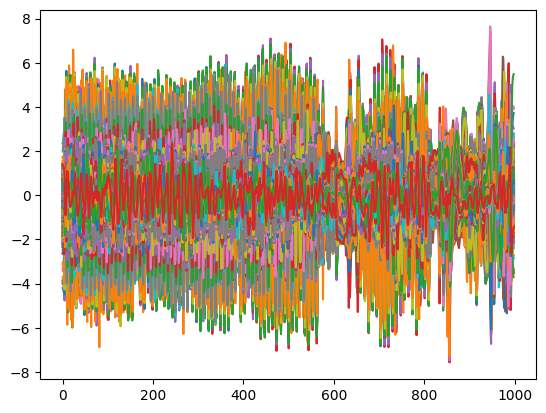

Tutorial#
Spectoprep is very easy to use! import the function
[1]:
from spectoprep import PipelineOptimizer, SpectroPrepPlotter
[2]:
import numpy as np
import pandas as pd
[3]:
cols = ["File Name", "Data Set", "Sample", "Path", "Casein", "True Protein", "year"]
[4]:
data = pd.read_csv("/Users/habeebbabatunde/Downloads/shiny-python-projects-master/intep_opus_pythonnew/newpython_interp_cal291.csv")
[5]:
data2 = data.drop(columns=cols)
[6]:
wvn = data2.columns.astype(float).to_numpy()
[7]:
groups = data["Sample"].values
[8]:
X_train = data2.values
[9]:
y_train = data["Casein"].values
[ ]:
optimizer = PipelineOptimizer(
X_train=X_train,
y_train=y_train,
X_test=None,
y_test=None,
preprocessing_steps=['msc', 'savgol', 'detrend', 'scaler', 'robust_scaler', 'emsc', 'meancn', 'autoscale', 'globalscale'],
cv_method="group_shuffle_split",
n_splits=3,
random_state=21,
groups=groups,
max_pipeline_length=2,
allowed_preprocess_combinations=[1, 2]
)
best_params, best_pipeline = optimizer.bayesian_optimize(
init_points=50,
n_iter=1000
)
# Extract preprocessing steps without the final model
custom_preprocessing = []
for name, step in best_pipeline.steps[:-1]:
custom_preprocessing.append((name, step))
2025-04-09 17:35:58,863 - PipelineUtils - INFO - Generating pipeline configurations with lengths: [1, 2]
2025-04-09 17:35:58,866 - PipelineUtils - INFO - Available preprocessing steps: ['msc', 'savgol', 'detrend', 'scaler', 'robust_scaler', 'emsc', 'meancn', 'autoscale', 'globalscale']
2025-04-09 17:35:58,868 - PipelineUtils - INFO - Generated 38 valid pipeline configurations
2025-04-09 17:35:58,869 - PipelineOptimizer - INFO - Initialized PipelineOptimizer
2025-04-09 17:35:58,870 - PipelineOptimizer - INFO - Number of preprocessing steps: 9
2025-04-09 17:35:58,871 - PipelineOptimizer - INFO - Number of possible pipeline configurations: 38
2025-04-09 17:35:58,871 - PipelineOptimizer - INFO - Using group_shuffle_split validation method
| iter | target | als_lam | als_niter | als_p | detren... | detren... | emsc_o... | fa_lin... | fa_n_c... | global... | ica_n_... | kpca_g... | kpca_k... | kpca_n... | lle_n_... | lle_n_... | lsnv_win | minmax... | minmax... | pca_n_... | pipeli... | power_... | power_... | quanti... | quanti... | rbf_gamma | rbf_n_... | ridge_... | rnv_lp | rnv_up | rs_qua... | rs_qua... | rs_wit... | rs_wit... | savgol... | savgol... | savgol... | skb_k |
-------------------------------------------------------------------------------------------------------------------------------------------------------------------------------------------------------------------------------------------------------------------------------------------------------------------------------------------------------------------------------------------------------------------------------------------------------------------------------------
2025-04-09 17:35:59,332 - PipelineOptimizer - INFO - Pipeline config: ('msc', 'autoscale'), RMSE: 0.2220, R²: 0.9629
| 1 | -0.222 | 4.968e+03 | 21.56 | 0.2191 | 0.02162 | 1.824 | 1.203 | 0.9038 | 67.06 | 3.773 | 30.01 | 0.6966 | 3.461 | 8.396 | 6.987 | 17.4 | 12.18 | 0.9036 | 0.3882 | 76.41 | 14.22 | 0.4087 | 0.7134 | 0.2707 | 172.3 | 0.9133 | 154.5 | 51.67 | 7.518 | 84.48 | 80.68 | 11.54 | 0.4601 | 0.5444 | 0.6522 | 11.8 | 3.907 | 85.23 |
2025-04-09 17:35:59,762 - PipelineOptimizer - INFO - Pipeline config: ('msc', 'savgol'), RMSE: 1.1197, R²: 0.0556
| 2 | -1.12 | 2.683e+04 | 34.59 | 0.1993 | 0.3868 | 2.641 | 4.241 | 1.795 | 90.04 | 5.41 | 41.76 | 8.589 | 3.146 | 44.61 | 21.57 | 16.36 | 8.835 | 0.928 | 0.05587 | 41.33 | 8.555 | 0.5905 | 0.8863 | 0.3277 | 162.9 | 0.7977 | 136.5 | 24.41 | 17.29 | 87.01 | 89.78 | 14.21 | 0.8641 | 0.7022 | 0.5039 | 8.075 | 4.4 | 37.78 |
2025-04-09 17:36:00,481 - PipelineOptimizer - INFO - Pipeline config: ('detrend', 'emsc'), RMSE: 1.0641, R²: 0.1472
| 3 | -1.064 | 3.817e+04 | 11.65 | 0.1939 | 0.8042 | 4.589 | 1.779 | 2.563 | 19.32 | 4.362 | 20.35 | 5.707 | 2.039 | 27.4 | 16.65 | 28.3 | 8.479 | 0.6833 | 0.3264 | 31.78 | 24.99 | 0.9237 | 0.06997 | 0.7818 | 16.67 | 0.5096 | 93.37 | 69.05 | 16.69 | 80.71 | 76.49 | 17.1 | 0.7124 | 0.1508 | 1.844 | 7.905 | 2.847 | 98.07 |
2025-04-09 17:36:00,909 - PipelineOptimizer - INFO - Pipeline config: ('msc', 'robust_scaler'), RMSE: 0.8428, R²: 0.4650
| 4 | -0.8428 | 8.437e+04 | 37.68 | 0.1442 | 0.9168 | 3.93 | 1.008 | 2.012 | 58.72 | 5.311 | 22.93 | 3.634 | 1.134 | 39.06 | 22.04 | 9.071 | 11.56 | 0.9143 | 0.2954 | 24.42 | 12.22 | 0.2761 | 0.8976 | 0.9251 | 127.5 | 0.1402 | 36.13 | 36.59 | 6.732 | 87.68 | 80.19 | 7.21 | 0.1881 | 0.324 | 1.997 | 8.872 | 3.096 | 34.71 |
2025-04-09 17:36:01,339 - PipelineOptimizer - INFO - Pipeline config: ('msc', 'detrend'), RMSE: 0.8761, R²: 0.4218
| 5 | -0.8761 | 8.925e+03 | 13.53 | 0.08316 | 0.2183 | 1.251 | 4.111 | 1.483 | 28.88 | 8.288 | 18.21 | 1.957 | 1.364 | 34.29 | 9.927 | 11.64 | 12.29 | 0.8157 | 0.2975 | 89.99 | 10.14 | 0.5334 | 0.1332 | 0.9619 | 164.4 | 0.6518 | 48.43 | 97.08 | 5.533 | 86.35 | 93.89 | 11.38 | 0.7769 | 0.9751 | 2.106 | 8.815 | 4.875 | 40.78 |
2025-04-09 17:36:01,783 - PipelineOptimizer - INFO - Pipeline config: ('robust_scaler', 'meancn'), RMSE: 0.2473, R²: 0.9539
| 6 | -0.2473 | 9.514e+04 | 15.18 | 0.2817 | 0.7571 | 1.184 | 3.651 | 0.6774 | 52.91 | 5.596 | 7.162 | 8.151 | 3.84 | 30.27 | 13.32 | 21.4 | 9.374 | 0.8381 | 0.1731 | 16.98 | 31.62 | 0.3593 | 0.1023 | 0.03725 | 96.63 | 0.129 | 143.7 | 6.341 | 5.045 | 81.34 | 91.12 | 19.02 | 0.8601 | 0.8016 | 0.6859 | 10.05 | 3.162 | 30.78 |
2025-04-09 17:36:02,566 - PipelineOptimizer - INFO - Pipeline config: ('detrend', 'robust_scaler'), RMSE: 0.2449, R²: 0.9548
| 7 | -0.2449 | 3.698e+04 | 20.81 | 0.03706 | 0.7531 | 3.922 | 1.015 | 0.7165 | 28.43 | 8.125 | 26.36 | 4.657 | 1.049 | 30.95 | 26.53 | 29.83 | 7.161 | 0.8099 | 0.01743 | 84.68 | 23.62 | 0.396 | 0.307 | 0.06134 | 180.3 | 0.9108 | 190.7 | 91.97 | 5.477 | 93.14 | 75.84 | 24.61 | 0.7588 | 0.8946 | 2.255 | 12.44 | 3.963 | 90.7 |
2025-04-09 17:36:03,151 - PipelineOptimizer - INFO - Pipeline config: ('msc', 'detrend'), RMSE: 0.8854, R²: 0.4095
| 8 | -0.8854 | 2.882e+03 | 37.2 | 0.2554 | 0.8875 | 1.167 | 2.913 | 1.743 | 23.79 | 4.885 | 42.18 | 9.788 | 2.668 | 46.07 | 6.075 | 16.29 | 7.526 | 0.6732 | 0.2152 | 68.48 | 10.04 | 0.6404 | 0.8798 | 0.7535 | 118.4 | 0.7065 | 72.88 | 61.64 | 15.39 | 80.68 | 75.73 | 11.89 | 0.8104 | 0.4254 | 2.586 | 8.759 | 2.218 | 88.49 |
2025-04-09 17:36:03,578 - PipelineOptimizer - INFO - Pipeline config: ('msc', 'autoscale'), RMSE: 0.2352, R²: 0.9583
| 9 | -0.2352 | 3.797e+04 | 30.29 | 0.2407 | 0.336 | 1.02 | 3.341 | 1.045 | 46.48 | 3.633 | 33.47 | 4.917 | 3.259 | 19.45 | 8.802 | 18.29 | 11.61 | 0.9742 | 0.105 | 8.714 | 14.19 | 0.7439 | 0.6033 | 0.766 | 107.7 | 0.334 | 128.1 | 75.03 | 14.47 | 80.32 | 81.58 | 14.1 | 0.3398 | 0.1536 | 2.027 | 7.095 | 2.93 | 5.03 |
2025-04-09 17:36:04,058 - PipelineOptimizer - INFO - Pipeline config: ('msc', 'robust_scaler'), RMSE: 0.8910, R²: 0.4020
| 10 | -0.891 | 3.068e+04 | 48.47 | 0.2809 | 0.4207 | 1.486 | 4.796 | 2.83 | 38.04 | 1.478 | 7.954 | 8.974 | 0.3296 | 22.41 | 9.832 | 10.63 | 7.547 | 0.6004 | 0.06706 | 61.3 | 12.19 | 0.7032 | 0.4548 | 0.7173 | 46.48 | 0.2276 | 189.4 | 91.15 | 13.59 | 94.68 | 92.32 | 22.53 | 0.5272 | 0.1165 | 1.884 | 12.78 | 2.761 | 53.76 |
2025-04-09 17:36:04,602 - PipelineOptimizer - INFO - Pipeline config: ('emsc', 'meancn'), RMSE: 0.7296, R²: 0.5991
| 11 | -0.7296 | 1.044e+04 | 23.24 | 0.05112 | 0.9056 | 4.981 | 4.576 | 2.084 | 55.05 | 4.347 | 16.08 | 7.545 | 0.1383 | 44.27 | 12.63 | 12.49 | 11.62 | 0.7846 | 0.3672 | 53.81 | 32.76 | 0.5175 | 0.9633 | 0.2574 | 61.74 | 0.993 | 169.9 | 15.95 | 16.06 | 86.27 | 77.43 | 19.75 | 0.9914 | 0.8445 | 2.249 | 9.439 | 1.277 | 20.38 |
2025-04-09 17:36:05,248 - PipelineOptimizer - INFO - Pipeline config: ('detrend', 'autoscale'), RMSE: 0.2075, R²: 0.9676
| 12 | -0.2075 | 7.757e+04 | 32.61 | 0.2673 | 0.9725 | 4.673 | 3.761 | 0.6073 | 76.29 | 5.083 | 39.2 | 4.732 | 2.12 | 31.67 | 9.393 | 27.12 | 12.46 | 0.8295 | 0.2248 | 60.76 | 27.41 | 0.3601 | 0.1409 | 0.105 | 138.7 | 0.4376 | 128.9 | 78.79 | 14.83 | 83.38 | 92.37 | 23.03 | 0.2033 | 0.2358 | 0.7119 | 9.907 | 4.874 | 61.8 |
2025-04-09 17:36:05,730 - PipelineOptimizer - INFO - Pipeline config: ('msc', 'meancn'), RMSE: 0.8373, R²: 0.4719
| 13 | -0.8373 | 2.915e+04 | 42.47 | 0.2366 | 0.3992 | 2.462 | 3.4 | 2.433 | 68.13 | 1.812 | 4.675 | 7.838 | 1.199 | 6.919 | 8.735 | 24.86 | 12.97 | 0.9672 | 0.03522 | 66.85 | 13.06 | 0.4754 | 0.4925 | 0.3831 | 64.46 | 0.6319 | 78.98 | 33.41 | 8.051 | 94.44 | 83.61 | 13.33 | 0.4336 | 0.6207 | 0.516 | 7.585 | 4.276 | 82.98 |
2025-04-09 17:36:06,025 - PipelineOptimizer - INFO - Pipeline config: ('meancn', 'autoscale'), RMSE: 0.2551, R²: 0.9510
| 14 | -0.2551 | 1.883e+04 | 39.31 | 0.08323 | 0.3521 | 4.894 | 3.957 | 2.709 | 24.91 | 5.743 | 11.2 | 8.79 | 0.1904 | 42.12 | 22.09 | 28.05 | 11.92 | 0.6706 | 0.2351 | 75.06 | 36.09 | 0.6448 | 0.3199 | 0.7903 | 13.34 | 0.5523 | 128.1 | 27.51 | 10.82 | 93.15 | 94.72 | 7.791 | 0.9411 | 0.4153 | 1.487 | 11.33 | 3.262 | 59.97 |
2025-04-09 17:36:06,324 - PipelineOptimizer - INFO - Pipeline config: ('savgol', 'meancn'), RMSE: 1.1440, R²: 0.0143
| 15 | -1.144 | 4.929e+04 | 21.12 | 0.1096 | 0.9315 | 3.495 | 4.328 | 1.099 | 93.77 | 5.971 | 15.21 | 7.039 | 1.003 | 28.86 | 16.15 | 6.351 | 11.74 | 0.6854 | 0.02176 | 29.8 | 20.36 | 0.5294 | 0.622 | 0.1426 | 197.7 | 0.6552 | 129.6 | 11.77 | 5.534 | 94.77 | 78.97 | 10.15 | 0.2771 | 0.2541 | 2.124 | 11.36 | 4.899 | 10.43 |
2025-04-09 17:36:06,859 - PipelineOptimizer - INFO - Pipeline config: ('savgol', 'detrend'), RMSE: 1.1436, R²: 0.0149
| 16 | -1.144 | 7.889e+04 | 27.22 | 0.09916 | 0.9286 | 2.56 | 1.589 | 0.7866 | 90.67 | 8.743 | 33.26 | 9.504 | 1.009 | 33.61 | 28.6 | 11.13 | 7.884 | 0.9894 | 0.3914 | 24.79 | 16.27 | 0.6104 | 0.692 | 0.7222 | 99.55 | 0.06552 | 196.9 | 63.25 | 17.62 | 83.84 | 85.3 | 22.86 | 0.1002 | 0.1623 | 0.7095 | 7.067 | 1.358 | 67.45 |
2025-04-09 17:36:07,157 - PipelineOptimizer - INFO - Pipeline config: ('savgol', 'meancn'), RMSE: 1.1532, R²: -0.0017
| 17 | -1.153 | 9.736e+04 | 39.02 | 0.2573 | 0.01199 | 4.034 | 4.118 | 0.3147 | 43.97 | 3.756 | 37.64 | 1.511 | 1.076 | 26.47 | 29.61 | 14.79 | 8.166 | 0.9282 | 0.1268 | 54.17 | 20.15 | 0.5781 | 0.5851 | 0.225 | 31.93 | 0.337 | 195.2 | 69.61 | 9.637 | 83.03 | 75.25 | 7.391 | 0.6589 | 0.5491 | 2.856 | 9.749 | 4.502 | 60.17 |
2025-04-09 17:36:07,702 - PipelineOptimizer - INFO - Pipeline config: ('detrend', 'scaler'), RMSE: 0.1774, R²: 0.9763
| 18 | -0.1774 | 4.178e+03 | 12.76 | 0.07231 | 0.8953 | 3.012 | 1.368 | 0.74 | 16.64 | 6.105 | 43.1 | 3.009 | 2.967 | 16.9 | 21.93 | 29.98 | 9.047 | 0.6279 | 0.06597 | 10.04 | 22.88 | 0.9463 | 0.2202 | 0.03529 | 77.13 | 0.3872 | 32.53 | 59.13 | 5.301 | 94.4 | 92.9 | 10.9 | 0.07541 | 0.3315 | 1.608 | 7.828 | 1.071 | 21.16 |
2025-04-09 17:36:07,974 - PipelineOptimizer - INFO - Pipeline config: ('meancn',), RMSE: 0.7745, R²: 0.5482
| 19 | -0.7745 | 4.609e+04 | 33.9 | 0.133 | 0.2254 | 4.925 | 3.717 | 2.776 | 99.41 | 4.777 | 41.99 | 2.41 | 0.3012 | 7.144 | 17.87 | 17.26 | 7.981 | 0.7717 | 0.2315 | 16.89 | 6.151 | 0.6349 | 0.04559 | 0.7926 | 59.0 | 0.2066 | 12.07 | 23.36 | 5.047 | 84.15 | 82.47 | 23.6 | 0.3523 | 0.03672 | 2.984 | 9.974 | 3.256 | 41.87 |
2025-04-09 17:36:08,340 - PipelineOptimizer - INFO - Pipeline config: ('savgol', 'robust_scaler'), RMSE: 1.1361, R²: 0.0278
| 20 | -1.136 | 6.017e+04 | 38.13 | 0.1927 | 0.9012 | 2.907 | 1.398 | 0.7929 | 92.89 | 4.673 | 8.156 | 8.96 | 2.316 | 21.09 | 3.949 | 13.52 | 10.43 | 0.936 | 0.3622 | 85.76 | 17.54 | 0.5623 | 0.06045 | 0.325 | 80.75 | 0.7395 | 94.66 | 46.92 | 12.53 | 83.4 | 89.85 | 11.59 | 0.934 | 0.2138 | 1.412 | 8.435 | 2.807 | 23.99 |
2025-04-09 17:36:08,789 - PipelineOptimizer - INFO - Pipeline config: ('robust_scaler',), RMSE: 0.3276, R²: 0.9192
| 21 | -0.3276 | 2.826e+04 | 17.52 | 0.1713 | 0.357 | 1.181 | 4.985 | 0.7974 | 21.5 | 3.098 | 12.13 | 6.92 | 2.895 | 9.309 | 16.39 | 6.105 | 9.999 | 0.7884 | 0.1656 | 93.49 | 4.344 | 0.09279 | 0.4926 | 0.8301 | 62.07 | 0.3672 | 115.9 | 27.45 | 19.55 | 87.15 | 94.86 | 6.739 | 0.6475 | 0.8845 | 2.646 | 9.19 | 3.018 | 82.16 |
2025-04-09 17:36:09,251 - PipelineOptimizer - INFO - Pipeline config: ('detrend', 'meancn'), RMSE: 0.7714, R²: 0.5517
| 22 | -0.7714 | 2.086e+04 | 25.51 | 0.08638 | 0.5058 | 1.383 | 2.203 | 2.391 | 44.05 | 7.098 | 36.04 | 8.73 | 1.399 | 17.25 | 6.711 | 16.77 | 9.596 | 0.7052 | 0.1823 | 28.22 | 26.04 | 0.1157 | 0.9601 | 0.249 | 76.76 | 0.5676 | 163.1 | 20.26 | 12.4 | 89.16 | 76.47 | 15.2 | 0.4666 | 0.6297 | 2.659 | 11.15 | 4.903 | 77.7 |
2025-04-09 17:36:09,679 - PipelineOptimizer - INFO - Pipeline config: ('robust_scaler', 'meancn'), RMSE: 0.3427, R²: 0.9115
| 23 | -0.3427 | 3.928e+04 | 25.93 | 0.1433 | 0.2232 | 1.732 | 3.684 | 1.194 | 68.24 | 1.278 | 29.84 | 3.736 | 0.9549 | 14.73 | 14.52 | 9.783 | 9.472 | 0.9654 | 0.005922 | 12.81 | 32.47 | 0.2578 | 0.621 | 0.9878 | 181.8 | 0.3656 | 75.15 | 87.5 | 13.06 | 88.53 | 79.63 | 8.309 | 0.7651 | 0.781 | 2.604 | 9.337 | 2.855 | 94.98 |
2025-04-09 17:36:09,950 - PipelineOptimizer - INFO - Pipeline config: ('savgol',), RMSE: 1.1489, R²: 0.0058
| 24 | -1.149 | 1.865e+04 | 17.12 | 0.04 | 0.0618 | 2.628 | 4.873 | 1.096 | 45.28 | 7.255 | 27.32 | 9.237 | 0.9109 | 17.92 | 14.2 | 16.36 | 12.33 | 0.9092 | 0.2812 | 21.92 | 0.6393 | 0.3957 | 0.2878 | 0.2597 | 12.09 | 0.1533 | 146.5 | 89.21 | 18.17 | 84.79 | 81.66 | 24.73 | 0.8948 | 0.1706 | 0.6468 | 10.4 | 1.01 | 35.09 |
2025-04-09 17:36:10,438 - PipelineOptimizer - INFO - Pipeline config: ('scaler', 'emsc'), RMSE: 0.2904, R²: 0.9365
| 25 | -0.2904 | 4.569e+04 | 42.67 | 0.0143 | 0.7919 | 2.743 | 3.574 | 1.6 | 37.99 | 1.056 | 33.04 | 9.208 | 3.681 | 24.16 | 22.43 | 21.45 | 10.07 | 0.6284 | 0.3613 | 70.76 | 28.52 | 0.1624 | 0.2511 | 0.3452 | 69.08 | 0.005692 | 124.2 | 81.94 | 6.391 | 94.34 | 82.93 | 16.42 | 0.5861 | 0.7918 | 2.659 | 7.435 | 4.32 | 41.51 |
2025-04-09 17:36:10,853 - PipelineOptimizer - INFO - Pipeline config: ('emsc',), RMSE: 0.8311, R²: 0.4797
| 26 | -0.8311 | 9.614e+04 | 26.47 | 0.2193 | 0.2101 | 2.77 | 3.371 | 0.6426 | 71.38 | 7.575 | 15.42 | 7.272 | 2.215 | 34.83 | 17.26 | 5.38 | 12.35 | 0.9341 | 0.1036 | 23.54 | 4.588 | 0.7889 | 0.856 | 0.8358 | 126.2 | 0.3668 | 196.3 | 67.88 | 11.8 | 89.67 | 91.55 | 18.18 | 0.861 | 0.1404 | 0.7174 | 7.034 | 4.933 | 60.44 |
2025-04-09 17:36:11,289 - PipelineOptimizer - INFO - Pipeline config: ('robust_scaler', 'emsc'), RMSE: 0.9108, R²: 0.3751
| 27 | -0.9108 | 2.586e+04 | 15.86 | 0.2442 | 0.5738 | 1.019 | 1.598 | 2.605 | 57.59 | 4.526 | 48.63 | 7.073 | 3.272 | 33.07 | 19.23 | 5.156 | 11.42 | 0.922 | 0.3204 | 39.44 | 31.09 | 0.8889 | 0.4325 | 0.3382 | 84.51 | 0.7302 | 49.18 | 43.16 | 19.76 | 81.52 | 85.11 | 5.899 | 0.5075 | 0.06279 | 0.1247 | 10.03 | 4.581 | 74.55 |
2025-04-09 17:36:11,580 - PipelineOptimizer - INFO - Pipeline config: ('savgol', 'robust_scaler'), RMSE: 1.1530, R²: -0.0013
| 28 | -1.153 | 8.384e+04 | 11.16 | 0.1265 | 0.8119 | 1.873 | 1.814 | 2.127 | 83.04 | 2.378 | 44.88 | 5.321 | 3.239 | 28.1 | 23.73 | 9.607 | 7.938 | 0.9576 | 0.04514 | 39.36 | 18.27 | 0.441 | 0.9792 | 0.5311 | 188.1 | 0.1748 | 123.3 | 84.04 | 6.891 | 85.67 | 89.51 | 6.96 | 0.4013 | 0.373 | 2.433 | 9.833 | 4.733 | 55.54 |
2025-04-09 17:36:11,975 - PipelineOptimizer - INFO - Pipeline config: ('detrend', 'emsc'), RMSE: 0.9011, R²: 0.3884
| 29 | -0.9011 | 1.619e+04 | 26.39 | 0.2359 | 0.1701 | 2.874 | 1.162 | 2.738 | 6.606 | 7.285 | 26.95 | 8.663 | 0.5733 | 20.7 | 18.26 | 20.85 | 8.458 | 0.9839 | 0.1511 | 79.84 | 24.77 | 0.4552 | 0.4057 | 0.5421 | 91.63 | 0.02731 | 107.3 | 93.32 | 12.2 | 81.57 | 78.81 | 9.646 | 0.523 | 0.8488 | 0.3448 | 11.92 | 3.542 | 69.66 |
2025-04-09 17:36:12,267 - PipelineOptimizer - INFO - Pipeline config: ('savgol', 'scaler'), RMSE: 0.0913, R²: 0.9937
| 30 | -0.09129 | 7.153e+03 | 36.76 | 0.1231 | 0.6628 | 1.084 | 2.488 | 0.5766 | 78.02 | 9.71 | 49.1 | 6.255 | 0.7739 | 30.54 | 5.681 | 22.67 | 12.78 | 0.7371 | 0.1783 | 49.44 | 16.54 | 0.8048 | 0.7242 | 0.3548 | 110.2 | 0.8179 | 118.4 | 77.24 | 7.916 | 82.61 | 84.65 | 22.89 | 0.5878 | 0.09744 | 0.9913 | 12.85 | 2.059 | 90.11 |
2025-04-09 17:36:12,990 - PipelineOptimizer - INFO - Pipeline config: ('detrend', 'emsc'), RMSE: 1.0843, R²: 0.1145
| 31 | -1.084 | 7.242e+04 | 10.37 | 0.03109 | 0.7863 | 4.215 | 3.361 | 2.525 | 51.71 | 9.289 | 29.93 | 4.048 | 0.0405 | 28.71 | 7.31 | 17.44 | 9.941 | 0.6984 | 0.09884 | 31.61 | 24.76 | 0.9858 | 0.4311 | 0.7179 | 172.5 | 0.8826 | 156.4 | 40.61 | 14.24 | 87.46 | 79.71 | 23.45 | 0.5315 | 0.02578 | 2.462 | 12.34 | 2.926 | 85.44 |
2025-04-09 17:36:13,419 - PipelineOptimizer - INFO - Pipeline config: ('detrend', 'emsc'), RMSE: 0.8933, R²: 0.3989
| 32 | -0.8933 | 3.495e+03 | 27.98 | 0.1108 | 0.1981 | 4.362 | 1.955 | 2.523 | 84.06 | 3.426 | 18.61 | 9.136 | 1.633 | 39.45 | 6.435 | 8.225 | 9.41 | 0.8044 | 0.2965 | 63.45 | 25.1 | 0.009119 | 0.1715 | 0.736 | 48.32 | 0.9268 | 117.7 | 89.09 | 8.696 | 84.2 | 77.82 | 18.53 | 0.7713 | 0.3019 | 2.306 | 11.06 | 4.114 | 17.09 |
2025-04-09 17:36:13,831 - PipelineOptimizer - INFO - Pipeline config: ('msc', 'autoscale'), RMSE: 0.1977, R²: 0.9706
| 33 | -0.1977 | 4.776e+04 | 37.21 | 0.2441 | 0.2338 | 1.931 | 3.467 | 1.24 | 99.91 | 1.083 | 9.914 | 8.391 | 2.763 | 20.33 | 13.43 | 18.58 | 7.354 | 0.9851 | 0.2169 | 68.52 | 13.99 | 0.003539 | 0.1825 | 0.5546 | 143.2 | 0.8386 | 12.48 | 28.28 | 19.8 | 82.32 | 79.16 | 17.92 | 0.9608 | 0.06961 | 1.864 | 7.483 | 4.593 | 6.441 |
2025-04-09 17:36:14,300 - PipelineOptimizer - INFO - Pipeline config: ('msc', 'robust_scaler'), RMSE: 0.7388, R²: 0.5888
| 34 | -0.7388 | 5.076e+04 | 39.86 | 0.2869 | 0.9872 | 4.719 | 2.188 | 0.9228 | 62.47 | 3.505 | 22.68 | 2.268 | 3.863 | 28.99 | 26.11 | 12.19 | 8.118 | 0.6632 | 0.08442 | 36.04 | 11.76 | 0.08497 | 0.7579 | 0.5075 | 90.55 | 0.286 | 43.03 | 11.01 | 15.51 | 82.91 | 81.44 | 22.15 | 0.7526 | 0.2499 | 0.7812 | 9.997 | 1.884 | 98.56 |
2025-04-09 17:36:14,577 - PipelineOptimizer - INFO - Pipeline config: ('savgol',), RMSE: 1.1220, R²: 0.0517
| 35 | -1.122 | 8.669e+03 | 45.47 | 0.1647 | 0.06581 | 3.294 | 2.89 | 1.23 | 14.39 | 9.118 | 40.02 | 0.4932 | 0.6124 | 17.6 | 7.233 | 28.13 | 10.97 | 0.8043 | 0.3832 | 64.46 | 1.199 | 0.2129 | 0.4122 | 0.6384 | 46.7 | 0.2519 | 35.08 | 25.73 | 5.932 | 83.84 | 92.06 | 24.93 | 0.6811 | 0.7926 | 1.007 | 8.277 | 4.653 | 29.56 |
2025-04-09 17:36:14,853 - PipelineOptimizer - INFO - Pipeline config: ('savgol', 'globalscale'), RMSE: 1.0426, R²: 0.1813
| 36 | -1.043 | 4.218e+04 | 45.13 | 0.03629 | 0.5255 | 1.216 | 3.068 | 2.315 | 25.12 | 6.851 | 18.62 | 5.557 | 2.801 | 40.76 | 16.41 | 21.42 | 9.099 | 0.9693 | 0.3104 | 96.78 | 22.19 | 0.07969 | 0.8664 | 0.03604 | 23.72 | 0.146 | 66.89 | 66.47 | 15.81 | 88.58 | 82.79 | 13.33 | 0.1362 | 0.8896 | 1.151 | 9.627 | 2.513 | 86.95 |
2025-04-09 17:36:15,442 - PipelineOptimizer - INFO - Pipeline config: ('detrend', 'meancn'), RMSE: 1.0482, R²: 0.1724
| 37 | -1.048 | 3.462e+04 | 26.62 | 0.08615 | 0.8296 | 4.973 | 2.815 | 1.269 | 71.71 | 7.119 | 34.53 | 7.586 | 2.148 | 30.22 | 6.714 | 20.5 | 10.62 | 0.6082 | 0.002158 | 72.46 | 25.8 | 0.5306 | 0.255 | 0.1137 | 157.2 | 0.3837 | 49.23 | 46.76 | 16.04 | 90.15 | 83.91 | 15.17 | 0.9009 | 0.2726 | 1.802 | 11.39 | 2.54 | 44.72 |
2025-04-09 17:36:15,702 - PipelineOptimizer - INFO - Pipeline config: ('globalscale',), RMSE: 0.5080, R²: 0.8056
| 38 | -0.508 | 8.807e+03 | 34.47 | 0.2223 | 0.146 | 2.068 | 4.537 | 1.022 | 61.09 | 2.308 | 3.263 | 2.329 | 2.86 | 42.25 | 8.656 | 17.83 | 11.44 | 0.847 | 0.1951 | 88.31 | 7.517 | 0.2409 | 0.1408 | 0.3994 | 94.66 | 0.456 | 105.2 | 9.96 | 14.72 | 88.48 | 77.18 | 6.972 | 0.7766 | 0.7975 | 1.401 | 10.98 | 3.36 | 62.78 |
2025-04-09 17:36:15,994 - PipelineOptimizer - INFO - Pipeline config: ('detrend', 'globalscale'), RMSE: 0.4966, R²: 0.8142
| 39 | -0.4966 | 2.032e+04 | 12.31 | 0.2878 | 0.4143 | 2.728 | 4.962 | 2.203 | 4.733 | 6.172 | 45.03 | 6.795 | 3.629 | 5.957 | 15.98 | 21.14 | 11.76 | 0.6853 | 0.2884 | 74.04 | 28.12 | 0.5271 | 0.6472 | 0.6853 | 52.99 | 0.6086 | 56.68 | 54.84 | 15.62 | 89.99 | 79.26 | 10.46 | 0.1591 | 0.2873 | 0.05243 | 9.741 | 1.904 | 87.59 |
2025-04-09 17:36:16,303 - PipelineOptimizer - INFO - Pipeline config: ('savgol', 'scaler'), RMSE: 0.2834, R²: 0.9395
| 40 | -0.2834 | 6.033e+04 | 44.25 | 0.2847 | 0.5223 | 4.706 | 4.23 | 2.0 | 4.024 | 4.925 | 8.602 | 4.781 | 2.673 | 28.93 | 21.13 | 7.653 | 8.111 | 0.8158 | 0.007242 | 10.42 | 16.63 | 0.8682 | 0.2716 | 0.8982 | 25.03 | 0.2938 | 198.9 | 65.81 | 12.83 | 91.84 | 88.44 | 6.487 | 0.8858 | 0.7336 | 0.3046 | 8.211 | 4.911 | 22.08 |
2025-04-09 17:36:16,744 - PipelineOptimizer - INFO - Pipeline config: ('detrend', 'autoscale'), RMSE: 0.1091, R²: 0.9910
| 41 | -0.1091 | 3.692e+04 | 21.27 | 0.0194 | 0.8479 | 1.194 | 4.388 | 1.475 | 27.5 | 7.426 | 30.6 | 3.474 | 0.813 | 23.17 | 23.3 | 21.3 | 12.78 | 0.7644 | 0.07156 | 60.77 | 26.71 | 0.9815 | 0.921 | 0.5368 | 145.5 | 0.7222 | 194.7 | 8.81 | 6.454 | 94.0 | 75.69 | 18.42 | 0.1397 | 0.825 | 0.4094 | 10.5 | 3.179 | 27.89 |
2025-04-09 17:36:17,635 - PipelineOptimizer - INFO - Pipeline config: ('detrend', 'emsc'), RMSE: 1.0024, R²: 0.2432
| 42 | -1.002 | 1.501e+03 | 14.16 | 0.2216 | 0.7048 | 4.617 | 4.819 | 0.0189 | 89.91 | 9.412 | 3.687 | 4.062 | 3.962 | 37.5 | 6.702 | 9.357 | 7.29 | 0.9544 | 0.2586 | 23.92 | 24.78 | 0.9502 | 0.4798 | 0.3432 | 132.7 | 0.805 | 82.86 | 11.19 | 6.03 | 81.45 | 80.23 | 22.42 | 0.2668 | 0.5885 | 2.788 | 10.61 | 3.273 | 31.82 |
2025-04-09 17:36:18,123 - PipelineOptimizer - INFO - Pipeline config: ('savgol', 'emsc'), RMSE: 0.7259, R²: 0.6031
| 43 | -0.7259 | 2.577e+04 | 17.58 | 0.1064 | 0.08581 | 1.08 | 4.106 | 0.5475 | 82.27 | 5.795 | 5.893 | 6.067 | 3.944 | 27.43 | 13.64 | 29.03 | 7.858 | 0.6716 | 0.3287 | 74.49 | 19.37 | 0.3931 | 0.08027 | 0.2142 | 155.7 | 0.1983 | 134.6 | 15.36 | 14.49 | 86.57 | 81.84 | 9.237 | 0.3382 | 0.04237 | 0.2901 | 12.95 | 4.026 | 7.824 |
2025-04-09 17:36:18,442 - PipelineOptimizer - INFO - Pipeline config: ('robust_scaler',), RMSE: 0.8463, R²: 0.4605
| 44 | -0.8463 | 6.208e+04 | 42.87 | 0.2903 | 0.4317 | 3.991 | 4.472 | 2.448 | 68.47 | 2.838 | 26.6 | 8.949 | 0.02407 | 41.86 | 20.19 | 27.15 | 10.49 | 0.7228 | 0.2001 | 44.02 | 3.91 | 0.03201 | 0.3788 | 0.4259 | 63.65 | 0.3772 | 27.49 | 74.85 | 11.25 | 86.3 | 93.75 | 9.66 | 0.7078 | 0.3559 | 2.648 | 8.793 | 3.292 | 86.85 |
2025-04-09 17:36:18,874 - PipelineOptimizer - INFO - Pipeline config: ('detrend', 'globalscale'), RMSE: 0.5234, R²: 0.7936
| 45 | -0.5234 | 8.913e+04 | 20.14 | 0.2207 | 0.7453 | 1.312 | 1.871 | 1.148 | 31.53 | 2.266 | 6.528 | 7.475 | 1.659 | 10.65 | 20.63 | 28.46 | 10.34 | 0.9538 | 0.2947 | 90.36 | 28.11 | 0.3028 | 0.9925 | 0.6842 | 57.78 | 0.9214 | 142.8 | 10.42 | 7.2 | 92.16 | 89.2 | 13.48 | 0.5349 | 0.4532 | 1.627 | 11.23 | 2.453 | 93.53 |
2025-04-09 17:36:19,170 - PipelineOptimizer - INFO - Pipeline config: ('savgol', 'globalscale'), RMSE: 1.0391, R²: 0.1867
| 46 | -1.039 | 1.474e+04 | 42.96 | 0.1961 | 0.4105 | 4.122 | 1.283 | 0.002301 | 44.7 | 7.786 | 15.42 | 1.026 | 1.183 | 10.69 | 13.78 | 8.582 | 8.673 | 0.7215 | 0.2423 | 91.8 | 21.63 | 0.4601 | 0.7964 | 0.1581 | 89.2 | 0.7487 | 110.8 | 44.5 | 12.73 | 88.29 | 87.45 | 11.82 | 0.9415 | 0.6482 | 0.8707 | 9.384 | 2.123 | 17.36 |
2025-04-09 17:36:19,539 - PipelineOptimizer - INFO - Pipeline config: ('robust_scaler',), RMSE: 0.2823, R²: 0.9400
| 47 | -0.2823 | 9.067e+04 | 45.0 | 0.08015 | 0.546 | 2.825 | 1.867 | 0.236 | 10.68 | 8.067 | 42.83 | 4.4 | 0.2254 | 8.501 | 24.71 | 17.7 | 8.833 | 0.6055 | 0.2373 | 21.2 | 3.77 | 0.7516 | 0.9078 | 0.8322 | 107.9 | 0.6337 | 31.06 | 22.08 | 10.19 | 88.97 | 92.21 | 24.43 | 0.2547 | 0.8295 | 1.919 | 7.402 | 4.122 | 34.45 |
2025-04-09 17:36:19,875 - PipelineOptimizer - INFO - Pipeline config: ('detrend',), RMSE: 0.7334, R²: 0.5948
| 48 | -0.7334 | 7.968e+04 | 29.74 | 0.1163 | 0.2484 | 1.831 | 2.769 | 2.175 | 87.73 | 3.787 | 5.511 | 4.707 | 1.726 | 31.64 | 23.56 | 26.54 | 9.229 | 0.8749 | 0.3379 | 87.71 | 1.762 | 0.6856 | 0.02576 | 0.2902 | 16.95 | 0.9093 | 100.9 | 21.19 | 17.21 | 82.21 | 77.91 | 24.48 | 0.2262 | 0.1228 | 1.843 | 10.45 | 3.699 | 85.84 |
2025-04-09 17:36:20,354 - PipelineOptimizer - INFO - Pipeline config: ('robust_scaler', 'emsc'), RMSE: 0.9848, R²: 0.2694
| 49 | -0.9848 | 3.642e+04 | 20.21 | 0.2219 | 0.7655 | 4.978 | 2.611 | 2.598 | 49.15 | 3.524 | 16.42 | 6.477 | 0.8383 | 34.33 | 2.938 | 25.28 | 11.78 | 0.8092 | 0.1009 | 55.14 | 31.29 | 0.6294 | 0.5062 | 0.4642 | 26.59 | 0.002736 | 183.9 | 81.76 | 7.283 | 80.59 | 93.11 | 5.356 | 0.9838 | 0.4754 | 0.1542 | 12.11 | 2.445 | 74.98 |
2025-04-09 17:36:20,745 - PipelineOptimizer - INFO - Pipeline config: ('msc', 'meancn'), RMSE: 0.8441, R²: 0.4633
| 50 | -0.8441 | 6.113e+04 | 16.64 | 0.2265 | 0.2148 | 1.288 | 1.37 | 2.826 | 99.97 | 4.161 | 32.02 | 9.839 | 3.14 | 20.0 | 12.96 | 7.162 | 9.071 | 0.7959 | 0.2892 | 51.05 | 13.09 | 0.9002 | 0.4314 | 0.2436 | 93.0 | 0.7472 | 59.96 | 37.41 | 5.61 | 85.23 | 82.95 | 22.67 | 0.2506 | 0.7842 | 1.777 | 10.53 | 2.87 | 8.129 |
2025-04-09 17:36:21,238 - PipelineOptimizer - INFO - Pipeline config: ('detrend', 'meancn'), RMSE: 0.9611, R²: 0.3042
| 51 | -0.9611 | 6.495e+04 | 12.66 | 0.2372 | 0.7567 | 1.658 | 2.435 | 1.411 | 51.71 | 3.382 | 26.88 | 9.235 | 1.755 | 29.75 | 22.97 | 21.26 | 11.21 | 0.9633 | 0.3825 | 11.84 | 26.19 | 0.6521 | 0.1714 | 0.8742 | 62.98 | 0.07736 | 193.6 | 13.09 | 8.094 | 80.75 | 81.97 | 19.55 | 0.4047 | 0.2342 | 0.5062 | 11.47 | 4.132 | 39.14 |
2025-04-09 17:36:22,008 - PipelineOptimizer - INFO - Pipeline config: ('detrend', 'robust_scaler'), RMSE: 0.2313, R²: 0.9597
| 52 | -0.2313 | 4.972e+03 | 37.66 | 0.06814 | 0.5728 | 3.224 | 4.738 | 1.8 | 40.22 | 9.811 | 19.04 | 7.332 | 3.724 | 11.69 | 14.49 | 18.33 | 10.36 | 0.7493 | 0.09415 | 86.52 | 24.26 | 0.8392 | 0.3656 | 0.7261 | 130.7 | 0.2796 | 156.9 | 44.3 | 19.55 | 84.76 | 80.97 | 8.234 | 0.5014 | 0.7157 | 0.8548 | 11.97 | 3.606 | 71.88 |
2025-04-09 17:36:22,391 - PipelineOptimizer - INFO - Pipeline config: ('savgol', 'meancn'), RMSE: 1.1554, R²: -0.0055
| 53 | -1.155 | 3.698e+04 | 24.26 | 0.122 | 0.3974 | 2.084 | 2.852 | 0.7684 | 4.361 | 9.51 | 38.14 | 6.309 | 0.4525 | 5.215 | 18.17 | 21.3 | 11.33 | 0.9893 | 0.1503 | 54.74 | 19.97 | 0.3405 | 0.3822 | 0.2079 | 162.6 | 0.276 | 150.1 | 23.68 | 15.38 | 94.15 | 88.4 | 18.34 | 0.8617 | 0.1236 | 1.921 | 9.642 | 1.251 | 35.7 |
2025-04-09 17:36:22,967 - PipelineOptimizer - INFO - Pipeline config: ('msc', 'scaler'), RMSE: 0.1996, R²: 0.9700
| 54 | -0.1996 | 9.705e+04 | 31.68 | 0.2809 | 0.315 | 2.646 | 3.36 | 0.3699 | 77.9 | 8.024 | 49.72 | 7.854 | 1.892 | 7.091 | 27.15 | 18.33 | 7.256 | 0.8227 | 0.3795 | 29.13 | 11.41 | 0.5434 | 0.8034 | 0.4176 | 29.15 | 0.6973 | 28.69 | 29.58 | 13.1 | 94.33 | 82.12 | 21.45 | 0.5331 | 0.5751 | 1.05 | 11.27 | 1.175 | 92.49 |
2025-04-09 17:36:24,389 - PipelineOptimizer - INFO - Pipeline config: ('scaler', 'meancn'), RMSE: 0.2610, R²: 0.9487
| 55 | -0.261 | 7.002e+03 | 13.57 | 0.2315 | 0.2348 | 4.781 | 1.443 | 0.5394 | 35.81 | 8.751 | 34.19 | 5.401 | 0.07146 | 12.35 | 15.17 | 13.52 | 7.242 | 0.8748 | 0.2317 | 49.13 | 30.07 | 0.4117 | 0.08855 | 0.3757 | 186.7 | 0.9433 | 143.9 | 34.27 | 14.88 | 88.19 | 83.45 | 6.604 | 0.1503 | 0.123 | 2.425 | 9.3 | 4.525 | 40.33 |
2025-04-09 17:36:25,243 - PipelineOptimizer - INFO - Pipeline config: ('detrend', 'robust_scaler'), RMSE: 0.5071, R²: 0.8063
| 56 | -0.5071 | 7.108e+03 | 28.94 | 0.02611 | 0.4786 | 2.21 | 2.966 | 2.425 | 68.9 | 1.913 | 36.0 | 4.084 | 2.249 | 10.65 | 15.97 | 14.89 | 9.435 | 0.8884 | 0.33 | 40.09 | 23.62 | 0.8524 | 0.3614 | 0.3016 | 148.8 | 0.1294 | 125.4 | 75.03 | 8.203 | 91.44 | 94.17 | 19.68 | 0.9749 | 0.5712 | 0.1521 | 10.69 | 3.531 | 62.84 |
2025-04-09 17:36:25,774 - PipelineOptimizer - INFO - Pipeline config: ('robust_scaler',), RMSE: 0.3599, R²: 0.9025
| 57 | -0.3599 | 5.011e+03 | 39.65 | 0.1642 | 0.8657 | 1.579 | 1.757 | 0.6268 | 54.51 | 2.33 | 4.592 | 9.964 | 2.437 | 14.64 | 19.67 | 18.59 | 10.89 | 0.7512 | 0.05384 | 76.39 | 4.027 | 0.9259 | 0.6038 | 0.7805 | 136.1 | 0.1358 | 138.7 | 47.83 | 13.66 | 85.44 | 94.84 | 23.58 | 0.8471 | 0.7163 | 1.955 | 10.28 | 3.165 | 66.41 |
2025-04-09 17:36:26,108 - PipelineOptimizer - INFO - Pipeline config: ('savgol', 'meancn'), RMSE: 1.1432, R²: 0.0155
| 58 | -1.143 | 4.997e+03 | 43.04 | 0.02121 | 0.1598 | 4.729 | 2.027 | 1.436 | 27.75 | 8.857 | 24.71 | 7.893 | 1.331 | 5.956 | 13.96 | 25.62 | 11.3 | 0.7049 | 0.123 | 67.44 | 20.03 | 0.816 | 0.2856 | 0.06935 | 150.0 | 0.1948 | 190.6 | 74.95 | 13.65 | 92.95 | 77.86 | 12.8 | 0.635 | 0.4179 | 1.095 | 10.21 | 3.328 | 51.54 |
2025-04-09 17:36:26,431 - PipelineOptimizer - INFO - Pipeline config: ('scaler',), RMSE: 0.2457, R²: 0.9545
| 59 | -0.2457 | 1.127e+04 | 13.11 | 0.1751 | 0.3855 | 4.282 | 2.024 | 0.6968 | 25.59 | 1.492 | 49.41 | 4.377 | 1.391 | 38.51 | 19.77 | 22.81 | 10.39 | 0.9484 | 0.3359 | 78.14 | 3.112 | 0.1723 | 0.7214 | 0.521 | 143.0 | 0.8194 | 45.38 | 19.15 | 14.98 | 88.61 | 93.16 | 15.86 | 0.5733 | 0.6792 | 1.348 | 10.09 | 3.989 | 38.07 |
2025-04-09 17:36:26,749 - PipelineOptimizer - INFO - Pipeline config: ('scaler',), RMSE: 0.2809, R²: 0.9406
| 60 | -0.2809 | 1.534e+04 | 40.35 | 0.1043 | 0.6615 | 1.946 | 1.244 | 0.3844 | 14.5 | 3.261 | 8.825 | 9.765 | 2.26 | 25.12 | 20.31 | 14.14 | 12.02 | 0.6974 | 0.2706 | 68.99 | 2.795 | 0.8333 | 0.2078 | 0.9541 | 146.2 | 0.4861 | 30.88 | 64.18 | 16.91 | 92.8 | 77.56 | 16.01 | 0.09002 | 0.6223 | 2.008 | 9.509 | 4.766 | 68.05 |
2025-04-09 17:36:27,222 - PipelineOptimizer - INFO - Pipeline config: ('msc', 'meancn'), RMSE: 0.8786, R²: 0.4185
| 61 | -0.8786 | 4.567e+04 | 43.14 | 0.09112 | 0.7501 | 1.223 | 3.791 | 1.901 | 70.04 | 5.4 | 26.56 | 6.328 | 1.956 | 30.11 | 27.25 | 13.36 | 9.334 | 0.9843 | 0.01967 | 46.22 | 12.74 | 0.2434 | 0.5491 | 0.5745 | 57.56 | 0.08931 | 118.9 | 71.91 | 18.94 | 83.16 | 82.95 | 6.894 | 0.7057 | 0.2168 | 2.556 | 8.455 | 3.109 | 48.94 |
2025-04-09 17:36:27,693 - PipelineOptimizer - INFO - Pipeline config: ('msc', 'detrend'), RMSE: 0.7206, R²: 0.6089
| 62 | -0.7206 | 8.023e+04 | 45.88 | 0.1242 | 0.3823 | 2.044 | 3.842 | 0.0498 | 93.71 | 7.096 | 45.66 | 2.493 | 1.826 | 3.159 | 6.719 | 6.857 | 7.551 | 0.8139 | 0.1686 | 15.93 | 9.843 | 0.07355 | 0.06966 | 0.1608 | 181.2 | 0.178 | 172.7 | 14.76 | 11.35 | 93.67 | 77.48 | 12.3 | 0.9876 | 0.9257 | 2.632 | 7.104 | 4.698 | 83.44 |
2025-04-09 17:36:28,275 - PipelineOptimizer - INFO - Pipeline config: ('msc', 'robust_scaler'), RMSE: 0.2748, R²: 0.9431
| 63 | -0.2748 | 7.758e+04 | 19.22 | 0.0493 | 0.2913 | 1.806 | 4.623 | 0.3008 | 59.66 | 7.273 | 44.23 | 1.124 | 2.552 | 44.77 | 22.37 | 24.92 | 7.984 | 0.7491 | 0.2506 | 65.27 | 11.76 | 0.2533 | 0.1092 | 0.9012 | 121.7 | 0.7864 | 137.9 | 67.99 | 10.59 | 85.72 | 85.73 | 19.69 | 0.08772 | 0.7409 | 0.482 | 9.814 | 2.328 | 24.23 |
2025-04-09 17:36:28,680 - PipelineOptimizer - INFO - Pipeline config: ('robust_scaler',), RMSE: 0.8119, R²: 0.5034
| 64 | -0.8119 | 5.537e+04 | 26.59 | 0.1756 | 0.09771 | 1.916 | 3.786 | 2.541 | 22.99 | 1.716 | 39.78 | 2.669 | 0.7112 | 22.81 | 6.255 | 15.23 | 11.65 | 0.9723 | 0.2977 | 28.63 | 4.079 | 0.946 | 0.7519 | 0.4099 | 178.9 | 0.06151 | 27.06 | 41.55 | 6.428 | 84.92 | 83.12 | 16.17 | 0.2035 | 0.4356 | 0.4217 | 11.91 | 1.21 | 36.34 |
2025-04-09 17:36:29,162 - PipelineOptimizer - INFO - Pipeline config: ('scaler', 'emsc'), RMSE: 0.2884, R²: 0.9373
| 65 | -0.2884 | 7.094e+03 | 28.81 | 0.1142 | 0.9033 | 2.114 | 2.61 | 1.702 | 57.3 | 3.8 | 48.54 | 0.7558 | 3.005 | 25.73 | 2.628 | 16.0 | 7.705 | 0.9647 | 0.3512 | 63.14 | 29.04 | 0.705 | 0.5878 | 0.4979 | 138.1 | 0.7134 | 95.77 | 78.04 | 11.59 | 94.32 | 93.72 | 16.49 | 0.5157 | 0.1028 | 1.717 | 12.93 | 4.618 | 34.53 |
2025-04-09 17:36:29,727 - PipelineOptimizer - INFO - Pipeline config: ('detrend', 'globalscale'), RMSE: 0.6684, R²: 0.6635
| 66 | -0.6684 | 8.888e+04 | 24.69 | 0.2652 | 0.7365 | 2.787 | 4.605 | 1.636 | 29.95 | 8.3 | 13.86 | 7.213 | 1.687 | 11.5 | 13.89 | 14.13 | 9.003 | 0.7955 | 0.3823 | 34.92 | 27.54 | 0.1263 | 0.09124 | 0.4715 | 88.02 | 0.4009 | 154.7 | 70.25 | 19.48 | 86.75 | 76.44 | 15.65 | 0.4265 | 0.1759 | 2.898 | 8.094 | 4.795 | 91.79 |
2025-04-09 17:36:30,412 - PipelineOptimizer - INFO - Pipeline config: ('detrend', 'autoscale'), RMSE: 0.1010, R²: 0.9923
| 67 | -0.101 | 1.443e+04 | 31.13 | 0.1424 | 0.5459 | 4.911 | 3.931 | 2.8 | 86.09 | 6.38 | 30.55 | 1.845 | 0.8923 | 27.41 | 8.639 | 22.25 | 9.037 | 0.8289 | 0.2868 | 10.78 | 26.61 | 0.3436 | 0.1061 | 0.09781 | 73.98 | 0.008529 | 124.6 | 4.386 | 19.33 | 93.29 | 75.49 | 23.89 | 0.9294 | 0.5499 | 1.723 | 12.69 | 1.142 | 93.17 |
2025-04-09 17:36:30,732 - PipelineOptimizer - INFO - Pipeline config: ('autoscale',), RMSE: 0.2855, R²: 0.9386
| 68 | -0.2855 | 4.543e+04 | 43.74 | 0.08082 | 0.4806 | 2.002 | 4.513 | 1.908 | 47.53 | 3.044 | 32.0 | 3.494 | 3.967 | 46.53 | 6.043 | 14.64 | 9.494 | 0.6662 | 0.2422 | 28.46 | 6.79 | 0.06949 | 0.7577 | 0.4166 | 14.85 | 0.1156 | 139.8 | 72.5 | 15.37 | 80.07 | 76.45 | 21.04 | 0.5469 | 0.488 | 0.7549 | 8.031 | 1.9 | 14.65 |
2025-04-09 17:36:31,107 - PipelineOptimizer - INFO - Pipeline config: ('robust_scaler',), RMSE: 0.8203, R²: 0.4931
| 69 | -0.8203 | 1.863e+04 | 48.88 | 0.1563 | 0.6568 | 1.454 | 3.005 | 0.4193 | 34.97 | 2.13 | 40.11 | 3.545 | 2.066 | 37.24 | 17.97 | 24.42 | 12.6 | 0.8479 | 0.3255 | 9.126 | 4.139 | 0.548 | 0.0002334 | 0.6678 | 93.04 | 0.699 | 126.4 | 47.9 | 13.81 | 92.1 | 82.13 | 11.22 | 0.5312 | 0.4608 | 1.141 | 11.91 | 3.513 | 69.63 |
2025-04-09 17:36:31,550 - PipelineOptimizer - INFO - Pipeline config: ('robust_scaler', 'meancn'), RMSE: 0.3360, R²: 0.9149
| 70 | -0.336 | 2.457e+04 | 40.15 | 0.1008 | 0.4849 | 2.541 | 2.922 | 1.978 | 77.34 | 4.449 | 48.74 | 2.985 | 0.01455 | 19.29 | 4.618 | 24.68 | 11.97 | 0.6098 | 0.03575 | 90.11 | 32.08 | 0.1365 | 0.4578 | 0.7814 | 194.2 | 0.8654 | 119.1 | 59.65 | 12.86 | 90.81 | 90.1 | 23.0 | 0.1779 | 0.8336 | 1.731 | 10.74 | 1.337 | 97.55 |
2025-04-09 17:36:31,896 - PipelineOptimizer - INFO - Pipeline config: ('savgol', 'autoscale'), RMSE: 0.0886, R²: 0.9941
| 71 | -0.08862 | 7.759e+04 | 46.09 | 0.2072 | 0.5987 | 2.233 | 2.516 | 1.25 | 72.89 | 9.65 | 49.23 | 6.487 | 2.749 | 21.89 | 14.85 | 21.02 | 11.68 | 0.8342 | 0.0498 | 88.5 | 20.85 | 0.175 | 0.3286 | 0.5954 | 127.9 | 0.7205 | 141.6 | 52.53 | 6.12 | 84.09 | 76.76 | 8.746 | 0.1327 | 0.5236 | 0.9488 | 11.65 | 4.137 | 47.16 |
2025-04-09 17:36:32,358 - PipelineOptimizer - INFO - Pipeline config: ('msc', 'autoscale'), RMSE: 0.1852, R²: 0.9742
| 72 | -0.1852 | 6.395e+04 | 25.48 | 0.09888 | 0.8426 | 3.29 | 2.229 | 2.493 | 9.434 | 8.181 | 30.3 | 0.4388 | 3.807 | 45.27 | 13.51 | 12.74 | 12.59 | 0.9807 | 0.2034 | 15.26 | 14.13 | 0.6999 | 0.757 | 0.1105 | 188.8 | 0.4449 | 166.2 | 21.31 | 18.88 | 80.6 | 90.06 | 18.48 | 0.8768 | 0.3797 | 2.733 | 9.83 | 1.783 | 34.52 |
2025-04-09 17:36:32,678 - PipelineOptimizer - INFO - Pipeline config: ('meancn', 'autoscale'), RMSE: 0.2932, R²: 0.9352
| 73 | -0.2932 | 4.109e+04 | 38.57 | 0.05983 | 0.007959 | 1.153 | 1.923 | 0.598 | 17.37 | 2.762 | 31.41 | 5.675 | 3.193 | 47.6 | 14.68 | 9.477 | 11.9 | 0.7385 | 0.1619 | 84.34 | 35.58 | 0.3235 | 0.5913 | 0.1921 | 24.11 | 0.255 | 64.22 | 87.52 | 11.7 | 86.67 | 94.52 | 21.93 | 0.41 | 0.03857 | 0.9068 | 10.63 | 4.142 | 10.49 |
2025-04-09 17:36:33,021 - PipelineOptimizer - INFO - Pipeline config: ('meancn', 'autoscale'), RMSE: 0.2975, R²: 0.9333
| 74 | -0.2975 | 4.25e+04 | 16.17 | 0.03337 | 0.4227 | 1.395 | 2.783 | 2.152 | 77.48 | 5.847 | 49.79 | 7.596 | 0.3709 | 43.95 | 8.668 | 17.95 | 10.35 | 0.8599 | 0.08405 | 58.94 | 35.74 | 0.7183 | 0.8574 | 0.5357 | 42.0 | 0.8869 | 195.5 | 96.3 | 11.21 | 81.95 | 86.97 | 9.055 | 0.5924 | 0.05705 | 2.495 | 11.22 | 3.356 | 26.85 |
2025-04-09 17:36:33,722 - PipelineOptimizer - INFO - Pipeline config: ('robust_scaler', 'emsc'), RMSE: 0.3578, R²: 0.9036
| 75 | -0.3578 | 7.76e+04 | 26.05 | 0.1493 | 0.634 | 1.395 | 4.676 | 0.9664 | 50.03 | 2.014 | 44.58 | 5.678 | 2.721 | 25.15 | 20.71 | 22.85 | 10.84 | 0.7557 | 0.2073 | 28.87 | 31.05 | 0.09422 | 0.6026 | 0.2313 | 114.1 | 0.9504 | 107.8 | 75.64 | 18.37 | 81.72 | 89.85 | 23.05 | 0.4094 | 0.5629 | 1.056 | 11.63 | 4.184 | 53.22 |
2025-04-09 17:36:34,170 - PipelineOptimizer - INFO - Pipeline config: ('msc', 'meancn'), RMSE: 0.8089, R²: 0.5072
| 76 | -0.8089 | 7.286e+03 | 19.04 | 0.2357 | 0.8571 | 1.917 | 4.483 | 0.04799 | 31.32 | 8.43 | 26.99 | 3.285 | 0.1629 | 42.19 | 17.39 | 25.98 | 7.273 | 0.7703 | 0.002168 | 73.74 | 13.4 | 0.4261 | 0.7268 | 0.549 | 146.2 | 0.6622 | 48.54 | 22.24 | 15.25 | 87.43 | 75.03 | 13.38 | 0.4173 | 0.2402 | 1.612 | 9.01 | 2.304 | 13.58 |
2025-04-09 17:36:34,497 - PipelineOptimizer - INFO - Pipeline config: ('savgol', 'meancn'), RMSE: 1.1554, R²: -0.0055
| 77 | -1.155 | 1.528e+04 | 36.44 | 0.2217 | 0.08029 | 2.203 | 2.691 | 2.459 | 47.92 | 5.787 | 14.2 | 8.781 | 1.467 | 35.79 | 26.81 | 6.622 | 10.48 | 0.7708 | 0.1656 | 6.592 | 20.47 | 0.1142 | 0.9144 | 0.02537 | 44.92 | 0.1997 | 72.8 | 3.895 | 9.311 | 90.1 | 90.62 | 7.717 | 0.8193 | 0.99 | 2.675 | 11.47 | 1.235 | 56.84 |
2025-04-09 17:36:35,208 - PipelineOptimizer - INFO - Pipeline config: ('detrend', 'robust_scaler'), RMSE: 0.1742, R²: 0.9771
| 78 | -0.1742 | 7.759e+04 | 31.64 | 0.08079 | 0.831 | 1.155 | 3.187 | 2.198 | 23.56 | 7.622 | 25.79 | 0.723 | 1.136 | 34.15 | 13.15 | 16.94 | 9.693 | 0.9713 | 0.269 | 74.51 | 24.17 | 0.1726 | 0.2208 | 0.9638 | 101.1 | 0.6556 | 138.0 | 15.07 | 11.08 | 94.57 | 82.14 | 15.6 | 0.1464 | 0.5799 | 1.751 | 11.26 | 3.114 | 48.37 |
2025-04-09 17:36:35,674 - PipelineOptimizer - INFO - Pipeline config: ('savgol', 'robust_scaler'), RMSE: 0.2553, R²: 0.9509
| 79 | -0.2553 | 4.956e+03 | 45.66 | 0.07878 | 0.1739 | 1.463 | 1.124 | 0.8239 | 65.85 | 1.397 | 8.275 | 1.959 | 1.612 | 24.23 | 20.55 | 9.696 | 9.235 | 0.909 | 0.2492 | 69.73 | 17.75 | 0.3963 | 0.4789 | 0.01831 | 138.6 | 0.1151 | 106.6 | 10.81 | 16.35 | 81.74 | 86.54 | 22.32 | 0.3826 | 0.6667 | 0.2621 | 7.928 | 1.557 | 99.86 |
2025-04-09 17:36:36,310 - PipelineOptimizer - INFO - Pipeline config: ('savgol', 'robust_scaler'), RMSE: 1.1554, R²: -0.0055
| 80 | -1.155 | 2.998e+04 | 22.07 | 0.1811 | 0.7805 | 1.468 | 1.183 | 1.039 | 93.9 | 9.559 | 33.98 | 1.845 | 3.335 | 7.188 | 7.974 | 13.16 | 7.895 | 0.6721 | 0.08993 | 85.34 | 18.47 | 0.1391 | 0.3787 | 0.8971 | 94.82 | 0.5322 | 196.1 | 66.02 | 7.759 | 80.09 | 88.42 | 11.82 | 0.8475 | 0.2681 | 2.833 | 9.924 | 1.426 | 70.23 |
2025-04-09 17:36:36,820 - PipelineOptimizer - INFO - Pipeline config: ('msc', 'meancn'), RMSE: 0.8734, R²: 0.4254
| 81 | -0.8734 | 4.939e+03 | 38.92 | 0.1611 | 0.9747 | 2.269 | 3.658 | 2.025 | 36.31 | 8.937 | 10.04 | 5.053 | 0.7322 | 10.39 | 12.27 | 8.278 | 8.799 | 0.7849 | 0.01978 | 52.4 | 12.58 | 0.6463 | 0.6618 | 0.9937 | 142.9 | 0.7761 | 98.68 | 64.89 | 10.14 | 87.5 | 85.87 | 17.85 | 0.5254 | 0.4043 | 1.407 | 7.579 | 1.584 | 72.35 |
2025-04-09 17:36:37,187 - PipelineOptimizer - INFO - Pipeline config: ('savgol',), RMSE: 1.1435, R²: 0.0150
| 82 | -1.144 | 7.763e+04 | 40.36 | 0.2371 | 0.3892 | 4.448 | 1.788 | 2.288 | 93.35 | 9.874 | 37.33 | 8.24 | 2.596 | 44.54 | 7.656 | 22.73 | 7.185 | 0.9672 | 0.07215 | 58.96 | 0.8186 | 0.7349 | 0.9355 | 0.3698 | 143.3 | 0.1554 | 168.3 | 8.31 | 9.025 | 81.63 | 86.08 | 12.51 | 0.4427 | 0.5331 | 1.819 | 7.851 | 3.086 | 36.82 |
2025-04-09 17:36:37,623 - PipelineOptimizer - INFO - Pipeline config: ('emsc', 'globalscale'), RMSE: 0.4027, R²: 0.8778
| 83 | -0.4027 | 5.205e+03 | 36.65 | 0.2943 | 0.1634 | 3.934 | 1.967 | 0.3979 | 21.94 | 8.067 | 49.81 | 4.441 | 1.064 | 20.42 | 4.952 | 16.64 | 8.223 | 0.7051 | 0.225 | 98.33 | 35.42 | 0.9955 | 0.3282 | 0.6202 | 163.4 | 0.417 | 26.59 | 63.91 | 5.79 | 81.94 | 79.26 | 17.48 | 0.1498 | 0.6653 | 2.111 | 11.21 | 3.09 | 60.91 |
2025-04-09 17:36:38,169 - PipelineOptimizer - INFO - Pipeline config: ('msc', 'globalscale'), RMSE: 0.8104, R²: 0.5053
| 84 | -0.8104 | 7.756e+04 | 36.02 | 0.1941 | 0.4643 | 4.23 | 1.488 | 2.563 | 30.95 | 1.518 | 14.53 | 7.9 | 3.81 | 22.92 | 9.959 | 8.932 | 10.07 | 0.9144 | 0.2129 | 42.53 | 15.23 | 0.296 | 0.08786 | 0.174 | 126.2 | 0.7475 | 151.4 | 90.68 | 12.68 | 94.52 | 88.8 | 15.95 | 0.1485 | 0.02239 | 2.588 | 10.48 | 4.171 | 43.95 |
2025-04-09 17:36:38,898 - PipelineOptimizer - INFO - Pipeline config: ('detrend', 'autoscale'), RMSE: 0.1389, R²: 0.9855
| 85 | -0.1389 | 7.755e+04 | 46.14 | 0.2133 | 0.6878 | 4.917 | 3.946 | 0.2101 | 47.92 | 7.209 | 36.62 | 9.931 | 3.157 | 11.71 | 4.888 | 23.26 | 7.342 | 0.7822 | 0.0058 | 69.01 | 26.72 | 0.5739 | 0.4092 | 0.7019 | 160.5 | 0.9533 | 139.7 | 20.78 | 19.13 | 91.87 | 93.4 | 18.08 | 0.07579 | 0.1696 | 1.536 | 9.819 | 2.694 | 72.38 |
2025-04-09 17:36:39,446 - PipelineOptimizer - INFO - Pipeline config: ('detrend', 'emsc'), RMSE: 0.9723, R²: 0.2880
| 86 | -0.9723 | 7.329e+04 | 46.26 | 0.1911 | 0.2774 | 4.441 | 4.459 | 1.521 | 62.11 | 4.477 | 29.2 | 2.988 | 1.591 | 15.56 | 27.1 | 25.06 | 7.556 | 0.6862 | 0.1102 | 8.266 | 24.82 | 0.4287 | 0.2597 | 0.3088 | 188.5 | 0.1692 | 77.26 | 96.8 | 15.14 | 91.45 | 82.16 | 14.15 | 0.4303 | 0.4167 | 2.809 | 12.07 | 4.799 | 7.709 |
2025-04-09 17:36:39,764 - PipelineOptimizer - INFO - Pipeline config: ('meancn',), RMSE: 0.7105, R²: 0.6198
| 87 | -0.7105 | 6.601e+04 | 17.0 | 0.1176 | 0.5015 | 4.771 | 2.495 | 0.9215 | 19.88 | 7.942 | 13.2 | 3.103 | 2.737 | 15.77 | 27.76 | 10.74 | 12.91 | 0.827 | 0.281 | 66.72 | 5.501 | 0.3616 | 0.3451 | 0.1431 | 147.7 | 0.4405 | 189.0 | 11.19 | 18.38 | 83.06 | 89.17 | 7.237 | 0.9214 | 0.6184 | 0.0134 | 11.94 | 2.41 | 48.18 |
2025-04-09 17:36:40,238 - PipelineOptimizer - INFO - Pipeline config: ('robust_scaler',), RMSE: 0.3211, R²: 0.9223
| 88 | -0.3211 | 3.962e+03 | 42.77 | 0.1302 | 0.9453 | 3.556 | 1.488 | 2.898 | 36.89 | 2.831 | 35.04 | 1.73 | 0.1382 | 10.22 | 8.347 | 27.62 | 10.24 | 0.995 | 0.1813 | 2.247 | 3.693 | 0.7117 | 0.9722 | 0.8441 | 40.18 | 0.03002 | 128.3 | 40.04 | 15.68 | 92.56 | 89.68 | 6.219 | 0.9273 | 0.6411 | 1.692 | 12.09 | 3.772 | 25.18 |
2025-04-09 17:36:40,737 - PipelineOptimizer - INFO - Pipeline config: ('detrend', 'robust_scaler'), RMSE: 0.2765, R²: 0.9424
| 89 | -0.2765 | 8.242e+04 | 11.84 | 0.08411 | 0.09505 | 4.867 | 4.542 | 2.595 | 73.41 | 1.034 | 24.43 | 2.376 | 2.393 | 41.01 | 28.4 | 24.65 | 10.1 | 0.9398 | 0.2333 | 11.15 | 24.4 | 0.8427 | 0.4976 | 0.03849 | 130.4 | 0.3081 | 151.7 | 4.993 | 18.38 | 92.33 | 82.21 | 13.89 | 0.849 | 0.8924 | 1.423 | 11.16 | 2.973 | 80.34 |
2025-04-09 17:36:41,277 - PipelineOptimizer - INFO - Pipeline config: ('emsc', 'meancn'), RMSE: 0.8171, R²: 0.4971
| 90 | -0.8171 | 8.874e+04 | 22.06 | 0.06703 | 0.3629 | 1.11 | 3.715 | 2.112 | 28.37 | 3.234 | 39.84 | 3.819 | 1.024 | 2.645 | 12.36 | 20.46 | 7.892 | 0.9128 | 0.3652 | 50.82 | 33.4 | 0.3126 | 0.5304 | 0.7669 | 174.5 | 0.7385 | 76.56 | 64.56 | 10.25 | 82.82 | 94.89 | 15.26 | 0.9528 | 0.06284 | 1.46 | 9.591 | 1.437 | 86.4 |
2025-04-09 17:36:41,602 - PipelineOptimizer - INFO - Pipeline config: ('savgol',), RMSE: 1.1425, R²: 0.0168
| 91 | -1.143 | 3.914e+04 | 36.34 | 0.2187 | 0.008597 | 3.366 | 3.163 | 1.682 | 74.48 | 4.257 | 47.33 | 4.287 | 0.7292 | 9.78 | 10.5 | 26.41 | 8.427 | 0.8247 | 0.2407 | 3.696 | 1.16 | 0.4384 | 0.001788 | 0.7589 | 144.2 | 0.04416 | 128.6 | 79.4 | 9.376 | 91.88 | 78.54 | 19.91 | 0.6957 | 0.5309 | 1.29 | 7.337 | 4.377 | 94.88 |
2025-04-09 17:36:42,137 - PipelineOptimizer - INFO - Pipeline config: ('emsc',), RMSE: 0.8451, R²: 0.4620
| 92 | -0.8451 | 4.2e+03 | 29.99 | 0.2322 | 0.2702 | 4.252 | 4.098 | 1.883 | 33.14 | 1.896 | 44.21 | 4.15 | 3.457 | 5.515 | 23.67 | 16.74 | 7.63 | 0.9485 | 0.2262 | 11.5 | 5.234 | 0.005425 | 0.2143 | 0.2199 | 52.18 | 0.4174 | 24.7 | 93.47 | 15.05 | 82.55 | 92.4 | 5.948 | 0.3854 | 0.6503 | 1.717 | 10.2 | 4.271 | 42.47 |
2025-04-09 17:36:42,717 - PipelineOptimizer - INFO - Pipeline config: ('emsc',), RMSE: 0.7808, R²: 0.5408
| 93 | -0.7808 | 5.021e+03 | 28.15 | 0.1641 | 0.09493 | 1.949 | 4.147 | 0.7522 | 72.95 | 3.942 | 28.17 | 2.496 | 2.3 | 33.62 | 15.21 | 19.22 | 10.4 | 0.8293 | 0.3831 | 77.66 | 5.187 | 0.5665 | 0.7135 | 0.2403 | 161.4 | 0.06329 | 113.9 | 36.2 | 11.31 | 89.43 | 75.06 | 20.54 | 0.2011 | 0.8893 | 2.857 | 9.722 | 3.167 | 98.4 |
2025-04-09 17:36:43,069 - PipelineOptimizer - INFO - Pipeline config: ('savgol', 'detrend'), RMSE: 1.1549, R²: -0.0046
| 94 | -1.155 | 7.147e+03 | 37.69 | 0.1172 | 0.2381 | 4.473 | 1.399 | 2.712 | 74.89 | 6.603 | 40.28 | 2.221 | 0.4476 | 17.41 | 11.11 | 19.22 | 11.47 | 0.9655 | 0.3366 | 56.94 | 15.7 | 0.04205 | 0.3533 | 0.1462 | 91.8 | 0.8055 | 127.1 | 29.2 | 5.377 | 92.0 | 82.74 | 12.52 | 0.1665 | 0.1967 | 2.582 | 10.4 | 3.442 | 74.18 |
2025-04-09 17:36:43,551 - PipelineOptimizer - INFO - Pipeline config: ('msc', 'meancn'), RMSE: 0.7249, R²: 0.6042
| 95 | -0.7249 | 7.758e+04 | 27.13 | 0.2839 | 0.4763 | 2.359 | 4.497 | 2.167 | 35.88 | 5.25 | 42.81 | 5.194 | 2.779 | 26.71 | 25.12 | 29.57 | 9.026 | 0.9306 | 0.2879 | 90.01 | 13.31 | 0.2002 | 0.1498 | 0.6809 | 120.5 | 0.5857 | 109.9 | 9.842 | 10.11 | 93.01 | 83.0 | 14.37 | 0.01609 | 0.4813 | 1.432 | 8.085 | 1.97 | 92.9 |
2025-04-09 17:36:43,885 - PipelineOptimizer - INFO - Pipeline config: ('detrend', 'globalscale'), RMSE: 0.4082, R²: 0.8745
| 96 | -0.4082 | 6.264e+04 | 39.22 | 0.2994 | 0.3611 | 1.235 | 3.093 | 0.3515 | 77.41 | 7.855 | 3.821 | 6.75 | 1.131 | 22.21 | 4.467 | 20.36 | 8.597 | 0.9081 | 0.03753 | 32.18 | 28.47 | 0.8153 | 0.726 | 0.01009 | 132.5 | 0.4268 | 10.83 | 27.29 | 8.312 | 94.2 | 76.31 | 12.05 | 0.5122 | 0.01875 | 1.762 | 9.209 | 1.738 | 11.65 |
2025-04-09 17:36:44,430 - PipelineOptimizer - INFO - Pipeline config: ('savgol', 'emsc'), RMSE: 1.1526, R²: -0.0006
2025-04-09 17:36:44,576 - PipelineOptimizer - WARNING - Error in fold: Input X contains NaN.
Ridge does not accept missing values encoded as NaN natively. For supervised learning, you might want to consider sklearn.ensemble.HistGradientBoostingClassifier and Regressor which accept missing values encoded as NaNs natively. Alternatively, it is possible to preprocess the data, for instance by using an imputer transformer in a pipeline or drop samples with missing values. See https://scikit-learn.org/stable/modules/impute.html You can find a list of all estimators that handle NaN values at the following page: https://scikit-learn.org/stable/modules/impute.html#estimators-that-handle-nan-values
| 97 | -1.153 | 7.758e+04 | 33.21 | 0.2636 | 0.3877 | 4.466 | 3.364 | 1.27 | 62.57 | 9.436 | 27.67 | 6.413 | 1.632 | 35.87 | 27.26 | 18.43 | 8.608 | 0.9237 | 0.211 | 92.47 | 19.41 | 0.01438 | 0.1483 | 0.6334 | 126.1 | 0.431 | 125.1 | 64.06 | 14.47 | 94.08 | 90.84 | 10.89 | 0.2156 | 0.4535 | 2.417 | 9.753 | 3.953 | 45.79 |
2025-04-09 17:36:44,673 - PipelineOptimizer - WARNING - Error in fold: Input X contains NaN.
Ridge does not accept missing values encoded as NaN natively. For supervised learning, you might want to consider sklearn.ensemble.HistGradientBoostingClassifier and Regressor which accept missing values encoded as NaNs natively. Alternatively, it is possible to preprocess the data, for instance by using an imputer transformer in a pipeline or drop samples with missing values. See https://scikit-learn.org/stable/modules/impute.html You can find a list of all estimators that handle NaN values at the following page: https://scikit-learn.org/stable/modules/impute.html#estimators-that-handle-nan-values
2025-04-09 17:36:44,768 - PipelineOptimizer - WARNING - Error in fold: Input X contains NaN.
Ridge does not accept missing values encoded as NaN natively. For supervised learning, you might want to consider sklearn.ensemble.HistGradientBoostingClassifier and Regressor which accept missing values encoded as NaNs natively. Alternatively, it is possible to preprocess the data, for instance by using an imputer transformer in a pipeline or drop samples with missing values. See https://scikit-learn.org/stable/modules/impute.html You can find a list of all estimators that handle NaN values at the following page: https://scikit-learn.org/stable/modules/impute.html#estimators-that-handle-nan-values
2025-04-09 17:36:44,769 - PipelineOptimizer - WARNING - No valid predictions. Returning penalty score.
| 98 | -1e+06 | 5.385e+04 | 45.84 | 0.1388 | 0.4327 | 3.07 | 2.83 | 0.3561 | 73.17 | 8.793 | 27.91 | 1.525 | 3.434 | 41.08 | 3.621 | 17.06 | 8.535 | 0.9614 | 0.3307 | 34.55 | 27.36 | 0.4319 | 0.9474 | 0.6849 | 77.76 | 0.4648 | 106.8 | 85.75 | 15.88 | 86.37 | 89.03 | 17.97 | 0.5912 | 0.6316 | 2.804 | 7.911 | 4.762 | 92.85 |
2025-04-09 17:36:45,250 - PipelineOptimizer - INFO - Pipeline config: ('msc', 'scaler'), RMSE: 0.1951, R²: 0.9713
| 99 | -0.1951 | 2.683e+04 | 25.77 | 0.08918 | 0.4014 | 2.823 | 3.749 | 0.2314 | 69.59 | 7.157 | 48.72 | 0.6182 | 2.22 | 41.59 | 11.38 | 27.04 | 9.23 | 0.9836 | 0.329 | 33.46 | 10.58 | 0.6229 | 0.2276 | 0.9814 | 137.3 | 0.5388 | 122.5 | 26.64 | 16.67 | 88.22 | 82.03 | 17.31 | 0.4622 | 0.5077 | 1.647 | 9.538 | 1.139 | 46.14 |
2025-04-09 17:36:46,134 - PipelineOptimizer - INFO - Pipeline config: ('emsc', 'meancn'), RMSE: 0.8226, R²: 0.4903
| 100 | -0.8226 | 5.684e+04 | 33.25 | 0.142 | 0.795 | 1.232 | 1.042 | 2.944 | 46.24 | 3.708 | 36.35 | 6.086 | 1.21 | 30.85 | 18.11 | 9.287 | 12.88 | 0.7148 | 0.07493 | 61.9 | 33.06 | 0.544 | 0.1125 | 0.404 | 148.0 | 0.9788 | 31.16 | 55.8 | 11.7 | 85.25 | 81.47 | 15.42 | 0.04116 | 0.03197 | 0.1652 | 8.33 | 3.638 | 2.354 |
2025-04-09 17:36:46,912 - PipelineOptimizer - INFO - Pipeline config: ('detrend', 'meancn'), RMSE: 0.9011, R²: 0.3884
| 101 | -0.9011 | 6.92e+04 | 36.73 | 0.1142 | 0.2058 | 4.263 | 1.333 | 0.3884 | 44.81 | 3.226 | 5.818 | 0.5519 | 0.8901 | 36.86 | 12.66 | 12.62 | 8.047 | 0.6634 | 0.06454 | 42.83 | 25.92 | 0.6365 | 0.7228 | 0.7172 | 10.17 | 0.2797 | 177.4 | 94.56 | 14.21 | 92.59 | 89.01 | 21.27 | 0.4559 | 0.8538 | 1.449 | 9.783 | 1.385 | 25.31 |
2025-04-09 17:36:47,744 - PipelineOptimizer - INFO - Pipeline config: ('globalscale',), RMSE: 0.3108, R²: 0.9273
| 102 | -0.3108 | 1e+05 | 43.64 | 0.1814 | 0.2369 | 4.602 | 4.45 | 0.8444 | 84.82 | 3.073 | 14.02 | 8.427 | 1.076 | 2.879 | 23.75 | 27.77 | 12.68 | 0.7658 | 0.06493 | 41.03 | 7.976 | 0.0399 | 0.1671 | 0.3559 | 128.2 | 0.8144 | 58.52 | 3.079 | 9.803 | 83.18 | 90.7 | 18.37 | 0.6017 | 0.8035 | 0.0137 | 11.04 | 1.105 | 25.78 |
2025-04-09 17:36:48,088 - PipelineOptimizer - INFO - Pipeline config: ('meancn',), RMSE: 0.8534, R²: 0.4514
| 103 | -0.8534 | 3.241e+04 | 13.85 | 0.2256 | 0.8875 | 3.451 | 3.849 | 1.531 | 93.6 | 3.651 | 6.341 | 8.799 | 3.469 | 32.02 | 6.86 | 6.593 | 9.022 | 0.9344 | 0.1714 | 94.59 | 5.817 | 0.3988 | 0.9105 | 0.8947 | 124.7 | 0.6329 | 95.43 | 84.35 | 19.24 | 83.01 | 84.61 | 12.11 | 0.8497 | 0.4565 | 2.371 | 7.266 | 3.747 | 64.75 |
2025-04-09 17:36:48,824 - PipelineOptimizer - INFO - Pipeline config: ('meancn', 'autoscale'), RMSE: 0.2873, R²: 0.9378
| 104 | -0.2873 | 9.288e+04 | 45.53 | 0.2997 | 0.02897 | 4.79 | 1.658 | 1.656 | 74.4 | 5.807 | 23.67 | 5.622 | 1.672 | 34.2 | 6.936 | 24.66 | 7.558 | 0.8634 | 0.3287 | 92.05 | 36.03 | 0.6381 | 0.4156 | 0.9025 | 23.6 | 0.4044 | 76.89 | 75.97 | 19.05 | 84.46 | 80.47 | 12.72 | 0.8245 | 0.2332 | 2.604 | 11.82 | 4.982 | 87.6 |
2025-04-09 17:36:49,731 - PipelineOptimizer - INFO - Pipeline config: ('meancn', 'autoscale'), RMSE: 0.2550, R²: 0.9510
| 105 | -0.255 | 8.656e+04 | 45.02 | 0.09627 | 0.936 | 2.524 | 4.648 | 1.971 | 38.9 | 9.855 | 47.49 | 2.456 | 1.947 | 31.99 | 16.59 | 25.7 | 7.036 | 0.6995 | 0.3188 | 36.76 | 35.58 | 0.695 | 0.3188 | 0.8616 | 41.91 | 0.3232 | 149.7 | 27.43 | 8.308 | 80.62 | 89.77 | 8.728 | 0.8141 | 0.6096 | 1.176 | 11.9 | 3.201 | 12.51 |
2025-04-09 17:36:50,692 - PipelineOptimizer - INFO - Pipeline config: ('savgol', 'robust_scaler'), RMSE: 0.0903, R²: 0.9939
| 106 | -0.09028 | 7.536e+04 | 36.08 | 0.21 | 0.4519 | 4.136 | 1.475 | 0.286 | 84.71 | 5.725 | 10.4 | 6.209 | 2.968 | 35.06 | 20.91 | 29.76 | 8.962 | 0.9587 | 0.3218 | 34.6 | 18.04 | 0.9447 | 0.5273 | 0.3192 | 33.13 | 0.1434 | 179.6 | 38.68 | 5.684 | 82.65 | 78.7 | 16.85 | 0.1503 | 0.9196 | 2.585 | 12.84 | 2.717 | 24.69 |
2025-04-09 17:36:51,363 - PipelineOptimizer - INFO - Pipeline config: ('detrend', 'emsc'), RMSE: 0.6073, R²: 0.7222
| 107 | -0.6073 | 8.115e+04 | 34.59 | 0.02853 | 0.9844 | 1.344 | 3.527 | 0.6096 | 48.77 | 5.416 | 49.23 | 5.169 | 2.641 | 3.61 | 26.77 | 9.814 | 7.648 | 0.9512 | 0.0123 | 50.52 | 24.96 | 0.4672 | 0.5735 | 0.434 | 21.42 | 0.07438 | 192.6 | 6.469 | 18.56 | 82.11 | 90.86 | 14.89 | 0.6192 | 0.2079 | 0.4312 | 8.717 | 1.151 | 26.23 |
2025-04-09 17:36:52,198 - PipelineOptimizer - INFO - Pipeline config: ('detrend', 'globalscale'), RMSE: 0.6489, R²: 0.6828
| 108 | -0.6489 | 104.2 | 40.3 | 0.2045 | 0.2894 | 4.657 | 1.765 | 2.671 | 68.92 | 3.421 | 34.51 | 5.591 | 1.121 | 26.55 | 16.19 | 28.17 | 11.84 | 0.6506 | 0.08734 | 50.52 | 28.0 | 0.02206 | 0.554 | 0.9388 | 34.98 | 0.5069 | 88.95 | 91.71 | 14.86 | 92.61 | 77.35 | 6.285 | 0.8599 | 0.1931 | 2.303 | 10.79 | 2.233 | 27.81 |
2025-04-09 17:36:52,655 - PipelineOptimizer - INFO - Pipeline config: ('msc', 'meancn'), RMSE: 0.8877, R²: 0.4064
| 109 | -0.8877 | 1.507e+04 | 14.45 | 0.04142 | 0.4235 | 3.35 | 4.041 | 2.455 | 60.01 | 5.665 | 6.388 | 3.986 | 0.494 | 34.47 | 21.46 | 16.44 | 8.178 | 0.7323 | 0.2445 | 92.35 | 13.08 | 0.4318 | 0.4503 | 0.8529 | 36.75 | 0.3466 | 143.8 | 85.68 | 19.83 | 90.87 | 92.87 | 15.59 | 0.04394 | 0.5537 | 2.631 | 9.387 | 4.614 | 22.9 |
2025-04-09 17:36:53,512 - PipelineOptimizer - INFO - Pipeline config: ('globalscale',), RMSE: 0.3996, R²: 0.8798
| 110 | -0.3996 | 2.278e+04 | 11.16 | 0.04603 | 0.9841 | 4.869 | 1.315 | 1.3 | 18.53 | 8.818 | 22.99 | 9.855 | 1.189 | 14.91 | 13.93 | 10.3 | 7.366 | 0.9111 | 0.06749 | 35.18 | 8.344 | 0.8721 | 0.9067 | 0.5557 | 44.79 | 0.4183 | 21.03 | 88.56 | 5.995 | 87.68 | 94.9 | 24.46 | 0.06129 | 0.7734 | 2.757 | 12.69 | 4.89 | 26.63 |
2025-04-09 17:36:54,508 - PipelineOptimizer - INFO - Pipeline config: ('detrend', 'robust_scaler'), RMSE: 0.3805, R²: 0.8909
| 111 | -0.3805 | 5.598e+04 | 12.31 | 0.2977 | 0.1789 | 3.396 | 1.903 | 1.121 | 57.04 | 2.457 | 5.825 | 7.406 | 2.073 | 23.89 | 6.648 | 17.2 | 9.056 | 0.8623 | 0.1133 | 95.13 | 24.31 | 0.89 | 0.4018 | 0.4151 | 154.8 | 0.7749 | 198.8 | 21.62 | 13.49 | 80.38 | 89.98 | 21.16 | 0.3483 | 0.6519 | 1.697 | 8.688 | 1.392 | 46.42 |
2025-04-09 17:36:55,451 - PipelineOptimizer - INFO - Pipeline config: ('detrend', 'autoscale'), RMSE: 0.1769, R²: 0.9764
| 112 | -0.1769 | 5.846e+04 | 30.83 | 0.2081 | 0.6961 | 2.165 | 4.376 | 2.155 | 64.81 | 6.06 | 32.17 | 4.174 | 3.479 | 43.67 | 27.99 | 24.58 | 8.695 | 0.893 | 0.07307 | 59.09 | 26.6 | 0.1582 | 0.1743 | 0.2767 | 13.86 | 0.4626 | 18.54 | 50.88 | 17.91 | 82.33 | 76.14 | 20.69 | 0.4065 | 0.5783 | 2.252 | 12.32 | 3.622 | 6.952 |
2025-04-09 17:36:56,225 - PipelineOptimizer - INFO - Pipeline config: ('detrend', 'scaler'), RMSE: 0.4099, R²: 0.8734
| 113 | -0.4099 | 7.073e+04 | 14.33 | 0.2948 | 0.09509 | 1.537 | 4.513 | 2.341 | 84.15 | 4.858 | 48.18 | 8.831 | 3.884 | 19.53 | 2.236 | 17.94 | 7.823 | 0.6011 | 0.01322 | 6.715 | 22.57 | 0.06398 | 0.1671 | 0.3254 | 43.67 | 0.02994 | 10.61 | 60.43 | 11.94 | 83.04 | 75.09 | 5.493 | 0.3449 | 0.3974 | 2.452 | 10.81 | 1.878 | 78.94 |
2025-04-09 17:36:57,420 - PipelineOptimizer - INFO - Pipeline config: ('msc', 'scaler'), RMSE: 0.2417, R²: 0.9560
| 114 | -0.2417 | 6.766e+04 | 24.67 | 0.1232 | 0.6062 | 4.151 | 1.899 | 0.2253 | 95.73 | 7.991 | 46.16 | 3.707 | 0.9425 | 47.13 | 17.28 | 19.64 | 10.65 | 0.779 | 0.2891 | 6.384 | 11.01 | 0.3268 | 0.6997 | 0.3028 | 176.7 | 0.002176 | 51.33 | 91.22 | 7.196 | 89.67 | 92.22 | 16.81 | 0.6197 | 0.9106 | 0.9962 | 11.61 | 4.209 | 64.01 |
2025-04-09 17:36:58,503 - PipelineOptimizer - INFO - Pipeline config: ('detrend', 'meancn'), RMSE: 1.0646, R²: 0.1462
| 115 | -1.065 | 1.274e+04 | 14.8 | 0.2996 | 0.9922 | 3.824 | 2.977 | 0.9171 | 4.422 | 1.623 | 23.13 | 1.406 | 0.7631 | 30.97 | 26.69 | 26.56 | 8.652 | 0.6131 | 0.04157 | 52.11 | 26.41 | 0.7427 | 0.4921 | 0.1659 | 32.28 | 0.9429 | 132.1 | 95.23 | 12.87 | 89.48 | 77.74 | 23.52 | 0.9885 | 0.6518 | 2.13 | 9.175 | 4.752 | 38.45 |
2025-04-09 17:36:59,361 - PipelineOptimizer - INFO - Pipeline config: ('detrend', 'robust_scaler'), RMSE: 0.9019, R²: 0.3873
| 116 | -0.9019 | 4.394e+04 | 40.47 | 0.06403 | 0.2271 | 1.982 | 3.59 | 1.103 | 99.05 | 2.2 | 2.869 | 7.073 | 3.739 | 22.61 | 13.25 | 5.668 | 10.99 | 0.747 | 0.02942 | 64.65 | 23.71 | 0.3064 | 0.9113 | 0.5198 | 160.8 | 0.8161 | 23.47 | 95.34 | 12.75 | 82.88 | 88.62 | 12.21 | 0.7397 | 0.3524 | 0.7172 | 11.79 | 4.351 | 71.39 |
2025-04-09 17:36:59,837 - PipelineOptimizer - INFO - Pipeline config: ('msc', 'meancn'), RMSE: 0.8847, R²: 0.4104
| 117 | -0.8847 | 3.799e+04 | 33.24 | 0.2999 | 0.2442 | 3.046 | 2.008 | 1.208 | 24.47 | 6.34 | 40.61 | 6.934 | 2.725 | 2.388 | 27.09 | 23.07 | 11.5 | 0.9164 | 0.04987 | 16.42 | 12.54 | 0.9956 | 0.4473 | 0.8846 | 95.91 | 0.2194 | 104.3 | 80.97 | 18.24 | 88.63 | 81.89 | 21.7 | 0.15 | 0.3382 | 0.05203 | 9.817 | 2.032 | 3.911 |
2025-04-09 17:37:00,710 - PipelineOptimizer - INFO - Pipeline config: ('autoscale',), RMSE: 0.2428, R²: 0.9556
| 118 | -0.2428 | 9.875e+04 | 45.57 | 0.1527 | 0.2681 | 2.503 | 4.949 | 1.257 | 34.08 | 9.125 | 13.95 | 9.285 | 3.774 | 37.31 | 11.96 | 29.05 | 11.01 | 0.8427 | 0.2077 | 13.78 | 6.56 | 0.2022 | 0.9395 | 0.7339 | 188.6 | 0.1852 | 61.43 | 17.15 | 5.136 | 81.68 | 79.28 | 23.23 | 0.1496 | 0.8915 | 2.312 | 10.98 | 2.021 | 62.74 |
2025-04-09 17:37:01,797 - PipelineOptimizer - INFO - Pipeline config: ('msc', 'scaler'), RMSE: 0.1612, R²: 0.9804
| 119 | -0.1612 | 9.184e+04 | 30.97 | 0.2915 | 0.7619 | 1.133 | 4.943 | 1.729 | 5.868 | 4.617 | 21.18 | 1.736 | 2.325 | 8.773 | 28.57 | 18.26 | 9.87 | 0.966 | 0.2346 | 82.46 | 11.44 | 0.2877 | 0.4555 | 0.8672 | 179.9 | 0.2301 | 189.9 | 12.44 | 11.23 | 83.24 | 92.47 | 9.003 | 0.4194 | 0.5636 | 0.5885 | 10.92 | 3.25 | 12.02 |
2025-04-09 17:37:02,749 - PipelineOptimizer - INFO - Pipeline config: ('msc', 'scaler'), RMSE: 0.1967, R²: 0.9709
| 120 | -0.1967 | 3.347e+04 | 33.61 | 0.1627 | 0.5862 | 4.039 | 3.001 | 1.714 | 39.96 | 8.458 | 3.438 | 5.454 | 1.172 | 40.5 | 3.918 | 11.94 | 8.361 | 0.8981 | 0.119 | 11.81 | 11.05 | 0.566 | 0.1993 | 0.2483 | 12.57 | 0.9373 | 124.7 | 27.62 | 17.49 | 87.32 | 84.86 | 8.003 | 0.8095 | 0.298 | 2.515 | 7.207 | 3.418 | 50.26 |
2025-04-09 17:37:03,731 - PipelineOptimizer - INFO - Pipeline config: ('msc', 'meancn'), RMSE: 0.4044, R²: 0.8768
| 121 | -0.4044 | 1.733e+04 | 19.28 | 0.03835 | 0.5828 | 4.648 | 4.23 | 0.4422 | 48.69 | 4.898 | 39.68 | 4.822 | 0.4507 | 49.63 | 8.223 | 27.23 | 10.5 | 0.9861 | 0.3774 | 79.7 | 13.48 | 0.08054 | 0.6963 | 0.3637 | 22.96 | 0.6443 | 22.99 | 1.121 | 13.12 | 94.8 | 76.79 | 18.83 | 0.8612 | 0.7816 | 0.024 | 11.18 | 1.853 | 70.59 |
2025-04-09 17:37:04,634 - PipelineOptimizer - INFO - Pipeline config: ('robust_scaler', 'meancn'), RMSE: 0.2277, R²: 0.9609
| 122 | -0.2277 | 9.392e+04 | 26.83 | 0.2561 | 0.3068 | 2.952 | 1.563 | 1.032 | 48.75 | 3.231 | 26.86 | 6.01 | 1.026 | 4.741 | 8.175 | 21.24 | 12.56 | 0.7489 | 0.008576 | 75.15 | 32.2 | 0.3375 | 0.7182 | 0.9869 | 191.2 | 0.1641 | 198.2 | 3.956 | 11.58 | 88.32 | 85.98 | 12.17 | 0.2803 | 0.6254 | 1.384 | 7.996 | 1.475 | 14.39 |
2025-04-09 17:37:05,549 - PipelineOptimizer - INFO - Pipeline config: ('msc', 'autoscale'), RMSE: 0.2434, R²: 0.9554
| 123 | -0.2434 | 8.549e+04 | 26.44 | 0.1315 | 0.1736 | 2.543 | 3.651 | 0.78 | 7.611 | 8.572 | 23.8 | 9.791 | 0.3823 | 26.24 | 17.05 | 7.401 | 12.33 | 0.7168 | 0.2016 | 72.09 | 13.57 | 0.9517 | 0.5832 | 0.3487 | 16.04 | 0.2174 | 176.5 | 96.36 | 19.32 | 84.42 | 88.82 | 10.27 | 0.4287 | 0.8664 | 0.1126 | 9.576 | 2.918 | 80.88 |
2025-04-09 17:37:06,594 - PipelineOptimizer - INFO - Pipeline config: ('msc', 'detrend'), RMSE: 0.7985, R²: 0.5197
| 124 | -0.7985 | 7.44e+04 | 21.38 | 0.1201 | 0.2267 | 1.056 | 3.172 | 2.169 | 20.97 | 2.566 | 6.308 | 4.38 | 1.888 | 27.45 | 23.98 | 13.23 | 12.22 | 0.9237 | 0.04071 | 69.01 | 9.722 | 0.2669 | 0.1066 | 0.1776 | 99.37 | 0.14 | 26.88 | 38.1 | 16.16 | 92.1 | 83.91 | 7.97 | 0.7873 | 0.1308 | 2.63 | 11.44 | 2.954 | 82.02 |
2025-04-09 17:37:07,076 - PipelineOptimizer - INFO - Pipeline config: ('msc', 'meancn'), RMSE: 0.8664, R²: 0.4345
| 125 | -0.8664 | 7.19e+04 | 43.18 | 0.1711 | 0.5904 | 4.672 | 1.039 | 0.7781 | 37.9 | 3.052 | 28.07 | 7.351 | 1.657 | 11.66 | 4.525 | 15.57 | 12.84 | 0.754 | 0.218 | 46.53 | 13.17 | 0.793 | 0.2838 | 0.04563 | 191.1 | 0.859 | 59.29 | 56.62 | 19.02 | 82.18 | 87.42 | 11.85 | 0.08199 | 0.7996 | 1.271 | 10.45 | 2.867 | 24.49 |
2025-04-09 17:37:07,633 - PipelineOptimizer - INFO - Pipeline config: ('savgol', 'emsc'), RMSE: 1.1451, R²: 0.0123
| 126 | -1.145 | 7.754e+04 | 37.19 | 0.1531 | 0.4115 | 1.505 | 3.92 | 2.245 | 15.36 | 1.66 | 33.68 | 6.302 | 0.4871 | 10.28 | 22.06 | 28.17 | 7.116 | 0.8366 | 0.3706 | 47.78 | 18.76 | 0.8086 | 0.1694 | 0.09232 | 145.0 | 0.03015 | 171.1 | 77.83 | 6.117 | 87.01 | 83.91 | 12.6 | 0.9982 | 0.6892 | 1.247 | 12.56 | 2.81 | 48.44 |
2025-04-09 17:37:08,510 - PipelineOptimizer - INFO - Pipeline config: ('savgol', 'scaler'), RMSE: 0.2764, R²: 0.9425
| 127 | -0.2764 | 8.771e+04 | 42.61 | 0.06452 | 0.5223 | 3.567 | 2.524 | 2.242 | 4.71 | 2.246 | 34.96 | 8.201 | 3.968 | 25.65 | 26.99 | 20.02 | 12.5 | 0.7145 | 0.3469 | 69.53 | 16.88 | 0.4305 | 0.5936 | 0.3761 | 10.39 | 0.4067 | 195.1 | 51.61 | 8.187 | 92.93 | 79.8 | 19.23 | 0.1278 | 0.2825 | 0.1956 | 10.79 | 2.369 | 57.18 |
2025-04-09 17:37:09,552 - PipelineOptimizer - INFO - Pipeline config: ('scaler', 'emsc'), RMSE: 0.2646, R²: 0.9472
| 128 | -0.2646 | 7.641e+04 | 38.2 | 0.04002 | 0.1679 | 1.07 | 2.72 | 2.717 | 85.21 | 9.733 | 22.23 | 4.986 | 3.91 | 40.06 | 27.82 | 18.32 | 12.62 | 0.7616 | 0.09756 | 63.54 | 29.32 | 0.9637 | 0.9721 | 0.7566 | 42.5 | 0.6998 | 35.16 | 38.94 | 19.88 | 84.84 | 85.22 | 10.97 | 0.3217 | 0.1222 | 1.692 | 10.41 | 2.444 | 22.1 |
2025-04-09 17:37:10,053 - PipelineOptimizer - INFO - Pipeline config: ('detrend', 'autoscale'), RMSE: 0.2072, R²: 0.9677
| 129 | -0.2072 | 3.511e+03 | 26.25 | 0.141 | 0.9667 | 1.325 | 1.555 | 2.255 | 61.55 | 9.614 | 16.48 | 5.24 | 2.934 | 43.86 | 21.55 | 22.97 | 7.956 | 0.9136 | 0.2912 | 71.31 | 26.68 | 0.3719 | 0.9907 | 0.7476 | 26.96 | 0.8737 | 117.4 | 77.2 | 8.456 | 84.09 | 81.26 | 8.403 | 0.6826 | 0.02052 | 0.8834 | 10.38 | 2.209 | 41.04 |
2025-04-09 17:37:11,054 - PipelineOptimizer - INFO - Pipeline config: ('msc', 'savgol'), RMSE: 0.8800, R²: 0.4166
| 130 | -0.88 | 5.015e+04 | 44.08 | 0.1795 | 0.4692 | 1.328 | 4.532 | 0.2187 | 36.68 | 1.056 | 8.371 | 2.627 | 1.342 | 39.64 | 11.9 | 16.55 | 11.98 | 0.8968 | 0.002423 | 37.77 | 9.048 | 0.3948 | 0.3552 | 0.2175 | 15.88 | 0.2329 | 198.0 | 73.64 | 14.4 | 87.19 | 80.31 | 13.83 | 0.8836 | 0.3886 | 0.08255 | 11.79 | 3.897 | 51.77 |
2025-04-09 17:37:11,501 - PipelineOptimizer - INFO - Pipeline config: ('emsc', 'globalscale'), RMSE: 0.7033, R²: 0.6275
| 131 | -0.7033 | 2.025e+04 | 29.67 | 0.2006 | 0.5562 | 3.769 | 2.174 | 2.812 | 56.65 | 1.673 | 8.137 | 3.094 | 1.024 | 31.3 | 13.74 | 13.7 | 11.99 | 0.6101 | 0.3586 | 28.28 | 34.87 | 0.1139 | 0.971 | 0.7576 | 92.19 | 0.145 | 94.6 | 50.27 | 14.66 | 81.06 | 89.2 | 15.9 | 0.2571 | 0.2445 | 2.999 | 11.49 | 4.923 | 75.89 |
2025-04-09 17:37:11,844 - PipelineOptimizer - INFO - Pipeline config: ('savgol', 'meancn'), RMSE: 1.1518, R²: 0.0008
| 132 | -1.152 | 4.111e+04 | 38.41 | 0.1079 | 0.4329 | 1.737 | 3.209 | 0.04922 | 71.03 | 6.102 | 17.15 | 7.646 | 3.401 | 38.01 | 20.67 | 21.8 | 8.6 | 0.804 | 0.3055 | 12.07 | 20.19 | 0.9542 | 0.2359 | 0.453 | 40.77 | 0.9551 | 50.16 | 39.75 | 19.28 | 91.1 | 94.29 | 15.66 | 0.437 | 0.5681 | 1.673 | 10.13 | 4.616 | 86.71 |
2025-04-09 17:37:12,205 - PipelineOptimizer - INFO - Pipeline config: ('savgol', 'detrend'), RMSE: 0.8719, R²: 0.4274
| 133 | -0.8719 | 3.915e+04 | 11.3 | 0.134 | 0.2736 | 2.511 | 1.965 | 2.776 | 73.57 | 9.701 | 39.63 | 1.726 | 2.441 | 7.34 | 21.24 | 22.81 | 11.58 | 0.9253 | 0.0007523 | 27.98 | 15.83 | 0.7415 | 0.7575 | 0.8193 | 94.49 | 0.4173 | 197.7 | 71.35 | 15.16 | 92.56 | 85.26 | 18.81 | 0.1106 | 0.591 | 0.3055 | 7.432 | 4.276 | 3.608 |
2025-04-09 17:37:13,298 - PipelineOptimizer - INFO - Pipeline config: ('msc', 'scaler'), RMSE: 0.2236, R²: 0.9623
| 134 | -0.2236 | 2.192e+04 | 23.89 | 0.2412 | 0.8944 | 2.841 | 2.261 | 0.1525 | 58.35 | 8.575 | 43.73 | 5.463 | 2.848 | 16.34 | 8.29 | 17.56 | 8.241 | 0.862 | 0.2913 | 38.55 | 10.86 | 0.4848 | 0.01629 | 0.118 | 192.6 | 0.7081 | 61.34 | 53.96 | 14.05 | 84.36 | 76.44 | 18.94 | 0.9404 | 0.9475 | 0.474 | 7.559 | 4.738 | 50.03 |
2025-04-09 17:37:14,467 - PipelineOptimizer - INFO - Pipeline config: ('detrend', 'scaler'), RMSE: 0.0931, R²: 0.9935
| 135 | -0.09305 | 2.365e+04 | 26.7 | 0.1211 | 0.6005 | 4.997 | 2.339 | 2.847 | 29.79 | 1.895 | 6.278 | 2.975 | 3.249 | 18.16 | 26.12 | 7.357 | 9.071 | 0.9073 | 0.371 | 2.514 | 22.87 | 0.6654 | 0.9521 | 0.5276 | 37.2 | 0.6552 | 193.1 | 1.931 | 17.48 | 80.71 | 88.74 | 20.05 | 0.353 | 0.5751 | 2.077 | 7.789 | 4.188 | 76.81 |
2025-04-09 17:37:15,230 - PipelineOptimizer - INFO - Pipeline config: ('savgol',), RMSE: 1.1384, R²: 0.0238
| 136 | -1.138 | 3.56e+04 | 20.26 | 0.2214 | 0.4896 | 1.46 | 2.258 | 2.433 | 3.945 | 8.989 | 3.293 | 2.724 | 3.582 | 40.71 | 29.23 | 22.36 | 10.48 | 0.7913 | 0.081 | 43.49 | 1.08 | 0.1117 | 0.4099 | 0.2226 | 173.1 | 0.9937 | 31.56 | 1.944 | 11.25 | 92.75 | 89.02 | 17.87 | 0.5013 | 0.8973 | 1.848 | 12.9 | 3.064 | 66.25 |
2025-04-09 17:37:16,178 - PipelineOptimizer - INFO - Pipeline config: ('robust_scaler',), RMSE: 0.8611, R²: 0.4415
| 137 | -0.8611 | 5.924e+04 | 22.45 | 0.2248 | 0.7613 | 2.51 | 2.637 | 2.704 | 12.64 | 8.909 | 11.12 | 2.593 | 1.332 | 2.355 | 16.28 | 24.21 | 7.642 | 0.8864 | 0.3359 | 57.58 | 3.518 | 0.7254 | 0.187 | 0.2696 | 109.4 | 0.6862 | 195.4 | 95.62 | 13.09 | 84.22 | 91.9 | 9.086 | 0.5873 | 0.321 | 0.6515 | 7.837 | 1.854 | 79.09 |
2025-04-09 17:37:17,101 - PipelineOptimizer - INFO - Pipeline config: ('detrend', 'meancn'), RMSE: 0.8541, R²: 0.4505
| 138 | -0.8541 | 6.676e+04 | 49.37 | 0.08216 | 0.3204 | 4.67 | 2.06 | 2.361 | 4.749 | 5.969 | 13.74 | 1.231 | 1.842 | 40.14 | 28.9 | 29.36 | 7.615 | 0.9058 | 0.0875 | 76.41 | 26.23 | 0.07638 | 0.4218 | 0.3691 | 30.54 | 0.9876 | 14.34 | 60.45 | 14.07 | 91.11 | 85.72 | 12.74 | 0.1804 | 0.32 | 0.5666 | 8.928 | 2.239 | 13.83 |
2025-04-09 17:37:18,065 - PipelineOptimizer - INFO - Pipeline config: ('savgol', 'scaler'), RMSE: 0.0750, R²: 0.9958
| 139 | -0.07501 | 4.016e+04 | 28.72 | 0.1704 | 0.2607 | 1.778 | 2.569 | 2.516 | 88.81 | 5.032 | 26.46 | 0.02862 | 3.562 | 2.197 | 25.65 | 6.434 | 8.525 | 0.6946 | 0.1327 | 31.66 | 17.45 | 0.6394 | 0.6956 | 0.732 | 26.61 | 0.8206 | 135.1 | 10.62 | 9.976 | 87.71 | 89.28 | 6.105 | 0.4966 | 0.2706 | 1.299 | 10.17 | 4.426 | 97.93 |
2025-04-09 17:37:18,428 - PipelineOptimizer - INFO - Pipeline config: ('savgol', 'detrend'), RMSE: 1.1551, R²: -0.0051
| 140 | -1.155 | 5.402e+04 | 39.03 | 0.1801 | 0.1542 | 1.527 | 2.408 | 0.09335 | 55.84 | 4.544 | 35.86 | 7.756 | 0.7782 | 34.18 | 4.754 | 6.842 | 9.208 | 0.9401 | 0.3448 | 13.33 | 15.69 | 0.1757 | 0.957 | 0.5586 | 165.2 | 0.1846 | 193.9 | 54.64 | 11.64 | 82.92 | 92.06 | 19.05 | 0.09592 | 0.504 | 2.624 | 10.52 | 4.293 | 2.753 |
2025-04-09 17:37:19,319 - PipelineOptimizer - INFO - Pipeline config: ('savgol', 'autoscale'), RMSE: 0.0862, R²: 0.9944
| 141 | -0.08623 | 5.424e+04 | 47.51 | 0.04011 | 0.5448 | 2.261 | 4.97 | 1.962 | 6.132 | 7.579 | 15.31 | 8.438 | 1.149 | 42.58 | 24.14 | 26.14 | 12.82 | 0.7926 | 0.1171 | 16.84 | 21.27 | 0.05035 | 0.5649 | 0.4575 | 132.4 | 0.6078 | 175.8 | 13.2 | 5.291 | 85.37 | 76.7 | 15.42 | 0.5139 | 0.5566 | 1.818 | 9.295 | 4.038 | 62.11 |
2025-04-09 17:37:20,616 - PipelineOptimizer - INFO - Pipeline config: ('msc', 'detrend'), RMSE: 1.0396, R²: 0.1858
| 142 | -1.04 | 2.32e+04 | 48.93 | 0.03424 | 0.559 | 3.995 | 4.448 | 0.5364 | 72.86 | 3.814 | 10.66 | 4.448 | 3.408 | 38.79 | 16.62 | 15.69 | 12.76 | 0.7261 | 0.2822 | 15.97 | 10.19 | 0.5049 | 0.4802 | 0.6373 | 13.9 | 0.5717 | 194.2 | 87.31 | 12.81 | 86.74 | 84.67 | 17.45 | 0.1436 | 0.461 | 0.6219 | 10.58 | 2.501 | 76.31 |
2025-04-09 17:37:20,978 - PipelineOptimizer - INFO - Pipeline config: ('globalscale',), RMSE: 0.3932, R²: 0.8835
| 143 | -0.3932 | 5.114e+04 | 26.89 | 0.03762 | 0.4767 | 3.639 | 4.616 | 2.834 | 15.98 | 5.111 | 32.61 | 4.359 | 0.8222 | 48.97 | 5.576 | 12.45 | 11.64 | 0.9283 | 0.06749 | 80.17 | 8.044 | 0.575 | 0.03724 | 0.05111 | 107.4 | 0.7126 | 125.9 | 25.78 | 15.95 | 93.43 | 80.13 | 19.39 | 0.6883 | 0.6256 | 0.3452 | 9.795 | 1.09 | 94.26 |
2025-04-09 17:37:22,041 - PipelineOptimizer - INFO - Pipeline config: ('savgol', 'globalscale'), RMSE: 1.1135, R²: 0.0661
| 144 | -1.113 | 4.065e+04 | 31.94 | 0.1652 | 0.2167 | 3.605 | 4.862 | 1.915 | 41.85 | 6.012 | 35.74 | 6.672 | 0.432 | 23.81 | 26.13 | 11.21 | 9.174 | 0.7191 | 0.3868 | 5.733 | 21.93 | 0.8156 | 0.2625 | 0.2207 | 32.53 | 0.7131 | 116.9 | 88.15 | 10.7 | 83.81 | 80.88 | 11.73 | 0.7482 | 0.1075 | 1.658 | 10.46 | 4.454 | 62.27 |
2025-04-09 17:37:23,364 - PipelineOptimizer - INFO - Pipeline config: ('robust_scaler', 'emsc'), RMSE: 0.3392, R²: 0.9133
| 145 | -0.3392 | 6.72e+04 | 16.03 | 0.2386 | 0.1023 | 3.451 | 2.863 | 0.01738 | 40.99 | 5.648 | 49.73 | 4.511 | 3.66 | 32.82 | 25.15 | 18.47 | 8.457 | 0.69 | 0.1942 | 9.377 | 30.64 | 0.3148 | 0.4276 | 0.7471 | 126.9 | 0.5434 | 78.28 | 42.5 | 7.827 | 90.79 | 87.63 | 17.72 | 0.6571 | 0.6163 | 1.455 | 10.65 | 3.021 | 56.69 |
2025-04-09 17:37:24,294 - PipelineOptimizer - INFO - Pipeline config: ('detrend',), RMSE: 0.8238, R²: 0.4888
| 146 | -0.8238 | 2.871e+04 | 27.53 | 0.2034 | 0.1577 | 3.698 | 3.449 | 1.928 | 50.19 | 2.702 | 43.63 | 5.853 | 0.5909 | 15.64 | 24.35 | 6.033 | 8.067 | 0.6827 | 0.02381 | 39.02 | 1.658 | 0.09648 | 0.6333 | 0.1499 | 123.8 | 0.249 | 154.4 | 45.93 | 8.689 | 91.44 | 88.91 | 13.09 | 0.6417 | 0.4293 | 1.379 | 7.397 | 2.741 | 32.41 |
2025-04-09 17:37:24,678 - PipelineOptimizer - INFO - Pipeline config: ('savgol', 'globalscale'), RMSE: 1.1426, R²: 0.0167
| 147 | -1.143 | 5.403e+04 | 23.99 | 0.1754 | 0.335 | 2.226 | 1.042 | 1.344 | 26.77 | 4.774 | 34.07 | 2.087 | 3.325 | 25.7 | 16.27 | 25.12 | 10.36 | 0.9013 | 0.04863 | 62.29 | 22.33 | 0.01996 | 0.1245 | 0.8733 | 170.4 | 0.6781 | 54.03 | 66.98 | 5.587 | 84.78 | 75.51 | 7.392 | 0.4311 | 0.3824 | 2.28 | 12.63 | 3.318 | 45.83 |
2025-04-09 17:37:25,811 - PipelineOptimizer - INFO - Pipeline config: ('msc', 'meancn'), RMSE: 0.8346, R²: 0.4753
| 148 | -0.8346 | 5.417e+04 | 25.98 | 0.2762 | 0.1764 | 2.774 | 3.04 | 2.185 | 97.17 | 7.695 | 48.75 | 8.333 | 2.751 | 30.94 | 6.977 | 28.17 | 8.655 | 0.8695 | 0.3101 | 90.71 | 12.62 | 0.5162 | 0.9788 | 0.7528 | 122.8 | 0.6229 | 97.73 | 32.01 | 15.89 | 89.56 | 89.83 | 6.939 | 0.4513 | 0.2286 | 1.399 | 10.49 | 1.939 | 24.08 |
2025-04-09 17:37:26,200 - PipelineOptimizer - INFO - Pipeline config: ('robust_scaler', 'meancn'), RMSE: 0.8315, R²: 0.4792
| 149 | -0.8315 | 6.765e+04 | 11.64 | 0.01163 | 0.3134 | 3.292 | 1.222 | 1.648 | 9.522 | 3.834 | 8.768 | 0.7792 | 2.98 | 33.78 | 12.54 | 22.94 | 8.945 | 0.7426 | 0.0331 | 81.85 | 32.48 | 0.695 | 0.8631 | 0.2602 | 155.3 | 0.7184 | 17.36 | 58.03 | 14.8 | 85.4 | 82.35 | 18.86 | 0.9971 | 0.2161 | 0.9807 | 9.247 | 3.545 | 30.88 |
2025-04-09 17:37:26,548 - PipelineOptimizer - INFO - Pipeline config: ('scaler',), RMSE: 0.2768, R²: 0.9423
| 150 | -0.2768 | 8.813e+04 | 43.61 | 0.01315 | 0.7094 | 2.776 | 4.522 | 2.392 | 58.89 | 6.909 | 18.91 | 0.4521 | 3.151 | 42.5 | 18.2 | 15.95 | 8.765 | 0.7431 | 0.3845 | 75.98 | 2.599 | 0.3319 | 0.4019 | 0.675 | 104.9 | 0.2269 | 161.4 | 57.26 | 7.133 | 84.03 | 88.07 | 16.34 | 0.7209 | 0.08963 | 0.9416 | 8.01 | 4.594 | 93.08 |
2025-04-09 17:37:26,991 - PipelineOptimizer - INFO - Pipeline config: ('robust_scaler', 'meancn'), RMSE: 0.2714, R²: 0.9445
| 151 | -0.2714 | 8.539e+04 | 39.61 | 0.1526 | 0.4246 | 1.382 | 2.511 | 2.707 | 29.23 | 6.072 | 32.38 | 6.198 | 3.398 | 41.19 | 26.23 | 20.55 | 11.67 | 0.8143 | 0.09931 | 50.38 | 31.71 | 0.336 | 0.1248 | 0.3072 | 154.3 | 0.3811 | 143.3 | 21.63 | 5.147 | 80.81 | 75.03 | 6.392 | 0.2852 | 0.6965 | 1.115 | 8.427 | 1.5 | 72.31 |
2025-04-09 17:37:28,275 - PipelineOptimizer - INFO - Pipeline config: ('msc', 'autoscale'), RMSE: 0.2093, R²: 0.9670
| 152 | -0.2093 | 3.034e+04 | 28.44 | 0.0134 | 0.9705 | 3.944 | 1.35 | 2.549 | 20.66 | 9.629 | 25.56 | 8.441 | 0.7316 | 17.24 | 10.99 | 5.827 | 9.705 | 0.9967 | 0.3388 | 40.5 | 13.9 | 0.3661 | 0.1083 | 0.05635 | 126.1 | 0.8315 | 14.65 | 37.37 | 14.63 | 82.0 | 88.99 | 6.889 | 0.4031 | 0.8914 | 0.5142 | 11.09 | 1.342 | 14.38 |
2025-04-09 17:37:29,470 - PipelineOptimizer - INFO - Pipeline config: ('emsc', 'meancn'), RMSE: 0.8505, R²: 0.4551
| 153 | -0.8505 | 5.884e+04 | 42.4 | 0.2988 | 0.8974 | 2.633 | 3.731 | 2.919 | 21.18 | 5.32 | 4.396 | 6.14 | 2.861 | 13.41 | 2.796 | 27.57 | 10.48 | 0.6854 | 0.06579 | 29.51 | 32.62 | 0.2992 | 0.4837 | 0.8356 | 77.81 | 0.3694 | 147.3 | 99.65 | 5.768 | 88.45 | 88.83 | 5.987 | 0.8997 | 0.6571 | 1.721 | 7.637 | 2.289 | 73.59 |
2025-04-09 17:37:30,689 - PipelineOptimizer - INFO - Pipeline config: ('savgol', 'emsc'), RMSE: 1.1311, R²: 0.0363
| 154 | -1.131 | 5.416e+04 | 12.73 | 0.2588 | 0.04878 | 3.827 | 2.054 | 0.9642 | 22.37 | 6.89 | 45.3 | 4.314 | 1.826 | 44.77 | 15.12 | 10.33 | 8.27 | 0.8912 | 0.04905 | 16.54 | 19.26 | 0.7955 | 0.2601 | 0.8644 | 172.7 | 0.9982 | 35.93 | 35.76 | 5.448 | 92.5 | 86.98 | 17.88 | 0.1384 | 0.9064 | 1.109 | 7.652 | 3.792 | 25.74 |
2025-04-09 17:37:31,062 - PipelineOptimizer - INFO - Pipeline config: ('savgol', 'scaler'), RMSE: 0.0820, R²: 0.9949
| 155 | -0.08198 | 7.757e+04 | 39.41 | 0.1506 | 0.4794 | 1.921 | 3.306 | 1.526 | 92.22 | 2.97 | 29.18 | 7.08 | 0.9584 | 21.68 | 21.36 | 24.84 | 11.94 | 0.8082 | 0.02083 | 88.14 | 17.22 | 0.5586 | 0.1107 | 0.7147 | 132.0 | 0.507 | 154.8 | 26.68 | 10.03 | 84.89 | 91.33 | 17.22 | 0.5599 | 0.02282 | 1.193 | 11.07 | 3.192 | 63.91 |
2025-04-09 17:37:31,444 - PipelineOptimizer - INFO - Pipeline config: ('autoscale',), RMSE: 0.2517, R²: 0.9523
| 156 | -0.2517 | 9.367e+03 | 43.54 | 0.1026 | 0.7697 | 1.3 | 1.109 | 0.3332 | 25.95 | 3.879 | 47.82 | 9.886 | 0.5841 | 38.26 | 12.62 | 15.55 | 9.262 | 0.9363 | 0.001206 | 18.05 | 6.923 | 0.2075 | 0.6603 | 0.1538 | 189.1 | 0.3572 | 98.57 | 24.22 | 6.907 | 86.96 | 86.15 | 24.98 | 0.4577 | 0.2981 | 2.346 | 10.08 | 2.442 | 3.284 |
2025-04-09 17:37:31,819 - PipelineOptimizer - INFO - Pipeline config: ('meancn',), RMSE: 0.8055, R²: 0.5112
| 157 | -0.8055 | 8.876e+04 | 25.37 | 0.1685 | 0.6792 | 3.674 | 2.634 | 0.8905 | 37.68 | 4.391 | 17.53 | 6.446 | 3.852 | 8.908 | 13.64 | 23.52 | 7.723 | 0.8255 | 0.09666 | 42.75 | 6.275 | 0.5365 | 0.9192 | 0.3734 | 182.8 | 0.2769 | 79.12 | 37.37 | 13.26 | 89.61 | 92.2 | 11.59 | 0.5751 | 0.671 | 0.06799 | 7.526 | 2.172 | 93.83 |
2025-04-09 17:37:32,839 - PipelineOptimizer - INFO - Pipeline config: ('globalscale',), RMSE: 0.3199, R²: 0.9229
| 158 | -0.3199 | 6.639e+04 | 17.65 | 0.2092 | 0.3702 | 1.152 | 3.297 | 0.1068 | 8.244 | 5.616 | 28.53 | 2.588 | 3.908 | 15.91 | 24.23 | 8.153 | 11.86 | 0.7596 | 0.2384 | 36.09 | 8.343 | 0.6448 | 0.687 | 0.0522 | 47.91 | 0.08202 | 155.9 | 14.7 | 5.681 | 88.77 | 77.93 | 22.51 | 0.5681 | 0.3193 | 1.958 | 12.3 | 2.816 | 30.22 |
2025-04-09 17:37:33,255 - PipelineOptimizer - INFO - Pipeline config: ('scaler',), RMSE: 0.2646, R²: 0.9473
| 159 | -0.2646 | 3.073e+04 | 11.91 | 0.1442 | 0.9828 | 3.032 | 3.255 | 0.8072 | 71.54 | 5.206 | 48.08 | 2.174 | 0.3377 | 7.194 | 15.52 | 22.03 | 7.099 | 0.8465 | 0.2407 | 3.964 | 2.651 | 0.4036 | 0.8677 | 0.4622 | 71.49 | 0.5452 | 59.91 | 38.87 | 8.95 | 94.13 | 75.98 | 18.64 | 0.789 | 0.3957 | 1.583 | 8.845 | 4.318 | 39.06 |
2025-04-09 17:37:33,653 - PipelineOptimizer - INFO - Pipeline config: ('savgol', 'autoscale'), RMSE: 0.0747, R²: 0.9958
| 160 | -0.07471 | 2.481e+03 | 35.73 | 0.1319 | 0.3452 | 4.759 | 1.042 | 1.544 | 82.84 | 8.041 | 24.84 | 0.09858 | 1.214 | 12.99 | 16.74 | 12.96 | 8.322 | 0.945 | 0.1947 | 27.07 | 20.83 | 0.525 | 0.006551 | 0.8339 | 22.27 | 0.3133 | 101.7 | 11.41 | 11.28 | 92.19 | 84.15 | 11.94 | 0.704 | 0.09879 | 0.9437 | 12.12 | 3.592 | 71.34 |
2025-04-09 17:37:34,011 - PipelineOptimizer - INFO - Pipeline config: ('autoscale',), RMSE: 0.2696, R²: 0.9453
| 161 | -0.2696 | 2.619e+04 | 18.5 | 0.2197 | 0.4782 | 3.509 | 3.676 | 1.421 | 45.58 | 3.197 | 30.97 | 3.755 | 2.397 | 13.76 | 21.87 | 14.01 | 9.73 | 0.6482 | 0.0702 | 36.81 | 7.047 | 0.8733 | 0.6212 | 0.9938 | 65.33 | 0.5595 | 103.7 | 45.94 | 6.265 | 89.97 | 87.05 | 13.09 | 0.7884 | 0.8874 | 2.637 | 10.13 | 3.986 | 38.87 |
2025-04-09 17:37:34,517 - PipelineOptimizer - INFO - Pipeline config: ('detrend', 'emsc'), RMSE: 0.8184, R²: 0.4955
| 162 | -0.8184 | 7.454e+03 | 37.75 | 0.1763 | 0.06172 | 4.704 | 3.364 | 1.674 | 67.31 | 9.619 | 33.15 | 7.38 | 1.096 | 28.24 | 20.46 | 16.09 | 9.851 | 0.9048 | 0.3652 | 89.05 | 24.52 | 0.934 | 0.2794 | 0.4637 | 198.9 | 0.1564 | 197.3 | 31.42 | 15.3 | 90.75 | 84.12 | 7.978 | 0.6145 | 0.6573 | 0.6621 | 8.678 | 3.653 | 5.487 |
2025-04-09 17:37:35,565 - PipelineOptimizer - INFO - Pipeline config: ('emsc', 'autoscale'), RMSE: 0.2424, R²: 0.9557
| 163 | -0.2424 | 7.926e+04 | 44.17 | 0.01489 | 0.6446 | 1.38 | 1.704 | 0.9782 | 73.89 | 9.303 | 4.09 | 9.436 | 2.932 | 9.861 | 14.31 | 22.23 | 7.748 | 0.7136 | 0.3153 | 23.81 | 33.67 | 0.6189 | 0.7044 | 0.4541 | 63.08 | 0.1385 | 94.07 | 24.94 | 9.783 | 80.63 | 89.25 | 5.055 | 0.4547 | 0.9798 | 2.954 | 7.91 | 3.919 | 78.95 |
2025-04-09 17:37:36,050 - PipelineOptimizer - INFO - Pipeline config: ('msc', 'autoscale'), RMSE: 0.2435, R²: 0.9553
| 164 | -0.2435 | 5.806e+04 | 40.12 | 0.1445 | 0.471 | 2.21 | 1.506 | 1.595 | 30.86 | 5.906 | 38.76 | 9.664 | 1.943 | 37.27 | 2.448 | 7.435 | 12.38 | 0.7346 | 0.2293 | 20.22 | 13.58 | 0.7007 | 0.8781 | 0.4358 | 22.22 | 0.7573 | 22.87 | 96.68 | 16.39 | 83.85 | 82.08 | 21.01 | 0.9261 | 0.4746 | 1.996 | 7.45 | 4.392 | 95.53 |
2025-04-09 17:37:36,532 - PipelineOptimizer - INFO - Pipeline config: ('msc', 'meancn'), RMSE: 0.8938, R²: 0.3982
| 165 | -0.8938 | 4.831e+04 | 43.57 | 0.1623 | 0.1038 | 1.913 | 1.145 | 2.074 | 98.84 | 7.077 | 33.47 | 2.088 | 2.5 | 11.34 | 23.0 | 26.24 | 11.3 | 0.6266 | 0.2849 | 82.82 | 13.05 | 0.5111 | 0.637 | 0.09582 | 18.43 | 0.08643 | 172.8 | 96.0 | 13.71 | 93.67 | 79.54 | 14.11 | 0.661 | 0.4016 | 0.8363 | 10.12 | 1.827 | 55.72 |
2025-04-09 17:37:37,030 - PipelineOptimizer - INFO - Pipeline config: ('emsc',), RMSE: 0.8559, R²: 0.4482
| 166 | -0.8559 | 3.619e+04 | 45.0 | 0.2532 | 0.07903 | 1.711 | 2.751 | 1.791 | 52.7 | 1.499 | 44.01 | 1.196 | 0.04653 | 44.35 | 2.475 | 28.97 | 9.03 | 0.7847 | 0.3204 | 59.17 | 5.493 | 0.5733 | 0.871 | 0.4129 | 113.3 | 0.8063 | 160.1 | 90.4 | 17.14 | 94.34 | 83.57 | 13.09 | 0.3188 | 0.7838 | 0.7618 | 7.204 | 4.9 | 8.043 |
2025-04-09 17:37:37,923 - PipelineOptimizer - INFO - Pipeline config: ('globalscale',), RMSE: 0.6834, R²: 0.6482
| 167 | -0.6834 | 1.085e+04 | 17.04 | 0.169 | 0.6667 | 2.805 | 3.306 | 0.4888 | 36.03 | 3.444 | 38.26 | 9.75 | 3.856 | 20.52 | 14.33 | 8.494 | 10.26 | 0.6986 | 0.01386 | 44.68 | 7.513 | 0.7229 | 0.8549 | 0.3589 | 49.15 | 0.02142 | 139.7 | 78.77 | 19.44 | 84.86 | 86.73 | 12.65 | 0.7267 | 0.7201 | 1.021 | 12.1 | 2.394 | 38.91 |
2025-04-09 17:37:38,856 - PipelineOptimizer - INFO - Pipeline config: ('emsc', 'globalscale'), RMSE: 0.3820, R²: 0.8901
| 168 | -0.382 | 6.074e+04 | 27.44 | 0.2813 | 0.3674 | 1.4 | 1.51 | 2.197 | 51.51 | 8.318 | 18.91 | 6.272 | 3.788 | 42.47 | 21.06 | 6.728 | 8.924 | 0.8701 | 0.1805 | 69.85 | 35.4 | 0.6468 | 0.4376 | 0.5532 | 21.89 | 0.4842 | 155.6 | 52.07 | 15.08 | 87.59 | 90.83 | 21.86 | 0.07678 | 0.2425 | 2.219 | 11.43 | 4.863 | 46.77 |
2025-04-09 17:37:39,923 - PipelineOptimizer - INFO - Pipeline config: ('detrend', 'emsc'), RMSE: 0.8718, R²: 0.4275
| 169 | -0.8718 | 2.957e+04 | 35.3 | 0.02548 | 0.3808 | 4.78 | 2.188 | 2.167 | 23.95 | 2.743 | 28.53 | 5.883 | 1.726 | 28.39 | 15.9 | 24.28 | 9.767 | 0.642 | 0.09229 | 40.42 | 25.34 | 0.4083 | 0.9022 | 0.5957 | 109.6 | 0.7551 | 156.8 | 71.54 | 10.04 | 82.77 | 75.98 | 16.11 | 0.2057 | 0.2763 | 1.375 | 10.1 | 3.725 | 92.51 |
2025-04-09 17:37:40,278 - PipelineOptimizer - INFO - Pipeline config: ('savgol', 'meancn'), RMSE: 1.1554, R²: -0.0055
| 170 | -1.155 | 3.077e+04 | 27.59 | 0.06756 | 0.9973 | 3.477 | 2.999 | 0.05007 | 40.52 | 7.38 | 45.04 | 0.7513 | 3.56 | 25.98 | 15.62 | 6.258 | 9.747 | 0.7722 | 0.2686 | 93.42 | 20.12 | 0.3381 | 0.7872 | 0.6412 | 58.39 | 0.5366 | 125.0 | 40.77 | 14.56 | 94.61 | 86.87 | 8.154 | 0.3534 | 0.2942 | 2.516 | 11.22 | 2.184 | 78.47 |
2025-04-09 17:37:41,281 - PipelineOptimizer - INFO - Pipeline config: ('meancn', 'autoscale'), RMSE: 0.2458, R²: 0.9545
| 171 | -0.2458 | 1.578e+04 | 25.87 | 0.2305 | 0.9375 | 4.458 | 1.35 | 1.171 | 47.72 | 3.311 | 17.59 | 7.468 | 0.9922 | 45.94 | 29.41 | 19.23 | 12.36 | 0.7863 | 0.0761 | 37.79 | 35.98 | 0.1611 | 0.5854 | 0.8414 | 151.3 | 0.03126 | 85.92 | 19.26 | 14.96 | 93.85 | 93.31 | 21.21 | 0.4165 | 0.8902 | 1.684 | 7.473 | 4.067 | 92.72 |
2025-04-09 17:37:41,491 - PipelineOptimizer - WARNING - Error in fold: Input X contains NaN.
Ridge does not accept missing values encoded as NaN natively. For supervised learning, you might want to consider sklearn.ensemble.HistGradientBoostingClassifier and Regressor which accept missing values encoded as NaNs natively. Alternatively, it is possible to preprocess the data, for instance by using an imputer transformer in a pipeline or drop samples with missing values. See https://scikit-learn.org/stable/modules/impute.html You can find a list of all estimators that handle NaN values at the following page: https://scikit-learn.org/stable/modules/impute.html#estimators-that-handle-nan-values
2025-04-09 17:37:41,586 - PipelineOptimizer - WARNING - Error in fold: Input X contains NaN.
Ridge does not accept missing values encoded as NaN natively. For supervised learning, you might want to consider sklearn.ensemble.HistGradientBoostingClassifier and Regressor which accept missing values encoded as NaNs natively. Alternatively, it is possible to preprocess the data, for instance by using an imputer transformer in a pipeline or drop samples with missing values. See https://scikit-learn.org/stable/modules/impute.html You can find a list of all estimators that handle NaN values at the following page: https://scikit-learn.org/stable/modules/impute.html#estimators-that-handle-nan-values
2025-04-09 17:37:41,675 - PipelineOptimizer - WARNING - Error in fold: Input X contains NaN.
Ridge does not accept missing values encoded as NaN natively. For supervised learning, you might want to consider sklearn.ensemble.HistGradientBoostingClassifier and Regressor which accept missing values encoded as NaNs natively. Alternatively, it is possible to preprocess the data, for instance by using an imputer transformer in a pipeline or drop samples with missing values. See https://scikit-learn.org/stable/modules/impute.html You can find a list of all estimators that handle NaN values at the following page: https://scikit-learn.org/stable/modules/impute.html#estimators-that-handle-nan-values
2025-04-09 17:37:41,675 - PipelineOptimizer - WARNING - No valid predictions. Returning penalty score.
| 172 | -1e+06 | 6.317e+04 | 25.03 | 0.2329 | 0.2003 | 1.474 | 2.285 | 0.9084 | 27.38 | 4.794 | 25.35 | 9.292 | 3.333 | 5.528 | 15.12 | 17.66 | 10.06 | 0.6508 | 0.02919 | 73.68 | 27.13 | 0.5403 | 0.9169 | 0.1076 | 118.8 | 0.4784 | 170.3 | 99.28 | 5.184 | 81.33 | 93.77 | 19.57 | 0.2462 | 0.6121 | 0.8128 | 9.925 | 2.438 | 7.321 |
2025-04-09 17:37:43,049 - PipelineOptimizer - INFO - Pipeline config: ('savgol', 'emsc'), RMSE: 1.1554, R²: -0.0055
| 173 | -1.155 | 6.445e+04 | 27.64 | 0.2155 | 0.02612 | 1.494 | 2.4 | 0.1676 | 19.99 | 1.396 | 7.613 | 7.426 | 2.39 | 9.433 | 19.56 | 27.47 | 11.51 | 0.6955 | 0.06049 | 37.07 | 18.8 | 0.1316 | 0.22 | 0.75 | 154.4 | 0.6149 | 135.4 | 20.98 | 13.92 | 88.86 | 85.44 | 12.94 | 0.9474 | 0.9062 | 1.797 | 11.89 | 1.471 | 69.39 |
2025-04-09 17:37:43,531 - PipelineOptimizer - INFO - Pipeline config: ('savgol', 'robust_scaler'), RMSE: 0.0683, R²: 0.9965
| 174 | -0.06828 | 2.286e+04 | 10.77 | 0.1508 | 0.213 | 4.745 | 3.049 | 0.1022 | 59.39 | 2.435 | 19.7 | 4.973 | 2.96 | 25.08 | 4.776 | 15.29 | 12.79 | 0.6016 | 0.3459 | 60.52 | 17.96 | 0.4432 | 0.6353 | 0.6684 | 128.8 | 0.3311 | 91.51 | 5.412 | 11.56 | 80.54 | 83.73 | 8.415 | 0.1415 | 0.782 | 1.957 | 8.748 | 3.435 | 5.237 |
2025-04-09 17:37:44,745 - PipelineOptimizer - INFO - Pipeline config: ('detrend', 'robust_scaler'), RMSE: 0.3989, R²: 0.8802
| 175 | -0.3989 | 2.238e+04 | 18.96 | 0.07759 | 0.06789 | 1.11 | 1.89 | 0.1074 | 34.01 | 4.169 | 37.19 | 8.113 | 0.8656 | 39.21 | 15.72 | 14.84 | 12.53 | 0.7653 | 0.3763 | 61.42 | 23.79 | 0.7155 | 0.08983 | 0.06255 | 193.8 | 0.4205 | 187.7 | 16.19 | 11.67 | 80.51 | 75.1 | 8.016 | 0.07059 | 0.8821 | 1.651 | 9.856 | 1.605 | 4.525 |
2025-04-09 17:37:45,993 - PipelineOptimizer - INFO - Pipeline config: ('detrend', 'scaler'), RMSE: 0.2062, R²: 0.9680
| 176 | -0.2062 | 7.488e+04 | 37.64 | 0.0369 | 0.7841 | 4.289 | 3.332 | 1.323 | 13.48 | 9.94 | 49.52 | 3.847 | 3.461 | 44.24 | 16.79 | 12.03 | 10.83 | 0.641 | 0.3887 | 75.15 | 22.6 | 0.2219 | 0.03371 | 0.04874 | 126.7 | 0.9565 | 147.3 | 64.27 | 14.63 | 82.96 | 76.77 | 13.61 | 0.9942 | 0.7688 | 2.139 | 11.51 | 1.145 | 5.111 |
2025-04-09 17:37:46,488 - PipelineOptimizer - INFO - Pipeline config: ('msc', 'globalscale'), RMSE: 0.3425, R²: 0.9116
| 177 | -0.3425 | 2.279e+04 | 27.48 | 0.1636 | 0.6107 | 3.393 | 1.869 | 1.706 | 36.33 | 8.67 | 32.14 | 3.279 | 3.372 | 12.47 | 11.16 | 11.05 | 10.84 | 0.7758 | 0.1914 | 88.64 | 14.85 | 0.5277 | 0.03952 | 0.1967 | 144.4 | 0.9704 | 17.55 | 44.09 | 5.301 | 80.17 | 80.62 | 12.34 | 0.8864 | 0.006112 | 2.881 | 10.89 | 3.826 | 67.18 |
2025-04-09 17:37:47,648 - PipelineOptimizer - INFO - Pipeline config: ('robust_scaler', 'meancn'), RMSE: 0.3064, R²: 0.9293
| 178 | -0.3064 | 3.511e+04 | 13.9 | 0.1493 | 0.3191 | 3.01 | 3.444 | 2.273 | 79.12 | 5.153 | 42.62 | 2.529 | 2.89 | 29.64 | 7.522 | 22.58 | 11.87 | 0.6221 | 0.3842 | 52.19 | 32.36 | 0.5415 | 0.8456 | 0.5862 | 127.3 | 0.6053 | 26.22 | 43.49 | 17.26 | 85.74 | 85.66 | 5.874 | 0.2314 | 0.5762 | 1.324 | 7.726 | 2.941 | 53.5 |
2025-04-09 17:37:48,172 - PipelineOptimizer - INFO - Pipeline config: ('msc', 'detrend'), RMSE: 0.8020, R²: 0.5155
| 179 | -0.802 | 7.755e+04 | 32.89 | 0.1065 | 0.2603 | 3.947 | 4.027 | 1.749 | 34.92 | 5.778 | 32.1 | 3.005 | 1.082 | 13.13 | 16.5 | 28.15 | 8.869 | 0.9987 | 0.2443 | 81.23 | 9.824 | 0.9068 | 0.2056 | 0.08221 | 187.7 | 0.8181 | 129.5 | 39.83 | 11.09 | 87.94 | 94.64 | 15.02 | 0.0829 | 0.8379 | 0.1274 | 10.49 | 4.709 | 53.62 |
2025-04-09 17:37:48,674 - PipelineOptimizer - INFO - Pipeline config: ('robust_scaler',), RMSE: 0.3004, R²: 0.9320
| 180 | -0.3004 | 9.615e+04 | 25.85 | 0.08068 | 0.7669 | 1.808 | 1.435 | 1.154 | 80.67 | 3.126 | 21.58 | 0.6261 | 2.599 | 20.71 | 8.893 | 11.83 | 10.25 | 0.8754 | 0.008716 | 12.27 | 3.89 | 0.1601 | 0.1289 | 0.3776 | 180.0 | 0.8603 | 96.3 | 44.17 | 18.67 | 91.03 | 83.34 | 15.24 | 0.004431 | 0.8112 | 1.86 | 12.34 | 4.555 | 13.86 |
2025-04-09 17:37:49,461 - PipelineOptimizer - INFO - Pipeline config: ('savgol', 'robust_scaler'), RMSE: 1.1545, R²: -0.0041
| 181 | -1.155 | 9.135e+04 | 47.05 | 0.2588 | 0.7126 | 1.664 | 2.897 | 2.284 | 96.85 | 3.389 | 32.12 | 1.327 | 3.777 | 14.31 | 3.007 | 29.44 | 7.011 | 0.8041 | 0.2733 | 51.39 | 17.52 | 0.5199 | 0.1389 | 0.6189 | 35.85 | 0.7308 | 105.7 | 64.59 | 16.03 | 80.42 | 88.24 | 9.441 | 0.3749 | 0.4357 | 2.267 | 11.72 | 3.001 | 63.71 |
2025-04-09 17:37:50,716 - PipelineOptimizer - INFO - Pipeline config: ('emsc', 'meancn'), RMSE: 0.8230, R²: 0.4898
| 182 | -0.823 | 9.564e+04 | 10.45 | 0.2988 | 0.7129 | 3.738 | 3.401 | 0.866 | 44.69 | 6.297 | 45.21 | 1.414 | 2.431 | 48.75 | 24.29 | 26.74 | 10.84 | 0.924 | 0.3704 | 68.22 | 33.34 | 0.4463 | 0.84 | 0.5568 | 122.9 | 0.1703 | 65.76 | 61.29 | 5.81 | 83.11 | 79.0 | 13.15 | 0.9135 | 0.9831 | 0.4995 | 10.27 | 1.046 | 12.98 |
2025-04-09 17:37:51,179 - PipelineOptimizer - INFO - Pipeline config: ('emsc', 'autoscale'), RMSE: 0.2408, R²: 0.9563
| 183 | -0.2408 | 7.761e+04 | 12.73 | 0.07777 | 0.6562 | 3.543 | 1.265 | 1.855 | 11.94 | 3.161 | 32.25 | 5.67 | 1.349 | 14.45 | 14.76 | 17.74 | 11.94 | 0.6573 | 0.1901 | 89.24 | 34.16 | 0.19 | 0.5424 | 0.95 | 97.69 | 0.4407 | 150.3 | 18.17 | 16.79 | 83.32 | 86.42 | 10.99 | 0.3381 | 0.7265 | 0.6247 | 9.854 | 4.637 | 46.15 |
2025-04-09 17:37:51,761 - PipelineOptimizer - INFO - Pipeline config: ('msc', 'detrend'), RMSE: 0.7089, R²: 0.6214
| 184 | -0.7089 | 9.884e+04 | 43.3 | 0.2533 | 0.1504 | 3.531 | 2.418 | 2.923 | 80.29 | 2.836 | 16.26 | 3.996 | 3.073 | 16.54 | 24.29 | 9.893 | 11.1 | 0.9798 | 0.2272 | 87.6 | 9.641 | 0.502 | 0.6114 | 0.01743 | 32.11 | 0.4705 | 62.47 | 13.03 | 13.04 | 84.04 | 75.49 | 21.2 | 0.2412 | 0.285 | 1.99 | 8.797 | 3.825 | 79.04 |
2025-04-09 17:37:52,165 - PipelineOptimizer - INFO - Pipeline config: ('scaler',), RMSE: 0.2582, R²: 0.9498
| 185 | -0.2582 | 6.263e+04 | 18.62 | 0.07805 | 0.7523 | 4.706 | 3.765 | 1.543 | 68.12 | 2.267 | 10.36 | 5.673 | 1.509 | 5.532 | 4.145 | 26.26 | 8.344 | 0.6494 | 2.557e-05 | 20.53 | 2.793 | 0.9593 | 0.08234 | 0.7093 | 133.5 | 0.1222 | 35.16 | 30.93 | 18.12 | 88.36 | 81.01 | 5.071 | 0.5778 | 0.8845 | 0.5283 | 8.029 | 1.419 | 15.61 |
2025-04-09 17:37:52,898 - PipelineOptimizer - INFO - Pipeline config: ('msc', 'autoscale'), RMSE: 0.2429, R²: 0.9556
| 186 | -0.2429 | 1.595e+04 | 30.95 | 0.1827 | 0.4911 | 3.899 | 4.711 | 0.3566 | 86.73 | 5.603 | 20.58 | 3.112 | 0.2755 | 31.98 | 23.32 | 8.379 | 12.31 | 0.647 | 0.2451 | 42.54 | 13.63 | 0.6152 | 0.2018 | 0.7997 | 105.6 | 0.5352 | 185.2 | 94.79 | 8.422 | 80.89 | 83.3 | 14.24 | 0.2375 | 0.2914 | 1.218 | 10.35 | 2.759 | 51.0 |
2025-04-09 17:37:53,255 - PipelineOptimizer - INFO - Pipeline config: ('autoscale',), RMSE: 0.2665, R²: 0.9465
| 187 | -0.2665 | 5.114e+04 | 41.32 | 0.2399 | 0.6006 | 2.082 | 2.671 | 1.744 | 5.83 | 4.478 | 14.68 | 4.605 | 2.727 | 47.99 | 11.9 | 24.21 | 9.626 | 0.8239 | 0.2177 | 61.82 | 7.093 | 0.727 | 0.3353 | 0.3157 | 83.89 | 0.5385 | 136.2 | 41.45 | 13.13 | 86.71 | 93.2 | 24.6 | 0.8911 | 0.9232 | 2.903 | 9.485 | 2.615 | 81.7 |
2025-04-09 17:37:53,628 - PipelineOptimizer - INFO - Pipeline config: ('detrend', 'globalscale'), RMSE: 0.5313, R²: 0.7874
| 188 | -0.5313 | 1.731e+04 | 21.72 | 0.267 | 0.1881 | 2.795 | 1.395 | 2.182 | 6.352 | 5.26 | 40.71 | 5.466 | 2.183 | 20.69 | 14.99 | 27.31 | 8.615 | 0.8751 | 0.1478 | 50.13 | 27.82 | 0.8111 | 0.7303 | 0.05499 | 194.1 | 0.1721 | 90.73 | 64.01 | 9.303 | 80.69 | 80.23 | 13.46 | 0.1851 | 0.8605 | 0.9494 | 8.997 | 1.252 | 54.77 |
2025-04-09 17:37:54,709 - PipelineOptimizer - INFO - Pipeline config: ('scaler',), RMSE: 0.2503, R²: 0.9528
| 189 | -0.2503 | 4.879e+04 | 35.95 | 0.2144 | 0.1734 | 1.489 | 2.781 | 2.987 | 47.16 | 6.146 | 26.58 | 0.8761 | 2.075 | 46.14 | 11.11 | 29.78 | 10.66 | 0.7905 | 0.0204 | 37.94 | 2.798 | 0.3204 | 0.4162 | 0.7478 | 154.3 | 0.2567 | 34.79 | 22.93 | 5.84 | 93.63 | 87.07 | 20.71 | 0.02314 | 0.2093 | 1.695 | 8.801 | 3.843 | 81.08 |
2025-04-09 17:37:55,816 - PipelineOptimizer - INFO - Pipeline config: ('detrend', 'autoscale'), RMSE: 0.1955, R²: 0.9712
| 190 | -0.1955 | 9.34e+04 | 46.08 | 0.2615 | 0.6028 | 2.367 | 3.649 | 0.1917 | 48.35 | 6.944 | 19.4 | 2.09 | 2.373 | 3.203 | 4.977 | 20.76 | 7.34 | 0.8512 | 0.0244 | 69.64 | 27.4 | 0.06717 | 0.3615 | 0.234 | 77.7 | 0.1946 | 170.5 | 82.46 | 13.34 | 90.26 | 82.27 | 10.15 | 0.9918 | 0.6462 | 1.323 | 11.11 | 1.181 | 76.04 |
2025-04-09 17:37:56,732 - PipelineOptimizer - INFO - Pipeline config: ('emsc',), RMSE: 0.8347, R²: 0.4751
| 191 | -0.8347 | 3.293e+04 | 18.26 | 0.1257 | 0.1873 | 3.223 | 2.649 | 0.9263 | 16.79 | 2.559 | 43.22 | 0.332 | 1.493 | 40.4 | 6.172 | 19.28 | 10.21 | 0.7606 | 0.06163 | 13.35 | 4.64 | 0.07007 | 0.3636 | 0.007587 | 20.56 | 0.5354 | 121.3 | 70.95 | 13.84 | 82.13 | 84.89 | 14.21 | 0.05505 | 0.8949 | 1.169 | 8.646 | 1.256 | 41.01 |
2025-04-09 17:37:57,882 - PipelineOptimizer - INFO - Pipeline config: ('emsc', 'autoscale'), RMSE: 0.2839, R²: 0.9393
| 192 | -0.2839 | 8.07e+04 | 29.56 | 0.1265 | 0.4485 | 3.01 | 1.255 | 2.109 | 19.56 | 9.271 | 46.46 | 9.351 | 0.8912 | 40.84 | 27.32 | 16.36 | 12.11 | 0.6675 | 0.03478 | 26.04 | 34.01 | 0.3332 | 0.5659 | 0.3297 | 177.4 | 0.3528 | 63.62 | 81.55 | 9.514 | 86.74 | 82.93 | 12.73 | 0.2587 | 0.4848 | 1.154 | 8.858 | 1.528 | 63.49 |
2025-04-09 17:37:58,236 - PipelineOptimizer - INFO - Pipeline config: ('savgol', 'globalscale'), RMSE: 1.1554, R²: -0.0055
| 193 | -1.155 | 1.659e+04 | 25.94 | 0.02086 | 0.6685 | 3.735 | 2.635 | 1.585 | 10.28 | 3.698 | 44.55 | 9.304 | 2.551 | 46.55 | 3.279 | 6.025 | 8.026 | 0.6731 | 0.1159 | 90.93 | 21.81 | 0.319 | 0.9425 | 0.3328 | 75.59 | 0.7629 | 184.3 | 60.62 | 9.547 | 87.87 | 85.22 | 14.0 | 0.7385 | 0.2486 | 2.877 | 8.232 | 1.305 | 58.99 |
2025-04-09 17:37:59,230 - PipelineOptimizer - INFO - Pipeline config: ('savgol', 'scaler'), RMSE: 0.0772, R²: 0.9955
| 194 | -0.07719 | 1.986e+03 | 44.1 | 0.1588 | 0.8974 | 1.744 | 1.219 | 0.7599 | 52.87 | 8.428 | 10.61 | 8.502 | 0.3281 | 40.58 | 2.366 | 25.73 | 12.64 | 0.711 | 0.2014 | 10.81 | 17.21 | 0.0001534 | 0.572 | 0.1729 | 193.9 | 0.01985 | 50.28 | 15.89 | 14.12 | 82.41 | 93.35 | 15.0 | 0.3504 | 0.2567 | 0.6924 | 9.527 | 1.298 | 61.4 |
2025-04-09 17:37:59,756 - PipelineOptimizer - INFO - Pipeline config: ('msc', 'savgol'), RMSE: 1.1545, R²: -0.0040
| 195 | -1.155 | 3.281e+04 | 31.73 | 0.176 | 0.2907 | 3.103 | 4.607 | 0.9406 | 67.14 | 5.154 | 45.92 | 2.989 | 3.908 | 31.13 | 25.36 | 28.11 | 9.007 | 0.7412 | 0.3974 | 74.28 | 8.721 | 0.7111 | 0.5548 | 0.6043 | 59.52 | 0.3131 | 191.0 | 91.05 | 15.67 | 90.6 | 86.31 | 7.682 | 0.8457 | 0.213 | 1.908 | 8.56 | 2.729 | 37.27 |
2025-04-09 17:38:00,113 - PipelineOptimizer - INFO - Pipeline config: ('savgol', 'globalscale'), RMSE: 1.1554, R²: -0.0055
| 196 | -1.155 | 8.004e+04 | 44.03 | 0.06868 | 0.3879 | 2.483 | 1.615 | 1.837 | 65.06 | 6.051 | 38.78 | 7.243 | 0.5697 | 4.985 | 28.92 | 16.96 | 8.679 | 0.9056 | 0.2881 | 73.43 | 22.23 | 0.1665 | 0.6337 | 0.2308 | 192.8 | 0.8313 | 151.5 | 96.33 | 15.28 | 81.02 | 93.18 | 5.391 | 0.3765 | 0.2342 | 2.238 | 10.55 | 1.092 | 29.56 |
2025-04-09 17:38:00,611 - PipelineOptimizer - INFO - Pipeline config: ('emsc', 'meancn'), RMSE: 0.8433, R²: 0.4643
| 197 | -0.8433 | 6.487e+04 | 28.06 | 0.1723 | 0.944 | 3.385 | 3.038 | 1.976 | 90.71 | 4.798 | 2.444 | 7.546 | 3.728 | 4.714 | 29.51 | 27.55 | 8.767 | 0.9109 | 0.3679 | 87.15 | 33.15 | 0.3226 | 0.2742 | 0.7967 | 124.1 | 0.5502 | 87.61 | 78.5 | 7.872 | 89.46 | 75.05 | 16.97 | 0.7577 | 0.9313 | 1.893 | 9.665 | 2.848 | 2.214 |
2025-04-09 17:38:01,918 - PipelineOptimizer - INFO - Pipeline config: ('savgol', 'detrend'), RMSE: 1.1552, R²: -0.0052
| 198 | -1.155 | 9.235e+04 | 33.84 | 0.2659 | 0.8188 | 4.648 | 2.79 | 1.626 | 69.21 | 9.293 | 21.77 | 4.264 | 0.0226 | 27.33 | 14.87 | 8.423 | 7.868 | 0.8661 | 0.1974 | 42.6 | 16.05 | 0.06823 | 0.9935 | 0.6261 | 94.77 | 0.1549 | 122.1 | 78.9 | 18.11 | 80.6 | 82.46 | 21.02 | 0.8508 | 0.5226 | 2.917 | 11.3 | 4.053 | 21.17 |
2025-04-09 17:38:03,238 - PipelineOptimizer - INFO - Pipeline config: ('detrend', 'meancn'), RMSE: 0.7922, R²: 0.5273
| 199 | -0.7922 | 7.59e+04 | 22.34 | 0.2145 | 0.8787 | 1.422 | 4.598 | 0.848 | 14.44 | 5.14 | 23.86 | 5.183 | 2.728 | 33.67 | 6.545 | 23.65 | 7.814 | 0.9583 | 0.2656 | 28.6 | 25.71 | 0.1946 | 0.01337 | 0.0121 | 45.82 | 0.6009 | 92.96 | 23.55 | 8.823 | 89.34 | 89.55 | 13.85 | 0.6005 | 0.4978 | 2.97 | 11.0 | 3.159 | 80.1 |
2025-04-09 17:38:04,366 - PipelineOptimizer - INFO - Pipeline config: ('savgol', 'robust_scaler'), RMSE: 0.2451, R²: 0.9548
| 200 | -0.2451 | 2.412e+04 | 13.01 | 0.1868 | 0.4078 | 2.654 | 1.744 | 1.69 | 90.75 | 1.729 | 38.63 | 0.8408 | 1.717 | 3.017 | 29.3 | 16.99 | 10.96 | 0.6889 | 0.2486 | 53.72 | 18.19 | 0.557 | 0.3994 | 0.2465 | 53.2 | 0.5257 | 40.2 | 5.151 | 18.29 | 92.28 | 83.32 | 10.74 | 0.08833 | 0.6442 | 0.4431 | 10.35 | 1.379 | 10.97 |
2025-04-09 17:38:05,523 - PipelineOptimizer - INFO - Pipeline config: ('meancn',), RMSE: 0.7964, R²: 0.5223
| 201 | -0.7964 | 8.49e+04 | 17.89 | 0.1283 | 0.6497 | 3.674 | 3.756 | 2.807 | 43.19 | 5.02 | 19.1 | 1.649 | 1.462 | 17.58 | 29.45 | 11.57 | 11.07 | 0.9155 | 0.2531 | 97.31 | 6.089 | 0.05545 | 0.3572 | 0.5152 | 24.28 | 0.7206 | 175.6 | 32.27 | 19.19 | 89.35 | 86.72 | 22.4 | 0.4488 | 0.7212 | 2.683 | 10.35 | 3.147 | 42.19 |
2025-04-09 17:38:05,902 - PipelineOptimizer - INFO - Pipeline config: ('savgol', 'scaler'), RMSE: 0.0888, R²: 0.9941
| 202 | -0.08877 | 6.047e+04 | 36.39 | 0.1433 | 0.1513 | 4.524 | 3.383 | 0.7498 | 85.29 | 8.485 | 29.54 | 8.249 | 3.942 | 21.93 | 11.87 | 26.72 | 11.58 | 0.9972 | 0.2339 | 12.57 | 16.58 | 0.8636 | 0.3903 | 0.8317 | 148.9 | 0.4797 | 180.6 | 89.15 | 16.2 | 90.55 | 92.25 | 24.17 | 0.5354 | 0.5059 | 2.366 | 9.4 | 2.107 | 87.4 |
2025-04-09 17:38:06,799 - PipelineOptimizer - INFO - Pipeline config: ('scaler', 'meancn'), RMSE: 0.2482, R²: 0.9536
| 203 | -0.2482 | 2.138e+04 | 35.77 | 0.1401 | 0.7486 | 2.901 | 2.315 | 0.4359 | 52.24 | 7.904 | 28.23 | 6.472 | 3.686 | 16.99 | 20.64 | 9.923 | 12.72 | 0.8207 | 0.1778 | 30.09 | 30.33 | 0.3471 | 0.7375 | 0.1996 | 199.4 | 0.7377 | 93.65 | 21.15 | 10.02 | 87.81 | 75.11 | 14.58 | 0.7018 | 0.286 | 0.8688 | 9.95 | 3.218 | 54.41 |
2025-04-09 17:38:08,109 - PipelineOptimizer - INFO - Pipeline config: ('emsc', 'meancn'), RMSE: 0.6406, R²: 0.6909
| 204 | -0.6406 | 8.603e+04 | 13.43 | 0.07353 | 0.5545 | 4.233 | 1.709 | 2.717 | 86.47 | 8.874 | 17.88 | 6.746 | 0.1226 | 36.41 | 4.211 | 24.34 | 7.899 | 0.8511 | 0.3719 | 39.11 | 32.99 | 0.3779 | 0.3842 | 0.07593 | 70.18 | 0.1121 | 156.3 | 6.692 | 15.79 | 89.22 | 87.06 | 13.64 | 0.2994 | 0.9994 | 0.3839 | 8.942 | 1.746 | 83.65 |
2025-04-09 17:38:08,465 - PipelineOptimizer - INFO - Pipeline config: ('scaler', 'meancn'), RMSE: 0.2761, R²: 0.9426
2025-04-09 17:38:08,637 - PipelineOptimizer - WARNING - Error in fold: Input X contains NaN.
Ridge does not accept missing values encoded as NaN natively. For supervised learning, you might want to consider sklearn.ensemble.HistGradientBoostingClassifier and Regressor which accept missing values encoded as NaNs natively. Alternatively, it is possible to preprocess the data, for instance by using an imputer transformer in a pipeline or drop samples with missing values. See https://scikit-learn.org/stable/modules/impute.html You can find a list of all estimators that handle NaN values at the following page: https://scikit-learn.org/stable/modules/impute.html#estimators-that-handle-nan-values
| 205 | -0.2761 | 3.156e+04 | 33.1 | 0.2862 | 0.2242 | 3.16 | 3.965 | 0.8522 | 14.66 | 4.126 | 8.232 | 7.404 | 2.168 | 40.56 | 21.35 | 10.44 | 12.97 | 0.9093 | 0.3276 | 41.22 | 29.59 | 0.7292 | 0.8177 | 0.02162 | 79.09 | 0.9783 | 97.98 | 56.18 | 17.61 | 92.39 | 81.89 | 5.356 | 0.2035 | 0.824 | 0.116 | 9.205 | 4.054 | 52.96 |
2025-04-09 17:38:08,723 - PipelineOptimizer - WARNING - Error in fold: Input X contains NaN.
Ridge does not accept missing values encoded as NaN natively. For supervised learning, you might want to consider sklearn.ensemble.HistGradientBoostingClassifier and Regressor which accept missing values encoded as NaNs natively. Alternatively, it is possible to preprocess the data, for instance by using an imputer transformer in a pipeline or drop samples with missing values. See https://scikit-learn.org/stable/modules/impute.html You can find a list of all estimators that handle NaN values at the following page: https://scikit-learn.org/stable/modules/impute.html#estimators-that-handle-nan-values
2025-04-09 17:38:08,805 - PipelineOptimizer - WARNING - Error in fold: Input X contains NaN.
Ridge does not accept missing values encoded as NaN natively. For supervised learning, you might want to consider sklearn.ensemble.HistGradientBoostingClassifier and Regressor which accept missing values encoded as NaNs natively. Alternatively, it is possible to preprocess the data, for instance by using an imputer transformer in a pipeline or drop samples with missing values. See https://scikit-learn.org/stable/modules/impute.html You can find a list of all estimators that handle NaN values at the following page: https://scikit-learn.org/stable/modules/impute.html#estimators-that-handle-nan-values
2025-04-09 17:38:08,806 - PipelineOptimizer - WARNING - No valid predictions. Returning penalty score.
| 206 | -1e+06 | 2.852e+04 | 27.85 | 0.05095 | 0.02271 | 4.577 | 3.599 | 0.989 | 49.85 | 5.702 | 13.0 | 6.772 | 0.5056 | 11.4 | 4.688 | 25.8 | 9.735 | 0.7487 | 0.366 | 45.28 | 27.28 | 0.4491 | 0.5695 | 0.3138 | 157.7 | 0.05496 | 46.72 | 11.35 | 14.51 | 85.76 | 91.81 | 10.98 | 0.9545 | 0.8441 | 0.2228 | 10.37 | 1.591 | 68.46 |
2025-04-09 17:38:09,157 - PipelineOptimizer - INFO - Pipeline config: ('meancn', 'autoscale'), RMSE: 0.2725, R²: 0.9441
| 207 | -0.2725 | 5.127e+04 | 33.37 | 0.1822 | 0.9801 | 4.386 | 3.456 | 1.02 | 24.45 | 1.821 | 38.51 | 2.545 | 2.386 | 20.11 | 9.946 | 21.96 | 12.95 | 0.7439 | 0.03378 | 38.89 | 35.86 | 0.8931 | 0.5861 | 0.02607 | 50.97 | 0.8832 | 44.07 | 50.39 | 18.66 | 84.07 | 82.15 | 16.99 | 0.3948 | 0.8545 | 0.3004 | 9.17 | 3.704 | 62.32 |
2025-04-09 17:38:09,538 - PipelineOptimizer - INFO - Pipeline config: ('savgol', 'autoscale'), RMSE: 0.0853, R²: 0.9945
| 208 | -0.08527 | 2.508e+04 | 38.58 | 0.2798 | 0.7021 | 4.71 | 4.721 | 1.938 | 57.26 | 5.913 | 37.91 | 2.128 | 2.229 | 43.49 | 24.06 | 23.34 | 8.705 | 0.7325 | 0.3683 | 36.23 | 21.39 | 0.003783 | 0.9601 | 0.7129 | 196.0 | 0.8115 | 49.97 | 97.77 | 18.56 | 83.55 | 94.16 | 17.49 | 0.2231 | 0.4725 | 2.347 | 10.47 | 1.913 | 76.57 |
2025-04-09 17:38:10,447 - PipelineOptimizer - INFO - Pipeline config: ('scaler',), RMSE: 0.2856, R²: 0.9386
| 209 | -0.2856 | 2.887e+04 | 19.49 | 0.0493 | 0.2445 | 3.431 | 3.807 | 1.687 | 27.49 | 5.579 | 39.0 | 8.772 | 2.164 | 18.78 | 21.24 | 18.42 | 10.98 | 0.8036 | 0.1806 | 14.48 | 3.217 | 0.1606 | 0.4728 | 0.0335 | 88.38 | 0.8377 | 180.7 | 72.76 | 17.7 | 89.13 | 83.04 | 17.87 | 0.7805 | 0.119 | 0.2671 | 12.99 | 3.622 | 13.78 |
2025-04-09 17:38:11,770 - PipelineOptimizer - INFO - Pipeline config: ('savgol', 'detrend'), RMSE: 1.1438, R²: 0.0145
| 210 | -1.144 | 2.806e+04 | 33.86 | 0.2282 | 0.732 | 4.378 | 2.476 | 2.889 | 17.12 | 5.066 | 7.64 | 9.344 | 2.422 | 35.09 | 26.41 | 13.08 | 9.434 | 0.8595 | 0.007215 | 53.51 | 16.34 | 0.9742 | 0.8814 | 0.002077 | 17.1 | 0.09337 | 170.2 | 73.79 | 5.688 | 80.56 | 85.86 | 21.29 | 0.9417 | 0.6872 | 1.046 | 12.03 | 2.798 | 32.13 |
2025-04-09 17:38:12,604 - PipelineOptimizer - INFO - Pipeline config: ('detrend', 'scaler'), RMSE: 0.4276, R²: 0.8623
| 211 | -0.4276 | 1.695e+04 | 40.77 | 0.1742 | 0.3862 | 3.894 | 3.98 | 0.4422 | 71.73 | 5.62 | 41.17 | 6.33 | 0.722 | 49.89 | 16.08 | 15.28 | 11.29 | 0.8523 | 0.3298 | 4.753 | 22.86 | 0.6946 | 0.5142 | 0.478 | 32.06 | 0.6154 | 59.19 | 75.17 | 12.61 | 93.94 | 88.68 | 15.59 | 0.1567 | 0.03611 | 1.85 | 8.028 | 3.667 | 89.14 |
2025-04-09 17:38:13,859 - PipelineOptimizer - INFO - Pipeline config: ('msc', 'scaler'), RMSE: 0.2010, R²: 0.9696
| 212 | -0.201 | 3.199e+04 | 14.01 | 0.09621 | 0.7729 | 1.03 | 4.102 | 0.8962 | 42.66 | 5.81 | 18.08 | 2.538 | 3.427 | 11.75 | 24.04 | 6.918 | 7.939 | 0.861 | 0.3865 | 77.77 | 10.82 | 0.3915 | 0.7296 | 0.03292 | 54.29 | 0.01103 | 48.24 | 30.55 | 12.2 | 80.48 | 83.49 | 17.8 | 0.7357 | 0.6536 | 1.947 | 8.633 | 2.687 | 97.42 |
2025-04-09 17:38:14,803 - PipelineOptimizer - INFO - Pipeline config: ('savgol', 'globalscale'), RMSE: 0.7723, R²: 0.5507
| 213 | -0.7723 | 4.971e+04 | 30.74 | 0.2532 | 0.5828 | 1.374 | 2.343 | 0.507 | 44.03 | 2.496 | 19.55 | 0.4437 | 0.4963 | 43.19 | 19.51 | 14.78 | 9.397 | 0.7921 | 0.1071 | 76.26 | 22.4 | 0.1653 | 0.647 | 0.3279 | 106.5 | 0.7226 | 154.6 | 90.38 | 8.625 | 89.77 | 85.0 | 20.49 | 0.08183 | 0.4509 | 0.02099 | 8.689 | 3.086 | 58.85 |
2025-04-09 17:38:15,951 - PipelineOptimizer - INFO - Pipeline config: ('msc', 'savgol'), RMSE: 0.8436, R²: 0.4640
| 214 | -0.8436 | 5.64e+04 | 23.24 | 0.2325 | 0.1093 | 4.983 | 2.469 | 0.006628 | 7.567 | 4.326 | 28.0 | 8.472 | 0.6743 | 7.533 | 11.59 | 19.41 | 9.378 | 0.6814 | 0.1064 | 58.76 | 8.559 | 0.3152 | 0.3391 | 0.02043 | 129.1 | 0.8908 | 110.9 | 34.01 | 13.5 | 87.3 | 84.34 | 13.23 | 0.5603 | 0.1456 | 0.4505 | 10.7 | 1.499 | 66.62 |
2025-04-09 17:38:17,083 - PipelineOptimizer - INFO - Pipeline config: ('scaler', 'meancn'), RMSE: 0.2755, R²: 0.9428
| 215 | -0.2755 | 7.287e+04 | 20.25 | 0.2316 | 0.5722 | 1.527 | 2.103 | 2.504 | 7.805 | 4.541 | 38.1 | 1.623 | 0.6262 | 13.61 | 12.6 | 26.73 | 7.302 | 0.8722 | 0.2065 | 59.51 | 29.85 | 0.3893 | 0.9102 | 0.1173 | 149.4 | 0.821 | 167.3 | 55.13 | 13.05 | 91.19 | 82.49 | 18.04 | 0.4764 | 0.8827 | 2.555 | 9.122 | 4.155 | 23.56 |
2025-04-09 17:38:17,588 - PipelineOptimizer - INFO - Pipeline config: ('msc', 'scaler'), RMSE: 0.0878, R²: 0.9942
| 216 | -0.0878 | 6.227e+04 | 23.42 | 0.06541 | 0.61 | 1.911 | 4.082 | 2.226 | 27.61 | 8.323 | 20.1 | 0.4734 | 2.796 | 8.453 | 23.5 | 24.99 | 12.17 | 0.9758 | 0.1939 | 97.62 | 11.35 | 0.3462 | 0.3872 | 0.269 | 183.9 | 0.7272 | 26.0 | 0.3793 | 12.62 | 84.99 | 75.52 | 18.87 | 0.9935 | 0.3577 | 2.983 | 10.42 | 1.168 | 99.77 |
2025-04-09 17:38:17,990 - PipelineOptimizer - INFO - Pipeline config: ('detrend', 'globalscale'), RMSE: 0.3909, R²: 0.8849
| 217 | -0.3909 | 4.778e+04 | 37.36 | 0.132 | 0.3635 | 2.305 | 2.63 | 0.9806 | 92.54 | 8.697 | 46.04 | 6.699 | 3.309 | 7.423 | 16.03 | 25.5 | 11.56 | 0.8281 | 0.2905 | 67.43 | 28.12 | 0.01802 | 0.07916 | 0.5483 | 153.0 | 0.05053 | 27.32 | 26.67 | 18.93 | 87.75 | 86.59 | 7.386 | 0.4812 | 0.4414 | 2.711 | 10.54 | 1.432 | 8.106 |
2025-04-09 17:38:18,534 - PipelineOptimizer - INFO - Pipeline config: ('msc', 'detrend'), RMSE: 0.6025, R²: 0.7266
| 218 | -0.6025 | 4.421e+03 | 23.61 | 0.2449 | 0.2588 | 1.448 | 1.125 | 1.964 | 9.745 | 2.023 | 24.51 | 0.6461 | 2.063 | 3.844 | 22.66 | 10.82 | 8.94 | 0.8194 | 0.1782 | 4.505 | 10.11 | 0.1548 | 0.6924 | 0.7307 | 100.0 | 0.2249 | 160.5 | 5.057 | 7.084 | 84.38 | 89.86 | 21.0 | 0.04372 | 0.02117 | 0.666 | 9.626 | 1.337 | 62.59 |
2025-04-09 17:38:19,785 - PipelineOptimizer - INFO - Pipeline config: ('savgol', 'emsc'), RMSE: 1.1554, R²: -0.0055
| 219 | -1.155 | 9.657e+04 | 31.1 | 0.1737 | 0.9074 | 3.194 | 4.087 | 1.974 | 57.97 | 5.688 | 7.454 | 2.636 | 2.886 | 13.9 | 3.982 | 13.39 | 11.78 | 0.9675 | 0.3669 | 45.02 | 18.92 | 0.2485 | 0.6267 | 0.08859 | 120.0 | 0.6119 | 85.47 | 67.26 | 7.268 | 86.57 | 80.7 | 22.31 | 0.4734 | 0.4575 | 2.234 | 9.323 | 1.396 | 96.33 |
2025-04-09 17:38:20,922 - PipelineOptimizer - INFO - Pipeline config: ('savgol', 'emsc'), RMSE: 1.1504, R²: 0.0032
| 220 | -1.15 | 3.116e+04 | 37.11 | 0.0894 | 0.4782 | 1.54 | 4.14 | 1.711 | 33.41 | 3.458 | 22.42 | 4.454 | 3.025 | 6.09 | 29.93 | 14.53 | 12.52 | 0.6294 | 0.01589 | 46.03 | 18.52 | 0.2118 | 0.03886 | 0.6264 | 198.3 | 0.6142 | 172.1 | 9.996 | 6.418 | 88.8 | 88.57 | 12.28 | 0.502 | 0.6436 | 2.355 | 11.08 | 2.644 | 68.56 |
2025-04-09 17:38:21,307 - PipelineOptimizer - INFO - Pipeline config: ('detrend', 'scaler'), RMSE: 0.4246, R²: 0.8642
| 221 | -0.4246 | 8.887e+04 | 37.95 | 0.06836 | 0.2043 | 4.39 | 4.874 | 2.621 | 28.48 | 7.947 | 20.4 | 0.3067 | 2.756 | 14.02 | 19.87 | 22.99 | 11.59 | 0.9992 | 0.2034 | 60.54 | 22.73 | 0.2858 | 0.7815 | 0.7673 | 64.97 | 0.2839 | 145.1 | 72.44 | 9.426 | 88.48 | 84.49 | 6.595 | 0.2528 | 0.9542 | 2.366 | 8.582 | 3.779 | 82.21 |
2025-04-09 17:38:22,222 - PipelineOptimizer - INFO - Pipeline config: ('detrend',), RMSE: 0.9037, R²: 0.3849
| 222 | -0.9037 | 9.099e+04 | 39.66 | 0.02643 | 0.1648 | 3.439 | 2.487 | 1.65 | 80.69 | 4.921 | 31.75 | 3.993 | 0.9074 | 42.2 | 10.88 | 26.33 | 8.789 | 0.9568 | 0.209 | 76.91 | 2.364 | 0.5518 | 0.2892 | 0.6568 | 162.6 | 0.4139 | 193.7 | 97.0 | 5.026 | 83.45 | 76.76 | 10.38 | 0.1546 | 0.12 | 2.022 | 9.078 | 1.24 | 36.47 |
2025-04-09 17:38:23,261 - PipelineOptimizer - INFO - Pipeline config: ('msc', 'globalscale'), RMSE: 0.3889, R²: 0.8861
| 223 | -0.3889 | 3.973e+04 | 46.69 | 0.1887 | 0.8862 | 4.307 | 2.567 | 0.4803 | 5.094 | 7.792 | 27.05 | 1.199 | 3.778 | 21.47 | 4.961 | 14.93 | 8.46 | 0.7418 | 0.3454 | 16.89 | 15.41 | 0.05774 | 0.7191 | 0.5156 | 21.48 | 0.5048 | 120.7 | 61.87 | 7.473 | 84.86 | 76.2 | 13.91 | 0.1499 | 0.156 | 1.109 | 10.68 | 1.334 | 18.4 |
2025-04-09 17:38:24,544 - PipelineOptimizer - WARNING - Error in fold: Input X contains NaN.
Ridge does not accept missing values encoded as NaN natively. For supervised learning, you might want to consider sklearn.ensemble.HistGradientBoostingClassifier and Regressor which accept missing values encoded as NaNs natively. Alternatively, it is possible to preprocess the data, for instance by using an imputer transformer in a pipeline or drop samples with missing values. See https://scikit-learn.org/stable/modules/impute.html You can find a list of all estimators that handle NaN values at the following page: https://scikit-learn.org/stable/modules/impute.html#estimators-that-handle-nan-values
2025-04-09 17:38:24,665 - PipelineOptimizer - WARNING - Error in fold: Input X contains NaN.
Ridge does not accept missing values encoded as NaN natively. For supervised learning, you might want to consider sklearn.ensemble.HistGradientBoostingClassifier and Regressor which accept missing values encoded as NaNs natively. Alternatively, it is possible to preprocess the data, for instance by using an imputer transformer in a pipeline or drop samples with missing values. See https://scikit-learn.org/stable/modules/impute.html You can find a list of all estimators that handle NaN values at the following page: https://scikit-learn.org/stable/modules/impute.html#estimators-that-handle-nan-values
2025-04-09 17:38:24,749 - PipelineOptimizer - WARNING - Error in fold: Input X contains NaN.
Ridge does not accept missing values encoded as NaN natively. For supervised learning, you might want to consider sklearn.ensemble.HistGradientBoostingClassifier and Regressor which accept missing values encoded as NaNs natively. Alternatively, it is possible to preprocess the data, for instance by using an imputer transformer in a pipeline or drop samples with missing values. See https://scikit-learn.org/stable/modules/impute.html You can find a list of all estimators that handle NaN values at the following page: https://scikit-learn.org/stable/modules/impute.html#estimators-that-handle-nan-values
2025-04-09 17:38:24,749 - PipelineOptimizer - WARNING - No valid predictions. Returning penalty score.
| 224 | -1e+06 | 2.542e+04 | 15.95 | 0.2468 | 0.4931 | 4.708 | 1.617 | 0.6686 | 19.48 | 6.748 | 44.63 | 2.318 | 2.789 | 38.97 | 2.036 | 12.63 | 7.365 | 0.8487 | 0.1738 | 75.18 | 27.29 | 0.05991 | 0.2154 | 0.9896 | 30.85 | 0.9355 | 22.12 | 23.07 | 5.229 | 94.71 | 89.35 | 16.52 | 0.4319 | 0.906 | 2.597 | 8.158 | 2.703 | 41.07 |
2025-04-09 17:38:25,821 - PipelineOptimizer - INFO - Pipeline config: ('globalscale',), RMSE: 0.6759, R²: 0.6559
| 225 | -0.6759 | 2.486e+04 | 36.82 | 0.2329 | 0.2735 | 4.965 | 3.573 | 1.839 | 50.65 | 2.934 | 38.37 | 8.802 | 3.418 | 5.642 | 15.0 | 11.9 | 7.136 | 0.7388 | 0.1677 | 89.04 | 7.79 | 0.9129 | 0.9017 | 0.9915 | 193.2 | 0.6776 | 198.0 | 73.89 | 14.84 | 91.2 | 92.3 | 6.981 | 0.8532 | 0.4164 | 1.35 | 7.403 | 2.898 | 96.76 |
2025-04-09 17:38:27,110 - PipelineOptimizer - INFO - Pipeline config: ('globalscale',), RMSE: 0.6680, R²: 0.6639
| 226 | -0.668 | 5.968e+04 | 45.48 | 0.05697 | 0.7709 | 2.337 | 1.467 | 0.3849 | 64.12 | 2.882 | 25.02 | 1.515 | 1.858 | 28.94 | 3.941 | 20.76 | 9.565 | 0.7764 | 0.3724 | 6.238 | 8.335 | 0.6148 | 0.7539 | 0.1746 | 37.33 | 0.8914 | 143.3 | 69.23 | 5.094 | 94.25 | 90.02 | 9.708 | 0.0534 | 0.7987 | 2.444 | 9.962 | 1.414 | 63.78 |
2025-04-09 17:38:27,718 - PipelineOptimizer - INFO - Pipeline config: ('emsc',), RMSE: 0.8237, R²: 0.4890
| 227 | -0.8237 | 1.865e+04 | 11.97 | 0.162 | 0.3443 | 2.721 | 4.53 | 1.611 | 31.86 | 9.867 | 25.79 | 2.981 | 3.064 | 26.18 | 15.37 | 25.06 | 12.56 | 0.6516 | 0.02738 | 13.79 | 4.887 | 0.4008 | 0.8746 | 0.0328 | 34.93 | 0.594 | 166.8 | 82.46 | 7.788 | 92.48 | 94.59 | 11.4 | 0.1261 | 0.9172 | 2.041 | 9.338 | 3.215 | 6.944 |
2025-04-09 17:38:28,649 - PipelineOptimizer - INFO - Pipeline config: ('meancn', 'globalscale'), RMSE: 0.3720, R²: 0.8958
| 228 | -0.372 | 6.158e+04 | 25.69 | 0.08397 | 0.1357 | 2.763 | 1.659 | 2.074 | 77.34 | 7.621 | 2.404 | 5.719 | 2.8 | 33.68 | 3.754 | 5.014 | 8.122 | 0.6936 | 0.3808 | 10.66 | 36.93 | 0.5859 | 0.6456 | 0.06868 | 72.31 | 0.4964 | 103.3 | 53.35 | 16.83 | 80.48 | 76.41 | 14.83 | 0.9642 | 0.5597 | 0.001068 | 10.61 | 3.28 | 91.77 |
2025-04-09 17:38:29,602 - PipelineOptimizer - INFO - Pipeline config: ('savgol', 'robust_scaler'), RMSE: 0.8357, R²: 0.4739
| 229 | -0.8357 | 4.156e+04 | 48.14 | 0.05035 | 0.9647 | 4.18 | 1.476 | 0.1572 | 35.86 | 2.297 | 43.38 | 4.287 | 2.501 | 7.217 | 13.23 | 7.613 | 7.113 | 0.769 | 0.3827 | 95.76 | 18.45 | 0.1176 | 0.3259 | 0.6094 | 89.6 | 0.3913 | 108.4 | 62.03 | 8.677 | 80.36 | 84.51 | 10.51 | 0.08986 | 0.4369 | 0.1097 | 10.97 | 1.803 | 13.98 |
2025-04-09 17:38:29,985 - PipelineOptimizer - INFO - Pipeline config: ('meancn', 'globalscale'), RMSE: 0.2981, R²: 0.9331
| 230 | -0.2981 | 8.526e+04 | 46.3 | 0.1682 | 0.6138 | 3.193 | 2.097 | 2.432 | 39.99 | 4.765 | 18.59 | 3.473 | 2.654 | 31.53 | 5.199 | 21.01 | 8.997 | 0.7752 | 0.2646 | 52.29 | 36.99 | 0.5929 | 0.5024 | 0.01131 | 85.82 | 0.01224 | 140.1 | 6.409 | 14.64 | 93.76 | 76.38 | 17.88 | 0.8897 | 0.6772 | 2.208 | 7.302 | 3.36 | 13.21 |
2025-04-09 17:38:31,191 - PipelineOptimizer - INFO - Pipeline config: ('savgol', 'robust_scaler'), RMSE: 1.1554, R²: -0.0055
| 231 | -1.155 | 6.537e+04 | 30.41 | 0.01335 | 0.8726 | 2.7 | 1.757 | 1.339 | 17.51 | 4.191 | 15.8 | 5.547 | 3.714 | 35.05 | 20.49 | 29.98 | 8.468 | 0.6495 | 0.09688 | 51.98 | 17.9 | 0.4548 | 0.4902 | 0.833 | 184.0 | 0.6076 | 65.57 | 95.39 | 17.29 | 93.86 | 76.98 | 17.54 | 0.6256 | 0.7843 | 2.537 | 11.67 | 2.376 | 13.09 |
2025-04-09 17:38:32,288 - PipelineOptimizer - INFO - Pipeline config: ('detrend', 'globalscale'), RMSE: 0.7104, R²: 0.6199
| 232 | -0.7104 | 3.864e+04 | 29.54 | 0.1465 | 0.01617 | 4.979 | 2.617 | 0.2265 | 87.14 | 2.383 | 14.07 | 8.793 | 1.853 | 19.87 | 16.54 | 26.82 | 9.462 | 0.7229 | 0.3326 | 40.46 | 28.48 | 0.3057 | 0.5195 | 0.4005 | 101.6 | 0.6616 | 196.5 | 69.88 | 6.261 | 89.13 | 76.43 | 19.59 | 0.2083 | 0.1098 | 2.432 | 8.435 | 2.955 | 95.83 |
2025-04-09 17:38:33,327 - PipelineOptimizer - INFO - Pipeline config: ('msc', 'detrend'), RMSE: 0.8208, R²: 0.4925
| 233 | -0.8208 | 1.773e+04 | 27.01 | 0.2416 | 0.3824 | 2.847 | 2.283 | 0.2769 | 12.54 | 8.822 | 4.102 | 6.668 | 1.763 | 32.3 | 8.889 | 14.53 | 9.705 | 0.6956 | 0.05644 | 87.65 | 9.867 | 0.8859 | 0.9055 | 0.5743 | 128.8 | 0.6252 | 188.5 | 50.49 | 15.32 | 92.96 | 87.39 | 15.62 | 0.8065 | 0.8209 | 1.311 | 10.22 | 1.52 | 20.93 |
2025-04-09 17:38:34,728 - PipelineOptimizer - INFO - Pipeline config: ('msc', 'detrend'), RMSE: 0.6403, R²: 0.6911
| 234 | -0.6403 | 1.816e+04 | 40.41 | 0.1547 | 0.8922 | 1.093 | 2.804 | 0.5615 | 36.16 | 2.114 | 47.91 | 3.883 | 0.6197 | 25.16 | 17.38 | 26.74 | 10.36 | 0.7398 | 0.2647 | 20.74 | 9.64 | 0.4029 | 0.4365 | 0.005381 | 39.35 | 0.7662 | 197.5 | 6.026 | 12.03 | 83.64 | 84.55 | 16.39 | 0.6205 | 0.3545 | 0.8081 | 8.81 | 4.685 | 86.88 |
2025-04-09 17:38:35,245 - PipelineOptimizer - INFO - Pipeline config: ('msc', 'meancn'), RMSE: 0.7117, R²: 0.6184
| 235 | -0.7117 | 1.553e+04 | 30.24 | 0.2779 | 0.2514 | 2.401 | 1.654 | 2.287 | 89.07 | 4.142 | 47.6 | 4.258 | 3.222 | 40.98 | 27.77 | 25.58 | 10.06 | 0.6733 | 0.2811 | 49.06 | 12.92 | 0.3368 | 0.4274 | 0.4249 | 97.07 | 0.3944 | 76.33 | 8.904 | 17.72 | 94.05 | 87.35 | 16.96 | 0.8273 | 0.0754 | 2.964 | 9.722 | 3.384 | 35.27 |
2025-04-09 17:38:36,335 - PipelineOptimizer - INFO - Pipeline config: ('detrend', 'scaler'), RMSE: 0.3710, R²: 0.8963
| 236 | -0.371 | 3.749e+04 | 47.43 | 0.2484 | 0.4078 | 2.436 | 3.833 | 1.553 | 3.382 | 5.953 | 19.04 | 1.26 | 3.271 | 19.26 | 10.96 | 8.289 | 9.158 | 0.9352 | 0.03365 | 73.29 | 22.55 | 0.1987 | 0.3815 | 0.5692 | 82.11 | 0.8805 | 117.1 | 36.23 | 19.31 | 93.97 | 88.26 | 15.95 | 0.5375 | 0.528 | 2.632 | 9.061 | 3.343 | 35.68 |
2025-04-09 17:38:36,849 - PipelineOptimizer - INFO - Pipeline config: ('msc', 'autoscale'), RMSE: 0.1436, R²: 0.9845
| 237 | -0.1436 | 8.62e+04 | 27.75 | 0.2672 | 0.1807 | 4.19 | 1.123 | 1.078 | 49.77 | 1.53 | 29.46 | 6.133 | 2.877 | 40.63 | 3.091 | 26.15 | 9.087 | 0.6775 | 0.2263 | 21.69 | 13.57 | 0.3716 | 0.3538 | 0.8059 | 105.2 | 0.5757 | 118.9 | 8.147 | 8.442 | 80.7 | 83.51 | 8.725 | 0.5885 | 0.4491 | 0.7278 | 10.96 | 3.933 | 60.8 |
2025-04-09 17:38:38,178 - PipelineOptimizer - INFO - Pipeline config: ('detrend',), RMSE: 1.0415, R²: 0.1830
| 238 | -1.041 | 9.923e+04 | 12.44 | 0.0247 | 0.7464 | 1.711 | 3.885 | 1.708 | 8.336 | 4.572 | 23.71 | 3.241 | 0.7878 | 15.29 | 5.175 | 24.71 | 9.663 | 0.7695 | 0.05011 | 83.17 | 1.739 | 0.8255 | 0.829 | 0.8294 | 170.6 | 0.3547 | 125.4 | 79.77 | 9.382 | 85.94 | 90.42 | 24.91 | 0.8124 | 0.539 | 0.6133 | 9.205 | 1.433 | 39.36 |
2025-04-09 17:38:38,997 - PipelineOptimizer - INFO - Pipeline config: ('autoscale',), RMSE: 0.2843, R²: 0.9391
| 239 | -0.2843 | 9.959e+04 | 40.61 | 0.121 | 0.9001 | 4.719 | 2.203 | 1.845 | 79.92 | 8.132 | 40.2 | 5.695 | 2.49 | 14.94 | 28.71 | 19.75 | 9.712 | 0.8049 | 0.3345 | 79.63 | 6.702 | 0.1601 | 0.06121 | 0.3628 | 41.95 | 0.3448 | 52.1 | 70.39 | 9.293 | 94.38 | 87.85 | 20.64 | 0.1302 | 0.144 | 1.296 | 11.37 | 3.471 | 53.47 |
2025-04-09 17:38:39,397 - PipelineOptimizer - INFO - Pipeline config: ('savgol', 'autoscale'), RMSE: 0.0679, R²: 0.9965
| 240 | -0.06787 | 3.431e+04 | 44.09 | 0.05634 | 0.5117 | 3.01 | 3.478 | 0.623 | 31.29 | 4.733 | 36.04 | 3.753 | 1.866 | 41.68 | 18.18 | 27.61 | 11.59 | 0.8774 | 0.2071 | 51.06 | 21.28 | 0.3311 | 0.6705 | 0.3497 | 179.7 | 0.08063 | 39.7 | 18.44 | 9.533 | 90.22 | 89.31 | 24.13 | 0.3065 | 0.1139 | 2.11 | 12.95 | 3.224 | 46.3 |
2025-04-09 17:38:39,766 - PipelineOptimizer - INFO - Pipeline config: ('autoscale',), RMSE: 0.2788, R²: 0.9414
| 241 | -0.2788 | 1.787e+04 | 31.36 | 0.2881 | 0.7155 | 1.309 | 2.435 | 1.576 | 53.97 | 2.909 | 13.55 | 9.571 | 2.949 | 22.89 | 3.982 | 16.57 | 12.5 | 0.6574 | 0.1406 | 92.42 | 6.66 | 0.1866 | 0.6197 | 0.0646 | 183.4 | 0.4598 | 150.8 | 60.71 | 17.97 | 87.64 | 88.29 | 10.93 | 0.4579 | 0.1729 | 1.676 | 10.73 | 2.699 | 36.09 |
2025-04-09 17:38:40,147 - PipelineOptimizer - INFO - Pipeline config: ('meancn', 'globalscale'), RMSE: 0.4471, R²: 0.8494
| 242 | -0.4471 | 3.452e+04 | 24.33 | 0.1204 | 0.9693 | 4.808 | 1.08 | 2.002 | 85.21 | 4.511 | 17.12 | 5.85 | 1.918 | 44.82 | 7.626 | 21.23 | 9.567 | 0.8251 | 0.07655 | 49.15 | 36.55 | 0.5844 | 0.2662 | 0.09419 | 28.09 | 0.7337 | 56.57 | 40.42 | 9.818 | 91.96 | 93.09 | 15.73 | 0.3494 | 0.9994 | 2.401 | 8.714 | 4.285 | 74.52 |
2025-04-09 17:38:40,669 - PipelineOptimizer - INFO - Pipeline config: ('msc', 'scaler'), RMSE: 0.2050, R²: 0.9683
| 243 | -0.205 | 4.801e+04 | 43.95 | 0.0123 | 0.4633 | 3.153 | 3.412 | 2.067 | 66.31 | 8.419 | 25.65 | 6.657 | 0.5877 | 36.26 | 25.16 | 22.34 | 8.868 | 0.6522 | 0.1681 | 56.95 | 11.04 | 0.2963 | 0.9111 | 0.02556 | 69.34 | 0.7425 | 134.7 | 33.63 | 14.75 | 88.97 | 88.83 | 13.49 | 0.5829 | 0.8356 | 2.654 | 8.792 | 3.053 | 55.09 |
2025-04-09 17:38:41,861 - PipelineOptimizer - INFO - Pipeline config: ('savgol', 'emsc'), RMSE: 1.1469, R²: 0.0092
| 244 | -1.147 | 3.391e+04 | 21.94 | 0.2509 | 0.4789 | 4.373 | 3.674 | 1.667 | 62.6 | 7.972 | 23.2 | 5.871 | 3.63 | 10.11 | 8.038 | 25.17 | 11.67 | 0.8647 | 0.32 | 45.06 | 18.81 | 0.1197 | 0.5608 | 0.9236 | 41.26 | 0.2309 | 195.4 | 96.32 | 9.013 | 93.5 | 88.25 | 13.33 | 0.3059 | 0.3568 | 0.7157 | 12.28 | 3.059 | 55.11 |
2025-04-09 17:38:42,970 - PipelineOptimizer - INFO - Pipeline config: ('msc',), RMSE: 0.8397, R²: 0.4689
| 245 | -0.8397 | 9.826e+03 | 24.18 | 0.1703 | 0.6797 | 3.849 | 1.62 | 0.6874 | 77.45 | 6.193 | 28.88 | 1.169 | 2.271 | 43.0 | 5.008 | 16.49 | 11.63 | 0.9633 | 0.3204 | 79.08 | 0.4303 | 0.3802 | 0.873 | 0.5468 | 161.2 | 0.8528 | 112.4 | 34.75 | 11.23 | 94.79 | 88.1 | 21.93 | 0.3235 | 0.8893 | 2.49 | 9.894 | 1.647 | 37.44 |
2025-04-09 17:38:43,901 - PipelineOptimizer - INFO - Pipeline config: ('savgol', 'autoscale'), RMSE: 0.0953, R²: 0.9932
| 246 | -0.09525 | 6.809e+04 | 10.4 | 0.05555 | 0.3177 | 1.62 | 2.789 | 0.6247 | 65.87 | 9.405 | 44.61 | 4.813 | 2.9 | 6.544 | 11.14 | 20.51 | 11.36 | 0.6562 | 0.2465 | 70.21 | 21.39 | 0.4625 | 0.1197 | 0.1217 | 153.2 | 0.6419 | 105.6 | 79.13 | 11.05 | 88.16 | 86.4 | 18.87 | 0.2876 | 0.8577 | 1.177 | 9.884 | 4.046 | 80.01 |
2025-04-09 17:38:44,946 - PipelineOptimizer - INFO - Pipeline config: ('msc', 'savgol'), RMSE: 0.8673, R²: 0.4334
| 247 | -0.8673 | 9.834e+04 | 15.03 | 0.2002 | 0.8783 | 1.799 | 4.807 | 1.876 | 73.52 | 8.944 | 4.392 | 2.479 | 3.228 | 46.49 | 23.5 | 9.674 | 12.95 | 0.6995 | 0.3623 | 81.43 | 9.137 | 0.4242 | 0.4321 | 0.9585 | 27.73 | 0.2241 | 12.68 | 57.1 | 13.53 | 90.34 | 88.89 | 20.14 | 0.8608 | 0.9024 | 0.002317 | 8.322 | 2.763 | 82.28 |
2025-04-09 17:38:45,463 - PipelineOptimizer - INFO - Pipeline config: ('msc', 'meancn'), RMSE: 0.7936, R²: 0.5256
| 248 | -0.7936 | 7.871e+03 | 10.33 | 0.2771 | 0.6439 | 4.857 | 4.985 | 0.4227 | 77.24 | 9.963 | 42.45 | 4.48 | 3.69 | 8.241 | 11.08 | 14.24 | 12.67 | 0.7362 | 0.04443 | 19.93 | 13.2 | 0.3059 | 0.5584 | 0.4995 | 56.89 | 0.7937 | 166.5 | 18.54 | 19.74 | 83.85 | 87.66 | 19.05 | 0.5623 | 0.6232 | 0.7528 | 11.59 | 4.659 | 54.91 |
2025-04-09 17:38:45,980 - PipelineOptimizer - INFO - Pipeline config: ('msc', 'globalscale'), RMSE: 0.5944, R²: 0.7339
| 249 | -0.5944 | 3.544e+04 | 29.42 | 0.2235 | 0.3131 | 4.445 | 4.538 | 2.694 | 66.51 | 3.28 | 4.827 | 2.314 | 1.568 | 39.39 | 6.082 | 15.91 | 11.16 | 0.9166 | 0.01517 | 26.9 | 15.08 | 0.004461 | 0.1029 | 0.6823 | 165.4 | 0.6232 | 186.0 | 37.12 | 16.54 | 89.16 | 85.42 | 20.14 | 0.9483 | 0.2864 | 1.142 | 12.59 | 3.615 | 52.72 |
2025-04-09 17:38:46,776 - PipelineOptimizer - INFO - Pipeline config: ('msc', 'detrend'), RMSE: 1.0178, R²: 0.2197
| 250 | -1.018 | 6.637e+04 | 17.73 | 0.2753 | 0.6018 | 3.75 | 3.594 | 1.912 | 18.83 | 7.924 | 27.76 | 2.482 | 3.485 | 15.08 | 4.973 | 9.035 | 11.66 | 0.9444 | 0.3701 | 37.62 | 10.27 | 0.8336 | 0.5598 | 0.3941 | 37.72 | 0.6497 | 144.4 | 48.9 | 8.021 | 87.78 | 89.65 | 15.74 | 0.598 | 0.01626 | 2.449 | 8.398 | 4.991 | 39.61 |
2025-04-09 17:38:48,056 - PipelineOptimizer - INFO - Pipeline config: ('detrend', 'scaler'), RMSE: 0.1738, R²: 0.9772
| 251 | -0.1738 | 8.302e+03 | 19.25 | 0.1868 | 0.824 | 2.317 | 4.003 | 2.415 | 48.58 | 6.466 | 24.26 | 7.344 | 1.543 | 18.86 | 2.41 | 23.56 | 12.3 | 0.9343 | 0.214 | 38.17 | 23.23 | 0.314 | 0.7722 | 0.9655 | 190.5 | 0.8397 | 190.1 | 46.98 | 11.27 | 93.11 | 81.09 | 19.73 | 0.8987 | 0.6932 | 2.369 | 8.582 | 4.1 | 74.85 |
2025-04-09 17:38:49,101 - PipelineOptimizer - INFO - Pipeline config: ('emsc', 'autoscale'), RMSE: 0.2737, R²: 0.9436
| 252 | -0.2737 | 9.787e+04 | 29.41 | 0.2792 | 0.004025 | 2.011 | 2.22 | 1.892 | 85.76 | 3.066 | 48.43 | 6.144 | 1.098 | 40.41 | 26.49 | 8.492 | 7.289 | 0.6791 | 0.1661 | 40.53 | 34.41 | 0.9248 | 0.9503 | 0.7621 | 82.15 | 0.7361 | 81.83 | 72.32 | 15.62 | 94.1 | 86.81 | 11.42 | 0.5034 | 0.3276 | 2.365 | 10.92 | 3.958 | 84.92 |
2025-04-09 17:38:50,267 - PipelineOptimizer - INFO - Pipeline config: ('emsc', 'meancn'), RMSE: 0.7800, R²: 0.5418
| 253 | -0.78 | 6.877e+04 | 38.26 | 0.08632 | 0.7994 | 1.72 | 2.099 | 2.402 | 52.17 | 2.149 | 13.04 | 1.917 | 2.523 | 10.18 | 12.86 | 15.04 | 8.667 | 0.7658 | 0.1006 | 32.0 | 32.75 | 0.1377 | 0.482 | 0.1611 | 123.7 | 0.1875 | 112.3 | 35.08 | 10.35 | 81.85 | 85.2 | 22.26 | 0.09148 | 0.797 | 0.292 | 11.89 | 2.176 | 79.67 |
2025-04-09 17:38:51,782 - PipelineOptimizer - INFO - Pipeline config: ('msc', 'detrend'), RMSE: 0.9908, R²: 0.2606
| 254 | -0.9908 | 7.395e+04 | 36.32 | 0.229 | 0.7294 | 3.795 | 3.182 | 2.6 | 96.05 | 6.743 | 22.55 | 8.662 | 1.354 | 22.14 | 22.36 | 7.609 | 8.497 | 0.7263 | 0.394 | 61.37 | 9.828 | 0.7301 | 0.9644 | 0.3433 | 149.2 | 0.6804 | 103.2 | 25.75 | 9.48 | 85.46 | 85.82 | 11.98 | 0.8356 | 0.09003 | 1.321 | 8.986 | 3.445 | 63.44 |
2025-04-09 17:38:52,981 - PipelineOptimizer - INFO - Pipeline config: ('savgol', 'emsc'), RMSE: 0.8532, R²: 0.4516
| 255 | -0.8532 | 7.684e+04 | 32.01 | 0.1124 | 0.2402 | 4.92 | 2.548 | 2.504 | 3.649 | 1.847 | 7.15 | 4.602 | 2.196 | 5.265 | 12.0 | 11.39 | 8.59 | 0.9951 | 0.05238 | 81.83 | 19.18 | 0.6586 | 0.1386 | 0.04657 | 105.9 | 0.4861 | 134.3 | 87.49 | 8.581 | 91.84 | 76.77 | 14.58 | 0.8028 | 0.5481 | 0.2935 | 10.62 | 4.416 | 80.13 |
2025-04-09 17:38:53,883 - PipelineOptimizer - INFO - Pipeline config: ('globalscale',), RMSE: 0.3763, R²: 0.8933
| 256 | -0.3763 | 7.117e+04 | 20.87 | 0.1536 | 0.5534 | 1.18 | 3.627 | 2.738 | 80.25 | 6.684 | 44.39 | 5.171 | 1.283 | 3.824 | 4.237 | 9.452 | 10.35 | 0.7105 | 0.3342 | 37.93 | 7.987 | 0.8542 | 0.8972 | 0.4737 | 113.3 | 0.4027 | 107.2 | 42.75 | 10.33 | 83.38 | 90.93 | 15.69 | 0.3367 | 0.8218 | 1.443 | 11.27 | 2.148 | 11.95 |
2025-04-09 17:38:54,806 - PipelineOptimizer - INFO - Pipeline config: ('savgol', 'globalscale'), RMSE: 1.0352, R²: 0.1927
| 257 | -1.035 | 7.155e+04 | 15.22 | 0.1996 | 0.03359 | 4.379 | 2.224 | 0.3495 | 77.65 | 7.339 | 48.07 | 1.813 | 2.557 | 47.28 | 6.396 | 9.614 | 9.55 | 0.8775 | 0.3303 | 30.68 | 21.75 | 0.1779 | 0.5594 | 0.3162 | 71.8 | 0.8431 | 178.2 | 40.27 | 11.89 | 83.62 | 76.37 | 12.99 | 0.8725 | 0.3322 | 0.5518 | 13.0 | 4.761 | 99.58 |
2025-04-09 17:38:55,785 - PipelineOptimizer - INFO - Pipeline config: ('scaler',), RMSE: 0.1145, R²: 0.9901
| 258 | -0.1145 | 8.202e+04 | 33.92 | 0.2158 | 0.1837 | 2.505 | 2.668 | 0.04636 | 50.42 | 9.164 | 37.48 | 1.9 | 2.032 | 13.32 | 5.756 | 12.03 | 9.222 | 0.7569 | 0.04803 | 44.17 | 3.43 | 0.5311 | 0.5198 | 0.8969 | 13.46 | 0.6213 | 63.51 | 0.4677 | 14.76 | 86.29 | 81.4 | 17.51 | 0.9036 | 0.344 | 1.391 | 7.956 | 4.349 | 13.89 |
2025-04-09 17:38:56,884 - PipelineOptimizer - INFO - Pipeline config: ('robust_scaler', 'emsc'), RMSE: 0.8127, R²: 0.5024
| 259 | -0.8127 | 8.158e+04 | 36.09 | 0.1452 | 0.4357 | 4.73 | 2.378 | 2.348 | 93.76 | 9.983 | 41.87 | 0.5898 | 2.026 | 3.011 | 24.76 | 6.083 | 7.115 | 0.9023 | 0.08202 | 30.62 | 31.07 | 0.1578 | 0.5286 | 0.7766 | 33.83 | 0.09709 | 191.9 | 19.72 | 9.761 | 93.09 | 78.87 | 10.43 | 0.9803 | 0.2372 | 1.749 | 12.28 | 4.435 | 35.88 |
2025-04-09 17:38:57,968 - PipelineOptimizer - INFO - Pipeline config: ('msc', 'savgol'), RMSE: 1.1537, R²: -0.0026
| 260 | -1.154 | 9.434e+04 | 31.54 | 0.2865 | 0.4313 | 4.329 | 1.169 | 1.863 | 7.565 | 7.645 | 18.57 | 6.753 | 0.3862 | 44.12 | 23.29 | 29.06 | 7.275 | 0.9733 | 0.2984 | 52.0 | 8.621 | 0.1426 | 0.4967 | 0.2852 | 68.86 | 0.2495 | 161.5 | 15.95 | 16.29 | 85.74 | 89.5 | 23.64 | 0.6104 | 0.3288 | 2.622 | 8.894 | 2.735 | 70.16 |
2025-04-09 17:38:59,320 - PipelineOptimizer - INFO - Pipeline config: ('detrend', 'autoscale'), RMSE: 0.2274, R²: 0.9610
| 261 | -0.2274 | 9.473e+04 | 25.54 | 0.09075 | 0.9129 | 4.34 | 1.889 | 0.7805 | 44.33 | 9.518 | 44.92 | 1.39 | 1.457 | 35.35 | 6.306 | 17.1 | 12.99 | 0.6276 | 0.274 | 25.15 | 26.57 | 0.1959 | 0.2152 | 0.5973 | 196.4 | 0.6096 | 151.9 | 93.51 | 11.25 | 84.38 | 83.78 | 18.61 | 0.5544 | 0.6478 | 0.7153 | 8.723 | 3.63 | 61.83 |
2025-04-09 17:38:59,788 - PipelineOptimizer - INFO - Pipeline config: ('robust_scaler', 'meancn'), RMSE: 0.2849, R²: 0.9389
| 262 | -0.2849 | 3.413e+03 | 34.87 | 0.2254 | 0.539 | 4.58 | 1.332 | 2.664 | 21.89 | 1.788 | 9.744 | 4.279 | 3.598 | 37.34 | 13.95 | 24.62 | 12.15 | 0.9248 | 0.08794 | 58.84 | 32.44 | 0.01922 | 0.9843 | 0.1367 | 193.1 | 0.6463 | 42.68 | 34.41 | 18.32 | 88.79 | 82.4 | 13.38 | 0.11 | 0.7356 | 2.171 | 8.445 | 4.707 | 50.0 |
2025-04-09 17:39:01,039 - PipelineOptimizer - INFO - Pipeline config: ('emsc', 'globalscale'), RMSE: 0.4633, R²: 0.8383
| 263 | -0.4633 | 8.724e+04 | 43.06 | 0.1597 | 0.8958 | 1.042 | 2.655 | 0.5321 | 7.413 | 5.533 | 45.24 | 4.43 | 3.264 | 7.733 | 14.68 | 13.77 | 8.28 | 0.9996 | 0.003005 | 84.75 | 35.38 | 0.5301 | 0.7797 | 0.4009 | 25.53 | 0.7085 | 182.8 | 60.48 | 14.75 | 90.15 | 88.94 | 13.33 | 0.9081 | 0.6609 | 1.794 | 8.467 | 1.259 | 95.79 |
2025-04-09 17:39:02,056 - PipelineOptimizer - INFO - Pipeline config: ('savgol', 'scaler'), RMSE: 0.2964, R²: 0.9338
| 264 | -0.2964 | 525.5 | 10.97 | 0.02613 | 0.5388 | 1.705 | 2.222 | 1.976 | 4.431 | 8.983 | 8.711 | 4.248 | 0.8508 | 47.14 | 7.589 | 10.17 | 11.56 | 0.9269 | 0.04976 | 91.57 | 17.22 | 0.06499 | 0.6515 | 0.808 | 96.94 | 0.5327 | 120.2 | 90.98 | 17.35 | 80.98 | 78.77 | 13.2 | 0.9447 | 0.5131 | 0.2788 | 11.01 | 4.139 | 8.689 |
2025-04-09 17:39:03,250 - PipelineOptimizer - INFO - Pipeline config: ('detrend', 'scaler'), RMSE: 0.2229, R²: 0.9626
| 265 | -0.2229 | 1.025e+03 | 44.25 | 0.1386 | 0.711 | 4.272 | 2.149 | 2.193 | 8.241 | 7.036 | 36.82 | 7.379 | 2.577 | 11.03 | 13.57 | 24.4 | 10.13 | 0.8096 | 0.2598 | 55.51 | 22.54 | 0.6319 | 0.2305 | 0.5488 | 93.03 | 0.6287 | 128.6 | 86.47 | 18.76 | 86.33 | 81.55 | 15.41 | 0.4724 | 0.5033 | 0.2748 | 7.962 | 2.033 | 14.0 |
2025-04-09 17:39:04,470 - PipelineOptimizer - INFO - Pipeline config: ('autoscale',), RMSE: 0.2863, R²: 0.9383
| 266 | -0.2863 | 8.693e+04 | 25.91 | 0.08957 | 0.6557 | 1.723 | 4.178 | 0.279 | 93.12 | 2.967 | 21.66 | 1.334 | 3.705 | 47.37 | 21.83 | 23.2 | 8.945 | 0.6247 | 0.03486 | 25.26 | 7.444 | 0.2512 | 0.09546 | 0.2782 | 148.7 | 0.1014 | 29.86 | 74.03 | 15.28 | 91.25 | 90.04 | 8.92 | 0.1879 | 0.04974 | 1.387 | 9.512 | 1.075 | 13.21 |
2025-04-09 17:39:05,493 - PipelineOptimizer - INFO - Pipeline config: ('msc',), RMSE: 0.7807, R²: 0.5409
| 267 | -0.7807 | 1.231e+04 | 16.17 | 0.2672 | 0.26 | 2.291 | 4.577 | 0.9016 | 60.6 | 8.841 | 13.82 | 5.904 | 3.105 | 10.64 | 23.29 | 26.61 | 12.87 | 0.7321 | 0.1927 | 82.3 | 0.3735 | 0.4736 | 0.405 | 0.4299 | 52.83 | 0.5246 | 94.05 | 16.15 | 16.93 | 86.86 | 84.02 | 10.07 | 0.9523 | 0.3916 | 1.174 | 7.242 | 4.885 | 52.04 |
2025-04-09 17:39:06,557 - PipelineOptimizer - INFO - Pipeline config: ('emsc',), RMSE: 0.7838, R²: 0.5373
| 268 | -0.7838 | 1.181e+04 | 10.7 | 0.0532 | 0.4809 | 4.873 | 2.246 | 0.5346 | 75.56 | 4.184 | 14.93 | 7.301 | 2.553 | 40.83 | 5.618 | 7.741 | 12.86 | 0.8468 | 0.115 | 93.29 | 4.59 | 0.248 | 0.839 | 0.9972 | 93.2 | 0.6944 | 94.61 | 37.03 | 11.2 | 81.5 | 75.91 | 17.91 | 0.4712 | 0.7018 | 1.143 | 8.238 | 1.242 | 26.96 |
2025-04-09 17:39:07,442 - PipelineOptimizer - INFO - Pipeline config: ('detrend', 'scaler'), RMSE: 0.4201, R²: 0.8670
| 269 | -0.4201 | 4.351e+04 | 21.0 | 0.02461 | 0.03919 | 4.896 | 3.967 | 1.629 | 70.99 | 3.78 | 24.36 | 5.89 | 2.375 | 18.42 | 25.86 | 22.38 | 7.559 | 0.7795 | 0.1359 | 11.13 | 22.97 | 0.5522 | 0.746 | 0.8894 | 155.0 | 0.596 | 100.0 | 68.62 | 11.42 | 94.04 | 91.17 | 9.703 | 0.9547 | 0.3744 | 1.888 | 12.59 | 4.992 | 68.42 |
2025-04-09 17:39:08,529 - PipelineOptimizer - INFO - Pipeline config: ('savgol',), RMSE: 1.1554, R²: -0.0055
| 270 | -1.155 | 4.304e+04 | 38.48 | 0.1044 | 0.7255 | 1.105 | 4.493 | 0.9362 | 42.45 | 6.431 | 45.99 | 6.698 | 3.627 | 4.386 | 5.219 | 29.94 | 7.864 | 0.8177 | 0.3843 | 21.25 | 1.326 | 0.1951 | 0.4898 | 0.1322 | 100.5 | 0.4606 | 177.4 | 68.09 | 11.54 | 88.64 | 75.49 | 8.539 | 0.7536 | 0.8934 | 2.625 | 8.923 | 1.539 | 64.65 |
2025-04-09 17:39:08,911 - PipelineOptimizer - INFO - Pipeline config: ('scaler', 'meancn'), RMSE: 0.2987, R²: 0.9328
| 271 | -0.2987 | 5.57e+03 | 17.97 | 0.2255 | 0.8325 | 2.357 | 2.392 | 2.694 | 51.72 | 5.089 | 47.28 | 1.997 | 1.235 | 31.62 | 2.208 | 14.93 | 12.97 | 0.6291 | 0.05793 | 85.92 | 29.91 | 0.0477 | 0.9077 | 0.1667 | 115.2 | 0.9928 | 77.18 | 98.65 | 6.646 | 94.14 | 90.71 | 23.01 | 0.814 | 0.441 | 0.09098 | 12.89 | 1.459 | 95.39 |
2025-04-09 17:39:09,315 - PipelineOptimizer - INFO - Pipeline config: ('savgol', 'detrend'), RMSE: 1.1528, R²: -0.0010
| 272 | -1.153 | 6.075e+04 | 36.46 | 0.2581 | 0.3647 | 2.948 | 2.374 | 1.77 | 51.48 | 8.778 | 19.62 | 8.0 | 0.518 | 28.09 | 24.29 | 13.53 | 9.161 | 0.6704 | 0.02254 | 48.3 | 15.64 | 0.9993 | 0.5121 | 0.4159 | 22.67 | 0.83 | 159.8 | 42.36 | 19.49 | 92.01 | 81.02 | 15.66 | 0.7464 | 0.3658 | 2.377 | 9.251 | 4.087 | 47.57 |
2025-04-09 17:39:10,497 - PipelineOptimizer - INFO - Pipeline config: ('scaler', 'emsc'), RMSE: 0.2781, R²: 0.9417
| 273 | -0.2781 | 8.342e+04 | 23.52 | 0.2225 | 0.8308 | 1.752 | 3.319 | 2.933 | 69.72 | 7.272 | 11.75 | 8.171 | 1.427 | 17.96 | 19.37 | 13.8 | 10.27 | 0.973 | 0.206 | 7.946 | 29.47 | 0.5446 | 0.4237 | 0.6971 | 39.52 | 0.9945 | 67.64 | 59.51 | 5.653 | 88.77 | 86.53 | 17.77 | 0.9721 | 0.9067 | 2.845 | 10.61 | 3.369 | 97.16 |
2025-04-09 17:39:11,655 - PipelineOptimizer - INFO - Pipeline config: ('msc', 'globalscale'), RMSE: 0.4862, R²: 0.8219
| 274 | -0.4862 | 8.289e+04 | 34.82 | 0.2316 | 0.03949 | 3.707 | 1.882 | 0.4235 | 69.36 | 6.085 | 7.873 | 8.847 | 0.1264 | 35.15 | 14.01 | 23.63 | 11.16 | 0.7587 | 0.1642 | 31.92 | 14.83 | 0.654 | 0.9984 | 0.004915 | 86.38 | 0.993 | 102.9 | 75.54 | 7.702 | 90.21 | 86.71 | 19.35 | 0.5424 | 0.4534 | 2.521 | 12.21 | 1.523 | 56.89 |
2025-04-09 17:39:12,553 - PipelineOptimizer - INFO - Pipeline config: ('meancn',), RMSE: 0.8333, R²: 0.4770
| 275 | -0.8333 | 5.728e+04 | 13.35 | 0.2006 | 0.2758 | 3.896 | 2.569 | 0.6987 | 38.65 | 7.079 | 30.08 | 7.715 | 3.905 | 10.3 | 6.397 | 19.17 | 8.646 | 0.8186 | 0.163 | 85.64 | 6.48 | 0.8617 | 0.8568 | 0.6876 | 91.63 | 0.3724 | 16.27 | 59.89 | 10.99 | 90.33 | 76.53 | 16.61 | 0.2336 | 0.1383 | 2.328 | 10.3 | 4.241 | 36.75 |
2025-04-09 17:39:13,095 - PipelineOptimizer - INFO - Pipeline config: ('robust_scaler', 'meancn'), RMSE: 0.3182, R²: 0.9237
| 276 | -0.3182 | 4.883e+04 | 42.27 | 0.1941 | 0.9801 | 2.531 | 1.577 | 0.3853 | 30.01 | 9.356 | 35.78 | 6.135 | 1.181 | 10.6 | 19.21 | 7.713 | 8.036 | 0.6113 | 0.2972 | 78.61 | 31.62 | 0.2188 | 0.3897 | 0.3547 | 183.7 | 0.4573 | 13.12 | 42.57 | 17.87 | 86.71 | 90.6 | 12.71 | 0.9377 | 0.6098 | 2.204 | 9.42 | 2.714 | 10.61 |
2025-04-09 17:39:13,508 - PipelineOptimizer - INFO - Pipeline config: ('savgol', 'robust_scaler'), RMSE: 1.1437, R²: 0.0148
| 277 | -1.144 | 7.761e+04 | 21.52 | 0.08299 | 0.6933 | 3.091 | 2.824 | 0.5909 | 44.8 | 1.77 | 27.68 | 7.984 | 3.409 | 8.624 | 26.95 | 27.31 | 8.545 | 0.8301 | 0.1522 | 48.44 | 17.96 | 0.8517 | 0.5309 | 0.3123 | 130.9 | 0.7188 | 88.83 | 54.56 | 5.523 | 87.68 | 81.59 | 21.88 | 0.41 | 0.186 | 1.143 | 9.207 | 1.88 | 52.22 |
2025-04-09 17:39:13,911 - PipelineOptimizer - INFO - Pipeline config: ('meancn', 'autoscale'), RMSE: 0.2892, R²: 0.9370
| 278 | -0.2892 | 3.821e+03 | 32.0 | 0.1906 | 0.07093 | 2.653 | 1.763 | 0.2589 | 23.81 | 9.098 | 36.74 | 8.721 | 2.65 | 12.47 | 3.013 | 27.43 | 10.74 | 0.7131 | 0.05347 | 2.955 | 36.32 | 0.1715 | 0.8253 | 0.9224 | 166.9 | 0.5799 | 155.2 | 79.57 | 13.55 | 87.27 | 80.49 | 23.92 | 0.7425 | 0.178 | 1.924 | 12.06 | 3.751 | 90.44 |
2025-04-09 17:39:14,888 - PipelineOptimizer - INFO - Pipeline config: ('savgol',), RMSE: 1.1540, R²: -0.0030
| 279 | -1.154 | 5.768e+04 | 25.07 | 0.1199 | 0.1255 | 2.734 | 4.079 | 0.1999 | 33.14 | 3.687 | 34.88 | 1.1 | 2.678 | 43.82 | 12.12 | 8.748 | 10.41 | 0.6423 | 0.01331 | 77.67 | 0.7405 | 0.9767 | 0.8441 | 0.1352 | 61.66 | 0.5646 | 156.5 | 18.84 | 12.13 | 87.06 | 93.36 | 15.05 | 0.2734 | 0.1536 | 2.886 | 8.731 | 4.089 | 17.13 |
2025-04-09 17:39:15,548 - PipelineOptimizer - INFO - Pipeline config: ('detrend', 'meancn'), RMSE: 1.0625, R²: 0.1496
| 280 | -1.063 | 2.728e+04 | 26.74 | 0.2681 | 0.8877 | 3.86 | 2.943 | 0.7688 | 11.31 | 4.942 | 24.21 | 4.638 | 2.847 | 4.574 | 23.21 | 26.95 | 9.432 | 0.8842 | 0.009366 | 76.66 | 26.14 | 0.2074 | 0.1401 | 0.2828 | 64.31 | 0.5273 | 175.1 | 87.84 | 12.94 | 87.88 | 75.91 | 21.34 | 0.8375 | 0.04623 | 2.131 | 10.94 | 1.931 | 93.9 |
2025-04-09 17:39:16,076 - PipelineOptimizer - INFO - Pipeline config: ('detrend', 'emsc'), RMSE: 0.8510, R²: 0.4545
| 281 | -0.851 | 4.11e+04 | 31.66 | 0.0853 | 0.1313 | 4.416 | 1.848 | 0.1795 | 82.7 | 1.91 | 7.065 | 0.3652 | 1.606 | 37.1 | 29.53 | 14.81 | 12.88 | 0.8486 | 0.2807 | 11.49 | 25.14 | 0.982 | 0.3617 | 0.7517 | 64.98 | 0.761 | 67.73 | 57.77 | 17.6 | 92.11 | 90.95 | 24.5 | 0.8445 | 0.1405 | 1.748 | 7.56 | 1.689 | 93.15 |
2025-04-09 17:39:16,656 - PipelineOptimizer - INFO - Pipeline config: ('robust_scaler',), RMSE: 0.2608, R²: 0.9488
| 282 | -0.2608 | 6.182e+04 | 45.5 | 0.08508 | 0.7294 | 3.98 | 4.79 | 1.08 | 89.66 | 1.944 | 15.6 | 5.586 | 1.43 | 22.86 | 25.05 | 28.3 | 10.34 | 0.7672 | 0.00203 | 64.47 | 3.588 | 0.5956 | 0.3401 | 0.7732 | 152.3 | 0.9563 | 10.71 | 15.78 | 16.46 | 81.74 | 81.86 | 11.03 | 0.6773 | 0.8521 | 0.375 | 9.313 | 3.919 | 86.3 |
2025-04-09 17:39:17,557 - PipelineOptimizer - INFO - Pipeline config: ('meancn', 'autoscale'), RMSE: 0.2245, R²: 0.9620
| 283 | -0.2245 | 7.03e+04 | 12.25 | 0.1332 | 0.1085 | 4.4 | 4.92 | 0.1617 | 54.8 | 8.631 | 13.75 | 0.2511 | 1.346 | 40.27 | 19.24 | 24.96 | 8.872 | 0.621 | 0.04025 | 36.55 | 36.32 | 0.2567 | 0.8372 | 0.4234 | 89.51 | 0.339 | 113.1 | 8.927 | 17.89 | 88.72 | 93.42 | 6.117 | 0.7167 | 0.8949 | 0.336 | 10.37 | 2.506 | 82.82 |
2025-04-09 17:39:18,449 - PipelineOptimizer - INFO - Pipeline config: ('scaler',), RMSE: 0.2836, R²: 0.9394
| 284 | -0.2836 | 6.984e+04 | 23.46 | 0.1853 | 0.1734 | 2.722 | 2.648 | 0.0403 | 62.51 | 6.649 | 24.95 | 4.875 | 2.811 | 20.48 | 25.82 | 14.56 | 13.0 | 0.7209 | 0.1052 | 38.79 | 2.707 | 0.6719 | 0.3131 | 0.6113 | 62.48 | 0.8032 | 105.9 | 69.11 | 12.71 | 93.05 | 82.64 | 17.24 | 0.6544 | 0.3511 | 0.6718 | 7.26 | 4.986 | 4.833 |
2025-04-09 17:39:20,040 - PipelineOptimizer - INFO - Pipeline config: ('detrend', 'globalscale'), RMSE: 0.9286, R²: 0.3504
| 285 | -0.9286 | 4.649e+04 | 35.02 | 0.2963 | 0.6592 | 4.952 | 3.683 | 0.6709 | 93.24 | 3.858 | 46.98 | 3.754 | 2.244 | 10.18 | 3.051 | 28.28 | 7.838 | 0.8173 | 0.06345 | 8.593 | 28.03 | 0.4749 | 0.7506 | 0.09876 | 163.3 | 0.7096 | 192.0 | 60.41 | 7.413 | 84.67 | 83.61 | 14.33 | 0.5929 | 0.1453 | 2.25 | 7.876 | 3.384 | 22.32 |
2025-04-09 17:39:20,527 - PipelineOptimizer - INFO - Pipeline config: ('savgol', 'robust_scaler'), RMSE: 1.1547, R²: -0.0044
| 286 | -1.155 | 8.53e+04 | 30.17 | 0.06503 | 0.9536 | 3.393 | 4.107 | 2.174 | 47.33 | 4.208 | 36.25 | 9.585 | 3.585 | 22.95 | 24.96 | 25.48 | 12.36 | 0.6371 | 0.07049 | 83.98 | 18.42 | 0.9433 | 0.08753 | 0.7552 | 135.7 | 0.7664 | 130.1 | 85.85 | 10.56 | 91.09 | 89.34 | 9.671 | 0.9799 | 0.3891 | 2.077 | 10.92 | 2.227 | 62.93 |
2025-04-09 17:39:21,747 - PipelineOptimizer - INFO - Pipeline config: ('savgol', 'detrend'), RMSE: 1.1554, R²: -0.0055
| 287 | -1.155 | 4.69e+04 | 20.35 | 0.2232 | 0.5776 | 3.788 | 4.509 | 0.8676 | 48.06 | 1.654 | 45.48 | 1.34 | 0.6892 | 9.662 | 8.063 | 19.85 | 7.051 | 0.7751 | 0.01045 | 53.46 | 15.85 | 0.418 | 0.8503 | 0.2969 | 137.1 | 0.4757 | 46.79 | 74.2 | 13.12 | 83.81 | 79.42 | 21.93 | 0.3225 | 0.988 | 2.925 | 9.458 | 2.155 | 8.126 |
2025-04-09 17:39:22,181 - PipelineOptimizer - INFO - Pipeline config: ('autoscale',), RMSE: 0.2811, R²: 0.9405
| 288 | -0.2811 | 4.924e+03 | 25.55 | 0.0697 | 0.9321 | 4.104 | 2.211 | 1.881 | 30.97 | 4.961 | 7.804 | 7.2 | 3.815 | 2.887 | 7.9 | 20.41 | 12.37 | 0.7652 | 0.1905 | 65.75 | 6.555 | 0.3058 | 0.9253 | 0.6959 | 167.5 | 0.624 | 109.1 | 64.65 | 10.32 | 89.1 | 83.67 | 8.301 | 0.1237 | 0.8958 | 1.052 | 12.9 | 3.808 | 55.05 |
2025-04-09 17:39:22,711 - PipelineOptimizer - INFO - Pipeline config: ('msc', 'globalscale'), RMSE: 0.3788, R²: 0.8919
| 289 | -0.3788 | 6.179e+04 | 48.19 | 0.1926 | 0.9527 | 4.336 | 1.874 | 1.947 | 80.55 | 8.377 | 33.66 | 5.56 | 2.058 | 18.81 | 2.969 | 29.27 | 9.679 | 0.7808 | 0.05847 | 47.78 | 14.75 | 0.5326 | 0.9432 | 0.3477 | 192.5 | 0.2696 | 157.8 | 55.61 | 11.85 | 86.15 | 80.45 | 11.94 | 0.2918 | 0.5508 | 2.504 | 7.194 | 2.335 | 8.105 |
2025-04-09 17:39:23,238 - PipelineOptimizer - INFO - Pipeline config: ('msc', 'meancn'), RMSE: 0.8842, R²: 0.4110
| 290 | -0.8842 | 9.691e+04 | 16.96 | 0.07987 | 0.4563 | 4.944 | 2.118 | 2.657 | 6.949 | 8.807 | 19.5 | 9.735 | 2.476 | 40.78 | 29.57 | 18.55 | 7.164 | 0.6838 | 0.3155 | 87.82 | 12.55 | 0.04378 | 0.1463 | 0.5338 | 130.4 | 0.1743 | 167.4 | 80.21 | 18.1 | 88.68 | 82.16 | 15.14 | 0.492 | 0.3034 | 2.296 | 9.879 | 3.95 | 96.45 |
2025-04-09 17:39:24,305 - PipelineOptimizer - INFO - Pipeline config: ('savgol', 'meancn'), RMSE: 1.1544, R²: -0.0038
| 291 | -1.154 | 4.733e+04 | 20.13 | 0.2163 | 0.2684 | 4.486 | 2.641 | 0.08529 | 76.03 | 2.335 | 39.67 | 2.357 | 0.5088 | 11.04 | 21.85 | 22.28 | 8.024 | 0.9273 | 0.1532 | 97.8 | 20.4 | 0.03981 | 0.4972 | 0.4189 | 54.25 | 0.4916 | 106.7 | 76.45 | 6.891 | 90.59 | 77.83 | 11.02 | 0.9913 | 0.5151 | 1.649 | 9.975 | 1.901 | 2.247 |
2025-04-09 17:39:24,697 - PipelineOptimizer - INFO - Pipeline config: ('autoscale',), RMSE: 0.2760, R²: 0.9426
| 292 | -0.276 | 8.878e+04 | 47.61 | 0.2475 | 0.46 | 3.836 | 2.518 | 1.341 | 67.88 | 8.218 | 37.84 | 4.68 | 0.7 | 9.722 | 10.59 | 8.403 | 12.42 | 0.6974 | 0.1656 | 49.53 | 6.852 | 0.9117 | 0.7074 | 0.9189 | 30.13 | 0.06063 | 50.29 | 55.9 | 19.52 | 88.51 | 90.76 | 23.79 | 0.1945 | 0.2004 | 1.56 | 12.12 | 2.4 | 50.65 |
2025-04-09 17:39:25,723 - PipelineOptimizer - INFO - Pipeline config: ('scaler',), RMSE: 0.2678, R²: 0.9460
| 293 | -0.2678 | 7.844e+04 | 40.9 | 0.2095 | 0.3446 | 2.919 | 2.056 | 2.79 | 63.76 | 7.927 | 40.29 | 1.288 | 1.218 | 13.32 | 28.24 | 22.26 | 10.34 | 0.8272 | 0.2768 | 41.45 | 3.318 | 0.4757 | 0.8554 | 0.02902 | 85.96 | 0.3136 | 124.8 | 43.31 | 12.72 | 83.45 | 94.89 | 24.4 | 0.5498 | 0.5052 | 0.4617 | 10.71 | 2.416 | 44.02 |
2025-04-09 17:39:26,835 - PipelineOptimizer - INFO - Pipeline config: ('msc', 'meancn'), RMSE: 0.8787, R²: 0.4185
| 294 | -0.8787 | 9.026e+04 | 28.09 | 0.112 | 0.1467 | 1.876 | 4.404 | 0.4294 | 64.96 | 2.917 | 4.666 | 3.845 | 2.677 | 13.56 | 27.89 | 7.197 | 12.64 | 0.8997 | 0.1184 | 33.95 | 12.88 | 0.187 | 0.9831 | 0.6005 | 189.2 | 0.01545 | 195.8 | 71.95 | 6.484 | 88.45 | 80.7 | 20.35 | 0.7012 | 0.1354 | 2.251 | 11.15 | 1.873 | 58.1 |
2025-04-09 17:39:27,940 - PipelineOptimizer - INFO - Pipeline config: ('detrend', 'meancn'), RMSE: 0.7889, R²: 0.5312
| 295 | -0.7889 | 8.98e+04 | 33.75 | 0.01141 | 0.3183 | 1.029 | 4.304 | 1.717 | 77.61 | 1.011 | 9.296 | 1.446 | 1.2 | 9.072 | 24.85 | 21.91 | 12.56 | 0.7188 | 0.2259 | 87.81 | 26.15 | 0.308 | 0.5058 | 0.5682 | 148.6 | 0.03067 | 195.1 | 33.85 | 14.45 | 88.08 | 75.92 | 24.95 | 0.7888 | 0.6284 | 2.301 | 7.948 | 4.126 | 51.67 |
2025-04-09 17:39:28,543 - PipelineOptimizer - INFO - Pipeline config: ('detrend', 'emsc'), RMSE: 0.8114, R²: 0.5041
| 296 | -0.8114 | 2.232e+04 | 37.59 | 0.276 | 0.04356 | 1.37 | 3.403 | 2.517 | 3.536 | 1.473 | 35.74 | 8.843 | 2.329 | 4.168 | 18.16 | 21.65 | 8.864 | 0.7835 | 0.2688 | 92.54 | 24.61 | 0.2997 | 0.372 | 0.2642 | 124.8 | 0.3564 | 193.3 | 29.98 | 16.56 | 91.97 | 76.39 | 6.518 | 0.5174 | 0.1225 | 1.16 | 12.04 | 2.501 | 53.06 |
2025-04-09 17:39:29,566 - PipelineOptimizer - INFO - Pipeline config: ('detrend', 'autoscale'), RMSE: 0.2014, R²: 0.9694
| 297 | -0.2014 | 7.804e+04 | 44.25 | 0.06991 | 0.9646 | 2.389 | 3.28 | 1.709 | 83.37 | 2.052 | 25.24 | 6.442 | 0.9136 | 23.22 | 23.85 | 15.91 | 10.89 | 0.9591 | 0.2889 | 98.06 | 27.49 | 0.3219 | 0.2678 | 0.5167 | 26.57 | 0.9815 | 158.7 | 96.26 | 5.798 | 89.97 | 81.63 | 9.404 | 0.9089 | 0.5013 | 2.284 | 11.64 | 2.716 | 86.35 |
2025-04-09 17:39:30,189 - PipelineOptimizer - INFO - Pipeline config: ('robust_scaler',), RMSE: 0.2545, R²: 0.9512
| 298 | -0.2545 | 6.338e+04 | 35.0 | 0.01765 | 0.2347 | 2.98 | 2.555 | 1.339 | 59.42 | 9.553 | 32.83 | 9.945 | 3.547 | 38.61 | 17.37 | 11.44 | 10.54 | 0.9334 | 0.1499 | 84.33 | 3.846 | 0.701 | 0.8754 | 0.8168 | 20.21 | 0.517 | 138.7 | 7.3 | 6.116 | 93.57 | 88.75 | 7.47 | 0.6745 | 0.8722 | 1.835 | 9.197 | 4.003 | 51.9 |
2025-04-09 17:39:31,162 - PipelineOptimizer - INFO - Pipeline config: ('emsc',), RMSE: 0.8088, R²: 0.5073
| 299 | -0.8088 | 6.356e+04 | 39.89 | 0.08382 | 0.1051 | 4.222 | 2.151 | 2.064 | 58.92 | 7.244 | 41.99 | 9.449 | 1.678 | 32.58 | 12.46 | 11.0 | 11.39 | 0.8941 | 0.02359 | 57.57 | 5.407 | 0.938 | 0.9048 | 0.4304 | 15.89 | 0.1739 | 131.9 | 52.04 | 6.459 | 81.23 | 79.48 | 19.57 | 0.2599 | 0.958 | 1.353 | 12.7 | 3.526 | 92.19 |
2025-04-09 17:39:31,669 - PipelineOptimizer - INFO - Pipeline config: ('savgol', 'meancn'), RMSE: 1.1434, R²: 0.0152
| 300 | -1.143 | 8.359e+04 | 44.84 | 0.2691 | 0.3815 | 4.692 | 1.365 | 2.205 | 43.43 | 7.353 | 12.69 | 0.9985 | 2.954 | 46.0 | 8.416 | 12.19 | 11.85 | 0.6846 | 0.2734 | 70.61 | 19.78 | 0.3205 | 0.3506 | 0.1097 | 27.39 | 0.7102 | 30.95 | 81.63 | 13.51 | 88.22 | 90.56 | 8.878 | 0.6373 | 0.8902 | 1.409 | 9.027 | 2.75 | 54.06 |
2025-04-09 17:39:32,627 - PipelineOptimizer - INFO - Pipeline config: ('meancn', 'autoscale'), RMSE: 0.2948, R²: 0.9345
| 301 | -0.2948 | 6.57e+04 | 26.47 | 0.1803 | 0.5452 | 3.801 | 2.194 | 0.1025 | 63.54 | 9.002 | 43.37 | 1.048 | 3.778 | 37.12 | 7.427 | 26.13 | 10.02 | 0.8436 | 0.1066 | 60.12 | 36.18 | 0.8999 | 0.4344 | 0.7353 | 26.73 | 0.4695 | 26.73 | 90.72 | 7.343 | 94.15 | 89.28 | 10.46 | 0.4498 | 0.9934 | 2.888 | 9.071 | 3.789 | 16.23 |
2025-04-09 17:39:33,694 - PipelineOptimizer - INFO - Pipeline config: ('robust_scaler', 'meancn'), RMSE: 0.3188, R²: 0.9235
| 302 | -0.3188 | 4.431e+04 | 37.69 | 0.1219 | 0.6739 | 2.183 | 3.125 | 0.2268 | 2.548 | 9.025 | 38.18 | 7.92 | 2.155 | 8.686 | 15.35 | 28.33 | 12.45 | 0.7648 | 0.219 | 49.42 | 32.23 | 0.4971 | 0.1638 | 0.1629 | 26.62 | 0.3069 | 111.2 | 46.5 | 6.992 | 93.48 | 91.48 | 23.85 | 0.2843 | 0.5007 | 0.9779 | 10.87 | 1.82 | 88.34 |
2025-04-09 17:39:34,109 - PipelineOptimizer - INFO - Pipeline config: ('detrend',), RMSE: 0.8927, R²: 0.3997
| 303 | -0.8927 | 8.048e+04 | 21.86 | 0.2145 | 0.4584 | 3.174 | 4.095 | 2.274 | 76.86 | 7.744 | 21.6 | 8.118 | 0.7777 | 37.04 | 4.943 | 19.24 | 11.55 | 0.7435 | 0.321 | 37.53 | 1.808 | 0.8873 | 0.08553 | 0.61 | 10.81 | 0.2897 | 197.5 | 87.17 | 14.17 | 83.35 | 75.12 | 21.52 | 0.3519 | 0.33 | 2.32 | 8.339 | 1.588 | 30.91 |
2025-04-09 17:39:34,559 - PipelineOptimizer - INFO - Pipeline config: ('robust_scaler', 'meancn'), RMSE: 0.8467, R²: 0.4600
| 304 | -0.8467 | 6.578e+04 | 40.12 | 0.01315 | 0.5029 | 3.861 | 1.292 | 1.848 | 91.73 | 5.909 | 15.94 | 8.776 | 3.104 | 25.43 | 5.14 | 29.48 | 8.245 | 0.9374 | 0.05097 | 28.74 | 31.91 | 0.5202 | 0.4825 | 0.7381 | 103.7 | 0.2252 | 91.06 | 75.4 | 12.81 | 94.39 | 76.23 | 18.18 | 0.6606 | 0.4766 | 1.35 | 12.16 | 4.116 | 46.44 |
2025-04-09 17:39:35,717 - PipelineOptimizer - INFO - Pipeline config: ('savgol', 'robust_scaler'), RMSE: 1.1545, R²: -0.0040
| 305 | -1.155 | 4.472e+04 | 27.37 | 0.09412 | 0.4047 | 2.15 | 2.768 | 0.2545 | 53.22 | 5.606 | 11.29 | 1.391 | 0.3716 | 34.21 | 23.47 | 26.98 | 10.61 | 0.6071 | 0.0466 | 71.17 | 17.65 | 0.9901 | 0.6882 | 0.1289 | 74.13 | 0.1311 | 153.6 | 87.59 | 5.232 | 90.61 | 80.29 | 10.19 | 0.9526 | 0.4193 | 1.997 | 8.948 | 1.864 | 25.65 |
2025-04-09 17:39:36,897 - PipelineOptimizer - INFO - Pipeline config: ('msc', 'savgol'), RMSE: 1.1281, R²: 0.0415
| 306 | -1.128 | 4.506e+04 | 34.7 | 0.219 | 0.1817 | 1.703 | 4.103 | 2.144 | 67.01 | 8.534 | 28.83 | 2.033 | 3.609 | 14.32 | 19.17 | 6.784 | 11.48 | 0.9352 | 0.2977 | 66.79 | 8.501 | 0.9516 | 0.9331 | 0.0483 | 173.4 | 0.7277 | 48.51 | 23.54 | 19.05 | 82.31 | 85.99 | 8.553 | 0.6537 | 0.6469 | 0.882 | 9.205 | 1.326 | 83.99 |
2025-04-09 17:39:38,151 - PipelineOptimizer - INFO - Pipeline config: ('emsc', 'autoscale'), RMSE: 0.2250, R²: 0.9619
| 307 | -0.225 | 6.844e+04 | 49.46 | 0.1884 | 0.9604 | 3.064 | 4.694 | 0.9631 | 95.45 | 2.897 | 10.76 | 6.541 | 0.4199 | 41.43 | 11.7 | 6.522 | 10.63 | 0.8072 | 0.02267 | 99.42 | 34.45 | 0.05655 | 0.9223 | 0.3709 | 63.95 | 0.1625 | 16.7 | 8.743 | 17.25 | 85.16 | 86.72 | 24.48 | 0.3313 | 0.1521 | 1.005 | 8.364 | 3.248 | 12.02 |
2025-04-09 17:39:39,411 - PipelineOptimizer - INFO - Pipeline config: ('scaler', 'emsc'), RMSE: 0.2856, R²: 0.9386
| 308 | -0.2856 | 8.95e+04 | 46.84 | 0.09454 | 0.9114 | 4.984 | 3.643 | 2.492 | 28.76 | 7.513 | 6.467 | 9.521 | 2.671 | 39.81 | 7.023 | 14.91 | 11.09 | 0.8153 | 0.3016 | 11.08 | 28.77 | 0.1678 | 0.2663 | 0.8251 | 35.79 | 0.9024 | 78.37 | 72.67 | 15.1 | 84.49 | 79.01 | 8.581 | 0.09551 | 0.2995 | 0.4101 | 10.34 | 1.242 | 18.95 |
2025-04-09 17:39:40,742 - PipelineOptimizer - INFO - Pipeline config: ('detrend', 'emsc'), RMSE: 1.0509, R²: 0.1680
| 309 | -1.051 | 7.359e+04 | 10.98 | 0.05593 | 0.9726 | 1.893 | 1.025 | 2.469 | 2.444 | 9.962 | 42.72 | 2.953 | 1.164 | 47.31 | 14.24 | 10.14 | 7.189 | 0.9417 | 0.06633 | 54.0 | 24.51 | 0.142 | 0.8768 | 0.7814 | 10.68 | 0.4858 | 173.0 | 92.19 | 15.13 | 82.88 | 75.14 | 18.03 | 0.1623 | 0.135 | 1.424 | 11.53 | 3.735 | 54.82 |
2025-04-09 17:39:41,291 - PipelineOptimizer - INFO - Pipeline config: ('msc', 'meancn'), RMSE: 0.8462, R²: 0.4606
| 310 | -0.8462 | 2.117e+04 | 49.83 | 0.2787 | 0.1714 | 1.524 | 2.121 | 0.05516 | 68.83 | 9.462 | 29.36 | 7.626 | 3.95 | 28.19 | 3.172 | 24.98 | 11.36 | 0.6721 | 0.2509 | 95.43 | 12.88 | 0.5656 | 0.63 | 0.6328 | 27.59 | 0.5029 | 177.7 | 38.84 | 5.344 | 88.24 | 92.77 | 16.09 | 0.2174 | 0.08899 | 1.57 | 8.511 | 2.993 | 34.91 |
2025-04-09 17:39:42,524 - PipelineOptimizer - INFO - Pipeline config: ('savgol', 'detrend'), RMSE: 1.0909, R²: 0.1035
| 311 | -1.091 | 1.314e+04 | 10.74 | 0.1944 | 0.9497 | 1.0 | 4.578 | 1.278 | 49.62 | 9.451 | 13.46 | 2.39 | 0.5175 | 19.19 | 8.142 | 10.28 | 8.928 | 0.9304 | 0.182 | 78.03 | 16.29 | 0.8904 | 0.4101 | 0.01236 | 99.0 | 0.3271 | 96.24 | 8.569 | 15.03 | 94.15 | 88.52 | 20.65 | 0.669 | 0.1649 | 0.9715 | 7.579 | 3.511 | 45.77 |
2025-04-09 17:39:43,674 - PipelineOptimizer - INFO - Pipeline config: ('globalscale',), RMSE: 0.5808, R²: 0.7459
| 312 | -0.5808 | 5.499e+04 | 30.72 | 0.2157 | 0.8207 | 4.11 | 2.689 | 2.749 | 16.74 | 3.664 | 27.14 | 0.9637 | 0.518 | 3.258 | 22.11 | 22.91 | 9.701 | 0.9275 | 0.08413 | 2.552 | 7.607 | 0.0394 | 0.6885 | 0.4505 | 154.4 | 0.5234 | 189.6 | 64.99 | 14.06 | 80.2 | 81.22 | 22.7 | 0.6905 | 0.2455 | 0.3336 | 7.456 | 2.21 | 34.67 |
2025-04-09 17:39:44,232 - PipelineOptimizer - INFO - Pipeline config: ('msc', 'detrend'), RMSE: 0.4347, R²: 0.8577
| 313 | -0.4347 | 7.137e+04 | 20.55 | 0.2495 | 0.04173 | 3.156 | 2.508 | 2.74 | 6.303 | 3.423 | 15.55 | 3.615 | 1.584 | 23.98 | 5.899 | 28.47 | 7.022 | 0.6794 | 0.02858 | 83.2 | 9.56 | 0.008575 | 0.2528 | 0.7507 | 112.4 | 0.2154 | 89.08 | 1.4 | 10.7 | 82.13 | 88.25 | 10.78 | 0.4423 | 0.7667 | 0.2371 | 7.857 | 3.064 | 3.126 |
2025-04-09 17:39:44,646 - PipelineOptimizer - INFO - Pipeline config: ('detrend', 'robust_scaler'), RMSE: 0.9021, R²: 0.3870
| 314 | -0.9021 | 8.954e+04 | 14.96 | 0.2369 | 0.137 | 4.122 | 4.458 | 2.051 | 9.346 | 6.43 | 25.36 | 8.686 | 3.008 | 2.937 | 11.78 | 19.2 | 8.99 | 0.9712 | 0.3244 | 60.45 | 24.21 | 0.888 | 0.1766 | 0.7022 | 174.0 | 0.631 | 46.88 | 95.52 | 6.27 | 81.18 | 86.97 | 11.99 | 0.3485 | 0.4009 | 2.27 | 10.82 | 3.708 | 59.92 |
2025-04-09 17:39:45,560 - PipelineOptimizer - INFO - Pipeline config: ('autoscale',), RMSE: 0.2965, R²: 0.9338
| 315 | -0.2965 | 1.354e+04 | 15.7 | 0.07298 | 0.7965 | 1.173 | 1.844 | 1.158 | 95.02 | 7.619 | 19.42 | 6.6 | 2.918 | 20.4 | 3.876 | 16.85 | 7.123 | 0.9188 | 0.2346 | 61.37 | 7.203 | 0.2101 | 0.4107 | 0.8076 | 147.5 | 0.1672 | 165.6 | 94.25 | 19.36 | 90.63 | 82.91 | 16.29 | 0.6208 | 0.2437 | 0.2764 | 8.769 | 4.848 | 5.415 |
2025-04-09 17:39:45,964 - PipelineOptimizer - INFO - Pipeline config: ('savgol',), RMSE: 0.8549, R²: 0.4495
| 316 | -0.8549 | 3.038e+04 | 18.44 | 0.131 | 0.8541 | 3.954 | 1.344 | 2.115 | 39.75 | 5.273 | 31.16 | 4.829 | 2.702 | 3.592 | 24.8 | 7.016 | 7.488 | 0.7634 | 0.2887 | 8.371 | 1.131 | 0.1291 | 0.549 | 0.396 | 70.16 | 0.8548 | 115.1 | 85.73 | 11.63 | 85.57 | 91.5 | 6.688 | 0.206 | 0.8506 | 0.3172 | 12.81 | 3.117 | 67.55 |
2025-04-09 17:39:46,357 - PipelineOptimizer - INFO - Pipeline config: ('meancn',), RMSE: 0.8417, R²: 0.4664
| 317 | -0.8417 | 2.972e+03 | 25.34 | 0.1751 | 0.6718 | 2.984 | 2.933 | 0.03783 | 72.24 | 9.512 | 4.101 | 9.858 | 1.135 | 39.63 | 23.74 | 21.21 | 7.365 | 0.8202 | 0.3923 | 74.47 | 5.628 | 0.08274 | 0.8483 | 0.8427 | 56.58 | 0.8862 | 95.26 | 69.17 | 9.214 | 86.52 | 92.55 | 6.892 | 0.556 | 0.2884 | 2.719 | 12.75 | 3.646 | 18.17 |
2025-04-09 17:39:47,024 - PipelineOptimizer - INFO - Pipeline config: ('savgol', 'emsc'), RMSE: 1.1530, R²: -0.0014
| 318 | -1.153 | 9.003e+04 | 16.09 | 0.1903 | 0.7022 | 4.753 | 4.705 | 2.771 | 16.32 | 6.394 | 22.71 | 6.74 | 1.768 | 42.2 | 2.29 | 28.57 | 12.05 | 0.9141 | 0.09943 | 39.93 | 18.87 | 0.6219 | 0.7372 | 0.2137 | 45.82 | 0.08244 | 30.02 | 45.23 | 8.614 | 82.81 | 85.31 | 9.345 | 0.9302 | 0.9861 | 2.224 | 7.049 | 1.771 | 58.7 |
2025-04-09 17:39:48,005 - PipelineOptimizer - INFO - Pipeline config: ('msc', 'scaler'), RMSE: 0.1987, R²: 0.9703
| 319 | -0.1987 | 1.399e+04 | 40.43 | 0.2336 | 0.6475 | 2.649 | 2.579 | 1.118 | 97.99 | 4.68 | 15.25 | 2.724 | 3.185 | 28.26 | 14.48 | 19.83 | 9.443 | 0.8155 | 0.2946 | 49.17 | 10.92 | 0.2967 | 0.9075 | 0.5466 | 158.6 | 0.2125 | 123.2 | 28.98 | 11.92 | 92.73 | 90.88 | 10.08 | 0.7087 | 0.3819 | 2.01 | 12.24 | 2.718 | 44.27 |
2025-04-09 17:39:48,443 - PipelineOptimizer - INFO - Pipeline config: ('savgol', 'detrend'), RMSE: 1.1554, R²: -0.0055
| 320 | -1.155 | 3.875e+04 | 36.89 | 0.05157 | 0.001402 | 4.831 | 1.295 | 0.6299 | 11.24 | 5.073 | 13.0 | 5.615 | 1.133 | 48.07 | 12.54 | 26.24 | 8.576 | 0.9951 | 0.01316 | 21.37 | 15.57 | 0.0401 | 0.09657 | 0.8345 | 33.43 | 0.794 | 20.96 | 24.33 | 14.27 | 87.85 | 94.94 | 15.08 | 0.9002 | 0.2355 | 1.668 | 9.333 | 1.196 | 80.01 |
2025-04-09 17:39:48,998 - PipelineOptimizer - INFO - Pipeline config: ('msc', 'scaler'), RMSE: 0.2359, R²: 0.9581
| 321 | -0.2359 | 3.389e+04 | 17.17 | 0.1097 | 0.9077 | 4.215 | 4.789 | 0.7305 | 49.01 | 5.692 | 21.61 | 9.591 | 2.599 | 28.84 | 20.44 | 18.39 | 12.32 | 0.7327 | 0.3457 | 42.83 | 10.66 | 0.1232 | 0.7747 | 0.7667 | 29.96 | 0.2261 | 186.2 | 76.61 | 19.42 | 82.92 | 94.3 | 5.363 | 0.1641 | 0.0896 | 2.547 | 7.187 | 4.981 | 64.92 |
2025-04-09 17:39:50,418 - PipelineOptimizer - INFO - Pipeline config: ('msc', 'scaler'), RMSE: 0.1315, R²: 0.9870
| 322 | -0.1315 | 5.972e+03 | 13.25 | 0.2188 | 0.9989 | 1.226 | 4.252 | 0.7841 | 23.36 | 3.225 | 20.72 | 1.786 | 1.697 | 7.846 | 16.6 | 19.1 | 10.68 | 0.7399 | 0.2074 | 9.234 | 10.74 | 0.04796 | 0.4882 | 0.6798 | 165.7 | 0.9887 | 46.88 | 5.852 | 10.86 | 80.46 | 81.71 | 11.18 | 0.8274 | 0.7372 | 1.132 | 12.71 | 3.57 | 47.42 |
2025-04-09 17:39:51,602 - PipelineOptimizer - INFO - Pipeline config: ('msc',), RMSE: 0.7129, R²: 0.6172
| 323 | -0.7129 | 6.398e+03 | 15.31 | 0.155 | 0.4044 | 2.818 | 1.184 | 1.886 | 71.8 | 1.575 | 12.92 | 6.783 | 1.125 | 11.32 | 24.74 | 14.28 | 9.161 | 0.9241 | 0.06286 | 18.4 | 0.1919 | 0.6112 | 0.38 | 0.1495 | 95.98 | 0.4007 | 102.2 | 8.982 | 15.25 | 93.45 | 84.72 | 24.16 | 0.4107 | 0.3046 | 2.214 | 12.34 | 4.24 | 36.09 |
2025-04-09 17:39:52,903 - PipelineOptimizer - INFO - Pipeline config: ('emsc', 'meancn'), RMSE: 0.7810, R²: 0.5406
| 324 | -0.781 | 6.952e+04 | 36.03 | 0.1429 | 0.8195 | 3.373 | 2.563 | 0.3804 | 97.06 | 3.623 | 40.48 | 2.354 | 1.512 | 27.37 | 26.55 | 17.87 | 12.47 | 0.92 | 0.3517 | 64.45 | 33.45 | 0.1507 | 0.8469 | 0.2313 | 181.1 | 0.6449 | 24.13 | 33.62 | 13.52 | 92.64 | 94.13 | 13.02 | 0.122 | 0.05581 | 1.473 | 10.17 | 2.102 | 8.858 |
2025-04-09 17:39:54,208 - PipelineOptimizer - INFO - Pipeline config: ('msc',), RMSE: 0.8849, R²: 0.4102
| 325 | -0.8849 | 5.167e+04 | 19.89 | 0.1643 | 0.01585 | 3.542 | 4.606 | 0.7425 | 27.85 | 8.204 | 26.07 | 5.468 | 0.3194 | 25.37 | 4.416 | 17.36 | 8.918 | 0.8729 | 0.2544 | 49.4 | 0.2536 | 0.2926 | 0.8599 | 0.2072 | 116.7 | 0.9214 | 187.1 | 81.2 | 7.031 | 91.72 | 89.28 | 16.29 | 0.2432 | 0.0973 | 2.279 | 12.49 | 1.826 | 44.9 |
2025-04-09 17:39:54,826 - PipelineOptimizer - INFO - Pipeline config: ('robust_scaler', 'emsc'), RMSE: 0.6600, R²: 0.6719
| 326 | -0.66 | 8.601e+04 | 13.16 | 0.2601 | 0.7653 | 4.122 | 2.99 | 2.973 | 95.61 | 9.16 | 29.33 | 0.3127 | 1.41 | 36.96 | 2.387 | 19.98 | 11.05 | 0.9216 | 0.3247 | 64.95 | 31.27 | 0.5503 | 0.6007 | 0.7786 | 43.07 | 0.4712 | 148.0 | 7.012 | 17.12 | 81.8 | 86.8 | 19.04 | 0.6001 | 0.02628 | 2.004 | 12.69 | 2.284 | 96.21 |
2025-04-09 17:39:55,804 - PipelineOptimizer - INFO - Pipeline config: ('savgol', 'autoscale'), RMSE: 0.0750, R²: 0.9958
| 327 | -0.07499 | 5.205e+04 | 20.83 | 0.1119 | 0.7509 | 3.253 | 2.929 | 1.422 | 23.19 | 2.696 | 23.69 | 9.488 | 3.915 | 37.24 | 17.56 | 6.564 | 9.495 | 0.8469 | 0.03635 | 53.4 | 21.02 | 0.2881 | 0.3069 | 0.6323 | 49.85 | 0.5485 | 16.11 | 30.65 | 10.42 | 89.71 | 79.86 | 18.25 | 0.03074 | 0.1203 | 2.274 | 8.802 | 2.669 | 38.39 |
2025-04-09 17:39:56,843 - PipelineOptimizer - INFO - Pipeline config: ('msc', 'robust_scaler'), RMSE: 0.8433, R²: 0.4643
| 328 | -0.8433 | 5.243e+04 | 29.66 | 0.1258 | 0.446 | 3.089 | 3.816 | 0.2422 | 85.64 | 7.794 | 6.947 | 8.955 | 3.408 | 9.941 | 10.58 | 9.508 | 12.63 | 0.7967 | 0.2589 | 20.03 | 11.79 | 0.1845 | 0.02506 | 0.763 | 151.7 | 0.612 | 187.8 | 36.91 | 18.04 | 92.03 | 91.13 | 24.43 | 0.8479 | 0.0996 | 1.664 | 12.48 | 4.773 | 31.48 |
2025-04-09 17:39:57,378 - PipelineOptimizer - INFO - Pipeline config: ('msc', 'autoscale'), RMSE: 0.2263, R²: 0.9614
| 329 | -0.2263 | 8.531e+04 | 43.32 | 0.02353 | 0.8062 | 4.309 | 3.297 | 0.9996 | 39.69 | 5.372 | 42.0 | 0.7851 | 0.1438 | 28.78 | 29.9 | 12.06 | 9.498 | 0.973 | 0.3766 | 59.54 | 14.44 | 0.8375 | 0.9823 | 0.9283 | 132.8 | 0.1054 | 137.0 | 58.04 | 9.467 | 90.39 | 86.76 | 20.34 | 0.608 | 0.451 | 2.225 | 7.283 | 2.107 | 60.84 |
2025-04-09 17:39:58,143 - PipelineOptimizer - INFO - Pipeline config: ('msc', 'robust_scaler'), RMSE: 0.2969, R²: 0.9336
| 330 | -0.2969 | 8.037e+04 | 30.28 | 0.2345 | 0.489 | 3.169 | 4.877 | 1.057 | 62.97 | 4.705 | 47.28 | 8.71 | 1.085 | 34.53 | 22.89 | 7.517 | 12.68 | 0.8203 | 0.07771 | 41.43 | 11.69 | 0.8966 | 0.3739 | 0.516 | 88.32 | 0.4419 | 131.6 | 94.75 | 8.249 | 80.87 | 86.55 | 16.61 | 0.1215 | 0.5213 | 0.7606 | 12.53 | 3.624 | 81.77 |
2025-04-09 17:39:59,189 - PipelineOptimizer - INFO - Pipeline config: ('savgol', 'emsc'), RMSE: 0.8486, R²: 0.4575
| 331 | -0.8486 | 5.278e+04 | 34.03 | 0.1832 | 0.1167 | 2.705 | 3.185 | 1.929 | 27.91 | 5.881 | 16.5 | 9.432 | 0.2515 | 42.11 | 5.112 | 7.696 | 8.357 | 0.8475 | 0.3729 | 79.8 | 19.19 | 0.5785 | 0.9443 | 0.05795 | 31.3 | 0.6763 | 50.04 | 81.95 | 11.79 | 82.76 | 91.84 | 5.05 | 0.5991 | 0.1335 | 0.4748 | 12.83 | 1.735 | 23.3 |
2025-04-09 17:40:00,382 - PipelineOptimizer - INFO - Pipeline config: ('msc', 'meancn'), RMSE: 0.8733, R²: 0.4255
| 332 | -0.8733 | 1.981e+04 | 33.67 | 0.01376 | 0.4538 | 4.97 | 1.282 | 2.757 | 20.0 | 4.847 | 12.98 | 3.169 | 1.502 | 35.02 | 21.24 | 9.977 | 11.39 | 0.6199 | 0.3472 | 32.6 | 13.13 | 0.7736 | 0.1168 | 0.5129 | 16.47 | 0.3225 | 91.28 | 64.76 | 18.22 | 90.29 | 94.89 | 23.71 | 0.5545 | 0.4284 | 1.131 | 7.762 | 1.637 | 43.18 |
2025-04-09 17:40:01,322 - PipelineOptimizer - INFO - Pipeline config: ('detrend', 'scaler'), RMSE: 0.4418, R²: 0.8530
| 333 | -0.4418 | 1.936e+04 | 29.45 | 0.04141 | 0.03127 | 4.853 | 1.065 | 0.4744 | 54.15 | 8.441 | 43.11 | 1.312 | 1.444 | 23.34 | 10.49 | 27.79 | 9.348 | 0.9754 | 0.283 | 32.81 | 23.43 | 0.6563 | 0.2912 | 0.7181 | 21.39 | 0.1659 | 77.09 | 89.27 | 14.28 | 89.82 | 84.56 | 11.87 | 0.7351 | 0.9705 | 0.4587 | 8.592 | 3.899 | 57.32 |
2025-04-09 17:40:01,970 - PipelineOptimizer - INFO - Pipeline config: ('emsc', 'meancn'), RMSE: 0.8041, R²: 0.5130
| 334 | -0.8041 | 7.803e+04 | 26.2 | 0.0727 | 0.1958 | 4.561 | 4.045 | 1.965 | 9.804 | 6.767 | 16.45 | 9.344 | 1.892 | 40.2 | 20.51 | 18.63 | 8.718 | 0.9565 | 0.3723 | 58.72 | 32.81 | 0.7333 | 0.6624 | 0.5469 | 18.11 | 0.6675 | 35.53 | 53.12 | 18.81 | 94.04 | 91.09 | 10.52 | 0.6161 | 0.1285 | 2.018 | 8.606 | 1.886 | 55.08 |
2025-04-09 17:40:02,909 - PipelineOptimizer - INFO - Pipeline config: ('savgol', 'detrend'), RMSE: 1.1554, R²: -0.0055
| 335 | -1.155 | 7.715e+04 | 46.92 | 0.2651 | 0.1939 | 4.065 | 2.035 | 1.497 | 97.61 | 6.647 | 49.07 | 9.916 | 3.456 | 25.45 | 17.32 | 17.36 | 8.911 | 0.7998 | 0.2898 | 21.63 | 16.32 | 0.7381 | 0.8104 | 0.8901 | 167.4 | 0.5405 | 61.03 | 23.3 | 11.86 | 82.35 | 84.22 | 17.81 | 0.7547 | 0.1108 | 2.162 | 7.861 | 1.495 | 25.75 |
2025-04-09 17:40:03,843 - PipelineOptimizer - INFO - Pipeline config: ('savgol', 'globalscale'), RMSE: 1.0302, R²: 0.2006
| 336 | -1.03 | 2.766e+04 | 44.46 | 0.07028 | 0.3413 | 3.786 | 1.451 | 1.322 | 53.84 | 6.574 | 46.27 | 7.168 | 0.3582 | 7.163 | 11.47 | 17.99 | 8.859 | 0.9757 | 0.2209 | 95.18 | 22.12 | 0.8009 | 0.8475 | 0.5077 | 166.9 | 0.1621 | 179.0 | 26.39 | 17.16 | 86.25 | 94.9 | 23.79 | 0.8754 | 0.3624 | 1.224 | 11.46 | 3.367 | 90.15 |
2025-04-09 17:40:04,437 - PipelineOptimizer - INFO - Pipeline config: ('detrend', 'globalscale'), RMSE: 0.3302, R²: 0.9179
| 337 | -0.3302 | 6.144e+04 | 10.46 | 0.0443 | 0.6138 | 1.955 | 1.428 | 1.529 | 15.21 | 7.832 | 17.88 | 3.213 | 1.557 | 15.22 | 22.19 | 17.02 | 10.93 | 0.8227 | 0.1542 | 24.46 | 28.09 | 0.8997 | 0.3101 | 0.1168 | 185.4 | 0.9521 | 125.2 | 8.125 | 9.383 | 88.79 | 86.9 | 8.113 | 0.07247 | 0.8023 | 2.02 | 12.49 | 1.38 | 37.93 |
2025-04-09 17:40:05,374 - PipelineOptimizer - INFO - Pipeline config: ('detrend', 'meancn'), RMSE: 0.7561, R²: 0.5693
| 338 | -0.7561 | 5.041e+04 | 43.09 | 0.06247 | 0.4969 | 4.544 | 2.103 | 1.754 | 71.57 | 1.777 | 22.59 | 5.584 | 0.8093 | 40.74 | 20.12 | 14.99 | 12.73 | 0.7902 | 0.1587 | 3.239 | 25.71 | 0.6104 | 0.05528 | 0.3991 | 199.8 | 0.0386 | 58.67 | 25.64 | 9.624 | 87.74 | 75.32 | 9.493 | 0.6631 | 0.4817 | 1.341 | 7.509 | 1.765 | 98.15 |
2025-04-09 17:40:05,800 - PipelineOptimizer - INFO - Pipeline config: ('detrend',), RMSE: 0.8285, R²: 0.4830
| 339 | -0.8285 | 8.391e+04 | 17.15 | 0.2364 | 0.2243 | 2.063 | 1.405 | 2.352 | 66.36 | 1.726 | 41.12 | 8.267 | 3.746 | 4.622 | 27.3 | 23.3 | 10.77 | 0.9024 | 0.3208 | 3.093 | 1.548 | 0.2348 | 0.6998 | 0.0226 | 166.3 | 0.3715 | 33.26 | 47.87 | 14.61 | 91.34 | 75.13 | 15.35 | 0.9512 | 0.7145 | 1.148 | 9.367 | 1.682 | 72.34 |
2025-04-09 17:40:07,137 - PipelineOptimizer - INFO - Pipeline config: ('robust_scaler', 'emsc'), RMSE: 0.3196, R²: 0.9231
| 340 | -0.3196 | 5.561e+04 | 10.71 | 0.1164 | 0.8306 | 1.68 | 3.106 | 0.7961 | 31.87 | 9.708 | 19.8 | 8.526 | 3.662 | 19.01 | 26.93 | 22.21 | 11.56 | 0.6136 | 0.3613 | 51.61 | 31.11 | 0.4269 | 0.8722 | 0.4254 | 16.14 | 0.9289 | 194.5 | 54.33 | 19.8 | 81.03 | 81.96 | 17.53 | 0.7607 | 0.7575 | 1.167 | 11.16 | 4.647 | 87.68 |
2025-04-09 17:40:07,559 - PipelineOptimizer - INFO - Pipeline config: ('scaler', 'meancn'), RMSE: 0.2733, R²: 0.9437
| 341 | -0.2733 | 8.386e+04 | 35.64 | 0.1969 | 0.6662 | 2.528 | 1.437 | 2.107 | 45.67 | 7.877 | 7.903 | 2.174 | 3.751 | 11.56 | 29.78 | 20.49 | 10.23 | 0.8921 | 0.0001679 | 83.68 | 30.28 | 0.1454 | 0.5468 | 0.5438 | 55.96 | 0.134 | 157.7 | 51.55 | 15.66 | 91.86 | 93.27 | 23.83 | 0.45 | 0.6081 | 1.994 | 7.448 | 2.164 | 98.86 |
2025-04-09 17:40:08,079 - PipelineOptimizer - INFO - Pipeline config: ('emsc', 'globalscale'), RMSE: 0.3952, R²: 0.8823
| 342 | -0.3952 | 3.98e+04 | 39.55 | 0.1503 | 0.8178 | 2.88 | 1.92 | 0.6936 | 32.01 | 7.773 | 31.52 | 5.694 | 3.01 | 26.55 | 28.24 | 7.628 | 8.265 | 0.9542 | 0.3726 | 48.54 | 35.01 | 0.625 | 0.1942 | 0.8135 | 156.8 | 0.9255 | 21.85 | 59.49 | 13.47 | 82.62 | 75.24 | 14.72 | 0.7544 | 0.4364 | 2.07 | 11.71 | 1.174 | 51.79 |
2025-04-09 17:40:09,278 - PipelineOptimizer - INFO - Pipeline config: ('emsc', 'globalscale'), RMSE: 0.5097, R²: 0.8043
| 343 | -0.5097 | 4.186e+04 | 16.39 | 0.2943 | 0.7101 | 3.369 | 1.307 | 0.98 | 59.47 | 5.75 | 47.73 | 9.806 | 3.327 | 18.3 | 23.85 | 7.569 | 7.172 | 0.9461 | 0.05533 | 16.36 | 35.21 | 0.07282 | 0.9884 | 0.301 | 177.4 | 0.1284 | 178.7 | 93.23 | 15.19 | 83.52 | 93.69 | 23.95 | 0.3105 | 0.1435 | 2.962 | 11.4 | 4.484 | 65.81 |
2025-04-09 17:40:09,712 - PipelineOptimizer - INFO - Pipeline config: ('savgol', 'meancn'), RMSE: 0.8101, R²: 0.5057
| 344 | -0.8101 | 3.797e+04 | 37.82 | 0.08843 | 0.3664 | 3.942 | 4.003 | 0.8547 | 32.88 | 2.997 | 21.07 | 2.305 | 3.577 | 2.108 | 17.93 | 23.51 | 12.69 | 0.6281 | 0.02903 | 6.157 | 19.97 | 0.406 | 0.5576 | 0.4055 | 110.1 | 0.1264 | 119.1 | 38.31 | 15.08 | 88.35 | 85.17 | 13.55 | 0.5267 | 0.7279 | 0.01358 | 11.67 | 1.342 | 15.9 |
2025-04-09 17:40:10,682 - PipelineOptimizer - INFO - Pipeline config: ('detrend',), RMSE: 0.8837, R²: 0.4118
| 345 | -0.8837 | 8.748e+04 | 35.71 | 0.2045 | 0.4698 | 4.546 | 2.95 | 1.457 | 83.85 | 9.084 | 49.73 | 0.9568 | 3.378 | 22.82 | 10.14 | 13.06 | 11.53 | 0.9549 | 0.09567 | 91.1 | 2.103 | 0.2361 | 0.008725 | 0.6326 | 176.6 | 0.1865 | 12.39 | 79.88 | 10.73 | 82.12 | 80.39 | 8.635 | 0.8727 | 0.1048 | 2.129 | 12.78 | 3.343 | 25.2 |
2025-04-09 17:40:11,633 - PipelineOptimizer - INFO - Pipeline config: ('robust_scaler', 'meancn'), RMSE: 0.8597, R²: 0.4433
| 346 | -0.8597 | 1.014e+04 | 49.41 | 0.06363 | 0.01263 | 4.483 | 3.304 | 0.208 | 94.2 | 8.339 | 24.48 | 3.726 | 1.493 | 9.783 | 2.218 | 22.97 | 9.088 | 0.8254 | 0.3954 | 54.83 | 31.96 | 0.7166 | 0.9544 | 0.2093 | 10.37 | 0.09541 | 53.38 | 93.54 | 7.058 | 80.35 | 92.53 | 16.54 | 0.7882 | 0.2996 | 2.073 | 8.313 | 4.921 | 91.12 |
2025-04-09 17:40:12,085 - PipelineOptimizer - INFO - Pipeline config: ('savgol', 'detrend'), RMSE: 0.8640, R²: 0.4377
| 347 | -0.864 | 3.141e+04 | 12.47 | 0.1671 | 0.2024 | 3.959 | 4.415 | 1.865 | 83.04 | 8.831 | 26.41 | 3.378 | 1.689 | 43.81 | 29.49 | 25.43 | 9.437 | 0.8911 | 0.01686 | 62.27 | 15.98 | 0.3479 | 0.2046 | 0.9122 | 24.4 | 0.3328 | 39.23 | 66.0 | 15.97 | 83.18 | 77.47 | 16.92 | 0.5368 | 0.07451 | 0.1564 | 8.943 | 3.719 | 70.16 |
2025-04-09 17:40:13,109 - PipelineOptimizer - INFO - Pipeline config: ('autoscale',), RMSE: 0.2377, R²: 0.9574
| 348 | -0.2377 | 3.581e+04 | 38.92 | 0.2465 | 0.9698 | 2.052 | 4.19 | 0.2083 | 91.19 | 5.787 | 36.09 | 5.396 | 1.79 | 5.413 | 7.716 | 23.85 | 8.517 | 0.8187 | 0.1762 | 59.94 | 6.811 | 0.5416 | 0.2513 | 0.01621 | 13.35 | 0.8683 | 181.3 | 14.12 | 6.629 | 84.13 | 90.44 | 8.757 | 0.4636 | 0.8951 | 1.284 | 8.095 | 4.427 | 22.68 |
2025-04-09 17:40:14,028 - PipelineOptimizer - INFO - Pipeline config: ('savgol', 'globalscale'), RMSE: 1.1398, R²: 0.0214
| 349 | -1.14 | 7.564e+04 | 43.76 | 0.235 | 0.9592 | 1.268 | 2.336 | 2.254 | 87.51 | 3.508 | 14.11 | 5.06 | 1.966 | 19.96 | 16.5 | 8.985 | 7.004 | 0.8618 | 0.03096 | 59.51 | 22.02 | 0.5338 | 0.5785 | 0.009267 | 190.1 | 0.2844 | 15.71 | 67.76 | 15.71 | 92.24 | 92.08 | 7.278 | 0.6676 | 0.6905 | 1.951 | 8.379 | 2.524 | 38.78 |
2025-04-09 17:40:14,970 - PipelineOptimizer - INFO - Pipeline config: ('meancn', 'autoscale'), RMSE: 0.2270, R²: 0.9612
| 350 | -0.227 | 4.277e+04 | 11.02 | 0.2682 | 0.5702 | 1.309 | 2.022 | 0.6663 | 20.82 | 1.562 | 24.18 | 1.665 | 0.2076 | 22.72 | 17.27 | 6.755 | 9.54 | 0.7723 | 0.1321 | 93.13 | 35.83 | 0.13 | 0.2897 | 0.4738 | 115.5 | 0.3097 | 20.87 | 9.669 | 15.89 | 94.21 | 76.23 | 20.32 | 0.02935 | 0.461 | 1.276 | 12.13 | 3.691 | 95.76 |
2025-04-09 17:40:16,319 - PipelineOptimizer - INFO - Pipeline config: ('robust_scaler', 'emsc'), RMSE: 0.3170, R²: 0.9243
| 351 | -0.317 | 3.322e+04 | 13.32 | 0.1937 | 0.714 | 1.735 | 4.106 | 0.8407 | 94.47 | 8.386 | 2.558 | 2.45 | 3.216 | 48.16 | 3.009 | 12.85 | 11.93 | 0.8573 | 0.01303 | 49.95 | 31.32 | 0.8499 | 0.8023 | 0.695 | 188.6 | 0.03186 | 14.78 | 78.9 | 16.35 | 81.26 | 76.32 | 23.74 | 0.3972 | 0.9575 | 2.209 | 9.062 | 4.056 | 60.92 |
2025-04-09 17:40:16,853 - PipelineOptimizer - INFO - Pipeline config: ('robust_scaler', 'emsc'), RMSE: 0.8552, R²: 0.4491
| 352 | -0.8552 | 4.568e+04 | 46.68 | 0.2593 | 0.01136 | 2.741 | 2.123 | 2.246 | 19.44 | 7.079 | 25.66 | 5.603 | 2.941 | 29.09 | 15.28 | 7.81 | 7.295 | 0.6966 | 0.05397 | 55.51 | 31.04 | 0.02628 | 0.5655 | 0.307 | 61.05 | 0.2771 | 148.5 | 89.89 | 6.077 | 92.7 | 75.38 | 16.21 | 0.2532 | 0.3253 | 1.875 | 12.53 | 2.335 | 63.91 |
2025-04-09 17:40:17,313 - PipelineOptimizer - INFO - Pipeline config: ('savgol',), RMSE: 1.1499, R²: 0.0040
| 353 | -1.15 | 1.898e+04 | 32.52 | 0.1545 | 0.6458 | 4.457 | 2.171 | 1.538 | 77.74 | 4.633 | 31.43 | 1.93 | 2.491 | 29.96 | 6.055 | 9.312 | 8.218 | 0.6939 | 0.2119 | 53.62 | 0.7133 | 0.4217 | 0.7429 | 0.2249 | 125.9 | 0.1642 | 81.57 | 6.715 | 8.711 | 92.82 | 93.17 | 20.44 | 0.9017 | 0.3834 | 1.612 | 12.71 | 1.733 | 10.32 |
2025-04-09 17:40:18,459 - PipelineOptimizer - INFO - Pipeline config: ('savgol', 'emsc'), RMSE: 1.1478, R²: 0.0076
| 354 | -1.148 | 2.65e+04 | 15.37 | 0.09223 | 0.5 | 3.422 | 3.697 | 2.231 | 45.86 | 9.418 | 10.28 | 5.499 | 1.84 | 5.193 | 10.41 | 16.01 | 11.14 | 0.6354 | 0.07263 | 97.39 | 19.15 | 0.9159 | 0.7608 | 0.1328 | 165.8 | 0.267 | 21.31 | 14.6 | 10.82 | 87.6 | 93.45 | 6.114 | 0.2181 | 0.09834 | 2.464 | 12.41 | 3.638 | 37.48 |
2025-04-09 17:40:19,113 - PipelineOptimizer - INFO - Pipeline config: ('detrend', 'robust_scaler'), RMSE: 1.0195, R²: 0.2170
| 355 | -1.02 | 4.504e+04 | 28.88 | 0.08676 | 0.6977 | 3.139 | 1.435 | 0.2237 | 48.34 | 5.361 | 43.79 | 5.538 | 0.5947 | 11.31 | 26.08 | 15.11 | 10.49 | 0.8311 | 0.1166 | 52.47 | 23.93 | 0.5364 | 0.3885 | 0.1244 | 187.5 | 0.4644 | 42.39 | 22.49 | 15.81 | 87.04 | 89.0 | 9.756 | 0.03721 | 0.09034 | 2.178 | 11.51 | 3.729 | 83.3 |
2025-04-09 17:40:20,375 - PipelineOptimizer - INFO - Pipeline config: ('msc', 'detrend'), RMSE: 0.8359, R²: 0.4736
| 356 | -0.8359 | 2.343e+04 | 12.07 | 0.2549 | 0.1524 | 4.519 | 1.245 | 1.074 | 79.24 | 3.719 | 28.46 | 6.321 | 0.1634 | 22.43 | 10.17 | 21.54 | 11.94 | 0.7586 | 0.3325 | 13.44 | 9.72 | 0.7901 | 0.6851 | 0.5571 | 197.1 | 0.2731 | 11.58 | 60.84 | 18.91 | 93.22 | 79.67 | 12.45 | 0.1502 | 0.5583 | 1.677 | 10.65 | 1.912 | 20.81 |
2025-04-09 17:40:20,929 - PipelineOptimizer - INFO - Pipeline config: ('msc', 'robust_scaler'), RMSE: 0.8856, R²: 0.4093
| 357 | -0.8856 | 9.414e+04 | 34.81 | 0.0727 | 0.07073 | 1.063 | 3.141 | 2.139 | 44.37 | 8.172 | 3.641 | 5.284 | 2.513 | 48.36 | 20.54 | 15.64 | 12.83 | 0.815 | 0.02476 | 9.781 | 11.97 | 0.6878 | 0.9692 | 0.3703 | 124.9 | 0.4505 | 38.2 | 82.3 | 15.77 | 82.35 | 78.96 | 9.208 | 0.2635 | 0.2053 | 2.72 | 11.35 | 4.207 | 39.35 |
2025-04-09 17:40:21,906 - PipelineOptimizer - INFO - Pipeline config: ('scaler', 'meancn'), RMSE: 0.2260, R²: 0.9615
| 358 | -0.226 | 5.309e+04 | 27.54 | 0.2554 | 0.4057 | 2.104 | 4.544 | 2.657 | 93.93 | 2.2 | 23.25 | 9.534 | 2.069 | 24.48 | 4.418 | 29.66 | 9.576 | 0.9049 | 0.2681 | 93.97 | 30.04 | 0.696 | 0.8062 | 0.3377 | 197.8 | 0.5978 | 26.04 | 9.361 | 5.426 | 89.53 | 76.06 | 11.33 | 0.1958 | 0.4982 | 0.05602 | 9.096 | 2.456 | 26.4 |
2025-04-09 17:40:22,450 - PipelineOptimizer - INFO - Pipeline config: ('savgol', 'emsc'), RMSE: 1.1462, R²: 0.0104
| 359 | -1.146 | 8.288e+04 | 19.84 | 0.2065 | 0.5458 | 3.313 | 2.112 | 0.5367 | 70.47 | 1.802 | 8.801 | 6.071 | 2.991 | 28.36 | 18.54 | 5.648 | 9.139 | 0.6824 | 0.125 | 68.75 | 19.06 | 0.08347 | 0.3513 | 0.9446 | 12.79 | 0.5021 | 44.49 | 18.6 | 10.01 | 85.16 | 91.25 | 11.22 | 0.4999 | 0.1362 | 1.796 | 8.811 | 4.419 | 20.94 |
2025-04-09 17:40:23,516 - PipelineOptimizer - INFO - Pipeline config: ('emsc', 'autoscale'), RMSE: 0.2740, R²: 0.9435
| 360 | -0.274 | 8.842e+04 | 29.82 | 0.1117 | 0.5396 | 3.516 | 1.124 | 1.816 | 76.98 | 6.56 | 5.219 | 1.304 | 2.189 | 21.5 | 2.745 | 9.959 | 7.898 | 0.8606 | 0.3486 | 82.36 | 34.18 | 0.6985 | 0.2917 | 0.2637 | 36.5 | 0.3331 | 32.72 | 61.68 | 9.246 | 82.34 | 91.69 | 23.29 | 0.2727 | 0.1573 | 0.4173 | 12.61 | 2.109 | 15.06 |
2025-04-09 17:40:24,737 - PipelineOptimizer - INFO - Pipeline config: ('emsc', 'globalscale'), RMSE: 0.6870, R²: 0.6445
| 361 | -0.687 | 9.371e+04 | 18.87 | 0.1898 | 0.9374 | 1.623 | 2.035 | 0.1256 | 19.53 | 3.464 | 42.95 | 6.946 | 1.363 | 46.14 | 16.16 | 27.07 | 9.708 | 0.8954 | 0.009151 | 64.61 | 35.04 | 0.9902 | 0.3464 | 0.593 | 82.85 | 0.8646 | 13.35 | 94.44 | 9.358 | 82.27 | 76.01 | 22.27 | 0.3267 | 0.2278 | 2.172 | 10.17 | 4.944 | 89.64 |
2025-04-09 17:40:25,731 - PipelineOptimizer - INFO - Pipeline config: ('globalscale',), RMSE: 0.8477, R²: 0.4587
| 362 | -0.8477 | 5.467e+04 | 40.87 | 0.09847 | 0.07279 | 4.365 | 1.512 | 0.6294 | 74.09 | 1.445 | 41.74 | 9.003 | 0.2004 | 8.263 | 11.74 | 10.96 | 11.51 | 0.7353 | 0.04268 | 21.34 | 8.07 | 0.4576 | 0.837 | 0.8443 | 27.93 | 0.2135 | 60.42 | 76.67 | 19.07 | 94.26 | 77.09 | 7.452 | 0.4138 | 0.6617 | 2.392 | 12.42 | 1.981 | 90.65 |
2025-04-09 17:40:26,917 - PipelineOptimizer - INFO - Pipeline config: ('msc', 'meancn'), RMSE: 0.8873, R²: 0.4069
| 363 | -0.8873 | 8.575e+04 | 27.3 | 0.02123 | 0.5225 | 3.516 | 1.594 | 2.79 | 67.0 | 9.544 | 27.19 | 2.45 | 3.679 | 6.4 | 14.02 | 7.85 | 9.705 | 0.7751 | 0.3435 | 52.42 | 13.23 | 0.1551 | 0.7761 | 0.1371 | 179.3 | 0.2723 | 16.15 | 85.08 | 18.75 | 90.22 | 93.57 | 10.24 | 0.2365 | 0.2518 | 1.83 | 12.79 | 1.711 | 92.82 |
2025-04-09 17:40:27,785 - PipelineOptimizer - INFO - Pipeline config: ('detrend',), RMSE: 0.7405, R²: 0.5870
| 364 | -0.7405 | 6.739e+03 | 14.81 | 0.08394 | 0.05103 | 3.001 | 1.206 | 0.3305 | 84.28 | 2.974 | 24.91 | 4.146 | 2.333 | 48.14 | 9.449 | 13.32 | 12.47 | 0.6253 | 0.3641 | 96.62 | 2.336 | 0.291 | 0.2337 | 0.4132 | 35.41 | 0.1624 | 11.02 | 22.49 | 12.18 | 92.82 | 81.1 | 24.5 | 0.9543 | 0.939 | 0.9964 | 8.292 | 1.311 | 20.93 |
2025-04-09 17:40:28,351 - PipelineOptimizer - INFO - Pipeline config: ('msc', 'autoscale'), RMSE: 0.1973, R²: 0.9707
| 365 | -0.1973 | 5.24e+04 | 35.89 | 0.1697 | 0.2635 | 1.905 | 4.507 | 1.049 | 95.25 | 2.958 | 24.53 | 1.327 | 2.798 | 11.16 | 6.483 | 26.54 | 8.328 | 0.8505 | 0.2153 | 23.58 | 14.21 | 0.2247 | 0.4883 | 0.5369 | 166.9 | 0.394 | 192.0 | 28.02 | 14.77 | 84.01 | 77.71 | 12.78 | 0.1207 | 0.3142 | 2.141 | 11.29 | 4.242 | 45.17 |
2025-04-09 17:40:29,265 - PipelineOptimizer - INFO - Pipeline config: ('robust_scaler',), RMSE: 0.8540, R²: 0.4506
| 366 | -0.854 | 9.2e+04 | 40.12 | 0.2766 | 0.9092 | 1.059 | 1.148 | 2.427 | 58.11 | 1.478 | 10.23 | 1.404 | 2.367 | 8.272 | 11.0 | 16.85 | 12.61 | 0.8333 | 0.1044 | 3.111 | 3.841 | 0.2399 | 0.9411 | 0.07841 | 14.37 | 0.6626 | 26.59 | 85.2 | 6.412 | 85.55 | 84.97 | 24.86 | 0.3783 | 0.08029 | 2.568 | 11.96 | 2.615 | 78.95 |
2025-04-09 17:40:29,699 - PipelineOptimizer - INFO - Pipeline config: ('scaler', 'meancn'), RMSE: 0.2344, R²: 0.9586
| 367 | -0.2344 | 5.046e+04 | 34.98 | 0.2127 | 0.445 | 4.651 | 1.076 | 0.1884 | 2.582 | 5.448 | 37.57 | 5.392 | 2.269 | 48.7 | 17.03 | 15.0 | 9.926 | 0.8773 | 0.183 | 35.61 | 30.06 | 0.8536 | 0.7921 | 0.5506 | 99.95 | 0.7305 | 60.6 | 12.53 | 15.76 | 85.39 | 83.4 | 19.67 | 0.6309 | 0.7425 | 1.539 | 10.37 | 1.497 | 39.61 |
2025-04-09 17:40:30,118 - PipelineOptimizer - INFO - Pipeline config: ('meancn', 'autoscale'), RMSE: 0.2795, R²: 0.9412
| 368 | -0.2795 | 1.025e+04 | 14.33 | 0.2994 | 0.3942 | 4.023 | 1.472 | 0.8651 | 79.97 | 8.473 | 14.76 | 6.313 | 3.903 | 28.35 | 27.01 | 13.59 | 12.36 | 0.8939 | 0.2345 | 66.14 | 36.44 | 0.2393 | 0.7791 | 0.5994 | 10.04 | 0.2138 | 112.9 | 61.75 | 13.59 | 83.88 | 79.6 | 11.28 | 0.5148 | 0.9648 | 1.423 | 10.84 | 1.549 | 19.94 |
2025-04-09 17:40:31,335 - PipelineOptimizer - INFO - Pipeline config: ('savgol', 'emsc'), RMSE: 0.7690, R²: 0.5545
| 369 | -0.769 | 9.819e+04 | 28.23 | 0.04512 | 0.04135 | 3.546 | 3.881 | 0.8536 | 3.311 | 6.319 | 10.82 | 7.115 | 3.526 | 22.53 | 23.51 | 16.61 | 10.62 | 0.7385 | 0.29 | 12.32 | 19.15 | 0.2441 | 0.6893 | 0.1938 | 175.1 | 0.6932 | 196.5 | 29.05 | 13.81 | 91.45 | 86.57 | 13.34 | 0.009245 | 0.3753 | 0.07063 | 10.95 | 3.119 | 8.976 |
2025-04-09 17:40:32,416 - PipelineOptimizer - INFO - Pipeline config: ('msc',), RMSE: 0.8250, R²: 0.4873
| 370 | -0.825 | 2.163e+04 | 24.57 | 0.05585 | 0.4844 | 1.367 | 1.345 | 1.473 | 31.21 | 1.019 | 37.79 | 4.561 | 3.689 | 10.01 | 8.97 | 24.66 | 8.65 | 0.83 | 0.3522 | 79.99 | 0.3636 | 0.6624 | 0.5548 | 0.6911 | 13.16 | 0.3564 | 46.51 | 27.67 | 13.54 | 90.83 | 80.76 | 16.06 | 0.2229 | 0.2138 | 2.53 | 7.574 | 4.496 | 68.16 |
2025-04-09 17:40:33,104 - PipelineOptimizer - INFO - Pipeline config: ('robust_scaler', 'emsc'), RMSE: 0.7931, R²: 0.5262
| 371 | -0.7931 | 2.412e+04 | 10.82 | 0.07749 | 0.7619 | 3.051 | 4.578 | 0.4764 | 33.46 | 7.625 | 31.17 | 4.852 | 1.257 | 42.32 | 17.18 | 9.522 | 11.1 | 0.8271 | 0.2314 | 54.55 | 31.33 | 0.1235 | 0.05631 | 0.6307 | 97.1 | 0.8706 | 188.0 | 46.8 | 7.279 | 91.08 | 83.87 | 22.82 | 0.07183 | 0.2357 | 0.6024 | 8.79 | 2.993 | 62.4 |
2025-04-09 17:40:34,183 - PipelineOptimizer - INFO - Pipeline config: ('savgol', 'autoscale'), RMSE: 0.1225, R²: 0.9887
| 372 | -0.1225 | 6.416e+04 | 14.27 | 0.08304 | 0.7601 | 1.973 | 2.536 | 0.7326 | 79.82 | 7.262 | 38.82 | 5.865 | 0.53 | 15.39 | 23.81 | 29.86 | 12.97 | 0.9204 | 0.2826 | 71.84 | 20.87 | 0.4184 | 0.9821 | 0.9004 | 36.84 | 0.6191 | 39.39 | 82.7 | 5.648 | 87.09 | 87.3 | 22.43 | 0.1238 | 0.05325 | 2.263 | 8.838 | 3.879 | 45.6 |
2025-04-09 17:40:34,802 - PipelineOptimizer - INFO - Pipeline config: ('detrend', 'autoscale'), RMSE: 0.2104, R²: 0.9667
| 373 | -0.2104 | 3.777e+04 | 42.25 | 0.1657 | 0.5806 | 1.49 | 3.048 | 0.4345 | 76.79 | 9.886 | 3.6 | 3.862 | 2.406 | 29.85 | 17.93 | 9.842 | 7.777 | 0.9152 | 0.2528 | 59.16 | 27.31 | 0.4747 | 0.6661 | 0.9551 | 104.1 | 0.1098 | 61.08 | 81.26 | 11.09 | 91.8 | 94.33 | 21.01 | 0.3318 | 0.2905 | 2.688 | 9.476 | 2.831 | 60.16 |
2025-04-09 17:40:36,140 - PipelineOptimizer - INFO - Pipeline config: ('detrend',), RMSE: 0.9436, R²: 0.3293
| 374 | -0.9436 | 9.758e+04 | 20.43 | 0.195 | 0.7007 | 3.699 | 2.97 | 1.834 | 3.37 | 4.889 | 22.42 | 3.556 | 2.236 | 11.81 | 10.29 | 6.708 | 12.9 | 0.869 | 0.1551 | 94.67 | 2.183 | 0.985 | 0.2629 | 0.6836 | 190.8 | 0.8819 | 67.39 | 4.663 | 7.606 | 86.02 | 79.51 | 19.97 | 0.08124 | 0.2022 | 0.8113 | 9.585 | 1.661 | 10.71 |
2025-04-09 17:40:36,597 - PipelineOptimizer - INFO - Pipeline config: ('savgol', 'meancn'), RMSE: 1.1536, R²: -0.0024
| 375 | -1.154 | 5.685e+04 | 36.57 | 0.07854 | 0.8146 | 4.906 | 1.063 | 1.028 | 32.67 | 9.808 | 32.11 | 5.217 | 3.08 | 32.26 | 3.721 | 23.12 | 12.99 | 0.8961 | 0.1728 | 75.98 | 19.88 | 0.1696 | 0.2626 | 0.898 | 152.2 | 0.01649 | 37.91 | 29.67 | 5.099 | 93.97 | 75.28 | 23.15 | 0.06063 | 0.3387 | 1.905 | 11.88 | 2.588 | 23.22 |
2025-04-09 17:40:37,582 - PipelineOptimizer - WARNING - Error in fold: Input X contains NaN.
Ridge does not accept missing values encoded as NaN natively. For supervised learning, you might want to consider sklearn.ensemble.HistGradientBoostingClassifier and Regressor which accept missing values encoded as NaNs natively. Alternatively, it is possible to preprocess the data, for instance by using an imputer transformer in a pipeline or drop samples with missing values. See https://scikit-learn.org/stable/modules/impute.html You can find a list of all estimators that handle NaN values at the following page: https://scikit-learn.org/stable/modules/impute.html#estimators-that-handle-nan-values
2025-04-09 17:40:37,670 - PipelineOptimizer - WARNING - Error in fold: Input X contains NaN.
Ridge does not accept missing values encoded as NaN natively. For supervised learning, you might want to consider sklearn.ensemble.HistGradientBoostingClassifier and Regressor which accept missing values encoded as NaNs natively. Alternatively, it is possible to preprocess the data, for instance by using an imputer transformer in a pipeline or drop samples with missing values. See https://scikit-learn.org/stable/modules/impute.html You can find a list of all estimators that handle NaN values at the following page: https://scikit-learn.org/stable/modules/impute.html#estimators-that-handle-nan-values
2025-04-09 17:40:37,753 - PipelineOptimizer - WARNING - Error in fold: Input X contains NaN.
Ridge does not accept missing values encoded as NaN natively. For supervised learning, you might want to consider sklearn.ensemble.HistGradientBoostingClassifier and Regressor which accept missing values encoded as NaNs natively. Alternatively, it is possible to preprocess the data, for instance by using an imputer transformer in a pipeline or drop samples with missing values. See https://scikit-learn.org/stable/modules/impute.html You can find a list of all estimators that handle NaN values at the following page: https://scikit-learn.org/stable/modules/impute.html#estimators-that-handle-nan-values
2025-04-09 17:40:37,753 - PipelineOptimizer - WARNING - No valid predictions. Returning penalty score.
| 376 | -1e+06 | 9.315e+04 | 32.83 | 0.2246 | 0.1716 | 2.048 | 4.285 | 1.66 | 15.88 | 8.857 | 33.34 | 4.635 | 2.861 | 13.11 | 6.497 | 27.83 | 8.488 | 0.7996 | 0.3841 | 4.568 | 27.23 | 0.8322 | 0.3003 | 0.9068 | 196.0 | 0.3462 | 35.61 | 52.16 | 12.36 | 87.57 | 81.44 | 23.92 | 0.8386 | 0.3537 | 0.2677 | 12.67 | 3.165 | 71.35 |
2025-04-09 17:40:38,859 - PipelineOptimizer - INFO - Pipeline config: ('savgol', 'detrend'), RMSE: 1.1516, R²: 0.0010
| 377 | -1.152 | 9.269e+04 | 26.4 | 0.2854 | 0.1613 | 2.409 | 1.896 | 2.402 | 52.25 | 7.04 | 43.84 | 6.145 | 3.398 | 40.63 | 3.828 | 26.96 | 9.703 | 0.8417 | 0.2354 | 29.46 | 16.0 | 0.8089 | 0.6428 | 0.1491 | 33.2 | 0.4808 | 149.3 | 33.12 | 14.16 | 92.9 | 83.32 | 20.46 | 0.4184 | 0.02313 | 1.798 | 7.317 | 2.443 | 8.355 |
2025-04-09 17:40:39,798 - PipelineOptimizer - INFO - Pipeline config: ('savgol',), RMSE: 1.1500, R²: 0.0038
| 378 | -1.15 | 9.359e+04 | 39.37 | 0.2431 | 0.0565 | 1.104 | 3.361 | 1.787 | 47.06 | 7.795 | 24.22 | 7.676 | 3.825 | 44.61 | 19.86 | 9.922 | 11.66 | 0.6515 | 0.03389 | 78.83 | 1.09 | 0.919 | 0.3889 | 0.4392 | 152.5 | 0.5916 | 195.9 | 26.43 | 17.89 | 80.73 | 75.01 | 8.2 | 0.7908 | 0.06429 | 2.011 | 11.39 | 3.702 | 97.06 |
2025-04-09 17:40:40,360 - PipelineOptimizer - INFO - Pipeline config: ('emsc', 'meancn'), RMSE: 0.4426, R²: 0.8524
| 379 | -0.4426 | 9.123e+04 | 24.17 | 0.1942 | 0.02924 | 4.064 | 2.351 | 2.076 | 82.26 | 5.861 | 45.92 | 4.338 | 3.961 | 43.77 | 14.16 | 15.99 | 8.867 | 0.9423 | 0.3184 | 78.31 | 32.56 | 0.4425 | 0.9588 | 0.631 | 191.7 | 0.1079 | 100.9 | 1.417 | 13.47 | 89.85 | 94.52 | 10.4 | 0.1114 | 0.07161 | 2.138 | 7.072 | 1.049 | 49.32 |
2025-04-09 17:40:40,800 - PipelineOptimizer - INFO - Pipeline config: ('detrend',), RMSE: 0.8324, R²: 0.4781
| 380 | -0.8324 | 1.462e+04 | 49.56 | 0.1495 | 0.1057 | 4.127 | 2.015 | 2.107 | 93.3 | 2.395 | 34.48 | 2.263 | 0.207 | 12.55 | 5.052 | 6.681 | 11.27 | 0.6047 | 0.2981 | 81.61 | 1.516 | 0.9897 | 0.8706 | 0.8929 | 22.28 | 0.242 | 192.1 | 49.58 | 10.01 | 80.17 | 77.61 | 6.145 | 0.1064 | 0.3763 | 2.463 | 12.41 | 1.837 | 31.37 |
2025-04-09 17:40:42,061 - PipelineOptimizer - INFO - Pipeline config: ('scaler', 'emsc'), RMSE: 0.2520, R²: 0.9522
| 381 | -0.252 | 7.218e+04 | 29.64 | 0.1137 | 0.7764 | 2.573 | 4.991 | 2.942 | 52.06 | 5.847 | 2.949 | 7.254 | 0.7024 | 27.26 | 8.248 | 28.85 | 10.63 | 0.9774 | 0.3129 | 86.4 | 29.24 | 0.1549 | 0.8589 | 0.778 | 13.51 | 0.338 | 10.57 | 24.5 | 6.212 | 92.75 | 86.88 | 23.7 | 0.5293 | 0.3057 | 0.8432 | 10.12 | 3.553 | 6.067 |
2025-04-09 17:40:42,513 - PipelineOptimizer - INFO - Pipeline config: ('savgol', 'autoscale'), RMSE: 0.1375, R²: 0.9858
| 382 | -0.1375 | 4.662e+04 | 47.06 | 0.2711 | 0.521 | 2.466 | 4.103 | 0.4704 | 67.43 | 8.056 | 36.49 | 4.557 | 3.079 | 15.18 | 3.934 | 29.32 | 9.826 | 0.9429 | 0.07327 | 39.48 | 21.22 | 0.7051 | 0.9523 | 0.6475 | 187.6 | 0.2282 | 55.54 | 0.9487 | 17.28 | 89.68 | 81.08 | 19.69 | 0.3949 | 0.6637 | 0.4576 | 9.538 | 1.471 | 36.51 |
2025-04-09 17:40:43,663 - PipelineOptimizer - INFO - Pipeline config: ('detrend',), RMSE: 0.7792, R²: 0.5427
| 383 | -0.7792 | 7.618e+04 | 47.45 | 0.01117 | 0.6703 | 1.183 | 1.671 | 2.344 | 41.14 | 5.3 | 7.397 | 7.321 | 3.092 | 9.856 | 17.64 | 20.29 | 9.648 | 0.7482 | 0.2759 | 50.3 | 2.001 | 0.1856 | 0.7442 | 0.9917 | 184.6 | 0.9821 | 168.3 | 21.42 | 10.59 | 89.67 | 75.59 | 5.072 | 0.7886 | 0.8483 | 2.177 | 11.01 | 3.079 | 4.741 |
2025-04-09 17:40:44,121 - PipelineOptimizer - INFO - Pipeline config: ('meancn', 'autoscale'), RMSE: 0.2899, R²: 0.9367
| 384 | -0.2899 | 3.272e+04 | 40.5 | 0.1552 | 0.7407 | 2.678 | 1.317 | 1.39 | 26.54 | 8.34 | 46.81 | 5.178 | 0.3057 | 22.65 | 10.22 | 11.24 | 8.351 | 0.9149 | 0.1503 | 35.62 | 36.19 | 0.1234 | 0.526 | 0.3824 | 164.6 | 0.1568 | 17.01 | 80.87 | 9.742 | 81.98 | 92.18 | 8.221 | 0.7808 | 0.7662 | 2.559 | 10.95 | 1.098 | 14.4 |
2025-04-09 17:40:45,140 - PipelineOptimizer - INFO - Pipeline config: ('savgol', 'scaler'), RMSE: 0.0893, R²: 0.9940
| 385 | -0.08927 | 1.15e+04 | 36.37 | 0.2426 | 0.9915 | 2.23 | 2.832 | 2.407 | 56.87 | 8.759 | 48.09 | 1.371 | 0.9988 | 48.92 | 18.8 | 21.57 | 11.71 | 0.705 | 0.1147 | 78.61 | 17.22 | 0.1079 | 0.311 | 0.2778 | 15.12 | 0.5646 | 194.7 | 58.39 | 14.58 | 86.43 | 83.49 | 23.17 | 0.1973 | 0.5999 | 0.6432 | 12.21 | 3.259 | 33.05 |
2025-04-09 17:40:45,999 - PipelineOptimizer - INFO - Pipeline config: ('globalscale',), RMSE: 0.8339, R²: 0.4762
| 386 | -0.8339 | 3.486e+04 | 14.98 | 0.1003 | 0.8699 | 1.785 | 3.353 | 2.521 | 88.95 | 1.455 | 15.03 | 1.984 | 0.06679 | 9.091 | 25.11 | 19.25 | 7.096 | 0.7535 | 0.2757 | 64.47 | 7.614 | 0.9052 | 0.1798 | 0.2522 | 20.69 | 0.8977 | 197.7 | 60.51 | 15.35 | 83.36 | 84.48 | 10.62 | 0.2731 | 0.6285 | 1.003 | 9.234 | 2.721 | 89.04 |
2025-04-09 17:40:46,996 - PipelineOptimizer - INFO - Pipeline config: ('autoscale',), RMSE: 0.2958, R²: 0.9341
| 387 | -0.2958 | 8.467e+04 | 46.75 | 0.1228 | 0.8749 | 3.98 | 3.919 | 0.05282 | 82.17 | 1.32 | 35.42 | 2.781 | 3.758 | 6.509 | 16.76 | 6.863 | 12.47 | 0.6826 | 0.1368 | 13.25 | 6.51 | 0.3678 | 0.5145 | 0.7701 | 135.2 | 0.7771 | 20.93 | 92.71 | 16.72 | 81.57 | 86.47 | 20.44 | 0.6664 | 0.4677 | 2.26 | 12.01 | 1.406 | 31.04 |
2025-04-09 17:40:47,432 - PipelineOptimizer - INFO - Pipeline config: ('autoscale',), RMSE: 0.2765, R²: 0.9424
| 388 | -0.2765 | 6.088e+04 | 41.82 | 0.1111 | 0.3983 | 4.951 | 4.898 | 1.807 | 88.09 | 8.818 | 46.77 | 0.138 | 1.281 | 36.78 | 13.16 | 8.577 | 11.24 | 0.9163 | 0.1231 | 10.26 | 6.706 | 0.7972 | 0.3871 | 0.2949 | 156.7 | 0.4215 | 102.3 | 56.78 | 12.86 | 91.95 | 93.98 | 19.23 | 0.4166 | 0.9423 | 1.255 | 12.04 | 3.528 | 49.34 |
2025-04-09 17:40:48,509 - PipelineOptimizer - INFO - Pipeline config: ('emsc',), RMSE: 0.8203, R²: 0.4932
| 389 | -0.8203 | 4.903e+04 | 49.18 | 0.1664 | 0.606 | 3.311 | 4.263 | 0.6346 | 81.55 | 2.431 | 31.16 | 7.131 | 3.472 | 49.94 | 10.66 | 20.04 | 12.36 | 0.9087 | 0.3714 | 98.53 | 4.98 | 0.8479 | 0.5893 | 0.1035 | 29.74 | 0.06931 | 180.2 | 67.57 | 17.51 | 86.18 | 82.77 | 10.79 | 0.0986 | 0.8657 | 0.5058 | 7.717 | 1.16 | 74.24 |
2025-04-09 17:40:49,872 - PipelineOptimizer - INFO - Pipeline config: ('savgol', 'emsc'), RMSE: 1.1355, R²: 0.0289
| 390 | -1.135 | 8.135e+04 | 36.88 | 0.03939 | 0.6248 | 2.484 | 3.72 | 2.679 | 27.5 | 6.938 | 16.35 | 9.413 | 1.44 | 10.43 | 3.115 | 29.6 | 8.519 | 0.7675 | 0.3957 | 52.62 | 19.48 | 0.2354 | 0.5878 | 0.4566 | 192.5 | 0.5893 | 12.52 | 39.14 | 11.38 | 88.28 | 81.45 | 14.74 | 0.8796 | 0.5772 | 1.394 | 10.88 | 3.721 | 95.91 |
2025-04-09 17:40:51,321 - PipelineOptimizer - INFO - Pipeline config: ('msc', 'detrend'), RMSE: 0.7739, R²: 0.5488
| 391 | -0.7739 | 3.841e+04 | 16.97 | 0.1525 | 0.8123 | 1.441 | 1.943 | 1.358 | 88.33 | 1.691 | 14.92 | 9.625 | 1.733 | 32.65 | 19.99 | 26.71 | 9.634 | 0.9267 | 0.01615 | 21.88 | 10.4 | 0.185 | 0.7934 | 0.2487 | 167.3 | 0.5059 | 24.52 | 19.05 | 10.01 | 87.08 | 82.96 | 9.194 | 0.8555 | 0.8319 | 1.89 | 10.82 | 1.169 | 8.613 |
2025-04-09 17:40:52,054 - PipelineOptimizer - INFO - Pipeline config: ('detrend', 'robust_scaler'), RMSE: 0.4432, R²: 0.8520
| 392 | -0.4432 | 5.004e+03 | 30.83 | 0.2901 | 0.2456 | 2.896 | 2.138 | 2.785 | 54.91 | 9.053 | 31.18 | 9.484 | 3.759 | 8.189 | 4.12 | 20.39 | 10.97 | 0.9965 | 0.02314 | 95.96 | 23.84 | 0.7669 | 0.1943 | 0.8107 | 131.8 | 0.4493 | 148.2 | 48.1 | 12.6 | 85.04 | 86.47 | 14.17 | 0.8878 | 0.9108 | 0.222 | 7.654 | 3.787 | 89.08 |
2025-04-09 17:40:52,533 - PipelineOptimizer - INFO - Pipeline config: ('globalscale',), RMSE: 0.4566, R²: 0.8430
| 393 | -0.4566 | 7.765e+03 | 11.23 | 0.08331 | 0.343 | 2.837 | 3.13 | 0.3031 | 54.2 | 5.867 | 23.79 | 6.206 | 2.041 | 34.85 | 14.63 | 25.79 | 7.139 | 0.8668 | 0.3595 | 90.21 | 8.342 | 0.588 | 0.8537 | 0.3 | 165.2 | 0.527 | 18.6 | 62.44 | 19.04 | 92.36 | 86.48 | 13.33 | 0.1118 | 0.2446 | 0.449 | 8.044 | 2.233 | 11.69 |
2025-04-09 17:40:53,041 - PipelineOptimizer - INFO - Pipeline config: ('savgol', 'detrend'), RMSE: 1.1418, R²: 0.0180
| 394 | -1.142 | 9.487e+03 | 26.11 | 0.1542 | 0.1967 | 4.425 | 2.456 | 2.385 | 68.44 | 6.161 | 44.37 | 7.836 | 2.745 | 19.09 | 21.16 | 17.42 | 8.58 | 0.7922 | 0.3845 | 83.22 | 15.56 | 0.6473 | 0.5946 | 0.1091 | 177.0 | 0.1186 | 36.05 | 22.75 | 14.73 | 81.55 | 84.6 | 10.13 | 0.6667 | 0.745 | 2.87 | 7.445 | 4.761 | 27.33 |
2025-04-09 17:40:54,353 - PipelineOptimizer - INFO - Pipeline config: ('savgol', 'emsc'), RMSE: 1.0759, R²: 0.1281
| 395 | -1.076 | 9.157e+04 | 27.08 | 0.2669 | 0.5164 | 3.807 | 2.54 | 0.8364 | 58.02 | 1.316 | 2.554 | 2.392 | 0.5787 | 43.33 | 25.18 | 24.49 | 7.94 | 0.9591 | 0.1873 | 3.888 | 18.66 | 0.668 | 0.2845 | 0.1766 | 158.4 | 0.8334 | 10.3 | 0.9612 | 13.69 | 94.82 | 94.1 | 18.74 | 0.5851 | 0.1469 | 1.718 | 9.945 | 3.516 | 94.39 |
2025-04-09 17:40:55,827 - PipelineOptimizer - INFO - Pipeline config: ('msc', 'meancn'), RMSE: 0.8515, R²: 0.4538
| 396 | -0.8515 | 5.831e+04 | 38.16 | 0.1416 | 0.737 | 4.609 | 3.93 | 0.2884 | 57.48 | 6.567 | 9.186 | 9.684 | 2.649 | 23.62 | 4.277 | 17.51 | 12.5 | 0.8918 | 0.09743 | 45.12 | 12.73 | 0.3695 | 0.2451 | 0.63 | 192.2 | 0.1211 | 183.3 | 42.66 | 19.89 | 94.23 | 80.16 | 16.78 | 0.1748 | 0.9575 | 2.775 | 9.217 | 4.92 | 92.9 |
2025-04-09 17:40:56,497 - PipelineOptimizer - INFO - Pipeline config: ('emsc', 'autoscale'), RMSE: 0.2493, R²: 0.9532
| 397 | -0.2493 | 4.643e+04 | 42.21 | 0.1676 | 0.9738 | 2.779 | 3.033 | 1.996 | 95.82 | 3.114 | 26.88 | 4.358 | 0.6772 | 47.87 | 23.89 | 13.07 | 7.712 | 0.6898 | 0.3737 | 53.02 | 34.02 | 0.834 | 0.2528 | 0.03822 | 193.9 | 0.8355 | 58.43 | 26.88 | 15.44 | 88.94 | 83.28 | 12.33 | 0.07019 | 0.9363 | 2.548 | 7.912 | 4.278 | 7.969 |
2025-04-09 17:40:57,843 - PipelineOptimizer - INFO - Pipeline config: ('detrend', 'globalscale'), RMSE: 0.4657, R²: 0.8366
| 398 | -0.4657 | 3.668e+04 | 37.57 | 0.02266 | 0.008443 | 2.912 | 1.677 | 2.871 | 60.66 | 9.174 | 48.29 | 3.68 | 3.837 | 29.54 | 25.52 | 10.08 | 8.84 | 0.7609 | 0.2265 | 5.852 | 28.46 | 0.1671 | 0.8037 | 0.3762 | 59.78 | 0.3985 | 17.83 | 78.43 | 10.91 | 83.3 | 83.38 | 21.78 | 0.203 | 0.09957 | 1.635 | 11.17 | 4.287 | 8.708 |
2025-04-09 17:40:59,193 - PipelineOptimizer - INFO - Pipeline config: ('savgol', 'emsc'), RMSE: 1.1457, R²: 0.0113
| 399 | -1.146 | 2.062e+04 | 38.85 | 0.03037 | 0.4822 | 4.337 | 3.26 | 1.735 | 34.35 | 8.68 | 14.28 | 7.765 | 0.4841 | 28.9 | 15.42 | 23.92 | 11.76 | 0.6709 | 0.1774 | 30.64 | 19.49 | 0.7214 | 0.6311 | 0.5892 | 199.5 | 0.2633 | 13.67 | 14.12 | 7.582 | 86.93 | 86.61 | 11.56 | 0.6286 | 0.395 | 1.748 | 11.4 | 3.684 | 12.64 |
2025-04-09 17:40:59,884 - PipelineOptimizer - INFO - Pipeline config: ('detrend', 'autoscale'), RMSE: 0.1920, R²: 0.9722
| 400 | -0.192 | 1.478e+04 | 29.96 | 0.03636 | 0.9238 | 2.063 | 2.557 | 2.717 | 82.3 | 3.463 | 24.83 | 4.44 | 1.456 | 14.71 | 26.59 | 22.01 | 8.276 | 0.9728 | 0.06008 | 84.48 | 27.34 | 0.3475 | 0.06411 | 0.04061 | 137.9 | 0.04154 | 92.17 | 75.28 | 9.033 | 92.42 | 85.78 | 10.72 | 0.3344 | 0.5486 | 2.626 | 10.65 | 1.977 | 92.05 |
2025-04-09 17:41:00,378 - PipelineOptimizer - INFO - Pipeline config: ('savgol', 'globalscale'), RMSE: 1.1061, R²: 0.0784
| 401 | -1.106 | 4.565e+04 | 38.2 | 0.2055 | 0.5689 | 1.732 | 1.833 | 1.962 | 47.98 | 8.152 | 16.72 | 7.254 | 3.107 | 13.43 | 21.04 | 18.38 | 10.76 | 0.874 | 0.2317 | 45.53 | 22.39 | 0.618 | 0.6706 | 0.08912 | 48.55 | 0.1427 | 131.5 | 47.16 | 18.76 | 82.47 | 75.21 | 7.463 | 0.386 | 0.8739 | 2.855 | 7.258 | 2.736 | 45.3 |
2025-04-09 17:41:01,732 - PipelineOptimizer - INFO - Pipeline config: ('msc', 'scaler'), RMSE: 0.2316, R²: 0.9596
| 402 | -0.2316 | 5.992e+04 | 40.28 | 0.03042 | 0.7567 | 2.924 | 3.47 | 2.713 | 3.519 | 1.14 | 41.12 | 3.792 | 3.313 | 43.12 | 13.92 | 27.04 | 10.03 | 0.7038 | 0.08273 | 21.23 | 11.12 | 0.07621 | 0.1918 | 0.691 | 193.1 | 0.2652 | 21.04 | 67.55 | 19.02 | 91.09 | 86.11 | 18.56 | 0.9919 | 0.5451 | 0.6112 | 10.87 | 4.141 | 10.87 |
2025-04-09 17:41:02,343 - PipelineOptimizer - INFO - Pipeline config: ('emsc', 'autoscale'), RMSE: 0.2624, R²: 0.9481
| 403 | -0.2624 | 6.476e+04 | 25.05 | 0.05055 | 0.7515 | 3.241 | 1.835 | 1.19 | 97.75 | 4.865 | 19.6 | 7.439 | 0.2936 | 3.096 | 26.07 | 5.624 | 8.512 | 0.9314 | 0.3562 | 20.44 | 33.6 | 0.09302 | 0.7819 | 0.8235 | 23.34 | 0.9839 | 53.79 | 51.58 | 10.71 | 83.11 | 80.18 | 6.851 | 0.1638 | 0.0798 | 1.597 | 8.629 | 1.628 | 86.8 |
2025-04-09 17:41:03,586 - PipelineOptimizer - INFO - Pipeline config: ('detrend', 'meancn'), RMSE: 0.4793, R²: 0.8270
| 404 | -0.4793 | 8.322e+04 | 12.56 | 0.09211 | 0.04432 | 4.68 | 2.814 | 2.462 | 12.35 | 1.549 | 11.87 | 7.016 | 1.778 | 22.69 | 10.19 | 18.42 | 8.56 | 0.6714 | 0.3612 | 92.16 | 25.79 | 0.8445 | 0.4497 | 0.09812 | 178.1 | 0.1014 | 179.1 | 1.179 | 14.05 | 91.99 | 81.42 | 5.406 | 0.373 | 0.3042 | 2.364 | 11.85 | 2.221 | 21.75 |
2025-04-09 17:41:04,754 - PipelineOptimizer - INFO - Pipeline config: ('msc', 'meancn'), RMSE: 0.8057, R²: 0.5111
| 405 | -0.8057 | 4.997e+04 | 46.24 | 0.09779 | 0.5848 | 3.455 | 3.741 | 0.6892 | 14.66 | 8.581 | 49.6 | 1.001 | 1.301 | 16.83 | 26.72 | 7.394 | 8.734 | 0.7143 | 0.2132 | 11.76 | 13.18 | 0.07975 | 0.4472 | 0.7497 | 192.6 | 0.5062 | 16.56 | 21.37 | 17.56 | 90.78 | 91.45 | 21.76 | 0.3194 | 0.6469 | 1.564 | 8.844 | 2.534 | 64.8 |
2025-04-09 17:41:05,899 - PipelineOptimizer - INFO - Pipeline config: ('detrend', 'scaler'), RMSE: 0.4082, R²: 0.8745
| 406 | -0.4082 | 7.514e+04 | 31.12 | 0.2678 | 0.02816 | 2.854 | 1.617 | 0.7973 | 50.06 | 3.732 | 21.71 | 2.511 | 2.879 | 4.344 | 23.76 | 23.94 | 8.812 | 0.7017 | 0.1579 | 7.863 | 23.01 | 0.4528 | 0.9337 | 0.09507 | 182.5 | 0.9988 | 22.06 | 59.12 | 8.784 | 89.31 | 80.29 | 11.04 | 0.793 | 0.946 | 1.322 | 12.3 | 1.78 | 82.5 |
2025-04-09 17:41:06,499 - PipelineOptimizer - INFO - Pipeline config: ('robust_scaler',), RMSE: 0.2008, R²: 0.9696
| 407 | -0.2008 | 2.806e+04 | 48.1 | 0.1094 | 0.855 | 3.763 | 1.78 | 1.035 | 77.64 | 5.361 | 33.91 | 7.546 | 0.8946 | 49.27 | 28.0 | 21.21 | 12.39 | 0.7499 | 0.2028 | 52.93 | 3.844 | 0.4917 | 0.845 | 0.3026 | 88.29 | 0.9324 | 37.96 | 1.743 | 9.794 | 93.31 | 85.12 | 8.543 | 0.3078 | 0.837 | 1.009 | 10.62 | 3.062 | 71.4 |
2025-04-09 17:41:07,013 - PipelineOptimizer - INFO - Pipeline config: ('detrend', 'globalscale'), RMSE: 0.4043, R²: 0.8769
| 408 | -0.4043 | 4.209e+04 | 30.74 | 0.05138 | 0.07838 | 2.795 | 1.041 | 2.306 | 5.101 | 7.612 | 32.01 | 1.041 | 3.724 | 31.97 | 9.547 | 6.408 | 11.71 | 0.9861 | 0.1639 | 46.11 | 28.16 | 0.1215 | 0.4779 | 0.02943 | 175.8 | 0.07203 | 47.73 | 25.74 | 8.686 | 89.06 | 75.19 | 10.06 | 0.3409 | 0.008844 | 2.783 | 11.77 | 4.4 | 66.65 |
2025-04-09 17:41:08,331 - PipelineOptimizer - INFO - Pipeline config: ('msc', 'scaler'), RMSE: 0.2401, R²: 0.9566
| 409 | -0.2401 | 1.804e+03 | 17.17 | 0.2519 | 0.08835 | 1.761 | 3.062 | 1.735 | 80.0 | 6.177 | 43.1 | 5.393 | 3.687 | 25.56 | 16.74 | 24.51 | 7.105 | 0.6337 | 0.3107 | 88.4 | 10.67 | 0.3236 | 0.2118 | 0.1417 | 14.23 | 0.854 | 184.2 | 87.02 | 5.2 | 83.24 | 76.71 | 17.26 | 0.2534 | 0.04944 | 2.259 | 10.25 | 1.744 | 79.2 |
2025-04-09 17:41:09,500 - PipelineOptimizer - INFO - Pipeline config: ('detrend', 'robust_scaler'), RMSE: 0.8567, R²: 0.4472
| 410 | -0.8567 | 8.173e+04 | 23.25 | 0.1251 | 0.4498 | 3.011 | 4.824 | 1.266 | 14.5 | 7.053 | 3.598 | 8.6 | 2.996 | 2.373 | 18.7 | 28.11 | 11.59 | 0.6654 | 0.2423 | 41.64 | 23.79 | 0.6092 | 0.8166 | 0.3261 | 194.8 | 0.1525 | 25.48 | 61.89 | 6.98 | 83.78 | 86.47 | 23.8 | 0.2969 | 0.1556 | 0.9853 | 10.65 | 2.116 | 65.05 |
2025-04-09 17:41:10,210 - PipelineOptimizer - INFO - Pipeline config: ('detrend', 'scaler'), RMSE: 0.1648, R²: 0.9795
| 411 | -0.1648 | 3.373e+04 | 11.43 | 0.1246 | 0.5641 | 1.144 | 3.681 | 2.811 | 55.87 | 9.177 | 26.25 | 9.535 | 3.779 | 31.42 | 13.3 | 22.46 | 9.897 | 0.6398 | 0.2199 | 54.02 | 22.71 | 0.4797 | 0.7064 | 0.7375 | 79.15 | 0.06741 | 165.7 | 37.57 | 13.99 | 89.92 | 91.78 | 16.04 | 0.08281 | 0.2965 | 0.01013 | 8.173 | 1.758 | 53.48 |
2025-04-09 17:41:11,634 - PipelineOptimizer - INFO - Pipeline config: ('msc', 'scaler'), RMSE: 0.2323, R²: 0.9593
| 412 | -0.2323 | 8.12e+03 | 45.64 | 0.1158 | 0.2128 | 1.88 | 2.646 | 0.9956 | 12.11 | 1.905 | 40.85 | 1.522 | 1.148 | 46.15 | 8.54 | 16.71 | 8.897 | 0.732 | 0.06155 | 99.37 | 10.52 | 0.1964 | 0.7531 | 0.9123 | 29.94 | 0.1884 | 11.0 | 68.97 | 14.82 | 80.07 | 75.81 | 14.78 | 0.6031 | 0.01837 | 1.7 | 11.33 | 1.529 | 6.218 |
2025-04-09 17:41:12,155 - PipelineOptimizer - INFO - Pipeline config: ('globalscale',), RMSE: 0.4027, R²: 0.8778
| 413 | -0.4027 | 6.575e+04 | 23.82 | 0.1004 | 0.8235 | 4.552 | 3.403 | 2.305 | 37.32 | 9.23 | 49.15 | 5.045 | 1.161 | 24.6 | 26.9 | 25.71 | 9.689 | 0.6803 | 0.06422 | 94.55 | 7.977 | 0.4031 | 0.6783 | 0.9282 | 49.07 | 0.2898 | 43.65 | 91.13 | 19.65 | 91.72 | 88.49 | 9.22 | 0.7192 | 0.9379 | 1.684 | 10.75 | 3.127 | 31.8 |
2025-04-09 17:41:12,688 - PipelineOptimizer - INFO - Pipeline config: ('savgol', 'scaler'), RMSE: 0.0884, R²: 0.9941
| 414 | -0.0884 | 6.015e+04 | 47.63 | 0.1158 | 0.02262 | 3.561 | 1.782 | 1.953 | 97.26 | 4.367 | 29.41 | 0.8834 | 1.597 | 21.14 | 21.83 | 26.22 | 12.62 | 0.7505 | 0.184 | 72.51 | 16.92 | 0.07894 | 0.5279 | 0.8584 | 69.64 | 0.8503 | 82.43 | 43.68 | 16.2 | 88.28 | 91.56 | 13.51 | 0.8714 | 0.3386 | 1.376 | 8.161 | 2.563 | 25.24 |
2025-04-09 17:41:13,381 - PipelineOptimizer - INFO - Pipeline config: ('emsc', 'autoscale'), RMSE: 0.2219, R²: 0.9629
| 415 | -0.2219 | 8.251e+04 | 20.13 | 0.02749 | 0.6156 | 4.656 | 3.065 | 0.2669 | 56.02 | 9.115 | 8.601 | 9.382 | 3.076 | 16.7 | 18.81 | 10.51 | 8.955 | 0.9927 | 0.01506 | 86.66 | 33.62 | 0.6399 | 0.3985 | 0.3361 | 48.45 | 0.9823 | 84.21 | 10.17 | 13.52 | 82.92 | 94.1 | 12.15 | 0.3456 | 0.8202 | 0.1744 | 7.36 | 3.16 | 85.8 |
2025-04-09 17:41:14,629 - PipelineOptimizer - INFO - Pipeline config: ('emsc',), RMSE: 0.7724, R²: 0.5507
| 416 | -0.7724 | 4.037e+04 | 25.15 | 0.04629 | 0.2524 | 1.969 | 3.195 | 0.09876 | 30.56 | 7.3 | 45.86 | 4.224 | 0.6517 | 18.07 | 8.687 | 8.931 | 7.434 | 0.9463 | 0.2462 | 69.54 | 4.59 | 0.407 | 0.5975 | 0.3349 | 182.9 | 0.5817 | 12.29 | 29.48 | 9.031 | 85.59 | 80.53 | 14.17 | 0.645 | 0.8924 | 1.51 | 9.01 | 2.015 | 48.95 |
2025-04-09 17:41:15,261 - PipelineOptimizer - INFO - Pipeline config: ('msc', 'meancn'), RMSE: 0.8623, R²: 0.4399
| 417 | -0.8623 | 1.378e+04 | 12.59 | 0.1516 | 0.4079 | 1.992 | 1.998 | 0.2784 | 29.19 | 6.091 | 24.83 | 2.464 | 2.946 | 47.44 | 3.474 | 12.8 | 12.17 | 0.9806 | 0.1673 | 90.56 | 13.1 | 0.07367 | 0.08713 | 0.2119 | 112.6 | 0.1128 | 149.6 | 52.24 | 16.57 | 86.42 | 79.47 | 8.373 | 0.005618 | 0.1299 | 0.9167 | 12.36 | 3.863 | 15.57 |
2025-04-09 17:41:16,607 - PipelineOptimizer - INFO - Pipeline config: ('msc', 'autoscale'), RMSE: 0.1806, R²: 0.9754
| 418 | -0.1806 | 1.961e+04 | 30.15 | 0.1704 | 0.822 | 4.767 | 4.848 | 1.807 | 53.62 | 3.856 | 25.95 | 5.8 | 1.069 | 35.41 | 2.914 | 7.936 | 11.51 | 0.9704 | 0.1677 | 91.9 | 14.28 | 0.4868 | 0.6611 | 0.1343 | 198.0 | 0.7808 | 193.3 | 19.23 | 18.29 | 94.77 | 86.16 | 6.02 | 0.679 | 0.9845 | 2.887 | 7.179 | 4.995 | 15.35 |
2025-04-09 17:41:17,910 - PipelineOptimizer - INFO - Pipeline config: ('meancn',), RMSE: 0.8172, R²: 0.4970
| 419 | -0.8172 | 1.833e+04 | 12.93 | 0.2272 | 0.4632 | 1.005 | 3.255 | 0.3347 | 32.8 | 2.409 | 42.13 | 8.279 | 3.922 | 7.541 | 13.87 | 7.243 | 11.0 | 0.6521 | 0.1257 | 68.89 | 6.064 | 0.77 | 0.007654 | 0.03361 | 186.2 | 0.728 | 18.05 | 45.41 | 19.14 | 90.5 | 75.6 | 23.55 | 0.2837 | 0.2684 | 2.118 | 9.877 | 3.876 | 58.21 |
2025-04-09 17:41:19,307 - PipelineOptimizer - INFO - Pipeline config: ('msc', 'meancn'), RMSE: 0.8944, R²: 0.3974
| 420 | -0.8944 | 2.247e+03 | 17.16 | 0.04314 | 0.7687 | 3.158 | 2.336 | 1.686 | 95.68 | 8.59 | 49.47 | 8.514 | 0.3438 | 10.54 | 10.09 | 14.03 | 8.884 | 0.7861 | 0.2149 | 52.86 | 13.14 | 0.3487 | 0.3439 | 0.05747 | 195.8 | 0.4994 | 194.2 | 97.1 | 6.081 | 92.75 | 76.55 | 5.681 | 0.7816 | 0.2959 | 0.5754 | 11.39 | 2.804 | 9.878 |
2025-04-09 17:41:20,038 - PipelineOptimizer - INFO - Pipeline config: ('robust_scaler', 'emsc'), RMSE: 0.4287, R²: 0.8616
| 421 | -0.4287 | 5.658e+04 | 20.29 | 0.2625 | 0.5627 | 4.622 | 1.76 | 0.8438 | 29.25 | 7.968 | 11.69 | 9.73 | 1.991 | 11.23 | 16.2 | 10.08 | 9.792 | 0.6467 | 0.2556 | 5.248 | 30.81 | 0.3602 | 0.5549 | 0.6706 | 112.5 | 0.1244 | 44.39 | 82.97 | 18.67 | 92.33 | 93.58 | 10.98 | 0.1826 | 0.8409 | 1.93 | 11.81 | 4.87 | 32.98 |
2025-04-09 17:41:20,561 - PipelineOptimizer - INFO - Pipeline config: ('detrend',), RMSE: 0.8163, R²: 0.4980
| 422 | -0.8163 | 6.038e+04 | 32.03 | 0.1464 | 0.134 | 4.819 | 1.288 | 0.9788 | 6.706 | 4.009 | 15.78 | 4.569 | 2.627 | 10.22 | 18.84 | 16.1 | 11.6 | 0.9597 | 0.3614 | 93.33 | 1.662 | 0.9966 | 0.5837 | 0.5678 | 140.9 | 0.3053 | 116.9 | 42.97 | 16.64 | 87.97 | 93.64 | 7.663 | 0.9436 | 0.6675 | 2.28 | 11.84 | 2.901 | 54.61 |
2025-04-09 17:41:22,156 - PipelineOptimizer - INFO - Pipeline config: ('msc', 'autoscale'), RMSE: 0.1837, R²: 0.9746
| 423 | -0.1837 | 7.265e+04 | 11.1 | 0.2256 | 0.8077 | 4.174 | 4.99 | 0.3292 | 41.88 | 2.518 | 13.65 | 2.285 | 3.022 | 5.897 | 25.73 | 24.93 | 10.25 | 0.9545 | 0.1369 | 76.81 | 13.68 | 0.6594 | 0.2121 | 0.3485 | 19.99 | 0.8993 | 13.91 | 20.61 | 15.19 | 92.01 | 94.84 | 15.33 | 0.1298 | 0.7973 | 2.316 | 8.792 | 3.107 | 88.89 |
2025-04-09 17:41:22,798 - PipelineOptimizer - INFO - Pipeline config: ('msc', 'robust_scaler'), RMSE: 0.8894, R²: 0.4042
| 424 | -0.8894 | 3.881e+04 | 26.9 | 0.2229 | 0.1879 | 3.831 | 3.969 | 2.857 | 39.6 | 5.424 | 34.8 | 6.026 | 3.016 | 21.8 | 29.23 | 8.889 | 11.25 | 0.633 | 0.07147 | 17.11 | 12.12 | 0.923 | 0.8092 | 0.04541 | 115.3 | 0.698 | 177.6 | 88.42 | 16.11 | 94.56 | 90.69 | 10.57 | 0.381 | 0.07774 | 1.908 | 7.067 | 1.044 | 33.67 |
2025-04-09 17:41:24,216 - PipelineOptimizer - INFO - Pipeline config: ('msc', 'savgol'), RMSE: 0.8837, R²: 0.4118
| 425 | -0.8837 | 1.204e+04 | 26.23 | 0.1798 | 0.9874 | 3.014 | 3.655 | 0.1819 | 25.8 | 9.428 | 16.26 | 9.593 | 1.118 | 23.07 | 19.28 | 23.16 | 7.237 | 0.9631 | 0.2905 | 39.09 | 9.011 | 0.8937 | 0.1164 | 0.486 | 197.4 | 0.6822 | 192.7 | 78.76 | 18.55 | 90.52 | 94.74 | 22.09 | 0.8048 | 0.7616 | 0.1583 | 8.617 | 3.27 | 71.44 |
2025-04-09 17:41:24,902 - PipelineOptimizer - INFO - Pipeline config: ('emsc',), RMSE: 0.7770, R²: 0.5452
| 426 | -0.777 | 4.145e+04 | 40.07 | 0.09606 | 0.4472 | 4.094 | 2.922 | 1.706 | 29.03 | 1.542 | 12.11 | 8.624 | 3.178 | 3.914 | 8.148 | 12.69 | 8.387 | 0.7295 | 0.04695 | 63.63 | 4.908 | 0.1124 | 0.6892 | 0.5537 | 151.2 | 0.7886 | 23.21 | 31.66 | 15.75 | 94.06 | 85.64 | 15.51 | 0.4547 | 0.5465 | 0.9861 | 10.65 | 3.937 | 24.11 |
2025-04-09 17:41:26,189 - PipelineOptimizer - INFO - Pipeline config: ('emsc', 'globalscale'), RMSE: 0.4516, R²: 0.8463
| 427 | -0.4516 | 8.786e+04 | 18.89 | 0.02326 | 0.2851 | 1.947 | 1.392 | 0.8692 | 47.9 | 7.214 | 4.73 | 2.963 | 0.01215 | 21.25 | 26.24 | 7.26 | 9.544 | 0.7645 | 0.2283 | 16.57 | 34.73 | 0.3701 | 0.07596 | 0.6684 | 189.2 | 0.9781 | 47.5 | 84.1 | 8.006 | 85.57 | 94.89 | 13.59 | 0.1346 | 0.9766 | 2.222 | 8.293 | 3.269 | 11.16 |
2025-04-09 17:41:27,524 - PipelineOptimizer - INFO - Pipeline config: ('msc', 'globalscale'), RMSE: 0.5503, R²: 0.7719
| 428 | -0.5503 | 5.939e+04 | 34.76 | 0.03402 | 0.9526 | 1.02 | 3.756 | 2.763 | 98.94 | 1.144 | 43.94 | 8.937 | 3.709 | 12.91 | 10.01 | 23.1 | 8.778 | 0.8791 | 0.09862 | 18.62 | 14.65 | 0.8357 | 0.7566 | 0.2171 | 195.2 | 0.09652 | 17.57 | 3.152 | 11.03 | 81.21 | 92.27 | 23.61 | 0.8294 | 0.9814 | 0.1372 | 11.49 | 1.364 | 64.21 |
2025-04-09 17:41:28,776 - PipelineOptimizer - INFO - Pipeline config: ('msc', 'savgol'), RMSE: 1.1409, R²: 0.0196
| 429 | -1.141 | 7.06e+04 | 48.22 | 0.1557 | 0.9605 | 2.255 | 3.4 | 1.042 | 4.08 | 6.514 | 2.983 | 4.418 | 1.853 | 7.965 | 15.44 | 28.52 | 10.13 | 0.6844 | 0.3824 | 69.77 | 8.67 | 0.9865 | 0.3467 | 0.155 | 199.2 | 0.7667 | 173.4 | 73.4 | 15.67 | 83.44 | 85.46 | 22.53 | 0.4556 | 0.8867 | 1.358 | 9.093 | 2.783 | 10.02 |
2025-04-09 17:41:30,361 - PipelineOptimizer - INFO - Pipeline config: ('detrend', 'emsc'), RMSE: 1.1090, R²: 0.0736
| 430 | -1.109 | 2.38e+04 | 47.89 | 0.1297 | 0.7375 | 2.398 | 4.265 | 0.6632 | 99.66 | 1.571 | 6.284 | 8.508 | 0.3992 | 15.3 | 25.46 | 9.454 | 12.4 | 0.6364 | 0.1983 | 99.24 | 24.76 | 0.9124 | 0.8988 | 0.1783 | 157.6 | 0.8515 | 40.13 | 81.1 | 10.77 | 83.72 | 87.93 | 9.332 | 0.9979 | 0.3425 | 0.1071 | 11.98 | 2.883 | 75.02 |
2025-04-09 17:41:30,874 - PipelineOptimizer - INFO - Pipeline config: ('detrend', 'globalscale'), RMSE: 0.4942, R²: 0.8160
| 431 | -0.4942 | 9.834e+04 | 41.78 | 0.2667 | 0.3777 | 4.971 | 2.427 | 2.585 | 22.07 | 7.257 | 33.29 | 6.344 | 3.709 | 7.646 | 11.46 | 13.33 | 11.67 | 0.9854 | 0.3265 | 56.05 | 27.62 | 0.1585 | 0.6007 | 0.1997 | 126.7 | 0.6009 | 28.41 | 71.99 | 9.156 | 84.12 | 78.97 | 21.62 | 0.05894 | 0.1706 | 0.9368 | 8.06 | 1.433 | 92.61 |
2025-04-09 17:41:31,571 - PipelineOptimizer - INFO - Pipeline config: ('scaler', 'emsc'), RMSE: 0.2691, R²: 0.9455
| 432 | -0.2691 | 1.334e+04 | 25.66 | 0.2156 | 0.6984 | 2.954 | 3.827 | 0.141 | 49.4 | 6.658 | 28.11 | 6.827 | 1.232 | 49.22 | 7.195 | 25.93 | 10.87 | 0.8877 | 0.3058 | 78.33 | 28.93 | 0.9522 | 0.6 | 0.1441 | 117.3 | 0.614 | 28.45 | 45.15 | 14.45 | 84.2 | 82.27 | 24.87 | 0.472 | 0.7496 | 1.949 | 10.07 | 2.503 | 72.2 |
2025-04-09 17:41:32,071 - PipelineOptimizer - INFO - Pipeline config: ('scaler', 'meancn'), RMSE: 0.2955, R²: 0.9342
| 433 | -0.2955 | 3.725e+03 | 12.08 | 0.2443 | 0.2862 | 1.218 | 4.6 | 2.056 | 57.69 | 1.613 | 41.19 | 7.345 | 3.135 | 43.23 | 27.39 | 26.35 | 8.47 | 0.9043 | 0.1731 | 77.42 | 29.95 | 0.1895 | 0.6458 | 0.1351 | 147.4 | 0.9849 | 23.84 | 92.11 | 16.74 | 84.89 | 91.65 | 23.76 | 0.05404 | 0.6976 | 0.6351 | 7.436 | 1.794 | 48.97 |
2025-04-09 17:41:33,347 - PipelineOptimizer - INFO - Pipeline config: ('savgol', 'scaler'), RMSE: 0.0745, R²: 0.9958
| 434 | -0.07449 | 6.689e+04 | 18.2 | 0.1514 | 0.3252 | 3.232 | 4.594 | 1.459 | 97.4 | 6.324 | 4.475 | 2.583 | 1.15 | 14.18 | 3.067 | 22.25 | 7.471 | 0.7995 | 0.08837 | 2.769 | 16.97 | 0.3478 | 0.9754 | 0.2041 | 163.3 | 0.8288 | 176.5 | 11.0 | 15.98 | 81.46 | 80.5 | 14.59 | 0.5348 | 0.9893 | 1.284 | 8.35 | 1.124 | 95.98 |
2025-04-09 17:41:34,504 - PipelineOptimizer - INFO - Pipeline config: ('savgol', 'autoscale'), RMSE: 0.2851, R²: 0.9388
| 435 | -0.2851 | 3.719e+04 | 36.04 | 0.2192 | 0.7094 | 1.206 | 2.456 | 0.1608 | 58.54 | 1.171 | 4.391 | 3.464 | 2.298 | 37.28 | 26.89 | 15.09 | 9.387 | 0.7498 | 0.3591 | 23.9 | 20.95 | 0.5195 | 0.9676 | 0.7723 | 20.4 | 0.1453 | 27.33 | 67.75 | 15.24 | 84.37 | 78.69 | 24.64 | 0.9503 | 0.8283 | 0.1921 | 8.559 | 2.056 | 68.9 |
2025-04-09 17:41:35,079 - PipelineOptimizer - INFO - Pipeline config: ('autoscale',), RMSE: 0.2699, R²: 0.9451
| 436 | -0.2699 | 3.781e+04 | 40.99 | 0.05923 | 0.07669 | 3.266 | 3.442 | 2.659 | 56.33 | 9.355 | 34.39 | 2.448 | 0.5724 | 23.25 | 16.06 | 10.82 | 10.9 | 0.6883 | 0.07338 | 22.81 | 7.249 | 0.3789 | 0.3662 | 0.7811 | 101.3 | 0.5844 | 153.2 | 46.38 | 15.05 | 92.69 | 79.28 | 10.39 | 0.1503 | 0.2336 | 1.841 | 10.92 | 2.983 | 96.43 |
2025-04-09 17:41:36,435 - PipelineOptimizer - INFO - Pipeline config: ('msc', 'scaler'), RMSE: 0.1672, R²: 0.9789
| 437 | -0.1672 | 6.902e+04 | 28.64 | 0.05022 | 0.1784 | 4.672 | 3.134 | 2.536 | 96.94 | 4.39 | 48.63 | 0.4465 | 3.693 | 31.74 | 27.8 | 12.94 | 10.04 | 0.9455 | 0.2069 | 97.8 | 10.8 | 0.9405 | 0.919 | 0.2196 | 194.3 | 0.3179 | 31.27 | 14.25 | 8.653 | 83.14 | 81.04 | 16.76 | 0.622 | 0.5432 | 0.5936 | 9.696 | 4.64 | 59.68 |
2025-04-09 17:41:37,920 - PipelineOptimizer - INFO - Pipeline config: ('savgol', 'meancn'), RMSE: 1.1162, R²: 0.0615
| 438 | -1.116 | 7.462e+04 | 47.38 | 0.07279 | 0.923 | 3.388 | 2.088 | 2.239 | 94.47 | 4.889 | 41.21 | 5.491 | 0.3418 | 17.3 | 26.45 | 26.54 | 9.993 | 0.9323 | 0.09844 | 13.38 | 20.02 | 0.389 | 0.3153 | 0.1579 | 117.6 | 0.5366 | 199.6 | 13.83 | 16.02 | 83.47 | 76.3 | 18.69 | 0.4046 | 0.5569 | 1.305 | 7.538 | 2.198 | 90.07 |
2025-04-09 17:41:39,325 - PipelineOptimizer - INFO - Pipeline config: ('emsc', 'globalscale'), RMSE: 0.3926, R²: 0.8839
| 439 | -0.3926 | 6.239e+04 | 39.15 | 0.09839 | 0.1989 | 4.842 | 3.577 | 0.7775 | 76.31 | 5.364 | 37.11 | 9.41 | 1.668 | 23.89 | 5.883 | 29.1 | 9.819 | 0.7974 | 0.3908 | 60.07 | 34.95 | 0.6278 | 0.9231 | 0.6356 | 10.59 | 0.5427 | 198.1 | 22.74 | 19.2 | 91.64 | 80.67 | 8.278 | 0.1561 | 0.08008 | 2.935 | 10.82 | 4.859 | 91.67 |
2025-04-09 17:41:39,852 - PipelineOptimizer - INFO - Pipeline config: ('savgol',), RMSE: 1.1550, R²: -0.0049
| 440 | -1.155 | 9.969e+04 | 22.82 | 0.1973 | 0.531 | 2.11 | 4.757 | 0.6463 | 31.56 | 8.165 | 12.86 | 8.386 | 0.8224 | 20.2 | 26.71 | 29.03 | 9.437 | 0.9402 | 0.3926 | 84.48 | 0.8464 | 0.5215 | 0.5992 | 0.6525 | 134.4 | 0.2347 | 135.1 | 86.86 | 14.54 | 84.58 | 86.17 | 23.84 | 0.9012 | 0.4399 | 2.699 | 9.4 | 3.44 | 56.54 |
2025-04-09 17:41:40,656 - PipelineOptimizer - INFO - Pipeline config: ('detrend', 'robust_scaler'), RMSE: 0.2815, R²: 0.9403
| 441 | -0.2815 | 7.509e+04 | 28.31 | 0.1954 | 0.8699 | 1.967 | 2.666 | 2.423 | 33.95 | 3.69 | 12.6 | 2.762 | 1.852 | 47.07 | 5.026 | 21.5 | 9.855 | 0.9786 | 0.138 | 11.09 | 23.65 | 0.3906 | 0.88 | 0.7228 | 67.7 | 0.1706 | 134.3 | 67.64 | 8.393 | 82.89 | 93.82 | 12.4 | 0.265 | 0.5116 | 0.6922 | 7.511 | 1.504 | 26.35 |
2025-04-09 17:41:42,065 - PipelineOptimizer - INFO - Pipeline config: ('robust_scaler', 'meancn'), RMSE: 0.8534, R²: 0.4515
| 442 | -0.8534 | 4.949e+04 | 10.61 | 0.2899 | 0.2383 | 4.403 | 2.709 | 1.065 | 18.99 | 1.865 | 35.26 | 7.326 | 2.239 | 18.64 | 16.48 | 15.32 | 12.42 | 0.6489 | 0.133 | 97.55 | 32.29 | 0.6975 | 0.9307 | 0.6214 | 13.84 | 0.2379 | 15.24 | 84.32 | 12.36 | 84.61 | 85.65 | 14.37 | 0.4704 | 0.4565 | 0.2248 | 8.134 | 4.727 | 57.95 |
2025-04-09 17:41:43,381 - PipelineOptimizer - INFO - Pipeline config: ('detrend', 'meancn'), RMSE: 0.8474, R²: 0.4591
| 443 | -0.8474 | 2.6e+04 | 31.21 | 0.2331 | 0.4206 | 2.574 | 1.722 | 2.21 | 61.52 | 8.889 | 3.139 | 7.88 | 1.288 | 35.7 | 29.65 | 16.7 | 9.536 | 0.9422 | 0.3085 | 57.45 | 26.25 | 0.07045 | 0.3921 | 0.302 | 195.2 | 0.1801 | 178.4 | 56.81 | 5.941 | 85.89 | 84.63 | 9.87 | 0.3771 | 0.5771 | 0.5667 | 8.752 | 4.267 | 96.87 |
2025-04-09 17:41:43,920 - PipelineOptimizer - INFO - Pipeline config: ('savgol', 'scaler'), RMSE: 0.0732, R²: 0.9960
| 444 | -0.07317 | 2.286e+04 | 12.79 | 0.04035 | 0.297 | 4.004 | 3.571 | 1.843 | 60.47 | 7.266 | 26.13 | 7.148 | 2.799 | 25.37 | 9.133 | 16.54 | 12.51 | 0.9101 | 0.1549 | 56.82 | 16.76 | 0.2232 | 0.137 | 0.7138 | 113.3 | 0.2529 | 114.2 | 8.77 | 16.78 | 93.2 | 78.49 | 11.92 | 0.803 | 0.3219 | 0.6462 | 11.24 | 2.106 | 5.161 |
2025-04-09 17:41:44,558 - PipelineOptimizer - INFO - Pipeline config: ('savgol', 'robust_scaler'), RMSE: 0.0992, R²: 0.9926
| 445 | -0.09918 | 2.805e+04 | 42.17 | 0.1137 | 0.6605 | 1.027 | 1.629 | 2.697 | 31.45 | 6.635 | 10.2 | 9.854 | 1.456 | 15.52 | 23.29 | 18.74 | 12.61 | 0.8843 | 0.3449 | 68.19 | 18.26 | 0.6968 | 0.1548 | 0.7299 | 32.58 | 0.08563 | 190.5 | 53.61 | 16.4 | 85.56 | 80.34 | 21.21 | 0.3908 | 0.9985 | 0.8594 | 8.57 | 4.225 | 37.7 |
2025-04-09 17:41:45,070 - PipelineOptimizer - INFO - Pipeline config: ('meancn',), RMSE: 0.8441, R²: 0.4634
| 446 | -0.8441 | 8.267e+04 | 27.11 | 0.03492 | 0.7136 | 1.072 | 3.106 | 2.718 | 77.01 | 4.297 | 22.19 | 8.427 | 3.036 | 18.2 | 24.28 | 7.515 | 12.72 | 0.8646 | 0.139 | 26.92 | 5.714 | 0.388 | 0.7887 | 0.3234 | 142.1 | 0.6758 | 148.0 | 72.07 | 8.688 | 94.51 | 86.7 | 23.85 | 0.05415 | 0.1767 | 1.684 | 8.037 | 1.954 | 23.72 |
2025-04-09 17:41:46,494 - PipelineOptimizer - INFO - Pipeline config: ('robust_scaler',), RMSE: 0.7498, R²: 0.5765
| 447 | -0.7498 | 761.3 | 18.19 | 0.2272 | 0.5755 | 1.92 | 3.911 | 2.088 | 88.34 | 1.334 | 9.543 | 3.949 | 0.9052 | 9.76 | 25.74 | 23.14 | 12.94 | 0.772 | 0.3005 | 10.17 | 3.601 | 0.9896 | 0.2255 | 0.6812 | 104.0 | 0.7135 | 25.74 | 17.03 | 15.94 | 91.23 | 75.99 | 22.7 | 0.2806 | 0.2228 | 1.528 | 9.194 | 1.784 | 85.16 |
2025-04-09 17:41:47,842 - PipelineOptimizer - INFO - Pipeline config: ('savgol',), RMSE: 1.1318, R²: 0.0351
| 448 | -1.132 | 4.762e+04 | 45.28 | 0.09092 | 0.6954 | 1.874 | 3.899 | 2.924 | 80.91 | 9.759 | 17.29 | 0.9055 | 1.268 | 39.75 | 27.67 | 22.67 | 7.968 | 0.6174 | 0.2388 | 3.067 | 1.458 | 0.5577 | 0.139 | 0.4759 | 16.16 | 0.9885 | 194.3 | 36.64 | 6.384 | 88.92 | 93.26 | 7.183 | 0.3044 | 0.5672 | 0.9042 | 8.868 | 4.443 | 48.91 |
2025-04-09 17:41:49,162 - PipelineOptimizer - INFO - Pipeline config: ('msc', 'scaler'), RMSE: 0.2435, R²: 0.9553
| 449 | -0.2435 | 5.706e+04 | 37.69 | 0.2799 | 0.8247 | 2.879 | 3.552 | 2.346 | 67.11 | 3.341 | 4.266 | 5.054 | 3.293 | 6.602 | 7.734 | 18.4 | 8.268 | 0.6513 | 0.2618 | 79.58 | 11.29 | 0.7554 | 0.3573 | 0.3259 | 26.69 | 0.6542 | 192.4 | 96.65 | 6.004 | 87.55 | 90.34 | 8.39 | 0.5938 | 0.5021 | 2.675 | 9.83 | 3.011 | 98.94 |
2025-04-09 17:41:50,662 - PipelineOptimizer - INFO - Pipeline config: ('detrend', 'scaler'), RMSE: 0.4291, R²: 0.8613
| 450 | -0.4291 | 1.254e+04 | 11.51 | 0.03118 | 0.4173 | 1.768 | 4.224 | 2.145 | 33.19 | 1.141 | 7.871 | 3.387 | 0.7734 | 6.717 | 10.09 | 18.15 | 12.08 | 0.8861 | 0.3982 | 24.33 | 23.42 | 0.6739 | 0.5147 | 0.6176 | 197.9 | 0.2022 | 13.11 | 76.57 | 7.134 | 87.48 | 87.81 | 14.45 | 0.164 | 0.6731 | 2.124 | 11.85 | 2.171 | 91.92 |
2025-04-09 17:41:51,201 - PipelineOptimizer - INFO - Pipeline config: ('detrend', 'meancn'), RMSE: 0.8021, R²: 0.5154
| 451 | -0.8021 | 6.636e+04 | 14.34 | 0.07213 | 0.3888 | 2.769 | 4.009 | 2.594 | 42.74 | 4.717 | 46.66 | 5.423 | 3.939 | 23.02 | 15.32 | 23.01 | 7.907 | 0.768 | 0.3658 | 15.5 | 25.97 | 0.191 | 0.907 | 0.2288 | 130.7 | 0.4324 | 92.99 | 37.94 | 6.488 | 86.58 | 83.74 | 13.55 | 0.2625 | 0.2845 | 1.735 | 10.06 | 1.751 | 27.39 |
2025-04-09 17:41:51,803 - PipelineOptimizer - INFO - Pipeline config: ('detrend', 'meancn'), RMSE: 0.8648, R²: 0.4367
| 452 | -0.8648 | 6.918e+04 | 12.38 | 0.2972 | 0.09746 | 1.533 | 2.653 | 2.578 | 53.84 | 6.3 | 14.67 | 0.9104 | 0.07344 | 30.29 | 29.16 | 29.28 | 10.47 | 0.7046 | 0.2366 | 57.09 | 26.39 | 0.5157 | 0.5683 | 0.1988 | 181.8 | 0.168 | 55.51 | 66.76 | 18.13 | 83.14 | 90.06 | 23.69 | 0.1722 | 0.8409 | 0.939 | 7.869 | 4.808 | 34.02 |
2025-04-09 17:41:52,342 - PipelineOptimizer - INFO - Pipeline config: ('savgol', 'autoscale'), RMSE: 0.2713, R²: 0.9446
| 453 | -0.2713 | 6.077e+04 | 41.89 | 0.2568 | 0.5197 | 2.159 | 3.68 | 1.168 | 70.19 | 3.208 | 32.83 | 1.634 | 3.147 | 42.46 | 8.46 | 17.51 | 8.97 | 0.872 | 0.3635 | 49.66 | 21.14 | 0.4541 | 0.8234 | 0.6857 | 14.86 | 0.9642 | 136.7 | 45.35 | 15.3 | 81.13 | 88.23 | 19.98 | 0.3656 | 0.608 | 0.2443 | 8.589 | 3.91 | 56.62 |
2025-04-09 17:41:53,460 - PipelineOptimizer - INFO - Pipeline config: ('detrend', 'meancn'), RMSE: 0.9004, R²: 0.3893
| 454 | -0.9004 | 5.415e+04 | 14.61 | 0.2517 | 0.2596 | 3.987 | 3.936 | 0.7637 | 12.03 | 3.667 | 48.42 | 8.872 | 1.991 | 7.823 | 18.46 | 16.18 | 8.128 | 0.6863 | 0.378 | 75.48 | 26.29 | 0.8709 | 0.8437 | 0.3617 | 194.2 | 0.03497 | 152.8 | 93.96 | 12.24 | 93.54 | 85.09 | 19.6 | 0.9525 | 0.9157 | 0.9649 | 11.38 | 2.754 | 12.29 |
2025-04-09 17:41:54,854 - PipelineOptimizer - INFO - Pipeline config: ('meancn',), RMSE: 0.8557, R²: 0.4485
| 455 | -0.8557 | 9.172e+03 | 19.53 | 0.02107 | 0.9425 | 3.367 | 3.162 | 0.5686 | 87.24 | 3.541 | 24.48 | 8.275 | 0.7577 | 49.07 | 13.59 | 18.01 | 12.7 | 0.6554 | 0.2486 | 79.35 | 6.332 | 0.2379 | 0.2789 | 0.3784 | 21.4 | 0.2445 | 199.7 | 87.63 | 10.02 | 81.28 | 75.88 | 20.56 | 0.5396 | 0.1939 | 2.334 | 9.447 | 3.781 | 87.47 |
2025-04-09 17:41:55,404 - PipelineOptimizer - INFO - Pipeline config: ('detrend', 'scaler'), RMSE: 0.4171, R²: 0.8690
| 456 | -0.4171 | 3.609e+04 | 34.96 | 0.06857 | 0.1334 | 1.7 | 4.269 | 1.731 | 9.53 | 1.531 | 39.88 | 6.548 | 2.294 | 27.19 | 25.62 | 21.6 | 9.103 | 0.9012 | 0.1511 | 40.46 | 22.99 | 0.8772 | 0.7595 | 0.7013 | 36.25 | 0.4824 | 56.03 | 66.05 | 10.38 | 90.97 | 79.79 | 19.03 | 0.726 | 0.03324 | 2.922 | 8.192 | 4.588 | 96.41 |
2025-04-09 17:41:56,753 - PipelineOptimizer - INFO - Pipeline config: ('msc', 'scaler'), RMSE: 0.1694, R²: 0.9784
| 457 | -0.1694 | 4.842e+04 | 15.19 | 0.05353 | 0.5116 | 3.477 | 1.093 | 2.902 | 73.11 | 8.894 | 5.86 | 0.9557 | 2.635 | 44.58 | 7.691 | 14.34 | 12.02 | 0.7478 | 0.08302 | 83.73 | 10.64 | 0.8916 | 0.7839 | 0.5917 | 199.5 | 0.713 | 35.06 | 14.98 | 10.85 | 94.53 | 78.67 | 19.86 | 0.9687 | 0.3777 | 0.3803 | 7.458 | 1.08 | 58.18 |
2025-04-09 17:41:58,066 - PipelineOptimizer - INFO - Pipeline config: ('detrend', 'scaler'), RMSE: 0.4329, R²: 0.8589
| 458 | -0.4329 | 4.595e+03 | 16.79 | 0.05787 | 0.3657 | 4.958 | 2.987 | 1.531 | 87.34 | 4.606 | 15.54 | 7.791 | 0.5622 | 47.55 | 26.99 | 20.84 | 7.313 | 0.7624 | 0.2927 | 58.16 | 23.0 | 0.5146 | 0.5884 | 0.04081 | 10.39 | 0.8714 | 15.08 | 80.16 | 15.44 | 85.45 | 87.35 | 18.93 | 0.1404 | 0.01879 | 2.845 | 9.324 | 2.917 | 31.42 |
2025-04-09 17:41:59,292 - PipelineOptimizer - INFO - Pipeline config: ('savgol', 'globalscale'), RMSE: 1.0442, R²: 0.1788
| 459 | -1.044 | 4.086e+04 | 26.41 | 0.2944 | 0.355 | 1.018 | 1.683 | 1.657 | 83.27 | 8.547 | 21.51 | 7.684 | 3.818 | 43.25 | 18.15 | 22.2 | 10.75 | 0.9046 | 0.1625 | 76.47 | 22.33 | 0.9037 | 0.8329 | 0.8091 | 188.2 | 0.3531 | 198.6 | 3.84 | 13.95 | 81.95 | 92.4 | 11.89 | 0.1289 | 0.6976 | 1.792 | 7.599 | 4.674 | 94.37 |
2025-04-09 17:42:00,552 - PipelineOptimizer - INFO - Pipeline config: ('savgol', 'autoscale'), RMSE: 0.0725, R²: 0.9960
| 460 | -0.07248 | 9.589e+04 | 38.07 | 0.1222 | 0.7004 | 4.635 | 4.793 | 1.079 | 25.61 | 6.407 | 31.09 | 8.516 | 3.674 | 34.3 | 17.67 | 9.767 | 10.72 | 0.88 | 0.3156 | 31.85 | 21.48 | 0.8301 | 0.09705 | 0.2197 | 37.83 | 0.9072 | 18.0 | 8.951 | 16.52 | 83.26 | 94.49 | 11.01 | 0.2763 | 0.419 | 0.6623 | 12.69 | 2.958 | 77.17 |
2025-04-09 17:42:01,931 - PipelineOptimizer - INFO - Pipeline config: ('robust_scaler',), RMSE: 0.2792, R²: 0.9413
| 461 | -0.2792 | 4.383e+04 | 47.73 | 0.09463 | 0.4274 | 3.244 | 4.389 | 0.8631 | 21.91 | 7.895 | 41.9 | 3.613 | 0.05229 | 23.36 | 27.83 | 22.25 | 9.669 | 0.752 | 0.02374 | 37.57 | 4.394 | 0.5533 | 0.1294 | 0.3105 | 32.55 | 0.7804 | 195.7 | 29.87 | 6.434 | 91.85 | 83.72 | 24.22 | 0.8747 | 0.5753 | 1.499 | 11.96 | 2.884 | 10.4 |
2025-04-09 17:42:02,473 - PipelineOptimizer - INFO - Pipeline config: ('meancn', 'autoscale'), RMSE: 0.2258, R²: 0.9616
| 462 | -0.2258 | 9.307e+04 | 39.82 | 0.1816 | 0.5743 | 1.195 | 3.839 | 0.1666 | 49.43 | 1.77 | 37.13 | 8.502 | 1.297 | 14.81 | 23.17 | 17.42 | 7.48 | 0.6142 | 0.1195 | 31.3 | 35.58 | 0.9452 | 0.573 | 0.4638 | 160.7 | 0.167 | 70.27 | 9.302 | 19.8 | 89.08 | 79.08 | 18.14 | 0.3724 | 0.7949 | 1.396 | 8.698 | 4.697 | 38.02 |
2025-04-09 17:42:04,212 - PipelineOptimizer - INFO - Pipeline config: ('savgol', 'globalscale'), RMSE: 1.1500, R²: 0.0038
| 463 | -1.15 | 9.3e+04 | 36.45 | 0.2037 | 0.4502 | 2.633 | 3.259 | 1.308 | 93.65 | 1.862 | 6.467 | 8.295 | 0.6568 | 16.01 | 7.381 | 11.74 | 8.641 | 0.7599 | 0.04119 | 20.79 | 22.16 | 0.07129 | 0.525 | 0.156 | 123.3 | 0.1036 | 127.0 | 53.57 | 18.96 | 93.51 | 85.04 | 6.415 | 0.0383 | 0.8896 | 2.495 | 8.313 | 2.316 | 33.55 |
2025-04-09 17:42:04,760 - PipelineOptimizer - INFO - Pipeline config: ('savgol', 'meancn'), RMSE: 0.7942, R²: 0.5248
| 464 | -0.7942 | 3.108e+03 | 17.01 | 0.05021 | 0.3985 | 4.848 | 2.542 | 1.0 | 72.78 | 3.217 | 20.73 | 1.962 | 2.947 | 4.389 | 12.69 | 5.869 | 9.764 | 0.9757 | 0.3553 | 60.71 | 20.05 | 0.9201 | 0.8021 | 0.7492 | 110.8 | 0.9417 | 171.0 | 31.18 | 11.46 | 81.98 | 85.45 | 17.19 | 0.5653 | 0.4339 | 0.4198 | 7.834 | 3.985 | 5.314 |
2025-04-09 17:42:05,492 - PipelineOptimizer - INFO - Pipeline config: ('detrend', 'scaler'), RMSE: 0.1932, R²: 0.9719
| 465 | -0.1932 | 3.184e+04 | 38.66 | 0.1169 | 0.8874 | 2.059 | 3.72 | 0.1738 | 14.84 | 4.578 | 36.51 | 5.703 | 1.098 | 6.522 | 10.28 | 5.796 | 7.973 | 0.9348 | 0.06466 | 38.3 | 23.34 | 0.9552 | 0.3531 | 0.1756 | 65.12 | 0.05429 | 82.74 | 77.62 | 10.26 | 92.68 | 86.36 | 17.82 | 0.7926 | 0.4819 | 1.895 | 10.93 | 1.7 | 91.33 |
2025-04-09 17:42:07,313 - PipelineOptimizer - INFO - Pipeline config: ('detrend', 'scaler'), RMSE: 0.3238, R²: 0.9210
| 466 | -0.3238 | 9.299e+04 | 28.4 | 0.08466 | 0.2845 | 3.215 | 2.888 | 1.384 | 92.22 | 6.462 | 48.79 | 7.638 | 3.007 | 5.171 | 26.05 | 28.69 | 11.97 | 0.9134 | 0.2803 | 39.73 | 23.07 | 0.3015 | 0.2617 | 0.1127 | 104.8 | 0.2573 | 11.74 | 18.25 | 14.18 | 84.3 | 79.38 | 24.23 | 0.9529 | 0.7151 | 2.824 | 11.32 | 1.884 | 44.22 |
2025-04-09 17:42:08,005 - PipelineOptimizer - INFO - Pipeline config: ('msc', 'scaler'), RMSE: 0.2040, R²: 0.9686
| 467 | -0.204 | 6.082e+04 | 30.88 | 0.2618 | 0.9181 | 1.395 | 2.345 | 0.1279 | 3.463 | 9.473 | 15.86 | 7.103 | 1.649 | 2.189 | 19.41 | 27.82 | 10.61 | 0.7018 | 0.2959 | 89.33 | 10.51 | 0.6309 | 0.1733 | 0.2836 | 86.08 | 0.1149 | 23.29 | 32.85 | 19.37 | 90.08 | 77.54 | 18.36 | 0.8912 | 0.3498 | 1.685 | 7.441 | 2.002 | 17.03 |
2025-04-09 17:42:08,521 - PipelineOptimizer - INFO - Pipeline config: ('savgol',), RMSE: 1.1547, R²: -0.0043
| 468 | -1.155 | 6.647e+04 | 42.49 | 0.1921 | 0.2101 | 3.721 | 1.664 | 2.284 | 63.4 | 1.805 | 11.66 | 9.766 | 3.693 | 49.54 | 20.83 | 16.59 | 10.26 | 0.6561 | 0.3348 | 53.5 | 0.9011 | 0.91 | 0.1921 | 0.553 | 85.64 | 0.2619 | 93.83 | 80.37 | 10.31 | 91.81 | 82.46 | 10.7 | 0.3608 | 0.3838 | 1.748 | 11.18 | 2.335 | 29.5 |
2025-04-09 17:42:09,320 - PipelineOptimizer - INFO - Pipeline config: ('detrend', 'meancn'), RMSE: 1.0557, R²: 0.1604
| 469 | -1.056 | 9.519e+04 | 41.5 | 0.2281 | 0.7395 | 4.268 | 4.081 | 0.2703 | 22.45 | 7.646 | 34.7 | 6.793 | 0.6963 | 46.29 | 14.88 | 7.751 | 11.65 | 0.7219 | 0.007255 | 61.01 | 26.06 | 0.03798 | 0.36 | 0.1223 | 157.5 | 0.4825 | 197.5 | 66.67 | 18.75 | 92.76 | 91.65 | 5.896 | 0.8552 | 0.6594 | 0.7262 | 7.378 | 4.166 | 21.15 |
2025-04-09 17:42:10,616 - PipelineOptimizer - INFO - Pipeline config: ('autoscale',), RMSE: 0.2468, R²: 0.9541
| 470 | -0.2468 | 9.295e+04 | 38.6 | 0.06962 | 0.5057 | 4.722 | 3.109 | 0.5413 | 44.63 | 5.333 | 25.32 | 0.983 | 1.812 | 8.608 | 4.572 | 7.353 | 8.96 | 0.7621 | 0.1774 | 91.56 | 7.1 | 0.6204 | 0.1875 | 0.6745 | 176.0 | 0.449 | 74.78 | 20.02 | 7.455 | 91.09 | 79.78 | 13.07 | 0.22 | 0.2845 | 0.2967 | 9.305 | 4.325 | 22.35 |
2025-04-09 17:42:11,357 - PipelineOptimizer - INFO - Pipeline config: ('detrend', 'globalscale'), RMSE: 1.0014, R²: 0.2447
| 471 | -1.001 | 8.362e+04 | 19.27 | 0.08836 | 0.5676 | 3.21 | 1.852 | 0.8151 | 76.22 | 2.14 | 15.01 | 4.798 | 1.425 | 31.87 | 21.23 | 20.66 | 9.736 | 0.7947 | 0.3792 | 91.66 | 27.98 | 0.008483 | 0.79 | 0.6501 | 74.53 | 0.05097 | 141.1 | 58.45 | 18.71 | 84.38 | 81.77 | 5.948 | 0.0863 | 0.2325 | 0.007232 | 11.8 | 4.916 | 2.89 |
2025-04-09 17:42:13,068 - PipelineOptimizer - INFO - Pipeline config: ('savgol', 'emsc'), RMSE: 1.1463, R²: 0.0103
| 472 | -1.146 | 9.856e+04 | 25.1 | 0.09054 | 0.8314 | 1.613 | 2.866 | 1.647 | 98.56 | 7.614 | 23.93 | 1.982 | 2.158 | 49.37 | 29.27 | 23.64 | 10.12 | 0.8477 | 0.3333 | 70.28 | 18.76 | 0.5185 | 0.473 | 0.3537 | 44.33 | 0.1559 | 169.7 | 97.29 | 7.431 | 83.28 | 87.33 | 8.801 | 0.9717 | 0.4442 | 1.068 | 10.73 | 2.689 | 52.05 |
2025-04-09 17:42:13,610 - PipelineOptimizer - INFO - Pipeline config: ('savgol', 'globalscale'), RMSE: 1.0174, R²: 0.2203
| 473 | -1.017 | 4.104e+04 | 15.17 | 0.2712 | 0.3232 | 2.534 | 1.107 | 2.741 | 14.48 | 8.739 | 3.502 | 4.236 | 1.844 | 11.91 | 23.28 | 27.97 | 9.407 | 0.6669 | 0.1118 | 18.01 | 22.18 | 0.08166 | 0.1905 | 0.4003 | 187.4 | 0.9208 | 77.23 | 21.32 | 11.22 | 82.55 | 94.27 | 5.575 | 0.1985 | 0.8114 | 0.5909 | 11.86 | 3.021 | 12.76 |
2025-04-09 17:42:14,176 - PipelineOptimizer - INFO - Pipeline config: ('savgol', 'detrend'), RMSE: 0.8221, R²: 0.4909
| 474 | -0.8221 | 9.344e+04 | 25.54 | 0.1383 | 0.2617 | 3.993 | 4.806 | 1.885 | 73.65 | 7.727 | 31.9 | 9.552 | 1.583 | 21.49 | 19.6 | 17.93 | 8.593 | 0.8421 | 0.2612 | 87.82 | 15.66 | 0.5776 | 0.5035 | 0.6654 | 46.68 | 0.8343 | 54.33 | 45.05 | 9.09 | 91.26 | 85.95 | 21.38 | 0.5267 | 0.9681 | 0.1742 | 7.608 | 2.597 | 14.6 |
2025-04-09 17:42:14,878 - PipelineOptimizer - INFO - Pipeline config: ('msc', 'savgol'), RMSE: 1.1440, R²: 0.0143
| 475 | -1.144 | 7.665e+04 | 45.49 | 0.08679 | 0.784 | 1.297 | 4.458 | 2.742 | 79.14 | 7.189 | 3.552 | 6.642 | 0.9033 | 43.04 | 26.95 | 14.48 | 10.04 | 0.9477 | 0.1533 | 10.14 | 9.073 | 0.5436 | 0.6316 | 0.1532 | 98.91 | 0.6413 | 44.7 | 98.02 | 8.003 | 84.09 | 88.55 | 23.66 | 0.07374 | 0.1736 | 0.7193 | 12.58 | 4.507 | 97.47 |
2025-04-09 17:42:15,499 - PipelineOptimizer - INFO - Pipeline config: ('emsc',), RMSE: 0.7546, R²: 0.5711
| 476 | -0.7546 | 8.007e+04 | 39.85 | 0.2051 | 0.2836 | 3.871 | 2.277 | 1.804 | 73.43 | 1.183 | 27.72 | 2.679 | 2.808 | 24.3 | 21.6 | 14.21 | 7.649 | 0.7141 | 0.2657 | 32.02 | 4.796 | 0.5064 | 0.8988 | 0.03467 | 20.4 | 0.4318 | 71.22 | 24.4 | 5.678 | 84.18 | 93.25 | 15.84 | 0.4791 | 0.4565 | 1.506 | 8.065 | 2.776 | 25.17 |
2025-04-09 17:42:17,007 - PipelineOptimizer - INFO - Pipeline config: ('detrend', 'meancn'), RMSE: 0.8567, R²: 0.4472
| 477 | -0.8567 | 7.09e+04 | 36.29 | 0.2831 | 0.08683 | 4.648 | 3.382 | 1.528 | 59.07 | 5.23 | 14.01 | 8.905 | 1.157 | 42.01 | 27.06 | 12.4 | 9.982 | 0.7864 | 0.2949 | 34.85 | 25.87 | 0.8283 | 0.4509 | 0.8297 | 196.2 | 0.4216 | 192.3 | 61.9 | 8.194 | 89.95 | 88.43 | 16.11 | 0.5224 | 0.7627 | 0.3291 | 12.49 | 4.161 | 28.72 |
2025-04-09 17:42:17,540 - PipelineOptimizer - INFO - Pipeline config: ('detrend',), RMSE: 0.8748, R²: 0.4236
| 478 | -0.8748 | 5.469e+04 | 32.23 | 0.07171 | 0.1953 | 1.575 | 3.745 | 1.721 | 14.2 | 8.85 | 23.09 | 0.8166 | 1.516 | 6.847 | 7.77 | 26.5 | 9.112 | 0.9838 | 0.2713 | 53.06 | 1.776 | 0.08659 | 0.4381 | 0.6236 | 140.3 | 0.6575 | 54.88 | 73.35 | 12.89 | 80.43 | 79.75 | 22.32 | 0.5143 | 0.9647 | 0.06069 | 12.01 | 1.72 | 94.84 |
2025-04-09 17:42:18,357 - PipelineOptimizer - INFO - Pipeline config: ('msc', 'robust_scaler'), RMSE: 0.2514, R²: 0.9524
| 479 | -0.2514 | 1.979e+04 | 17.6 | 0.2359 | 0.8594 | 2.766 | 2.612 | 2.72 | 29.71 | 4.345 | 26.58 | 6.046 | 0.9432 | 31.9 | 27.14 | 11.83 | 8.781 | 0.7052 | 0.3252 | 32.46 | 12.32 | 0.5912 | 0.7502 | 0.7594 | 199.3 | 0.1966 | 143.8 | 18.57 | 19.82 | 85.07 | 92.13 | 9.551 | 0.6862 | 0.6999 | 1.896 | 11.35 | 3.001 | 14.98 |
2025-04-09 17:42:20,046 - PipelineOptimizer - INFO - Pipeline config: ('msc', 'scaler'), RMSE: 0.1034, R²: 0.9919
| 480 | -0.1034 | 9.54e+04 | 29.29 | 0.2722 | 0.2593 | 3.379 | 2.001 | 1.219 | 41.01 | 9.179 | 8.925 | 8.034 | 2.821 | 20.52 | 26.6 | 26.32 | 12.36 | 0.7073 | 0.2644 | 7.761 | 10.68 | 0.6192 | 0.08389 | 0.0732 | 40.39 | 0.6501 | 62.73 | 1.811 | 9.384 | 85.24 | 85.39 | 14.0 | 0.4341 | 0.9935 | 0.7502 | 7.909 | 3.618 | 98.96 |
2025-04-09 17:42:21,716 - PipelineOptimizer - INFO - Pipeline config: ('detrend', 'scaler'), RMSE: 0.2057, R²: 0.9681
| 481 | -0.2057 | 2.058e+04 | 34.06 | 0.04978 | 0.8953 | 4.853 | 3.97 | 1.508 | 27.75 | 3.727 | 13.08 | 6.294 | 3.436 | 27.49 | 23.97 | 9.918 | 7.883 | 0.7216 | 0.1759 | 25.25 | 23.03 | 0.6576 | 0.651 | 0.662 | 10.11 | 0.377 | 197.1 | 76.62 | 8.573 | 88.41 | 86.11 | 18.33 | 0.7167 | 0.1244 | 1.927 | 8.01 | 1.529 | 38.57 |
2025-04-09 17:42:22,303 - PipelineOptimizer - INFO - Pipeline config: ('savgol', 'meancn'), RMSE: 1.1508, R²: 0.0025
| 482 | -1.151 | 3.834e+03 | 27.53 | 0.2256 | 0.8699 | 3.083 | 1.925 | 1.538 | 25.71 | 3.419 | 30.9 | 7.888 | 2.47 | 11.19 | 10.29 | 17.59 | 12.17 | 0.795 | 0.3493 | 2.19 | 20.18 | 0.9326 | 0.6762 | 0.5811 | 165.8 | 0.8365 | 150.4 | 50.82 | 19.3 | 94.82 | 80.85 | 20.28 | 0.372 | 0.3841 | 2.13 | 7.048 | 3.791 | 95.37 |
2025-04-09 17:42:23,064 - PipelineOptimizer - INFO - Pipeline config: ('savgol', 'detrend'), RMSE: 1.1554, R²: -0.0055
| 483 | -1.155 | 478.1 | 33.39 | 0.06789 | 0.5896 | 2.771 | 4.668 | 2.802 | 98.69 | 5.806 | 4.059 | 8.785 | 1.685 | 44.87 | 26.26 | 21.16 | 12.69 | 0.9202 | 0.2368 | 3.667 | 16.34 | 0.2592 | 0.9938 | 0.2579 | 31.2 | 0.01953 | 93.45 | 34.93 | 6.891 | 84.0 | 81.23 | 9.89 | 0.3631 | 0.8549 | 2.55 | 9.853 | 1.988 | 81.28 |
2025-04-09 17:42:24,918 - PipelineOptimizer - INFO - Pipeline config: ('emsc', 'autoscale'), RMSE: 0.2050, R²: 0.9684
| 484 | -0.205 | 9.307e+04 | 42.9 | 0.0219 | 0.4702 | 2.941 | 1.072 | 0.4276 | 13.25 | 4.915 | 30.37 | 5.957 | 1.459 | 24.16 | 23.89 | 20.84 | 10.86 | 0.6158 | 0.0244 | 81.53 | 34.32 | 0.2199 | 0.2863 | 0.8997 | 56.94 | 0.01499 | 163.1 | 5.602 | 9.996 | 94.84 | 80.79 | 23.61 | 0.4606 | 0.04403 | 0.01833 | 11.4 | 1.535 | 20.57 |
2025-04-09 17:42:26,632 - PipelineOptimizer - INFO - Pipeline config: ('detrend',), RMSE: 0.8820, R²: 0.4140
| 485 | -0.882 | 4.861e+04 | 18.09 | 0.2728 | 0.2022 | 1.445 | 2.14 | 0.9822 | 15.17 | 4.139 | 32.52 | 8.773 | 0.1411 | 18.09 | 26.34 | 23.39 | 7.136 | 0.6643 | 0.02914 | 96.46 | 2.405 | 0.9515 | 0.7779 | 0.1461 | 56.34 | 0.8326 | 181.1 | 78.63 | 10.5 | 80.0 | 93.09 | 11.08 | 0.5314 | 0.1344 | 1.842 | 12.33 | 3.234 | 10.72 |
2025-04-09 17:42:28,628 - PipelineOptimizer - INFO - Pipeline config: ('detrend', 'scaler'), RMSE: 0.1977, R²: 0.9706
| 486 | -0.1977 | 8.098e+04 | 16.63 | 0.2679 | 0.5363 | 4.329 | 1.709 | 2.349 | 74.8 | 5.493 | 21.24 | 6.535 | 3.232 | 46.95 | 9.468 | 12.87 | 7.341 | 0.8662 | 0.04078 | 99.22 | 23.46 | 0.8553 | 0.2786 | 0.5127 | 198.0 | 0.9348 | 58.82 | 55.04 | 6.651 | 90.73 | 94.26 | 11.25 | 0.4322 | 0.4489 | 2.626 | 8.909 | 2.34 | 6.114 |
2025-04-09 17:42:29,388 - PipelineOptimizer - INFO - Pipeline config: ('emsc', 'globalscale'), RMSE: 0.5868, R²: 0.7406
| 487 | -0.5868 | 8.443e+04 | 15.84 | 0.2784 | 0.7784 | 1.273 | 3.848 | 2.696 | 58.69 | 3.148 | 41.13 | 5.683 | 1.938 | 47.19 | 9.557 | 27.29 | 8.408 | 0.7202 | 0.2918 | 22.06 | 34.68 | 0.9187 | 0.5705 | 0.1047 | 144.5 | 0.05966 | 132.5 | 37.2 | 15.53 | 84.17 | 75.85 | 17.77 | 0.4262 | 0.6349 | 0.8263 | 9.189 | 3.358 | 79.23 |
2025-04-09 17:42:30,173 - PipelineOptimizer - INFO - Pipeline config: ('savgol', 'emsc'), RMSE: 1.1207, R²: 0.0540
| 488 | -1.121 | 9.307e+04 | 47.25 | 0.01774 | 0.07256 | 4.201 | 3.689 | 2.771 | 52.44 | 9.896 | 38.45 | 2.808 | 1.235 | 5.584 | 11.48 | 24.0 | 8.672 | 0.7211 | 0.04999 | 34.48 | 19.03 | 0.195 | 0.2242 | 0.4505 | 173.3 | 0.4073 | 60.81 | 3.119 | 8.152 | 84.9 | 83.46 | 23.15 | 0.565 | 0.631 | 2.023 | 11.55 | 3.537 | 55.76 |
2025-04-09 17:42:31,001 - PipelineOptimizer - INFO - Pipeline config: ('emsc', 'globalscale'), RMSE: 0.3801, R²: 0.8912
| 489 | -0.3801 | 4.176e+04 | 39.77 | 0.2087 | 0.4971 | 1.897 | 4.625 | 0.4658 | 36.24 | 3.131 | 42.57 | 9.398 | 3.372 | 34.7 | 2.586 | 20.94 | 9.384 | 0.6913 | 0.3027 | 28.8 | 34.79 | 0.09732 | 0.1012 | 0.8761 | 82.53 | 0.3023 | 100.8 | 7.097 | 7.154 | 91.38 | 94.58 | 14.55 | 0.2188 | 0.2575 | 2.459 | 11.6 | 2.271 | 30.69 |
2025-04-09 17:42:33,532 - PipelineOptimizer - INFO - Pipeline config: ('savgol', 'detrend'), RMSE: 0.9660, R²: 0.2971
| 490 | -0.966 | 7.578e+03 | 42.94 | 0.1988 | 0.639 | 4.619 | 3.472 | 1.058 | 24.89 | 2.916 | 13.73 | 1.404 | 1.229 | 29.36 | 29.7 | 22.98 | 7.766 | 0.9013 | 0.2825 | 39.24 | 15.74 | 0.2285 | 0.666 | 0.2973 | 22.04 | 0.4863 | 46.46 | 5.814 | 8.482 | 91.96 | 92.88 | 9.407 | 0.914 | 0.403 | 0.03274 | 7.316 | 2.4 | 71.34 |
2025-04-09 17:42:34,404 - PipelineOptimizer - INFO - Pipeline config: ('emsc', 'globalscale'), RMSE: 0.4273, R²: 0.8624
| 491 | -0.4273 | 3.393e+04 | 21.31 | 0.1478 | 0.004214 | 4.286 | 4.709 | 2.884 | 81.99 | 9.269 | 33.8 | 7.885 | 3.102 | 24.11 | 15.62 | 21.51 | 11.38 | 0.7469 | 0.1955 | 18.68 | 35.19 | 0.3319 | 0.6098 | 0.7995 | 53.87 | 0.2446 | 186.4 | 99.95 | 18.12 | 88.98 | 77.39 | 18.68 | 0.1106 | 0.5059 | 0.2055 | 12.58 | 4.09 | 58.43 |
2025-04-09 17:42:35,081 - PipelineOptimizer - INFO - Pipeline config: ('msc', 'globalscale'), RMSE: 0.6879, R²: 0.6436
| 492 | -0.6879 | 4.53e+04 | 44.38 | 0.01884 | 0.4696 | 1.711 | 3.962 | 0.219 | 58.21 | 1.352 | 36.93 | 9.241 | 2.832 | 25.06 | 16.36 | 20.5 | 8.042 | 0.8375 | 0.1285 | 2.515 | 15.03 | 0.8703 | 0.9274 | 0.1699 | 140.7 | 0.5025 | 35.57 | 7.503 | 16.43 | 92.87 | 75.13 | 11.63 | 0.1682 | 0.8968 | 0.7416 | 10.03 | 3.259 | 59.85 |
2025-04-09 17:42:35,441 - PipelineOptimizer - WARNING - Error in fold: Input X contains NaN.
Ridge does not accept missing values encoded as NaN natively. For supervised learning, you might want to consider sklearn.ensemble.HistGradientBoostingClassifier and Regressor which accept missing values encoded as NaNs natively. Alternatively, it is possible to preprocess the data, for instance by using an imputer transformer in a pipeline or drop samples with missing values. See https://scikit-learn.org/stable/modules/impute.html You can find a list of all estimators that handle NaN values at the following page: https://scikit-learn.org/stable/modules/impute.html#estimators-that-handle-nan-values
2025-04-09 17:42:35,549 - PipelineOptimizer - WARNING - Error in fold: Input X contains NaN.
Ridge does not accept missing values encoded as NaN natively. For supervised learning, you might want to consider sklearn.ensemble.HistGradientBoostingClassifier and Regressor which accept missing values encoded as NaNs natively. Alternatively, it is possible to preprocess the data, for instance by using an imputer transformer in a pipeline or drop samples with missing values. See https://scikit-learn.org/stable/modules/impute.html You can find a list of all estimators that handle NaN values at the following page: https://scikit-learn.org/stable/modules/impute.html#estimators-that-handle-nan-values
2025-04-09 17:42:35,642 - PipelineOptimizer - WARNING - Error in fold: Input X contains NaN.
Ridge does not accept missing values encoded as NaN natively. For supervised learning, you might want to consider sklearn.ensemble.HistGradientBoostingClassifier and Regressor which accept missing values encoded as NaNs natively. Alternatively, it is possible to preprocess the data, for instance by using an imputer transformer in a pipeline or drop samples with missing values. See https://scikit-learn.org/stable/modules/impute.html You can find a list of all estimators that handle NaN values at the following page: https://scikit-learn.org/stable/modules/impute.html#estimators-that-handle-nan-values
2025-04-09 17:42:35,643 - PipelineOptimizer - WARNING - No valid predictions. Returning penalty score.
| 493 | -1e+06 | 8.177e+04 | 49.3 | 0.03765 | 0.3467 | 2.845 | 2.921 | 0.5738 | 7.55 | 2.19 | 44.95 | 9.356 | 0.7224 | 28.02 | 25.37 | 25.15 | 9.314 | 0.8798 | 0.1258 | 9.404 | 26.64 | 0.4983 | 0.8795 | 0.5722 | 64.15 | 0.9665 | 43.18 | 16.8 | 17.6 | 89.3 | 93.59 | 9.043 | 0.1622 | 0.1429 | 1.407 | 12.29 | 3.944 | 95.32 |
2025-04-09 17:42:36,356 - PipelineOptimizer - INFO - Pipeline config: ('msc', 'detrend'), RMSE: 0.7845, R²: 0.5364
| 494 | -0.7845 | 6.181e+04 | 27.85 | 0.08223 | 0.3011 | 1.707 | 1.198 | 1.378 | 13.7 | 7.625 | 29.69 | 7.319 | 0.04888 | 21.02 | 2.441 | 17.18 | 12.81 | 0.7504 | 0.2069 | 3.559 | 10.23 | 0.3051 | 0.6891 | 0.01687 | 12.73 | 0.7343 | 153.6 | 31.87 | 16.95 | 85.24 | 85.65 | 21.69 | 0.6082 | 0.3053 | 2.806 | 7.012 | 3.632 | 13.59 |
2025-04-09 17:42:37,081 - PipelineOptimizer - INFO - Pipeline config: ('msc', 'autoscale'), RMSE: 0.2317, R²: 0.9595
| 495 | -0.2317 | 5.675e+04 | 36.8 | 0.2363 | 0.1248 | 2.907 | 2.737 | 2.201 | 28.66 | 5.68 | 14.37 | 8.693 | 0.9658 | 19.84 | 9.997 | 11.84 | 7.521 | 0.9946 | 0.202 | 47.7 | 13.73 | 0.5821 | 0.7389 | 0.6382 | 165.3 | 0.7907 | 97.68 | 67.8 | 9.542 | 80.34 | 88.54 | 18.98 | 0.5013 | 0.7183 | 0.4479 | 8.1 | 1.05 | 77.26 |
2025-04-09 17:42:39,490 - PipelineOptimizer - INFO - Pipeline config: ('savgol',), RMSE: 1.1543, R²: -0.0037
| 496 | -1.154 | 8.218e+04 | 17.09 | 0.0438 | 0.2408 | 4.663 | 2.017 | 0.4907 | 71.64 | 6.192 | 20.89 | 4.722 | 0.7054 | 9.284 | 25.78 | 18.0 | 12.77 | 0.9113 | 0.1635 | 75.8 | 0.7646 | 0.323 | 0.6893 | 0.09528 | 71.0 | 0.3261 | 152.4 | 73.01 | 17.97 | 88.81 | 81.45 | 19.89 | 0.7061 | 0.2283 | 1.617 | 9.293 | 1.805 | 47.28 |
2025-04-09 17:42:40,464 - PipelineOptimizer - INFO - Pipeline config: ('detrend', 'emsc'), RMSE: 1.1026, R²: 0.0843
| 497 | -1.103 | 6.238e+04 | 36.75 | 0.2317 | 0.6958 | 4.497 | 3.385 | 0.02625 | 90.27 | 3.602 | 25.38 | 7.777 | 3.667 | 30.36 | 22.25 | 5.379 | 7.759 | 0.7989 | 0.2629 | 66.86 | 24.65 | 0.01891 | 0.7859 | 0.3827 | 57.18 | 0.1928 | 151.5 | 63.0 | 18.05 | 94.42 | 95.0 | 24.22 | 0.1931 | 0.8725 | 2.148 | 12.62 | 1.539 | 52.79 |
2025-04-09 17:42:42,618 - PipelineOptimizer - INFO - Pipeline config: ('emsc', 'globalscale'), RMSE: 0.6013, R²: 0.7276
| 498 | -0.6013 | 8.137e+04 | 42.17 | 0.05793 | 0.5212 | 2.431 | 4.145 | 2.076 | 80.46 | 2.678 | 39.56 | 0.5897 | 3.934 | 17.17 | 13.55 | 16.72 | 10.64 | 0.6971 | 0.08434 | 85.61 | 35.42 | 0.7168 | 0.9602 | 0.3361 | 37.61 | 0.6863 | 150.1 | 41.57 | 16.53 | 82.8 | 86.61 | 24.79 | 0.4963 | 0.9365 | 1.07 | 8.634 | 2.683 | 2.623 |
2025-04-09 17:42:44,058 - PipelineOptimizer - INFO - Pipeline config: ('savgol', 'scaler'), RMSE: 0.0923, R²: 0.9936
| 499 | -0.09228 | 9.303e+04 | 47.2 | 0.2518 | 0.7826 | 4.222 | 2.319 | 0.03096 | 54.36 | 4.406 | 12.34 | 4.94 | 0.5155 | 15.71 | 24.03 | 17.95 | 7.702 | 0.7648 | 0.1902 | 94.35 | 16.93 | 0.4493 | 0.8389 | 0.8718 | 155.7 | 0.3911 | 132.0 | 3.422 | 5.901 | 83.09 | 88.81 | 24.45 | 0.7289 | 0.3334 | 2.642 | 9.367 | 3.77 | 55.21 |
2025-04-09 17:42:45,761 - PipelineOptimizer - INFO - Pipeline config: ('robust_scaler',), RMSE: 0.8518, R²: 0.4534
| 500 | -0.8518 | 3.587e+04 | 25.21 | 0.01506 | 0.7615 | 1.413 | 1.533 | 1.013 | 48.17 | 7.467 | 47.51 | 7.351 | 0.5528 | 26.08 | 10.85 | 8.23 | 8.159 | 0.6535 | 0.1053 | 98.04 | 3.88 | 0.5175 | 0.3597 | 0.4776 | 174.6 | 0.8474 | 12.31 | 82.19 | 8.164 | 81.74 | 90.81 | 18.15 | 0.2736 | 0.1751 | 1.04 | 8.863 | 4.268 | 89.28 |
2025-04-09 17:42:47,481 - PipelineOptimizer - INFO - Pipeline config: ('savgol', 'robust_scaler'), RMSE: 1.1554, R²: -0.0055
| 501 | -1.155 | 5.86e+04 | 31.36 | 0.243 | 0.05389 | 2.716 | 2.719 | 2.988 | 63.55 | 7.332 | 24.33 | 9.727 | 0.3114 | 31.4 | 14.43 | 11.5 | 12.48 | 0.9122 | 0.2319 | 21.39 | 17.8 | 0.0181 | 0.07234 | 0.3726 | 178.3 | 0.2945 | 177.6 | 5.919 | 17.08 | 80.52 | 90.84 | 23.36 | 0.1875 | 0.5705 | 2.803 | 10.69 | 1.237 | 16.99 |
2025-04-09 17:42:48,302 - PipelineOptimizer - INFO - Pipeline config: ('detrend', 'robust_scaler'), RMSE: 0.8297, R²: 0.4815
| 502 | -0.8297 | 2.194e+04 | 28.12 | 0.04466 | 0.8589 | 3.496 | 2.523 | 0.387 | 88.28 | 1.86 | 18.55 | 9.175 | 1.979 | 35.32 | 28.12 | 21.06 | 10.83 | 0.609 | 0.1379 | 28.55 | 23.8 | 0.4299 | 0.6302 | 0.5803 | 52.12 | 0.1425 | 52.95 | 2.706 | 8.816 | 88.46 | 82.34 | 17.2 | 0.6394 | 0.2457 | 0.7599 | 9.016 | 2.342 | 53.31 |
2025-04-09 17:42:48,976 - PipelineOptimizer - INFO - Pipeline config: ('emsc', 'autoscale'), RMSE: 0.2850, R²: 0.9388
| 503 | -0.285 | 5.647e+04 | 33.75 | 0.2344 | 0.5866 | 1.454 | 3.332 | 0.4979 | 94.48 | 4.198 | 42.92 | 4.104 | 0.1958 | 43.58 | 27.53 | 15.24 | 7.504 | 0.6597 | 0.01034 | 99.9 | 33.52 | 0.4964 | 0.7976 | 0.9333 | 159.5 | 0.817 | 137.8 | 88.9 | 8.569 | 93.34 | 83.92 | 8.015 | 0.4611 | 0.4289 | 0.4671 | 11.85 | 1.479 | 65.15 |
2025-04-09 17:42:50,843 - PipelineOptimizer - INFO - Pipeline config: ('savgol', 'globalscale'), RMSE: 1.1429, R²: 0.0161
| 504 | -1.143 | 8.412e+04 | 19.65 | 0.04438 | 0.3827 | 4.653 | 4.944 | 1.549 | 21.61 | 1.346 | 3.823 | 8.837 | 2.296 | 49.5 | 20.97 | 28.01 | 11.25 | 0.6088 | 0.1031 | 94.41 | 21.83 | 0.8969 | 0.04339 | 0.8833 | 174.0 | 0.2562 | 143.7 | 77.67 | 13.43 | 92.32 | 87.84 | 22.7 | 0.5871 | 0.2516 | 1.31 | 8.66 | 3.356 | 59.99 |
2025-04-09 17:42:51,491 - PipelineOptimizer - INFO - Pipeline config: ('msc', 'detrend'), RMSE: 0.8469, R²: 0.4597
| 505 | -0.8469 | 4.408e+03 | 14.49 | 0.11 | 0.01366 | 4.862 | 2.097 | 1.533 | 44.34 | 3.02 | 15.19 | 5.022 | 0.6106 | 5.194 | 14.83 | 6.473 | 8.64 | 0.6886 | 0.264 | 19.54 | 10.46 | 0.3941 | 0.6903 | 0.04563 | 28.41 | 0.09698 | 70.28 | 69.41 | 14.42 | 93.92 | 78.02 | 11.04 | 0.3402 | 0.5547 | 2.717 | 11.13 | 4.403 | 96.08 |
2025-04-09 17:42:53,802 - PipelineOptimizer - INFO - Pipeline config: ('emsc', 'autoscale'), RMSE: 0.1779, R²: 0.9762
| 506 | -0.1779 | 6.2e+04 | 10.29 | 0.1734 | 0.3072 | 1.748 | 1.929 | 0.3672 | 27.64 | 7.977 | 46.35 | 6.881 | 2.438 | 14.0 | 19.3 | 14.69 | 12.94 | 0.7711 | 0.242 | 80.16 | 34.32 | 0.7929 | 0.6243 | 0.7872 | 193.5 | 0.8376 | 179.0 | 3.533 | 15.92 | 93.55 | 80.3 | 22.64 | 0.3803 | 0.6009 | 1.1 | 10.2 | 1.012 | 97.42 |
2025-04-09 17:42:54,296 - PipelineOptimizer - INFO - Pipeline config: ('globalscale',), RMSE: 0.3684, R²: 0.8978
| 507 | -0.3684 | 6.732e+04 | 11.89 | 0.2009 | 0.1611 | 4.289 | 1.977 | 1.734 | 76.41 | 9.688 | 47.13 | 7.481 | 3.983 | 8.045 | 28.03 | 22.86 | 10.01 | 0.9202 | 0.3165 | 19.81 | 8.011 | 0.06564 | 0.6912 | 0.2353 | 177.1 | 0.7807 | 92.92 | 80.18 | 19.34 | 82.86 | 92.57 | 17.59 | 0.3584 | 0.5856 | 2.312 | 11.28 | 3.37 | 38.26 |
2025-04-09 17:42:56,053 - PipelineOptimizer - WARNING - Error in fold: Input X contains NaN.
Ridge does not accept missing values encoded as NaN natively. For supervised learning, you might want to consider sklearn.ensemble.HistGradientBoostingClassifier and Regressor which accept missing values encoded as NaNs natively. Alternatively, it is possible to preprocess the data, for instance by using an imputer transformer in a pipeline or drop samples with missing values. See https://scikit-learn.org/stable/modules/impute.html You can find a list of all estimators that handle NaN values at the following page: https://scikit-learn.org/stable/modules/impute.html#estimators-that-handle-nan-values
2025-04-09 17:42:56,145 - PipelineOptimizer - WARNING - Error in fold: Input X contains NaN.
Ridge does not accept missing values encoded as NaN natively. For supervised learning, you might want to consider sklearn.ensemble.HistGradientBoostingClassifier and Regressor which accept missing values encoded as NaNs natively. Alternatively, it is possible to preprocess the data, for instance by using an imputer transformer in a pipeline or drop samples with missing values. See https://scikit-learn.org/stable/modules/impute.html You can find a list of all estimators that handle NaN values at the following page: https://scikit-learn.org/stable/modules/impute.html#estimators-that-handle-nan-values
2025-04-09 17:42:56,234 - PipelineOptimizer - WARNING - Error in fold: Input X contains NaN.
Ridge does not accept missing values encoded as NaN natively. For supervised learning, you might want to consider sklearn.ensemble.HistGradientBoostingClassifier and Regressor which accept missing values encoded as NaNs natively. Alternatively, it is possible to preprocess the data, for instance by using an imputer transformer in a pipeline or drop samples with missing values. See https://scikit-learn.org/stable/modules/impute.html You can find a list of all estimators that handle NaN values at the following page: https://scikit-learn.org/stable/modules/impute.html#estimators-that-handle-nan-values
2025-04-09 17:42:56,235 - PipelineOptimizer - WARNING - No valid predictions. Returning penalty score.
| 508 | -1e+06 | 2.26e+04 | 22.99 | 0.06052 | 0.03182 | 1.865 | 2.706 | 1.909 | 42.62 | 3.675 | 42.14 | 7.221 | 0.0583 | 22.84 | 5.113 | 25.21 | 9.686 | 0.8975 | 0.3699 | 26.92 | 27.49 | 0.02708 | 0.5759 | 0.2832 | 64.78 | 0.4367 | 196.6 | 78.28 | 10.45 | 83.23 | 82.81 | 5.551 | 0.2795 | 0.1342 | 1.116 | 11.78 | 4.194 | 43.13 |
2025-04-09 17:42:56,903 - PipelineOptimizer - INFO - Pipeline config: ('msc', 'savgol'), RMSE: 1.1471, R²: 0.0089
| 509 | -1.147 | 2.497e+03 | 37.21 | 0.2409 | 0.5568 | 3.792 | 4.145 | 0.3024 | 72.44 | 3.869 | 6.252 | 5.978 | 3.331 | 24.79 | 28.68 | 9.076 | 9.221 | 0.8457 | 0.1963 | 39.93 | 8.929 | 0.4587 | 0.02284 | 0.9605 | 28.8 | 0.2861 | 89.94 | 20.71 | 5.76 | 87.23 | 80.21 | 12.19 | 0.01939 | 0.8236 | 1.705 | 9.934 | 4.317 | 90.39 |
2025-04-09 17:42:58,872 - PipelineOptimizer - INFO - Pipeline config: ('msc', 'robust_scaler'), RMSE: 0.8829, R²: 0.4128
| 510 | -0.8829 | 2.302e+04 | 34.5 | 0.2842 | 0.2469 | 4.864 | 2.488 | 0.6089 | 81.04 | 9.826 | 9.513 | 4.772 | 2.865 | 31.98 | 27.64 | 24.19 | 8.341 | 0.6638 | 0.09675 | 85.99 | 11.97 | 0.9826 | 0.9202 | 0.6248 | 56.2 | 0.8804 | 19.64 | 78.2 | 15.8 | 93.21 | 82.82 | 23.42 | 0.2826 | 0.1638 | 0.7723 | 8.601 | 4.638 | 4.715 |
2025-04-09 17:43:00,750 - PipelineOptimizer - INFO - Pipeline config: ('detrend', 'robust_scaler'), RMSE: 0.7558, R²: 0.5698
| 511 | -0.7558 | 2.222e+04 | 41.91 | 0.06379 | 0.6822 | 1.456 | 1.161 | 0.7274 | 39.75 | 8.968 | 23.31 | 2.551 | 0.983 | 13.68 | 23.26 | 16.04 | 7.765 | 0.7081 | 0.3553 | 75.69 | 23.85 | 0.6791 | 0.3021 | 0.7311 | 169.4 | 0.1775 | 19.2 | 18.11 | 7.374 | 80.63 | 83.79 | 11.49 | 0.6901 | 0.396 | 2.563 | 10.72 | 4.791 | 8.055 |
2025-04-09 17:43:02,228 - PipelineOptimizer - INFO - Pipeline config: ('savgol', 'globalscale'), RMSE: 0.4981, R²: 0.8131
| 512 | -0.4981 | 2.214e+04 | 18.8 | 0.0254 | 0.5206 | 2.843 | 2.944 | 1.504 | 3.83 | 5.799 | 4.219 | 6.161 | 3.239 | 43.74 | 25.1 | 10.12 | 12.64 | 0.7181 | 0.007415 | 20.83 | 21.74 | 0.7639 | 0.7084 | 0.5198 | 188.6 | 0.9047 | 158.5 | 83.85 | 18.78 | 90.36 | 89.18 | 10.79 | 0.4706 | 0.4174 | 0.4964 | 10.15 | 4.494 | 65.76 |
2025-04-09 17:43:02,946 - PipelineOptimizer - INFO - Pipeline config: ('emsc', 'autoscale'), RMSE: 0.2322, R²: 0.9594
| 513 | -0.2322 | 8.468e+04 | 13.22 | 0.07215 | 0.1384 | 4.663 | 4.182 | 2.739 | 37.45 | 3.753 | 13.69 | 3.762 | 1.624 | 44.72 | 10.46 | 26.98 | 10.92 | 0.9535 | 0.2857 | 27.27 | 33.88 | 0.5217 | 0.4746 | 0.4102 | 57.36 | 0.8176 | 134.9 | 15.18 | 16.46 | 94.29 | 79.27 | 14.51 | 0.8894 | 0.6488 | 1.719 | 12.06 | 3.899 | 88.15 |
2025-04-09 17:43:03,481 - PipelineOptimizer - INFO - Pipeline config: ('detrend',), RMSE: 0.6138, R²: 0.7162
| 514 | -0.6138 | 5.375e+03 | 31.74 | 0.06619 | 0.2895 | 4.391 | 2.65 | 1.289 | 95.21 | 8.601 | 39.98 | 6.545 | 3.009 | 28.13 | 22.28 | 17.24 | 11.78 | 0.9691 | 0.3014 | 86.49 | 2.466 | 0.1038 | 0.2332 | 0.1066 | 170.6 | 0.3995 | 124.1 | 7.225 | 19.48 | 86.52 | 83.92 | 7.812 | 0.9788 | 0.1322 | 2.65 | 8.055 | 1.1 | 63.45 |
2025-04-09 17:43:05,266 - PipelineOptimizer - INFO - Pipeline config: ('msc', 'savgol'), RMSE: 1.1356, R²: 0.0286
| 515 | -1.136 | 2.433e+04 | 48.58 | 0.2017 | 0.4595 | 1.68 | 4.609 | 1.91 | 22.26 | 5.025 | 4.852 | 8.041 | 1.812 | 36.0 | 9.649 | 10.54 | 8.443 | 0.6356 | 0.1965 | 33.74 | 8.606 | 0.7177 | 0.5368 | 0.2824 | 187.3 | 0.9803 | 32.79 | 35.13 | 14.05 | 83.17 | 88.65 | 6.04 | 0.3871 | 0.01325 | 0.7663 | 9.778 | 1.809 | 18.98 |
2025-04-09 17:43:05,808 - PipelineOptimizer - INFO - Pipeline config: ('savgol', 'globalscale'), RMSE: 1.0314, R²: 0.1987
| 516 | -1.031 | 2.269e+04 | 22.92 | 0.2736 | 0.8141 | 4.949 | 4.777 | 2.379 | 24.43 | 9.769 | 8.342 | 2.384 | 1.296 | 8.37 | 10.82 | 6.723 | 11.27 | 0.7337 | 0.2477 | 57.08 | 22.25 | 0.3064 | 0.6172 | 0.0518 | 36.08 | 0.3745 | 17.79 | 61.0 | 19.34 | 90.69 | 85.15 | 24.72 | 0.5878 | 0.2213 | 0.8987 | 8.933 | 2.506 | 36.76 |
2025-04-09 17:43:07,816 - PipelineOptimizer - INFO - Pipeline config: ('globalscale',), RMSE: 0.3502, R²: 0.9076
| 517 | -0.3502 | 2.44e+04 | 21.2 | 0.07322 | 0.5725 | 3.486 | 4.276 | 1.683 | 97.06 | 4.22 | 38.82 | 1.113 | 1.297 | 11.83 | 5.619 | 20.73 | 8.484 | 0.802 | 0.1527 | 15.89 | 7.831 | 0.8429 | 0.667 | 0.3107 | 36.18 | 0.8513 | 195.1 | 10.34 | 9.572 | 88.18 | 93.2 | 16.39 | 0.1522 | 0.7495 | 1.996 | 11.81 | 2.574 | 52.46 |
2025-04-09 17:43:09,684 - PipelineOptimizer - INFO - Pipeline config: ('scaler',), RMSE: 0.2591, R²: 0.9495
| 518 | -0.2591 | 2.088e+03 | 40.76 | 0.02702 | 0.1901 | 3.913 | 3.534 | 0.6804 | 14.27 | 4.157 | 18.44 | 8.229 | 0.3338 | 23.21 | 12.1 | 9.946 | 7.287 | 0.6875 | 0.1258 | 60.94 | 2.965 | 0.8279 | 0.3094 | 0.5817 | 14.67 | 0.3081 | 179.3 | 31.92 | 17.64 | 89.5 | 78.04 | 18.38 | 0.1423 | 0.9435 | 1.445 | 10.25 | 1.031 | 60.82 |
2025-04-09 17:43:11,851 - PipelineOptimizer - INFO - Pipeline config: ('robust_scaler', 'emsc'), RMSE: 0.3065, R²: 0.9292
| 519 | -0.3065 | 5.907e+04 | 15.13 | 0.1959 | 0.1667 | 4.316 | 2.102 | 2.191 | 70.31 | 9.441 | 39.95 | 4.68 | 1.789 | 11.77 | 2.601 | 17.55 | 7.77 | 0.8418 | 0.191 | 28.59 | 31.37 | 0.8265 | 0.1 | 0.8896 | 155.8 | 0.578 | 25.8 | 46.16 | 13.12 | 82.32 | 83.34 | 10.69 | 0.2442 | 0.7332 | 1.576 | 11.31 | 3.236 | 10.9 |
2025-04-09 17:43:12,515 - PipelineOptimizer - INFO - Pipeline config: ('msc', 'savgol'), RMSE: 1.1529, R²: -0.0013
| 520 | -1.153 | 9.236e+04 | 14.77 | 0.0909 | 0.3165 | 2.062 | 3.124 | 0.4428 | 84.67 | 3.544 | 14.27 | 4.445 | 2.643 | 28.92 | 19.91 | 18.04 | 12.11 | 0.6303 | 0.1052 | 47.92 | 8.725 | 0.1129 | 0.7595 | 0.09844 | 107.4 | 0.9018 | 132.1 | 82.58 | 17.05 | 84.73 | 76.74 | 10.52 | 0.3192 | 0.1875 | 1.615 | 8.211 | 4.83 | 35.33 |
2025-04-09 17:43:13,105 - PipelineOptimizer - INFO - Pipeline config: ('emsc', 'globalscale'), RMSE: 0.5050, R²: 0.8079
| 521 | -0.505 | 1.525e+04 | 24.54 | 0.1567 | 0.3647 | 4.575 | 1.264 | 0.1672 | 91.93 | 5.933 | 32.95 | 7.087 | 1.557 | 7.249 | 22.59 | 16.04 | 10.25 | 0.9371 | 0.1496 | 73.09 | 34.62 | 0.1762 | 0.491 | 0.919 | 141.2 | 0.9692 | 87.37 | 90.29 | 19.62 | 92.73 | 75.72 | 6.283 | 0.4608 | 0.059 | 0.1428 | 12.09 | 2.989 | 15.2 |
2025-04-09 17:43:13,790 - PipelineOptimizer - INFO - Pipeline config: ('msc', 'detrend'), RMSE: 0.7999, R²: 0.5181
| 522 | -0.7999 | 6.081e+04 | 33.87 | 0.2443 | 0.2103 | 1.848 | 4.604 | 1.247 | 20.94 | 7.839 | 28.83 | 8.466 | 0.02504 | 2.572 | 11.77 | 24.62 | 11.92 | 0.9302 | 0.3615 | 78.09 | 10.36 | 0.7741 | 0.7804 | 0.2303 | 90.82 | 0.2686 | 30.08 | 38.76 | 17.81 | 93.95 | 87.82 | 9.373 | 0.04001 | 0.216 | 2.691 | 9.735 | 3.81 | 10.35 |
2025-04-09 17:43:14,355 - PipelineOptimizer - INFO - Pipeline config: ('savgol', 'autoscale'), RMSE: 0.0724, R²: 0.9960
| 523 | -0.07244 | 5.045e+04 | 20.5 | 0.2439 | 0.3504 | 3.947 | 3.278 | 1.946 | 34.72 | 4.764 | 4.026 | 3.814 | 1.682 | 15.73 | 3.844 | 27.64 | 9.99 | 0.8236 | 0.1213 | 71.49 | 21.14 | 0.653 | 0.1012 | 0.07978 | 62.93 | 0.01932 | 10.64 | 29.6 | 12.3 | 88.77 | 92.61 | 18.94 | 0.4196 | 0.277 | 2.236 | 12.12 | 1.956 | 69.19 |
2025-04-09 17:43:14,998 - PipelineOptimizer - INFO - Pipeline config: ('robust_scaler', 'meancn'), RMSE: 0.2400, R²: 0.9566
| 524 | -0.24 | 7.762e+04 | 34.34 | 0.0363 | 0.7319 | 3.203 | 2.903 | 1.542 | 30.77 | 1.13 | 41.19 | 8.707 | 0.1279 | 34.42 | 16.47 | 5.94 | 8.306 | 0.9726 | 0.3323 | 54.74 | 32.13 | 0.8992 | 0.5166 | 0.1057 | 97.7 | 0.02061 | 124.5 | 7.469 | 19.82 | 84.12 | 82.46 | 16.51 | 0.186 | 0.7853 | 2.823 | 8.495 | 4.37 | 47.48 |
2025-04-09 17:43:15,849 - PipelineOptimizer - INFO - Pipeline config: ('msc', 'robust_scaler'), RMSE: 0.2089, R²: 0.9671
| 525 | -0.2089 | 1.681e+04 | 37.83 | 0.02361 | 0.9344 | 2.827 | 4.735 | 1.886 | 58.43 | 6.874 | 46.4 | 4.948 | 3.324 | 35.32 | 16.88 | 13.39 | 12.71 | 0.6856 | 0.2468 | 73.84 | 12.29 | 0.4056 | 0.9076 | 0.4602 | 171.4 | 0.2798 | 111.3 | 7.595 | 7.262 | 94.54 | 80.18 | 8.658 | 0.7141 | 0.836 | 2.877 | 7.605 | 1.357 | 50.2 |
2025-04-09 17:43:16,528 - PipelineOptimizer - INFO - Pipeline config: ('msc',), RMSE: 0.8627, R²: 0.4394
| 526 | -0.8627 | 2.33e+04 | 31.4 | 0.1768 | 0.5998 | 2.695 | 1.202 | 0.9004 | 11.72 | 5.736 | 44.51 | 9.283 | 3.407 | 45.22 | 2.823 | 6.065 | 7.558 | 0.7503 | 0.01184 | 73.88 | 0.3827 | 0.6526 | 0.4693 | 0.09805 | 163.5 | 0.001513 | 13.63 | 52.6 | 5.1 | 87.09 | 77.36 | 6.34 | 0.4828 | 0.3726 | 1.045 | 9.459 | 3.383 | 51.56 |
2025-04-09 17:43:18,499 - PipelineOptimizer - INFO - Pipeline config: ('emsc', 'meancn'), RMSE: 0.7589, R²: 0.5662
| 527 | -0.7589 | 8.086e+04 | 14.79 | 0.254 | 0.5212 | 1.535 | 2.224 | 1.213 | 75.54 | 5.933 | 12.79 | 9.2 | 0.6594 | 21.78 | 5.514 | 13.61 | 12.5 | 0.6068 | 0.242 | 66.83 | 33.05 | 0.5559 | 0.9065 | 0.4049 | 34.17 | 0.6342 | 197.7 | 25.92 | 15.89 | 81.59 | 82.32 | 5.252 | 0.9084 | 0.258 | 1.561 | 9.611 | 1.491 | 10.2 |
2025-04-09 17:43:19,212 - PipelineOptimizer - INFO - Pipeline config: ('savgol', 'emsc'), RMSE: 1.1443, R²: 0.0138
| 528 | -1.144 | 8.41e+04 | 17.96 | 0.2603 | 0.8738 | 4.905 | 2.656 | 2.732 | 85.79 | 2.878 | 14.57 | 9.088 | 3.453 | 37.62 | 25.87 | 22.66 | 12.09 | 0.6196 | 0.07248 | 40.01 | 19.18 | 0.3554 | 0.4881 | 0.4521 | 88.16 | 0.6444 | 67.07 | 53.25 | 9.439 | 84.66 | 94.23 | 7.88 | 0.9882 | 0.2747 | 0.5869 | 9.845 | 1.042 | 27.13 |
2025-04-09 17:43:19,929 - PipelineOptimizer - INFO - Pipeline config: ('msc', 'autoscale'), RMSE: 0.2115, R²: 0.9663
| 529 | -0.2115 | 4.083e+04 | 43.88 | 0.1583 | 0.5253 | 2.369 | 1.793 | 2.951 | 60.33 | 6.243 | 4.352 | 5.804 | 1.403 | 10.27 | 18.62 | 18.09 | 11.97 | 0.8592 | 0.2279 | 22.5 | 13.51 | 0.7015 | 0.4357 | 0.641 | 104.4 | 0.8349 | 56.25 | 39.43 | 13.94 | 89.95 | 94.04 | 11.9 | 0.9884 | 0.05607 | 0.1358 | 10.81 | 2.218 | 79.93 |
2025-04-09 17:43:21,741 - PipelineOptimizer - INFO - Pipeline config: ('globalscale',), RMSE: 0.2855, R²: 0.9386
| 530 | -0.2855 | 4.235e+04 | 29.83 | 0.02763 | 0.7656 | 4.486 | 4.533 | 1.947 | 92.39 | 3.882 | 20.61 | 4.509 | 3.363 | 46.33 | 28.13 | 20.02 | 7.481 | 0.9866 | 0.293 | 27.78 | 8.289 | 0.9622 | 0.7719 | 0.4745 | 180.7 | 0.2843 | 35.34 | 2.895 | 9.599 | 91.4 | 86.44 | 20.23 | 0.5802 | 0.9146 | 2.848 | 11.41 | 3.715 | 13.91 |
2025-04-09 17:43:22,253 - PipelineOptimizer - INFO - Pipeline config: ('globalscale',), RMSE: 0.3467, R²: 0.9095
| 531 | -0.3467 | 7.79e+04 | 19.17 | 0.06685 | 0.06843 | 2.032 | 3.592 | 0.8867 | 4.444 | 4.823 | 17.17 | 7.588 | 2.63 | 48.47 | 23.38 | 25.74 | 7.123 | 0.9298 | 0.01062 | 51.91 | 8.199 | 0.01674 | 0.3707 | 0.02108 | 168.4 | 0.4451 | 133.5 | 15.43 | 19.4 | 86.22 | 92.6 | 14.05 | 0.0208 | 0.6343 | 2.743 | 9.11 | 4.25 | 68.64 |
2025-04-09 17:43:24,283 - PipelineOptimizer - INFO - Pipeline config: ('detrend',), RMSE: 1.0648, R²: 0.1459
| 532 | -1.065 | 8.153e+04 | 22.56 | 0.1224 | 0.6908 | 3.99 | 1.591 | 1.793 | 47.5 | 4.364 | 23.66 | 1.172 | 1.642 | 32.5 | 12.7 | 11.84 | 12.85 | 0.6756 | 0.2281 | 86.71 | 1.551 | 0.3082 | 0.1351 | 0.6194 | 190.3 | 0.4027 | 147.1 | 96.06 | 16.53 | 93.21 | 83.9 | 15.72 | 0.08109 | 0.4485 | 2.012 | 12.3 | 3.649 | 60.11 |
2025-04-09 17:43:25,726 - PipelineOptimizer - INFO - Pipeline config: ('savgol', 'autoscale'), RMSE: 0.0974, R²: 0.9928
| 533 | -0.09744 | 7.82e+04 | 40.83 | 0.1792 | 0.6404 | 1.331 | 2.244 | 2.678 | 41.76 | 6.182 | 32.21 | 8.546 | 2.321 | 3.602 | 7.961 | 12.05 | 8.871 | 0.9916 | 0.2053 | 61.62 | 20.72 | 0.5756 | 0.2454 | 0.263 | 189.3 | 0.258 | 65.57 | 67.09 | 11.03 | 80.35 | 80.86 | 24.82 | 0.5701 | 0.2821 | 0.7772 | 9.929 | 4.927 | 10.15 |
2025-04-09 17:43:28,470 - PipelineOptimizer - INFO - Pipeline config: ('msc', 'autoscale'), RMSE: 0.1210, R²: 0.9890
| 534 | -0.121 | 301.9 | 39.85 | 0.2018 | 0.1567 | 1.957 | 2.577 | 2.469 | 76.17 | 4.882 | 47.7 | 3.88 | 3.733 | 5.882 | 19.12 | 11.7 | 11.74 | 0.7715 | 0.3611 | 88.42 | 13.93 | 0.4136 | 0.3024 | 0.9963 | 193.8 | 0.09332 | 97.07 | 4.167 | 5.869 | 80.61 | 80.3 | 10.44 | 0.6915 | 0.1798 | 1.826 | 12.84 | 1.144 | 3.228 |
2025-04-09 17:43:30,364 - PipelineOptimizer - INFO - Pipeline config: ('emsc', 'globalscale'), RMSE: 0.2461, R²: 0.9544
| 535 | -0.2461 | 9.211e+04 | 30.65 | 0.08849 | 0.9098 | 2.938 | 4.483 | 1.272 | 22.09 | 9.03 | 2.232 | 6.881 | 2.14 | 49.74 | 4.681 | 25.96 | 12.38 | 0.644 | 0.122 | 51.24 | 35.42 | 0.952 | 0.182 | 0.8868 | 194.8 | 0.119 | 135.4 | 3.835 | 9.256 | 84.28 | 81.11 | 24.55 | 0.1762 | 0.5795 | 0.9161 | 9.909 | 3.216 | 40.05 |
2025-04-09 17:43:32,937 - PipelineOptimizer - INFO - Pipeline config: ('savgol', 'autoscale'), RMSE: 0.1089, R²: 0.9911
| 536 | -0.1089 | 4.408e+04 | 28.42 | 0.2192 | 0.3872 | 3.91 | 2.654 | 0.5249 | 5.321 | 9.423 | 6.611 | 7.214 | 0.5344 | 13.35 | 11.81 | 16.72 | 8.554 | 0.9626 | 0.1699 | 60.8 | 20.63 | 0.6968 | 0.01389 | 0.214 | 48.95 | 0.352 | 198.1 | 88.33 | 10.34 | 89.19 | 86.37 | 5.563 | 0.2014 | 0.007956 | 1.584 | 11.07 | 3.948 | 13.55 |
2025-04-09 17:43:33,492 - PipelineOptimizer - INFO - Pipeline config: ('detrend', 'globalscale'), RMSE: 0.7240, R²: 0.6051
| 537 | -0.724 | 9.958e+04 | 38.15 | 0.1746 | 0.1539 | 2.664 | 3.599 | 2.242 | 88.27 | 1.606 | 27.27 | 5.337 | 2.981 | 30.41 | 28.24 | 16.11 | 12.83 | 0.9275 | 0.3772 | 91.43 | 27.58 | 0.4968 | 0.406 | 0.4681 | 44.5 | 0.5919 | 30.73 | 78.36 | 19.97 | 87.48 | 83.52 | 11.79 | 0.5811 | 0.601 | 1.895 | 12.45 | 2.038 | 45.56 |
2025-04-09 17:43:34,068 - PipelineOptimizer - INFO - Pipeline config: ('savgol',), RMSE: 1.1394, R²: 0.0222
| 538 | -1.139 | 1.275e+04 | 30.63 | 0.03859 | 0.4754 | 2.274 | 2.673 | 2.406 | 7.649 | 4.887 | 49.21 | 3.64 | 1.375 | 46.32 | 27.11 | 6.828 | 9.145 | 0.843 | 0.1185 | 71.08 | 1.244 | 0.9418 | 0.406 | 0.7943 | 191.2 | 0.027 | 127.4 | 61.82 | 16.4 | 92.01 | 88.93 | 14.19 | 0.9775 | 0.8671 | 1.466 | 7.011 | 4.399 | 43.32 |
2025-04-09 17:43:36,448 - PipelineOptimizer - INFO - Pipeline config: ('emsc', 'globalscale'), RMSE: 0.3329, R²: 0.9165
| 539 | -0.3329 | 9.717e+04 | 40.2 | 0.07664 | 0.08232 | 2.414 | 4.967 | 2.893 | 95.59 | 7.844 | 31.83 | 0.6247 | 0.3504 | 21.96 | 10.96 | 25.31 | 9.771 | 0.6771 | 0.1848 | 84.1 | 34.52 | 0.2062 | 0.2751 | 0.3365 | 182.4 | 0.9889 | 198.0 | 27.47 | 6.784 | 88.53 | 80.7 | 15.78 | 0.2514 | 0.5855 | 1.782 | 11.83 | 3.62 | 16.71 |
2025-04-09 17:43:38,765 - PipelineOptimizer - INFO - Pipeline config: ('emsc', 'autoscale'), RMSE: 0.2623, R²: 0.9482
| 540 | -0.2623 | 8.42e+03 | 34.37 | 0.09074 | 0.1062 | 2.667 | 4.323 | 1.392 | 69.44 | 5.988 | 34.55 | 2.311 | 0.3094 | 13.11 | 23.52 | 29.8 | 11.22 | 0.681 | 0.3255 | 68.01 | 34.4 | 0.7404 | 0.9048 | 0.08334 | 13.41 | 0.8414 | 30.49 | 46.67 | 17.06 | 87.59 | 81.45 | 5.442 | 0.6163 | 0.4796 | 0.186 | 11.14 | 3.431 | 89.31 |
2025-04-09 17:43:39,560 - PipelineOptimizer - INFO - Pipeline config: ('robust_scaler', 'emsc'), RMSE: 0.8951, R²: 0.3966
| 541 | -0.8951 | 9.269e+04 | 39.66 | 0.1855 | 0.177 | 2.135 | 4.429 | 0.65 | 37.03 | 6.624 | 40.56 | 4.35 | 2.839 | 44.26 | 16.41 | 24.62 | 11.98 | 0.7828 | 0.05446 | 52.04 | 31.22 | 0.1467 | 0.5691 | 0.3242 | 46.62 | 0.5147 | 163.6 | 31.29 | 14.76 | 89.46 | 93.8 | 16.72 | 0.5754 | 0.1982 | 2.924 | 12.42 | 1.598 | 16.31 |
2025-04-09 17:43:40,451 - PipelineOptimizer - INFO - Pipeline config: ('detrend', 'scaler'), RMSE: 0.1883, R²: 0.9733
| 542 | -0.1883 | 9.486e+04 | 21.81 | 0.01884 | 0.5191 | 3.575 | 3.717 | 0.5841 | 80.29 | 8.901 | 2.306 | 4.525 | 3.094 | 22.11 | 10.39 | 20.41 | 9.154 | 0.6328 | 0.04228 | 89.96 | 23.04 | 0.3882 | 0.6697 | 0.2245 | 106.4 | 0.07695 | 82.81 | 46.21 | 18.4 | 93.22 | 94.72 | 11.36 | 0.7245 | 0.01599 | 2.329 | 11.55 | 1.031 | 58.15 |
2025-04-09 17:43:41,101 - PipelineOptimizer - INFO - Pipeline config: ('scaler', 'emsc'), RMSE: 0.2934, R²: 0.9352
| 543 | -0.2934 | 7.257e+04 | 46.66 | 0.2341 | 0.08145 | 2.191 | 2.423 | 1.158 | 78.29 | 7.847 | 14.05 | 4.14 | 1.793 | 45.88 | 28.46 | 19.95 | 8.223 | 0.8719 | 0.0276 | 45.29 | 28.52 | 0.7178 | 0.0692 | 0.3884 | 136.2 | 0.02845 | 96.02 | 87.81 | 14.58 | 84.0 | 88.76 | 20.96 | 0.577 | 0.5734 | 1.1 | 7.365 | 3.87 | 88.37 |
2025-04-09 17:43:42,742 - PipelineOptimizer - INFO - Pipeline config: ('emsc', 'autoscale'), RMSE: 0.2852, R²: 0.9387
| 544 | -0.2852 | 1.156e+04 | 44.25 | 0.2364 | 0.3766 | 3.338 | 2.149 | 2.581 | 19.11 | 8.953 | 41.48 | 3.028 | 2.817 | 11.79 | 27.9 | 18.77 | 8.436 | 0.7229 | 0.2478 | 14.15 | 34.24 | 0.9899 | 0.9836 | 0.2238 | 156.3 | 0.04303 | 11.48 | 96.58 | 15.08 | 83.57 | 75.92 | 10.2 | 0.1346 | 0.355 | 0.1382 | 12.81 | 2.006 | 81.69 |
2025-04-09 17:43:44,674 - PipelineOptimizer - INFO - Pipeline config: ('detrend', 'emsc'), RMSE: 0.9513, R²: 0.3183
| 545 | -0.9513 | 3.955e+04 | 29.97 | 0.2773 | 0.9695 | 1.492 | 2.969 | 1.743 | 97.27 | 7.856 | 6.458 | 2.848 | 3.37 | 24.59 | 23.88 | 24.08 | 7.769 | 0.9914 | 0.1001 | 97.28 | 25.46 | 0.7001 | 0.3488 | 0.5009 | 172.2 | 0.1187 | 162.5 | 77.16 | 17.44 | 85.83 | 80.19 | 22.64 | 0.3834 | 0.4581 | 2.297 | 12.24 | 4.346 | 98.86 |
2025-04-09 17:43:45,217 - PipelineOptimizer - INFO - Pipeline config: ('scaler',), RMSE: 0.2632, R²: 0.9478
| 546 | -0.2632 | 6.668e+04 | 19.9 | 0.2858 | 0.7888 | 2.531 | 3.591 | 2.4 | 24.3 | 6.566 | 43.8 | 5.598 | 2.299 | 33.16 | 10.55 | 18.06 | 10.74 | 0.771 | 0.1589 | 53.7 | 2.847 | 0.2174 | 0.8475 | 0.7687 | 78.87 | 0.5878 | 196.1 | 37.05 | 13.63 | 92.4 | 77.42 | 8.222 | 0.5096 | 0.885 | 2.158 | 11.9 | 2.952 | 15.92 |
2025-04-09 17:43:46,990 - PipelineOptimizer - INFO - Pipeline config: ('msc', 'meancn'), RMSE: 0.7950, R²: 0.5239
| 547 | -0.795 | 6.513e+04 | 19.11 | 0.1 | 0.6952 | 4.396 | 1.43 | 0.7867 | 95.67 | 7.946 | 40.28 | 0.07545 | 0.7182 | 20.12 | 14.78 | 8.548 | 8.625 | 0.7656 | 0.1383 | 67.47 | 12.65 | 0.6842 | 0.4214 | 0.505 | 168.2 | 0.5802 | 20.4 | 18.85 | 19.15 | 88.75 | 75.62 | 20.02 | 0.08811 | 0.0407 | 0.3194 | 10.22 | 2.112 | 97.95 |
2025-04-09 17:43:48,832 - PipelineOptimizer - INFO - Pipeline config: ('robust_scaler',), RMSE: 0.7721, R²: 0.5509
| 548 | -0.7721 | 4.908e+04 | 34.11 | 0.05937 | 0.1104 | 3.023 | 2.441 | 0.3888 | 23.99 | 1.548 | 35.66 | 3.595 | 3.142 | 32.61 | 3.647 | 22.37 | 8.717 | 0.9525 | 0.07298 | 2.569 | 3.762 | 0.7173 | 0.7327 | 0.4526 | 193.5 | 0.8637 | 26.73 | 22.63 | 16.23 | 86.76 | 90.73 | 16.78 | 0.08603 | 0.2601 | 1.778 | 9.22 | 1.725 | 80.58 |
2025-04-09 17:43:50,903 - PipelineOptimizer - INFO - Pipeline config: ('detrend',), RMSE: 0.9018, R²: 0.3874
| 549 | -0.9018 | 9.81e+04 | 16.96 | 0.1223 | 0.8467 | 4.617 | 4.728 | 2.202 | 24.57 | 9.061 | 39.36 | 1.109 | 2.391 | 33.45 | 10.16 | 24.9 | 8.187 | 0.6541 | 0.307 | 11.56 | 2.023 | 0.7895 | 0.6709 | 0.8748 | 18.63 | 0.03069 | 16.8 | 2.916 | 5.668 | 84.37 | 76.54 | 7.391 | 0.3285 | 0.6852 | 0.2188 | 8.229 | 4.395 | 90.9 |
2025-04-09 17:43:51,446 - PipelineOptimizer - INFO - Pipeline config: ('savgol', 'meancn'), RMSE: 0.8296, R²: 0.4816
| 550 | -0.8296 | 6.125e+04 | 11.82 | 0.2763 | 0.7259 | 1.876 | 2.225 | 0.4819 | 16.02 | 9.51 | 36.09 | 5.637 | 0.4882 | 6.757 | 2.412 | 6.54 | 8.725 | 0.6734 | 0.3197 | 83.35 | 19.53 | 0.5167 | 0.6916 | 0.8961 | 148.8 | 0.4176 | 24.93 | 56.05 | 18.35 | 91.8 | 91.66 | 20.32 | 0.993 | 0.2003 | 0.316 | 7.481 | 4.432 | 66.06 |
2025-04-09 17:43:53,284 - PipelineOptimizer - INFO - Pipeline config: ('meancn',), RMSE: 0.8192, R²: 0.4945
| 551 | -0.8192 | 9.458e+04 | 15.74 | 0.2184 | 0.3058 | 4.369 | 3.571 | 1.313 | 19.34 | 4.109 | 17.66 | 9.21 | 0.7244 | 37.27 | 12.8 | 17.2 | 12.4 | 0.6228 | 0.2363 | 73.98 | 6.082 | 0.721 | 0.003782 | 0.9601 | 26.93 | 0.7074 | 21.29 | 47.0 | 14.41 | 88.77 | 86.93 | 12.07 | 0.3552 | 0.4276 | 2.449 | 11.16 | 2.06 | 22.31 |
2025-04-09 17:43:55,014 - PipelineOptimizer - INFO - Pipeline config: ('meancn', 'globalscale'), RMSE: 0.3849, R²: 0.8884
| 552 | -0.3849 | 2.476e+04 | 30.66 | 0.2697 | 0.6058 | 2.952 | 3.249 | 1.006 | 38.5 | 9.501 | 41.65 | 7.946 | 2.384 | 37.51 | 25.32 | 28.26 | 7.22 | 0.8217 | 0.1737 | 4.533 | 36.52 | 0.6698 | 0.4823 | 0.4923 | 44.02 | 0.6966 | 40.51 | 95.22 | 10.36 | 92.3 | 82.23 | 10.94 | 0.8279 | 0.58 | 0.1309 | 9.135 | 2.477 | 17.43 |
2025-04-09 17:43:55,584 - PipelineOptimizer - INFO - Pipeline config: ('meancn', 'globalscale'), RMSE: 0.5515, R²: 0.7709
| 553 | -0.5515 | 7.509e+04 | 35.35 | 0.2249 | 0.6167 | 3.764 | 2.305 | 1.865 | 36.37 | 5.056 | 25.22 | 4.291 | 3.238 | 43.5 | 3.194 | 21.09 | 8.809 | 0.6535 | 0.07785 | 25.44 | 36.56 | 0.4621 | 0.2685 | 0.4869 | 60.83 | 0.2908 | 125.8 | 83.38 | 11.89 | 80.09 | 83.76 | 9.213 | 0.4525 | 0.01649 | 0.05665 | 11.15 | 1.397 | 46.39 |
2025-04-09 17:43:58,168 - PipelineOptimizer - INFO - Pipeline config: ('scaler', 'emsc'), RMSE: 0.2572, R²: 0.9502
| 554 | -0.2572 | 5.576e+04 | 40.74 | 0.1667 | 0.685 | 1.662 | 1.972 | 0.5471 | 5.909 | 4.623 | 38.31 | 8.758 | 2.569 | 37.03 | 4.714 | 27.9 | 11.06 | 0.6051 | 0.2485 | 19.19 | 29.03 | 0.953 | 0.6274 | 0.1938 | 174.2 | 0.1114 | 25.42 | 29.8 | 14.14 | 93.0 | 78.36 | 23.76 | 0.01011 | 0.2866 | 0.7484 | 11.9 | 4.951 | 48.68 |
2025-04-09 17:43:58,922 - PipelineOptimizer - INFO - Pipeline config: ('msc', 'robust_scaler'), RMSE: 0.7025, R²: 0.6283
| 555 | -0.7025 | 7.305e+03 | 21.21 | 0.1081 | 0.05732 | 4.507 | 3.725 | 2.986 | 16.23 | 5.49 | 13.36 | 3.213 | 0.3065 | 26.82 | 22.09 | 26.38 | 10.69 | 0.8882 | 0.3916 | 76.17 | 12.05 | 0.6831 | 0.006846 | 0.3577 | 133.2 | 0.936 | 50.62 | 8.321 | 13.61 | 86.96 | 83.97 | 17.17 | 0.3751 | 0.1427 | 1.079 | 8.073 | 2.945 | 30.61 |
2025-04-09 17:44:00,737 - PipelineOptimizer - INFO - Pipeline config: ('emsc', 'globalscale'), RMSE: 0.5102, R²: 0.8039
| 556 | -0.5102 | 8.499e+04 | 15.07 | 0.05498 | 0.5252 | 4.803 | 2.083 | 0.4081 | 89.14 | 4.387 | 31.71 | 5.786 | 2.797 | 11.4 | 11.75 | 28.76 | 7.951 | 0.7259 | 0.3308 | 2.8 | 35.19 | 0.3619 | 0.1881 | 0.7856 | 198.8 | 0.03886 | 37.06 | 38.34 | 17.44 | 82.02 | 92.52 | 24.49 | 0.3387 | 0.8079 | 2.037 | 12.26 | 4.011 | 19.29 |
2025-04-09 17:44:01,299 - PipelineOptimizer - INFO - Pipeline config: ('detrend',), RMSE: 0.8591, R²: 0.4440
| 557 | -0.8591 | 8.813e+04 | 25.41 | 0.1057 | 0.09653 | 2.856 | 1.586 | 2.416 | 52.31 | 8.053 | 25.55 | 2.223 | 0.58 | 36.89 | 19.55 | 28.17 | 9.43 | 0.7177 | 0.08644 | 74.19 | 2.439 | 0.3165 | 0.2211 | 0.4553 | 107.6 | 0.4981 | 147.7 | 63.32 | 19.76 | 84.22 | 89.73 | 23.68 | 0.9035 | 0.6339 | 2.166 | 10.57 | 4.208 | 88.72 |
2025-04-09 17:44:01,940 - PipelineOptimizer - INFO - Pipeline config: ('emsc', 'meancn'), RMSE: 0.7843, R²: 0.5367
| 558 | -0.7843 | 6.735e+04 | 35.05 | 0.1957 | 0.7518 | 3.471 | 1.63 | 2.468 | 5.106 | 5.696 | 28.52 | 9.662 | 3.299 | 39.54 | 28.4 | 7.876 | 11.68 | 0.8674 | 0.3629 | 42.44 | 32.69 | 0.03826 | 0.9703 | 0.5923 | 46.26 | 0.08051 | 122.3 | 37.29 | 17.71 | 85.43 | 79.66 | 11.8 | 0.7418 | 0.8566 | 0.6149 | 9.19 | 4.459 | 2.74 |
2025-04-09 17:44:03,629 - PipelineOptimizer - INFO - Pipeline config: ('msc', 'detrend'), RMSE: 0.7303, R²: 0.5983
| 559 | -0.7303 | 6.782e+04 | 20.34 | 0.2706 | 0.03961 | 4.967 | 4.039 | 1.489 | 97.28 | 2.951 | 47.61 | 5.982 | 2.276 | 19.29 | 23.55 | 19.32 | 11.21 | 0.8749 | 0.03428 | 82.51 | 9.521 | 0.4152 | 0.2196 | 0.1527 | 27.74 | 0.8567 | 168.5 | 16.44 | 7.068 | 85.91 | 77.11 | 13.03 | 0.7434 | 0.1664 | 2.18 | 11.12 | 3.074 | 85.16 |
2025-04-09 17:44:04,422 - PipelineOptimizer - INFO - Pipeline config: ('savgol', 'emsc'), RMSE: 1.1417, R²: 0.0181
| 560 | -1.142 | 682.6 | 41.0 | 0.2894 | 0.8536 | 2.791 | 3.546 | 2.58 | 80.11 | 3.123 | 45.87 | 2.484 | 2.773 | 28.96 | 8.179 | 18.28 | 7.782 | 0.9624 | 0.1016 | 90.26 | 18.92 | 0.03337 | 0.6051 | 0.969 | 123.8 | 0.9215 | 180.3 | 41.27 | 18.1 | 85.53 | 92.32 | 5.002 | 0.05949 | 0.4508 | 1.086 | 9.744 | 1.955 | 17.6 |
2025-04-09 17:44:04,798 - PipelineOptimizer - WARNING - Error in fold: Input X contains NaN.
Ridge does not accept missing values encoded as NaN natively. For supervised learning, you might want to consider sklearn.ensemble.HistGradientBoostingClassifier and Regressor which accept missing values encoded as NaNs natively. Alternatively, it is possible to preprocess the data, for instance by using an imputer transformer in a pipeline or drop samples with missing values. See https://scikit-learn.org/stable/modules/impute.html You can find a list of all estimators that handle NaN values at the following page: https://scikit-learn.org/stable/modules/impute.html#estimators-that-handle-nan-values
2025-04-09 17:44:04,890 - PipelineOptimizer - WARNING - Error in fold: Input X contains NaN.
Ridge does not accept missing values encoded as NaN natively. For supervised learning, you might want to consider sklearn.ensemble.HistGradientBoostingClassifier and Regressor which accept missing values encoded as NaNs natively. Alternatively, it is possible to preprocess the data, for instance by using an imputer transformer in a pipeline or drop samples with missing values. See https://scikit-learn.org/stable/modules/impute.html You can find a list of all estimators that handle NaN values at the following page: https://scikit-learn.org/stable/modules/impute.html#estimators-that-handle-nan-values
2025-04-09 17:44:04,976 - PipelineOptimizer - WARNING - Error in fold: Input X contains NaN.
Ridge does not accept missing values encoded as NaN natively. For supervised learning, you might want to consider sklearn.ensemble.HistGradientBoostingClassifier and Regressor which accept missing values encoded as NaNs natively. Alternatively, it is possible to preprocess the data, for instance by using an imputer transformer in a pipeline or drop samples with missing values. See https://scikit-learn.org/stable/modules/impute.html You can find a list of all estimators that handle NaN values at the following page: https://scikit-learn.org/stable/modules/impute.html#estimators-that-handle-nan-values
2025-04-09 17:44:04,977 - PipelineOptimizer - WARNING - No valid predictions. Returning penalty score.
| 561 | -1e+06 | 7.359e+04 | 43.31 | 0.1122 | 0.1775 | 2.221 | 2.108 | 2.525 | 47.54 | 6.754 | 4.189 | 7.47 | 3.497 | 35.97 | 26.82 | 7.072 | 8.191 | 0.7646 | 0.07749 | 99.3 | 27.06 | 0.8061 | 0.1989 | 0.4347 | 126.7 | 0.6136 | 45.7 | 2.874 | 8.387 | 81.3 | 81.89 | 24.79 | 0.3742 | 0.09928 | 0.3885 | 12.91 | 1.203 | 66.66 |
2025-04-09 17:44:07,028 - PipelineOptimizer - INFO - Pipeline config: ('savgol', 'globalscale'), RMSE: 1.1554, R²: -0.0055
| 562 | -1.155 | 7.416e+04 | 32.57 | 0.09647 | 0.5486 | 1.024 | 4.827 | 2.681 | 65.28 | 2.075 | 38.14 | 6.889 | 3.76 | 44.92 | 3.294 | 26.88 | 11.77 | 0.6109 | 0.3026 | 14.42 | 21.95 | 0.9348 | 0.9861 | 0.6026 | 34.25 | 0.9729 | 136.2 | 57.6 | 18.45 | 85.64 | 86.92 | 18.95 | 0.4377 | 0.5561 | 2.264 | 7.988 | 1.493 | 47.36 |
2025-04-09 17:44:08,584 - PipelineOptimizer - INFO - Pipeline config: ('robust_scaler',), RMSE: 0.3203, R²: 0.9227
| 563 | -0.3203 | 7.31e+04 | 16.39 | 0.03821 | 0.1393 | 1.228 | 1.728 | 1.318 | 90.17 | 4.045 | 39.72 | 3.625 | 1.557 | 29.91 | 10.82 | 16.67 | 7.222 | 0.9602 | 0.2628 | 59.46 | 4.051 | 0.8588 | 0.7147 | 0.8555 | 58.49 | 0.6997 | 79.51 | 62.18 | 15.95 | 93.28 | 86.64 | 16.85 | 0.4604 | 0.5247 | 2.594 | 8.124 | 2.084 | 22.19 |
2025-04-09 17:44:10,511 - PipelineOptimizer - INFO - Pipeline config: ('msc', 'robust_scaler'), RMSE: 0.8848, R²: 0.4103
| 564 | -0.8848 | 7.564e+04 | 45.15 | 0.1684 | 0.3476 | 1.973 | 4.05 | 0.2611 | 9.376 | 7.574 | 24.34 | 8.094 | 2.797 | 16.29 | 5.149 | 17.28 | 8.785 | 0.7186 | 0.1554 | 8.975 | 12.01 | 0.6192 | 0.8717 | 0.486 | 12.2 | 0.885 | 186.7 | 81.04 | 10.25 | 84.84 | 76.43 | 22.56 | 0.1187 | 0.09917 | 1.622 | 8.151 | 2.952 | 71.59 |
2025-04-09 17:44:11,103 - PipelineOptimizer - INFO - Pipeline config: ('meancn', 'autoscale'), RMSE: 0.2847, R²: 0.9390
| 565 | -0.2847 | 2.058e+04 | 26.2 | 0.05801 | 0.2694 | 4.694 | 1.797 | 0.09073 | 20.08 | 6.404 | 24.98 | 8.163 | 2.204 | 15.24 | 28.72 | 29.01 | 11.53 | 0.7358 | 0.3008 | 4.282 | 36.24 | 0.7643 | 0.7672 | 0.4382 | 10.98 | 0.3475 | 169.5 | 71.06 | 12.09 | 92.02 | 89.17 | 21.6 | 0.5582 | 0.599 | 1.925 | 9.404 | 1.77 | 39.92 |
2025-04-09 17:44:13,085 - PipelineOptimizer - INFO - Pipeline config: ('emsc', 'globalscale'), RMSE: 0.3287, R²: 0.9186
| 566 | -0.3287 | 1.755e+04 | 40.19 | 0.1352 | 0.869 | 4.577 | 4.531 | 2.521 | 72.39 | 7.599 | 43.86 | 5.114 | 3.65 | 44.94 | 5.824 | 18.48 | 10.64 | 0.9319 | 0.2081 | 13.0 | 35.0 | 0.6836 | 0.5154 | 0.3892 | 184.3 | 0.6212 | 24.08 | 25.64 | 14.41 | 84.88 | 87.67 | 6.825 | 0.2955 | 0.09989 | 0.1374 | 12.66 | 3.626 | 99.12 |
2025-04-09 17:44:13,619 - PipelineOptimizer - INFO - Pipeline config: ('savgol', 'meancn'), RMSE: 1.1363, R²: 0.0275
| 567 | -1.136 | 6.586e+04 | 40.51 | 0.04316 | 0.8631 | 2.14 | 3.075 | 1.825 | 76.43 | 7.57 | 6.0 | 9.601 | 2.463 | 47.94 | 22.06 | 28.71 | 7.034 | 0.668 | 0.1851 | 98.54 | 20.12 | 0.8873 | 0.1403 | 0.2055 | 136.0 | 0.1611 | 116.5 | 47.43 | 11.71 | 80.3 | 75.88 | 17.13 | 0.8341 | 0.6246 | 1.053 | 9.329 | 2.727 | 72.02 |
2025-04-09 17:44:14,176 - PipelineOptimizer - INFO - Pipeline config: ('savgol', 'scaler'), RMSE: 0.0874, R²: 0.9943
| 568 | -0.08737 | 8.003e+03 | 24.19 | 0.132 | 0.5998 | 4.576 | 4.599 | 0.6483 | 9.491 | 8.558 | 16.82 | 7.534 | 3.684 | 18.61 | 13.23 | 9.695 | 11.38 | 0.774 | 0.01419 | 21.66 | 16.58 | 0.7863 | 0.03941 | 0.08187 | 67.05 | 0.5341 | 58.98 | 57.51 | 8.184 | 80.6 | 84.72 | 12.82 | 0.9694 | 0.1628 | 2.35 | 12.99 | 4.54 | 7.312 |
2025-04-09 17:44:14,714 - PipelineOptimizer - INFO - Pipeline config: ('savgol',), RMSE: 1.1415, R²: 0.0185
| 569 | -1.142 | 7.67e+04 | 43.31 | 0.1124 | 0.1607 | 2.621 | 1.903 | 1.657 | 17.66 | 3.292 | 46.52 | 3.723 | 3.732 | 46.02 | 13.44 | 12.46 | 7.884 | 0.7979 | 0.2029 | 16.77 | 0.8137 | 0.2815 | 0.5264 | 0.8953 | 136.3 | 0.09622 | 158.1 | 75.36 | 9.948 | 86.36 | 82.14 | 18.68 | 0.02414 | 0.256 | 0.9968 | 8.629 | 4.761 | 43.63 |
2025-04-09 17:44:16,552 - PipelineOptimizer - INFO - Pipeline config: ('msc', 'savgol'), RMSE: 1.1546, R²: -0.0041
| 570 | -1.155 | 5.79e+04 | 28.03 | 0.2138 | 0.5772 | 3.399 | 3.237 | 2.758 | 79.2 | 2.109 | 23.38 | 1.502 | 2.389 | 6.047 | 10.09 | 18.62 | 8.76 | 0.7175 | 0.01151 | 24.01 | 9.246 | 0.1247 | 0.2261 | 0.5497 | 193.0 | 0.09467 | 191.9 | 49.28 | 16.27 | 89.65 | 81.29 | 9.523 | 0.1862 | 0.691 | 2.137 | 12.17 | 1.646 | 86.98 |
2025-04-09 17:44:17,278 - PipelineOptimizer - INFO - Pipeline config: ('msc', 'globalscale'), RMSE: 0.5881, R²: 0.7394
| 571 | -0.5881 | 4.699e+04 | 29.45 | 0.2813 | 0.326 | 4.158 | 1.847 | 0.4134 | 75.71 | 3.752 | 24.77 | 1.67 | 3.427 | 15.04 | 28.59 | 19.47 | 9.0 | 0.8045 | 0.07767 | 50.12 | 15.13 | 0.08636 | 0.2811 | 0.277 | 163.8 | 0.5539 | 48.1 | 63.52 | 14.27 | 94.2 | 78.99 | 21.2 | 0.8596 | 0.9576 | 0.6316 | 12.31 | 1.959 | 66.05 |
2025-04-09 17:44:17,834 - PipelineOptimizer - INFO - Pipeline config: ('meancn', 'autoscale'), RMSE: 0.2828, R²: 0.9398
| 572 | -0.2828 | 8.743e+04 | 32.52 | 0.1652 | 0.1194 | 3.473 | 1.321 | 1.38 | 30.35 | 3.211 | 41.08 | 9.608 | 1.34 | 38.75 | 14.21 | 20.13 | 12.06 | 0.6547 | 0.07495 | 82.16 | 36.49 | 0.5446 | 0.4596 | 0.6468 | 117.6 | 0.9426 | 66.97 | 67.66 | 13.95 | 89.54 | 75.93 | 12.8 | 0.4021 | 0.6407 | 0.02935 | 7.945 | 2.765 | 4.581 |
2025-04-09 17:44:20,094 - PipelineOptimizer - INFO - Pipeline config: ('robust_scaler', 'emsc'), RMSE: 0.3512, R²: 0.9071
| 573 | -0.3512 | 9.898e+04 | 16.16 | 0.123 | 0.3802 | 1.139 | 3.827 | 1.505 | 66.9 | 1.736 | 22.73 | 7.253 | 2.525 | 36.06 | 23.48 | 19.02 | 10.75 | 0.935 | 0.2755 | 62.33 | 30.61 | 0.6922 | 0.844 | 0.4353 | 191.6 | 0.6555 | 194.4 | 80.43 | 13.44 | 80.12 | 81.3 | 21.93 | 0.6708 | 0.5774 | 2.812 | 9.398 | 3.954 | 8.232 |
2025-04-09 17:44:21,682 - PipelineOptimizer - INFO - Pipeline config: ('savgol',), RMSE: 1.1545, R²: -0.0039
| 574 | -1.154 | 8.313e+04 | 34.29 | 0.2556 | 0.1222 | 2.988 | 2.962 | 2.716 | 33.28 | 3.76 | 35.85 | 6.151 | 2.225 | 40.53 | 4.505 | 28.39 | 12.14 | 0.9059 | 0.1157 | 26.34 | 0.5521 | 0.294 | 0.9354 | 0.1619 | 31.64 | 0.1344 | 12.68 | 59.68 | 18.22 | 85.01 | 92.46 | 6.305 | 0.6049 | 0.3896 | 1.539 | 11.35 | 2.031 | 97.18 |
2025-04-09 17:44:23,611 - PipelineOptimizer - INFO - Pipeline config: ('msc',), RMSE: 0.8940, R²: 0.3979
| 575 | -0.894 | 3.104e+04 | 13.73 | 0.03911 | 0.06445 | 4.477 | 1.263 | 1.76 | 8.813 | 5.101 | 21.95 | 6.65 | 3.069 | 47.48 | 21.15 | 12.13 | 8.366 | 0.7923 | 0.3899 | 2.697 | 0.3255 | 0.8586 | 0.3638 | 0.07597 | 51.54 | 0.9663 | 12.89 | 96.41 | 11.5 | 93.25 | 82.81 | 19.39 | 0.3167 | 0.4329 | 2.059 | 7.161 | 4.598 | 16.34 |
2025-04-09 17:44:24,165 - PipelineOptimizer - INFO - Pipeline config: ('scaler',), RMSE: 0.2550, R²: 0.9510
| 576 | -0.255 | 5.156e+04 | 24.77 | 0.0772 | 0.2595 | 1.7 | 1.825 | 1.223 | 14.94 | 9.161 | 4.932 | 9.86 | 1.807 | 36.16 | 2.85 | 15.13 | 10.39 | 0.731 | 0.3154 | 87.14 | 2.76 | 0.8513 | 0.6404 | 0.4242 | 185.1 | 0.4999 | 148.6 | 27.47 | 9.804 | 87.38 | 75.46 | 11.52 | 0.01342 | 0.9162 | 2.169 | 8.506 | 4.299 | 45.74 |
2025-04-09 17:44:24,901 - PipelineOptimizer - INFO - Pipeline config: ('detrend',), RMSE: 1.0272, R²: 0.2052
| 577 | -1.027 | 2.106e+04 | 11.7 | 0.1418 | 0.5539 | 2.46 | 1.769 | 1.861 | 43.28 | 5.931 | 30.21 | 6.244 | 1.245 | 47.35 | 13.22 | 16.91 | 8.339 | 0.9302 | 0.3426 | 92.35 | 1.529 | 0.6591 | 0.5327 | 0.4942 | 159.8 | 0.905 | 170.7 | 50.57 | 19.32 | 92.13 | 77.96 | 13.48 | 0.3583 | 0.8174 | 0.35 | 9.315 | 2.693 | 25.62 |
2025-04-09 17:44:26,846 - PipelineOptimizer - INFO - Pipeline config: ('emsc', 'autoscale'), RMSE: 0.2889, R²: 0.9371
| 578 | -0.2889 | 6.673e+03 | 15.96 | 0.07329 | 0.9569 | 4.081 | 2.933 | 1.17 | 95.83 | 9.479 | 17.51 | 1.049 | 1.17 | 43.19 | 9.55 | 26.11 | 10.4 | 0.7124 | 0.1376 | 17.27 | 33.75 | 0.8212 | 0.6587 | 0.8205 | 188.4 | 0.3815 | 176.6 | 98.11 | 17.64 | 83.32 | 80.67 | 10.67 | 0.8585 | 0.4443 | 1.017 | 11.56 | 4.782 | 76.18 |
2025-04-09 17:44:28,789 - PipelineOptimizer - INFO - Pipeline config: ('detrend', 'globalscale'), RMSE: 0.3392, R²: 0.9133
| 579 | -0.3392 | 9.038e+04 | 44.98 | 0.1965 | 0.002748 | 3.252 | 2.45 | 2.555 | 10.98 | 8.693 | 17.25 | 2.076 | 3.036 | 5.927 | 17.11 | 15.57 | 7.024 | 0.6071 | 0.1391 | 84.92 | 28.11 | 0.2104 | 0.1153 | 0.6286 | 74.68 | 0.1451 | 14.64 | 10.97 | 6.261 | 93.81 | 94.25 | 17.09 | 0.3535 | 0.2096 | 2.66 | 8.471 | 2.253 | 36.5 |
2025-04-09 17:44:29,601 - PipelineOptimizer - INFO - Pipeline config: ('robust_scaler', 'emsc'), RMSE: 0.8219, R²: 0.4912
| 580 | -0.8219 | 1.494e+04 | 23.66 | 0.1214 | 0.6237 | 2.638 | 4.696 | 2.008 | 76.44 | 6.547 | 27.98 | 7.672 | 3.948 | 41.65 | 2.154 | 29.86 | 10.14 | 0.8761 | 0.3576 | 76.68 | 31.24 | 0.1807 | 0.9469 | 0.9492 | 98.38 | 0.5377 | 89.02 | 79.93 | 16.5 | 87.86 | 87.97 | 9.729 | 0.09669 | 0.002465 | 1.24 | 10.86 | 4.471 | 24.57 |
2025-04-09 17:44:30,298 - PipelineOptimizer - INFO - Pipeline config: ('msc', 'autoscale'), RMSE: 0.2342, R²: 0.9587
| 581 | -0.2342 | 4.988e+03 | 35.47 | 0.1372 | 0.7846 | 3.625 | 1.293 | 0.09275 | 44.48 | 3.322 | 35.33 | 0.515 | 3.887 | 14.41 | 16.6 | 20.44 | 10.28 | 0.8433 | 0.1507 | 63.59 | 14.12 | 0.9261 | 0.6643 | 0.6176 | 128.1 | 0.9049 | 182.2 | 72.86 | 14.63 | 82.6 | 76.94 | 11.32 | 0.5927 | 0.7038 | 1.052 | 11.14 | 2.915 | 49.75 |
2025-04-09 17:44:32,814 - PipelineOptimizer - INFO - Pipeline config: ('detrend', 'emsc'), RMSE: 1.1266, R²: 0.0439
| 582 | -1.127 | 2.981e+04 | 22.0 | 0.1236 | 0.5621 | 2.753 | 4.697 | 2.146 | 3.2 | 6.062 | 38.64 | 5.124 | 0.5116 | 5.481 | 7.379 | 16.57 | 11.6 | 0.8331 | 0.2063 | 3.258 | 24.59 | 0.4031 | 0.1135 | 0.8475 | 195.8 | 0.06953 | 56.23 | 95.73 | 5.633 | 88.24 | 75.15 | 16.0 | 0.6795 | 0.1229 | 0.5698 | 10.75 | 2.205 | 31.35 |
2025-04-09 17:44:33,519 - PipelineOptimizer - INFO - Pipeline config: ('msc',), RMSE: 0.7796, R²: 0.5422
| 583 | -0.7796 | 4.05e+04 | 11.77 | 0.2083 | 0.356 | 3.065 | 2.458 | 1.497 | 69.34 | 3.683 | 49.01 | 2.777 | 1.155 | 27.08 | 4.758 | 19.9 | 9.834 | 0.9714 | 0.07515 | 25.92 | 0.09319 | 0.8938 | 0.6441 | 0.2227 | 76.0 | 0.09307 | 132.2 | 15.96 | 5.463 | 84.57 | 92.33 | 21.73 | 0.2233 | 0.2205 | 2.217 | 12.11 | 2.773 | 71.8 |
2025-04-09 17:44:35,419 - PipelineOptimizer - INFO - Pipeline config: ('emsc',), RMSE: 0.7966, R²: 0.5220
| 584 | -0.7966 | 1.282e+03 | 19.44 | 0.2756 | 0.3322 | 3.268 | 2.298 | 2.797 | 14.08 | 5.143 | 47.69 | 3.262 | 2.474 | 40.82 | 3.609 | 11.02 | 11.22 | 0.651 | 0.2279 | 39.51 | 4.587 | 0.4277 | 0.9107 | 0.9046 | 13.89 | 0.1179 | 190.8 | 44.27 | 15.82 | 89.27 | 84.43 | 10.57 | 0.4461 | 0.2011 | 2.688 | 8.929 | 3.307 | 60.75 |
2025-04-09 17:44:36,206 - PipelineOptimizer - INFO - Pipeline config: ('detrend', 'meancn'), RMSE: 1.0395, R²: 0.1861
| 585 | -1.039 | 8.405e+04 | 12.47 | 0.2237 | 0.973 | 3.104 | 2.268 | 2.791 | 20.86 | 5.948 | 23.34 | 0.3481 | 0.6099 | 32.68 | 5.832 | 21.58 | 7.426 | 0.9687 | 0.08525 | 50.65 | 25.59 | 0.375 | 0.543 | 0.7932 | 170.3 | 0.3911 | 199.4 | 45.23 | 8.042 | 87.61 | 77.04 | 22.03 | 0.7762 | 0.3252 | 2.954 | 7.112 | 1.945 | 52.96 |
2025-04-09 17:44:36,940 - PipelineOptimizer - INFO - Pipeline config: ('emsc', 'meancn'), RMSE: 0.8255, R²: 0.4868
| 586 | -0.8255 | 3.263e+04 | 28.91 | 0.01656 | 0.6709 | 2.008 | 2.935 | 1.328 | 26.71 | 4.061 | 10.47 | 4.662 | 2.329 | 40.53 | 14.69 | 18.26 | 10.81 | 0.7242 | 0.07736 | 7.172 | 33.48 | 0.2258 | 0.2643 | 0.2756 | 100.9 | 0.3697 | 12.4 | 63.22 | 19.35 | 85.54 | 90.83 | 12.72 | 0.5937 | 0.5866 | 0.9631 | 12.71 | 4.369 | 27.83 |
2025-04-09 17:44:37,716 - PipelineOptimizer - INFO - Pipeline config: ('robust_scaler', 'emsc'), RMSE: 0.7777, R²: 0.5445
| 587 | -0.7777 | 5.426e+04 | 49.09 | 0.295 | 0.8762 | 3.983 | 3.956 | 2.529 | 12.18 | 3.535 | 10.92 | 9.762 | 2.613 | 41.39 | 22.96 | 28.98 | 8.682 | 0.9398 | 0.07495 | 18.01 | 30.71 | 0.2959 | 0.6505 | 0.2195 | 109.9 | 0.3706 | 160.9 | 34.36 | 16.17 | 93.18 | 78.05 | 20.43 | 0.09444 | 0.153 | 2.415 | 12.78 | 2.382 | 71.51 |
2025-04-09 17:44:38,288 - PipelineOptimizer - INFO - Pipeline config: ('savgol', 'scaler'), RMSE: 0.0953, R²: 0.9932
| 588 | -0.09533 | 3.765e+04 | 22.31 | 0.1437 | 0.9357 | 1.473 | 3.341 | 1.668 | 45.21 | 6.572 | 9.432 | 0.4222 | 0.6535 | 38.19 | 19.85 | 23.65 | 9.483 | 0.8407 | 0.283 | 71.64 | 17.24 | 0.1969 | 0.9824 | 0.1091 | 146.6 | 0.6719 | 51.08 | 87.26 | 18.47 | 81.41 | 81.68 | 12.1 | 0.4767 | 0.9657 | 2.962 | 12.77 | 2.556 | 35.21 |
2025-04-09 17:44:41,845 - PipelineOptimizer - INFO - Pipeline config: ('msc', 'savgol'), RMSE: 1.1296, R²: 0.0389
| 589 | -1.13 | 5.615e+04 | 35.27 | 0.199 | 0.4543 | 2.675 | 4.792 | 0.8922 | 89.39 | 5.565 | 8.519 | 2.022 | 2.275 | 30.81 | 27.1 | 5.067 | 9.33 | 0.7773 | 0.2106 | 86.37 | 8.685 | 0.9109 | 0.4507 | 0.6625 | 12.36 | 0.3623 | 21.72 | 5.827 | 5.458 | 94.25 | 85.73 | 20.53 | 0.9324 | 0.813 | 1.592 | 8.117 | 4.265 | 17.36 |
2025-04-09 17:44:42,498 - PipelineOptimizer - INFO - Pipeline config: ('savgol', 'globalscale'), RMSE: 1.1554, R²: -0.0055
| 590 | -1.155 | 6.342e+04 | 32.09 | 0.04445 | 0.316 | 3.405 | 4.221 | 1.722 | 73.65 | 5.052 | 13.81 | 4.346 | 2.815 | 43.82 | 27.05 | 21.68 | 8.883 | 0.8511 | 0.3667 | 32.6 | 22.0 | 0.9285 | 0.5092 | 0.004309 | 189.3 | 0.4135 | 55.42 | 24.18 | 14.77 | 84.78 | 84.51 | 20.24 | 0.5973 | 0.5941 | 2.788 | 9.047 | 1.269 | 29.53 |
2025-04-09 17:44:44,786 - PipelineOptimizer - INFO - Pipeline config: ('emsc', 'autoscale'), RMSE: 0.2138, R²: 0.9656
| 591 | -0.2138 | 6.37e+04 | 19.36 | 0.2311 | 0.9011 | 4.747 | 2.713 | 1.898 | 58.98 | 5.335 | 37.65 | 0.7707 | 1.305 | 36.5 | 21.54 | 23.84 | 7.328 | 0.9056 | 0.3456 | 64.26 | 33.78 | 0.8845 | 0.8581 | 0.78 | 190.1 | 0.934 | 127.5 | 7.949 | 6.169 | 92.88 | 79.29 | 15.46 | 0.1843 | 0.948 | 1.892 | 10.82 | 1.618 | 30.95 |
2025-04-09 17:44:45,426 - PipelineOptimizer - INFO - Pipeline config: ('savgol', 'autoscale'), RMSE: 0.0899, R²: 0.9939
| 592 | -0.08987 | 1.038e+03 | 27.4 | 0.1076 | 0.863 | 3.127 | 2.307 | 0.2743 | 85.27 | 7.826 | 23.67 | 4.052 | 2.59 | 10.75 | 2.786 | 17.21 | 8.719 | 0.9527 | 0.09314 | 99.57 | 21.05 | 0.9234 | 0.4959 | 0.08348 | 89.87 | 0.1646 | 123.6 | 50.43 | 8.953 | 91.7 | 77.34 | 16.64 | 0.4945 | 0.01964 | 0.5872 | 8.896 | 2.604 | 71.39 |
2025-04-09 17:44:46,144 - PipelineOptimizer - INFO - Pipeline config: ('msc', 'meancn'), RMSE: 0.8593, R²: 0.4439
| 593 | -0.8593 | 3.11e+04 | 14.33 | 0.2794 | 0.131 | 4.002 | 3.992 | 2.946 | 69.63 | 8.198 | 26.72 | 7.885 | 1.401 | 35.85 | 25.49 | 9.493 | 11.43 | 0.7883 | 0.2186 | 82.18 | 12.53 | 0.7232 | 0.8735 | 0.2245 | 81.49 | 0.5438 | 105.0 | 49.28 | 7.234 | 82.32 | 86.54 | 19.98 | 0.749 | 0.04308 | 0.02889 | 10.07 | 3.145 | 83.01 |
2025-04-09 17:44:47,935 - PipelineOptimizer - INFO - Pipeline config: ('meancn', 'autoscale'), RMSE: 0.2362, R²: 0.9580
| 594 | -0.2362 | 4.33e+04 | 36.5 | 0.01582 | 0.2444 | 3.803 | 1.468 | 1.793 | 60.33 | 4.731 | 22.23 | 5.807 | 0.3068 | 49.12 | 7.449 | 20.97 | 12.21 | 0.9417 | 0.04835 | 9.191 | 35.87 | 0.2586 | 0.6955 | 0.7937 | 24.24 | 0.2845 | 15.57 | 13.37 | 8.029 | 89.9 | 83.77 | 23.89 | 0.5789 | 0.3974 | 2.342 | 10.01 | 4.165 | 8.896 |
2025-04-09 17:44:48,569 - PipelineOptimizer - INFO - Pipeline config: ('detrend', 'scaler'), RMSE: 0.2914, R²: 0.9360
| 595 | -0.2914 | 7.126e+04 | 36.2 | 0.2403 | 0.01069 | 4.749 | 2.548 | 0.7987 | 16.26 | 9.108 | 6.565 | 8.602 | 0.2055 | 36.75 | 20.74 | 20.87 | 11.19 | 0.6724 | 0.3238 | 64.61 | 23.3 | 0.4315 | 0.06654 | 0.1948 | 18.94 | 0.2404 | 109.5 | 10.93 | 7.869 | 85.16 | 88.48 | 24.89 | 0.07067 | 0.963 | 1.041 | 12.15 | 2.577 | 55.84 |
2025-04-09 17:44:50,550 - PipelineOptimizer - INFO - Pipeline config: ('scaler',), RMSE: 0.2694, R²: 0.9453
| 596 | -0.2694 | 5.523e+04 | 36.33 | 0.2592 | 0.7744 | 4.863 | 2.148 | 1.201 | 58.51 | 1.685 | 48.94 | 5.881 | 2.311 | 48.65 | 2.381 | 13.09 | 10.78 | 0.6605 | 0.02029 | 69.99 | 2.918 | 0.9357 | 0.4261 | 0.03627 | 33.17 | 0.7287 | 199.2 | 45.71 | 8.93 | 87.28 | 85.58 | 14.41 | 0.3017 | 0.7527 | 1.57 | 11.06 | 3.522 | 38.81 |
2025-04-09 17:44:51,381 - PipelineOptimizer - INFO - Pipeline config: ('savgol', 'detrend'), RMSE: 1.1410, R²: 0.0194
| 597 | -1.141 | 2.826e+04 | 46.63 | 0.1197 | 0.8233 | 1.053 | 2.775 | 0.724 | 45.37 | 4.762 | 4.11 | 9.373 | 2.76 | 6.726 | 27.07 | 22.27 | 9.161 | 0.6917 | 0.008321 | 46.26 | 16.13 | 0.09766 | 0.3616 | 0.5613 | 81.4 | 0.2835 | 107.0 | 57.27 | 14.58 | 83.95 | 86.15 | 6.338 | 0.1968 | 0.2465 | 0.6692 | 12.13 | 4.289 | 66.21 |
2025-04-09 17:44:53,359 - PipelineOptimizer - INFO - Pipeline config: ('msc', 'globalscale'), RMSE: 0.3611, R²: 0.9018
| 598 | -0.3611 | 2.747e+04 | 42.78 | 0.1923 | 0.7819 | 1.698 | 2.666 | 2.964 | 53.08 | 5.484 | 40.77 | 8.167 | 0.4116 | 40.91 | 11.4 | 24.16 | 7.493 | 0.893 | 0.008721 | 12.02 | 15.21 | 0.9719 | 0.5497 | 0.6864 | 143.8 | 0.742 | 24.13 | 17.66 | 10.6 | 94.11 | 89.98 | 19.7 | 0.7366 | 0.3066 | 2.369 | 12.59 | 4.829 | 8.774 |
2025-04-09 17:44:55,086 - PipelineOptimizer - INFO - Pipeline config: ('robust_scaler', 'meancn'), RMSE: 0.3236, R²: 0.9211
| 599 | -0.3236 | 4.751e+04 | 33.76 | 0.02001 | 0.7493 | 2.657 | 3.311 | 2.142 | 13.08 | 5.502 | 49.39 | 0.7781 | 0.9552 | 37.68 | 16.59 | 5.492 | 11.13 | 0.8449 | 0.2125 | 12.01 | 32.32 | 0.976 | 0.0388 | 0.3545 | 186.8 | 0.2992 | 27.91 | 68.12 | 14.18 | 85.42 | 82.57 | 19.44 | 0.8571 | 0.6025 | 1.418 | 7.737 | 3.062 | 75.52 |
2025-04-09 17:44:56,805 - PipelineOptimizer - INFO - Pipeline config: ('detrend', 'globalscale'), RMSE: 0.5438, R²: 0.7772
| 600 | -0.5438 | 2.709e+04 | 20.99 | 0.2777 | 0.1125 | 1.137 | 3.049 | 2.451 | 94.44 | 3.099 | 45.72 | 3.783 | 1.884 | 40.62 | 15.08 | 19.88 | 7.649 | 0.6767 | 0.195 | 59.36 | 27.55 | 0.1466 | 0.7306 | 0.9053 | 190.2 | 0.3317 | 16.07 | 27.63 | 6.301 | 90.09 | 87.05 | 19.33 | 0.5048 | 0.7397 | 0.3935 | 7.039 | 3.454 | 5.291 |
2025-04-09 17:44:58,805 - PipelineOptimizer - INFO - Pipeline config: ('savgol', 'robust_scaler'), RMSE: 0.0998, R²: 0.9925
| 601 | -0.09981 | 7.95e+04 | 26.53 | 0.2649 | 0.4333 | 4.415 | 3.481 | 0.2192 | 36.36 | 3.559 | 27.61 | 7.39 | 0.1938 | 37.31 | 5.33 | 11.55 | 9.81 | 0.6522 | 0.03007 | 2.826 | 17.89 | 0.1368 | 0.03965 | 0.8464 | 199.6 | 0.5442 | 78.49 | 94.66 | 10.16 | 92.12 | 92.28 | 24.68 | 0.884 | 0.8209 | 2.108 | 12.95 | 2.259 | 50.84 |
2025-04-09 17:44:59,591 - PipelineOptimizer - INFO - Pipeline config: ('emsc', 'globalscale'), RMSE: 0.2896, R²: 0.9368
| 602 | -0.2896 | 5.435e+04 | 19.41 | 0.2584 | 0.6449 | 2.565 | 3.776 | 0.8556 | 33.85 | 6.328 | 3.123 | 6.745 | 1.184 | 5.922 | 25.44 | 14.07 | 8.466 | 0.9097 | 0.3339 | 19.17 | 34.76 | 0.9101 | 0.9575 | 0.1542 | 46.14 | 0.1029 | 128.3 | 7.146 | 9.741 | 87.55 | 93.27 | 21.44 | 0.3352 | 0.03071 | 0.7688 | 12.71 | 4.772 | 39.44 |
2025-04-09 17:45:01,351 - PipelineOptimizer - INFO - Pipeline config: ('scaler', 'meancn'), RMSE: 0.2653, R²: 0.9470
| 603 | -0.2653 | 7.869e+04 | 32.09 | 0.2126 | 0.3991 | 2.906 | 3.163 | 2.667 | 19.33 | 3.323 | 20.9 | 1.982 | 2.792 | 44.35 | 12.24 | 7.397 | 8.784 | 0.8273 | 0.3345 | 34.45 | 30.02 | 0.6118 | 0.4298 | 0.7221 | 112.9 | 0.09386 | 14.31 | 39.78 | 10.59 | 84.39 | 81.86 | 17.0 | 0.2797 | 0.4724 | 2.003 | 7.733 | 4.284 | 16.38 |
2025-04-09 17:45:02,084 - PipelineOptimizer - INFO - Pipeline config: ('scaler', 'emsc'), RMSE: 0.1104, R²: 0.9908
| 604 | -0.1104 | 8.29e+04 | 33.13 | 0.1704 | 0.01252 | 4.762 | 3.142 | 2.882 | 91.76 | 2.013 | 18.87 | 0.3304 | 3.33 | 30.56 | 3.693 | 28.31 | 7.272 | 0.6263 | 0.02376 | 18.59 | 28.99 | 0.5187 | 0.5334 | 0.7516 | 55.26 | 0.5379 | 124.5 | 0.3908 | 7.346 | 92.63 | 76.69 | 13.03 | 0.9439 | 0.6338 | 1.804 | 11.72 | 1.026 | 91.99 |
2025-04-09 17:45:03,989 - PipelineOptimizer - INFO - Pipeline config: ('savgol', 'robust_scaler'), RMSE: 1.1213, R²: 0.0530
| 605 | -1.121 | 4.133e+04 | 33.49 | 0.25 | 0.1821 | 1.925 | 4.237 | 1.674 | 11.76 | 3.459 | 38.58 | 2.113 | 3.267 | 47.35 | 21.37 | 29.74 | 7.585 | 0.9616 | 0.2784 | 90.25 | 18.39 | 0.9132 | 0.7008 | 0.6613 | 20.61 | 0.4282 | 199.3 | 10.2 | 5.44 | 87.22 | 76.31 | 10.93 | 0.5708 | 0.01559 | 0.9573 | 12.0 | 1.467 | 97.43 |
2025-04-09 17:45:04,759 - PipelineOptimizer - INFO - Pipeline config: ('msc', 'meancn'), RMSE: 0.8287, R²: 0.4827
| 606 | -0.8287 | 740.9 | 39.11 | 0.07952 | 0.3726 | 1.587 | 4.225 | 1.456 | 91.5 | 8.323 | 5.846 | 3.742 | 1.578 | 47.22 | 22.29 | 22.25 | 7.573 | 0.9652 | 0.3017 | 62.16 | 13.28 | 0.1474 | 0.008627 | 0.4027 | 142.6 | 0.3113 | 165.9 | 29.22 | 14.96 | 80.48 | 94.55 | 13.33 | 0.7926 | 0.2704 | 2.825 | 8.499 | 1.696 | 80.49 |
2025-04-09 17:45:06,685 - PipelineOptimizer - INFO - Pipeline config: ('savgol', 'globalscale'), RMSE: 1.1554, R²: -0.0055
| 607 | -1.155 | 4.619e+04 | 37.72 | 0.134 | 0.3772 | 4.201 | 1.14 | 1.519 | 7.164 | 7.917 | 25.19 | 7.035 | 2.5 | 43.81 | 19.8 | 8.721 | 9.765 | 0.7273 | 0.1003 | 90.7 | 21.85 | 0.8847 | 0.309 | 0.6124 | 185.7 | 0.8387 | 199.6 | 77.08 | 18.74 | 80.58 | 79.66 | 5.09 | 0.279 | 0.949 | 2.873 | 11.67 | 1.946 | 73.24 |
2025-04-09 17:45:07,474 - PipelineOptimizer - INFO - Pipeline config: ('msc', 'savgol'), RMSE: 1.1033, R²: 0.0831
| 608 | -1.103 | 3.581e+04 | 48.07 | 0.1127 | 0.4288 | 2.616 | 2.91 | 2.373 | 75.26 | 4.84 | 5.255 | 6.871 | 0.05867 | 18.55 | 23.01 | 8.988 | 12.79 | 0.871 | 0.3406 | 68.47 | 8.615 | 0.6652 | 0.3661 | 0.2116 | 27.32 | 0.1257 | 171.1 | 6.938 | 10.84 | 82.17 | 82.41 | 8.367 | 0.2888 | 0.4463 | 1.035 | 12.25 | 1.224 | 35.75 |
2025-04-09 17:45:09,215 - PipelineOptimizer - WARNING - Error in fold: Input X contains NaN.
Ridge does not accept missing values encoded as NaN natively. For supervised learning, you might want to consider sklearn.ensemble.HistGradientBoostingClassifier and Regressor which accept missing values encoded as NaNs natively. Alternatively, it is possible to preprocess the data, for instance by using an imputer transformer in a pipeline or drop samples with missing values. See https://scikit-learn.org/stable/modules/impute.html You can find a list of all estimators that handle NaN values at the following page: https://scikit-learn.org/stable/modules/impute.html#estimators-that-handle-nan-values
2025-04-09 17:45:09,308 - PipelineOptimizer - WARNING - Error in fold: Input X contains NaN.
Ridge does not accept missing values encoded as NaN natively. For supervised learning, you might want to consider sklearn.ensemble.HistGradientBoostingClassifier and Regressor which accept missing values encoded as NaNs natively. Alternatively, it is possible to preprocess the data, for instance by using an imputer transformer in a pipeline or drop samples with missing values. See https://scikit-learn.org/stable/modules/impute.html You can find a list of all estimators that handle NaN values at the following page: https://scikit-learn.org/stable/modules/impute.html#estimators-that-handle-nan-values
2025-04-09 17:45:09,395 - PipelineOptimizer - WARNING - Error in fold: Input X contains NaN.
Ridge does not accept missing values encoded as NaN natively. For supervised learning, you might want to consider sklearn.ensemble.HistGradientBoostingClassifier and Regressor which accept missing values encoded as NaNs natively. Alternatively, it is possible to preprocess the data, for instance by using an imputer transformer in a pipeline or drop samples with missing values. See https://scikit-learn.org/stable/modules/impute.html You can find a list of all estimators that handle NaN values at the following page: https://scikit-learn.org/stable/modules/impute.html#estimators-that-handle-nan-values
2025-04-09 17:45:09,396 - PipelineOptimizer - WARNING - No valid predictions. Returning penalty score.
| 609 | -1e+06 | 7.983e+04 | 46.7 | 0.2114 | 0.1996 | 2.241 | 3.545 | 2.335 | 9.276 | 7.4 | 34.57 | 6.957 | 0.7316 | 20.44 | 18.07 | 24.0 | 8.188 | 0.6911 | 0.2781 | 24.66 | 26.91 | 0.3114 | 0.9038 | 0.02409 | 187.2 | 0.03997 | 41.95 | 9.037 | 13.0 | 92.58 | 83.83 | 24.87 | 0.2979 | 0.9268 | 1.779 | 8.328 | 2.196 | 4.515 |
2025-04-09 17:45:11,536 - PipelineOptimizer - INFO - Pipeline config: ('emsc', 'meancn'), RMSE: 0.8411, R²: 0.4671
| 610 | -0.8411 | 7.945e+04 | 15.03 | 0.1101 | 0.416 | 3.372 | 3.394 | 0.01824 | 82.32 | 3.926 | 22.55 | 3.7 | 3.811 | 23.08 | 6.238 | 28.25 | 10.67 | 0.6779 | 0.3972 | 96.35 | 32.56 | 0.527 | 0.8677 | 0.1567 | 42.47 | 0.8192 | 188.6 | 76.56 | 10.89 | 83.72 | 81.92 | 18.18 | 0.823 | 0.8891 | 0.9393 | 8.955 | 2.171 | 20.15 |
2025-04-09 17:45:13,003 - PipelineOptimizer - INFO - Pipeline config: ('savgol', 'detrend'), RMSE: 1.1437, R²: 0.0148
| 611 | -1.144 | 5.796e+03 | 26.55 | 0.03822 | 0.1576 | 2.222 | 1.159 | 1.49 | 71.73 | 3.842 | 38.43 | 8.737 | 0.2791 | 36.75 | 24.13 | 29.31 | 8.625 | 0.8482 | 0.2847 | 42.15 | 16.34 | 0.7668 | 0.8607 | 0.6428 | 28.25 | 0.6015 | 171.0 | 78.62 | 16.78 | 88.67 | 87.15 | 8.28 | 0.9538 | 0.446 | 1.33 | 11.69 | 3.223 | 4.969 |
2025-04-09 17:45:14,705 - PipelineOptimizer - INFO - Pipeline config: ('emsc', 'meancn'), RMSE: 0.8629, R²: 0.4391
| 612 | -0.8629 | 9.167e+04 | 40.81 | 0.2977 | 0.05769 | 1.979 | 2.422 | 2.889 | 49.41 | 7.321 | 33.98 | 1.17 | 3.858 | 43.67 | 18.28 | 10.3 | 11.29 | 0.8037 | 0.2417 | 93.78 | 32.91 | 0.8412 | 0.4585 | 0.8604 | 14.49 | 0.7468 | 196.3 | 97.46 | 18.41 | 84.47 | 86.37 | 13.51 | 0.2697 | 0.2097 | 1.871 | 12.74 | 4.662 | 99.4 |
2025-04-09 17:45:15,399 - PipelineOptimizer - INFO - Pipeline config: ('robust_scaler',), RMSE: 0.3418, R²: 0.9120
| 613 | -0.3418 | 7.042e+04 | 14.68 | 0.2899 | 0.7451 | 4.999 | 4.068 | 2.574 | 14.94 | 4.519 | 28.36 | 4.416 | 0.9602 | 41.93 | 6.002 | 12.56 | 10.11 | 0.9305 | 0.004736 | 75.87 | 4.421 | 0.6186 | 0.345 | 0.884 | 90.91 | 0.005165 | 161.2 | 86.8 | 13.26 | 84.0 | 87.35 | 19.59 | 0.01294 | 0.7577 | 1.724 | 11.44 | 4.789 | 18.82 |
2025-04-09 17:45:16,030 - PipelineOptimizer - INFO - Pipeline config: ('scaler',), RMSE: 0.2650, R²: 0.9471
| 614 | -0.265 | 2.033e+04 | 31.04 | 0.1208 | 0.582 | 3.344 | 1.315 | 0.6723 | 86.75 | 2.238 | 27.44 | 2.107 | 3.441 | 29.26 | 2.535 | 10.06 | 12.18 | 0.8227 | 0.00844 | 35.31 | 3.497 | 0.3922 | 0.9764 | 0.5057 | 88.85 | 0.2779 | 114.0 | 39.4 | 16.84 | 94.95 | 79.3 | 21.14 | 0.04777 | 0.2839 | 2.106 | 8.684 | 1.7 | 36.18 |
2025-04-09 17:45:17,882 - PipelineOptimizer - INFO - Pipeline config: ('emsc', 'meancn'), RMSE: 0.8548, R²: 0.4496
| 615 | -0.8548 | 5.746e+04 | 46.18 | 0.08836 | 0.3926 | 2.694 | 3.149 | 0.7928 | 39.07 | 5.932 | 5.41 | 6.522 | 2.909 | 42.76 | 13.68 | 21.21 | 10.94 | 0.6937 | 0.3777 | 15.83 | 32.91 | 0.7349 | 0.6271 | 0.9346 | 166.5 | 0.4889 | 198.8 | 89.4 | 13.58 | 81.84 | 79.89 | 20.86 | 0.4572 | 0.6163 | 1.281 | 12.73 | 2.908 | 56.65 |
2025-04-09 17:45:18,630 - PipelineOptimizer - INFO - Pipeline config: ('savgol', 'robust_scaler'), RMSE: 0.0880, R²: 0.9942
| 616 | -0.08795 | 5.135e+04 | 13.34 | 0.2397 | 0.02433 | 4.799 | 3.65 | 1.902 | 38.68 | 8.401 | 41.14 | 3.777 | 2.529 | 10.79 | 13.1 | 19.47 | 7.631 | 0.8457 | 0.2906 | 46.34 | 18.01 | 0.6735 | 0.03066 | 0.1664 | 12.22 | 0.2973 | 191.1 | 74.74 | 19.58 | 81.35 | 77.56 | 24.41 | 0.4444 | 0.7581 | 1.656 | 11.34 | 2.173 | 5.982 |
2025-04-09 17:45:20,743 - PipelineOptimizer - INFO - Pipeline config: ('emsc', 'globalscale'), RMSE: 0.3365, R²: 0.9147
| 617 | -0.3365 | 7.213e+04 | 44.97 | 0.2702 | 0.9419 | 2.262 | 2.743 | 1.645 | 59.86 | 9.962 | 33.31 | 7.884 | 1.512 | 27.33 | 17.33 | 17.46 | 10.26 | 0.722 | 0.01648 | 4.617 | 34.88 | 0.2035 | 0.5659 | 0.2847 | 183.7 | 0.9017 | 183.3 | 48.26 | 6.471 | 94.67 | 94.21 | 22.3 | 0.07642 | 0.2994 | 1.16 | 7.352 | 2.055 | 93.73 |
2025-04-09 17:45:22,503 - PipelineOptimizer - INFO - Pipeline config: ('detrend', 'robust_scaler'), RMSE: 1.0613, R²: 0.1516
| 618 | -1.061 | 4.452e+04 | 23.56 | 0.146 | 0.7076 | 4.492 | 2.243 | 2.295 | 13.57 | 8.436 | 21.61 | 9.58 | 3.313 | 39.01 | 14.07 | 19.16 | 10.75 | 0.6507 | 0.2973 | 21.22 | 24.08 | 0.7585 | 0.3563 | 0.4594 | 199.7 | 0.2674 | 34.58 | 83.6 | 15.22 | 87.44 | 94.66 | 8.448 | 0.4974 | 0.09536 | 0.388 | 12.11 | 1.468 | 91.47 |
2025-04-09 17:45:24,552 - PipelineOptimizer - INFO - Pipeline config: ('emsc', 'meancn'), RMSE: 0.7775, R²: 0.5447
| 619 | -0.7775 | 9.595e+03 | 21.52 | 0.04436 | 0.4516 | 3.727 | 4.578 | 0.7992 | 15.31 | 8.598 | 18.3 | 7.081 | 2.095 | 4.866 | 19.72 | 7.292 | 8.429 | 0.7523 | 0.1864 | 20.49 | 32.6 | 0.7511 | 0.6123 | 0.4051 | 29.47 | 0.07615 | 197.9 | 34.68 | 16.23 | 88.5 | 77.89 | 10.64 | 0.3142 | 0.7814 | 0.9086 | 7.746 | 4.88 | 97.77 |
2025-04-09 17:45:25,503 - PipelineOptimizer - INFO - Pipeline config: ('emsc', 'globalscale'), RMSE: 0.3292, R²: 0.9184
| 620 | -0.3292 | 9.529e+04 | 34.06 | 0.06723 | 0.3025 | 2.403 | 4.78 | 0.6185 | 44.3 | 7.013 | 17.48 | 6.34 | 3.313 | 13.09 | 26.85 | 29.36 | 9.558 | 0.6416 | 0.1019 | 3.181 | 34.57 | 0.2065 | 0.09827 | 0.05889 | 105.4 | 0.5815 | 26.59 | 19.81 | 18.94 | 83.65 | 87.67 | 13.05 | 0.5577 | 0.4143 | 2.557 | 12.92 | 3.768 | 63.27 |
2025-04-09 17:45:26,134 - PipelineOptimizer - INFO - Pipeline config: ('robust_scaler', 'meancn'), RMSE: 0.8447, R²: 0.4625
| 621 | -0.8447 | 5.405e+04 | 23.8 | 0.2743 | 0.7097 | 1.982 | 1.311 | 1.219 | 4.874 | 7.16 | 27.8 | 1.708 | 1.694 | 2.993 | 9.577 | 14.91 | 7.54 | 0.7097 | 0.3018 | 95.92 | 32.18 | 0.2902 | 0.1625 | 0.3871 | 71.74 | 0.1145 | 120.0 | 72.88 | 17.21 | 88.27 | 89.05 | 23.35 | 0.1998 | 0.1995 | 0.2196 | 8.751 | 4.111 | 69.77 |
2025-04-09 17:45:27,920 - PipelineOptimizer - INFO - Pipeline config: ('savgol', 'detrend'), RMSE: 1.1548, R²: -0.0046
| 622 | -1.155 | 6.129e+03 | 43.73 | 0.04006 | 0.4505 | 4.053 | 3.576 | 2.861 | 20.25 | 6.983 | 41.71 | 6.137 | 2.472 | 27.2 | 13.17 | 27.06 | 7.421 | 0.728 | 0.01631 | 79.23 | 15.99 | 0.1511 | 0.855 | 0.8999 | 36.33 | 0.9166 | 150.9 | 89.83 | 15.84 | 80.52 | 79.31 | 14.44 | 0.3434 | 0.6298 | 2.669 | 7.933 | 3.393 | 20.98 |
2025-04-09 17:45:29,545 - PipelineOptimizer - WARNING - Error in fold: Input X contains NaN.
Ridge does not accept missing values encoded as NaN natively. For supervised learning, you might want to consider sklearn.ensemble.HistGradientBoostingClassifier and Regressor which accept missing values encoded as NaNs natively. Alternatively, it is possible to preprocess the data, for instance by using an imputer transformer in a pipeline or drop samples with missing values. See https://scikit-learn.org/stable/modules/impute.html You can find a list of all estimators that handle NaN values at the following page: https://scikit-learn.org/stable/modules/impute.html#estimators-that-handle-nan-values
2025-04-09 17:45:29,669 - PipelineOptimizer - WARNING - Error in fold: Input X contains NaN.
Ridge does not accept missing values encoded as NaN natively. For supervised learning, you might want to consider sklearn.ensemble.HistGradientBoostingClassifier and Regressor which accept missing values encoded as NaNs natively. Alternatively, it is possible to preprocess the data, for instance by using an imputer transformer in a pipeline or drop samples with missing values. See https://scikit-learn.org/stable/modules/impute.html You can find a list of all estimators that handle NaN values at the following page: https://scikit-learn.org/stable/modules/impute.html#estimators-that-handle-nan-values
2025-04-09 17:45:29,754 - PipelineOptimizer - WARNING - Error in fold: Input X contains NaN.
Ridge does not accept missing values encoded as NaN natively. For supervised learning, you might want to consider sklearn.ensemble.HistGradientBoostingClassifier and Regressor which accept missing values encoded as NaNs natively. Alternatively, it is possible to preprocess the data, for instance by using an imputer transformer in a pipeline or drop samples with missing values. See https://scikit-learn.org/stable/modules/impute.html You can find a list of all estimators that handle NaN values at the following page: https://scikit-learn.org/stable/modules/impute.html#estimators-that-handle-nan-values
2025-04-09 17:45:29,755 - PipelineOptimizer - WARNING - No valid predictions. Returning penalty score.
| 623 | -1e+06 | 5.197e+04 | 41.88 | 0.1325 | 0.8298 | 2.188 | 2.45 | 0.9389 | 74.19 | 2.863 | 49.84 | 8.53 | 2.456 | 34.99 | 3.463 | 8.236 | 7.038 | 0.8185 | 0.153 | 43.72 | 20.69 | 0.7704 | 0.3309 | 0.7578 | 197.0 | 0.7607 | 192.6 | 39.3 | 10.2 | 89.65 | 91.62 | 6.04 | 0.9748 | 0.1931 | 2.505 | 9.689 | 2.344 | 88.73 |
2025-04-09 17:45:31,430 - PipelineOptimizer - INFO - Pipeline config: ('meancn', 'globalscale'), RMSE: 0.3076, R²: 0.9287
| 624 | -0.3076 | 1.709e+04 | 36.28 | 0.03356 | 0.3602 | 3.614 | 2.738 | 0.04921 | 96.0 | 8.394 | 40.61 | 5.961 | 2.875 | 19.4 | 12.36 | 29.24 | 8.42 | 0.6865 | 0.2775 | 87.23 | 36.71 | 0.7046 | 0.9791 | 0.2371 | 189.1 | 0.8993 | 198.4 | 20.48 | 16.77 | 93.76 | 75.1 | 23.03 | 0.08267 | 0.003212 | 1.757 | 8.829 | 3.824 | 17.26 |
2025-04-09 17:45:32,219 - PipelineOptimizer - INFO - Pipeline config: ('msc', 'scaler'), RMSE: 0.1276, R²: 0.9877
| 625 | -0.1276 | 2.781e+03 | 32.5 | 0.1468 | 0.0542 | 3.782 | 2.591 | 0.3667 | 19.47 | 2.5 | 8.854 | 8.028 | 0.4614 | 2.5 | 8.382 | 16.09 | 11.21 | 0.6875 | 0.07311 | 98.07 | 10.59 | 0.739 | 0.5415 | 0.08639 | 108.4 | 0.8276 | 49.56 | 5.202 | 17.1 | 93.42 | 91.84 | 18.7 | 0.2898 | 0.7526 | 1.153 | 12.32 | 2.352 | 33.33 |
2025-04-09 17:45:34,130 - PipelineOptimizer - INFO - Pipeline config: ('msc', 'meancn'), RMSE: 0.7439, R²: 0.5832
| 626 | -0.7439 | 1.069e+04 | 48.38 | 0.0937 | 0.06812 | 3.703 | 3.131 | 1.754 | 99.58 | 6.46 | 27.06 | 4.223 | 2.036 | 3.551 | 14.52 | 12.05 | 12.89 | 0.6837 | 0.2151 | 99.26 | 12.63 | 0.3567 | 0.53 | 0.1512 | 177.2 | 0.08563 | 15.57 | 11.48 | 6.127 | 85.02 | 88.69 | 8.736 | 0.1436 | 0.4711 | 1.873 | 12.96 | 3.43 | 71.16 |
2025-04-09 17:45:35,296 - PipelineOptimizer - INFO - Pipeline config: ('detrend', 'robust_scaler'), RMSE: 0.4018, R²: 0.8784
| 627 | -0.4018 | 7.254e+04 | 35.67 | 0.0853 | 0.6074 | 4.546 | 2.958 | 1.901 | 81.6 | 9.36 | 43.52 | 3.148 | 3.195 | 21.57 | 4.936 | 21.72 | 10.42 | 0.8911 | 0.3009 | 45.69 | 23.54 | 0.6923 | 0.9812 | 0.312 | 143.0 | 0.8767 | 110.9 | 85.88 | 9.882 | 86.73 | 94.9 | 12.29 | 0.8438 | 0.8494 | 1.838 | 11.06 | 3.097 | 28.82 |
2025-04-09 17:45:36,798 - PipelineOptimizer - INFO - Pipeline config: ('detrend', 'meancn'), RMSE: 0.8969, R²: 0.3941
| 628 | -0.8969 | 6.846e+04 | 25.42 | 0.2053 | 0.06482 | 2.23 | 1.716 | 0.6179 | 11.83 | 6.201 | 23.5 | 2.474 | 1.433 | 8.587 | 20.09 | 10.68 | 10.58 | 0.9684 | 0.09738 | 4.627 | 25.6 | 0.8141 | 0.5635 | 0.5202 | 165.6 | 0.01326 | 173.7 | 90.75 | 8.315 | 92.7 | 84.07 | 16.64 | 0.174 | 0.1764 | 0.235 | 7.358 | 4.548 | 82.47 |
2025-04-09 17:45:38,753 - PipelineOptimizer - INFO - Pipeline config: ('msc', 'meancn'), RMSE: 0.8418, R²: 0.4663
| 629 | -0.8418 | 3.999e+04 | 26.85 | 0.1104 | 0.9886 | 1.771 | 1.063 | 0.7033 | 16.5 | 8.978 | 6.268 | 4.534 | 0.2141 | 25.84 | 25.98 | 29.91 | 7.641 | 0.7891 | 0.3734 | 90.18 | 13.45 | 0.23 | 0.6846 | 0.3422 | 196.2 | 0.7269 | 175.2 | 35.97 | 12.54 | 91.63 | 92.24 | 9.563 | 0.7488 | 0.5084 | 0.9686 | 11.51 | 4.09 | 8.806 |
2025-04-09 17:45:39,378 - PipelineOptimizer - INFO - Pipeline config: ('meancn',), RMSE: 0.8599, R²: 0.4430
| 630 | -0.8599 | 8.219e+04 | 36.56 | 0.03917 | 0.6021 | 2.372 | 3.596 | 2.438 | 67.03 | 2.147 | 6.71 | 5.274 | 1.556 | 3.978 | 18.45 | 21.03 | 12.88 | 0.9492 | 0.3934 | 85.67 | 6.18 | 0.6917 | 0.0003552 | 0.9516 | 96.17 | 0.1419 | 158.8 | 93.9 | 7.116 | 89.78 | 82.05 | 17.16 | 0.5263 | 0.8428 | 2.061 | 10.02 | 4.6 | 61.52 |
2025-04-09 17:45:40,934 - PipelineOptimizer - INFO - Pipeline config: ('savgol', 'meancn'), RMSE: 1.1414, R²: 0.0186
| 631 | -1.141 | 6.946e+04 | 13.46 | 0.05074 | 0.1835 | 4.118 | 1.762 | 1.595 | 30.98 | 9.274 | 42.29 | 9.947 | 1.202 | 47.34 | 5.47 | 14.19 | 12.69 | 0.9797 | 0.3522 | 6.205 | 20.09 | 0.5085 | 0.5833 | 0.2326 | 25.95 | 0.4205 | 194.6 | 72.4 | 12.36 | 81.06 | 82.37 | 9.41 | 0.4634 | 0.1761 | 1.417 | 7.07 | 4.294 | 99.14 |
2025-04-09 17:45:41,741 - PipelineOptimizer - INFO - Pipeline config: ('detrend', 'scaler'), RMSE: 0.1970, R²: 0.9708
| 632 | -0.197 | 9.668e+03 | 23.95 | 0.1314 | 0.7763 | 1.93 | 3.368 | 2.451 | 13.37 | 5.291 | 31.62 | 4.443 | 0.7994 | 33.0 | 19.05 | 19.52 | 10.22 | 0.7615 | 0.03747 | 60.41 | 23.12 | 0.1173 | 0.007482 | 0.2239 | 59.33 | 0.1878 | 23.4 | 85.78 | 11.37 | 85.66 | 81.2 | 9.654 | 0.2405 | 0.1222 | 2.887 | 7.164 | 2.474 | 30.12 |
2025-04-09 17:45:43,592 - PipelineOptimizer - INFO - Pipeline config: ('savgol',), RMSE: 1.1362, R²: 0.0277
| 633 | -1.136 | 7.005e+04 | 19.73 | 0.1792 | 0.3781 | 3.152 | 4.79 | 0.1027 | 82.04 | 9.879 | 48.58 | 3.333 | 2.735 | 10.27 | 28.28 | 10.8 | 11.79 | 0.6419 | 0.2393 | 41.0 | 1.116 | 0.6472 | 0.07332 | 0.9037 | 187.1 | 0.9977 | 189.1 | 49.9 | 16.95 | 91.92 | 75.2 | 15.23 | 0.03117 | 0.3012 | 1.175 | 7.563 | 4.077 | 67.03 |
2025-04-09 17:45:45,551 - PipelineOptimizer - INFO - Pipeline config: ('scaler', 'meancn'), RMSE: 0.2983, R²: 0.9330
| 634 | -0.2983 | 3.639e+04 | 15.38 | 0.08821 | 0.6837 | 3.022 | 2.555 | 2.306 | 10.11 | 2.341 | 12.27 | 8.907 | 0.8431 | 6.114 | 28.79 | 17.79 | 9.981 | 0.9642 | 0.08423 | 96.74 | 29.64 | 0.7886 | 0.4988 | 0.03331 | 194.6 | 0.5347 | 10.86 | 97.8 | 12.98 | 82.72 | 76.88 | 11.36 | 0.3922 | 0.7108 | 1.352 | 12.29 | 1.941 | 90.69 |
2025-04-09 17:45:47,710 - PipelineOptimizer - INFO - Pipeline config: ('msc',), RMSE: 0.8683, R²: 0.4321
| 635 | -0.8683 | 3.219e+04 | 27.9 | 0.1139 | 0.9732 | 1.95 | 1.548 | 0.3959 | 19.59 | 1.868 | 44.49 | 0.6664 | 0.5452 | 4.664 | 9.261 | 23.51 | 7.427 | 0.6069 | 0.06655 | 39.31 | 0.07561 | 0.9553 | 0.2024 | 0.5466 | 19.15 | 0.9804 | 195.5 | 58.7 | 7.886 | 84.66 | 84.96 | 13.37 | 0.3809 | 0.01415 | 0.4047 | 9.109 | 4.614 | 14.74 |
2025-04-09 17:45:49,533 - PipelineOptimizer - INFO - Pipeline config: ('robust_scaler', 'meancn'), RMSE: 0.7317, R²: 0.5968
| 636 | -0.7317 | 9.634e+04 | 24.99 | 0.2442 | 0.3182 | 2.621 | 4.741 | 0.5046 | 18.99 | 2.11 | 47.8 | 5.205 | 2.772 | 29.65 | 26.74 | 28.53 | 12.53 | 0.7587 | 0.3996 | 23.17 | 32.44 | 0.002409 | 0.09429 | 0.2221 | 31.98 | 0.06107 | 38.35 | 13.87 | 9.039 | 84.26 | 83.79 | 14.02 | 0.1821 | 0.2247 | 1.283 | 7.702 | 4.935 | 76.95 |
2025-04-09 17:45:51,239 - PipelineOptimizer - INFO - Pipeline config: ('scaler',), RMSE: 0.2946, R²: 0.9346
| 637 | -0.2946 | 8.018e+04 | 33.91 | 0.1604 | 0.3787 | 1.677 | 1.654 | 2.214 | 98.26 | 5.675 | 26.08 | 0.7851 | 1.718 | 37.46 | 24.79 | 22.22 | 7.425 | 0.9708 | 0.1874 | 73.39 | 3.134 | 0.7161 | 0.5248 | 0.3395 | 24.23 | 0.7228 | 182.6 | 90.31 | 11.56 | 86.74 | 75.05 | 10.09 | 0.6526 | 0.171 | 1.739 | 10.41 | 1.322 | 22.13 |
2025-04-09 17:45:52,976 - PipelineOptimizer - INFO - Pipeline config: ('detrend', 'robust_scaler'), RMSE: 0.5065, R²: 0.8068
| 638 | -0.5065 | 3.319e+04 | 44.66 | 0.2963 | 0.441 | 4.822 | 3.973 | 1.098 | 15.94 | 2.357 | 17.16 | 7.569 | 3.586 | 31.39 | 28.12 | 6.349 | 10.06 | 0.6222 | 0.1333 | 66.56 | 24.02 | 0.7048 | 0.6767 | 0.6038 | 22.83 | 0.528 | 186.9 | 40.31 | 14.1 | 84.24 | 90.11 | 8.362 | 0.8771 | 0.6615 | 2.697 | 11.71 | 1.594 | 83.18 |
2025-04-09 17:45:53,792 - PipelineOptimizer - INFO - Pipeline config: ('msc', 'meancn'), RMSE: 0.8410, R²: 0.4673
| 639 | -0.841 | 2.543e+04 | 11.31 | 0.2575 | 0.622 | 1.087 | 2.668 | 0.4132 | 93.4 | 8.76 | 20.89 | 5.1 | 1.103 | 10.42 | 17.03 | 23.73 | 8.592 | 0.9774 | 0.1472 | 68.3 | 13.48 | 0.9162 | 0.8675 | 0.9535 | 189.3 | 0.2286 | 54.46 | 35.49 | 15.38 | 91.15 | 82.63 | 23.97 | 0.7499 | 0.07289 | 2.624 | 7.58 | 1.711 | 41.59 |
2025-04-09 17:45:55,242 - PipelineOptimizer - INFO - Pipeline config: ('msc', 'globalscale'), RMSE: 0.5683, R²: 0.7567
| 640 | -0.5683 | 6.522e+04 | 26.02 | 0.1614 | 0.2361 | 3.289 | 3.849 | 0.04447 | 89.74 | 3.019 | 38.82 | 9.481 | 2.247 | 8.448 | 23.02 | 23.42 | 12.71 | 0.656 | 0.2751 | 55.04 | 15.32 | 0.2582 | 0.1459 | 0.13 | 15.59 | 0.5076 | 198.9 | 31.67 | 16.14 | 84.04 | 75.07 | 12.18 | 0.9752 | 0.4228 | 0.4905 | 7.973 | 1.872 | 36.62 |
2025-04-09 17:45:55,877 - PipelineOptimizer - INFO - Pipeline config: ('detrend', 'scaler'), RMSE: 0.3514, R²: 0.9070
| 641 | -0.3514 | 2.542e+03 | 39.65 | 0.114 | 0.3785 | 1.428 | 1.324 | 0.1636 | 15.83 | 9.306 | 45.04 | 7.77 | 2.579 | 44.51 | 17.89 | 20.48 | 9.721 | 0.9228 | 0.2373 | 89.02 | 22.55 | 0.2158 | 0.6478 | 0.5615 | 116.8 | 0.1682 | 50.41 | 27.48 | 15.24 | 87.85 | 86.51 | 19.64 | 0.6725 | 0.5188 | 0.9948 | 8.687 | 3.781 | 40.29 |
2025-04-09 17:45:56,647 - PipelineOptimizer - INFO - Pipeline config: ('msc', 'meancn'), RMSE: 0.4917, R²: 0.8179
| 642 | -0.4917 | 9.645e+04 | 42.69 | 0.09705 | 0.3305 | 4.483 | 2.143 | 0.4876 | 83.67 | 1.353 | 23.83 | 0.9823 | 3.499 | 46.99 | 24.55 | 22.08 | 11.85 | 0.9303 | 0.2059 | 35.93 | 13.18 | 0.01898 | 0.3323 | 0.04788 | 23.16 | 0.758 | 68.87 | 2.176 | 11.0 | 93.26 | 77.89 | 11.84 | 0.02648 | 0.7717 | 1.165 | 12.11 | 1.892 | 47.91 |
2025-04-09 17:45:58,927 - PipelineOptimizer - INFO - Pipeline config: ('msc', 'autoscale'), RMSE: 0.2380, R²: 0.9573
| 643 | -0.238 | 9.732e+04 | 15.81 | 0.2693 | 0.1849 | 4.63 | 4.023 | 2.632 | 53.95 | 7.002 | 12.65 | 4.24 | 0.2491 | 7.278 | 5.973 | 29.49 | 11.27 | 0.9521 | 0.1045 | 34.0 | 14.01 | 0.3824 | 0.5345 | 0.9731 | 197.5 | 0.6647 | 17.48 | 81.5 | 5.263 | 88.79 | 90.36 | 10.38 | 0.3681 | 0.224 | 2.897 | 8.816 | 1.44 | 34.57 |
2025-04-09 17:46:00,987 - PipelineOptimizer - INFO - Pipeline config: ('globalscale',), RMSE: 0.3085, R²: 0.9283
| 644 | -0.3085 | 5.493e+04 | 31.62 | 0.1404 | 0.3194 | 3.715 | 4.654 | 0.9736 | 6.602 | 6.885 | 31.99 | 4.867 | 3.758 | 6.733 | 19.73 | 22.78 | 11.07 | 0.6422 | 0.2441 | 96.14 | 7.995 | 0.3032 | 0.9552 | 0.6978 | 15.12 | 0.6292 | 19.39 | 15.98 | 13.85 | 91.85 | 80.29 | 9.989 | 0.6623 | 0.7339 | 2.48 | 11.71 | 1.124 | 59.09 |
2025-04-09 17:46:02,973 - PipelineOptimizer - INFO - Pipeline config: ('emsc',), RMSE: 0.7896, R²: 0.5304
| 645 | -0.7896 | 1.266e+03 | 44.2 | 0.01573 | 0.3792 | 3.481 | 3.846 | 2.859 | 10.18 | 1.189 | 6.733 | 8.911 | 3.057 | 30.6 | 17.71 | 27.34 | 12.61 | 0.6313 | 0.2495 | 5.192 | 5.079 | 0.8161 | 0.2046 | 0.7829 | 196.0 | 0.3933 | 22.57 | 42.0 | 16.81 | 90.65 | 89.97 | 8.256 | 0.2967 | 0.05848 | 0.8316 | 12.39 | 4.334 | 92.61 |
2025-04-09 17:46:04,850 - PipelineOptimizer - INFO - Pipeline config: ('detrend', 'scaler'), RMSE: 0.3306, R²: 0.9177
| 646 | -0.3306 | 5.302e+04 | 29.88 | 0.06953 | 0.2826 | 2.157 | 1.947 | 0.3783 | 22.48 | 1.996 | 3.215 | 3.588 | 2.984 | 13.61 | 17.77 | 17.86 | 11.16 | 0.6801 | 0.1697 | 37.18 | 22.91 | 0.9464 | 0.01043 | 0.9704 | 21.77 | 0.3884 | 184.4 | 20.23 | 6.369 | 89.02 | 83.51 | 7.661 | 0.1112 | 0.5183 | 1.392 | 8.768 | 3.39 | 89.86 |
2025-04-09 17:46:06,956 - PipelineOptimizer - INFO - Pipeline config: ('msc', 'scaler'), RMSE: 0.2059, R²: 0.9681
| 647 | -0.2059 | 6.551e+04 | 29.96 | 0.2748 | 0.3629 | 4.899 | 2.834 | 1.482 | 22.62 | 4.974 | 35.6 | 9.197 | 3.443 | 4.17 | 10.42 | 12.26 | 9.382 | 0.8648 | 0.05661 | 51.97 | 11.12 | 0.2529 | 0.4616 | 0.4653 | 23.19 | 0.3015 | 162.1 | 34.32 | 8.022 | 85.98 | 80.6 | 18.28 | 0.7771 | 0.4541 | 0.9667 | 7.972 | 4.248 | 100.0 |
2025-04-09 17:46:07,895 - PipelineOptimizer - INFO - Pipeline config: ('detrend',), RMSE: 1.0266, R²: 0.2061
| 648 | -1.027 | 2.347e+04 | 33.93 | 0.2707 | 0.8811 | 3.926 | 1.696 | 2.777 | 46.29 | 6.641 | 33.23 | 0.8908 | 0.6615 | 46.22 | 7.542 | 18.11 | 9.729 | 0.911 | 0.3836 | 86.07 | 2.028 | 0.9376 | 0.6427 | 0.1104 | 102.0 | 0.3502 | 197.0 | 20.09 | 14.96 | 92.44 | 89.86 | 13.49 | 0.5195 | 0.1396 | 2.26 | 11.87 | 3.794 | 21.23 |
2025-04-09 17:46:10,312 - PipelineOptimizer - INFO - Pipeline config: ('msc', 'scaler'), RMSE: 0.2431, R²: 0.9555
| 649 | -0.2431 | 1.108e+04 | 49.86 | 0.2178 | 0.06816 | 3.067 | 4.794 | 0.2912 | 97.68 | 6.633 | 31.6 | 4.392 | 2.438 | 9.823 | 21.71 | 16.9 | 11.14 | 0.8244 | 0.03425 | 83.55 | 10.67 | 0.7491 | 0.9286 | 0.07448 | 185.2 | 0.4569 | 184.6 | 95.3 | 9.825 | 94.63 | 90.51 | 15.75 | 0.3158 | 0.5974 | 1.896 | 7.271 | 4.351 | 97.42 |
2025-04-09 17:46:11,158 - PipelineOptimizer - INFO - Pipeline config: ('detrend', 'scaler'), RMSE: 0.1976, R²: 0.9706
| 650 | -0.1976 | 1.006e+03 | 12.81 | 0.01088 | 0.9829 | 1.283 | 3.276 | 2.933 | 66.54 | 1.284 | 32.0 | 3.679 | 2.699 | 36.48 | 28.24 | 19.97 | 10.88 | 0.6247 | 0.2518 | 98.68 | 23.41 | 0.9103 | 0.3914 | 0.6123 | 121.9 | 0.9762 | 163.0 | 66.11 | 15.49 | 83.94 | 86.84 | 15.39 | 0.04033 | 0.7668 | 2.997 | 11.99 | 4.487 | 16.56 |
2025-04-09 17:46:13,123 - PipelineOptimizer - INFO - Pipeline config: ('detrend', 'scaler'), RMSE: 0.2725, R²: 0.9441
| 651 | -0.2725 | 3.944e+04 | 35.51 | 0.09143 | 0.3889 | 1.522 | 2.448 | 0.1097 | 16.74 | 2.55 | 49.43 | 4.089 | 0.09203 | 29.83 | 22.43 | 11.18 | 11.2 | 0.7478 | 0.261 | 93.24 | 23.23 | 0.3873 | 0.3611 | 0.2199 | 17.85 | 0.6704 | 28.58 | 8.009 | 18.83 | 89.33 | 80.7 | 23.01 | 0.773 | 0.5127 | 0.9075 | 9.957 | 1.282 | 43.95 |
2025-04-09 17:46:14,896 - PipelineOptimizer - INFO - Pipeline config: ('savgol',), RMSE: 1.1554, R²: -0.0055
| 652 | -1.155 | 2.306e+04 | 15.18 | 0.09327 | 0.9206 | 3.635 | 2.143 | 1.871 | 85.15 | 5.162 | 41.18 | 7.593 | 1.446 | 19.77 | 12.41 | 16.88 | 8.284 | 0.7884 | 0.05762 | 6.443 | 1.153 | 0.6712 | 0.9576 | 0.8468 | 199.4 | 0.2767 | 183.9 | 5.537 | 10.7 | 82.52 | 83.61 | 15.19 | 0.7039 | 0.9587 | 2.604 | 8.523 | 1.246 | 31.42 |
2025-04-09 17:46:15,582 - PipelineOptimizer - INFO - Pipeline config: ('robust_scaler',), RMSE: 0.8438, R²: 0.4636
| 653 | -0.8438 | 1.788e+04 | 31.72 | 0.09827 | 0.5681 | 4.227 | 4.546 | 1.155 | 51.88 | 5.311 | 30.5 | 0.6158 | 1.737 | 28.33 | 5.844 | 10.19 | 7.091 | 0.7002 | 0.1573 | 91.39 | 3.521 | 0.7414 | 0.9057 | 0.8138 | 189.1 | 0.4358 | 169.6 | 71.82 | 15.34 | 88.76 | 81.23 | 20.04 | 0.4533 | 0.05348 | 1.599 | 8.591 | 3.27 | 46.21 |
2025-04-09 17:46:17,428 - PipelineOptimizer - INFO - Pipeline config: ('savgol', 'robust_scaler'), RMSE: 1.1548, R²: -0.0045
| 654 | -1.155 | 5.229e+04 | 12.65 | 0.06987 | 0.6493 | 1.88 | 3.585 | 0.5782 | 73.41 | 7.55 | 23.35 | 1.797 | 0.9197 | 23.55 | 21.48 | 20.28 | 9.656 | 0.9894 | 0.2863 | 6.371 | 18.02 | 0.637 | 0.1558 | 0.4072 | 12.13 | 0.9161 | 10.15 | 46.62 | 9.447 | 85.66 | 78.56 | 14.5 | 0.6417 | 0.06496 | 2.818 | 8.818 | 3.391 | 66.94 |
2025-04-09 17:46:19,418 - PipelineOptimizer - INFO - Pipeline config: ('emsc', 'meancn'), RMSE: 0.8463, R²: 0.4605
| 655 | -0.8463 | 1.918e+04 | 26.36 | 0.2069 | 0.264 | 3.462 | 3.88 | 0.6045 | 8.937 | 8.274 | 25.77 | 7.001 | 2.335 | 40.82 | 29.53 | 7.409 | 7.786 | 0.815 | 0.2568 | 32.61 | 32.59 | 0.1249 | 0.9932 | 0.8074 | 191.0 | 0.09078 | 192.3 | 94.78 | 16.15 | 87.5 | 83.16 | 15.43 | 0.134 | 0.5455 | 0.3278 | 10.6 | 2.142 | 88.16 |
2025-04-09 17:46:21,204 - PipelineOptimizer - INFO - Pipeline config: ('detrend', 'scaler'), RMSE: 0.4497, R²: 0.8477
| 656 | -0.4497 | 5.993e+04 | 19.92 | 0.07983 | 0.09145 | 3.338 | 3.645 | 0.654 | 15.3 | 7.813 | 15.64 | 0.1949 | 2.464 | 10.29 | 29.9 | 25.26 | 12.05 | 0.6698 | 0.002176 | 40.87 | 22.94 | 0.6727 | 0.1275 | 0.2261 | 34.24 | 0.1007 | 197.4 | 98.06 | 7.535 | 90.84 | 77.34 | 16.31 | 0.4465 | 0.7498 | 0.6332 | 8.828 | 4.226 | 96.73 |
2025-04-09 17:46:23,209 - PipelineOptimizer - INFO - Pipeline config: ('detrend',), RMSE: 0.6624, R²: 0.6695
| 657 | -0.6624 | 1.009e+04 | 10.76 | 0.02253 | 0.07859 | 1.996 | 3.379 | 2.989 | 40.96 | 8.854 | 11.72 | 5.224 | 0.00948 | 43.34 | 21.66 | 5.441 | 12.84 | 0.7482 | 0.1438 | 59.79 | 2.059 | 0.7331 | 0.6927 | 0.8052 | 168.1 | 0.6437 | 198.1 | 11.52 | 13.67 | 94.4 | 83.08 | 23.32 | 0.9126 | 0.6244 | 0.6207 | 12.39 | 3.835 | 82.03 |
2025-04-09 17:46:25,495 - PipelineOptimizer - INFO - Pipeline config: ('msc',), RMSE: 0.6305, R²: 0.7006
| 658 | -0.6305 | 9.099e+04 | 25.95 | 0.2422 | 0.3401 | 2.086 | 2.439 | 1.586 | 70.28 | 8.695 | 6.709 | 5.756 | 1.146 | 35.97 | 20.95 | 21.23 | 10.14 | 0.8394 | 0.1538 | 3.38 | 0.2761 | 0.7188 | 0.7052 | 0.1555 | 16.41 | 0.03089 | 15.38 | 5.151 | 11.09 | 85.55 | 76.1 | 21.21 | 0.2295 | 0.5582 | 2.342 | 11.6 | 4.007 | 90.59 |
2025-04-09 17:46:26,218 - PipelineOptimizer - INFO - Pipeline config: ('robust_scaler', 'meancn'), RMSE: 0.7723, R²: 0.5508
| 659 | -0.7723 | 6.859e+04 | 28.81 | 0.294 | 0.6738 | 1.197 | 4.933 | 1.221 | 94.82 | 9.869 | 20.81 | 1.92 | 1.959 | 44.32 | 9.326 | 17.86 | 9.845 | 0.6092 | 0.1547 | 13.25 | 32.1 | 0.09325 | 0.9443 | 0.7203 | 64.94 | 0.08691 | 120.5 | 22.66 | 5.256 | 93.0 | 92.8 | 13.39 | 0.3515 | 0.1552 | 2.602 | 8.538 | 3.805 | 22.45 |
2025-04-09 17:46:26,982 - PipelineOptimizer - INFO - Pipeline config: ('scaler',), RMSE: 0.2712, R²: 0.9446
| 660 | -0.2712 | 8.129e+04 | 33.64 | 0.09547 | 0.3095 | 3.491 | 2.059 | 1.052 | 54.26 | 3.434 | 16.78 | 1.444 | 1.842 | 49.77 | 19.23 | 23.37 | 8.582 | 0.924 | 0.2645 | 8.562 | 2.505 | 0.4933 | 0.1267 | 0.2533 | 139.0 | 0.9342 | 116.5 | 48.35 | 14.07 | 91.29 | 88.63 | 7.351 | 0.4989 | 0.9489 | 1.916 | 11.38 | 4.348 | 58.92 |
2025-04-09 17:46:28,754 - PipelineOptimizer - INFO - Pipeline config: ('meancn', 'autoscale'), RMSE: 0.2208, R²: 0.9633
| 661 | -0.2208 | 4.594e+04 | 31.92 | 0.1401 | 0.6183 | 1.184 | 1.875 | 0.2478 | 5.259 | 1.981 | 31.8 | 4.988 | 1.969 | 11.75 | 26.81 | 6.169 | 9.31 | 0.7728 | 0.2564 | 49.79 | 35.75 | 0.626 | 0.71 | 0.8214 | 183.9 | 0.5389 | 151.7 | 7.943 | 17.78 | 81.99 | 76.13 | 21.91 | 0.4321 | 0.9659 | 1.283 | 7.744 | 1.583 | 36.97 |
2025-04-09 17:46:30,596 - PipelineOptimizer - INFO - Pipeline config: ('detrend', 'globalscale'), RMSE: 0.3891, R²: 0.8860
| 662 | -0.3891 | 1.641e+04 | 42.65 | 0.1951 | 0.2247 | 2.691 | 1.857 | 2.546 | 75.9 | 7.665 | 16.55 | 8.679 | 0.9194 | 41.75 | 14.42 | 11.86 | 9.295 | 0.7427 | 0.3067 | 5.714 | 27.98 | 0.4688 | 0.3413 | 0.5695 | 181.3 | 0.01952 | 27.98 | 20.5 | 6.889 | 93.64 | 86.6 | 18.69 | 0.769 | 0.2358 | 2.697 | 8.943 | 2.178 | 51.57 |
2025-04-09 17:46:32,770 - PipelineOptimizer - INFO - Pipeline config: ('emsc', 'autoscale'), RMSE: 0.2844, R²: 0.9391
| 663 | -0.2844 | 8.717e+04 | 42.91 | 0.147 | 0.3096 | 3.338 | 3.401 | 0.9492 | 42.58 | 9.889 | 9.979 | 7.808 | 2.578 | 10.56 | 12.16 | 14.39 | 11.5 | 0.9484 | 0.1637 | 32.36 | 34.28 | 0.331 | 0.9821 | 0.2277 | 198.7 | 0.2262 | 31.37 | 87.52 | 19.45 | 82.55 | 90.94 | 19.01 | 0.005144 | 0.7668 | 0.2379 | 9.065 | 4.42 | 14.48 |
2025-04-09 17:46:34,720 - PipelineOptimizer - INFO - Pipeline config: ('scaler', 'meancn'), RMSE: 0.2848, R²: 0.9389
| 664 | -0.2848 | 9.585e+04 | 23.7 | 0.1575 | 0.1778 | 1.923 | 2.716 | 0.5799 | 36.47 | 3.112 | 5.012 | 1.611 | 0.1562 | 32.94 | 2.705 | 23.96 | 9.076 | 0.8393 | 0.2902 | 12.96 | 30.1 | 0.9799 | 0.4106 | 0.825 | 195.2 | 0.5275 | 199.1 | 71.29 | 18.85 | 87.65 | 93.0 | 22.37 | 0.6328 | 0.3843 | 0.5201 | 11.76 | 3.386 | 99.73 |
2025-04-09 17:46:37,289 - PipelineOptimizer - INFO - Pipeline config: ('detrend', 'autoscale'), RMSE: 0.2226, R²: 0.9627
| 665 | -0.2226 | 1.034e+04 | 25.28 | 0.2412 | 0.6106 | 1.143 | 4.142 | 0.5746 | 14.91 | 8.284 | 15.9 | 1.348 | 0.3213 | 14.48 | 28.83 | 19.64 | 11.3 | 0.6544 | 0.1363 | 84.25 | 26.66 | 0.2699 | 0.1667 | 0.6997 | 193.5 | 0.9874 | 16.33 | 98.65 | 17.38 | 89.01 | 89.88 | 18.29 | 0.6176 | 0.2264 | 0.8609 | 9.294 | 3.969 | 97.9 |
2025-04-09 17:46:39,611 - PipelineOptimizer - INFO - Pipeline config: ('savgol', 'emsc'), RMSE: 1.1554, R²: -0.0055
| 666 | -1.155 | 7.908e+04 | 22.26 | 0.1907 | 0.7693 | 2.302 | 2.68 | 2.146 | 3.207 | 2.666 | 17.85 | 4.805 | 3.516 | 9.002 | 2.732 | 7.312 | 9.048 | 0.6221 | 0.1275 | 94.85 | 19.15 | 0.6273 | 0.4809 | 0.6654 | 187.8 | 0.7941 | 43.25 | 93.99 | 9.92 | 90.1 | 88.98 | 5.12 | 0.08764 | 0.01972 | 2.727 | 9.902 | 1.194 | 97.23 |
2025-04-09 17:46:41,892 - PipelineOptimizer - INFO - Pipeline config: ('detrend', 'robust_scaler'), RMSE: 0.4410, R²: 0.8535
| 667 | -0.441 | 5.155e+04 | 13.95 | 0.1459 | 0.2519 | 1.475 | 2.016 | 0.2407 | 80.89 | 5.735 | 23.03 | 8.237 | 2.083 | 4.782 | 26.3 | 11.6 | 12.37 | 0.9395 | 0.2996 | 49.35 | 24.46 | 0.724 | 0.4011 | 0.2436 | 15.16 | 0.1436 | 23.88 | 94.19 | 14.29 | 88.71 | 78.48 | 22.68 | 0.5647 | 0.9227 | 1.687 | 7.009 | 2.135 | 60.62 |
2025-04-09 17:46:44,000 - PipelineOptimizer - INFO - Pipeline config: ('scaler', 'emsc'), RMSE: 0.2819, R²: 0.9401
| 668 | -0.2819 | 3.727e+04 | 26.85 | 0.05004 | 0.6579 | 2.383 | 4.563 | 2.623 | 87.21 | 1.734 | 19.47 | 1.656 | 3.555 | 39.04 | 4.462 | 18.8 | 9.016 | 0.7153 | 0.2045 | 77.54 | 28.72 | 0.1645 | 0.2465 | 0.1532 | 185.1 | 0.9851 | 180.3 | 66.07 | 17.48 | 94.96 | 81.63 | 23.43 | 0.2131 | 0.9414 | 2.134 | 11.18 | 3.947 | 9.726 |
2025-04-09 17:46:44,756 - PipelineOptimizer - INFO - Pipeline config: ('msc', 'meancn'), RMSE: 0.7295, R²: 0.5992
| 669 | -0.7295 | 9.854e+04 | 27.3 | 0.0469 | 0.8014 | 4.547 | 4.728 | 0.988 | 93.48 | 7.886 | 30.31 | 9.341 | 2.51 | 39.76 | 18.26 | 21.14 | 7.771 | 0.6302 | 0.2866 | 22.32 | 13.32 | 0.7377 | 0.8627 | 0.9593 | 113.2 | 0.2293 | 16.92 | 10.2 | 16.06 | 85.42 | 76.45 | 11.88 | 0.1926 | 0.3134 | 1.574 | 8.347 | 2.323 | 74.97 |
2025-04-09 17:46:45,643 - PipelineOptimizer - INFO - Pipeline config: ('msc', 'robust_scaler'), RMSE: 0.2817, R²: 0.9402
| 670 | -0.2817 | 6.877e+04 | 47.39 | 0.1441 | 0.3903 | 2.662 | 3.137 | 2.722 | 56.42 | 3.7 | 9.961 | 4.808 | 0.5361 | 26.18 | 13.51 | 24.38 | 12.33 | 0.9252 | 0.03583 | 34.32 | 12.27 | 0.635 | 0.656 | 0.2865 | 110.9 | 0.6092 | 93.26 | 38.32 | 10.57 | 84.94 | 88.55 | 5.738 | 0.2828 | 0.5267 | 1.278 | 7.324 | 1.269 | 88.12 |
2025-04-09 17:46:47,680 - PipelineOptimizer - INFO - Pipeline config: ('detrend', 'meancn'), RMSE: 0.9065, R²: 0.3810
| 671 | -0.9065 | 3.538e+04 | 34.38 | 0.09917 | 0.2409 | 3.577 | 4.919 | 0.1673 | 66.09 | 9.929 | 17.48 | 8.315 | 2.596 | 41.87 | 17.04 | 8.58 | 7.622 | 0.9961 | 0.3845 | 99.85 | 25.59 | 0.3765 | 0.3068 | 0.07035 | 24.09 | 0.3443 | 11.96 | 99.74 | 9.36 | 85.71 | 86.39 | 14.15 | 0.2174 | 0.7259 | 0.3008 | 10.45 | 2.943 | 51.42 |
2025-04-09 17:46:49,630 - PipelineOptimizer - INFO - Pipeline config: ('scaler', 'emsc'), RMSE: 0.2729, R²: 0.9439
| 672 | -0.2729 | 2.66e+04 | 30.24 | 0.03235 | 0.3506 | 1.423 | 2.215 | 0.4886 | 18.63 | 8.699 | 23.95 | 9.607 | 0.06015 | 45.59 | 12.76 | 27.94 | 12.0 | 0.9456 | 0.2 | 41.09 | 28.95 | 0.4241 | 0.8188 | 0.6651 | 12.65 | 0.2823 | 193.0 | 50.97 | 16.02 | 88.8 | 77.42 | 21.65 | 0.9772 | 0.9914 | 2.066 | 10.82 | 1.358 | 17.9 |
2025-04-09 17:46:51,654 - PipelineOptimizer - INFO - Pipeline config: ('globalscale',), RMSE: 0.2968, R²: 0.9337
| 673 | -0.2968 | 5.271e+04 | 26.11 | 0.07114 | 0.4958 | 4.018 | 3.38 | 1.198 | 41.21 | 6.228 | 42.13 | 1.92 | 3.939 | 2.307 | 20.1 | 23.94 | 10.4 | 0.9674 | 0.2039 | 9.048 | 7.68 | 0.06964 | 0.5784 | 0.8608 | 183.5 | 0.9792 | 194.9 | 8.928 | 17.84 | 91.71 | 93.76 | 23.78 | 0.5973 | 0.839 | 2.617 | 12.86 | 3.332 | 14.06 |
2025-04-09 17:46:53,599 - PipelineOptimizer - INFO - Pipeline config: ('savgol',), RMSE: 1.1491, R²: 0.0054
| 674 | -1.149 | 9.053e+04 | 44.79 | 0.1439 | 0.9509 | 2.957 | 1.705 | 2.697 | 99.08 | 5.275 | 33.34 | 9.543 | 2.532 | 8.082 | 7.03 | 29.18 | 8.151 | 0.9021 | 0.1943 | 98.19 | 0.7846 | 0.4865 | 0.4321 | 0.1228 | 34.6 | 0.4872 | 198.3 | 18.07 | 11.66 | 93.15 | 94.52 | 5.192 | 0.04505 | 0.9374 | 2.307 | 12.47 | 4.985 | 83.18 |
2025-04-09 17:46:54,227 - PipelineOptimizer - INFO - Pipeline config: ('globalscale',), RMSE: 0.4355, R²: 0.8571
| 675 | -0.4355 | 3.412e+04 | 31.49 | 0.1686 | 0.8696 | 3.052 | 3.97 | 0.4936 | 96.56 | 7.833 | 42.17 | 2.777 | 1.514 | 39.43 | 29.9 | 10.53 | 12.3 | 0.6573 | 0.1104 | 48.45 | 7.823 | 0.1897 | 0.8339 | 0.305 | 183.5 | 0.3596 | 48.3 | 94.6 | 15.57 | 86.64 | 90.16 | 12.63 | 0.963 | 0.2252 | 0.03084 | 12.24 | 3.496 | 19.35 |
2025-04-09 17:46:56,395 - PipelineOptimizer - INFO - Pipeline config: ('robust_scaler', 'emsc'), RMSE: 0.3260, R²: 0.9200
| 676 | -0.326 | 3.666e+04 | 20.7 | 0.1274 | 0.7399 | 3.284 | 3.906 | 2.432 | 3.702 | 4.008 | 6.807 | 6.491 | 2.884 | 5.137 | 4.915 | 6.443 | 12.96 | 0.7514 | 0.2652 | 78.5 | 31.15 | 0.4924 | 0.7373 | 0.863 | 194.9 | 0.3263 | 193.2 | 23.69 | 17.89 | 84.49 | 94.45 | 10.88 | 0.6625 | 0.8931 | 2.738 | 10.8 | 2.499 | 75.72 |
2025-04-09 17:46:58,630 - PipelineOptimizer - INFO - Pipeline config: ('msc', 'globalscale'), RMSE: 0.4873, R²: 0.8211
| 677 | -0.4873 | 4.676e+03 | 44.94 | 0.1421 | 0.7267 | 2.703 | 3.864 | 0.97 | 93.1 | 5.54 | 15.59 | 2.754 | 1.207 | 8.336 | 17.08 | 11.2 | 9.705 | 0.825 | 0.1552 | 17.9 | 14.73 | 0.5235 | 0.4026 | 0.8185 | 197.7 | 0.7134 | 189.1 | 76.08 | 14.18 | 90.96 | 85.77 | 20.7 | 0.1763 | 0.135 | 2.419 | 11.02 | 1.656 | 13.86 |
2025-04-09 17:46:59,091 - PipelineOptimizer - WARNING - Error in fold: Input X contains NaN.
Ridge does not accept missing values encoded as NaN natively. For supervised learning, you might want to consider sklearn.ensemble.HistGradientBoostingClassifier and Regressor which accept missing values encoded as NaNs natively. Alternatively, it is possible to preprocess the data, for instance by using an imputer transformer in a pipeline or drop samples with missing values. See https://scikit-learn.org/stable/modules/impute.html You can find a list of all estimators that handle NaN values at the following page: https://scikit-learn.org/stable/modules/impute.html#estimators-that-handle-nan-values
2025-04-09 17:46:59,184 - PipelineOptimizer - WARNING - Error in fold: Input X contains NaN.
Ridge does not accept missing values encoded as NaN natively. For supervised learning, you might want to consider sklearn.ensemble.HistGradientBoostingClassifier and Regressor which accept missing values encoded as NaNs natively. Alternatively, it is possible to preprocess the data, for instance by using an imputer transformer in a pipeline or drop samples with missing values. See https://scikit-learn.org/stable/modules/impute.html You can find a list of all estimators that handle NaN values at the following page: https://scikit-learn.org/stable/modules/impute.html#estimators-that-handle-nan-values
2025-04-09 17:46:59,272 - PipelineOptimizer - WARNING - Error in fold: Input X contains NaN.
Ridge does not accept missing values encoded as NaN natively. For supervised learning, you might want to consider sklearn.ensemble.HistGradientBoostingClassifier and Regressor which accept missing values encoded as NaNs natively. Alternatively, it is possible to preprocess the data, for instance by using an imputer transformer in a pipeline or drop samples with missing values. See https://scikit-learn.org/stable/modules/impute.html You can find a list of all estimators that handle NaN values at the following page: https://scikit-learn.org/stable/modules/impute.html#estimators-that-handle-nan-values
2025-04-09 17:46:59,273 - PipelineOptimizer - WARNING - No valid predictions. Returning penalty score.
| 678 | -1e+06 | 6.238e+04 | 12.43 | 0.25 | 0.223 | 2.548 | 1.649 | 0.6318 | 2.239 | 7.424 | 12.51 | 9.406 | 3.397 | 41.08 | 22.25 | 9.056 | 8.994 | 0.6307 | 0.1149 | 9.774 | 26.87 | 0.8779 | 0.8693 | 0.6471 | 167.6 | 0.8553 | 94.11 | 28.64 | 19.72 | 83.79 | 85.05 | 7.482 | 0.9194 | 0.5005 | 2.208 | 9.144 | 2.198 | 43.61 |
2025-04-09 17:47:01,520 - PipelineOptimizer - INFO - Pipeline config: ('detrend', 'globalscale'), RMSE: 0.6047, R²: 0.7246
| 679 | -0.6047 | 8.974e+04 | 23.59 | 0.08333 | 0.6825 | 2.679 | 1.159 | 2.727 | 55.42 | 9.807 | 13.51 | 7.294 | 3.709 | 45.79 | 2.083 | 29.74 | 10.19 | 0.7282 | 0.1696 | 9.115 | 27.59 | 0.5306 | 0.8802 | 0.4241 | 29.1 | 0.4637 | 10.5 | 77.85 | 14.32 | 91.77 | 90.14 | 19.28 | 0.05927 | 0.6195 | 0.6856 | 10.1 | 2.04 | 32.51 |
2025-04-09 17:47:02,341 - PipelineOptimizer - INFO - Pipeline config: ('msc', 'globalscale'), RMSE: 0.6735, R²: 0.6583
| 680 | -0.6735 | 8.039e+03 | 21.84 | 0.1793 | 0.1323 | 4.32 | 3.634 | 2.597 | 49.65 | 3.022 | 19.76 | 5.495 | 1.869 | 12.93 | 13.67 | 8.466 | 8.522 | 0.6879 | 0.1993 | 65.37 | 14.86 | 0.2155 | 0.5934 | 0.8386 | 196.7 | 0.6996 | 177.4 | 61.21 | 16.27 | 91.55 | 89.04 | 15.06 | 0.8028 | 0.9758 | 1.459 | 7.489 | 1.782 | 10.09 |
2025-04-09 17:47:04,178 - PipelineOptimizer - INFO - Pipeline config: ('emsc',), RMSE: 0.8114, R²: 0.5041
| 681 | -0.8114 | 9.152e+04 | 14.86 | 0.09805 | 0.1153 | 4.659 | 3.151 | 2.802 | 12.5 | 7.077 | 46.15 | 0.6029 | 3.947 | 45.85 | 14.75 | 27.59 | 10.24 | 0.8413 | 0.1209 | 96.31 | 4.614 | 0.4726 | 0.5223 | 0.8006 | 173.7 | 0.6364 | 189.7 | 52.49 | 17.67 | 81.69 | 81.22 | 11.81 | 0.8989 | 0.3303 | 2.369 | 7.593 | 1.82 | 16.83 |
2025-04-09 17:47:05,394 - PipelineOptimizer - INFO - Pipeline config: ('detrend', 'emsc'), RMSE: 0.7691, R²: 0.5545
| 682 | -0.7691 | 4.085e+04 | 42.51 | 0.01874 | 0.7442 | 4.589 | 2.874 | 2.014 | 98.65 | 3.992 | 31.94 | 7.172 | 2.011 | 43.84 | 7.612 | 19.48 | 7.188 | 0.6911 | 0.229 | 93.02 | 25.5 | 0.4666 | 0.3046 | 0.2822 | 184.0 | 0.8621 | 192.6 | 1.115 | 7.538 | 80.34 | 83.92 | 16.82 | 0.4194 | 0.8313 | 2.237 | 9.237 | 1.649 | 98.44 |
2025-04-09 17:47:07,498 - PipelineOptimizer - INFO - Pipeline config: ('detrend', 'emsc'), RMSE: 0.5600, R²: 0.7637
| 683 | -0.56 | 5.256e+04 | 27.86 | 0.1228 | 0.921 | 1.498 | 1.416 | 2.901 | 87.44 | 2.755 | 33.06 | 5.595 | 1.726 | 18.3 | 27.63 | 19.16 | 10.06 | 0.7017 | 0.13 | 84.46 | 24.68 | 0.9962 | 0.1044 | 0.3415 | 76.87 | 0.2886 | 19.66 | 4.068 | 14.03 | 85.41 | 77.82 | 14.97 | 0.4269 | 0.2708 | 0.448 | 9.415 | 3.444 | 91.12 |
2025-04-09 17:47:08,296 - PipelineOptimizer - INFO - Pipeline config: ('emsc', 'globalscale'), RMSE: 0.4497, R²: 0.8477
| 684 | -0.4497 | 2.887e+04 | 26.14 | 0.1105 | 0.9649 | 4.052 | 1.237 | 0.9218 | 97.89 | 4.76 | 36.42 | 1.38 | 2.847 | 35.98 | 27.96 | 22.62 | 7.567 | 0.6112 | 0.2122 | 11.92 | 35.17 | 0.7432 | 0.717 | 0.0475 | 123.8 | 0.5707 | 142.1 | 42.29 | 9.041 | 90.8 | 81.77 | 6.213 | 0.3903 | 0.7539 | 0.7591 | 11.86 | 3.366 | 71.54 |
2025-04-09 17:47:10,438 - PipelineOptimizer - INFO - Pipeline config: ('msc', 'scaler'), RMSE: 0.1077, R²: 0.9913
| 685 | -0.1077 | 8.573e+04 | 43.21 | 0.1829 | 0.8705 | 4.52 | 3.066 | 1.609 | 80.8 | 3.172 | 37.35 | 8.155 | 0.3833 | 31.96 | 28.3 | 25.84 | 12.41 | 0.8387 | 0.2493 | 12.22 | 11.26 | 0.8513 | 0.898 | 0.6835 | 11.02 | 0.4363 | 182.6 | 2.335 | 5.562 | 85.63 | 90.21 | 7.224 | 0.261 | 0.3298 | 0.9745 | 12.13 | 1.476 | 82.78 |
2025-04-09 17:47:12,517 - PipelineOptimizer - INFO - Pipeline config: ('savgol', 'autoscale'), RMSE: 0.0994, R²: 0.9926
| 686 | -0.09937 | 2.779e+04 | 20.98 | 0.06734 | 0.1655 | 1.161 | 2.761 | 1.215 | 82.5 | 3.245 | 26.07 | 9.692 | 0.947 | 12.24 | 7.154 | 23.52 | 7.199 | 0.8513 | 0.2397 | 34.31 | 21.11 | 0.06616 | 0.86 | 0.5966 | 62.57 | 0.2417 | 20.42 | 76.3 | 11.87 | 81.98 | 77.94 | 23.63 | 0.3232 | 0.9629 | 2.324 | 7.94 | 1.749 | 2.139 |
2025-04-09 17:47:13,192 - PipelineOptimizer - INFO - Pipeline config: ('scaler', 'meancn'), RMSE: 0.2572, R²: 0.9502
| 687 | -0.2572 | 2.413e+04 | 47.19 | 0.2679 | 0.6765 | 4.912 | 4.858 | 1.051 | 80.36 | 5.476 | 11.83 | 2.408 | 1.676 | 18.95 | 2.069 | 5.132 | 10.02 | 0.6315 | 0.01524 | 31.84 | 29.52 | 0.6269 | 0.5558 | 0.7475 | 112.6 | 0.07588 | 50.04 | 29.83 | 13.1 | 89.07 | 78.35 | 21.64 | 0.6876 | 0.9914 | 2.035 | 10.01 | 4.861 | 35.07 |
2025-04-09 17:47:13,883 - PipelineOptimizer - INFO - Pipeline config: ('savgol', 'globalscale'), RMSE: 0.7422, R²: 0.5851
| 688 | -0.7422 | 3.206e+04 | 48.15 | 0.1605 | 0.5985 | 1.433 | 2.833 | 2.492 | 86.0 | 2.488 | 12.66 | 6.261 | 2.337 | 33.84 | 20.45 | 10.55 | 10.58 | 0.8189 | 0.2286 | 29.26 | 21.6 | 0.3969 | 0.4733 | 0.793 | 149.1 | 0.6888 | 126.3 | 58.49 | 16.15 | 92.65 | 76.79 | 24.21 | 0.935 | 0.8541 | 0.2903 | 10.48 | 1.242 | 62.67 |
2025-04-09 17:47:15,784 - PipelineOptimizer - INFO - Pipeline config: ('scaler', 'meancn'), RMSE: 0.2400, R²: 0.9566
| 689 | -0.24 | 9.909e+04 | 16.9 | 0.1373 | 0.124 | 2.131 | 4.01 | 0.6309 | 80.89 | 8.758 | 35.56 | 4.525 | 1.957 | 30.27 | 11.84 | 24.62 | 12.88 | 0.7813 | 0.1113 | 58.7 | 29.85 | 0.7142 | 0.2465 | 0.07562 | 13.21 | 0.2788 | 29.22 | 15.4 | 9.252 | 90.51 | 76.3 | 20.85 | 0.1309 | 0.1633 | 2.914 | 7.979 | 1.568 | 20.65 |
2025-04-09 17:47:18,310 - PipelineOptimizer - INFO - Pipeline config: ('detrend', 'meancn'), RMSE: 1.0330, R²: 0.1963
| 690 | -1.033 | 8.929e+04 | 14.67 | 0.1943 | 0.7846 | 1.893 | 3.108 | 2.931 | 31.11 | 2.325 | 35.06 | 7.529 | 2.953 | 35.27 | 13.86 | 20.31 | 12.84 | 0.6217 | 0.3889 | 75.05 | 25.58 | 0.5432 | 0.4742 | 0.5114 | 180.9 | 0.2082 | 17.04 | 60.83 | 18.18 | 85.4 | 75.58 | 19.19 | 0.202 | 0.3222 | 1.217 | 7.109 | 1.657 | 4.609 |
2025-04-09 17:47:19,145 - PipelineOptimizer - INFO - Pipeline config: ('emsc', 'meancn'), RMSE: 0.8268, R²: 0.4851
| 691 | -0.8268 | 4.02e+04 | 44.91 | 0.2935 | 0.4697 | 1.551 | 2.804 | 2.791 | 51.74 | 1.787 | 14.38 | 2.393 | 3.807 | 40.61 | 26.06 | 24.43 | 10.48 | 0.9253 | 0.2909 | 45.4 | 32.54 | 0.1433 | 0.6799 | 0.6324 | 61.82 | 0.4767 | 97.65 | 64.31 | 18.23 | 88.4 | 79.56 | 24.14 | 0.9161 | 0.1637 | 1.289 | 10.31 | 4.22 | 11.24 |
2025-04-09 17:47:21,543 - PipelineOptimizer - INFO - Pipeline config: ('savgol', 'scaler'), RMSE: 0.0730, R²: 0.9960
| 692 | -0.07301 | 8.562e+03 | 18.44 | 0.08353 | 0.1846 | 2.595 | 1.526 | 1.587 | 88.98 | 6.97 | 12.44 | 4.965 | 3.736 | 24.71 | 22.67 | 24.33 | 9.618 | 0.7189 | 0.09951 | 8.892 | 16.68 | 0.7158 | 0.3013 | 0.7732 | 192.0 | 0.7151 | 173.2 | 25.23 | 19.26 | 80.16 | 89.92 | 6.831 | 0.9121 | 0.3103 | 2.376 | 8.701 | 1.69 | 43.49 |
2025-04-09 17:47:23,311 - PipelineOptimizer - INFO - Pipeline config: ('detrend',), RMSE: 0.5296, R²: 0.7887
| 693 | -0.5296 | 4.33e+04 | 42.22 | 0.04584 | 0.3126 | 1.95 | 2.718 | 1.475 | 63.52 | 4.117 | 41.27 | 9.638 | 3.486 | 17.92 | 6.536 | 21.69 | 7.693 | 0.8096 | 0.3364 | 91.15 | 2.264 | 0.385 | 0.3833 | 0.4535 | 196.6 | 0.623 | 198.1 | 2.499 | 17.77 | 94.0 | 83.23 | 13.93 | 0.5578 | 0.5445 | 0.4847 | 8.258 | 3.84 | 85.17 |
2025-04-09 17:47:24,096 - PipelineOptimizer - INFO - Pipeline config: ('emsc', 'globalscale'), RMSE: 0.4883, R²: 0.8204
| 694 | -0.4883 | 9.892e+03 | 43.34 | 0.1257 | 0.1676 | 1.813 | 1.487 | 0.03105 | 98.62 | 6.259 | 2.113 | 7.818 | 2.545 | 24.67 | 9.381 | 27.99 | 7.438 | 0.6775 | 0.1844 | 37.25 | 35.16 | 0.6207 | 0.4328 | 0.1668 | 66.74 | 0.9313 | 56.74 | 80.45 | 10.54 | 93.85 | 87.46 | 22.92 | 0.09392 | 0.1272 | 0.2775 | 7.472 | 4.333 | 86.14 |
2025-04-09 17:47:26,087 - PipelineOptimizer - INFO - Pipeline config: ('savgol', 'globalscale'), RMSE: 1.0989, R²: 0.0905
| 695 | -1.099 | 1.206e+04 | 27.76 | 0.1195 | 0.6644 | 1.099 | 3.999 | 2.469 | 4.939 | 7.828 | 17.34 | 8.254 | 0.6357 | 10.0 | 23.7 | 5.353 | 7.181 | 0.704 | 0.1756 | 26.58 | 21.97 | 0.01312 | 0.9433 | 0.1693 | 25.1 | 0.1763 | 32.72 | 33.61 | 19.39 | 88.17 | 80.28 | 22.93 | 0.05421 | 0.9244 | 1.712 | 11.08 | 3.342 | 23.37 |
2025-04-09 17:47:26,749 - PipelineOptimizer - INFO - Pipeline config: ('detrend', 'meancn'), RMSE: 0.8914, R²: 0.4014
| 696 | -0.8914 | 9.487e+04 | 22.6 | 0.1514 | 0.1795 | 1.691 | 4.049 | 1.736 | 98.13 | 7.284 | 44.13 | 6.256 | 0.03103 | 39.55 | 26.99 | 22.0 | 7.307 | 0.8018 | 0.1697 | 37.94 | 25.63 | 0.7941 | 0.8116 | 0.9363 | 110.0 | 0.624 | 60.8 | 86.08 | 16.3 | 82.41 | 77.42 | 23.22 | 0.9087 | 0.8623 | 0.5689 | 10.24 | 2.498 | 97.56 |
2025-04-09 17:47:28,885 - PipelineOptimizer - INFO - Pipeline config: ('scaler', 'emsc'), RMSE: 0.2857, R²: 0.9385
| 697 | -0.2857 | 6.382e+04 | 14.04 | 0.1641 | 0.9821 | 1.779 | 2.827 | 0.4002 | 52.25 | 1.727 | 37.74 | 3.823 | 2.647 | 47.48 | 25.87 | 17.25 | 11.79 | 0.6378 | 0.08501 | 79.97 | 28.53 | 0.9828 | 0.7163 | 0.02552 | 13.2 | 0.5169 | 13.8 | 72.96 | 12.36 | 90.31 | 76.7 | 16.32 | 0.4735 | 0.1024 | 0.5557 | 9.49 | 3.315 | 88.75 |
2025-04-09 17:47:29,613 - PipelineOptimizer - INFO - Pipeline config: ('savgol',), RMSE: 1.1511, R²: 0.0020
| 698 | -1.151 | 6.502e+03 | 40.65 | 0.1613 | 0.4444 | 4.623 | 4.581 | 1.29 | 98.64 | 9.003 | 26.53 | 1.08 | 1.954 | 33.23 | 15.96 | 12.5 | 9.779 | 0.8569 | 0.2724 | 59.01 | 1.145 | 0.5253 | 0.2846 | 0.2502 | 71.9 | 0.2164 | 94.38 | 73.6 | 5.999 | 83.88 | 92.04 | 8.384 | 0.8701 | 0.6897 | 2.74 | 7.196 | 4.689 | 62.17 |
2025-04-09 17:47:31,544 - PipelineOptimizer - INFO - Pipeline config: ('savgol', 'meancn'), RMSE: 1.1010, R²: 0.0870
| 699 | -1.101 | 1.42e+04 | 40.1 | 0.1703 | 0.5601 | 3.678 | 3.689 | 0.4336 | 8.045 | 5.085 | 4.395 | 5.975 | 3.379 | 9.417 | 3.957 | 27.69 | 11.05 | 0.6191 | 0.2988 | 67.67 | 20.15 | 0.9932 | 0.6427 | 0.5967 | 45.9 | 0.4682 | 171.5 | 12.31 | 9.454 | 85.03 | 92.09 | 22.2 | 0.7581 | 0.5428 | 1.153 | 9.233 | 4.993 | 9.494 |
2025-04-09 17:47:33,551 - PipelineOptimizer - INFO - Pipeline config: ('detrend', 'meancn'), RMSE: 0.8831, R²: 0.4126
| 700 | -0.8831 | 6.613e+04 | 19.15 | 0.2846 | 0.4061 | 1.515 | 2.901 | 0.6579 | 31.37 | 1.305 | 4.383 | 6.152 | 2.423 | 32.19 | 18.32 | 20.56 | 9.58 | 0.8387 | 0.2261 | 99.11 | 25.56 | 0.9763 | 0.1776 | 0.2234 | 19.59 | 0.8207 | 23.17 | 79.4 | 13.54 | 84.42 | 92.0 | 14.6 | 0.7267 | 0.7692 | 1.663 | 9.105 | 3.595 | 29.96 |
2025-04-09 17:47:34,251 - PipelineOptimizer - INFO - Pipeline config: ('savgol',), RMSE: 1.1475, R²: 0.0081
| 701 | -1.148 | 9.61e+04 | 20.89 | 0.2049 | 0.7394 | 3.675 | 3.123 | 0.2673 | 71.76 | 2.571 | 4.436 | 0.8074 | 2.06 | 29.26 | 4.177 | 5.608 | 12.17 | 0.8293 | 0.3834 | 75.45 | 0.7745 | 0.616 | 0.4668 | 0.6177 | 73.6 | 0.3322 | 126.0 | 8.9 | 16.23 | 90.22 | 84.45 | 24.21 | 0.5886 | 0.3524 | 2.413 | 9.884 | 2.249 | 71.39 |
2025-04-09 17:47:35,078 - PipelineOptimizer - INFO - Pipeline config: ('savgol',), RMSE: 0.6964, R²: 0.6347
| 702 | -0.6964 | 3.484e+04 | 35.02 | 0.05783 | 0.6501 | 4.426 | 4.965 | 2.084 | 93.83 | 2.677 | 8.238 | 0.2376 | 2.762 | 15.65 | 9.947 | 20.92 | 7.955 | 0.715 | 0.1336 | 20.78 | 1.154 | 0.05543 | 0.7071 | 0.6503 | 54.25 | 0.8903 | 191.7 | 9.795 | 10.15 | 91.62 | 86.22 | 17.05 | 0.04752 | 0.4622 | 0.4905 | 11.7 | 4.478 | 28.31 |
2025-04-09 17:47:35,753 - PipelineOptimizer - INFO - Pipeline config: ('meancn',), RMSE: 0.7560, R²: 0.5695
| 703 | -0.756 | 6.48e+04 | 10.36 | 0.2592 | 0.5681 | 3.269 | 4.149 | 2.231 | 30.59 | 7.397 | 22.74 | 0.08486 | 3.612 | 18.95 | 21.68 | 23.59 | 10.35 | 0.7823 | 0.1293 | 11.16 | 5.596 | 0.2505 | 0.2393 | 0.1568 | 46.05 | 0.007575 | 199.5 | 18.35 | 14.8 | 86.8 | 78.67 | 8.583 | 0.1307 | 0.4736 | 1.071 | 8.158 | 1.704 | 87.15 |
2025-04-09 17:47:37,913 - PipelineOptimizer - INFO - Pipeline config: ('robust_scaler', 'meancn'), RMSE: 0.3551, R²: 0.9050
| 704 | -0.3551 | 3.898e+04 | 15.96 | 0.2973 | 0.3957 | 1.775 | 3.996 | 2.372 | 11.99 | 5.922 | 20.27 | 7.705 | 3.641 | 17.07 | 19.1 | 29.1 | 12.2 | 0.7133 | 0.1381 | 69.09 | 32.38 | 0.8199 | 0.5791 | 0.2814 | 10.11 | 0.9489 | 11.4 | 91.42 | 5.864 | 84.9 | 84.63 | 8.145 | 0.2532 | 0.9348 | 0.8852 | 7.26 | 1.257 | 7.059 |
2025-04-09 17:47:38,730 - PipelineOptimizer - INFO - Pipeline config: ('msc', 'scaler'), RMSE: 0.1704, R²: 0.9781
| 705 | -0.1704 | 5.369e+04 | 10.78 | 0.2664 | 0.8784 | 4.856 | 2.303 | 0.9483 | 50.17 | 9.679 | 15.04 | 1.433 | 1.49 | 9.232 | 14.42 | 21.37 | 7.116 | 0.8277 | 0.3796 | 45.42 | 10.97 | 0.55 | 0.711 | 0.3865 | 126.4 | 0.6493 | 127.4 | 15.32 | 9.236 | 87.54 | 90.14 | 15.32 | 0.6761 | 0.03803 | 0.5371 | 9.149 | 4.627 | 96.34 |
2025-04-09 17:47:39,526 - PipelineOptimizer - INFO - Pipeline config: ('scaler', 'emsc'), RMSE: 0.0918, R²: 0.9937
| 706 | -0.09178 | 1.176e+04 | 17.93 | 0.2019 | 0.8751 | 3.2 | 2.204 | 0.01054 | 93.0 | 3.001 | 49.88 | 6.454 | 0.436 | 27.99 | 20.25 | 6.902 | 9.191 | 0.808 | 0.3065 | 29.32 | 29.29 | 0.4572 | 0.6677 | 0.3574 | 10.57 | 0.6425 | 133.1 | 0.1063 | 6.498 | 90.6 | 90.5 | 20.48 | 0.2174 | 0.4874 | 2.664 | 9.312 | 1.895 | 51.62 |
2025-04-09 17:47:40,202 - PipelineOptimizer - INFO - Pipeline config: ('globalscale',), RMSE: 0.2688, R²: 0.9456
| 707 | -0.2688 | 6.384e+04 | 30.21 | 0.2971 | 0.4832 | 2.832 | 2.232 | 2.494 | 4.37 | 6.059 | 21.38 | 5.356 | 2.756 | 10.29 | 15.88 | 29.05 | 9.008 | 0.6479 | 0.1292 | 64.58 | 7.6 | 0.9487 | 0.2949 | 0.01496 | 46.92 | 0.8579 | 151.1 | 3.708 | 8.854 | 87.94 | 92.16 | 13.02 | 0.5862 | 0.2545 | 0.3561 | 8.535 | 1.626 | 12.29 |
2025-04-09 17:47:41,017 - PipelineOptimizer - INFO - Pipeline config: ('msc', 'savgol'), RMSE: 1.1401, R²: 0.0209
| 708 | -1.14 | 7.14e+04 | 49.54 | 0.2329 | 0.1435 | 1.294 | 4.929 | 1.916 | 31.14 | 8.855 | 44.19 | 1.15 | 0.3849 | 46.95 | 14.45 | 10.81 | 7.226 | 0.9608 | 0.06384 | 15.08 | 9.03 | 0.08408 | 0.7288 | 0.3173 | 31.23 | 0.4352 | 104.2 | 65.2 | 14.2 | 80.05 | 84.86 | 14.16 | 0.1961 | 0.8123 | 1.213 | 11.36 | 4.459 | 13.41 |
2025-04-09 17:47:43,526 - PipelineOptimizer - INFO - Pipeline config: ('msc', 'detrend'), RMSE: 0.6428, R²: 0.6887
| 709 | -0.6428 | 5.355e+04 | 24.4 | 0.1249 | 0.4403 | 4.166 | 2.721 | 1.177 | 29.68 | 1.362 | 7.988 | 6.912 | 0.2161 | 17.62 | 7.714 | 21.38 | 9.304 | 0.8028 | 0.04621 | 2.851 | 10.14 | 0.4268 | 0.03955 | 0.8482 | 182.8 | 0.8167 | 96.38 | 7.003 | 19.65 | 86.48 | 85.33 | 6.682 | 0.9745 | 0.9626 | 2.541 | 12.47 | 2.427 | 83.37 |
2025-04-09 17:47:45,510 - PipelineOptimizer - INFO - Pipeline config: ('meancn', 'globalscale'), RMSE: 0.4421, R²: 0.8528
| 710 | -0.4421 | 5.342e+04 | 18.87 | 0.07958 | 0.3349 | 3.102 | 4.173 | 2.388 | 93.73 | 6.061 | 24.75 | 7.447 | 1.845 | 4.813 | 10.32 | 14.61 | 9.692 | 0.6492 | 0.2728 | 29.87 | 36.51 | 0.3197 | 0.653 | 0.4309 | 52.16 | 0.3643 | 194.6 | 56.02 | 10.18 | 88.86 | 81.83 | 15.94 | 0.3941 | 0.4483 | 0.6289 | 12.39 | 1.866 | 33.24 |
2025-04-09 17:47:48,011 - PipelineOptimizer - INFO - Pipeline config: ('emsc', 'globalscale'), RMSE: 0.5224, R²: 0.7944
| 711 | -0.5224 | 7.467e+04 | 23.3 | 0.09721 | 0.6518 | 1.516 | 2.583 | 2.143 | 63.65 | 5.977 | 25.22 | 9.558 | 3.348 | 3.667 | 5.417 | 13.94 | 9.999 | 0.8747 | 0.2835 | 98.49 | 34.56 | 0.047 | 0.6616 | 0.3414 | 16.34 | 0.8192 | 25.39 | 93.58 | 10.82 | 89.12 | 79.25 | 23.09 | 0.3885 | 0.4923 | 0.6571 | 9.593 | 2.76 | 4.046 |
2025-04-09 17:47:50,544 - PipelineOptimizer - INFO - Pipeline config: ('detrend', 'globalscale'), RMSE: 0.3967, R²: 0.8814
| 712 | -0.3967 | 2.221e+03 | 11.36 | 0.1692 | 0.3927 | 2.536 | 4.149 | 2.19 | 11.61 | 9.414 | 14.18 | 9.607 | 0.5262 | 2.527 | 22.4 | 18.91 | 10.15 | 0.6658 | 0.3697 | 94.36 | 27.64 | 0.3225 | 0.8363 | 0.7436 | 118.8 | 0.2368 | 11.85 | 29.13 | 8.004 | 89.89 | 88.64 | 10.41 | 0.4812 | 0.4179 | 2.839 | 12.46 | 2.699 | 90.66 |
2025-04-09 17:47:52,563 - PipelineOptimizer - INFO - Pipeline config: ('savgol', 'meancn'), RMSE: 1.1546, R²: -0.0041
| 713 | -1.155 | 7.536e+04 | 42.89 | 0.2705 | 0.9968 | 4.011 | 2.866 | 1.46 | 3.574 | 8.86 | 12.58 | 8.441 | 1.393 | 33.51 | 18.23 | 12.48 | 9.056 | 0.8021 | 0.2796 | 91.94 | 20.24 | 0.4189 | 0.9355 | 0.6939 | 184.5 | 0.5227 | 25.89 | 94.48 | 15.29 | 81.58 | 82.82 | 20.61 | 0.08972 | 0.4075 | 1.932 | 8.678 | 2.0 | 44.57 |
2025-04-09 17:47:53,413 - PipelineOptimizer - INFO - Pipeline config: ('scaler',), RMSE: 0.2579, R²: 0.9499
| 714 | -0.2579 | 2.279e+03 | 36.81 | 0.1806 | 0.8242 | 3.04 | 2.942 | 2.351 | 42.3 | 9.722 | 35.17 | 3.827 | 3.191 | 17.27 | 11.37 | 21.98 | 8.382 | 0.7785 | 0.3356 | 77.71 | 2.804 | 0.1472 | 0.7359 | 0.6915 | 147.2 | 0.4553 | 136.9 | 30.61 | 7.113 | 94.07 | 77.91 | 5.075 | 0.2923 | 0.2152 | 1.069 | 8.726 | 2.371 | 68.36 |
2025-04-09 17:47:55,804 - PipelineOptimizer - INFO - Pipeline config: ('globalscale',), RMSE: 0.5767, R²: 0.7495
| 715 | -0.5767 | 6.703e+04 | 28.3 | 0.1433 | 0.2225 | 2.605 | 2.141 | 0.955 | 14.32 | 5.015 | 6.645 | 8.717 | 1.16 | 6.761 | 7.877 | 7.744 | 12.67 | 0.8333 | 0.1219 | 96.65 | 8.339 | 0.1572 | 0.5313 | 0.3542 | 14.68 | 0.2618 | 198.2 | 98.74 | 11.36 | 91.78 | 87.92 | 21.0 | 0.2386 | 0.5924 | 1.142 | 11.18 | 1.998 | 72.11 |
2025-04-09 17:47:56,717 - PipelineOptimizer - INFO - Pipeline config: ('msc', 'autoscale'), RMSE: 0.2202, R²: 0.9635
| 716 | -0.2202 | 9.326e+04 | 24.3 | 0.1787 | 0.6745 | 1.767 | 1.016 | 0.2158 | 69.46 | 4.244 | 35.9 | 7.065 | 2.315 | 6.822 | 23.5 | 15.92 | 9.357 | 0.6009 | 0.1082 | 91.82 | 14.4 | 0.7701 | 0.02781 | 0.3502 | 145.5 | 0.05183 | 128.6 | 49.25 | 10.74 | 84.88 | 83.07 | 5.852 | 0.07355 | 0.0648 | 1.48 | 12.85 | 3.324 | 15.77 |
2025-04-09 17:47:57,428 - PipelineOptimizer - INFO - Pipeline config: ('savgol', 'globalscale'), RMSE: 1.0669, R²: 0.1426
| 717 | -1.067 | 3.476e+04 | 23.82 | 0.2868 | 0.6754 | 4.106 | 2.481 | 1.024 | 57.44 | 2.362 | 42.35 | 3.106 | 0.8711 | 19.31 | 28.68 | 6.32 | 8.726 | 0.6533 | 0.1282 | 47.8 | 21.99 | 0.244 | 0.121 | 0.6193 | 95.3 | 0.431 | 41.43 | 8.567 | 12.12 | 91.26 | 91.58 | 6.622 | 0.5776 | 0.09968 | 0.9478 | 9.748 | 1.44 | 78.52 |
2025-04-09 17:47:59,837 - PipelineOptimizer - INFO - Pipeline config: ('detrend', 'meancn'), RMSE: 0.6539, R²: 0.6779
| 718 | -0.6539 | 7.615e+04 | 19.07 | 0.03639 | 0.3889 | 4.828 | 2.723 | 0.1294 | 49.96 | 5.242 | 9.13 | 5.364 | 1.735 | 49.71 | 18.6 | 20.86 | 9.547 | 0.7504 | 0.1882 | 51.28 | 25.68 | 0.9405 | 0.5715 | 0.1952 | 14.55 | 0.6182 | 11.3 | 10.66 | 14.01 | 92.21 | 84.35 | 19.22 | 0.6664 | 0.3666 | 0.7807 | 12.66 | 2.791 | 55.1 |
2025-04-09 17:48:02,477 - PipelineOptimizer - INFO - Pipeline config: ('robust_scaler', 'emsc'), RMSE: 0.8131, R²: 0.5020
| 719 | -0.8131 | 6.826e+04 | 36.08 | 0.06403 | 0.1229 | 3.377 | 3.475 | 0.09834 | 37.91 | 1.486 | 7.897 | 7.018 | 2.668 | 45.43 | 25.32 | 10.7 | 9.24 | 0.8861 | 0.1587 | 19.42 | 31.49 | 0.08691 | 0.7055 | 0.608 | 24.6 | 0.2836 | 186.1 | 19.83 | 8.099 | 90.11 | 75.42 | 8.88 | 0.6167 | 0.344 | 0.8248 | 9.706 | 3.595 | 39.7 |
2025-04-09 17:48:03,284 - PipelineOptimizer - INFO - Pipeline config: ('msc', 'autoscale'), RMSE: 0.1353, R²: 0.9862
| 720 | -0.1353 | 6.64e+04 | 17.71 | 0.01599 | 0.3827 | 4.852 | 4.65 | 2.262 | 18.14 | 1.82 | 7.727 | 5.039 | 2.661 | 3.766 | 29.82 | 22.72 | 11.62 | 0.6988 | 0.1311 | 39.92 | 14.45 | 0.8989 | 0.8589 | 0.3902 | 45.58 | 0.5935 | 142.5 | 6.531 | 7.397 | 80.66 | 76.41 | 10.59 | 0.09241 | 0.6594 | 0.3487 | 7.736 | 1.774 | 22.24 |
2025-04-09 17:48:05,455 - PipelineOptimizer - INFO - Pipeline config: ('globalscale',), RMSE: 0.4830, R²: 0.8243
| 721 | -0.483 | 3.301e+04 | 24.07 | 0.1551 | 0.7253 | 4.64 | 4.952 | 2.218 | 99.75 | 3.223 | 10.2 | 8.103 | 1.877 | 24.75 | 10.18 | 11.09 | 12.65 | 0.708 | 0.08583 | 61.19 | 8.099 | 0.007405 | 0.7678 | 0.2205 | 198.6 | 0.07546 | 187.9 | 18.86 | 19.32 | 81.51 | 86.16 | 12.24 | 0.2796 | 0.2497 | 1.797 | 9.552 | 1.021 | 80.03 |
2025-04-09 17:48:07,696 - PipelineOptimizer - INFO - Pipeline config: ('emsc',), RMSE: 0.8454, R²: 0.4616
| 722 | -0.8454 | 4.929e+04 | 39.38 | 0.1353 | 0.7003 | 3.024 | 2.546 | 1.368 | 2.329 | 1.599 | 8.995 | 4.362 | 2.903 | 33.53 | 28.87 | 23.65 | 12.92 | 0.6733 | 0.2536 | 45.72 | 5.215 | 0.9377 | 0.8097 | 0.9691 | 11.0 | 0.4368 | 165.4 | 80.47 | 14.63 | 87.95 | 82.75 | 6.339 | 0.2701 | 0.3916 | 2.521 | 10.78 | 3.741 | 86.88 |
2025-04-09 17:48:10,282 - PipelineOptimizer - INFO - Pipeline config: ('savgol', 'detrend'), RMSE: 1.1529, R²: -0.0012
| 723 | -1.153 | 4.676e+04 | 14.19 | 0.06263 | 0.8426 | 4.729 | 1.796 | 2.567 | 50.55 | 3.685 | 20.03 | 9.994 | 0.1437 | 19.85 | 24.78 | 21.35 | 10.03 | 0.74 | 0.2426 | 5.593 | 15.88 | 0.9424 | 0.2471 | 0.3922 | 16.08 | 0.4474 | 186.4 | 72.13 | 11.76 | 91.38 | 78.66 | 17.52 | 0.2053 | 0.2067 | 1.913 | 8.517 | 4.009 | 99.91 |
2025-04-09 17:48:11,117 - PipelineOptimizer - INFO - Pipeline config: ('msc', 'savgol'), RMSE: 0.8677, R²: 0.4328
| 724 | -0.8677 | 3.232e+04 | 46.1 | 0.1944 | 0.579 | 4.338 | 1.616 | 1.931 | 71.42 | 6.866 | 23.58 | 9.849 | 2.542 | 42.55 | 19.86 | 15.32 | 9.295 | 0.9024 | 0.2974 | 98.36 | 8.602 | 0.007898 | 0.5851 | 0.2255 | 56.18 | 0.06363 | 57.87 | 57.81 | 5.305 | 89.49 | 76.61 | 21.95 | 0.1154 | 0.7145 | 0.1488 | 10.15 | 4.814 | 42.78 |
2025-04-09 17:48:12,021 - PipelineOptimizer - INFO - Pipeline config: ('msc', 'autoscale'), RMSE: 0.2206, R²: 0.9633
| 725 | -0.2206 | 5.482e+03 | 41.49 | 0.07751 | 0.2307 | 3.951 | 3.925 | 2.809 | 39.08 | 5.388 | 33.41 | 0.3259 | 2.664 | 46.78 | 18.0 | 21.57 | 8.682 | 0.8478 | 0.2861 | 90.05 | 13.7 | 0.2089 | 0.7357 | 0.3366 | 187.5 | 0.3353 | 77.74 | 49.86 | 10.13 | 84.58 | 85.44 | 11.35 | 0.1414 | 0.4138 | 2.366 | 12.04 | 1.91 | 98.47 |
2025-04-09 17:48:13,837 - PipelineOptimizer - INFO - Pipeline config: ('autoscale',), RMSE: 0.2173, R²: 0.9644
| 726 | -0.2173 | 1.84e+04 | 49.61 | 0.1203 | 0.5944 | 4.152 | 2.229 | 2.929 | 4.127 | 1.357 | 46.96 | 1.518 | 2.729 | 12.35 | 15.56 | 21.69 | 7.719 | 0.6927 | 0.1619 | 12.2 | 7.186 | 0.3836 | 0.1809 | 0.6161 | 29.71 | 0.8936 | 193.1 | 7.131 | 7.57 | 91.73 | 90.29 | 17.45 | 0.3098 | 0.4884 | 1.196 | 8.0 | 2.122 | 39.42 |
2025-04-09 17:48:14,537 - PipelineOptimizer - INFO - Pipeline config: ('savgol', 'meancn'), RMSE: 1.1554, R²: -0.0055
| 727 | -1.155 | 9.812e+03 | 13.42 | 0.2782 | 0.4083 | 1.085 | 4.817 | 2.662 | 42.64 | 9.036 | 38.18 | 4.954 | 0.003662 | 23.4 | 19.77 | 7.097 | 11.91 | 0.8871 | 0.09477 | 68.06 | 19.51 | 0.1233 | 0.08327 | 0.4239 | 32.6 | 0.2979 | 40.71 | 39.79 | 14.8 | 80.11 | 92.33 | 10.85 | 0.2324 | 0.1213 | 2.8 | 10.72 | 1.406 | 6.74 |
2025-04-09 17:48:15,436 - PipelineOptimizer - INFO - Pipeline config: ('savgol', 'emsc'), RMSE: 1.1435, R²: 0.0151
| 728 | -1.143 | 5.569e+04 | 23.58 | 0.2704 | 0.2015 | 2.927 | 2.798 | 0.9248 | 95.0 | 9.194 | 42.02 | 9.27 | 3.522 | 6.026 | 4.872 | 19.32 | 10.09 | 0.9449 | 0.3887 | 29.86 | 19.24 | 0.6064 | 0.8041 | 0.9272 | 143.3 | 0.9766 | 166.3 | 87.53 | 16.05 | 91.03 | 81.38 | 9.218 | 0.1275 | 0.5093 | 0.6596 | 7.556 | 4.89 | 42.74 |
2025-04-09 17:48:16,262 - PipelineOptimizer - INFO - Pipeline config: ('msc', 'detrend'), RMSE: 0.8044, R²: 0.5127
| 729 | -0.8044 | 1.523e+04 | 11.99 | 0.01513 | 0.1331 | 1.761 | 1.038 | 1.004 | 49.71 | 9.454 | 38.27 | 9.438 | 1.473 | 24.49 | 9.522 | 10.14 | 7.483 | 0.8592 | 0.307 | 28.52 | 9.84 | 0.5176 | 0.6934 | 0.6967 | 174.4 | 0.1368 | 97.59 | 41.04 | 10.89 | 91.45 | 83.82 | 18.89 | 0.72 | 0.1125 | 1.148 | 9.447 | 4.245 | 25.67 |
2025-04-09 17:48:18,750 - PipelineOptimizer - INFO - Pipeline config: ('emsc', 'autoscale'), RMSE: 0.2852, R²: 0.9388
| 730 | -0.2852 | 1.724e+03 | 14.6 | 0.2261 | 0.7025 | 3.159 | 3.793 | 1.468 | 37.92 | 3.315 | 3.297 | 4.989 | 1.01 | 37.93 | 8.877 | 12.55 | 11.26 | 0.8967 | 0.2249 | 59.29 | 33.77 | 0.3503 | 0.966 | 0.9377 | 171.1 | 0.6915 | 31.31 | 93.92 | 7.692 | 82.62 | 82.09 | 5.633 | 0.5413 | 0.7382 | 0.6543 | 10.23 | 4.63 | 98.23 |
2025-04-09 17:48:19,462 - PipelineOptimizer - INFO - Pipeline config: ('scaler',), RMSE: 0.2121, R²: 0.9661
| 731 | -0.2121 | 7.855e+04 | 21.41 | 0.1465 | 0.5575 | 4.616 | 2.432 | 2.232 | 66.9 | 1.479 | 26.88 | 4.278 | 1.678 | 27.3 | 28.34 | 29.82 | 8.831 | 0.7191 | 0.07742 | 34.43 | 3.286 | 0.823 | 0.2088 | 0.227 | 18.99 | 0.1208 | 141.1 | 6.132 | 8.1 | 80.11 | 80.74 | 11.25 | 0.9426 | 0.4956 | 0.9868 | 12.52 | 3.449 | 93.69 |
2025-04-09 17:48:22,211 - PipelineOptimizer - INFO - Pipeline config: ('meancn',), RMSE: 0.8393, R²: 0.4694
| 732 | -0.8393 | 4.422e+04 | 19.5 | 0.2491 | 0.8213 | 1.092 | 4.826 | 0.6566 | 97.43 | 7.109 | 20.07 | 3.016 | 0.1472 | 14.84 | 28.08 | 5.953 | 7.316 | 0.775 | 0.2833 | 7.082 | 5.808 | 0.1844 | 0.833 | 0.6166 | 171.3 | 0.4629 | 20.42 | 66.44 | 14.84 | 84.77 | 79.11 | 7.983 | 0.01155 | 0.8969 | 2.282 | 11.12 | 3.114 | 21.43 |
2025-04-09 17:48:24,783 - PipelineOptimizer - INFO - Pipeline config: ('msc', 'robust_scaler'), RMSE: 0.2931, R²: 0.9353
| 733 | -0.2931 | 3.013e+04 | 25.64 | 0.08207 | 0.4213 | 1.496 | 3.537 | 2.885 | 2.242 | 5.233 | 12.93 | 6.752 | 1.569 | 48.01 | 22.45 | 25.49 | 12.43 | 0.6818 | 0.07774 | 8.713 | 12.07 | 0.6573 | 0.7754 | 0.9808 | 185.2 | 0.9247 | 61.58 | 83.44 | 18.03 | 84.28 | 78.66 | 9.224 | 0.1137 | 0.8148 | 1.388 | 8.956 | 3.634 | 79.71 |
2025-04-09 17:48:27,965 - PipelineOptimizer - INFO - Pipeline config: ('savgol', 'scaler'), RMSE: 0.0595, R²: 0.9973
| 734 | -0.05951 | 5.355e+04 | 16.82 | 0.2664 | 0.5236 | 3.185 | 4.505 | 2.25 | 52.57 | 6.567 | 28.35 | 7.784 | 1.235 | 40.17 | 27.96 | 6.914 | 11.26 | 0.8645 | 0.1933 | 97.69 | 16.56 | 0.8634 | 0.1827 | 0.7123 | 44.03 | 0.09719 | 187.9 | 1.797 | 15.87 | 81.94 | 81.66 | 21.24 | 0.7098 | 0.1117 | 1.63 | 9.618 | 1.608 | 67.61 |
2025-04-09 17:48:28,891 - PipelineOptimizer - INFO - Pipeline config: ('msc', 'autoscale'), RMSE: 0.2037, R²: 0.9687
| 735 | -0.2037 | 5.288e+04 | 27.19 | 0.2574 | 0.2491 | 2.474 | 4.942 | 0.6969 | 51.9 | 8.619 | 11.11 | 2.519 | 1.774 | 16.5 | 25.45 | 16.77 | 9.391 | 0.9168 | 0.1343 | 69.55 | 14.24 | 0.05558 | 0.03265 | 0.7943 | 129.7 | 0.5024 | 91.72 | 32.62 | 18.96 | 85.8 | 78.19 | 21.02 | 0.2804 | 0.5066 | 2.251 | 7.371 | 1.592 | 49.65 |
2025-04-09 17:48:31,770 - PipelineOptimizer - INFO - Pipeline config: ('savgol', 'meancn'), RMSE: 1.1540, R²: -0.0031
| 736 | -1.154 | 5.952e+04 | 43.87 | 0.2672 | 0.9006 | 2.313 | 2.772 | 1.53 | 5.801 | 1.235 | 34.17 | 9.829 | 1.067 | 37.9 | 19.11 | 25.24 | 8.776 | 0.6838 | 0.1507 | 95.8 | 19.77 | 0.9306 | 0.5386 | 0.6891 | 192.5 | 0.335 | 198.1 | 19.43 | 7.321 | 92.86 | 93.08 | 8.094 | 0.8881 | 0.4604 | 2.98 | 8.01 | 2.719 | 33.74 |
2025-04-09 17:48:32,622 - PipelineOptimizer - INFO - Pipeline config: ('detrend', 'robust_scaler'), RMSE: 0.9020, R²: 0.3871
| 737 | -0.902 | 5.414e+04 | 29.73 | 0.2748 | 0.3937 | 4.457 | 3.177 | 2.326 | 42.08 | 4.403 | 26.5 | 6.061 | 0.2521 | 36.06 | 28.96 | 10.17 | 8.175 | 0.887 | 0.2578 | 83.92 | 23.54 | 0.04856 | 0.8195 | 0.9218 | 161.0 | 0.4888 | 96.42 | 95.44 | 10.99 | 85.24 | 90.52 | 10.76 | 0.5335 | 0.4631 | 2.66 | 8.341 | 1.701 | 94.97 |
2025-04-09 17:48:33,524 - PipelineOptimizer - INFO - Pipeline config: ('detrend',), RMSE: 0.8843, R²: 0.4110
| 738 | -0.8843 | 1.446e+03 | 34.44 | 0.2369 | 0.5213 | 1.489 | 1.969 | 0.7756 | 5.418 | 1.835 | 19.27 | 6.518 | 2.056 | 2.447 | 23.82 | 12.06 | 7.728 | 0.7542 | 0.09721 | 27.58 | 1.545 | 0.4475 | 0.4171 | 0.664 | 100.4 | 0.329 | 143.1 | 49.12 | 17.84 | 85.09 | 87.9 | 12.73 | 0.337 | 0.01502 | 2.865 | 11.88 | 4.772 | 51.97 |
2025-04-09 17:48:34,386 - PipelineOptimizer - INFO - Pipeline config: ('msc', 'globalscale'), RMSE: 0.4338, R²: 0.8583
| 739 | -0.4338 | 1.125e+04 | 24.36 | 0.1547 | 0.1899 | 4.962 | 4.574 | 0.6767 | 76.96 | 5.704 | 36.15 | 2.357 | 1.394 | 28.27 | 5.191 | 27.14 | 7.195 | 0.7487 | 0.32 | 42.07 | 14.64 | 0.2436 | 0.1017 | 0.7849 | 31.99 | 0.3981 | 55.6 | 51.73 | 7.218 | 89.63 | 81.61 | 11.51 | 0.1299 | 0.7538 | 1.836 | 12.64 | 4.033 | 6.664 |
2025-04-09 17:48:36,973 - PipelineOptimizer - INFO - Pipeline config: ('scaler', 'meancn'), RMSE: 0.1739, R²: 0.9772
| 740 | -0.1739 | 1.252e+04 | 48.04 | 0.1604 | 0.1914 | 4.486 | 1.053 | 2.192 | 60.84 | 2.356 | 46.47 | 0.1087 | 0.2991 | 13.28 | 5.2 | 11.15 | 11.17 | 0.9606 | 0.3626 | 20.24 | 29.82 | 0.8503 | 0.4394 | 0.06451 | 13.4 | 0.4685 | 188.4 | 2.374 | 10.91 | 84.32 | 76.43 | 16.73 | 0.7177 | 0.4993 | 2.537 | 9.457 | 3.476 | 57.85 |
2025-04-09 17:48:37,855 - PipelineOptimizer - INFO - Pipeline config: ('detrend', 'robust_scaler'), RMSE: 0.4484, R²: 0.8486
| 741 | -0.4484 | 4.795e+03 | 48.67 | 0.1933 | 0.07961 | 1.236 | 1.659 | 0.6404 | 64.59 | 5.196 | 13.33 | 5.451 | 0.68 | 20.75 | 22.56 | 17.56 | 12.63 | 0.8599 | 0.3988 | 12.19 | 23.69 | 0.7565 | 0.02368 | 0.7709 | 192.3 | 0.5661 | 180.6 | 43.23 | 6.749 | 81.46 | 93.02 | 23.58 | 0.01262 | 0.5197 | 2.975 | 9.344 | 1.902 | 8.8 |
2025-04-09 17:48:38,648 - PipelineOptimizer - INFO - Pipeline config: ('scaler', 'meancn'), RMSE: 0.1502, R²: 0.9830
| 742 | -0.1502 | 9.529e+04 | 31.64 | 0.02475 | 0.2889 | 2.286 | 1.599 | 1.225 | 38.18 | 3.792 | 40.9 | 7.614 | 1.232 | 37.94 | 25.07 | 12.5 | 9.742 | 0.9854 | 0.3457 | 12.38 | 30.33 | 0.8005 | 0.9822 | 0.3105 | 162.5 | 0.3879 | 175.8 | 1.359 | 5.189 | 88.42 | 91.41 | 8.05 | 0.4018 | 0.4068 | 0.3472 | 11.8 | 3.552 | 24.42 |
2025-04-09 17:48:39,574 - PipelineOptimizer - INFO - Pipeline config: ('emsc', 'meancn'), RMSE: 0.7569, R²: 0.5684
| 743 | -0.7569 | 6.581e+04 | 49.76 | 0.2462 | 0.6742 | 3.037 | 2.41 | 1.263 | 37.32 | 5.593 | 39.22 | 6.785 | 0.468 | 37.09 | 22.53 | 8.403 | 10.56 | 0.7864 | 0.04614 | 26.56 | 33.37 | 0.8186 | 0.3742 | 0.2622 | 34.35 | 0.402 | 167.7 | 25.22 | 13.94 | 88.13 | 91.64 | 17.1 | 0.5799 | 0.6793 | 1.049 | 10.52 | 1.138 | 28.92 |
2025-04-09 17:48:40,504 - PipelineOptimizer - INFO - Pipeline config: ('emsc',), RMSE: 0.8470, R²: 0.4596
| 744 | -0.847 | 6.649e+04 | 16.83 | 0.2177 | 0.07255 | 3.13 | 3.524 | 0.2357 | 33.36 | 1.299 | 39.64 | 5.262 | 2.316 | 21.39 | 13.69 | 15.05 | 8.455 | 0.7304 | 0.2646 | 31.33 | 4.866 | 0.03365 | 0.1232 | 0.4717 | 95.34 | 0.2422 | 158.6 | 95.59 | 15.13 | 94.97 | 86.35 | 15.82 | 0.5023 | 0.599 | 0.4413 | 10.93 | 3.26 | 35.29 |
2025-04-09 17:48:42,857 - PipelineOptimizer - INFO - Pipeline config: ('detrend', 'scaler'), RMSE: 0.4425, R²: 0.8525
| 745 | -0.4425 | 4.817e+04 | 13.96 | 0.2346 | 0.444 | 3.752 | 2.624 | 1.646 | 83.77 | 1.68 | 29.16 | 7.385 | 3.162 | 14.34 | 6.408 | 6.06 | 10.4 | 0.8266 | 0.2388 | 29.02 | 23.35 | 0.6757 | 0.4893 | 0.3505 | 181.3 | 0.8774 | 15.73 | 89.97 | 5.485 | 85.09 | 93.03 | 14.83 | 0.3757 | 0.9201 | 0.574 | 9.234 | 4.888 | 39.77 |
2025-04-09 17:48:43,734 - PipelineOptimizer - INFO - Pipeline config: ('msc', 'detrend'), RMSE: 0.8484, R²: 0.4578
| 746 | -0.8484 | 4.882e+04 | 45.11 | 0.2523 | 0.1603 | 2.909 | 2.399 | 0.422 | 33.96 | 3.465 | 21.94 | 5.081 | 1.289 | 31.78 | 24.12 | 5.234 | 10.89 | 0.9867 | 0.1885 | 64.23 | 10.06 | 0.6946 | 0.8324 | 0.8698 | 69.42 | 0.8616 | 73.05 | 70.63 | 15.97 | 82.59 | 77.18 | 6.044 | 0.737 | 0.442 | 1.586 | 9.194 | 1.832 | 89.04 |
2025-04-09 17:48:46,053 - PipelineOptimizer - INFO - Pipeline config: ('msc', 'meancn'), RMSE: 0.7433, R²: 0.5838
| 747 | -0.7433 | 5.514e+04 | 45.59 | 0.02022 | 0.8642 | 2.671 | 4.963 | 0.4772 | 85.16 | 6.0 | 25.34 | 3.542 | 2.376 | 48.1 | 5.548 | 6.686 | 10.65 | 0.9178 | 0.1656 | 96.73 | 12.93 | 0.8537 | 0.9766 | 0.8836 | 189.3 | 0.04651 | 47.49 | 11.42 | 8.552 | 80.36 | 77.84 | 10.9 | 0.05344 | 0.609 | 2.236 | 9.687 | 2.843 | 79.12 |
2025-04-09 17:48:46,806 - PipelineOptimizer - INFO - Pipeline config: ('savgol',), RMSE: 1.1554, R²: -0.0055
| 748 | -1.155 | 7.396e+04 | 22.44 | 0.1618 | 0.542 | 1.684 | 3.37 | 1.432 | 28.83 | 5.847 | 41.98 | 4.779 | 0.1576 | 26.76 | 3.867 | 12.65 | 7.566 | 0.8397 | 0.3598 | 97.05 | 1.058 | 0.03257 | 0.1179 | 0.1825 | 110.4 | 0.545 | 74.96 | 28.19 | 5.235 | 86.69 | 94.61 | 15.14 | 0.8684 | 0.2913 | 2.915 | 10.66 | 1.216 | 15.14 |
2025-04-09 17:48:49,074 - PipelineOptimizer - INFO - Pipeline config: ('robust_scaler',), RMSE: 0.2969, R²: 0.9336
| 749 | -0.2969 | 1.747e+04 | 49.0 | 0.05533 | 0.4818 | 3.72 | 1.383 | 1.48 | 24.12 | 6.979 | 33.2 | 5.33 | 2.671 | 4.165 | 12.39 | 26.97 | 10.9 | 0.623 | 0.3662 | 50.08 | 4.256 | 0.4575 | 0.0243 | 0.4333 | 10.95 | 0.4414 | 188.4 | 41.14 | 10.09 | 86.27 | 86.79 | 14.55 | 0.03154 | 0.6034 | 1.432 | 10.51 | 4.591 | 3.94 |
2025-04-09 17:48:51,544 - PipelineOptimizer - INFO - Pipeline config: ('emsc',), RMSE: 0.8504, R²: 0.4553
| 750 | -0.8504 | 1.422e+04 | 22.78 | 0.1664 | 0.7143 | 2.782 | 2.384 | 2.63 | 54.36 | 8.343 | 49.98 | 4.58 | 1.209 | 40.21 | 19.15 | 13.93 | 9.229 | 0.7171 | 0.2276 | 2.291 | 5.363 | 0.09616 | 0.9297 | 0.8796 | 192.9 | 0.1268 | 17.23 | 85.31 | 17.0 | 89.49 | 87.49 | 15.47 | 0.2095 | 0.5416 | 2.815 | 7.324 | 3.163 | 63.55 |
2025-04-09 17:48:52,260 - PipelineOptimizer - INFO - Pipeline config: ('scaler',), RMSE: 0.1800, R²: 0.9756
| 751 | -0.18 | 7.815e+03 | 44.4 | 0.1787 | 0.2238 | 2.677 | 2.916 | 2.726 | 74.33 | 1.357 | 36.17 | 1.629 | 0.781 | 15.19 | 2.267 | 7.937 | 9.495 | 0.7277 | 0.3321 | 22.32 | 3.08 | 0.9237 | 0.627 | 0.01383 | 120.4 | 0.2902 | 138.7 | 2.739 | 16.35 | 89.84 | 82.15 | 15.33 | 0.4192 | 0.07698 | 1.918 | 10.61 | 3.081 | 30.84 |
2025-04-09 17:48:54,623 - PipelineOptimizer - INFO - Pipeline config: ('emsc', 'autoscale'), RMSE: 0.2725, R²: 0.9441
| 752 | -0.2725 | 7.098e+04 | 22.66 | 0.2675 | 0.114 | 2.036 | 2.432 | 0.7755 | 9.935 | 3.687 | 25.72 | 1.282 | 3.69 | 33.0 | 2.22 | 18.45 | 7.063 | 0.6419 | 0.09444 | 20.03 | 34.32 | 0.8204 | 0.2906 | 0.2096 | 11.48 | 0.0372 | 19.41 | 69.87 | 16.82 | 90.46 | 77.3 | 21.29 | 0.01071 | 0.3483 | 2.107 | 10.1 | 3.924 | 37.08 |
2025-04-09 17:48:57,399 - PipelineOptimizer - INFO - Pipeline config: ('savgol', 'emsc'), RMSE: 1.1369, R²: 0.0264
| 753 | -1.137 | 9.945e+04 | 34.39 | 0.1775 | 0.5427 | 1.531 | 3.747 | 2.0 | 84.94 | 4.115 | 44.38 | 8.501 | 2.062 | 13.29 | 20.23 | 24.74 | 8.508 | 0.9634 | 0.181 | 58.94 | 18.85 | 0.7981 | 0.2793 | 0.8183 | 194.1 | 0.214 | 185.1 | 45.87 | 14.08 | 94.01 | 87.16 | 8.324 | 0.1714 | 0.3814 | 0.6315 | 9.942 | 3.654 | 73.38 |
2025-04-09 17:49:00,574 - PipelineOptimizer - INFO - Pipeline config: ('msc', 'globalscale'), RMSE: 0.4313, R²: 0.8599
| 754 | -0.4313 | 2.168e+04 | 39.47 | 0.2589 | 0.4357 | 1.777 | 3.806 | 2.551 | 68.64 | 5.734 | 3.023 | 4.455 | 1.437 | 16.5 | 16.15 | 22.28 | 8.649 | 0.8233 | 0.25 | 38.18 | 15.27 | 0.2559 | 0.9994 | 0.7554 | 194.1 | 0.6671 | 189.4 | 50.73 | 7.162 | 87.25 | 76.96 | 7.306 | 0.2965 | 0.444 | 1.409 | 11.75 | 2.677 | 33.88 |
2025-04-09 17:49:03,443 - PipelineOptimizer - INFO - Pipeline config: ('msc', 'savgol'), RMSE: 0.8352, R²: 0.4746
| 755 | -0.8352 | 9.078e+04 | 33.09 | 0.1645 | 0.03985 | 2.238 | 4.578 | 1.285 | 78.96 | 4.813 | 8.72 | 8.192 | 0.06973 | 39.53 | 26.24 | 15.02 | 10.92 | 0.6686 | 0.3104 | 80.24 | 9.321 | 0.4642 | 0.07845 | 0.07321 | 15.76 | 0.3421 | 184.8 | 32.13 | 5.007 | 85.99 | 87.84 | 5.616 | 0.1839 | 0.03699 | 0.4734 | 7.43 | 1.876 | 51.95 |
2025-04-09 17:49:04,443 - PipelineOptimizer - INFO - Pipeline config: ('detrend', 'autoscale'), RMSE: 0.1096, R²: 0.9909
| 756 | -0.1096 | 8.742e+04 | 16.51 | 0.1073 | 0.7506 | 2.736 | 4.149 | 0.8225 | 70.42 | 8.05 | 45.36 | 2.23 | 3.905 | 16.31 | 10.32 | 10.24 | 7.87 | 0.7038 | 0.314 | 68.96 | 27.31 | 0.3516 | 0.7695 | 0.7877 | 132.9 | 0.6414 | 108.5 | 7.101 | 18.44 | 88.21 | 75.65 | 9.731 | 0.624 | 0.029 | 2.095 | 7.352 | 2.915 | 20.58 |
2025-04-09 17:49:07,147 - PipelineOptimizer - INFO - Pipeline config: ('detrend',), RMSE: 1.0603, R²: 0.1532
| 757 | -1.06 | 4.635e+04 | 18.34 | 0.09946 | 0.5169 | 4.863 | 1.562 | 0.08321 | 42.51 | 5.347 | 22.28 | 7.553 | 0.4899 | 2.422 | 23.34 | 6.832 | 8.253 | 0.911 | 0.2311 | 71.85 | 1.582 | 0.55 | 0.3467 | 0.5927 | 12.42 | 0.4935 | 138.6 | 77.92 | 8.687 | 86.62 | 77.13 | 23.57 | 0.3508 | 0.9519 | 0.0931 | 11.89 | 1.49 | 93.49 |
2025-04-09 17:49:09,971 - PipelineOptimizer - INFO - Pipeline config: ('savgol', 'detrend'), RMSE: 1.1554, R²: -0.0055
| 758 | -1.155 | 8.857e+04 | 26.06 | 0.2573 | 0.5948 | 1.359 | 2.23 | 1.262 | 98.28 | 6.318 | 2.611 | 8.022 | 1.609 | 38.19 | 13.05 | 28.43 | 7.059 | 0.9879 | 0.3015 | 4.584 | 15.62 | 0.2795 | 0.3548 | 0.8663 | 114.8 | 0.1281 | 194.2 | 92.3 | 16.52 | 89.79 | 81.43 | 15.42 | 0.6985 | 0.01832 | 2.861 | 9.668 | 2.006 | 98.64 |
2025-04-09 17:49:12,349 - PipelineOptimizer - INFO - Pipeline config: ('emsc', 'autoscale'), RMSE: 0.2817, R²: 0.9402
| 759 | -0.2817 | 4.516e+04 | 14.63 | 0.2457 | 0.7594 | 1.233 | 3.955 | 2.275 | 7.143 | 7.429 | 32.82 | 1.725 | 3.909 | 25.55 | 9.038 | 5.588 | 8.42 | 0.6563 | 0.3502 | 23.45 | 34.25 | 0.5028 | 0.6772 | 0.6452 | 30.33 | 0.9495 | 182.5 | 85.73 | 19.35 | 94.38 | 89.6 | 21.6 | 0.4553 | 0.04446 | 2.748 | 12.96 | 4.19 | 24.27 |
2025-04-09 17:49:13,167 - PipelineOptimizer - INFO - Pipeline config: ('emsc', 'autoscale'), RMSE: 0.2900, R²: 0.9366
| 760 | -0.29 | 1.255e+04 | 11.55 | 0.02892 | 0.962 | 4.371 | 1.487 | 1.487 | 40.66 | 6.463 | 14.83 | 7.483 | 2.909 | 19.44 | 24.75 | 17.87 | 9.449 | 0.6338 | 0.3432 | 19.39 | 33.64 | 0.6094 | 0.3167 | 0.5784 | 191.1 | 0.1036 | 21.4 | 95.0 | 19.99 | 89.68 | 81.52 | 24.85 | 0.4675 | 0.6951 | 1.139 | 11.99 | 1.347 | 82.97 |
2025-04-09 17:49:14,128 - PipelineOptimizer - INFO - Pipeline config: ('detrend', 'scaler'), RMSE: 0.0960, R²: 0.9931
| 761 | -0.09603 | 1.761e+04 | 22.52 | 0.1863 | 0.5053 | 2.299 | 1.825 | 0.1592 | 90.93 | 1.061 | 21.86 | 0.09178 | 1.557 | 28.15 | 24.31 | 9.118 | 9.993 | 0.6532 | 0.2798 | 28.32 | 22.88 | 0.01679 | 0.8264 | 0.07681 | 167.5 | 0.1631 | 175.0 | 3.136 | 5.619 | 80.45 | 87.9 | 7.73 | 0.878 | 0.662 | 1.629 | 12.38 | 1.947 | 46.06 |
2025-04-09 17:49:17,326 - PipelineOptimizer - INFO - Pipeline config: ('savgol', 'robust_scaler'), RMSE: 0.0757, R²: 0.9957
| 762 | -0.07569 | 5.02e+04 | 34.16 | 0.1913 | 0.1822 | 3.037 | 4.472 | 0.6043 | 36.63 | 1.62 | 3.423 | 1.323 | 1.83 | 8.719 | 19.9 | 7.378 | 10.87 | 0.7404 | 0.3019 | 82.86 | 18.41 | 0.4118 | 0.8437 | 0.5763 | 183.2 | 0.1385 | 52.71 | 2.503 | 19.21 | 89.64 | 86.46 | 16.55 | 0.5936 | 0.5744 | 0.8086 | 8.57 | 2.616 | 4.203 |
2025-04-09 17:49:19,429 - PipelineOptimizer - INFO - Pipeline config: ('robust_scaler', 'meancn'), RMSE: 0.8591, R²: 0.4440
| 763 | -0.8591 | 6.757e+04 | 47.95 | 0.2445 | 0.3841 | 1.825 | 2.109 | 1.877 | 88.63 | 3.1 | 38.58 | 7.583 | 0.2637 | 23.78 | 29.63 | 26.0 | 7.2 | 0.6633 | 0.3643 | 82.36 | 32.02 | 0.6019 | 0.2064 | 0.8343 | 10.33 | 0.03885 | 194.6 | 92.72 | 6.898 | 87.71 | 88.32 | 21.65 | 0.5256 | 0.2554 | 0.7342 | 12.21 | 2.866 | 57.48 |
2025-04-09 17:49:20,441 - PipelineOptimizer - INFO - Pipeline config: ('emsc', 'autoscale'), RMSE: 0.2963, R²: 0.9339
| 764 | -0.2963 | 1.865e+04 | 31.74 | 0.08769 | 0.2079 | 2.827 | 4.802 | 0.3846 | 48.2 | 4.569 | 23.68 | 1.796 | 1.981 | 15.45 | 18.13 | 25.9 | 7.818 | 0.8607 | 0.04418 | 8.611 | 34.48 | 0.4519 | 0.8406 | 0.1117 | 44.75 | 0.9686 | 195.7 | 85.7 | 5.694 | 81.74 | 79.63 | 12.97 | 0.9017 | 0.1468 | 1.734 | 10.69 | 3.049 | 77.5 |
2025-04-09 17:49:23,188 - PipelineOptimizer - INFO - Pipeline config: ('scaler', 'meancn'), RMSE: 0.2875, R²: 0.9377
| 765 | -0.2875 | 2.937e+04 | 32.8 | 0.2762 | 0.6268 | 1.771 | 4.026 | 1.956 | 52.96 | 4.325 | 14.94 | 5.533 | 2.804 | 15.22 | 23.97 | 14.39 | 8.448 | 0.8303 | 0.3667 | 7.968 | 30.26 | 0.4107 | 0.9343 | 0.3526 | 191.0 | 0.7672 | 16.92 | 76.36 | 13.44 | 83.09 | 76.09 | 5.541 | 0.04497 | 0.522 | 2.244 | 9.304 | 2.031 | 37.72 |
2025-04-09 17:49:25,343 - PipelineOptimizer - INFO - Pipeline config: ('savgol', 'globalscale'), RMSE: 1.1554, R²: -0.0055
| 766 | -1.155 | 7.175e+04 | 31.34 | 0.2795 | 0.5899 | 1.097 | 4.897 | 0.002217 | 85.98 | 4.848 | 25.68 | 7.006 | 0.1525 | 2.902 | 2.463 | 11.23 | 11.02 | 0.8908 | 0.3027 | 95.51 | 22.42 | 0.8502 | 0.5659 | 0.4619 | 11.51 | 0.749 | 34.7 | 69.24 | 8.676 | 85.69 | 76.45 | 5.031 | 0.5924 | 0.7928 | 2.549 | 10.64 | 1.437 | 96.15 |
2025-04-09 17:49:28,438 - PipelineOptimizer - INFO - Pipeline config: ('msc', 'globalscale'), RMSE: 0.3869, R²: 0.8872
| 767 | -0.3869 | 7.003e+04 | 21.43 | 0.0342 | 0.4576 | 2.248 | 3.899 | 2.285 | 18.27 | 9.955 | 7.434 | 7.499 | 0.05626 | 6.642 | 12.68 | 9.341 | 8.08 | 0.6639 | 0.08539 | 99.02 | 15.28 | 0.8549 | 0.3096 | 0.5935 | 23.49 | 0.1486 | 22.3 | 94.68 | 12.84 | 84.74 | 77.86 | 21.31 | 0.1488 | 0.6425 | 1.225 | 12.54 | 1.948 | 85.83 |
2025-04-09 17:49:29,505 - PipelineOptimizer - INFO - Pipeline config: ('detrend',), RMSE: 0.9908, R²: 0.2605
| 768 | -0.9908 | 8.711e+03 | 44.34 | 0.2565 | 0.7756 | 4.98 | 2.045 | 2.492 | 45.0 | 5.997 | 39.38 | 3.899 | 1.077 | 39.08 | 19.75 | 11.49 | 12.63 | 0.6648 | 0.3178 | 53.03 | 1.877 | 0.6582 | 0.2197 | 0.5106 | 108.9 | 0.5842 | 188.8 | 8.489 | 10.51 | 87.0 | 80.04 | 22.22 | 0.4447 | 0.9233 | 1.776 | 12.94 | 3.109 | 50.92 |
2025-04-09 17:49:30,295 - PipelineOptimizer - INFO - Pipeline config: ('scaler',), RMSE: 0.2728, R²: 0.9439
| 769 | -0.2728 | 7.67e+04 | 42.11 | 0.1133 | 0.6445 | 4.757 | 4.55 | 0.3941 | 22.85 | 8.676 | 41.09 | 2.717 | 0.5117 | 34.46 | 5.133 | 25.27 | 12.36 | 0.8579 | 0.2165 | 34.0 | 2.807 | 0.6729 | 0.3586 | 0.5746 | 125.2 | 0.4838 | 138.9 | 50.85 | 17.63 | 84.94 | 78.79 | 21.18 | 0.4333 | 0.104 | 1.528 | 12.46 | 3.467 | 56.77 |
2025-04-09 17:49:31,019 - PipelineOptimizer - INFO - Pipeline config: ('savgol', 'autoscale'), RMSE: 0.2316, R²: 0.9596
| 770 | -0.2316 | 4.78e+04 | 46.83 | 0.2999 | 0.6461 | 3.328 | 4.856 | 1.052 | 92.61 | 3.915 | 31.6 | 6.26 | 2.977 | 18.65 | 8.193 | 15.79 | 8.748 | 0.9705 | 0.01503 | 49.82 | 21.38 | 0.2014 | 0.5612 | 0.1265 | 161.2 | 0.8581 | 37.66 | 9.688 | 11.92 | 93.59 | 89.45 | 13.05 | 0.2336 | 0.6683 | 0.01063 | 11.03 | 1.956 | 20.99 |
2025-04-09 17:49:33,576 - PipelineOptimizer - INFO - Pipeline config: ('msc', 'savgol'), RMSE: 0.8753, R²: 0.4229
| 771 | -0.8753 | 4.271e+04 | 47.4 | 0.1347 | 0.8515 | 3.445 | 3.7 | 1.886 | 87.67 | 1.358 | 2.984 | 1.103 | 2.936 | 25.0 | 22.39 | 7.125 | 11.93 | 0.8699 | 0.0776 | 6.454 | 8.522 | 0.7921 | 0.1263 | 0.3125 | 189.2 | 0.3492 | 190.9 | 66.22 | 13.58 | 88.45 | 88.08 | 7.731 | 0.5994 | 0.7064 | 0.2612 | 12.76 | 2.244 | 8.566 |
2025-04-09 17:49:36,050 - PipelineOptimizer - INFO - Pipeline config: ('detrend', 'robust_scaler'), RMSE: 0.2390, R²: 0.9570
| 772 | -0.239 | 2.001e+04 | 12.9 | 0.181 | 0.7941 | 1.19 | 4.598 | 1.345 | 25.35 | 7.074 | 12.29 | 5.122 | 1.63 | 30.18 | 20.88 | 16.23 | 12.66 | 0.849 | 0.2873 | 82.6 | 23.99 | 0.1468 | 0.3162 | 0.09926 | 182.1 | 0.7021 | 24.78 | 48.6 | 10.02 | 90.41 | 83.31 | 18.87 | 0.01582 | 0.5085 | 2.816 | 8.124 | 3.158 | 19.84 |
2025-04-09 17:49:38,718 - PipelineOptimizer - INFO - Pipeline config: ('savgol', 'detrend'), RMSE: 1.0112, R²: 0.2298
| 773 | -1.011 | 5.326e+04 | 13.69 | 0.0603 | 0.5609 | 4.6 | 4.541 | 0.6487 | 26.12 | 2.472 | 3.809 | 0.9662 | 0.9465 | 6.955 | 24.64 | 11.31 | 11.88 | 0.6533 | 0.1819 | 83.38 | 15.58 | 0.8596 | 0.08525 | 0.7221 | 19.69 | 0.4484 | 28.95 | 12.74 | 7.453 | 90.75 | 84.14 | 22.96 | 0.9423 | 0.5384 | 0.2111 | 10.61 | 4.278 | 84.57 |
2025-04-09 17:49:39,486 - PipelineOptimizer - INFO - Pipeline config: ('scaler', 'meancn'), RMSE: 0.2882, R²: 0.9374
| 774 | -0.2882 | 9.026e+04 | 27.77 | 0.1288 | 0.1563 | 3.028 | 3.192 | 0.8105 | 76.47 | 8.403 | 9.106 | 3.287 | 1.723 | 27.33 | 27.98 | 22.06 | 8.757 | 0.7809 | 0.3307 | 50.13 | 29.72 | 0.6137 | 0.03127 | 0.5366 | 175.0 | 0.6356 | 186.7 | 77.62 | 10.3 | 81.41 | 94.09 | 22.26 | 0.6146 | 0.2915 | 2.387 | 7.733 | 2.817 | 54.38 |
2025-04-09 17:49:42,656 - PipelineOptimizer - INFO - Pipeline config: ('savgol', 'scaler'), RMSE: 0.0937, R²: 0.9934
| 775 | -0.0937 | 9.762e+04 | 40.0 | 0.2468 | 0.7017 | 1.687 | 4.433 | 1.716 | 84.52 | 1.974 | 21.66 | 4.184 | 2.35 | 5.129 | 12.04 | 8.339 | 12.93 | 0.7246 | 0.02001 | 37.53 | 16.97 | 0.5744 | 0.3701 | 0.828 | 24.19 | 0.7895 | 183.2 | 40.44 | 7.141 | 80.33 | 85.43 | 19.23 | 0.7524 | 0.6042 | 1.953 | 11.89 | 4.461 | 59.4 |
2025-04-09 17:49:45,373 - PipelineOptimizer - INFO - Pipeline config: ('msc', 'autoscale'), RMSE: 0.2237, R²: 0.9623
| 776 | -0.2237 | 7.196e+04 | 25.26 | 0.1232 | 0.951 | 3.023 | 2.849 | 0.4759 | 96.34 | 6.333 | 20.69 | 9.214 | 1.061 | 13.02 | 17.51 | 11.74 | 8.873 | 0.884 | 0.2198 | 87.99 | 13.8 | 0.8922 | 0.9679 | 0.1641 | 24.55 | 0.7669 | 183.0 | 54.11 | 19.61 | 80.7 | 77.09 | 20.2 | 0.7237 | 0.4271 | 0.2917 | 12.72 | 3.967 | 90.76 |
2025-04-09 17:49:48,281 - PipelineOptimizer - WARNING - Error in fold: Input X contains NaN.
Ridge does not accept missing values encoded as NaN natively. For supervised learning, you might want to consider sklearn.ensemble.HistGradientBoostingClassifier and Regressor which accept missing values encoded as NaNs natively. Alternatively, it is possible to preprocess the data, for instance by using an imputer transformer in a pipeline or drop samples with missing values. See https://scikit-learn.org/stable/modules/impute.html You can find a list of all estimators that handle NaN values at the following page: https://scikit-learn.org/stable/modules/impute.html#estimators-that-handle-nan-values
2025-04-09 17:49:48,370 - PipelineOptimizer - WARNING - Error in fold: Input X contains NaN.
Ridge does not accept missing values encoded as NaN natively. For supervised learning, you might want to consider sklearn.ensemble.HistGradientBoostingClassifier and Regressor which accept missing values encoded as NaNs natively. Alternatively, it is possible to preprocess the data, for instance by using an imputer transformer in a pipeline or drop samples with missing values. See https://scikit-learn.org/stable/modules/impute.html You can find a list of all estimators that handle NaN values at the following page: https://scikit-learn.org/stable/modules/impute.html#estimators-that-handle-nan-values
2025-04-09 17:49:48,459 - PipelineOptimizer - WARNING - Error in fold: Input X contains NaN.
Ridge does not accept missing values encoded as NaN natively. For supervised learning, you might want to consider sklearn.ensemble.HistGradientBoostingClassifier and Regressor which accept missing values encoded as NaNs natively. Alternatively, it is possible to preprocess the data, for instance by using an imputer transformer in a pipeline or drop samples with missing values. See https://scikit-learn.org/stable/modules/impute.html You can find a list of all estimators that handle NaN values at the following page: https://scikit-learn.org/stable/modules/impute.html#estimators-that-handle-nan-values
2025-04-09 17:49:48,459 - PipelineOptimizer - WARNING - No valid predictions. Returning penalty score.
| 777 | -1e+06 | 2.976e+04 | 10.89 | 0.01552 | 0.1024 | 3.801 | 3.311 | 2.943 | 51.28 | 1.542 | 9.081 | 2.244 | 3.188 | 8.568 | 10.86 | 22.44 | 11.88 | 0.8156 | 0.1205 | 98.38 | 27.49 | 0.4882 | 0.5404 | 0.332 | 15.17 | 0.7111 | 12.53 | 19.72 | 5.876 | 89.12 | 75.78 | 20.52 | 0.2784 | 0.09062 | 2.432 | 11.18 | 1.336 | 69.36 |
2025-04-09 17:49:49,375 - PipelineOptimizer - INFO - Pipeline config: ('detrend', 'robust_scaler'), RMSE: 0.2716, R²: 0.9444
| 778 | -0.2716 | 8.602e+04 | 24.01 | 0.2984 | 0.02763 | 3.235 | 4.416 | 2.654 | 78.89 | 9.251 | 44.97 | 0.5485 | 2.149 | 36.77 | 13.19 | 27.21 | 10.26 | 0.9357 | 0.2654 | 51.81 | 24.32 | 0.3025 | 0.1801 | 0.301 | 66.64 | 0.5867 | 164.3 | 1.528 | 8.53 | 86.72 | 90.74 | 10.53 | 0.6233 | 0.8928 | 1.538 | 12.44 | 4.866 | 85.67 |
2025-04-09 17:49:50,249 - PipelineOptimizer - INFO - Pipeline config: ('savgol', 'emsc'), RMSE: 1.1289, R²: 0.0401
| 779 | -1.129 | 5.685e+04 | 46.29 | 0.0654 | 0.4221 | 3.797 | 1.618 | 0.4986 | 29.51 | 9.5 | 48.06 | 7.683 | 2.08 | 9.358 | 8.975 | 7.906 | 10.64 | 0.9163 | 0.1192 | 50.33 | 19.46 | 0.8209 | 0.09153 | 0.5123 | 116.9 | 0.09857 | 14.78 | 32.04 | 7.785 | 83.57 | 92.38 | 18.87 | 0.7806 | 0.1997 | 1.241 | 7.502 | 4.136 | 11.89 |
2025-04-09 17:49:52,647 - PipelineOptimizer - INFO - Pipeline config: ('emsc', 'autoscale'), RMSE: 0.2589, R²: 0.9495
| 780 | -0.2589 | 2.938e+04 | 40.83 | 0.267 | 0.7258 | 4.021 | 1.666 | 2.105 | 60.29 | 9.65 | 9.899 | 2.853 | 1.772 | 10.47 | 16.35 | 20.42 | 7.833 | 0.9694 | 0.2296 | 82.63 | 33.53 | 0.1821 | 0.389 | 0.819 | 108.0 | 0.6505 | 199.5 | 45.99 | 8.931 | 82.95 | 90.07 | 24.17 | 0.277 | 0.5887 | 2.263 | 11.65 | 3.096 | 97.61 |
2025-04-09 17:49:55,726 - PipelineOptimizer - INFO - Pipeline config: ('robust_scaler',), RMSE: 0.3543, R²: 0.9054
| 781 | -0.3543 | 6.271e+04 | 45.55 | 0.1273 | 0.7816 | 2.061 | 4.885 | 2.084 | 99.67 | 3.844 | 15.02 | 9.489 | 0.2733 | 7.279 | 14.72 | 7.381 | 12.44 | 0.9372 | 0.04967 | 48.02 | 3.99 | 0.07508 | 0.8003 | 0.5877 | 12.76 | 0.03859 | 112.4 | 96.17 | 9.173 | 84.4 | 84.09 | 16.6 | 0.9596 | 0.563 | 1.793 | 11.95 | 2.402 | 19.92 |
2025-04-09 17:49:56,643 - PipelineOptimizer - INFO - Pipeline config: ('emsc',), RMSE: 0.8579, R²: 0.4457
| 782 | -0.8579 | 1.978e+03 | 43.16 | 0.0183 | 0.009862 | 3.42 | 2.843 | 0.94 | 96.49 | 5.673 | 12.15 | 0.691 | 1.83 | 34.17 | 3.558 | 13.43 | 12.21 | 0.9023 | 0.1287 | 35.7 | 5.114 | 0.8199 | 0.8859 | 0.9988 | 150.9 | 0.3618 | 29.58 | 92.38 | 15.49 | 85.05 | 86.15 | 17.82 | 0.9593 | 0.3087 | 0.9723 | 11.74 | 4.279 | 66.43 |
2025-04-09 17:49:57,449 - PipelineOptimizer - INFO - Pipeline config: ('emsc', 'meancn'), RMSE: 0.7846, R²: 0.5363
| 783 | -0.7846 | 8.469e+04 | 17.82 | 0.1102 | 0.04524 | 1.278 | 1.021 | 1.57 | 44.55 | 6.612 | 9.184 | 2.454 | 3.143 | 44.99 | 16.41 | 27.78 | 7.568 | 0.9586 | 0.1069 | 61.71 | 32.8 | 0.202 | 0.6351 | 0.05409 | 116.0 | 0.9014 | 134.3 | 30.55 | 7.229 | 93.57 | 85.93 | 10.92 | 0.9903 | 0.07748 | 1.195 | 12.02 | 3.967 | 80.26 |
2025-04-09 17:50:00,340 - PipelineOptimizer - INFO - Pipeline config: ('detrend',), RMSE: 0.9541, R²: 0.3143
| 784 | -0.9541 | 9.395e+04 | 20.93 | 0.1757 | 0.5357 | 3.123 | 1.85 | 2.292 | 88.3 | 3.609 | 24.37 | 1.773 | 3.381 | 11.58 | 17.7 | 29.84 | 12.01 | 0.943 | 0.006127 | 83.83 | 1.655 | 0.5476 | 0.9037 | 0.1054 | 21.56 | 0.1021 | 12.25 | 7.33 | 11.11 | 81.65 | 86.22 | 17.24 | 0.2212 | 0.667 | 0.09918 | 9.47 | 4.038 | 31.35 |
2025-04-09 17:50:01,316 - PipelineOptimizer - INFO - Pipeline config: ('emsc', 'meancn'), RMSE: 0.8482, R²: 0.4581
| 785 | -0.8482 | 4.323e+04 | 12.17 | 0.04493 | 0.2697 | 1.626 | 4.363 | 2.962 | 51.67 | 3.701 | 37.33 | 1.487 | 0.7088 | 22.81 | 19.24 | 8.043 | 9.356 | 0.9588 | 0.1832 | 41.78 | 33.39 | 0.3058 | 0.3657 | 0.09861 | 87.2 | 0.5279 | 182.8 | 96.91 | 7.205 | 80.07 | 78.01 | 16.92 | 0.4733 | 0.8224 | 1.412 | 7.924 | 1.531 | 36.67 |
2025-04-09 17:50:03,342 - PipelineOptimizer - INFO - Pipeline config: ('detrend', 'scaler'), RMSE: 0.4412, R²: 0.8534
| 786 | -0.4412 | 3.423e+04 | 49.92 | 0.2845 | 0.4211 | 1.616 | 4.364 | 0.9212 | 42.48 | 2.269 | 39.73 | 2.812 | 2.077 | 19.65 | 14.97 | 12.2 | 11.21 | 0.6758 | 0.2097 | 5.538 | 22.83 | 0.1673 | 0.703 | 0.02332 | 16.39 | 0.7251 | 177.8 | 88.61 | 6.908 | 87.12 | 82.16 | 13.37 | 0.03016 | 0.7924 | 0.7344 | 12.61 | 2.579 | 19.52 |
2025-04-09 17:50:04,134 - PipelineOptimizer - INFO - Pipeline config: ('autoscale',), RMSE: 0.1831, R²: 0.9747
| 787 | -0.1831 | 4.729e+04 | 12.53 | 0.03466 | 0.1964 | 2.474 | 2.197 | 2.726 | 59.86 | 5.871 | 38.55 | 5.553 | 1.837 | 10.81 | 16.74 | 24.32 | 11.78 | 0.6462 | 0.223 | 81.19 | 7.109 | 0.4485 | 0.9255 | 0.4642 | 136.1 | 0.841 | 56.96 | 2.942 | 18.62 | 94.2 | 84.91 | 15.2 | 0.7502 | 0.7523 | 0.9027 | 11.79 | 1.674 | 94.66 |
2025-04-09 17:50:06,606 - PipelineOptimizer - INFO - Pipeline config: ('scaler', 'meancn'), RMSE: 0.0903, R²: 0.9939
| 788 | -0.09034 | 2.39e+04 | 42.64 | 0.2072 | 0.3189 | 4.892 | 1.023 | 1.75 | 28.49 | 1.667 | 47.41 | 0.7238 | 3.26 | 44.21 | 16.83 | 26.44 | 8.2 | 0.8046 | 0.375 | 96.99 | 30.43 | 0.3643 | 0.173 | 0.3214 | 16.81 | 0.5667 | 187.5 | 0.09057 | 7.219 | 89.68 | 76.85 | 18.72 | 0.3639 | 0.8385 | 2.534 | 12.54 | 1.868 | 11.17 |
2025-04-09 17:50:07,566 - PipelineOptimizer - INFO - Pipeline config: ('msc', 'savgol'), RMSE: 1.1554, R²: -0.0055
| 789 | -1.155 | 9.273e+04 | 38.4 | 0.08495 | 0.6689 | 4.018 | 4.085 | 2.075 | 96.43 | 6.149 | 19.36 | 9.257 | 0.6465 | 47.61 | 29.65 | 19.51 | 11.09 | 0.6538 | 0.2313 | 36.23 | 8.586 | 0.2356 | 0.3101 | 0.5801 | 45.87 | 0.9641 | 103.1 | 92.03 | 17.92 | 91.13 | 75.72 | 14.05 | 0.6847 | 0.2724 | 1.589 | 9.939 | 1.086 | 62.82 |
2025-04-09 17:50:08,447 - PipelineOptimizer - INFO - Pipeline config: ('msc', 'globalscale'), RMSE: 0.4941, R²: 0.8161
| 790 | -0.4941 | 5.002e+04 | 13.21 | 0.2898 | 0.03329 | 1.865 | 4.274 | 2.235 | 40.05 | 4.438 | 46.12 | 9.773 | 0.3963 | 49.29 | 28.56 | 11.89 | 11.91 | 0.9633 | 0.3571 | 17.36 | 15.04 | 0.2108 | 0.4466 | 0.8195 | 42.1 | 0.02542 | 21.28 | 35.36 | 19.0 | 84.03 | 85.27 | 15.12 | 0.5318 | 0.4336 | 2.661 | 10.7 | 3.901 | 87.07 |
2025-04-09 17:50:09,394 - PipelineOptimizer - INFO - Pipeline config: ('msc', 'robust_scaler'), RMSE: 0.8153, R²: 0.4993
| 791 | -0.8153 | 8.086e+04 | 31.41 | 0.1045 | 0.9049 | 3.384 | 1.737 | 2.546 | 89.12 | 3.657 | 14.5 | 7.951 | 1.648 | 11.24 | 24.21 | 15.3 | 8.864 | 0.7454 | 0.216 | 78.32 | 12.36 | 0.9204 | 0.003352 | 0.04279 | 46.42 | 0.9774 | 190.6 | 24.19 | 11.65 | 93.39 | 81.46 | 9.185 | 0.6015 | 0.4623 | 0.1494 | 12.76 | 1.641 | 2.653 |
2025-04-09 17:50:10,380 - PipelineOptimizer - INFO - Pipeline config: ('emsc', 'meancn'), RMSE: 0.7647, R²: 0.5595
| 792 | -0.7647 | 5.748e+04 | 14.75 | 0.03075 | 0.7446 | 1.896 | 3.85 | 0.904 | 69.96 | 9.436 | 11.47 | 1.997 | 3.148 | 27.94 | 3.727 | 23.66 | 8.327 | 0.6567 | 0.3471 | 31.41 | 33.41 | 0.8696 | 0.02619 | 0.6074 | 21.01 | 0.1826 | 28.69 | 27.62 | 8.339 | 94.69 | 75.12 | 7.984 | 0.3093 | 0.2264 | 0.272 | 10.41 | 4.247 | 36.23 |
2025-04-09 17:50:11,336 - PipelineOptimizer - INFO - Pipeline config: ('msc', 'savgol'), RMSE: 1.1489, R²: 0.0058
| 793 | -1.149 | 7.123e+04 | 42.79 | 0.1281 | 0.7433 | 2.357 | 2.201 | 1.157 | 7.815 | 9.55 | 40.12 | 2.776 | 0.3226 | 28.1 | 17.43 | 26.31 | 9.529 | 0.9973 | 0.05867 | 72.84 | 9.064 | 0.3423 | 0.6717 | 0.005582 | 91.55 | 0.78 | 79.37 | 22.4 | 8.524 | 89.41 | 87.42 | 13.31 | 0.4739 | 0.1996 | 2.667 | 9.037 | 4.562 | 85.82 |
2025-04-09 17:50:13,673 - PipelineOptimizer - INFO - Pipeline config: ('robust_scaler', 'meancn'), RMSE: 0.2562, R²: 0.9506
| 794 | -0.2562 | 9.254e+04 | 48.68 | 0.08478 | 0.8855 | 3.617 | 4.193 | 2.813 | 87.51 | 4.344 | 35.43 | 6.426 | 0.5005 | 7.686 | 29.98 | 17.98 | 12.42 | 0.896 | 0.3258 | 2.235 | 32.27 | 0.687 | 0.9149 | 0.6271 | 196.0 | 0.1842 | 11.58 | 13.28 | 8.117 | 85.53 | 83.5 | 20.61 | 0.9257 | 0.733 | 2.7 | 9.932 | 3.582 | 37.03 |
2025-04-09 17:50:16,147 - PipelineOptimizer - INFO - Pipeline config: ('msc', 'robust_scaler'), RMSE: 0.7740, R²: 0.5487
| 795 | -0.774 | 9.331e+04 | 35.97 | 0.2896 | 0.3544 | 2.445 | 2.231 | 0.02938 | 92.44 | 1.57 | 14.45 | 9.764 | 1.73 | 9.245 | 5.315 | 9.574 | 7.077 | 0.6734 | 0.1733 | 90.5 | 11.68 | 0.1925 | 0.4393 | 0.8998 | 18.16 | 0.7535 | 180.1 | 15.1 | 18.33 | 80.4 | 82.04 | 10.13 | 0.09972 | 0.03159 | 2.212 | 12.98 | 1.673 | 11.04 |
2025-04-09 17:50:19,048 - PipelineOptimizer - INFO - Pipeline config: ('robust_scaler', 'emsc'), RMSE: 0.2071, R²: 0.9677
| 796 | -0.2071 | 8.834e+04 | 11.9 | 0.03753 | 0.02556 | 4.325 | 3.136 | 1.99 | 17.48 | 2.612 | 3.676 | 6.311 | 1.086 | 25.07 | 25.35 | 22.65 | 8.476 | 0.8961 | 0.3225 | 76.97 | 31.0 | 0.5193 | 0.2349 | 0.6789 | 197.8 | 0.3995 | 187.4 | 1.941 | 12.19 | 86.76 | 84.02 | 6.216 | 0.3054 | 0.9379 | 1.672 | 10.73 | 1.634 | 35.0 |
2025-04-09 17:50:20,267 - PipelineOptimizer - INFO - Pipeline config: ('robust_scaler', 'emsc'), RMSE: 0.3233, R²: 0.9213
| 797 | -0.3233 | 4.947e+04 | 22.7 | 0.1715 | 0.08368 | 4.152 | 4.807 | 2.928 | 11.4 | 8.469 | 37.8 | 5.174 | 0.1031 | 5.806 | 19.29 | 7.499 | 11.26 | 0.7683 | 0.02642 | 89.28 | 31.09 | 0.7171 | 0.9951 | 0.388 | 18.13 | 0.4834 | 21.86 | 62.78 | 18.96 | 87.25 | 76.79 | 15.89 | 0.9324 | 0.9891 | 2.326 | 11.97 | 1.465 | 53.16 |
2025-04-09 17:50:22,589 - PipelineOptimizer - INFO - Pipeline config: ('savgol',), RMSE: 1.1550, R²: -0.0049
| 798 | -1.155 | 1.807e+04 | 30.35 | 0.2833 | 0.9862 | 2.897 | 4.658 | 0.7448 | 21.03 | 5.527 | 17.07 | 1.297 | 0.1691 | 32.48 | 22.52 | 14.88 | 9.472 | 0.615 | 0.02495 | 90.88 | 0.772 | 0.2301 | 0.9775 | 0.7357 | 75.72 | 0.01988 | 11.25 | 82.27 | 15.67 | 88.1 | 85.04 | 21.12 | 0.448 | 0.2744 | 2.601 | 9.926 | 3.472 | 41.41 |
2025-04-09 17:50:25,440 - PipelineOptimizer - INFO - Pipeline config: ('savgol', 'emsc'), RMSE: 0.7885, R²: 0.5317
| 799 | -0.7885 | 8.68e+04 | 27.3 | 0.1012 | 0.93 | 2.448 | 3.144 | 0.2327 | 57.42 | 2.999 | 31.84 | 8.647 | 0.05795 | 8.215 | 6.107 | 12.03 | 8.381 | 0.6866 | 0.08085 | 95.37 | 18.62 | 0.1268 | 0.6456 | 0.6102 | 39.15 | 0.07037 | 189.8 | 37.48 | 6.642 | 85.56 | 87.06 | 23.64 | 0.1105 | 0.5558 | 0.4038 | 10.42 | 4.458 | 84.05 |
2025-04-09 17:50:26,245 - PipelineOptimizer - INFO - Pipeline config: ('meancn',), RMSE: 0.6957, R²: 0.6354
| 800 | -0.6957 | 3.647e+04 | 16.0 | 0.2294 | 0.9699 | 4.961 | 4.224 | 2.256 | 81.3 | 2.595 | 22.39 | 2.892 | 1.687 | 46.45 | 13.74 | 20.93 | 11.52 | 0.8628 | 0.009604 | 82.8 | 5.557 | 0.4744 | 0.1105 | 0.9344 | 69.66 | 0.5277 | 16.07 | 9.75 | 18.73 | 83.19 | 75.7 | 24.74 | 0.502 | 0.2567 | 0.4751 | 9.46 | 2.298 | 87.79 |
2025-04-09 17:50:28,475 - PipelineOptimizer - INFO - Pipeline config: ('msc', 'globalscale'), RMSE: 0.8936, R²: 0.3985
| 801 | -0.8936 | 7.729e+04 | 33.61 | 0.2944 | 0.1857 | 1.419 | 2.122 | 2.883 | 23.72 | 1.272 | 38.43 | 2.062 | 2.651 | 9.025 | 26.97 | 27.01 | 9.171 | 0.8841 | 0.2034 | 72.16 | 15.25 | 0.281 | 0.3639 | 0.9951 | 30.61 | 0.3789 | 183.5 | 95.71 | 16.23 | 90.88 | 90.41 | 17.07 | 0.5645 | 0.381 | 0.1769 | 11.83 | 1.094 | 85.8 |
2025-04-09 17:50:29,320 - PipelineOptimizer - INFO - Pipeline config: ('globalscale',), RMSE: 0.5128, R²: 0.8019
| 802 | -0.5128 | 5.192e+04 | 10.58 | 0.2379 | 0.2759 | 1.329 | 1.798 | 0.7367 | 36.63 | 6.279 | 36.9 | 3.536 | 2.361 | 15.04 | 4.124 | 10.42 | 11.12 | 0.9656 | 0.08584 | 13.72 | 7.722 | 0.9724 | 0.329 | 0.7585 | 159.0 | 0.5186 | 133.5 | 92.6 | 16.35 | 94.48 | 79.31 | 24.15 | 0.1628 | 0.226 | 2.153 | 9.466 | 2.365 | 40.56 |
2025-04-09 17:50:30,219 - PipelineOptimizer - INFO - Pipeline config: ('emsc', 'autoscale'), RMSE: 0.2474, R²: 0.9539
| 803 | -0.2474 | 9.959e+04 | 14.11 | 0.05122 | 0.9377 | 2.501 | 1.769 | 0.5869 | 94.1 | 6.634 | 29.54 | 9.876 | 1.392 | 30.09 | 18.91 | 16.74 | 7.428 | 0.8536 | 0.2078 | 96.22 | 33.75 | 0.4847 | 0.8847 | 0.663 | 129.2 | 0.4551 | 17.73 | 30.21 | 14.18 | 82.85 | 75.93 | 16.0 | 0.9637 | 0.163 | 0.5443 | 9.615 | 1.087 | 94.68 |
2025-04-09 17:50:33,237 - PipelineOptimizer - INFO - Pipeline config: ('savgol', 'globalscale'), RMSE: 1.0582, R²: 0.1565
| 804 | -1.058 | 5.177e+04 | 42.02 | 0.04066 | 0.1322 | 2.276 | 2.262 | 0.5188 | 21.29 | 6.178 | 9.597 | 8.649 | 1.767 | 35.18 | 16.51 | 28.79 | 8.667 | 0.7948 | 0.2925 | 57.07 | 21.53 | 0.3781 | 0.01928 | 0.1813 | 93.15 | 0.7231 | 55.06 | 90.78 | 11.06 | 85.64 | 85.86 | 19.68 | 0.7749 | 0.2864 | 1.121 | 10.29 | 4.152 | 25.42 |
2025-04-09 17:50:34,261 - PipelineOptimizer - INFO - Pipeline config: ('msc', 'globalscale'), RMSE: 0.3974, R²: 0.8810
| 805 | -0.3974 | 4.964e+03 | 40.77 | 0.1154 | 0.6035 | 2.252 | 4.471 | 1.674 | 76.74 | 5.544 | 46.9 | 5.97 | 2.031 | 19.34 | 13.44 | 9.626 | 11.15 | 0.8958 | 0.3626 | 80.49 | 15.35 | 0.8782 | 0.7881 | 0.7647 | 165.6 | 0.09348 | 177.4 | 37.82 | 11.86 | 82.28 | 75.67 | 19.02 | 0.996 | 0.4692 | 0.1498 | 8.511 | 2.687 | 88.7 |
2025-04-09 17:50:37,264 - PipelineOptimizer - INFO - Pipeline config: ('detrend', 'scaler'), RMSE: 0.1922, R²: 0.9722
| 806 | -0.1922 | 5.948e+04 | 39.45 | 0.1436 | 0.6697 | 1.879 | 1.2 | 0.517 | 20.94 | 8.97 | 29.56 | 1.985 | 0.7401 | 42.52 | 28.63 | 13.01 | 9.325 | 0.8788 | 0.08479 | 87.75 | 22.98 | 0.8394 | 0.9872 | 0.1709 | 22.28 | 0.501 | 14.72 | 75.65 | 7.321 | 86.88 | 84.2 | 5.797 | 0.4582 | 0.811 | 2.922 | 12.47 | 4.392 | 57.82 |
2025-04-09 17:50:38,230 - PipelineOptimizer - INFO - Pipeline config: ('msc', 'meancn'), RMSE: 0.8189, R²: 0.4948
| 807 | -0.8189 | 6.601e+04 | 29.08 | 0.2276 | 0.9738 | 3.872 | 4.006 | 2.267 | 68.76 | 4.659 | 33.68 | 9.98 | 1.143 | 7.688 | 12.62 | 13.78 | 8.778 | 0.7307 | 0.02341 | 19.38 | 13.21 | 0.7052 | 0.9 | 0.9235 | 165.2 | 0.9286 | 19.97 | 25.39 | 7.919 | 92.71 | 76.7 | 12.12 | 0.4306 | 0.9306 | 0.474 | 7.327 | 4.982 | 57.31 |
2025-04-09 17:50:41,001 - PipelineOptimizer - INFO - Pipeline config: ('savgol', 'scaler'), RMSE: 0.0954, R²: 0.9932
| 808 | -0.09535 | 6.894e+04 | 14.76 | 0.2743 | 0.0785 | 4.886 | 3.802 | 2.805 | 53.89 | 3.975 | 29.29 | 8.861 | 1.997 | 40.7 | 12.43 | 12.12 | 8.934 | 0.8242 | 0.1496 | 99.95 | 16.54 | 0.4778 | 0.1221 | 0.1468 | 31.46 | 0.861 | 196.0 | 93.41 | 14.2 | 81.33 | 82.8 | 24.83 | 0.2278 | 0.2107 | 0.7233 | 10.05 | 3.919 | 34.85 |
2025-04-09 17:50:43,725 - PipelineOptimizer - INFO - Pipeline config: ('savgol', 'autoscale'), RMSE: 0.0922, R²: 0.9936
| 809 | -0.0922 | 6.054e+04 | 34.0 | 0.02957 | 0.2019 | 4.899 | 2.002 | 2.121 | 93.72 | 2.424 | 41.67 | 4.901 | 3.849 | 45.99 | 26.16 | 27.66 | 8.312 | 0.7997 | 0.3502 | 61.83 | 20.83 | 0.8077 | 0.1363 | 0.5851 | 13.9 | 0.2151 | 14.11 | 60.73 | 5.875 | 83.09 | 87.18 | 12.42 | 0.009476 | 0.9904 | 0.7024 | 9.61 | 3.589 | 79.64 |
2025-04-09 17:50:46,093 - PipelineOptimizer - INFO - Pipeline config: ('globalscale',), RMSE: 0.4708, R²: 0.8330
| 810 | -0.4708 | 5.318e+04 | 16.34 | 0.2348 | 0.5462 | 2.9 | 4.742 | 1.095 | 6.756 | 6.642 | 19.58 | 7.525 | 0.1258 | 2.666 | 24.64 | 28.3 | 7.225 | 0.6496 | 0.09058 | 4.438 | 7.713 | 0.3428 | 0.9265 | 0.001046 | 183.5 | 0.8619 | 186.6 | 94.28 | 12.09 | 81.56 | 90.39 | 24.41 | 0.8461 | 0.4681 | 2.278 | 11.01 | 3.153 | 37.47 |
2025-04-09 17:50:47,158 - PipelineOptimizer - INFO - Pipeline config: ('detrend', 'robust_scaler'), RMSE: 1.0409, R²: 0.1839
| 811 | -1.041 | 5.176e+04 | 33.89 | 0.09958 | 0.6273 | 1.619 | 4.345 | 2.607 | 75.46 | 6.209 | 38.77 | 4.154 | 0.5499 | 29.41 | 5.514 | 5.429 | 10.54 | 0.9675 | 0.1215 | 49.7 | 24.43 | 0.5894 | 0.1658 | 0.3286 | 51.31 | 0.5525 | 25.84 | 78.32 | 14.56 | 90.45 | 93.17 | 8.571 | 0.8203 | 0.1737 | 2.126 | 10.99 | 4.203 | 60.05 |
2025-04-09 17:50:47,930 - PipelineOptimizer - INFO - Pipeline config: ('robust_scaler', 'meancn'), RMSE: 0.8633, R²: 0.4386
| 812 | -0.8633 | 5.732e+04 | 14.85 | 0.1536 | 0.3384 | 1.288 | 2.955 | 2.691 | 22.47 | 2.135 | 46.54 | 5.159 | 3.002 | 26.22 | 7.275 | 8.606 | 12.24 | 0.6268 | 0.3254 | 86.95 | 31.98 | 0.2018 | 0.5891 | 0.473 | 63.11 | 0.06919 | 112.3 | 99.2 | 13.93 | 90.37 | 81.36 | 14.14 | 0.4133 | 0.3547 | 1.399 | 12.58 | 2.42 | 64.27 |
2025-04-09 17:50:48,898 - PipelineOptimizer - INFO - Pipeline config: ('emsc', 'meancn'), RMSE: 0.8042, R²: 0.5129
| 813 | -0.8042 | 9.698e+04 | 26.01 | 0.1351 | 1.868e-05 | 1.724 | 2.54 | 2.871 | 82.89 | 7.038 | 27.24 | 8.137 | 0.1524 | 21.13 | 24.22 | 6.529 | 11.62 | 0.912 | 0.1608 | 76.47 | 32.83 | 0.6309 | 0.8102 | 0.1825 | 195.2 | 0.4195 | 59.5 | 47.45 | 5.95 | 93.12 | 79.56 | 16.34 | 0.9804 | 0.7341 | 0.8005 | 12.73 | 2.779 | 77.92 |
2025-04-09 17:50:49,712 - PipelineOptimizer - INFO - Pipeline config: ('savgol', 'meancn'), RMSE: 1.1462, R²: 0.0104
| 814 | -1.146 | 3.49e+04 | 13.06 | 0.2924 | 0.7133 | 2.955 | 4.261 | 2.246 | 41.26 | 3.308 | 36.21 | 7.49 | 3.483 | 5.386 | 13.24 | 18.94 | 10.81 | 0.6921 | 0.2482 | 86.64 | 19.54 | 0.4336 | 0.4887 | 0.9746 | 188.2 | 0.4511 | 88.71 | 71.74 | 14.78 | 91.63 | 93.12 | 16.67 | 0.9912 | 0.7626 | 0.7595 | 8.815 | 1.248 | 5.291 |
2025-04-09 17:50:52,532 - PipelineOptimizer - INFO - Pipeline config: ('scaler', 'meancn'), RMSE: 0.2327, R²: 0.9592
| 815 | -0.2327 | 9.678e+04 | 18.51 | 0.0163 | 0.1515 | 1.563 | 1.221 | 0.03845 | 32.33 | 2.581 | 37.62 | 9.016 | 1.403 | 44.29 | 26.56 | 28.93 | 10.49 | 0.8694 | 0.3574 | 15.98 | 30.36 | 0.4865 | 0.06049 | 0.09025 | 19.96 | 0.1147 | 28.14 | 11.76 | 9.96 | 87.87 | 82.85 | 19.43 | 0.2841 | 0.08557 | 1.587 | 9.051 | 4.519 | 43.9 |
2025-04-09 17:50:55,446 - PipelineOptimizer - INFO - Pipeline config: ('msc',), RMSE: 0.8563, R²: 0.4477
| 816 | -0.8563 | 6.132e+04 | 48.42 | 0.2684 | 0.2052 | 1.095 | 4.844 | 1.997 | 56.96 | 3.568 | 9.941 | 3.777 | 2.458 | 9.388 | 3.871 | 21.39 | 9.502 | 0.6713 | 0.195 | 24.97 | 0.2946 | 0.08367 | 0.7146 | 0.7342 | 16.91 | 0.7778 | 194.2 | 46.62 | 10.47 | 83.62 | 81.82 | 18.2 | 0.7916 | 0.9274 | 1.187 | 8.287 | 4.881 | 57.2 |
2025-04-09 17:50:58,278 - PipelineOptimizer - INFO - Pipeline config: ('scaler', 'meancn'), RMSE: 0.2611, R²: 0.9487
| 817 | -0.2611 | 1.959e+04 | 17.24 | 0.02823 | 0.1325 | 4.986 | 1.468 | 0.3651 | 89.44 | 1.377 | 31.23 | 7.437 | 1.533 | 28.94 | 7.093 | 19.16 | 11.89 | 0.679 | 0.3539 | 24.21 | 29.77 | 0.8002 | 0.247 | 0.2651 | 31.45 | 0.2262 | 31.8 | 34.33 | 12.24 | 93.83 | 83.8 | 24.21 | 0.3431 | 0.6814 | 0.8128 | 11.01 | 3.941 | 7.562 |
2025-04-09 17:51:01,368 - PipelineOptimizer - INFO - Pipeline config: ('msc', 'meancn'), RMSE: 0.6737, R²: 0.6581
| 818 | -0.6737 | 3.84e+04 | 29.25 | 0.03531 | 0.6035 | 2.966 | 4.804 | 1.512 | 56.21 | 9.652 | 24.1 | 4.672 | 1.586 | 47.28 | 16.54 | 29.45 | 12.15 | 0.9844 | 0.2271 | 83.83 | 12.88 | 0.8827 | 0.02752 | 0.4072 | 14.13 | 0.9027 | 188.7 | 6.813 | 19.16 | 87.92 | 87.17 | 22.78 | 0.1416 | 0.8612 | 1.579 | 7.71 | 4.503 | 57.7 |
2025-04-09 17:51:04,729 - PipelineOptimizer - INFO - Pipeline config: ('msc', 'savgol'), RMSE: 1.1445, R²: 0.0133
| 819 | -1.145 | 4.256e+04 | 15.05 | 0.1277 | 0.4179 | 4.898 | 3.018 | 0.1496 | 6.953 | 5.675 | 30.6 | 1.318 | 1.947 | 3.576 | 29.96 | 22.0 | 11.3 | 0.9366 | 0.3184 | 8.89 | 9.044 | 0.2957 | 0.7947 | 0.1825 | 173.8 | 0.4662 | 27.47 | 89.81 | 14.71 | 85.18 | 89.85 | 5.096 | 0.3612 | 0.7664 | 0.874 | 12.32 | 4.363 | 38.44 |
2025-04-09 17:51:07,306 - PipelineOptimizer - INFO - Pipeline config: ('globalscale',), RMSE: 0.3885, R²: 0.8863
| 820 | -0.3885 | 7.418e+04 | 47.67 | 0.2497 | 0.7061 | 4.153 | 4.609 | 1.707 | 88.02 | 9.067 | 22.9 | 5.404 | 1.345 | 30.66 | 29.65 | 6.628 | 7.863 | 0.893 | 0.2425 | 59.39 | 7.963 | 0.9919 | 0.06051 | 0.7035 | 198.5 | 0.5378 | 16.32 | 79.87 | 5.881 | 90.1 | 91.43 | 6.179 | 0.1996 | 0.09664 | 2.614 | 11.52 | 1.329 | 66.95 |
2025-04-09 17:51:10,489 - PipelineOptimizer - INFO - Pipeline config: ('msc', 'detrend'), RMSE: 1.0397, R²: 0.1858
| 821 | -1.04 | 8.67e+04 | 11.4 | 0.02452 | 0.8096 | 3.982 | 4.865 | 1.548 | 33.61 | 9.804 | 11.58 | 8.456 | 3.02 | 14.53 | 21.44 | 13.48 | 10.28 | 0.7141 | 0.2508 | 30.29 | 10.11 | 0.5786 | 0.8795 | 0.02021 | 181.6 | 0.4665 | 23.81 | 87.41 | 15.59 | 89.11 | 92.17 | 18.77 | 0.7559 | 0.234 | 2.696 | 7.95 | 2.682 | 92.73 |
2025-04-09 17:51:13,509 - PipelineOptimizer - INFO - Pipeline config: ('savgol', 'emsc'), RMSE: 1.1554, R²: -0.0055
| 822 | -1.155 | 3.021e+04 | 42.24 | 0.2661 | 0.9199 | 3.305 | 4.907 | 1.552 | 84.24 | 9.592 | 21.43 | 8.58 | 2.417 | 24.0 | 23.7 | 7.793 | 8.868 | 0.6044 | 0.3362 | 80.01 | 19.45 | 0.9525 | 0.4133 | 0.434 | 15.94 | 0.5149 | 188.7 | 55.48 | 8.41 | 93.71 | 88.47 | 6.847 | 0.6956 | 0.6314 | 2.829 | 8.576 | 1.029 | 27.91 |
2025-04-09 17:51:16,071 - PipelineOptimizer - INFO - Pipeline config: ('emsc',), RMSE: 0.8349, R²: 0.4750
| 823 | -0.8349 | 7.644e+04 | 15.48 | 0.0835 | 0.0361 | 2.772 | 1.095 | 2.168 | 10.35 | 2.872 | 4.411 | 3.731 | 0.3794 | 37.96 | 22.63 | 10.39 | 11.07 | 0.944 | 0.3758 | 45.48 | 4.756 | 0.2944 | 0.2304 | 0.6529 | 190.0 | 0.6182 | 160.0 | 67.38 | 18.29 | 84.95 | 80.38 | 11.94 | 0.7681 | 0.659 | 2.016 | 7.928 | 1.475 | 97.74 |
2025-04-09 17:51:19,829 - PipelineOptimizer - INFO - Pipeline config: ('autoscale',), RMSE: 0.2887, R²: 0.9372
| 824 | -0.2887 | 5.192e+04 | 27.5 | 0.244 | 0.5876 | 3.517 | 2.233 | 0.1483 | 27.23 | 3.246 | 22.85 | 6.947 | 0.0567 | 8.055 | 7.307 | 19.04 | 12.27 | 0.9495 | 0.0748 | 13.38 | 6.96 | 0.0718 | 0.615 | 0.5685 | 10.96 | 0.8941 | 31.02 | 78.59 | 9.856 | 82.7 | 94.07 | 10.12 | 0.1986 | 0.4534 | 2.722 | 10.74 | 1.791 | 11.98 |
2025-04-09 17:51:23,663 - PipelineOptimizer - INFO - Pipeline config: ('robust_scaler', 'emsc'), RMSE: 0.8005, R²: 0.5173
| 825 | -0.8005 | 4.95e+04 | 22.16 | 0.03198 | 0.03449 | 3.682 | 2.637 | 2.086 | 69.91 | 3.942 | 10.3 | 3.391 | 2.693 | 28.95 | 24.78 | 13.0 | 7.403 | 0.9747 | 0.05068 | 17.81 | 30.6 | 0.6844 | 0.5722 | 0.1493 | 195.1 | 0.343 | 181.5 | 18.1 | 14.92 | 83.94 | 90.54 | 14.21 | 0.6368 | 0.3976 | 0.4153 | 11.32 | 1.641 | 97.94 |
2025-04-09 17:51:26,108 - PipelineOptimizer - INFO - Pipeline config: ('detrend', 'scaler'), RMSE: 0.4513, R²: 0.8466
| 826 | -0.4513 | 9.182e+04 | 39.56 | 0.1242 | 0.1222 | 2.503 | 3.863 | 0.7576 | 91.84 | 2.96 | 14.51 | 2.313 | 1.642 | 46.81 | 11.05 | 18.44 | 8.834 | 0.627 | 0.1506 | 68.41 | 23.4 | 0.2129 | 0.6133 | 0.7409 | 184.2 | 0.9814 | 12.69 | 99.91 | 11.49 | 87.35 | 93.58 | 14.42 | 0.4412 | 0.8758 | 1.161 | 12.68 | 3.052 | 73.93 |
2025-04-09 17:51:29,063 - PipelineOptimizer - INFO - Pipeline config: ('meancn', 'autoscale'), RMSE: 0.1972, R²: 0.9707
| 827 | -0.1972 | 5.868e+04 | 32.89 | 0.2875 | 0.7992 | 2.079 | 2.036 | 1.349 | 28.7 | 1.161 | 29.92 | 4.813 | 0.9102 | 4.212 | 9.132 | 7.705 | 10.89 | 0.8091 | 0.2517 | 87.84 | 36.45 | 0.2771 | 0.308 | 0.6975 | 19.71 | 0.6598 | 11.39 | 4.14 | 7.645 | 85.72 | 81.17 | 11.66 | 0.6469 | 0.03173 | 0.5535 | 11.01 | 1.551 | 97.95 |
2025-04-09 17:51:30,046 - PipelineOptimizer - INFO - Pipeline config: ('msc', 'globalscale'), RMSE: 0.7143, R²: 0.6157
| 828 | -0.7143 | 3.109e+04 | 18.41 | 0.1216 | 0.2601 | 4.21 | 2.044 | 0.3069 | 91.23 | 2.656 | 14.59 | 1.654 | 2.248 | 13.93 | 7.3 | 29.84 | 10.88 | 0.7597 | 0.1802 | 82.99 | 15.24 | 0.5351 | 0.6158 | 0.3459 | 126.4 | 0.5154 | 170.7 | 81.68 | 11.93 | 92.58 | 76.1 | 24.05 | 0.3797 | 0.9455 | 1.571 | 9.165 | 3.579 | 87.09 |
2025-04-09 17:51:30,975 - PipelineOptimizer - INFO - Pipeline config: ('emsc', 'autoscale'), RMSE: 0.2765, R²: 0.9424
| 829 | -0.2765 | 7.253e+04 | 24.53 | 0.1551 | 0.3663 | 1.145 | 1.137 | 0.2065 | 56.6 | 3.227 | 44.43 | 4.803 | 3.321 | 12.28 | 7.778 | 28.89 | 12.01 | 0.8003 | 0.211 | 31.05 | 33.86 | 0.7398 | 0.8897 | 0.4001 | 149.9 | 0.6844 | 119.9 | 66.48 | 12.63 | 84.79 | 92.84 | 12.66 | 0.8835 | 0.6383 | 1.971 | 11.83 | 4.15 | 23.37 |
2025-04-09 17:51:34,362 - PipelineOptimizer - INFO - Pipeline config: ('savgol', 'detrend'), RMSE: 1.1528, R²: -0.0011
| 830 | -1.153 | 1.777e+04 | 26.36 | 0.02029 | 0.8919 | 4.381 | 3.842 | 1.916 | 72.89 | 6.143 | 3.183 | 6.093 | 2.352 | 28.2 | 18.6 | 16.75 | 11.79 | 0.8519 | 0.1273 | 6.373 | 16.34 | 0.1824 | 0.001147 | 0.3304 | 11.21 | 0.3723 | 13.2 | 28.75 | 5.934 | 87.7 | 77.83 | 6.172 | 0.7779 | 0.3524 | 2.022 | 8.55 | 2.137 | 55.49 |
2025-04-09 17:51:36,719 - PipelineOptimizer - INFO - Pipeline config: ('emsc',), RMSE: 0.8543, R²: 0.4503
| 831 | -0.8543 | 2.706e+04 | 18.43 | 0.1957 | 0.09225 | 4.602 | 3.43 | 2.482 | 99.15 | 8.446 | 13.8 | 5.475 | 0.9422 | 3.52 | 29.35 | 17.69 | 12.21 | 0.8893 | 0.2811 | 42.97 | 4.616 | 0.8304 | 0.146 | 0.1027 | 12.3 | 0.2107 | 156.3 | 88.82 | 7.438 | 84.85 | 88.68 | 15.21 | 0.5418 | 0.5102 | 2.29 | 7.092 | 2.112 | 31.15 |
2025-04-09 17:51:39,461 - PipelineOptimizer - INFO - Pipeline config: ('msc', 'globalscale'), RMSE: 0.4280, R²: 0.8620
| 832 | -0.428 | 9.931e+04 | 12.06 | 0.14 | 0.8482 | 1.507 | 2.864 | 0.2727 | 18.74 | 6.961 | 18.03 | 5.055 | 1.469 | 37.25 | 23.45 | 11.39 | 8.974 | 0.8996 | 0.3513 | 3.381 | 15.07 | 0.1626 | 0.4549 | 0.3614 | 18.77 | 0.6432 | 13.3 | 67.24 | 17.69 | 89.79 | 82.75 | 10.27 | 0.4591 | 0.9183 | 1.386 | 7.637 | 4.586 | 98.24 |
2025-04-09 17:51:40,259 - PipelineOptimizer - INFO - Pipeline config: ('globalscale',), RMSE: 0.3487, R²: 0.9084
| 833 | -0.3487 | 8.63e+04 | 27.41 | 0.1734 | 0.191 | 1.877 | 1.12 | 1.805 | 28.46 | 4.07 | 6.207 | 6.747 | 2.292 | 46.73 | 12.68 | 28.15 | 10.36 | 0.7649 | 0.135 | 7.536 | 7.643 | 0.08452 | 0.7542 | 0.307 | 183.7 | 0.3924 | 14.35 | 10.14 | 9.002 | 88.23 | 84.63 | 9.673 | 0.2737 | 0.5239 | 0.3084 | 12.74 | 1.156 | 74.76 |
2025-04-09 17:51:43,368 - PipelineOptimizer - INFO - Pipeline config: ('robust_scaler',), RMSE: 0.8548, R²: 0.4496
| 834 | -0.8548 | 2.452e+04 | 49.77 | 0.05202 | 0.442 | 1.32 | 1.167 | 1.356 | 42.87 | 5.243 | 33.51 | 0.2849 | 1.824 | 3.568 | 13.58 | 16.21 | 11.44 | 0.8469 | 0.286 | 99.15 | 4.411 | 0.3878 | 0.5942 | 0.05762 | 15.52 | 0.8512 | 10.59 | 86.33 | 15.92 | 85.24 | 83.09 | 6.0 | 0.9798 | 0.3991 | 1.86 | 9.222 | 3.155 | 69.0 |
2025-04-09 17:51:44,328 - PipelineOptimizer - INFO - Pipeline config: ('msc', 'scaler'), RMSE: 0.2001, R²: 0.9698
| 835 | -0.2001 | 6.6e+04 | 38.16 | 0.224 | 0.02735 | 4.988 | 4.21 | 1.533 | 52.19 | 7.809 | 30.89 | 7.36 | 3.717 | 14.91 | 3.332 | 18.36 | 11.73 | 0.6754 | 0.3793 | 33.36 | 11.39 | 0.001835 | 0.1305 | 0.6024 | 181.3 | 0.1277 | 25.67 | 29.93 | 11.57 | 94.37 | 79.85 | 12.64 | 0.8808 | 0.171 | 0.8739 | 8.298 | 2.395 | 41.42 |
2025-04-09 17:51:47,243 - PipelineOptimizer - INFO - Pipeline config: ('savgol', 'detrend'), RMSE: 1.1531, R²: -0.0015
| 836 | -1.153 | 6.421e+04 | 35.99 | 0.1262 | 0.6195 | 1.701 | 3.61 | 2.92 | 30.35 | 2.798 | 21.59 | 7.946 | 1.877 | 40.42 | 12.07 | 17.53 | 12.13 | 0.832 | 0.07614 | 14.6 | 16.17 | 0.6384 | 0.6122 | 0.3987 | 179.8 | 0.1952 | 193.0 | 51.09 | 12.06 | 82.28 | 93.17 | 16.97 | 0.1622 | 0.9069 | 2.296 | 12.57 | 3.616 | 63.2 |
2025-04-09 17:51:48,061 - PipelineOptimizer - INFO - Pipeline config: ('savgol', 'scaler'), RMSE: 1.1554, R²: -0.0055
| 837 | -1.155 | 5.388e+04 | 36.97 | 0.1662 | 0.212 | 2.972 | 3.34 | 1.381 | 42.87 | 3.322 | 45.13 | 3.43 | 3.574 | 37.43 | 7.71 | 9.346 | 7.064 | 0.6083 | 0.364 | 43.38 | 16.77 | 0.6321 | 0.02414 | 0.9432 | 191.9 | 0.9988 | 197.7 | 75.84 | 5.226 | 92.31 | 82.05 | 23.07 | 0.1164 | 0.983 | 2.613 | 8.868 | 1.138 | 45.02 |
2025-04-09 17:51:50,544 - PipelineOptimizer - INFO - Pipeline config: ('emsc', 'globalscale'), RMSE: 0.3067, R²: 0.9291
| 838 | -0.3067 | 5.98e+04 | 37.82 | 0.2878 | 0.419 | 1.109 | 4.692 | 1.333 | 30.46 | 9.335 | 37.05 | 8.495 | 2.503 | 41.8 | 22.49 | 29.52 | 12.99 | 0.8951 | 0.07395 | 99.26 | 34.93 | 0.1149 | 0.4957 | 0.6421 | 197.4 | 0.1403 | 195.5 | 21.16 | 6.8 | 81.4 | 76.91 | 14.58 | 0.09971 | 0.5319 | 2.054 | 9.669 | 2.002 | 81.12 |
2025-04-09 17:51:51,391 - PipelineOptimizer - INFO - Pipeline config: ('meancn', 'autoscale'), RMSE: 0.2750, R²: 0.9430
| 839 | -0.275 | 7.113e+03 | 19.69 | 0.2322 | 0.3392 | 4.095 | 3.749 | 2.423 | 89.37 | 1.479 | 36.21 | 5.211 | 3.872 | 14.19 | 26.55 | 22.48 | 7.981 | 0.8744 | 0.211 | 38.01 | 36.3 | 0.2258 | 0.4494 | 0.3033 | 159.4 | 0.4775 | 114.3 | 54.26 | 10.63 | 82.97 | 93.48 | 22.3 | 0.1491 | 0.08865 | 1.184 | 9.479 | 3.941 | 50.76 |
2025-04-09 17:51:54,429 - PipelineOptimizer - INFO - Pipeline config: ('detrend', 'globalscale'), RMSE: 0.9813, R²: 0.2746
| 840 | -0.9813 | 5.183e+04 | 21.71 | 0.2894 | 0.6947 | 3.188 | 2.299 | 1.472 | 4.724 | 2.639 | 7.258 | 7.476 | 0.5657 | 11.52 | 16.61 | 22.96 | 10.91 | 0.7774 | 0.3692 | 16.09 | 28.17 | 0.4315 | 0.5982 | 0.7717 | 166.3 | 0.6502 | 57.91 | 93.44 | 14.6 | 91.34 | 87.75 | 15.2 | 0.2313 | 0.07415 | 2.028 | 12.59 | 4.618 | 24.67 |
2025-04-09 17:51:55,693 - PipelineOptimizer - INFO - Pipeline config: ('msc', 'detrend'), RMSE: 0.9434, R²: 0.3296
| 841 | -0.9434 | 6.659e+04 | 20.98 | 0.2217 | 0.8801 | 4.347 | 2.107 | 1.852 | 65.41 | 3.316 | 49.85 | 2.799 | 3.776 | 42.81 | 17.17 | 13.83 | 9.769 | 0.6621 | 0.1079 | 76.2 | 9.545 | 0.8684 | 0.7402 | 0.5174 | 188.2 | 0.5024 | 172.9 | 10.61 | 18.68 | 83.6 | 82.57 | 17.69 | 0.7453 | 0.03446 | 2.767 | 12.16 | 4.049 | 93.26 |
2025-04-09 17:51:58,857 - PipelineOptimizer - INFO - Pipeline config: ('autoscale',), RMSE: 0.2664, R²: 0.9465
| 842 | -0.2664 | 9.636e+04 | 33.15 | 0.2997 | 0.179 | 3.865 | 4.077 | 2.656 | 19.91 | 2.491 | 38.1 | 1.567 | 0.6283 | 28.28 | 15.61 | 9.497 | 10.01 | 0.7105 | 0.3971 | 93.58 | 7.091 | 0.04485 | 0.953 | 0.1081 | 197.3 | 0.1379 | 175.6 | 41.33 | 9.963 | 86.14 | 94.38 | 18.69 | 0.04073 | 0.1845 | 2.678 | 11.36 | 3.46 | 17.42 |
2025-04-09 17:52:01,599 - PipelineOptimizer - INFO - Pipeline config: ('scaler',), RMSE: 0.2977, R²: 0.9332
| 843 | -0.2977 | 5.592e+04 | 25.98 | 0.2191 | 0.4296 | 4.765 | 4.725 | 1.895 | 25.95 | 6.041 | 48.28 | 3.251 | 0.3227 | 41.74 | 25.83 | 27.2 | 11.01 | 0.9238 | 0.004267 | 24.11 | 3.17 | 0.7882 | 0.327 | 0.2384 | 10.43 | 0.3231 | 78.65 | 96.72 | 17.17 | 85.22 | 75.99 | 16.76 | 0.3745 | 0.668 | 2.81 | 11.47 | 3.424 | 64.85 |
2025-04-09 17:52:02,549 - PipelineOptimizer - INFO - Pipeline config: ('msc', 'meancn'), RMSE: 0.8955, R²: 0.3959
| 844 | -0.8955 | 1.04e+04 | 29.3 | 0.2814 | 0.473 | 3.581 | 2.128 | 2.351 | 22.97 | 8.605 | 21.72 | 2.098 | 1.093 | 5.862 | 16.66 | 23.09 | 7.483 | 0.9859 | 0.292 | 18.62 | 13.4 | 0.7174 | 0.1906 | 0.4771 | 125.4 | 0.4698 | 79.59 | 99.05 | 16.57 | 84.12 | 85.77 | 9.98 | 0.2794 | 0.9353 | 1.611 | 10.11 | 4.804 | 17.72 |
2025-04-09 17:52:03,544 - PipelineOptimizer - INFO - Pipeline config: ('msc', 'savgol'), RMSE: 1.1544, R²: -0.0038
| 845 | -1.154 | 8.529e+04 | 29.69 | 0.2042 | 0.4768 | 3.664 | 4.264 | 2.3 | 27.15 | 3.474 | 42.29 | 0.4158 | 3.285 | 29.84 | 29.44 | 20.03 | 9.754 | 0.7395 | 0.1923 | 55.89 | 8.715 | 0.09359 | 0.753 | 0.174 | 131.2 | 0.01618 | 165.4 | 48.2 | 16.4 | 93.89 | 82.14 | 23.65 | 0.2345 | 0.1519 | 2.54 | 12.4 | 4.952 | 73.44 |
2025-04-09 17:52:04,410 - PipelineOptimizer - INFO - Pipeline config: ('savgol',), RMSE: 1.1516, R²: 0.0010
| 846 | -1.152 | 7.669e+04 | 25.08 | 0.03562 | 0.9216 | 4.863 | 2.428 | 0.1571 | 24.12 | 2.919 | 45.44 | 6.159 | 0.9449 | 21.06 | 23.12 | 25.53 | 12.37 | 0.6624 | 0.05749 | 25.45 | 0.9442 | 0.993 | 0.3368 | 0.7579 | 137.7 | 0.3695 | 141.6 | 53.26 | 5.425 | 87.39 | 87.95 | 8.988 | 0.4935 | 0.8745 | 2.36 | 9.404 | 4.636 | 67.99 |
2025-04-09 17:52:07,595 - PipelineOptimizer - INFO - Pipeline config: ('detrend',), RMSE: 0.8971, R²: 0.3938
| 847 | -0.8971 | 4.109e+03 | 26.34 | 0.2776 | 0.2374 | 1.409 | 2.597 | 0.6867 | 87.98 | 3.907 | 2.128 | 6.217 | 1.791 | 33.26 | 17.02 | 7.813 | 12.97 | 0.6269 | 0.1697 | 59.01 | 2.462 | 0.3532 | 0.1572 | 0.3508 | 189.0 | 0.5875 | 196.9 | 90.94 | 12.8 | 94.27 | 90.05 | 17.68 | 0.7813 | 0.2084 | 0.836 | 7.597 | 1.386 | 95.4 |
2025-04-09 17:52:08,476 - PipelineOptimizer - INFO - Pipeline config: ('meancn',), RMSE: 0.8470, R²: 0.4596
| 848 | -0.847 | 4.851e+03 | 20.37 | 0.2022 | 0.5666 | 3.831 | 3.943 | 2.618 | 25.68 | 4.102 | 6.857 | 3.685 | 0.2003 | 45.43 | 4.358 | 29.93 | 7.98 | 0.831 | 0.265 | 37.95 | 5.897 | 0.4458 | 0.008225 | 0.5163 | 64.95 | 0.1643 | 174.8 | 75.76 | 17.49 | 94.78 | 78.68 | 21.26 | 0.6289 | 0.7585 | 1.761 | 11.97 | 3.323 | 75.08 |
2025-04-09 17:52:09,452 - PipelineOptimizer - INFO - Pipeline config: ('emsc', 'meancn'), RMSE: 0.8590, R²: 0.4441
| 849 | -0.859 | 7.465e+04 | 24.54 | 0.08868 | 0.5586 | 1.614 | 1.998 | 1.104 | 61.05 | 6.442 | 18.76 | 5.442 | 1.667 | 33.29 | 23.77 | 16.26 | 7.514 | 0.7356 | 0.1429 | 52.26 | 32.91 | 0.1985 | 0.8455 | 0.5449 | 137.4 | 0.6306 | 104.3 | 93.6 | 13.21 | 82.78 | 89.84 | 5.862 | 0.1918 | 0.01022 | 2.728 | 7.621 | 2.725 | 78.25 |
2025-04-09 17:52:12,148 - PipelineOptimizer - INFO - Pipeline config: ('msc', 'autoscale'), RMSE: 0.1491, R²: 0.9833
| 850 | -0.1491 | 9.113e+04 | 29.89 | 0.03112 | 0.238 | 3.419 | 4.547 | 2.975 | 2.647 | 7.218 | 29.6 | 7.406 | 0.6749 | 26.44 | 10.96 | 7.5 | 7.783 | 0.8966 | 0.3702 | 28.58 | 14.08 | 0.6854 | 0.09156 | 0.3398 | 21.97 | 0.5313 | 188.0 | 9.354 | 8.105 | 92.48 | 87.55 | 13.25 | 0.0421 | 0.4559 | 1.386 | 10.91 | 2.859 | 12.82 |
2025-04-09 17:52:13,133 - PipelineOptimizer - INFO - Pipeline config: ('savgol', 'robust_scaler'), RMSE: 0.0967, R²: 0.9930
| 851 | -0.09669 | 7.511e+04 | 18.38 | 0.01699 | 0.8044 | 3.901 | 4.464 | 1.592 | 4.223 | 3.958 | 30.26 | 0.6998 | 2.162 | 21.28 | 27.95 | 10.22 | 10.66 | 0.7405 | 0.3554 | 26.04 | 17.79 | 0.03287 | 0.06996 | 0.9903 | 150.7 | 0.4037 | 47.64 | 56.69 | 12.51 | 90.77 | 94.92 | 24.22 | 0.3666 | 0.7657 | 1.01 | 10.3 | 4.061 | 26.83 |
2025-04-09 17:52:15,916 - PipelineOptimizer - WARNING - Error in fold: Input X contains NaN.
Ridge does not accept missing values encoded as NaN natively. For supervised learning, you might want to consider sklearn.ensemble.HistGradientBoostingClassifier and Regressor which accept missing values encoded as NaNs natively. Alternatively, it is possible to preprocess the data, for instance by using an imputer transformer in a pipeline or drop samples with missing values. See https://scikit-learn.org/stable/modules/impute.html You can find a list of all estimators that handle NaN values at the following page: https://scikit-learn.org/stable/modules/impute.html#estimators-that-handle-nan-values
2025-04-09 17:52:16,008 - PipelineOptimizer - WARNING - Error in fold: Input X contains NaN.
Ridge does not accept missing values encoded as NaN natively. For supervised learning, you might want to consider sklearn.ensemble.HistGradientBoostingClassifier and Regressor which accept missing values encoded as NaNs natively. Alternatively, it is possible to preprocess the data, for instance by using an imputer transformer in a pipeline or drop samples with missing values. See https://scikit-learn.org/stable/modules/impute.html You can find a list of all estimators that handle NaN values at the following page: https://scikit-learn.org/stable/modules/impute.html#estimators-that-handle-nan-values
2025-04-09 17:52:16,098 - PipelineOptimizer - WARNING - Error in fold: Input X contains NaN.
Ridge does not accept missing values encoded as NaN natively. For supervised learning, you might want to consider sklearn.ensemble.HistGradientBoostingClassifier and Regressor which accept missing values encoded as NaNs natively. Alternatively, it is possible to preprocess the data, for instance by using an imputer transformer in a pipeline or drop samples with missing values. See https://scikit-learn.org/stable/modules/impute.html You can find a list of all estimators that handle NaN values at the following page: https://scikit-learn.org/stable/modules/impute.html#estimators-that-handle-nan-values
2025-04-09 17:52:16,098 - PipelineOptimizer - WARNING - No valid predictions. Returning penalty score.
| 852 | -1e+06 | 5.615e+04 | 23.65 | 0.1235 | 0.5477 | 3.189 | 3.066 | 0.1884 | 39.67 | 2.776 | 31.19 | 0.6086 | 3.881 | 35.06 | 11.76 | 17.11 | 10.64 | 0.984 | 0.0677 | 7.302 | 21.2 | 0.1708 | 0.8527 | 0.4614 | 193.2 | 0.3782 | 42.64 | 93.66 | 12.26 | 88.19 | 78.08 | 11.35 | 0.3803 | 0.5653 | 2.652 | 12.29 | 2.372 | 65.69 |
2025-04-09 17:52:17,117 - PipelineOptimizer - INFO - Pipeline config: ('emsc', 'autoscale'), RMSE: 0.2720, R²: 0.9443
| 853 | -0.272 | 9.53e+04 | 20.13 | 0.2747 | 0.372 | 4.924 | 3.967 | 2.383 | 3.282 | 5.944 | 6.363 | 8.356 | 0.9357 | 27.49 | 21.47 | 17.45 | 10.83 | 0.996 | 0.1506 | 38.87 | 33.75 | 0.1848 | 0.5359 | 0.9127 | 20.08 | 0.4666 | 123.7 | 64.35 | 19.72 | 87.74 | 75.22 | 15.72 | 0.4011 | 0.7187 | 1.377 | 7.833 | 2.489 | 29.37 |
2025-04-09 17:52:18,140 - PipelineOptimizer - INFO - Pipeline config: ('savgol', 'robust_scaler'), RMSE: 0.3168, R²: 0.9244
| 854 | -0.3168 | 3.275e+04 | 10.94 | 0.2065 | 0.7897 | 4.692 | 3.698 | 1.135 | 81.29 | 9.06 | 33.11 | 7.921 | 1.958 | 36.96 | 22.74 | 7.329 | 8.769 | 0.7113 | 0.241 | 97.91 | 17.94 | 0.6049 | 0.1033 | 0.2237 | 84.89 | 0.5302 | 16.07 | 71.07 | 15.34 | 82.55 | 77.07 | 20.81 | 0.567 | 0.626 | 0.04949 | 11.67 | 1.968 | 58.48 |
2025-04-09 17:52:19,160 - PipelineOptimizer - INFO - Pipeline config: ('msc', 'savgol'), RMSE: 0.8838, R²: 0.4116
| 855 | -0.8838 | 9.737e+04 | 10.66 | 0.1719 | 0.6851 | 3.573 | 4.394 | 2.249 | 83.32 | 7.409 | 4.708 | 7.244 | 2.212 | 47.25 | 15.65 | 12.63 | 10.05 | 0.8715 | 0.2146 | 88.02 | 9.247 | 0.9468 | 0.07764 | 0.1888 | 118.4 | 0.7967 | 39.42 | 79.15 | 6.844 | 80.56 | 80.75 | 9.788 | 0.5596 | 0.5568 | 0.1202 | 12.22 | 3.774 | 6.71 |
2025-04-09 17:52:20,230 - PipelineOptimizer - INFO - Pipeline config: ('detrend',), RMSE: 1.0379, R²: 0.1886
| 856 | -1.038 | 4.837e+04 | 11.49 | 0.03227 | 0.623 | 1.938 | 4.651 | 0.03528 | 44.0 | 2.828 | 45.04 | 7.324 | 2.04 | 33.11 | 24.45 | 25.26 | 9.901 | 0.7503 | 0.2839 | 64.2 | 2.096 | 0.1937 | 0.3017 | 0.1636 | 91.8 | 0.4227 | 14.0 | 71.17 | 17.69 | 80.37 | 93.72 | 11.61 | 0.1157 | 0.6223 | 1.604 | 12.83 | 2.525 | 62.95 |
2025-04-09 17:52:23,305 - PipelineOptimizer - INFO - Pipeline config: ('detrend', 'emsc'), RMSE: 0.6731, R²: 0.6587
| 857 | -0.6731 | 5.652e+04 | 35.87 | 0.06974 | 0.4656 | 4.593 | 2.904 | 0.953 | 29.95 | 3.153 | 36.07 | 6.734 | 2.793 | 7.175 | 2.551 | 27.3 | 7.934 | 0.7417 | 0.06621 | 22.67 | 24.67 | 0.6786 | 0.5157 | 0.01515 | 20.57 | 0.6294 | 197.0 | 11.4 | 13.71 | 90.43 | 88.02 | 16.79 | 0.5125 | 0.08746 | 2.262 | 8.188 | 4.285 | 45.52 |
2025-04-09 17:52:24,486 - PipelineOptimizer - INFO - Pipeline config: ('robust_scaler', 'emsc'), RMSE: 0.3216, R²: 0.9221
| 858 | -0.3216 | 6.629e+04 | 36.88 | 0.2708 | 0.3564 | 3.346 | 3.369 | 2.01 | 11.1 | 8.161 | 47.88 | 2.241 | 3.754 | 16.99 | 23.05 | 25.9 | 10.35 | 0.6553 | 0.1504 | 97.23 | 31.28 | 0.1621 | 0.4681 | 0.5972 | 50.97 | 0.3252 | 107.5 | 43.32 | 14.02 | 87.31 | 78.16 | 7.036 | 0.5576 | 0.8301 | 0.8563 | 8.395 | 4.596 | 47.56 |
2025-04-09 17:52:28,488 - PipelineOptimizer - INFO - Pipeline config: ('savgol', 'globalscale'), RMSE: 1.0467, R²: 0.1747
| 859 | -1.047 | 1.722e+04 | 21.16 | 0.0963 | 0.6315 | 3.493 | 3.506 | 1.489 | 99.2 | 6.398 | 28.16 | 5.594 | 0.1615 | 49.81 | 15.67 | 16.9 | 8.147 | 0.8386 | 0.2878 | 5.107 | 21.92 | 0.9964 | 0.6201 | 0.128 | 11.42 | 0.2441 | 181.8 | 67.25 | 13.16 | 94.66 | 86.34 | 20.55 | 0.5391 | 0.2467 | 1.46 | 7.647 | 4.483 | 15.7 |
2025-04-09 17:52:31,302 - PipelineOptimizer - INFO - Pipeline config: ('msc', 'robust_scaler'), RMSE: 0.3115, R²: 0.9269
| 860 | -0.3115 | 2.357e+04 | 35.4 | 0.1888 | 0.8018 | 1.883 | 1.019 | 1.463 | 16.13 | 3.999 | 15.11 | 7.009 | 2.973 | 3.598 | 26.73 | 22.57 | 9.327 | 0.65 | 0.3054 | 97.16 | 11.81 | 0.007011 | 0.6264 | 0.9019 | 28.15 | 0.513 | 15.44 | 79.79 | 16.32 | 94.99 | 88.98 | 5.969 | 0.192 | 0.853 | 2.394 | 12.76 | 4.983 | 36.67 |
2025-04-09 17:52:34,467 - PipelineOptimizer - INFO - Pipeline config: ('meancn', 'globalscale'), RMSE: 0.3975, R²: 0.8810
| 861 | -0.3975 | 5.582e+04 | 42.78 | 0.2851 | 0.6633 | 1.86 | 2.336 | 0.5245 | 18.09 | 6.692 | 21.7 | 3.837 | 1.478 | 49.06 | 9.615 | 20.86 | 10.53 | 0.6142 | 0.3637 | 75.32 | 36.89 | 0.5319 | 0.9998 | 0.3741 | 35.54 | 0.005053 | 194.6 | 52.56 | 13.22 | 87.86 | 88.12 | 5.966 | 0.4265 | 0.9221 | 2.216 | 12.57 | 4.64 | 34.37 |
2025-04-09 17:52:37,640 - PipelineOptimizer - INFO - Pipeline config: ('detrend', 'globalscale'), RMSE: 0.4780, R²: 0.8279
| 862 | -0.478 | 3.231e+03 | 14.58 | 0.1005 | 0.4504 | 4.949 | 3.919 | 0.1077 | 6.004 | 5.72 | 36.48 | 6.106 | 2.664 | 39.29 | 28.42 | 5.514 | 7.239 | 0.9362 | 0.008621 | 10.73 | 28.4 | 0.05867 | 0.408 | 0.9501 | 24.36 | 0.2826 | 31.14 | 41.65 | 15.73 | 90.32 | 87.46 | 19.62 | 0.5671 | 0.5708 | 2.759 | 8.07 | 4.056 | 79.9 |
2025-04-09 17:52:40,943 - PipelineOptimizer - INFO - Pipeline config: ('detrend', 'autoscale'), RMSE: 0.1919, R²: 0.9723
| 863 | -0.1919 | 4.71e+04 | 22.28 | 0.1547 | 0.7676 | 2.001 | 4.301 | 0.8978 | 35.56 | 9.817 | 12.31 | 2.031 | 2.468 | 20.52 | 7.44 | 9.285 | 8.333 | 0.9559 | 0.2312 | 41.95 | 26.82 | 0.4829 | 0.6156 | 0.8427 | 23.93 | 0.8387 | 185.0 | 75.09 | 7.557 | 93.4 | 91.67 | 16.98 | 0.508 | 0.968 | 0.5975 | 8.051 | 4.033 | 53.07 |
2025-04-09 17:52:41,854 - PipelineOptimizer - INFO - Pipeline config: ('savgol', 'autoscale'), RMSE: 0.1211, R²: 0.9890
| 864 | -0.1211 | 7.02e+04 | 42.28 | 0.2814 | 0.1739 | 3.463 | 3.714 | 2.287 | 39.37 | 4.565 | 14.31 | 3.478 | 3.017 | 6.56 | 20.19 | 22.31 | 10.27 | 0.8972 | 0.275 | 34.3 | 21.05 | 0.4254 | 0.6956 | 0.04482 | 109.6 | 0.8306 | 138.6 | 78.06 | 9.976 | 80.38 | 78.05 | 18.73 | 0.886 | 0.1251 | 1.863 | 8.809 | 3.75 | 8.425 |
2025-04-09 17:52:44,643 - PipelineOptimizer - INFO - Pipeline config: ('scaler',), RMSE: 0.1834, R²: 0.9747
| 865 | -0.1834 | 3.337e+04 | 19.61 | 0.1268 | 0.3906 | 4.772 | 2.898 | 2.717 | 31.57 | 9.271 | 38.9 | 6.244 | 0.6099 | 26.94 | 15.44 | 10.1 | 12.99 | 0.708 | 0.02448 | 55.4 | 2.786 | 0.5275 | 0.551 | 0.9074 | 196.3 | 0.1575 | 180.3 | 2.965 | 19.23 | 84.19 | 85.54 | 20.85 | 0.3377 | 0.5402 | 0.5772 | 10.99 | 3.029 | 58.36 |
2025-04-09 17:52:45,616 - PipelineOptimizer - INFO - Pipeline config: ('emsc', 'autoscale'), RMSE: 0.2388, R²: 0.9570
| 866 | -0.2388 | 5.916e+04 | 26.28 | 0.1562 | 0.8672 | 4.764 | 2.282 | 0.5889 | 4.511 | 8.895 | 9.927 | 6.823 | 1.242 | 32.43 | 15.58 | 19.03 | 10.62 | 0.6684 | 0.237 | 14.72 | 33.98 | 0.1704 | 0.2208 | 0.5925 | 127.8 | 0.7074 | 156.2 | 21.72 | 13.63 | 86.28 | 89.11 | 20.29 | 0.03458 | 0.7053 | 0.4112 | 8.961 | 2.1 | 10.95 |
2025-04-09 17:52:48,352 - PipelineOptimizer - INFO - Pipeline config: ('msc',), RMSE: 0.8000, R²: 0.5179
| 867 | -0.8 | 1.104e+04 | 46.98 | 0.2029 | 0.4781 | 2.761 | 3.083 | 1.816 | 29.51 | 1.965 | 20.43 | 4.978 | 3.195 | 32.05 | 9.454 | 19.87 | 8.181 | 0.9795 | 0.08147 | 10.48 | 0.1232 | 0.02028 | 0.1788 | 0.12 | 145.1 | 0.5439 | 14.84 | 19.97 | 14.56 | 90.89 | 80.11 | 21.26 | 0.3247 | 0.6176 | 1.532 | 9.416 | 2.623 | 7.535 |
2025-04-09 17:52:51,145 - PipelineOptimizer - INFO - Pipeline config: ('detrend', 'globalscale'), RMSE: 0.4106, R²: 0.8730
| 868 | -0.4106 | 8.1e+04 | 31.6 | 0.2497 | 0.03789 | 4.807 | 1.66 | 0.958 | 54.2 | 6.66 | 24.0 | 0.4874 | 2.561 | 17.38 | 19.88 | 24.04 | 7.422 | 0.9627 | 0.382 | 6.567 | 27.74 | 0.8986 | 0.6121 | 0.7545 | 12.74 | 0.4789 | 10.32 | 21.62 | 19.24 | 94.6 | 76.85 | 12.19 | 0.6469 | 0.1148 | 0.9957 | 9.767 | 3.127 | 85.48 |
2025-04-09 17:52:53,541 - PipelineOptimizer - INFO - Pipeline config: ('savgol', 'autoscale'), RMSE: 0.2998, R²: 0.9323
| 869 | -0.2998 | 7.158e+04 | 42.41 | 0.2943 | 0.9987 | 1.246 | 1.651 | 2.245 | 95.14 | 6.294 | 20.43 | 7.439 | 3.21 | 12.26 | 9.708 | 29.71 | 11.41 | 0.8214 | 0.2897 | 51.31 | 20.6 | 0.4663 | 0.0004107 | 0.273 | 178.9 | 0.08596 | 11.82 | 81.16 | 7.254 | 91.34 | 94.99 | 12.52 | 0.525 | 0.01433 | 0.1811 | 12.02 | 1.023 | 19.66 |
2025-04-09 17:52:54,386 - PipelineOptimizer - INFO - Pipeline config: ('meancn', 'autoscale'), RMSE: 0.2825, R²: 0.9399
| 870 | -0.2825 | 5.202e+04 | 31.71 | 0.298 | 0.1812 | 2.763 | 1.908 | 1.216 | 62.89 | 6.757 | 23.23 | 4.484 | 1.509 | 35.09 | 16.61 | 11.27 | 8.942 | 0.8698 | 0.2159 | 47.47 | 35.54 | 0.742 | 0.3676 | 0.6203 | 160.0 | 0.2749 | 189.0 | 67.05 | 16.25 | 85.67 | 77.7 | 6.092 | 0.7311 | 0.8424 | 1.366 | 9.465 | 2.72 | 79.61 |
2025-04-09 17:52:55,235 - PipelineOptimizer - INFO - Pipeline config: ('savgol', 'autoscale'), RMSE: 0.1271, R²: 0.9878
| 871 | -0.1271 | 2.947e+04 | 26.63 | 0.2147 | 0.1605 | 2.106 | 1.801 | 2.343 | 82.42 | 5.545 | 31.99 | 9.155 | 2.112 | 44.73 | 17.44 | 19.82 | 8.455 | 0.8278 | 0.0706 | 13.51 | 21.45 | 0.2511 | 0.1502 | 0.1036 | 104.3 | 0.7543 | 140.3 | 84.25 | 14.38 | 81.07 | 92.18 | 15.41 | 0.9096 | 0.6883 | 2.547 | 11.15 | 2.599 | 5.708 |
2025-04-09 17:52:59,944 - PipelineOptimizer - INFO - Pipeline config: ('msc', 'scaler'), RMSE: 0.1616, R²: 0.9803
| 872 | -0.1616 | 5.214e+04 | 25.0 | 0.1939 | 0.9459 | 3.816 | 1.154 | 2.091 | 14.66 | 5.016 | 24.22 | 0.6499 | 0.9867 | 31.24 | 24.63 | 27.27 | 10.3 | 0.7991 | 0.3206 | 29.68 | 10.81 | 0.2729 | 0.768 | 0.3994 | 143.4 | 0.6382 | 190.8 | 12.56 | 13.61 | 84.15 | 91.04 | 23.66 | 0.4289 | 0.299 | 0.8476 | 9.764 | 2.971 | 81.94 |
2025-04-09 17:53:00,958 - PipelineOptimizer - INFO - Pipeline config: ('detrend', 'emsc'), RMSE: 0.8386, R²: 0.4702
| 873 | -0.8386 | 9.197e+04 | 34.69 | 0.02781 | 0.2184 | 3.438 | 1.052 | 0.2282 | 79.48 | 3.264 | 35.06 | 1.824 | 0.0339 | 33.12 | 5.449 | 18.68 | 9.736 | 0.7463 | 0.06564 | 75.06 | 24.68 | 0.4765 | 0.02294 | 0.06073 | 71.26 | 0.9016 | 46.34 | 52.5 | 16.7 | 81.03 | 82.06 | 17.54 | 0.9805 | 0.7519 | 2.007 | 7.258 | 2.849 | 64.34 |
2025-04-09 17:53:01,933 - PipelineOptimizer - INFO - Pipeline config: ('detrend', 'robust_scaler'), RMSE: 0.4795, R²: 0.8268
| 874 | -0.4795 | 5.144e+04 | 32.48 | 0.2217 | 0.1736 | 4.326 | 1.026 | 1.046 | 43.7 | 2.608 | 16.55 | 8.999 | 0.3485 | 35.11 | 8.92 | 14.11 | 10.08 | 0.7701 | 0.2052 | 4.574 | 24.29 | 0.6172 | 0.4518 | 0.5278 | 150.9 | 0.2797 | 119.3 | 74.96 | 9.31 | 86.39 | 92.0 | 19.38 | 0.4377 | 0.6299 | 1.817 | 11.62 | 1.126 | 33.85 |
2025-04-09 17:53:06,352 - PipelineOptimizer - INFO - Pipeline config: ('detrend', 'autoscale'), RMSE: 0.1903, R²: 0.9727
| 875 | -0.1903 | 5.206e+04 | 28.87 | 0.1097 | 0.8327 | 1.624 | 3.407 | 2.235 | 84.1 | 2.399 | 38.47 | 2.307 | 0.4081 | 36.23 | 18.59 | 20.5 | 9.667 | 0.6224 | 0.03648 | 43.02 | 27.43 | 0.3193 | 0.3056 | 0.5547 | 105.4 | 0.9098 | 199.2 | 72.0 | 8.817 | 82.01 | 82.83 | 23.33 | 0.6266 | 0.9468 | 1.444 | 12.9 | 3.225 | 63.48 |
2025-04-09 17:53:10,124 - PipelineOptimizer - INFO - Pipeline config: ('savgol', 'globalscale'), RMSE: 1.1554, R²: -0.0055
| 876 | -1.155 | 5.211e+04 | 21.32 | 0.2733 | 0.1205 | 4.801 | 2.712 | 1.385 | 36.03 | 1.853 | 16.46 | 4.164 | 3.229 | 15.83 | 24.06 | 20.62 | 7.567 | 0.7671 | 0.1428 | 65.34 | 21.96 | 0.9495 | 0.7624 | 0.1975 | 156.1 | 0.1994 | 73.23 | 71.37 | 15.22 | 90.47 | 88.66 | 13.77 | 0.4244 | 0.3208 | 2.142 | 7.803 | 1.228 | 36.0 |
2025-04-09 17:53:11,005 - PipelineOptimizer - INFO - Pipeline config: ('savgol',), RMSE: 1.1326, R²: 0.0337
| 877 | -1.133 | 5.748e+04 | 12.39 | 0.1735 | 0.7931 | 4.961 | 4.171 | 0.4856 | 79.79 | 9.828 | 7.865 | 2.717 | 0.1577 | 9.016 | 20.41 | 26.74 | 7.643 | 0.838 | 0.09982 | 56.95 | 1.179 | 0.005684 | 0.7036 | 0.8795 | 79.5 | 0.9089 | 28.49 | 24.74 | 6.533 | 93.19 | 85.51 | 23.48 | 0.8147 | 0.6072 | 1.358 | 9.093 | 2.225 | 19.64 |
2025-04-09 17:53:16,180 - PipelineOptimizer - INFO - Pipeline config: ('emsc',), RMSE: 0.8610, R²: 0.4417
| 878 | -0.861 | 5.211e+04 | 14.03 | 0.1506 | 0.9052 | 2.837 | 3.289 | 2.946 | 46.06 | 6.145 | 35.22 | 0.4647 | 2.752 | 34.57 | 9.688 | 27.27 | 8.828 | 0.6134 | 0.3508 | 50.95 | 5.154 | 0.4681 | 0.6671 | 0.4613 | 160.2 | 0.3798 | 188.7 | 95.49 | 10.95 | 83.52 | 77.37 | 9.291 | 0.8733 | 0.9552 | 2.776 | 10.7 | 1.478 | 47.7 |
2025-04-09 17:53:17,243 - PipelineOptimizer - INFO - Pipeline config: ('emsc', 'meancn'), RMSE: 0.7673, R²: 0.5566
| 879 | -0.7673 | 3.592e+04 | 18.93 | 0.2603 | 0.09597 | 2.921 | 4.078 | 1.192 | 4.847 | 9.514 | 29.74 | 0.5849 | 3.122 | 38.18 | 22.41 | 16.0 | 10.31 | 0.7226 | 0.08154 | 41.58 | 33.02 | 0.6166 | 0.8295 | 0.4273 | 105.2 | 0.4371 | 183.2 | 28.83 | 10.5 | 81.51 | 94.49 | 17.82 | 0.6934 | 0.7062 | 0.5634 | 8.733 | 2.298 | 6.127 |
2025-04-09 17:53:21,556 - PipelineOptimizer - INFO - Pipeline config: ('meancn',), RMSE: 0.8481, R²: 0.4582
| 880 | -0.8481 | 1.713e+04 | 32.68 | 0.1937 | 0.2047 | 3.051 | 2.319 | 0.6623 | 8.705 | 6.714 | 30.02 | 6.181 | 3.166 | 12.76 | 6.725 | 26.92 | 12.05 | 0.8985 | 0.3429 | 10.91 | 5.63 | 0.3175 | 0.651 | 0.9291 | 97.52 | 0.5959 | 21.65 | 77.17 | 8.721 | 84.74 | 81.28 | 14.69 | 0.2009 | 0.8199 | 2.742 | 8.894 | 2.21 | 31.58 |
2025-04-09 17:53:22,670 - PipelineOptimizer - INFO - Pipeline config: ('emsc', 'globalscale'), RMSE: 0.3848, R²: 0.8885
| 881 | -0.3848 | 6.422e+04 | 13.05 | 0.2183 | 0.4581 | 2.903 | 3.651 | 2.735 | 40.35 | 9.937 | 40.05 | 0.8332 | 1.655 | 16.71 | 15.36 | 18.14 | 8.677 | 0.7505 | 0.2748 | 9.009 | 34.59 | 0.8808 | 0.09898 | 0.6777 | 109.7 | 0.5788 | 130.4 | 84.22 | 8.288 | 90.1 | 82.32 | 12.24 | 0.07146 | 0.1598 | 2.712 | 10.96 | 1.583 | 36.1 |
2025-04-09 17:53:27,522 - PipelineOptimizer - INFO - Pipeline config: ('savgol', 'meancn'), RMSE: 1.1496, R²: 0.0046
| 882 | -1.15 | 9.172e+04 | 29.57 | 0.227 | 0.4143 | 2.34 | 1.158 | 2.454 | 20.75 | 2.793 | 4.825 | 1.728 | 0.3803 | 19.26 | 7.044 | 25.7 | 10.62 | 0.76 | 0.3191 | 87.54 | 19.68 | 0.2366 | 0.4772 | 0.1509 | 23.45 | 0.6032 | 28.64 | 8.652 | 13.48 | 86.27 | 78.21 | 11.98 | 0.06257 | 0.002848 | 2.453 | 10.24 | 2.73 | 65.71 |
2025-04-09 17:53:31,864 - PipelineOptimizer - INFO - Pipeline config: ('savgol', 'globalscale'), RMSE: 1.1554, R²: -0.0055
| 883 | -1.155 | 5.204e+04 | 18.56 | 0.1217 | 0.3914 | 3.797 | 2.172 | 1.132 | 17.76 | 8.954 | 23.35 | 2.632 | 3.56 | 8.837 | 16.59 | 24.59 | 12.63 | 0.918 | 0.1729 | 97.0 | 21.9 | 0.4338 | 0.9416 | 0.646 | 24.12 | 0.04493 | 121.9 | 80.34 | 14.22 | 81.66 | 82.46 | 17.28 | 0.2647 | 0.1371 | 1.866 | 11.59 | 1.253 | 25.67 |
2025-04-09 17:53:36,683 - PipelineOptimizer - INFO - Pipeline config: ('msc', 'scaler'), RMSE: 0.2411, R²: 0.9562
| 884 | -0.2411 | 6.062e+04 | 34.78 | 0.2212 | 0.8117 | 4.035 | 4.654 | 1.466 | 16.09 | 8.131 | 46.64 | 4.658 | 2.935 | 37.73 | 7.285 | 19.91 | 9.733 | 0.8279 | 0.2351 | 54.76 | 11.28 | 0.9377 | 0.5804 | 0.6862 | 198.3 | 0.7399 | 90.29 | 89.51 | 9.47 | 92.74 | 87.29 | 18.16 | 0.1719 | 0.615 | 0.8569 | 8.688 | 3.936 | 25.25 |
2025-04-09 17:53:41,581 - PipelineOptimizer - INFO - Pipeline config: ('emsc', 'meancn'), RMSE: 0.8197, R²: 0.4939
| 885 | -0.8197 | 3.091e+04 | 12.2 | 0.07892 | 0.3992 | 2.893 | 4.051 | 1.437 | 26.85 | 4.752 | 20.67 | 8.499 | 0.1384 | 49.19 | 12.96 | 28.32 | 8.831 | 0.8858 | 0.09327 | 23.52 | 33.31 | 0.3668 | 0.5525 | 0.3984 | 191.9 | 0.9792 | 126.4 | 67.05 | 18.23 | 94.34 | 88.38 | 24.39 | 0.09161 | 0.8367 | 1.741 | 10.33 | 4.656 | 32.13 |
2025-04-09 17:53:46,622 - PipelineOptimizer - INFO - Pipeline config: ('savgol', 'scaler'), RMSE: 0.0675, R²: 0.9966
| 886 | -0.06746 | 5.927e+04 | 10.33 | 0.2414 | 0.6878 | 1.556 | 1.535 | 2.751 | 48.56 | 6.538 | 31.27 | 3.324 | 1.011 | 32.52 | 10.59 | 17.17 | 7.205 | 0.8106 | 0.3915 | 43.06 | 16.62 | 0.3673 | 0.4423 | 0.2877 | 24.58 | 0.8997 | 28.75 | 14.13 | 14.02 | 83.86 | 75.81 | 18.8 | 0.3349 | 0.8778 | 2.484 | 9.123 | 2.3 | 97.92 |
2025-04-09 17:53:47,589 - PipelineOptimizer - INFO - Pipeline config: ('meancn', 'globalscale'), RMSE: 0.3011, R²: 0.9317
| 887 | -0.3011 | 6.765e+04 | 21.99 | 0.03764 | 0.5638 | 1.713 | 1.895 | 1.442 | 37.44 | 7.155 | 47.02 | 6.343 | 0.53 | 21.69 | 25.96 | 23.14 | 7.486 | 0.704 | 0.1992 | 19.64 | 36.87 | 0.5279 | 0.9906 | 0.9729 | 27.38 | 0.9817 | 99.79 | 13.53 | 17.7 | 85.75 | 93.28 | 21.77 | 0.5818 | 0.7675 | 1.598 | 8.756 | 1.324 | 5.599 |
2025-04-09 17:53:53,656 - PipelineOptimizer - INFO - Pipeline config: ('detrend', 'globalscale'), RMSE: 1.0044, R²: 0.2401
| 888 | -1.004 | 6.752e+04 | 26.79 | 0.2403 | 0.9758 | 4.919 | 3.017 | 2.457 | 79.31 | 2.175 | 33.43 | 4.58 | 3.399 | 19.93 | 8.772 | 12.22 | 8.193 | 0.7201 | 0.03466 | 17.99 | 28.02 | 0.1005 | 0.2377 | 0.9519 | 193.7 | 0.5187 | 181.4 | 44.02 | 17.59 | 83.52 | 93.24 | 14.76 | 0.6263 | 0.2951 | 1.904 | 10.21 | 4.268 | 14.42 |
2025-04-09 17:53:54,765 - PipelineOptimizer - INFO - Pipeline config: ('msc', 'scaler'), RMSE: 0.2292, R²: 0.9604
| 889 | -0.2292 | 4.914e+03 | 21.65 | 0.16 | 0.4113 | 1.636 | 1.088 | 2.099 | 33.29 | 7.947 | 11.43 | 8.814 | 0.8513 | 16.44 | 25.03 | 7.075 | 9.775 | 0.8116 | 0.0999 | 79.19 | 11.26 | 0.1531 | 0.5882 | 0.3412 | 130.8 | 0.5074 | 92.32 | 63.1 | 8.609 | 80.51 | 84.33 | 15.42 | 0.694 | 0.03755 | 1.267 | 12.13 | 3.652 | 73.87 |
2025-04-09 17:53:55,805 - PipelineOptimizer - INFO - Pipeline config: ('savgol', 'emsc'), RMSE: 1.1447, R²: 0.0130
| 890 | -1.145 | 7.539e+04 | 29.08 | 0.1062 | 0.8051 | 2.069 | 2.38 | 1.18 | 6.648 | 1.951 | 16.28 | 8.059 | 3.539 | 32.24 | 23.78 | 25.27 | 8.49 | 0.8602 | 0.2228 | 72.08 | 18.8 | 0.7049 | 0.8999 | 0.9613 | 172.9 | 0.2871 | 37.89 | 92.56 | 12.97 | 92.48 | 80.59 | 10.22 | 0.3706 | 0.7991 | 1.358 | 7.473 | 3.255 | 43.13 |
2025-04-09 17:53:56,748 - PipelineOptimizer - INFO - Pipeline config: ('detrend', 'scaler'), RMSE: 0.4403, R²: 0.8540
| 891 | -0.4403 | 5.183e+04 | 21.18 | 0.1457 | 0.4608 | 2.497 | 1.125 | 2.914 | 16.26 | 9.767 | 10.33 | 3.954 | 2.776 | 18.81 | 3.69 | 15.25 | 11.22 | 0.929 | 0.3323 | 10.79 | 23.49 | 0.7847 | 0.387 | 0.2161 | 146.1 | 0.4561 | 39.46 | 87.68 | 9.757 | 92.95 | 80.62 | 22.73 | 0.1201 | 0.1904 | 0.213 | 11.24 | 3.617 | 27.81 |
2025-04-09 17:54:01,372 - PipelineOptimizer - INFO - Pipeline config: ('detrend', 'robust_scaler'), RMSE: 0.2399, R²: 0.9566
| 892 | -0.2399 | 5.202e+04 | 33.51 | 0.2511 | 0.8519 | 4.272 | 2.383 | 2.509 | 58.97 | 2.963 | 5.564 | 8.281 | 0.9612 | 46.38 | 15.92 | 10.11 | 9.116 | 0.7586 | 0.3595 | 27.6 | 24.43 | 0.9128 | 0.7645 | 0.2354 | 115.9 | 0.1789 | 78.37 | 83.74 | 18.39 | 81.24 | 76.14 | 24.01 | 0.3499 | 0.7315 | 2.241 | 7.352 | 2.777 | 99.0 |
2025-04-09 17:54:06,519 - PipelineOptimizer - INFO - Pipeline config: ('emsc',), RMSE: 0.7750, R²: 0.5476
| 893 | -0.775 | 5.964e+04 | 47.52 | 0.1713 | 0.0707 | 4.061 | 3.807 | 0.3518 | 18.37 | 3.755 | 49.99 | 1.625 | 0.9726 | 35.68 | 5.88 | 24.24 | 7.584 | 0.8782 | 0.07276 | 48.59 | 4.94 | 0.3947 | 0.3289 | 0.02403 | 194.6 | 0.749 | 23.9 | 32.81 | 17.79 | 85.2 | 80.66 | 16.38 | 0.8068 | 0.7381 | 1.309 | 8.092 | 1.226 | 10.13 |
2025-04-09 17:54:07,505 - PipelineOptimizer - INFO - Pipeline config: ('robust_scaler', 'meancn'), RMSE: 0.2972, R²: 0.9335
| 894 | -0.2972 | 9.249e+04 | 47.32 | 0.2962 | 0.5154 | 2.306 | 4.67 | 2.751 | 53.35 | 5.134 | 45.85 | 8.214 | 1.222 | 44.96 | 19.8 | 6.13 | 7.678 | 0.61 | 0.188 | 76.02 | 31.9 | 0.2829 | 0.5092 | 0.93 | 187.2 | 0.5467 | 80.59 | 16.72 | 19.0 | 85.84 | 93.57 | 10.6 | 0.1864 | 0.6303 | 2.948 | 8.109 | 3.396 | 55.84 |
2025-04-09 17:54:08,566 - PipelineOptimizer - INFO - Pipeline config: ('msc', 'detrend'), RMSE: 0.8679, R²: 0.4327
| 895 | -0.8679 | 2.976e+04 | 27.52 | 0.1057 | 0.1187 | 2.13 | 3.636 | 2.967 | 79.62 | 6.15 | 30.13 | 0.383 | 3.095 | 10.98 | 8.659 | 18.99 | 11.23 | 0.7963 | 0.1722 | 38.59 | 10.06 | 0.5618 | 0.9844 | 0.5262 | 198.9 | 0.6564 | 114.5 | 88.48 | 17.41 | 84.26 | 78.44 | 21.98 | 0.01534 | 0.9363 | 1.301 | 12.36 | 1.752 | 41.27 |
2025-04-09 17:54:13,871 - PipelineOptimizer - INFO - Pipeline config: ('msc', 'detrend'), RMSE: 0.7057, R²: 0.6249
| 896 | -0.7057 | 5.364e+04 | 30.7 | 0.2251 | 0.8123 | 1.028 | 3.524 | 0.9723 | 10.29 | 8.301 | 39.49 | 4.018 | 0.188 | 17.91 | 11.65 | 29.45 | 9.511 | 0.6881 | 0.3832 | 72.36 | 9.538 | 0.3647 | 0.1458 | 0.8827 | 192.4 | 0.7957 | 180.2 | 10.14 | 14.31 | 82.81 | 89.31 | 7.033 | 0.7275 | 0.6172 | 0.2004 | 7.454 | 3.983 | 22.23 |
2025-04-09 17:54:23,281 - PipelineOptimizer - INFO - Pipeline config: ('savgol', 'scaler'), RMSE: 0.2623, R²: 0.9482
| 897 | -0.2623 | 5.981e+04 | 12.43 | 0.2087 | 0.4708 | 1.305 | 2.13 | 2.159 | 15.45 | 3.609 | 26.87 | 8.957 | 0.06814 | 19.17 | 5.249 | 22.14 | 10.65 | 0.6031 | 0.3915 | 94.22 | 16.55 | 0.9987 | 0.1947 | 0.1605 | 38.15 | 0.5759 | 21.17 | 32.22 | 14.95 | 94.08 | 82.18 | 9.233 | 0.2793 | 0.3779 | 0.4503 | 11.93 | 3.649 | 29.94 |
2025-04-09 17:54:27,290 - PipelineOptimizer - INFO - Pipeline config: ('detrend', 'scaler'), RMSE: 0.1857, R²: 0.9740
| 898 | -0.1857 | 3.997e+04 | 13.75 | 0.2365 | 0.9728 | 4.862 | 2.964 | 1.628 | 17.49 | 6.676 | 40.87 | 6.829 | 3.163 | 26.04 | 12.64 | 10.82 | 11.73 | 0.6013 | 0.3684 | 80.21 | 23.39 | 0.1472 | 0.791 | 0.3306 | 13.72 | 0.08124 | 65.23 | 55.26 | 7.709 | 82.61 | 93.51 | 8.454 | 0.06123 | 0.232 | 2.951 | 12.73 | 3.006 | 82.56 |
2025-04-09 17:54:32,345 - PipelineOptimizer - INFO - Pipeline config: ('msc', 'robust_scaler'), RMSE: 0.3025, R²: 0.9311
| 899 | -0.3025 | 5.203e+04 | 16.16 | 0.1554 | 0.1252 | 4.903 | 3.576 | 2.123 | 11.04 | 2.941 | 13.98 | 5.715 | 0.944 | 14.24 | 28.57 | 5.691 | 12.19 | 0.9329 | 0.2785 | 18.91 | 11.83 | 0.2906 | 0.8227 | 0.9924 | 155.1 | 0.8566 | 144.1 | 89.17 | 12.24 | 83.97 | 86.33 | 10.13 | 0.3705 | 0.8099 | 1.475 | 10.31 | 1.349 | 51.44 |
2025-04-09 17:54:36,062 - PipelineOptimizer - INFO - Pipeline config: ('autoscale',), RMSE: 0.2745, R²: 0.9432
| 900 | -0.2745 | 4.125e+04 | 13.59 | 0.2343 | 0.2883 | 2.366 | 2.509 | 1.311 | 41.46 | 8.439 | 47.96 | 4.438 | 3.384 | 7.658 | 29.17 | 8.712 | 8.913 | 0.693 | 0.03133 | 93.19 | 6.955 | 0.4892 | 0.9958 | 0.9865 | 180.1 | 0.9405 | 67.22 | 53.5 | 11.51 | 84.3 | 91.93 | 12.49 | 0.2332 | 0.694 | 0.8319 | 7.025 | 1.194 | 9.09 |
2025-04-09 17:54:41,932 - PipelineOptimizer - INFO - Pipeline config: ('msc', 'savgol'), RMSE: 0.6719, R²: 0.6599
| 901 | -0.6719 | 1.03e+04 | 22.43 | 0.2875 | 0.5807 | 2.965 | 3.426 | 0.5497 | 70.72 | 9.31 | 38.06 | 0.8291 | 2.699 | 26.99 | 26.41 | 11.15 | 9.462 | 0.9971 | 0.3398 | 44.3 | 9.128 | 0.2127 | 0.5417 | 0.9366 | 192.2 | 0.1715 | 197.3 | 6.5 | 16.63 | 92.66 | 85.91 | 6.56 | 0.5553 | 0.7311 | 0.2219 | 7.305 | 1.491 | 68.16 |
2025-04-09 17:54:43,092 - PipelineOptimizer - INFO - Pipeline config: ('emsc', 'meancn'), RMSE: 0.7751, R²: 0.5474
| 902 | -0.7751 | 8.395e+04 | 13.28 | 0.07297 | 0.605 | 1.823 | 4.703 | 1.903 | 92.39 | 4.627 | 32.7 | 6.27 | 2.872 | 13.73 | 5.685 | 18.02 | 7.509 | 0.8556 | 0.3392 | 68.75 | 32.54 | 0.5426 | 0.9542 | 0.2798 | 152.1 | 0.3201 | 98.43 | 33.18 | 14.22 | 86.16 | 86.82 | 12.77 | 0.9072 | 0.4457 | 2.018 | 8.807 | 1.863 | 23.93 |
2025-04-09 17:54:47,722 - PipelineOptimizer - INFO - Pipeline config: ('detrend', 'globalscale'), RMSE: 0.6567, R²: 0.6751
| 903 | -0.6567 | 5.189e+04 | 30.32 | 0.1568 | 0.1759 | 2.229 | 2.743 | 1.517 | 18.77 | 3.399 | 4.287 | 6.109 | 1.445 | 40.53 | 20.51 | 14.37 | 10.31 | 0.8638 | 0.3261 | 8.867 | 28.26 | 0.6102 | 0.5087 | 0.2877 | 57.46 | 0.8359 | 185.5 | 98.52 | 11.78 | 84.28 | 85.25 | 24.23 | 0.4365 | 0.7461 | 1.789 | 10.36 | 3.159 | 5.872 |
2025-04-09 17:54:48,584 - PipelineOptimizer - INFO - Pipeline config: ('scaler',), RMSE: 0.2924, R²: 0.9356
| 904 | -0.2924 | 5.21e+03 | 15.01 | 0.1449 | 0.9938 | 1.682 | 4.519 | 2.888 | 16.59 | 9.18 | 18.14 | 3.099 | 1.735 | 16.55 | 17.24 | 10.93 | 8.706 | 0.9552 | 0.192 | 84.39 | 3.333 | 0.925 | 0.6386 | 0.6465 | 114.3 | 0.6612 | 71.23 | 85.91 | 14.12 | 93.46 | 75.07 | 7.364 | 0.5418 | 0.7804 | 1.067 | 7.016 | 3.51 | 55.34 |
2025-04-09 17:54:49,654 - PipelineOptimizer - INFO - Pipeline config: ('savgol', 'emsc'), RMSE: 1.1450, R²: 0.0124
| 905 | -1.145 | 5.437e+04 | 49.9 | 0.1681 | 0.5516 | 2.489 | 2.343 | 2.197 | 70.61 | 3.484 | 30.94 | 6.66 | 3.113 | 5.369 | 6.529 | 26.34 | 8.279 | 0.8936 | 0.3884 | 84.26 | 18.51 | 0.09261 | 0.6185 | 0.1663 | 142.1 | 0.7163 | 138.4 | 93.47 | 10.53 | 94.36 | 77.31 | 12.51 | 0.5835 | 0.3154 | 0.6735 | 12.38 | 4.898 | 4.337 |
2025-04-09 17:54:50,831 - PipelineOptimizer - INFO - Pipeline config: ('emsc', 'globalscale'), RMSE: 0.3974, R²: 0.8811
| 906 | -0.3974 | 9.359e+04 | 47.01 | 0.0539 | 0.1041 | 1.615 | 4.914 | 0.8293 | 8.365 | 9.976 | 4.714 | 4.133 | 2.701 | 20.87 | 24.96 | 15.9 | 12.34 | 0.7179 | 0.3929 | 58.91 | 35.32 | 0.3018 | 0.4894 | 0.1471 | 166.5 | 0.09367 | 42.61 | 93.99 | 18.73 | 80.68 | 82.93 | 20.15 | 0.2926 | 0.3945 | 0.5992 | 11.19 | 2.952 | 74.06 |
2025-04-09 17:54:55,012 - PipelineOptimizer - INFO - Pipeline config: ('meancn', 'autoscale'), RMSE: 0.2387, R²: 0.9571
| 907 | -0.2387 | 2.361e+04 | 38.86 | 0.1339 | 0.3917 | 3.778 | 1.999 | 1.986 | 34.45 | 1.396 | 38.42 | 4.379 | 3.502 | 26.76 | 22.01 | 5.5 | 12.94 | 0.7615 | 0.3077 | 39.94 | 35.55 | 0.5681 | 0.03281 | 0.2525 | 184.2 | 0.175 | 59.03 | 14.63 | 9.085 | 85.93 | 92.45 | 8.753 | 0.8852 | 0.3371 | 2.311 | 11.41 | 4.006 | 98.95 |
2025-04-09 17:54:59,049 - PipelineOptimizer - INFO - Pipeline config: ('meancn', 'autoscale'), RMSE: 0.2988, R²: 0.9328
| 908 | -0.2988 | 2.326e+04 | 48.86 | 0.2242 | 0.9592 | 2.956 | 4.678 | 1.367 | 98.38 | 6.755 | 43.84 | 6.099 | 3.779 | 28.0 | 22.93 | 23.4 | 12.28 | 0.6049 | 0.1028 | 40.02 | 36.43 | 0.8323 | 0.9942 | 0.3294 | 188.7 | 0.9786 | 180.1 | 98.88 | 15.64 | 93.53 | 85.16 | 18.88 | 0.902 | 0.4269 | 1.591 | 7.61 | 3.653 | 6.847 |
2025-04-09 17:55:00,060 - PipelineOptimizer - INFO - Pipeline config: ('robust_scaler',), RMSE: 0.3284, R²: 0.9188
| 909 | -0.3284 | 7.243e+04 | 40.52 | 0.2845 | 0.8784 | 1.366 | 3.93 | 1.242 | 5.978 | 5.846 | 9.489 | 8.71 | 1.469 | 20.48 | 5.981 | 19.01 | 10.8 | 0.643 | 0.04307 | 52.5 | 4.166 | 0.4515 | 0.5322 | 0.6318 | 178.4 | 0.274 | 187.6 | 80.56 | 11.66 | 88.4 | 82.14 | 21.07 | 0.4461 | 0.9119 | 2.916 | 12.75 | 3.683 | 39.35 |
2025-04-09 17:55:01,167 - PipelineOptimizer - INFO - Pipeline config: ('msc', 'savgol'), RMSE: 1.1545, R²: -0.0040
| 910 | -1.155 | 1.172e+03 | 32.32 | 0.2222 | 0.2405 | 3.565 | 2.238 | 0.9327 | 25.33 | 3.933 | 24.14 | 0.4711 | 2.124 | 46.59 | 12.02 | 15.6 | 12.81 | 0.8118 | 0.2911 | 31.93 | 8.748 | 0.5113 | 0.6195 | 0.2071 | 184.3 | 0.5662 | 185.4 | 91.29 | 7.69 | 80.11 | 86.16 | 10.07 | 0.9496 | 0.8283 | 2.147 | 9.342 | 3.085 | 5.815 |
2025-04-09 17:55:06,969 - PipelineOptimizer - INFO - Pipeline config: ('detrend', 'scaler'), RMSE: 0.4399, R²: 0.8542
| 911 | -0.4399 | 5.305e+04 | 38.23 | 0.1494 | 0.294 | 1.634 | 1.764 | 1.633 | 64.45 | 7.395 | 16.85 | 6.367 | 3.758 | 21.24 | 20.27 | 8.955 | 10.2 | 0.7997 | 0.06666 | 5.068 | 22.92 | 0.5262 | 0.2563 | 0.7531 | 26.56 | 0.9051 | 12.83 | 87.24 | 6.97 | 91.91 | 82.57 | 15.63 | 0.3752 | 0.5462 | 0.3307 | 11.78 | 3.864 | 8.846 |
2025-04-09 17:55:07,988 - PipelineOptimizer - INFO - Pipeline config: ('msc', 'meancn'), RMSE: 0.8452, R²: 0.4619
| 912 | -0.8452 | 6.634e+04 | 11.41 | 0.2376 | 0.5946 | 2.406 | 4.648 | 0.2338 | 43.87 | 3.052 | 27.86 | 3.394 | 2.854 | 31.63 | 18.62 | 27.73 | 10.43 | 0.8496 | 0.3941 | 33.85 | 12.96 | 0.7582 | 0.8047 | 0.2053 | 117.8 | 0.08076 | 75.47 | 38.15 | 8.976 | 85.24 | 84.16 | 6.519 | 0.6445 | 0.9525 | 2.655 | 9.566 | 3.336 | 11.76 |
2025-04-09 17:55:08,959 - PipelineOptimizer - INFO - Pipeline config: ('savgol', 'emsc'), RMSE: 1.1554, R²: -0.0055
| 913 | -1.155 | 7.346e+04 | 27.84 | 0.187 | 0.08729 | 1.096 | 3.759 | 2.384 | 36.27 | 3.536 | 20.87 | 2.53 | 1.952 | 47.55 | 15.54 | 24.09 | 12.33 | 0.7409 | 0.3148 | 86.31 | 19.35 | 0.8937 | 0.5098 | 0.04768 | 58.36 | 0.08435 | 34.68 | 39.6 | 7.223 | 80.26 | 90.43 | 7.779 | 0.2648 | 0.7293 | 2.041 | 7.51 | 1.343 | 13.26 |
2025-04-09 17:55:09,904 - PipelineOptimizer - INFO - Pipeline config: ('emsc', 'globalscale'), RMSE: 0.4803, R²: 0.8263
| 914 | -0.4803 | 7.721e+04 | 19.18 | 0.1607 | 0.03691 | 2.094 | 1.316 | 0.2969 | 36.39 | 6.266 | 5.548 | 3.83 | 0.815 | 8.21 | 23.25 | 22.56 | 9.38 | 0.8235 | 0.1177 | 79.28 | 35.33 | 0.5567 | 0.6374 | 0.3945 | 119.2 | 0.1604 | 134.8 | 76.04 | 13.81 | 92.11 | 84.44 | 11.13 | 0.4859 | 0.8556 | 0.1014 | 8.776 | 4.444 | 34.06 |
2025-04-09 17:55:10,933 - PipelineOptimizer - INFO - Pipeline config: ('msc', 'scaler'), RMSE: 0.2315, R²: 0.9596
| 915 | -0.2315 | 1.415e+04 | 13.27 | 0.1935 | 0.6283 | 4.036 | 2.922 | 2.634 | 30.65 | 2.336 | 2.959 | 4.955 | 3.674 | 22.42 | 16.89 | 14.07 | 9.518 | 0.8764 | 0.1178 | 90.96 | 11.39 | 0.3663 | 0.8546 | 0.7652 | 181.8 | 0.1265 | 115.8 | 67.36 | 15.99 | 82.82 | 92.31 | 20.05 | 0.375 | 0.3346 | 1.193 | 11.23 | 1.997 | 12.91 |
2025-04-09 17:55:15,462 - PipelineOptimizer - INFO - Pipeline config: ('msc',), RMSE: 0.8764, R²: 0.4215
| 916 | -0.8764 | 7.332e+04 | 40.88 | 0.1802 | 0.2768 | 1.913 | 1.975 | 1.555 | 26.15 | 7.118 | 8.165 | 3.834 | 2.127 | 39.74 | 4.147 | 23.32 | 8.682 | 0.8655 | 0.005044 | 64.27 | 0.3785 | 0.6215 | 0.2093 | 0.9493 | 45.35 | 0.866 | 54.11 | 68.79 | 10.34 | 85.52 | 78.62 | 16.75 | 0.5198 | 0.0934 | 0.238 | 10.14 | 2.277 | 16.61 |
2025-04-09 17:55:20,490 - PipelineOptimizer - INFO - Pipeline config: ('detrend', 'robust_scaler'), RMSE: 0.3727, R²: 0.8954
| 917 | -0.3727 | 9.896e+04 | 13.09 | 0.1486 | 0.4091 | 2.031 | 1.133 | 2.326 | 12.47 | 2.084 | 44.03 | 0.5192 | 3.848 | 47.87 | 4.553 | 15.08 | 10.02 | 0.7226 | 0.3239 | 68.19 | 24.15 | 0.01175 | 0.4452 | 0.6394 | 175.2 | 0.6602 | 12.61 | 23.2 | 18.97 | 91.6 | 79.19 | 14.16 | 0.8835 | 0.5742 | 2.144 | 12.02 | 1.381 | 69.09 |
2025-04-09 17:55:21,520 - PipelineOptimizer - INFO - Pipeline config: ('msc', 'globalscale'), RMSE: 0.3643, R²: 0.9000
| 918 | -0.3643 | 6.28e+04 | 37.99 | 0.197 | 0.9543 | 1.334 | 3.384 | 0.02257 | 55.25 | 5.614 | 45.23 | 1.011 | 3.837 | 6.663 | 17.87 | 11.32 | 10.37 | 0.7147 | 0.2786 | 32.0 | 14.6 | 0.1339 | 0.2543 | 0.01534 | 90.29 | 0.957 | 178.0 | 26.46 | 7.52 | 89.27 | 87.03 | 24.21 | 0.8423 | 0.4802 | 2.592 | 8.991 | 4.43 | 51.66 |
2025-04-09 17:55:22,426 - PipelineOptimizer - INFO - Pipeline config: ('autoscale',), RMSE: 0.2308, R²: 0.9599
| 919 | -0.2308 | 8.966e+04 | 47.48 | 0.1105 | 0.03045 | 1.042 | 1.1 | 2.672 | 75.01 | 6.39 | 36.56 | 5.412 | 0.1007 | 37.08 | 7.124 | 6.776 | 12.46 | 0.9283 | 0.342 | 39.38 | 7.318 | 0.5705 | 0.207 | 0.6594 | 160.5 | 0.5262 | 151.3 | 11.03 | 19.51 | 86.06 | 93.8 | 6.937 | 0.3264 | 0.1871 | 1.367 | 11.1 | 3.439 | 49.77 |
2025-04-09 17:55:23,305 - PipelineOptimizer - INFO - Pipeline config: ('savgol', 'globalscale'), RMSE: 1.1554, R²: -0.0055
| 920 | -1.155 | 1.956e+03 | 14.01 | 0.1443 | 0.6325 | 4.973 | 2.877 | 1.059 | 50.56 | 5.319 | 28.57 | 4.869 | 0.7047 | 47.93 | 29.09 | 22.8 | 10.14 | 0.8308 | 0.388 | 28.75 | 21.73 | 0.8497 | 0.8474 | 0.2851 | 195.2 | 0.6716 | 71.28 | 85.2 | 15.43 | 81.01 | 78.16 | 11.46 | 0.414 | 0.3012 | 1.662 | 12.47 | 1.352 | 36.42 |
2025-04-09 17:55:24,354 - PipelineOptimizer - INFO - Pipeline config: ('emsc', 'globalscale'), RMSE: 0.5724, R²: 0.7532
| 921 | -0.5724 | 2.558e+04 | 33.97 | 0.1009 | 0.3731 | 4.268 | 2.799 | 1.71 | 80.98 | 4.883 | 49.66 | 1.295 | 3.478 | 26.58 | 15.25 | 22.16 | 8.912 | 0.7714 | 0.142 | 69.63 | 34.56 | 0.7532 | 0.7372 | 0.6228 | 53.36 | 0.9044 | 91.3 | 93.42 | 12.63 | 80.02 | 80.92 | 6.811 | 0.8678 | 0.3835 | 0.5642 | 9.966 | 2.783 | 86.41 |
2025-04-09 17:55:29,328 - PipelineOptimizer - INFO - Pipeline config: ('emsc', 'globalscale'), RMSE: 0.5704, R²: 0.7549
| 922 | -0.5704 | 8.116e+04 | 23.01 | 0.1317 | 0.7596 | 4.004 | 3.626 | 2.597 | 90.29 | 4.879 | 26.34 | 6.205 | 2.692 | 45.48 | 24.8 | 25.63 | 12.99 | 0.9729 | 0.0317 | 90.9 | 35.46 | 0.09831 | 0.3089 | 0.3088 | 110.9 | 0.6733 | 13.41 | 91.42 | 12.18 | 93.18 | 84.53 | 19.71 | 0.03118 | 0.1943 | 2.729 | 8.184 | 4.356 | 39.23 |
2025-04-09 17:55:35,347 - PipelineOptimizer - INFO - Pipeline config: ('msc', 'savgol'), RMSE: 1.1523, R²: -0.0002
| 923 | -1.152 | 2.567e+04 | 16.51 | 0.1087 | 0.3155 | 1.542 | 4.319 | 2.71 | 97.51 | 3.225 | 12.66 | 4.172 | 3.193 | 49.14 | 29.3 | 27.6 | 11.85 | 0.6067 | 0.1155 | 87.38 | 8.757 | 0.418 | 0.1874 | 0.4577 | 75.38 | 0.698 | 199.4 | 58.88 | 19.79 | 90.02 | 80.02 | 21.07 | 0.1142 | 0.4612 | 1.838 | 9.361 | 3.7 | 82.53 |
2025-04-09 17:55:40,296 - PipelineOptimizer - INFO - Pipeline config: ('savgol', 'globalscale'), RMSE: 0.9603, R²: 0.3054
| 924 | -0.9603 | 9.839e+04 | 30.8 | 0.03165 | 0.04738 | 1.633 | 2.627 | 0.5713 | 50.98 | 7.715 | 5.891 | 3.959 | 1.635 | 36.51 | 2.965 | 11.54 | 12.13 | 0.7618 | 0.2397 | 65.16 | 21.57 | 0.8304 | 0.3905 | 0.9899 | 68.61 | 0.6139 | 192.1 | 4.627 | 11.12 | 87.06 | 90.84 | 11.5 | 0.927 | 0.5324 | 0.5202 | 9.459 | 2.687 | 13.38 |
2025-04-09 17:55:45,315 - PipelineOptimizer - INFO - Pipeline config: ('msc', 'autoscale'), RMSE: 0.2435, R²: 0.9553
| 925 | -0.2435 | 2.433e+04 | 33.39 | 0.1606 | 0.2835 | 3.487 | 4.157 | 2.328 | 92.19 | 2.214 | 25.82 | 5.695 | 1.507 | 36.48 | 25.27 | 26.95 | 12.56 | 0.9346 | 0.2499 | 39.45 | 14.2 | 0.5457 | 0.1079 | 0.2105 | 24.12 | 0.193 | 17.09 | 96.56 | 11.9 | 82.03 | 77.42 | 9.507 | 0.5569 | 0.2673 | 1.124 | 12.86 | 3.725 | 94.28 |
2025-04-09 17:55:49,658 - PipelineOptimizer - INFO - Pipeline config: ('savgol', 'robust_scaler'), RMSE: 1.1554, R²: -0.0055
| 926 | -1.155 | 9.168e+04 | 10.54 | 0.01167 | 0.8493 | 2.556 | 2.707 | 2.292 | 92.76 | 2.668 | 2.154 | 1.398 | 2.226 | 6.623 | 15.55 | 11.04 | 11.42 | 0.9367 | 0.1864 | 34.94 | 17.86 | 0.9005 | 0.4189 | 0.5725 | 198.3 | 0.6178 | 169.7 | 56.57 | 8.702 | 88.77 | 77.84 | 9.605 | 0.5025 | 0.2372 | 2.77 | 7.394 | 2.1 | 90.93 |
2025-04-09 17:55:50,698 - PipelineOptimizer - INFO - Pipeline config: ('robust_scaler', 'meancn'), RMSE: 0.3133, R²: 0.9261
| 927 | -0.3133 | 8.875e+03 | 49.77 | 0.2257 | 0.6687 | 4.619 | 4.172 | 2.796 | 71.77 | 4.635 | 49.99 | 3.092 | 0.7026 | 34.98 | 11.77 | 21.45 | 8.511 | 0.9829 | 0.07217 | 15.52 | 32.41 | 0.2911 | 0.5032 | 0.7895 | 111.7 | 0.2874 | 86.21 | 40.7 | 8.856 | 85.03 | 89.42 | 21.18 | 0.4327 | 0.5998 | 0.4687 | 7.066 | 4.446 | 69.35 |
2025-04-09 17:55:55,366 - PipelineOptimizer - INFO - Pipeline config: ('savgol',), RMSE: 1.0737, R²: 0.1316
| 928 | -1.074 | 5.94e+04 | 32.46 | 0.2168 | 0.2659 | 3.044 | 4.458 | 2.94 | 38.18 | 4.817 | 17.83 | 1.109 | 0.4171 | 36.9 | 12.59 | 6.834 | 11.49 | 0.7532 | 0.04813 | 38.11 | 1.384 | 0.5066 | 0.5151 | 0.6156 | 20.86 | 0.01824 | 188.4 | 5.135 | 9.655 | 81.41 | 94.18 | 19.83 | 0.4389 | 0.6247 | 0.6441 | 7.312 | 3.15 | 81.27 |
2025-04-09 17:55:56,384 - PipelineOptimizer - INFO - Pipeline config: ('emsc', 'autoscale'), RMSE: 0.2774, R²: 0.9421
| 929 | -0.2774 | 5.839e+04 | 41.88 | 0.1786 | 0.7208 | 4.625 | 2.317 | 0.09889 | 92.14 | 8.279 | 3.38 | 3.546 | 3.696 | 28.54 | 26.94 | 9.261 | 8.931 | 0.6076 | 0.3126 | 55.16 | 34.15 | 0.02394 | 0.00277 | 0.2797 | 180.8 | 0.601 | 86.68 | 79.7 | 12.15 | 90.54 | 77.84 | 6.01 | 0.434 | 0.05792 | 0.119 | 12.83 | 3.598 | 13.21 |
2025-04-09 17:56:01,394 - PipelineOptimizer - INFO - Pipeline config: ('emsc',), RMSE: 0.8218, R²: 0.4913
| 930 | -0.8218 | 9.156e+04 | 18.1 | 0.08332 | 0.3866 | 1.188 | 2.883 | 0.6036 | 89.29 | 4.628 | 2.431 | 8.703 | 2.411 | 25.46 | 22.58 | 14.71 | 7.611 | 0.8456 | 0.2861 | 2.062 | 4.614 | 0.1061 | 0.3077 | 0.1982 | 29.15 | 0.5984 | 143.4 | 60.3 | 13.24 | 88.1 | 92.57 | 21.64 | 0.6078 | 0.07951 | 0.549 | 7.809 | 4.732 | 9.889 |
2025-04-09 17:56:06,387 - PipelineOptimizer - INFO - Pipeline config: ('msc', 'globalscale'), RMSE: 0.7310, R²: 0.5975
| 931 | -0.731 | 4.656e+04 | 45.92 | 0.149 | 0.4222 | 4.408 | 4.701 | 1.947 | 17.71 | 2.778 | 47.65 | 0.06987 | 0.7796 | 47.34 | 22.91 | 26.97 | 10.93 | 0.7097 | 0.2389 | 56.27 | 14.69 | 0.02814 | 0.2057 | 0.5765 | 10.27 | 0.6683 | 66.16 | 92.96 | 14.17 | 89.13 | 88.6 | 14.11 | 0.8149 | 0.6549 | 2.982 | 7.86 | 1.488 | 75.55 |
2025-04-09 17:56:12,127 - PipelineOptimizer - INFO - Pipeline config: ('savgol', 'globalscale'), RMSE: 1.1469, R²: 0.0091
| 932 | -1.147 | 1.018e+04 | 47.68 | 0.1215 | 0.8213 | 2.702 | 3.943 | 1.119 | 82.84 | 2.377 | 4.194 | 2.818 | 3.729 | 40.89 | 20.53 | 6.967 | 7.311 | 0.8009 | 0.09574 | 97.7 | 21.9 | 0.3419 | 0.3186 | 0.5976 | 176.9 | 0.05162 | 26.99 | 33.03 | 9.305 | 86.78 | 76.9 | 16.05 | 0.04297 | 0.7006 | 1.639 | 8.84 | 2.309 | 22.01 |
2025-04-09 17:56:13,127 - PipelineOptimizer - INFO - Pipeline config: ('savgol',), RMSE: 1.1538, R²: -0.0027
| 933 | -1.154 | 8.173e+04 | 25.41 | 0.2443 | 0.7126 | 1.141 | 3.685 | 0.7916 | 59.61 | 4.561 | 33.57 | 6.018 | 0.4429 | 19.31 | 11.07 | 18.25 | 11.01 | 0.7909 | 0.2044 | 51.23 | 0.9698 | 0.3116 | 0.5731 | 0.6206 | 79.76 | 0.3872 | 13.85 | 32.97 | 15.41 | 83.43 | 78.92 | 9.423 | 0.9996 | 0.3214 | 1.716 | 10.35 | 2.4 | 82.16 |
2025-04-09 17:56:17,843 - PipelineOptimizer - INFO - Pipeline config: ('scaler',), RMSE: 0.1779, R²: 0.9762
| 934 | -0.1779 | 8.157e+04 | 11.36 | 0.1424 | 0.8361 | 2.408 | 1.366 | 1.038 | 68.69 | 2.513 | 25.22 | 7.244 | 1.643 | 27.6 | 21.49 | 16.64 | 7.281 | 0.9159 | 0.396 | 37.96 | 3.402 | 0.1828 | 0.1541 | 0.9239 | 65.0 | 0.8175 | 23.86 | 2.603 | 8.715 | 92.05 | 77.93 | 17.27 | 0.04478 | 0.583 | 1.593 | 7.277 | 4.637 | 28.45 |
2025-04-09 17:56:22,574 - PipelineOptimizer - INFO - Pipeline config: ('emsc',), RMSE: 0.8420, R²: 0.4659
| 935 | -0.842 | 8.166e+04 | 17.41 | 0.2904 | 0.9646 | 1.28 | 1.4 | 2.433 | 96.6 | 5.188 | 25.72 | 1.904 | 0.5238 | 3.501 | 13.99 | 10.41 | 12.8 | 0.9139 | 0.2746 | 88.9 | 5.327 | 0.9974 | 0.1619 | 0.7833 | 146.9 | 0.2823 | 43.98 | 74.95 | 13.54 | 81.74 | 82.05 | 10.84 | 0.1822 | 0.8719 | 0.2686 | 8.38 | 3.917 | 73.34 |
2025-04-09 17:56:28,989 - PipelineOptimizer - INFO - Pipeline config: ('scaler',), RMSE: 0.2565, R²: 0.9504
| 936 | -0.2565 | 6.749e+04 | 29.92 | 0.2893 | 0.7477 | 1.721 | 2.148 | 2.744 | 11.57 | 5.835 | 33.3 | 6.487 | 2.7 | 40.99 | 3.163 | 23.62 | 7.915 | 0.7584 | 0.1624 | 68.85 | 2.65 | 0.1043 | 0.8011 | 0.469 | 111.0 | 0.9733 | 53.96 | 29.05 | 13.93 | 87.58 | 83.58 | 17.79 | 0.7415 | 0.5607 | 2.45 | 11.43 | 1.41 | 94.93 |
2025-04-09 17:56:29,889 - PipelineOptimizer - INFO - Pipeline config: ('savgol', 'globalscale'), RMSE: 1.0771, R²: 0.1261
| 937 | -1.077 | 9.522e+04 | 38.61 | 0.1277 | 0.9628 | 2.441 | 1.545 | 0.6148 | 65.7 | 8.061 | 33.92 | 9.764 | 2.628 | 32.85 | 27.05 | 15.33 | 9.57 | 0.7716 | 0.04637 | 90.55 | 21.93 | 0.6476 | 0.7271 | 0.723 | 101.2 | 0.6624 | 78.17 | 66.07 | 5.277 | 82.95 | 88.75 | 10.86 | 0.1816 | 0.5127 | 1.936 | 9.003 | 4.247 | 36.33 |
2025-04-09 17:56:34,251 - PipelineOptimizer - INFO - Pipeline config: ('savgol', 'detrend'), RMSE: 0.8993, R²: 0.3909
| 938 | -0.8993 | 2.565e+04 | 39.66 | 0.2893 | 0.4495 | 3.236 | 2.279 | 2.329 | 86.12 | 7.588 | 29.78 | 9.748 | 3.125 | 49.46 | 17.68 | 11.78 | 7.1 | 0.6727 | 0.04264 | 66.98 | 16.5 | 0.4869 | 0.8949 | 0.2069 | 194.5 | 0.3167 | 66.81 | 92.08 | 13.96 | 86.89 | 81.01 | 17.75 | 0.1134 | 0.7426 | 0.2035 | 12.98 | 4.889 | 77.55 |
2025-04-09 17:56:40,132 - PipelineOptimizer - INFO - Pipeline config: ('detrend', 'globalscale'), RMSE: 0.9217, R²: 0.3601
| 939 | -0.9217 | 1.001e+04 | 21.75 | 0.2731 | 0.8444 | 3.871 | 1.878 | 0.5804 | 10.34 | 3.069 | 45.73 | 0.5367 | 0.5778 | 49.89 | 4.046 | 15.59 | 11.12 | 0.7497 | 0.3688 | 81.26 | 27.6 | 0.4245 | 0.1061 | 0.6064 | 125.8 | 0.4867 | 37.72 | 33.63 | 14.71 | 84.62 | 91.74 | 18.19 | 0.2086 | 0.204 | 2.731 | 10.14 | 1.461 | 18.33 |
2025-04-09 17:56:41,097 - PipelineOptimizer - INFO - Pipeline config: ('robust_scaler',), RMSE: 0.8599, R²: 0.4431
| 940 | -0.8599 | 4.285e+04 | 25.21 | 0.1852 | 0.2668 | 4.613 | 3.143 | 1.901 | 27.78 | 9.349 | 10.28 | 0.7163 | 1.456 | 33.02 | 28.41 | 5.52 | 11.04 | 0.7713 | 0.1398 | 84.31 | 4.295 | 0.008891 | 0.865 | 0.9213 | 12.69 | 0.6346 | 133.1 | 93.81 | 16.38 | 90.28 | 93.14 | 13.14 | 0.2921 | 0.4228 | 0.4749 | 7.117 | 2.603 | 77.23 |
2025-04-09 17:56:48,185 - PipelineOptimizer - INFO - Pipeline config: ('msc', 'globalscale'), RMSE: 0.3751, R²: 0.8940
| 941 | -0.3751 | 2.572e+04 | 26.5 | 0.2882 | 0.1926 | 1.692 | 4.547 | 2.944 | 18.72 | 9.538 | 38.34 | 4.832 | 1.937 | 12.55 | 6.69 | 17.98 | 8.51 | 0.8025 | 0.343 | 7.815 | 14.52 | 0.7548 | 0.5017 | 0.01375 | 18.31 | 0.5255 | 76.8 | 83.45 | 5.022 | 86.91 | 89.75 | 8.749 | 0.3524 | 0.7489 | 0.8123 | 12.64 | 1.709 | 90.9 |
2025-04-09 17:56:49,169 - PipelineOptimizer - INFO - Pipeline config: ('savgol', 'autoscale'), RMSE: 0.1255, R²: 0.9881
| 942 | -0.1255 | 2.378e+04 | 48.26 | 0.1207 | 0.9718 | 4.322 | 4.348 | 0.5166 | 62.81 | 5.897 | 28.8 | 9.033 | 1.273 | 20.76 | 23.94 | 9.362 | 7.719 | 0.6601 | 0.2762 | 50.6 | 20.8 | 0.8567 | 0.4161 | 0.2301 | 139.6 | 0.1829 | 145.4 | 93.23 | 6.775 | 83.92 | 80.65 | 20.05 | 0.3741 | 0.7566 | 2.089 | 9.971 | 4.494 | 73.05 |
2025-04-09 17:56:54,824 - PipelineOptimizer - INFO - Pipeline config: ('emsc', 'globalscale'), RMSE: 0.6889, R²: 0.6425
| 943 | -0.6889 | 4.265e+04 | 19.87 | 0.2693 | 0.981 | 4.595 | 4.073 | 0.5136 | 80.92 | 3.282 | 9.126 | 9.983 | 2.331 | 21.5 | 3.556 | 19.96 | 10.04 | 0.891 | 0.2211 | 3.601 | 35.47 | 0.5001 | 0.1989 | 0.6384 | 26.84 | 0.9146 | 95.02 | 90.15 | 6.426 | 82.68 | 78.68 | 17.0 | 0.05628 | 0.8147 | 1.799 | 12.29 | 4.978 | 33.73 |
2025-04-09 17:56:55,957 - PipelineOptimizer - INFO - Pipeline config: ('detrend', 'robust_scaler'), RMSE: 0.3341, R²: 0.9159
| 944 | -0.3341 | 2.222e+04 | 33.29 | 0.02571 | 0.3331 | 2.353 | 1.866 | 0.9803 | 41.19 | 5.307 | 27.15 | 2.547 | 0.3413 | 37.09 | 24.17 | 8.269 | 8.9 | 0.9713 | 0.06976 | 49.03 | 24.36 | 0.8717 | 0.3942 | 0.7727 | 162.3 | 0.9565 | 19.97 | 8.689 | 8.459 | 86.14 | 91.99 | 13.69 | 0.2948 | 0.824 | 0.9847 | 11.71 | 3.266 | 24.06 |
2025-04-09 17:56:56,958 - PipelineOptimizer - INFO - Pipeline config: ('detrend', 'scaler'), RMSE: 0.4058, R²: 0.8759
| 945 | -0.4058 | 7.186e+04 | 29.9 | 0.04476 | 0.476 | 1.396 | 3.533 | 2.727 | 55.95 | 4.184 | 8.503 | 7.928 | 0.5657 | 20.09 | 12.11 | 21.69 | 9.142 | 0.6179 | 0.07415 | 85.12 | 22.72 | 0.9306 | 0.8994 | 0.7424 | 77.16 | 0.3288 | 25.76 | 57.36 | 9.109 | 82.92 | 76.04 | 17.98 | 0.5795 | 0.805 | 2.313 | 12.57 | 3.36 | 26.02 |
2025-04-09 17:57:02,860 - PipelineOptimizer - INFO - Pipeline config: ('detrend', 'globalscale'), RMSE: 0.4606, R²: 0.8402
| 946 | -0.4606 | 2.339e+04 | 40.03 | 0.1884 | 0.5358 | 1.47 | 1.736 | 2.575 | 21.52 | 6.62 | 18.83 | 8.586 | 2.857 | 37.99 | 13.68 | 28.82 | 8.011 | 0.7938 | 0.01485 | 15.16 | 27.81 | 0.206 | 0.1794 | 0.4418 | 26.47 | 0.4422 | 54.08 | 50.19 | 17.57 | 86.08 | 88.51 | 15.72 | 0.4357 | 0.9538 | 1.348 | 11.04 | 3.312 | 62.55 |
2025-04-09 17:57:03,839 - PipelineOptimizer - INFO - Pipeline config: ('meancn', 'autoscale'), RMSE: 0.2888, R²: 0.9372
| 947 | -0.2888 | 7.491e+04 | 25.38 | 0.0802 | 0.1142 | 3.96 | 1.814 | 2.02 | 23.03 | 2.366 | 17.71 | 4.408 | 3.632 | 22.47 | 21.87 | 27.93 | 10.94 | 0.8171 | 0.1698 | 75.96 | 36.31 | 0.344 | 0.8678 | 0.656 | 112.6 | 0.3915 | 172.3 | 78.86 | 8.896 | 90.13 | 85.47 | 6.184 | 0.04904 | 0.2555 | 0.371 | 9.443 | 2.092 | 11.0 |
2025-04-09 17:57:04,751 - PipelineOptimizer - INFO - Pipeline config: ('savgol', 'scaler'), RMSE: 0.0916, R²: 0.9937
| 948 | -0.0916 | 4.665e+04 | 25.24 | 0.2509 | 0.932 | 2.547 | 2.131 | 0.7385 | 21.48 | 3.111 | 40.96 | 7.333 | 3.612 | 45.86 | 15.24 | 19.76 | 10.35 | 0.7723 | 0.09585 | 24.71 | 17.42 | 0.3462 | 0.01845 | 0.3721 | 36.34 | 0.7298 | 179.0 | 35.94 | 7.452 | 94.42 | 77.88 | 17.67 | 0.4525 | 0.8688 | 1.522 | 10.02 | 4.142 | 83.87 |
2025-04-09 17:57:11,207 - PipelineOptimizer - INFO - Pipeline config: ('detrend',), RMSE: 1.0439, R²: 0.1792
| 949 | -1.044 | 6.772e+04 | 15.86 | 0.2092 | 0.7743 | 2.581 | 1.512 | 1.499 | 22.24 | 4.083 | 9.442 | 1.049 | 2.019 | 13.0 | 10.49 | 6.439 | 12.88 | 0.6744 | 0.17 | 77.12 | 1.596 | 0.7024 | 0.5906 | 0.3195 | 155.9 | 0.7207 | 194.6 | 53.96 | 6.793 | 86.28 | 93.86 | 22.31 | 0.2278 | 0.9131 | 0.7497 | 12.19 | 2.504 | 30.35 |
2025-04-09 17:57:17,016 - PipelineOptimizer - INFO - Pipeline config: ('detrend', 'robust_scaler'), RMSE: 1.0559, R²: 0.1601
| 950 | -1.056 | 5.21e+04 | 34.13 | 0.1111 | 0.874 | 2.933 | 2.252 | 2.663 | 65.47 | 4.45 | 9.185 | 2.78 | 2.487 | 47.99 | 26.3 | 16.2 | 7.786 | 0.8599 | 0.1826 | 92.11 | 23.96 | 0.9393 | 0.6688 | 0.9621 | 115.2 | 0.6931 | 194.1 | 86.11 | 7.559 | 92.6 | 78.19 | 11.1 | 0.9172 | 0.1239 | 1.586 | 8.397 | 2.549 | 95.55 |
2025-04-09 17:57:23,670 - PipelineOptimizer - INFO - Pipeline config: ('detrend', 'meancn'), RMSE: 0.8949, R²: 0.3967
| 951 | -0.8949 | 9.176e+04 | 29.31 | 0.2491 | 0.4178 | 4.353 | 2.649 | 1.772 | 99.72 | 8.627 | 48.31 | 6.118 | 3.71 | 28.52 | 21.59 | 15.38 | 8.65 | 0.9013 | 0.0755 | 9.786 | 26.48 | 0.2977 | 0.57 | 0.0933 | 70.25 | 0.8447 | 119.2 | 89.04 | 10.31 | 81.88 | 92.26 | 18.03 | 0.3355 | 0.2894 | 0.859 | 11.4 | 3.448 | 32.26 |
2025-04-09 17:57:28,874 - PipelineOptimizer - INFO - Pipeline config: ('msc', 'savgol'), RMSE: 0.8498, R²: 0.4561
| 952 | -0.8498 | 7.175e+04 | 12.22 | 0.1549 | 0.1034 | 4.735 | 3.576 | 1.161 | 79.62 | 2.93 | 42.59 | 3.355 | 3.518 | 37.39 | 13.03 | 29.91 | 11.89 | 0.6427 | 0.2438 | 24.2 | 8.742 | 0.288 | 0.7515 | 0.006101 | 108.6 | 0.2027 | 185.9 | 41.16 | 14.07 | 91.39 | 91.12 | 5.341 | 0.2382 | 0.04424 | 0.4139 | 10.37 | 4.263 | 37.5 |
2025-04-09 17:57:30,054 - PipelineOptimizer - INFO - Pipeline config: ('msc', 'scaler'), RMSE: 0.2187, R²: 0.9640
| 953 | -0.2187 | 1.373e+04 | 36.16 | 0.1925 | 0.7668 | 1.396 | 3.736 | 0.5684 | 74.1 | 8.263 | 43.45 | 4.477 | 0.2065 | 40.17 | 5.923 | 9.049 | 9.013 | 0.6266 | 0.3154 | 56.63 | 10.9 | 0.238 | 0.6703 | 0.2349 | 91.75 | 0.8321 | 11.91 | 47.39 | 16.67 | 84.08 | 82.57 | 21.72 | 0.07072 | 0.8731 | 2.933 | 12.36 | 1.636 | 42.43 |
2025-04-09 17:57:34,427 - PipelineOptimizer - INFO - Pipeline config: ('emsc', 'meancn'), RMSE: 0.8011, R²: 0.5166
| 954 | -0.8011 | 5.319e+04 | 40.49 | 0.2702 | 0.8091 | 1.308 | 4.605 | 2.986 | 93.98 | 9.901 | 48.12 | 3.124 | 3.386 | 26.31 | 24.46 | 29.0 | 7.824 | 0.8335 | 0.1599 | 65.0 | 32.78 | 0.9671 | 0.02311 | 0.9565 | 14.82 | 0.8507 | 169.1 | 54.56 | 17.41 | 83.17 | 85.11 | 9.868 | 0.4096 | 0.1039 | 0.3619 | 11.09 | 4.191 | 97.95 |
2025-04-09 17:57:35,567 - PipelineOptimizer - INFO - Pipeline config: ('msc', 'autoscale'), RMSE: 0.2055, R²: 0.9682
| 955 | -0.2055 | 7.444e+03 | 28.32 | 0.07814 | 0.2527 | 4.39 | 1.695 | 2.781 | 79.82 | 6.395 | 46.84 | 4.822 | 2.805 | 49.93 | 29.82 | 23.29 | 8.232 | 0.9103 | 0.07542 | 88.75 | 14.04 | 0.4534 | 0.6117 | 0.8346 | 197.0 | 0.09705 | 180.2 | 34.02 | 13.17 | 81.02 | 88.53 | 6.282 | 0.6787 | 0.4473 | 1.585 | 11.99 | 3.906 | 21.54 |
2025-04-09 17:57:40,466 - PipelineOptimizer - INFO - Pipeline config: ('globalscale',), RMSE: 0.3701, R²: 0.8968
| 956 | -0.3701 | 1.76e+04 | 40.4 | 0.1966 | 0.3527 | 1.321 | 2.602 | 1.69 | 99.28 | 9.127 | 25.79 | 1.471 | 0.5283 | 32.39 | 12.19 | 10.29 | 10.64 | 0.7831 | 0.1071 | 79.11 | 8.303 | 0.569 | 0.577 | 0.3636 | 12.38 | 0.7811 | 56.99 | 66.17 | 15.8 | 89.08 | 78.2 | 18.03 | 0.488 | 0.2145 | 1.268 | 12.63 | 3.778 | 84.49 |
2025-04-09 17:57:41,566 - PipelineOptimizer - INFO - Pipeline config: ('msc', 'savgol'), RMSE: 1.1542, R²: -0.0034
| 957 | -1.154 | 3.052e+04 | 10.22 | 0.2578 | 0.5255 | 3.488 | 2.172 | 1.597 | 78.49 | 3.893 | 15.69 | 5.651 | 2.975 | 41.46 | 4.974 | 20.47 | 10.01 | 0.9587 | 0.02902 | 23.24 | 8.626 | 0.0582 | 0.7233 | 0.181 | 20.94 | 0.4228 | 109.5 | 62.24 | 16.52 | 91.43 | 91.39 | 10.12 | 0.5308 | 0.8626 | 1.667 | 8.514 | 1.631 | 64.37 |
2025-04-09 17:57:47,877 - PipelineOptimizer - INFO - Pipeline config: ('msc', 'robust_scaler'), RMSE: 0.6446, R²: 0.6870
| 958 | -0.6446 | 2.396e+04 | 26.49 | 0.02183 | 0.6955 | 4.857 | 4.744 | 2.695 | 52.79 | 5.813 | 3.623 | 9.782 | 1.508 | 35.36 | 25.41 | 8.661 | 9.243 | 0.808 | 0.355 | 43.02 | 12.13 | 0.7205 | 0.6102 | 0.3373 | 182.6 | 0.6095 | 104.0 | 5.631 | 16.73 | 94.89 | 78.89 | 16.29 | 0.4399 | 0.02495 | 2.789 | 9.512 | 3.137 | 4.642 |
2025-04-09 17:57:53,175 - PipelineOptimizer - INFO - Pipeline config: ('detrend', 'meancn'), RMSE: 0.9086, R²: 0.3781
| 959 | -0.9086 | 5.026e+04 | 30.74 | 0.2935 | 0.9438 | 1.049 | 4.35 | 1.312 | 96.73 | 9.11 | 20.08 | 9.543 | 0.576 | 34.95 | 15.39 | 21.47 | 10.2 | 0.7436 | 0.1131 | 11.11 | 26.34 | 0.3696 | 0.4115 | 0.6205 | 50.13 | 0.09458 | 30.24 | 61.16 | 16.88 | 85.81 | 80.53 | 22.62 | 0.8084 | 0.8164 | 2.255 | 10.41 | 3.063 | 73.88 |
2025-04-09 17:57:54,416 - PipelineOptimizer - INFO - Pipeline config: ('msc', 'robust_scaler'), RMSE: 0.2810, R²: 0.9405
| 960 | -0.281 | 2.09e+04 | 41.27 | 0.1865 | 0.431 | 3.126 | 2.971 | 0.105 | 10.47 | 2.26 | 21.96 | 1.976 | 0.1526 | 13.14 | 23.51 | 11.41 | 7.016 | 0.9974 | 0.3048 | 27.97 | 12.26 | 0.2738 | 0.5125 | 0.3544 | 29.46 | 0.0741 | 131.0 | 61.45 | 10.85 | 87.51 | 77.57 | 12.06 | 0.9712 | 0.5367 | 1.048 | 7.279 | 2.938 | 64.67 |
2025-04-09 17:57:55,778 - PipelineOptimizer - INFO - Pipeline config: ('detrend', 'scaler'), RMSE: 0.1333, R²: 0.9866
| 961 | -0.1333 | 2.892e+04 | 34.39 | 0.2778 | 0.7898 | 2.531 | 2.769 | 0.4849 | 91.32 | 4.94 | 39.91 | 3.623 | 1.914 | 37.78 | 4.833 | 27.25 | 12.57 | 0.9485 | 0.3476 | 5.154 | 23.41 | 0.8046 | 0.5736 | 0.8674 | 128.0 | 0.6619 | 189.4 | 18.24 | 7.212 | 80.5 | 90.88 | 14.04 | 0.3191 | 0.4752 | 1.696 | 12.03 | 1.766 | 35.39 |
2025-04-09 17:57:56,769 - PipelineOptimizer - INFO - Pipeline config: ('autoscale',), RMSE: 0.2823, R²: 0.9400
| 962 | -0.2823 | 8.864e+04 | 43.7 | 0.254 | 0.7663 | 4.14 | 4.033 | 1.027 | 36.84 | 9.922 | 43.06 | 0.3998 | 2.088 | 42.58 | 16.68 | 6.88 | 12.55 | 0.9809 | 0.1674 | 57.0 | 6.832 | 0.1587 | 0.09623 | 0.5444 | 69.65 | 0.775 | 68.81 | 66.68 | 12.04 | 84.47 | 84.5 | 19.23 | 0.5159 | 0.9198 | 0.2464 | 11.07 | 1.239 | 3.205 |
2025-04-09 17:58:03,247 - PipelineOptimizer - INFO - Pipeline config: ('autoscale',), RMSE: 0.2722, R²: 0.9442
| 963 | -0.2722 | 5.034e+04 | 44.85 | 0.2248 | 0.9161 | 3.416 | 2.607 | 2.031 | 99.75 | 6.486 | 20.06 | 0.276 | 3.002 | 36.91 | 2.896 | 14.6 | 7.819 | 0.7418 | 0.07099 | 66.89 | 6.958 | 0.4799 | 0.7642 | 0.3022 | 86.98 | 0.6427 | 178.3 | 49.89 | 16.22 | 89.21 | 89.57 | 17.47 | 0.2388 | 0.1361 | 2.412 | 7.415 | 4.151 | 17.18 |
2025-04-09 17:58:04,515 - PipelineOptimizer - INFO - Pipeline config: ('scaler', 'emsc'), RMSE: 0.2652, R²: 0.9470
| 964 | -0.2652 | 3.714e+04 | 25.48 | 0.286 | 0.6426 | 1.801 | 3.969 | 0.8118 | 10.27 | 4.323 | 2.321 | 0.8493 | 3.689 | 46.31 | 12.14 | 20.89 | 8.326 | 0.97 | 0.1663 | 76.85 | 28.75 | 0.6359 | 0.5817 | 0.7798 | 167.1 | 0.06498 | 11.01 | 39.64 | 9.433 | 94.68 | 83.95 | 14.74 | 0.8042 | 0.3035 | 1.697 | 8.338 | 4.769 | 67.36 |
2025-04-09 17:58:05,488 - PipelineOptimizer - INFO - Pipeline config: ('savgol', 'meancn'), RMSE: 1.1541, R²: -0.0033
| 965 | -1.154 | 9.043e+04 | 20.36 | 0.2592 | 0.6626 | 1.328 | 4.433 | 2.445 | 86.78 | 5.552 | 22.31 | 0.1639 | 1.921 | 41.03 | 24.68 | 16.18 | 10.82 | 0.791 | 0.2137 | 58.63 | 19.85 | 0.5757 | 0.5946 | 0.8337 | 37.63 | 0.5989 | 121.1 | 60.25 | 17.24 | 88.73 | 80.66 | 14.76 | 0.6507 | 0.7639 | 2.051 | 9.461 | 1.819 | 19.52 |
2025-04-09 17:58:06,580 - PipelineOptimizer - INFO - Pipeline config: ('emsc', 'meancn'), RMSE: 0.7594, R²: 0.5656
| 966 | -0.7594 | 3.874e+04 | 49.56 | 0.275 | 0.4337 | 1.311 | 3.34 | 0.5159 | 13.27 | 5.666 | 32.32 | 1.555 | 1.254 | 42.01 | 25.9 | 28.21 | 10.54 | 0.752 | 0.3791 | 20.48 | 33.3 | 0.5406 | 0.1817 | 0.3515 | 27.5 | 0.7483 | 34.98 | 24.24 | 11.27 | 90.17 | 87.97 | 13.48 | 0.9504 | 0.3623 | 1.106 | 8.055 | 4.095 | 77.14 |
2025-04-09 17:58:07,674 - PipelineOptimizer - INFO - Pipeline config: ('msc', 'detrend'), RMSE: 0.8663, R²: 0.4348
| 967 | -0.8663 | 8.547e+04 | 28.87 | 0.2716 | 0.3428 | 2.704 | 3.149 | 2.856 | 9.73 | 2.298 | 15.15 | 5.881 | 0.9191 | 19.54 | 10.45 | 7.293 | 10.14 | 0.6184 | 0.07203 | 92.45 | 10.43 | 0.1514 | 0.4062 | 0.2643 | 20.48 | 0.5377 | 179.2 | 86.9 | 13.31 | 90.05 | 84.11 | 15.04 | 0.4692 | 0.8889 | 1.818 | 9.125 | 3.913 | 77.14 |
2025-04-09 17:58:12,778 - PipelineOptimizer - INFO - Pipeline config: ('savgol', 'emsc'), RMSE: 1.1499, R²: 0.0039
| 968 | -1.15 | 2.377e+04 | 29.61 | 0.06139 | 0.02971 | 4.729 | 4.614 | 0.4317 | 10.11 | 8.281 | 41.86 | 6.927 | 2.522 | 2.84 | 3.677 | 24.73 | 8.288 | 0.7175 | 0.2506 | 65.59 | 19.13 | 0.6452 | 0.03267 | 0.4078 | 43.45 | 0.09224 | 20.16 | 6.641 | 6.259 | 86.12 | 83.75 | 9.217 | 0.5175 | 0.2251 | 1.833 | 12.92 | 3.155 | 27.42 |
2025-04-09 17:58:13,630 - PipelineOptimizer - WARNING - Error in fold: Input X contains NaN.
Ridge does not accept missing values encoded as NaN natively. For supervised learning, you might want to consider sklearn.ensemble.HistGradientBoostingClassifier and Regressor which accept missing values encoded as NaNs natively. Alternatively, it is possible to preprocess the data, for instance by using an imputer transformer in a pipeline or drop samples with missing values. See https://scikit-learn.org/stable/modules/impute.html You can find a list of all estimators that handle NaN values at the following page: https://scikit-learn.org/stable/modules/impute.html#estimators-that-handle-nan-values
2025-04-09 17:58:13,720 - PipelineOptimizer - WARNING - Error in fold: Input X contains NaN.
Ridge does not accept missing values encoded as NaN natively. For supervised learning, you might want to consider sklearn.ensemble.HistGradientBoostingClassifier and Regressor which accept missing values encoded as NaNs natively. Alternatively, it is possible to preprocess the data, for instance by using an imputer transformer in a pipeline or drop samples with missing values. See https://scikit-learn.org/stable/modules/impute.html You can find a list of all estimators that handle NaN values at the following page: https://scikit-learn.org/stable/modules/impute.html#estimators-that-handle-nan-values
2025-04-09 17:58:13,811 - PipelineOptimizer - WARNING - Error in fold: Input X contains NaN.
Ridge does not accept missing values encoded as NaN natively. For supervised learning, you might want to consider sklearn.ensemble.HistGradientBoostingClassifier and Regressor which accept missing values encoded as NaNs natively. Alternatively, it is possible to preprocess the data, for instance by using an imputer transformer in a pipeline or drop samples with missing values. See https://scikit-learn.org/stable/modules/impute.html You can find a list of all estimators that handle NaN values at the following page: https://scikit-learn.org/stable/modules/impute.html#estimators-that-handle-nan-values
2025-04-09 17:58:13,811 - PipelineOptimizer - WARNING - No valid predictions. Returning penalty score.
| 969 | -1e+06 | 9.857e+04 | 15.75 | 0.1086 | 0.2414 | 3.126 | 1.733 | 1.752 | 93.18 | 5.536 | 23.88 | 6.547 | 0.2716 | 29.15 | 25.08 | 11.1 | 7.273 | 0.996 | 0.3536 | 65.31 | 27.18 | 0.7935 | 0.4337 | 0.6973 | 31.98 | 0.003211 | 183.4 | 91.0 | 11.67 | 89.47 | 83.29 | 17.52 | 0.1393 | 0.8857 | 1.484 | 7.159 | 4.942 | 55.92 |
2025-04-09 17:58:14,835 - PipelineOptimizer - INFO - Pipeline config: ('savgol',), RMSE: 1.1549, R²: -0.0046
| 970 | -1.155 | 9.318e+04 | 36.24 | 0.01049 | 0.7739 | 2.777 | 3.748 | 0.867 | 49.63 | 1.35 | 47.19 | 3.715 | 1.956 | 22.29 | 12.13 | 15.01 | 11.31 | 0.7946 | 0.05904 | 80.94 | 0.8914 | 0.4474 | 0.6401 | 0.03141 | 102.1 | 0.358 | 185.2 | 52.58 | 9.62 | 83.53 | 90.25 | 13.29 | 0.3298 | 0.5321 | 2.779 | 8.956 | 3.56 | 45.96 |
2025-04-09 17:58:16,320 - PipelineOptimizer - INFO - Pipeline config: ('savgol', 'robust_scaler'), RMSE: 1.1554, R²: -0.0055
| 971 | -1.155 | 4.538e+04 | 36.99 | 0.237 | 0.5043 | 4.967 | 2.443 | 0.8687 | 78.85 | 5.838 | 24.15 | 5.013 | 2.033 | 49.1 | 13.67 | 27.41 | 12.52 | 0.8117 | 0.05323 | 36.16 | 17.99 | 0.124 | 0.5032 | 0.8849 | 135.8 | 0.2578 | 171.5 | 62.37 | 8.988 | 85.66 | 75.28 | 6.443 | 0.4889 | 0.5385 | 2.187 | 9.569 | 1.147 | 56.02 |
2025-04-09 17:58:17,743 - PipelineOptimizer - INFO - Pipeline config: ('meancn', 'autoscale'), RMSE: 0.2512, R²: 0.9525
| 972 | -0.2512 | 6.057e+04 | 29.55 | 0.1515 | 0.0844 | 3.383 | 3.633 | 2.225 | 3.488 | 1.657 | 32.33 | 7.934 | 1.234 | 44.52 | 5.086 | 22.04 | 12.6 | 0.7924 | 0.08621 | 33.89 | 35.61 | 0.9132 | 0.7007 | 0.7464 | 19.68 | 0.7732 | 112.6 | 23.74 | 6.803 | 82.94 | 93.77 | 11.52 | 0.1294 | 0.2346 | 1.103 | 12.17 | 1.261 | 95.49 |
2025-04-09 17:58:19,148 - PipelineOptimizer - INFO - Pipeline config: ('meancn', 'globalscale'), RMSE: 0.2904, R²: 0.9365
| 973 | -0.2904 | 4.363e+04 | 39.08 | 0.05487 | 0.7944 | 1.195 | 2.179 | 1.737 | 24.15 | 3.339 | 8.115 | 3.863 | 3.732 | 23.86 | 18.96 | 20.1 | 8.89 | 0.8893 | 0.1855 | 73.68 | 36.85 | 0.7049 | 0.3193 | 0.09893 | 161.5 | 0.4547 | 66.73 | 1.878 | 6.506 | 88.96 | 90.86 | 21.72 | 0.01339 | 0.9163 | 2.796 | 9.46 | 4.157 | 76.2 |
2025-04-09 17:58:20,207 - PipelineOptimizer - INFO - Pipeline config: ('savgol', 'robust_scaler'), RMSE: 1.1554, R²: -0.0055
| 974 | -1.155 | 5.643e+04 | 29.26 | 0.1315 | 0.8289 | 1.119 | 3.553 | 1.434 | 83.89 | 6.666 | 29.5 | 9.292 | 2.288 | 47.02 | 6.463 | 15.88 | 12.41 | 0.7221 | 0.3601 | 85.58 | 18.03 | 0.6108 | 0.5851 | 0.8727 | 122.7 | 0.6627 | 19.63 | 24.36 | 18.79 | 94.81 | 75.07 | 21.93 | 0.6542 | 0.9801 | 2.731 | 9.831 | 2.028 | 33.81 |
2025-04-09 17:58:21,309 - PipelineOptimizer - INFO - Pipeline config: ('detrend', 'meancn'), RMSE: 0.8660, R²: 0.4351
| 975 | -0.866 | 2.604e+04 | 49.09 | 0.1315 | 0.2249 | 4.472 | 3.454 | 2.73 | 73.37 | 8.445 | 47.25 | 0.8362 | 3.609 | 5.868 | 17.98 | 18.8 | 11.01 | 0.8902 | 0.3229 | 44.74 | 25.62 | 0.6553 | 0.3599 | 0.9808 | 96.02 | 0.6048 | 107.8 | 67.54 | 19.87 | 93.18 | 90.99 | 19.14 | 0.8039 | 0.6763 | 0.8089 | 12.57 | 4.713 | 12.6 |
2025-04-09 17:58:22,817 - PipelineOptimizer - INFO - Pipeline config: ('detrend', 'emsc'), RMSE: 0.8110, R²: 0.5046
| 976 | -0.811 | 2.518e+04 | 27.03 | 0.2974 | 0.2762 | 3.144 | 2.259 | 0.04793 | 61.57 | 7.371 | 46.62 | 0.2555 | 0.04918 | 37.21 | 3.598 | 13.94 | 9.365 | 0.8779 | 0.2744 | 11.25 | 24.53 | 0.3559 | 0.3229 | 0.9761 | 48.94 | 0.3712 | 35.41 | 38.47 | 8.402 | 83.53 | 89.85 | 16.84 | 0.7439 | 0.3076 | 1.96 | 11.36 | 4.013 | 70.47 |
2025-04-09 17:58:24,039 - PipelineOptimizer - INFO - Pipeline config: ('msc', 'scaler'), RMSE: 0.2249, R²: 0.9619
| 977 | -0.2249 | 1.581e+04 | 23.05 | 0.2131 | 0.7586 | 3.412 | 4.448 | 1.421 | 6.603 | 7.339 | 6.515 | 8.492 | 1.313 | 21.27 | 20.92 | 17.1 | 9.692 | 0.6373 | 0.2567 | 54.01 | 10.71 | 0.735 | 0.7022 | 0.7197 | 62.06 | 0.3248 | 41.6 | 55.88 | 14.27 | 83.85 | 78.71 | 8.696 | 0.1642 | 0.2196 | 2.283 | 7.893 | 2.367 | 5.548 |
2025-04-09 17:58:25,505 - PipelineOptimizer - INFO - Pipeline config: ('autoscale',), RMSE: 0.2616, R²: 0.9485
| 978 | -0.2616 | 3.941e+04 | 39.27 | 0.1413 | 0.0396 | 4.593 | 4.459 | 2.523 | 90.8 | 5.764 | 2.03 | 6.387 | 1.197 | 33.14 | 20.31 | 27.08 | 7.663 | 0.7983 | 0.2296 | 81.49 | 7.073 | 0.7081 | 0.6812 | 0.8243 | 179.4 | 0.1536 | 182.5 | 34.96 | 7.66 | 89.42 | 91.52 | 16.67 | 0.1332 | 0.1347 | 2.221 | 8.134 | 3.182 | 52.05 |
2025-04-09 17:58:26,546 - PipelineOptimizer - INFO - Pipeline config: ('savgol', 'robust_scaler'), RMSE: 0.6628, R²: 0.6691
| 979 | -0.6628 | 6.209e+04 | 40.78 | 0.07477 | 0.9899 | 4.019 | 3.256 | 1.418 | 43.72 | 2.271 | 16.91 | 9.725 | 0.4068 | 30.64 | 29.98 | 27.23 | 7.378 | 0.701 | 0.18 | 69.48 | 17.93 | 0.6345 | 0.6294 | 0.9247 | 198.5 | 0.04984 | 41.13 | 7.341 | 13.11 | 85.09 | 82.14 | 11.22 | 0.7917 | 0.3582 | 0.07655 | 10.44 | 2.486 | 15.33 |
2025-04-09 17:58:27,559 - PipelineOptimizer - INFO - Pipeline config: ('savgol', 'globalscale'), RMSE: 0.6355, R²: 0.6958
| 980 | -0.6355 | 9.615e+04 | 23.02 | 0.176 | 0.8744 | 1.613 | 1.743 | 0.002738 | 46.02 | 1.438 | 40.97 | 9.337 | 2.437 | 18.61 | 2.352 | 7.721 | 12.09 | 0.8668 | 0.1473 | 98.93 | 21.63 | 0.6823 | 0.5664 | 0.3707 | 131.1 | 0.09118 | 20.07 | 5.974 | 19.75 | 83.7 | 79.72 | 8.871 | 0.9257 | 0.9101 | 0.3266 | 11.56 | 3.647 | 27.62 |
2025-04-09 17:58:28,764 - PipelineOptimizer - INFO - Pipeline config: ('msc',), RMSE: 0.8905, R²: 0.4026
| 981 | -0.8905 | 2.974e+04 | 25.9 | 0.1521 | 0.2022 | 4.116 | 2.494 | 1.253 | 73.99 | 4.409 | 38.87 | 1.132 | 0.8426 | 15.04 | 4.641 | 11.07 | 7.637 | 0.8701 | 0.1031 | 82.49 | 0.3791 | 0.166 | 0.2385 | 0.9209 | 90.29 | 0.5394 | 112.4 | 90.4 | 12.08 | 85.24 | 90.84 | 7.901 | 0.522 | 0.9331 | 1.753 | 11.04 | 2.314 | 51.98 |
2025-04-09 17:58:30,310 - PipelineOptimizer - INFO - Pipeline config: ('msc', 'savgol'), RMSE: 1.1462, R²: 0.0104
| 982 | -1.146 | 4.226e+04 | 40.94 | 0.1433 | 0.6681 | 3.085 | 2.966 | 2.953 | 38.2 | 1.75 | 43.12 | 9.437 | 1.94 | 18.5 | 21.42 | 13.15 | 11.59 | 0.7654 | 0.08481 | 90.58 | 9.458 | 0.4849 | 0.669 | 0.1369 | 183.0 | 0.7218 | 180.6 | 73.15 | 6.857 | 89.7 | 78.12 | 5.879 | 0.6645 | 0.9257 | 0.8902 | 10.25 | 2.398 | 8.499 |
2025-04-09 17:58:31,350 - PipelineOptimizer - INFO - Pipeline config: ('savgol', 'scaler'), RMSE: 0.0839, R²: 0.9947
| 983 | -0.08394 | 6.876e+04 | 36.1 | 0.1434 | 0.1742 | 1.081 | 1.308 | 2.221 | 88.57 | 4.169 | 25.2 | 6.587 | 0.6475 | 10.38 | 17.06 | 10.76 | 12.73 | 0.8929 | 0.3083 | 8.064 | 17.21 | 0.2299 | 0.1188 | 0.2795 | 166.3 | 0.1821 | 128.1 | 62.55 | 6.003 | 90.7 | 84.2 | 9.469 | 0.8434 | 0.3196 | 1.941 | 8.995 | 2.165 | 38.62 |
2025-04-09 17:58:32,500 - PipelineOptimizer - INFO - Pipeline config: ('msc',), RMSE: 0.8715, R²: 0.4279
| 984 | -0.8715 | 4.951e+04 | 41.69 | 0.01527 | 0.5086 | 3.544 | 3.153 | 1.952 | 31.25 | 7.691 | 11.67 | 2.5 | 3.601 | 28.69 | 11.04 | 5.436 | 12.39 | 0.907 | 0.1346 | 12.33 | 0.3281 | 0.2927 | 0.5516 | 0.4955 | 80.43 | 0.6631 | 10.05 | 62.47 | 11.66 | 91.79 | 77.72 | 21.58 | 0.4103 | 0.9095 | 2.274 | 10.02 | 1.113 | 75.88 |
2025-04-09 17:58:33,468 - PipelineOptimizer - INFO - Pipeline config: ('scaler', 'meancn'), RMSE: 0.2822, R²: 0.9400
| 985 | -0.2822 | 7.402e+04 | 15.87 | 0.1702 | 0.03466 | 3.663 | 3.525 | 0.5462 | 93.93 | 3.462 | 45.77 | 2.003 | 3.88 | 43.08 | 16.22 | 11.47 | 9.353 | 0.9497 | 0.1965 | 98.21 | 29.53 | 0.8509 | 0.3388 | 0.02669 | 118.9 | 0.4535 | 154.9 | 66.52 | 9.495 | 94.18 | 87.37 | 20.62 | 0.2872 | 0.8568 | 0.8426 | 7.095 | 2.59 | 33.4 |
2025-04-09 17:58:34,426 - PipelineOptimizer - INFO - Pipeline config: ('meancn', 'autoscale'), RMSE: 0.2921, R²: 0.9357
| 986 | -0.2921 | 4.304e+04 | 41.45 | 0.1298 | 0.2169 | 4.665 | 1.764 | 0.3561 | 52.09 | 9.122 | 11.49 | 6.912 | 2.074 | 15.47 | 26.01 | 24.12 | 7.689 | 0.6245 | 0.2528 | 76.98 | 35.81 | 0.9467 | 0.4428 | 0.1911 | 185.9 | 0.3021 | 117.2 | 85.31 | 10.84 | 87.96 | 89.16 | 9.094 | 0.3244 | 0.4092 | 1.712 | 10.12 | 1.254 | 26.57 |
2025-04-09 17:58:36,066 - PipelineOptimizer - INFO - Pipeline config: ('msc', 'robust_scaler'), RMSE: 0.8699, R²: 0.4300
| 987 | -0.8699 | 1.353e+04 | 19.54 | 0.1373 | 0.6298 | 1.826 | 4.683 | 0.465 | 72.08 | 3.411 | 28.06 | 1.527 | 1.45 | 20.49 | 5.038 | 12.6 | 11.32 | 0.6691 | 0.1811 | 57.79 | 11.97 | 0.01024 | 0.1248 | 0.3679 | 142.3 | 0.716 | 108.8 | 60.57 | 13.14 | 87.55 | 84.47 | 22.28 | 0.3176 | 0.07555 | 1.098 | 9.702 | 3.941 | 52.09 |
2025-04-09 17:58:37,189 - PipelineOptimizer - INFO - Pipeline config: ('savgol', 'robust_scaler'), RMSE: 1.1496, R²: 0.0046
| 988 | -1.15 | 9.711e+03 | 37.13 | 0.113 | 0.03508 | 4.896 | 1.362 | 1.758 | 68.2 | 7.351 | 21.7 | 0.8805 | 3.044 | 29.43 | 22.72 | 22.92 | 11.49 | 0.6398 | 0.2054 | 33.88 | 17.81 | 0.1488 | 0.4697 | 0.4311 | 133.6 | 0.175 | 83.57 | 33.84 | 5.921 | 89.01 | 80.37 | 7.908 | 0.6108 | 0.1249 | 2.218 | 9.184 | 4.696 | 93.83 |
2025-04-09 17:58:38,435 - PipelineOptimizer - INFO - Pipeline config: ('savgol', 'meancn'), RMSE: 0.6239, R²: 0.7068
| 989 | -0.6239 | 6.243e+04 | 19.94 | 0.1493 | 0.848 | 3.349 | 3.185 | 0.3814 | 96.89 | 8.126 | 17.43 | 7.202 | 3.258 | 49.9 | 29.5 | 10.87 | 12.54 | 0.7987 | 0.1686 | 88.75 | 19.92 | 0.0363 | 0.596 | 0.9912 | 42.77 | 0.8045 | 185.0 | 5.49 | 16.27 | 88.03 | 79.44 | 19.72 | 0.0886 | 0.3124 | 0.4722 | 10.26 | 4.485 | 24.49 |
2025-04-09 17:58:39,642 - PipelineOptimizer - INFO - Pipeline config: ('emsc', 'globalscale'), RMSE: 0.5811, R²: 0.7457
| 990 | -0.5811 | 4.804e+04 | 43.78 | 0.2492 | 0.555 | 3.763 | 3.073 | 0.7124 | 52.34 | 5.31 | 2.246 | 7.066 | 2.522 | 34.13 | 14.45 | 29.93 | 7.431 | 0.9081 | 0.367 | 72.44 | 35.32 | 0.896 | 0.8497 | 0.01073 | 141.2 | 0.2454 | 161.5 | 99.63 | 8.133 | 92.48 | 83.48 | 15.03 | 0.7764 | 0.2528 | 2.401 | 10.22 | 1.854 | 2.149 |
2025-04-09 17:58:40,671 - PipelineOptimizer - INFO - Pipeline config: ('detrend',), RMSE: 0.7905, R²: 0.5292
| 991 | -0.7905 | 5.763e+04 | 27.53 | 0.1943 | 0.4521 | 2.193 | 3.992 | 1.996 | 8.863 | 3.906 | 45.34 | 6.279 | 0.2645 | 29.03 | 2.582 | 23.1 | 12.34 | 0.7692 | 0.2906 | 57.15 | 2.096 | 0.3575 | 0.2006 | 0.311 | 96.0 | 0.2569 | 169.4 | 34.33 | 7.697 | 90.61 | 87.34 | 14.76 | 0.0962 | 0.897 | 2.882 | 10.37 | 1.102 | 90.21 |
2025-04-09 17:58:41,623 - PipelineOptimizer - INFO - Pipeline config: ('scaler', 'meancn'), RMSE: 0.2793, R²: 0.9412
| 992 | -0.2793 | 4.754e+04 | 20.3 | 0.2673 | 0.1848 | 3.805 | 4.815 | 1.186 | 11.94 | 4.487 | 39.51 | 3.191 | 1.506 | 8.198 | 15.12 | 24.88 | 8.865 | 0.7859 | 0.2593 | 61.11 | 30.05 | 0.0141 | 0.4215 | 0.4823 | 105.0 | 0.7945 | 135.8 | 61.56 | 15.42 | 91.39 | 79.85 | 17.72 | 0.2521 | 0.09423 | 0.9667 | 10.35 | 4.173 | 56.82 |
2025-04-09 17:58:43,146 - PipelineOptimizer - INFO - Pipeline config: ('detrend', 'globalscale'), RMSE: 0.3088, R²: 0.9282
| 993 | -0.3088 | 8.51e+04 | 33.97 | 0.05776 | 0.7238 | 1.981 | 3.28 | 1.621 | 70.44 | 2.822 | 41.15 | 5.563 | 0.9832 | 11.21 | 19.76 | 18.98 | 9.111 | 0.7976 | 0.01292 | 74.0 | 28.36 | 0.778 | 0.534 | 0.744 | 114.1 | 0.9075 | 26.1 | 0.7683 | 16.98 | 82.02 | 86.28 | 14.9 | 0.1362 | 0.06533 | 0.4929 | 8.635 | 3.577 | 11.51 |
2025-04-09 17:58:44,233 - PipelineOptimizer - INFO - Pipeline config: ('autoscale',), RMSE: 0.2972, R²: 0.9335
| 994 | -0.2972 | 2.129e+04 | 26.45 | 0.2424 | 0.4599 | 4.101 | 4.271 | 1.092 | 99.42 | 2.836 | 34.64 | 7.849 | 0.8809 | 20.92 | 2.572 | 14.14 | 8.184 | 0.8648 | 0.002789 | 49.79 | 7.039 | 0.815 | 0.886 | 0.9418 | 180.6 | 0.8522 | 149.8 | 95.57 | 8.545 | 91.67 | 81.44 | 5.939 | 0.2433 | 0.9194 | 1.964 | 11.17 | 2.861 | 15.68 |
2025-04-09 17:58:45,189 - PipelineOptimizer - INFO - Pipeline config: ('savgol', 'meancn'), RMSE: 1.1516, R²: 0.0011
| 995 | -1.152 | 1.097e+04 | 32.04 | 0.1363 | 0.3206 | 3.892 | 2.192 | 0.1541 | 39.05 | 2.713 | 44.57 | 4.317 | 1.062 | 23.94 | 6.147 | 20.77 | 7.334 | 0.7118 | 0.1378 | 20.43 | 20.04 | 0.08634 | 0.4562 | 0.7508 | 91.11 | 0.5009 | 31.0 | 52.25 | 9.599 | 90.03 | 86.97 | 11.62 | 0.3849 | 0.5541 | 1.554 | 8.748 | 4.994 | 41.73 |
2025-04-09 17:58:46,553 - PipelineOptimizer - INFO - Pipeline config: ('detrend', 'meancn'), RMSE: 0.6056, R²: 0.7237
| 996 | -0.6056 | 8.129e+04 | 19.95 | 0.1222 | 0.4771 | 2.108 | 3.605 | 0.4021 | 5.405 | 7.432 | 17.1 | 0.4302 | 1.674 | 39.43 | 18.59 | 8.741 | 9.239 | 0.6845 | 0.1382 | 68.83 | 26.42 | 0.0346 | 0.9753 | 0.9218 | 132.2 | 0.2147 | 15.07 | 6.622 | 12.35 | 82.25 | 76.84 | 14.14 | 0.5135 | 0.3616 | 0.6363 | 9.331 | 4.587 | 14.31 |
2025-04-09 17:58:47,733 - PipelineOptimizer - INFO - Pipeline config: ('msc', 'savgol'), RMSE: 1.1554, R²: -0.0055
| 997 | -1.155 | 3.653e+04 | 17.65 | 0.2815 | 0.05843 | 3.465 | 4.704 | 0.4976 | 96.76 | 8.011 | 48.34 | 2.236 | 2.988 | 43.85 | 28.64 | 14.75 | 11.99 | 0.8654 | 0.3431 | 33.3 | 8.708 | 0.3863 | 0.3498 | 0.6851 | 98.32 | 0.6323 | 143.5 | 92.15 | 8.362 | 86.45 | 86.71 | 24.65 | 0.1572 | 0.6084 | 2.781 | 8.079 | 2.189 | 51.78 |
2025-04-09 17:58:49,162 - PipelineOptimizer - INFO - Pipeline config: ('scaler',), RMSE: 0.2494, R²: 0.9531
| 998 | -0.2494 | 3.72e+04 | 40.99 | 0.0592 | 0.1629 | 3.542 | 4.31 | 2.763 | 46.91 | 1.014 | 38.84 | 2.8 | 0.9834 | 5.753 | 15.99 | 26.47 | 7.292 | 0.9483 | 0.1552 | 7.488 | 3.434 | 0.2683 | 0.5806 | 0.2797 | 63.52 | 0.8003 | 27.43 | 22.14 | 9.035 | 94.73 | 82.1 | 12.81 | 0.6306 | 0.2281 | 2.278 | 7.902 | 2.229 | 81.48 |
2025-04-09 17:58:50,660 - PipelineOptimizer - INFO - Pipeline config: ('msc', 'robust_scaler'), RMSE: 0.8498, R²: 0.4560
| 999 | -0.8498 | 6.179e+04 | 24.78 | 0.266 | 0.534 | 1.101 | 4.103 | 1.03 | 94.66 | 1.331 | 24.56 | 0.8956 | 3.829 | 21.45 | 2.873 | 23.16 | 11.36 | 0.8686 | 0.3873 | 62.73 | 12.42 | 0.1076 | 0.0665 | 0.4477 | 176.0 | 0.9234 | 171.7 | 41.4 | 15.46 | 85.87 | 91.92 | 8.3 | 0.7273 | 0.3519 | 0.8567 | 7.157 | 4.795 | 10.96 |
2025-04-09 17:58:51,914 - PipelineOptimizer - INFO - Pipeline config: ('detrend', 'emsc'), RMSE: 0.9662, R²: 0.2969
| 1000 | -0.9662 | 3.433e+03 | 34.76 | 0.2586 | 0.2074 | 2.715 | 4.366 | 1.166 | 42.61 | 4.881 | 48.38 | 8.467 | 1.596 | 9.739 | 11.99 | 17.22 | 8.167 | 0.8683 | 0.05487 | 13.52 | 25.03 | 0.5252 | 0.7698 | 0.4054 | 53.92 | 0.3817 | 170.6 | 92.0 | 17.12 | 83.11 | 91.8 | 17.47 | 0.4822 | 0.8725 | 2.484 | 11.9 | 4.336 | 75.21 |
2025-04-09 17:58:53,405 - PipelineOptimizer - INFO - Pipeline config: ('detrend', 'emsc'), RMSE: 0.8165, R²: 0.4978
| 1001 | -0.8165 | 2.137e+04 | 35.4 | 0.1648 | 0.06004 | 2.47 | 3.422 | 0.766 | 23.63 | 3.31 | 24.95 | 3.377 | 1.299 | 37.8 | 29.0 | 20.56 | 10.67 | 0.9698 | 0.2078 | 62.02 | 25.07 | 0.4221 | 0.4419 | 0.915 | 47.72 | 0.9497 | 58.01 | 31.03 | 15.25 | 92.84 | 76.76 | 12.93 | 0.4488 | 0.197 | 0.2219 | 12.24 | 4.849 | 48.32 |
2025-04-09 17:58:54,583 - PipelineOptimizer - INFO - Pipeline config: ('msc', 'globalscale'), RMSE: 0.5736, R²: 0.7522
| 1002 | -0.5736 | 1.702e+04 | 26.23 | 0.1246 | 0.9269 | 4.726 | 1.939 | 2.424 | 3.326 | 3.634 | 35.54 | 2.613 | 1.404 | 45.67 | 24.53 | 26.99 | 10.64 | 0.939 | 0.2358 | 8.505 | 15.22 | 0.4591 | 0.4423 | 0.2441 | 168.2 | 0.7796 | 95.0 | 58.13 | 14.27 | 85.62 | 91.17 | 12.9 | 0.05687 | 0.3825 | 0.3265 | 8.658 | 1.157 | 13.7 |
2025-04-09 18:02:34,315 - PipelineOptimizer - INFO - Pipeline config: ('savgol', 'robust_scaler'), RMSE: 1.1475, R²: 0.0081
| 1003 | -1.148 | 6.498e+03 | 30.91 | 0.2622 | 0.4932 | 1.475 | 4.196 | 2.392 | 52.98 | 6.142 | 40.55 | 9.194 | 2.574 | 29.0 | 16.48 | 8.242 | 12.39 | 0.6925 | 0.04719 | 30.5 | 17.98 | 0.3572 | 0.6853 | 0.6622 | 117.9 | 0.01485 | 27.04 | 85.3 | 5.602 | 81.21 | 92.91 | 11.3 | 0.6349 | 0.1734 | 0.5002 | 9.226 | 1.038 | 4.51 |
2025-04-09 18:02:35,454 - PipelineOptimizer - INFO - Pipeline config: ('globalscale',), RMSE: 0.4382, R²: 0.8554
| 1004 | -0.4382 | 2.617e+04 | 25.13 | 0.0626 | 0.02727 | 3.012 | 4.451 | 0.03964 | 21.61 | 6.506 | 5.368 | 3.123 | 3.647 | 15.64 | 3.966 | 8.225 | 11.91 | 0.9006 | 0.1674 | 78.7 | 8.054 | 0.02521 | 0.7092 | 0.05235 | 84.2 | 0.924 | 121.5 | 73.99 | 8.124 | 90.38 | 91.54 | 8.002 | 0.4742 | 0.4092 | 0.3454 | 8.218 | 4.923 | 9.575 |
2025-04-09 18:02:36,822 - PipelineOptimizer - INFO - Pipeline config: ('msc', 'robust_scaler'), RMSE: 0.8784, R²: 0.4188
| 1005 | -0.8784 | 5.663e+04 | 40.75 | 0.1856 | 0.9581 | 4.085 | 3.05 | 1.659 | 8.075 | 1.424 | 3.315 | 9.301 | 0.473 | 40.45 | 29.11 | 7.385 | 12.65 | 0.8323 | 0.3848 | 19.69 | 12.23 | 0.05338 | 0.6646 | 0.01383 | 31.11 | 0.4087 | 173.5 | 71.63 | 14.75 | 92.4 | 93.06 | 22.75 | 0.7998 | 0.2825 | 1.594 | 11.73 | 4.529 | 81.55 |
2025-04-09 18:02:37,916 - PipelineOptimizer - INFO - Pipeline config: ('meancn', 'globalscale'), RMSE: 0.3296, R²: 0.9182
| 1006 | -0.3296 | 8.287e+04 | 23.76 | 0.05643 | 0.858 | 4.877 | 3.381 | 0.3954 | 16.7 | 9.626 | 38.77 | 7.837 | 0.8887 | 31.79 | 18.17 | 18.88 | 10.32 | 0.8317 | 0.2089 | 31.12 | 36.85 | 0.09036 | 0.1127 | 0.3877 | 183.5 | 0.5858 | 77.32 | 48.15 | 14.04 | 81.89 | 77.14 | 12.52 | 0.8406 | 0.9475 | 0.06138 | 7.507 | 3.477 | 62.2 |
2025-04-09 18:02:39,047 - PipelineOptimizer - INFO - Pipeline config: ('emsc', 'meancn'), RMSE: 0.6977, R²: 0.6333
| 1007 | -0.6977 | 1.677e+03 | 40.38 | 0.1592 | 0.2663 | 3.785 | 2.341 | 1.667 | 25.4 | 4.973 | 44.08 | 2.227 | 1.298 | 43.37 | 25.79 | 25.44 | 11.4 | 0.6058 | 0.2548 | 69.26 | 32.99 | 0.3412 | 0.8974 | 0.1957 | 139.9 | 0.7656 | 81.09 | 11.8 | 6.74 | 92.97 | 86.98 | 16.27 | 0.3062 | 0.0207 | 0.4378 | 10.98 | 4.333 | 56.56 |
2025-04-09 18:02:40,095 - PipelineOptimizer - INFO - Pipeline config: ('detrend',), RMSE: 0.7015, R²: 0.6294
| 1008 | -0.7015 | 8.771e+04 | 21.12 | 0.01243 | 0.293 | 2.699 | 4.362 | 1.263 | 79.35 | 6.324 | 26.79 | 7.118 | 3.003 | 47.21 | 25.5 | 14.25 | 7.263 | 0.7949 | 0.2008 | 82.36 | 2.418 | 0.1043 | 0.1065 | 0.5304 | 187.7 | 0.4136 | 147.3 | 16.19 | 5.355 | 82.24 | 82.8 | 11.02 | 0.1376 | 0.4128 | 2.687 | 11.71 | 2.805 | 58.98 |
2025-04-09 18:02:41,542 - PipelineOptimizer - INFO - Pipeline config: ('emsc', 'globalscale'), RMSE: 0.3887, R²: 0.8862
| 1009 | -0.3887 | 9.128e+04 | 24.0 | 0.26 | 0.9586 | 1.064 | 4.895 | 1.756 | 32.44 | 4.277 | 16.56 | 7.999 | 1.566 | 28.73 | 14.49 | 18.16 | 11.34 | 0.6289 | 0.1403 | 7.842 | 35.42 | 0.3869 | 0.2518 | 0.1584 | 107.0 | 0.6094 | 182.8 | 13.8 | 17.37 | 88.72 | 78.34 | 6.507 | 0.4323 | 0.04973 | 1.747 | 11.65 | 3.735 | 9.399 |
2025-04-09 18:03:09,172 - PipelineOptimizer - INFO - Pipeline config: ('savgol', 'globalscale'), RMSE: 1.1236, R²: 0.0490
| 1010 | -1.124 | 6.326e+04 | 11.07 | 0.1167 | 0.8022 | 2.385 | 2.784 | 0.08021 | 92.96 | 7.687 | 33.35 | 3.472 | 2.045 | 32.34 | 20.09 | 22.68 | 12.98 | 0.6703 | 0.1183 | 95.01 | 22.39 | 0.07827 | 0.5471 | 0.2803 | 49.2 | 0.3906 | 193.1 | 86.87 | 13.64 | 90.62 | 82.32 | 6.862 | 0.2861 | 0.6123 | 2.956 | 7.07 | 3.039 | 3.209 |
2025-04-09 18:03:10,299 - PipelineOptimizer - INFO - Pipeline config: ('emsc', 'meancn'), RMSE: 0.7891, R²: 0.5310
| 1011 | -0.7891 | 5.127e+04 | 30.95 | 0.2231 | 0.324 | 1.556 | 2.527 | 2.101 | 38.17 | 3.306 | 37.65 | 0.1878 | 0.2774 | 6.774 | 3.828 | 5.771 | 11.94 | 0.7026 | 0.1456 | 61.59 | 33.21 | 0.6172 | 0.9747 | 0.1253 | 55.04 | 0.6243 | 58.79 | 38.03 | 7.562 | 87.77 | 89.11 | 18.15 | 0.1709 | 0.4749 | 1.669 | 10.86 | 3.609 | 67.81 |
2025-04-09 18:03:11,817 - PipelineOptimizer - INFO - Pipeline config: ('msc', 'meancn'), RMSE: 0.8636, R²: 0.4383
| 1012 | -0.8636 | 8.126e+04 | 38.71 | 0.1775 | 0.4673 | 2.378 | 1.766 | 1.246 | 44.95 | 3.139 | 2.786 | 1.092 | 0.5901 | 48.81 | 28.91 | 17.44 | 8.91 | 0.6001 | 0.3523 | 56.66 | 13.35 | 0.8217 | 0.2836 | 0.00397 | 156.5 | 0.6368 | 135.7 | 53.52 | 5.589 | 89.09 | 75.46 | 20.06 | 0.6434 | 0.3371 | 2.236 | 8.932 | 2.547 | 52.0 |
2025-04-09 18:03:12,634 - PipelineOptimizer - WARNING - Error in fold: Input X contains NaN.
Ridge does not accept missing values encoded as NaN natively. For supervised learning, you might want to consider sklearn.ensemble.HistGradientBoostingClassifier and Regressor which accept missing values encoded as NaNs natively. Alternatively, it is possible to preprocess the data, for instance by using an imputer transformer in a pipeline or drop samples with missing values. See https://scikit-learn.org/stable/modules/impute.html You can find a list of all estimators that handle NaN values at the following page: https://scikit-learn.org/stable/modules/impute.html#estimators-that-handle-nan-values
2025-04-09 18:03:12,728 - PipelineOptimizer - WARNING - Error in fold: Input X contains NaN.
Ridge does not accept missing values encoded as NaN natively. For supervised learning, you might want to consider sklearn.ensemble.HistGradientBoostingClassifier and Regressor which accept missing values encoded as NaNs natively. Alternatively, it is possible to preprocess the data, for instance by using an imputer transformer in a pipeline or drop samples with missing values. See https://scikit-learn.org/stable/modules/impute.html You can find a list of all estimators that handle NaN values at the following page: https://scikit-learn.org/stable/modules/impute.html#estimators-that-handle-nan-values
2025-04-09 18:03:12,816 - PipelineOptimizer - WARNING - Error in fold: Input X contains NaN.
Ridge does not accept missing values encoded as NaN natively. For supervised learning, you might want to consider sklearn.ensemble.HistGradientBoostingClassifier and Regressor which accept missing values encoded as NaNs natively. Alternatively, it is possible to preprocess the data, for instance by using an imputer transformer in a pipeline or drop samples with missing values. See https://scikit-learn.org/stable/modules/impute.html You can find a list of all estimators that handle NaN values at the following page: https://scikit-learn.org/stable/modules/impute.html#estimators-that-handle-nan-values
2025-04-09 18:03:12,816 - PipelineOptimizer - WARNING - No valid predictions. Returning penalty score.
| 1013 | -1e+06 | 1.397e+04 | 19.09 | 0.1335 | 0.1935 | 3.235 | 3.743 | 1.39 | 15.13 | 8.356 | 22.21 | 0.1597 | 0.9319 | 3.339 | 15.72 | 22.96 | 10.01 | 0.8864 | 0.1248 | 80.0 | 26.71 | 0.9272 | 0.818 | 0.5709 | 37.04 | 0.6136 | 105.7 | 84.69 | 5.928 | 91.2 | 90.32 | 17.28 | 0.7159 | 0.2602 | 2.714 | 8.003 | 2.35 | 77.19 |
2025-04-09 18:03:13,949 - PipelineOptimizer - INFO - Pipeline config: ('savgol', 'scaler'), RMSE: 0.1095, R²: 0.9910
| 1014 | -0.1095 | 8.258e+04 | 13.17 | 0.1459 | 0.4882 | 1.202 | 3.742 | 0.1349 | 35.62 | 3.375 | 26.09 | 9.442 | 1.37 | 42.14 | 16.44 | 7.876 | 7.329 | 0.7244 | 0.1195 | 53.78 | 17.26 | 0.5778 | 0.302 | 0.8632 | 33.67 | 0.466 | 186.3 | 45.4 | 6.571 | 93.2 | 84.66 | 12.93 | 0.9731 | 0.5843 | 1.945 | 9.142 | 4.822 | 94.78 |
2025-04-09 18:03:14,998 - PipelineOptimizer - INFO - Pipeline config: ('emsc', 'meancn'), RMSE: 0.7078, R²: 0.6226
| 1015 | -0.7078 | 1.545e+04 | 46.73 | 0.2301 | 0.5962 | 3.927 | 1.455 | 0.8761 | 95.2 | 9.397 | 19.4 | 2.364 | 2.972 | 16.66 | 21.72 | 28.2 | 8.38 | 0.6869 | 0.2945 | 41.94 | 32.6 | 0.8327 | 0.6453 | 0.2568 | 47.38 | 0.2261 | 162.2 | 11.62 | 7.299 | 88.51 | 80.55 | 6.849 | 0.8866 | 0.06505 | 0.2109 | 10.8 | 4.029 | 39.66 |
2025-04-09 18:13:25,259 - PipelineOptimizer - INFO - Pipeline config: ('emsc', 'meancn'), RMSE: 0.8408, R²: 0.4675
| 1016 | -0.8408 | 6.867e+04 | 11.1 | 0.2158 | 0.3864 | 3.39 | 1.503 | 0.336 | 85.6 | 3.629 | 24.75 | 9.995 | 1.562 | 6.949 | 26.86 | 28.79 | 8.329 | 0.6297 | 0.05733 | 32.44 | 32.73 | 0.4871 | 0.5533 | 0.5519 | 157.7 | 0.3254 | 69.5 | 76.72 | 11.06 | 85.82 | 82.04 | 12.11 | 0.04985 | 0.145 | 0.8887 | 12.28 | 4.619 | 60.17 |
2025-04-09 18:13:26,551 - PipelineOptimizer - INFO - Pipeline config: ('savgol', 'globalscale'), RMSE: 1.1358, R²: 0.0283
| 1017 | -1.136 | 3.429e+04 | 34.96 | 0.228 | 0.6109 | 4.369 | 3.437 | 1.239 | 5.87 | 3.203 | 27.01 | 8.69 | 2.456 | 24.24 | 14.96 | 24.01 | 10.45 | 0.8469 | 0.2878 | 25.18 | 21.57 | 0.6498 | 0.09189 | 0.31 | 157.2 | 0.58 | 150.4 | 96.62 | 5.118 | 91.68 | 79.75 | 14.47 | 0.7239 | 0.02884 | 1.793 | 7.02 | 3.576 | 42.25 |
2025-04-09 18:13:27,951 - PipelineOptimizer - INFO - Pipeline config: ('robust_scaler', 'emsc'), RMSE: 0.8127, R²: 0.5024
| 1018 | -0.8127 | 8.084e+04 | 38.82 | 0.2549 | 0.03796 | 3.605 | 1.784 | 2.666 | 43.98 | 5.503 | 5.899 | 3.381 | 2.721 | 40.9 | 27.94 | 11.2 | 7.673 | 0.8815 | 0.3288 | 28.34 | 31.14 | 0.5455 | 0.1322 | 0.7255 | 30.71 | 0.1787 | 195.4 | 54.78 | 14.05 | 88.65 | 85.09 | 8.391 | 0.3402 | 0.2341 | 1.203 | 8.892 | 2.328 | 46.83 |
2025-04-09 18:13:29,119 - PipelineOptimizer - INFO - Pipeline config: ('savgol', 'robust_scaler'), RMSE: 1.1554, R²: -0.0055
| 1019 | -1.155 | 5.623e+04 | 39.29 | 0.07048 | 0.329 | 1.064 | 2.526 | 1.468 | 63.56 | 4.392 | 37.19 | 7.241 | 2.195 | 25.88 | 19.78 | 22.09 | 8.52 | 0.6623 | 0.1909 | 28.28 | 18.42 | 0.6115 | 0.5409 | 0.9575 | 12.33 | 0.1408 | 156.7 | 84.17 | 7.01 | 84.3 | 75.64 | 18.78 | 0.9637 | 0.457 | 2.568 | 7.477 | 2.186 | 59.98 |
2025-04-09 18:13:30,305 - PipelineOptimizer - INFO - Pipeline config: ('emsc', 'meancn'), RMSE: 0.8275, R²: 0.4842
| 1020 | -0.8275 | 8.134e+04 | 40.51 | 0.2192 | 0.07383 | 4.194 | 1.077 | 1.106 | 91.38 | 4.94 | 36.0 | 9.757 | 0.8971 | 44.87 | 8.759 | 26.11 | 10.02 | 0.8478 | 0.3413 | 8.564 | 33.22 | 0.5176 | 0.4487 | 0.7955 | 117.5 | 0.7272 | 102.0 | 60.21 | 13.97 | 92.62 | 87.53 | 18.59 | 0.6531 | 0.2884 | 1.062 | 10.08 | 3.767 | 39.44 |
2025-04-09 18:18:46,268 - PipelineOptimizer - INFO - Pipeline config: ('msc', 'scaler'), RMSE: 0.2308, R²: 0.9599
| 1021 | -0.2308 | 9.068e+04 | 48.35 | 0.09547 | 0.5643 | 1.93 | 2.444 | 2.426 | 43.06 | 7.086 | 20.61 | 1.278 | 1.292 | 43.96 | 27.2 | 27.12 | 10.49 | 0.8226 | 0.04921 | 10.99 | 11.13 | 0.5046 | 0.6915 | 0.6796 | 173.5 | 0.2676 | 55.33 | 66.05 | 6.361 | 89.35 | 87.54 | 11.47 | 0.7804 | 0.5256 | 1.018 | 8.38 | 3.067 | 38.29 |
2025-04-09 18:18:48,412 - PipelineOptimizer - INFO - Pipeline config: ('autoscale',), RMSE: 0.2111, R²: 0.9664
| 1022 | -0.2111 | 8.772e+04 | 24.28 | 0.212 | 0.9065 | 4.649 | 3.89 | 0.6602 | 83.98 | 8.827 | 40.5 | 6.52 | 1.998 | 48.82 | 25.27 | 29.5 | 12.12 | 0.6473 | 0.1911 | 75.53 | 7.123 | 0.1153 | 0.2775 | 0.9007 | 182.7 | 0.5357 | 171.7 | 5.974 | 5.93 | 83.35 | 78.45 | 23.9 | 0.7844 | 0.005561 | 1.176 | 12.3 | 1.772 | 54.14 |
2025-04-09 18:18:50,719 - PipelineOptimizer - INFO - Pipeline config: ('scaler',), RMSE: 0.2040, R²: 0.9687
| 1023 | -0.204 | 2.555e+04 | 10.67 | 0.2902 | 0.323 | 4.247 | 2.62 | 1.294 | 56.3 | 6.139 | 36.63 | 8.202 | 3.582 | 18.24 | 9.516 | 25.56 | 10.59 | 0.9114 | 0.1075 | 15.5 | 2.669 | 0.5977 | 0.09607 | 0.7054 | 92.23 | 0.4739 | 54.51 | 4.924 | 10.08 | 83.12 | 83.94 | 24.43 | 0.366 | 0.3197 | 1.69 | 11.25 | 1.764 | 17.93 |
2025-04-09 18:18:52,168 - PipelineOptimizer - INFO - Pipeline config: ('detrend', 'globalscale'), RMSE: 0.6881, R²: 0.6434
| 1024 | -0.6881 | 3.854e+03 | 34.35 | 0.2877 | 0.7821 | 2.983 | 3.389 | 1.089 | 18.1 | 9.007 | 5.711 | 8.436 | 2.517 | 24.74 | 6.776 | 17.27 | 7.068 | 0.9343 | 0.2268 | 90.06 | 27.67 | 0.2454 | 0.1235 | 0.6775 | 28.5 | 0.7524 | 63.78 | 98.75 | 6.731 | 81.7 | 79.24 | 20.14 | 0.7422 | 0.4026 | 2.065 | 8.053 | 3.491 | 29.95 |
2025-04-09 18:18:53,504 - PipelineOptimizer - INFO - Pipeline config: ('scaler', 'emsc'), RMSE: 0.2511, R²: 0.9525
| 1025 | -0.2511 | 5.606e+04 | 35.89 | 0.02352 | 0.5634 | 1.078 | 1.604 | 1.704 | 50.95 | 1.696 | 11.66 | 0.1032 | 1.14 | 39.96 | 22.25 | 16.2 | 12.08 | 0.9262 | 0.1575 | 44.63 | 29.13 | 0.877 | 0.3279 | 0.8147 | 11.84 | 0.09272 | 99.5 | 23.65 | 19.02 | 88.0 | 81.43 | 14.55 | 0.689 | 0.441 | 0.1691 | 11.07 | 4.493 | 64.91 |
2025-04-09 18:18:54,602 - PipelineOptimizer - INFO - Pipeline config: ('meancn',), RMSE: 0.8486, R²: 0.4575
| 1026 | -0.8486 | 4.74e+04 | 27.86 | 0.23 | 0.8953 | 4.491 | 2.761 | 0.8606 | 62.21 | 8.017 | 17.44 | 2.269 | 0.8798 | 24.62 | 9.947 | 27.6 | 11.91 | 0.9971 | 0.3073 | 97.85 | 6.465 | 0.7142 | 0.2369 | 0.3159 | 44.32 | 0.1592 | 25.15 | 77.88 | 19.52 | 94.65 | 92.97 | 7.195 | 0.3199 | 0.1592 | 0.7995 | 7.834 | 4.764 | 9.769 |
2025-04-09 18:18:55,748 - PipelineOptimizer - INFO - Pipeline config: ('robust_scaler', 'emsc'), RMSE: 0.8016, R²: 0.5159
| 1027 | -0.8016 | 5.802e+04 | 42.52 | 0.1445 | 0.4305 | 1.086 | 3.17 | 0.7018 | 10.06 | 5.393 | 25.12 | 3.724 | 2.987 | 5.526 | 3.043 | 25.58 | 7.216 | 0.6236 | 0.1658 | 37.08 | 30.77 | 0.9238 | 0.1106 | 0.09806 | 97.49 | 0.1952 | 80.89 | 45.76 | 10.27 | 86.99 | 82.46 | 18.43 | 0.1869 | 0.04634 | 0.6543 | 9.193 | 3.543 | 68.36 |
2025-04-09 18:18:56,786 - PipelineOptimizer - INFO - Pipeline config: ('meancn',), RMSE: 0.7614, R²: 0.5633
| 1028 | -0.7614 | 6.887e+04 | 22.32 | 0.2996 | 0.09595 | 3.794 | 3.871 | 2.512 | 99.64 | 3.07 | 19.39 | 0.01054 | 3.478 | 8.11 | 5.693 | 24.8 | 12.19 | 0.9397 | 0.154 | 85.2 | 6.486 | 0.321 | 0.2356 | 0.7536 | 156.1 | 0.1091 | 46.16 | 19.65 | 7.213 | 94.2 | 86.9 | 20.94 | 0.2331 | 0.6184 | 2.425 | 12.93 | 2.84 | 14.93 |
2025-04-09 18:18:58,760 - PipelineOptimizer - INFO - Pipeline config: ('savgol', 'robust_scaler'), RMSE: 0.1305, R²: 0.9872
| 1029 | -0.1305 | 3.677e+04 | 23.7 | 0.05814 | 0.8534 | 2.448 | 3.872 | 1.208 | 22.58 | 9.937 | 49.68 | 9.705 | 2.145 | 27.73 | 7.059 | 27.52 | 9.803 | 0.7096 | 0.3799 | 3.579 | 17.74 | 0.8947 | 0.464 | 0.4921 | 179.5 | 0.1665 | 87.67 | 57.79 | 10.9 | 92.89 | 92.03 | 6.505 | 0.2966 | 0.7523 | 0.6101 | 11.17 | 3.718 | 6.326 |
2025-04-09 18:18:59,904 - PipelineOptimizer - INFO - Pipeline config: ('detrend',), RMSE: 1.0273, R²: 0.2050
| 1030 | -1.027 | 8.951e+04 | 14.99 | 0.2568 | 0.6539 | 1.568 | 1.847 | 1.516 | 59.63 | 1.026 | 32.46 | 6.695 | 0.9058 | 3.546 | 24.48 | 20.97 | 9.483 | 0.6965 | 0.2567 | 12.94 | 2.082 | 0.7167 | 0.9707 | 0.6889 | 13.16 | 0.3314 | 148.3 | 50.78 | 17.06 | 85.68 | 89.11 | 6.694 | 0.6612 | 0.06292 | 1.513 | 8.446 | 4.032 | 11.97 |
2025-04-09 18:19:01,150 - PipelineOptimizer - INFO - Pipeline config: ('scaler', 'emsc'), RMSE: 0.2125, R²: 0.9660
| 1031 | -0.2125 | 3.603e+04 | 28.36 | 0.01113 | 0.2599 | 3.845 | 2.86 | 1.017 | 30.37 | 4.445 | 18.61 | 5.391 | 3.092 | 26.45 | 26.59 | 26.21 | 8.577 | 0.6368 | 0.2734 | 82.41 | 28.93 | 0.08604 | 0.7281 | 0.7117 | 150.4 | 0.7042 | 60.3 | 6.216 | 11.7 | 85.8 | 83.88 | 9.376 | 0.4661 | 0.9403 | 1.162 | 9.881 | 2.087 | 70.7 |
2025-04-09 18:19:02,570 - PipelineOptimizer - INFO - Pipeline config: ('detrend', 'meancn'), RMSE: 0.9027, R²: 0.3861
| 1032 | -0.9027 | 1.383e+04 | 19.1 | 0.2547 | 0.07584 | 2.444 | 2.816 | 1.798 | 92.33 | 1.658 | 15.93 | 8.741 | 1.28 | 36.13 | 12.87 | 15.86 | 7.349 | 0.9023 | 0.1991 | 90.79 | 26.47 | 0.2875 | 0.9837 | 0.09814 | 157.8 | 0.1727 | 20.28 | 96.13 | 12.46 | 81.36 | 78.07 | 14.87 | 0.1682 | 0.3722 | 1.873 | 11.33 | 1.059 | 85.68 |
2025-04-09 18:19:03,767 - PipelineOptimizer - INFO - Pipeline config: ('detrend', 'globalscale'), RMSE: 0.7415, R²: 0.5858
| 1033 | -0.7415 | 2.747e+03 | 26.83 | 0.1943 | 0.8125 | 1.854 | 4.452 | 0.5273 | 93.55 | 4.512 | 17.27 | 9.007 | 3.896 | 15.97 | 12.87 | 20.35 | 12.02 | 0.6015 | 0.3161 | 50.58 | 28.49 | 0.9292 | 0.3676 | 0.3172 | 132.5 | 0.5162 | 141.2 | 66.73 | 10.22 | 88.79 | 91.35 | 8.064 | 0.5912 | 0.7828 | 2.734 | 11.2 | 3.433 | 14.02 |
2025-04-09 18:25:22,909 - PipelineOptimizer - INFO - Pipeline config: ('savgol', 'robust_scaler'), RMSE: 0.1366, R²: 0.9859
| 1034 | -0.1366 | 9.738e+04 | 45.12 | 0.2055 | 0.5153 | 4.796 | 1.243 | 1.446 | 32.11 | 8.195 | 42.95 | 6.061 | 1.632 | 29.75 | 15.46 | 6.772 | 12.09 | 0.7044 | 0.3143 | 93.27 | 18.29 | 0.568 | 0.6006 | 0.8078 | 13.83 | 0.8497 | 12.42 | 13.46 | 5.529 | 94.74 | 91.18 | 11.42 | 0.8536 | 0.5659 | 2.061 | 7.119 | 3.558 | 72.28 |
2025-04-09 18:25:24,145 - PipelineOptimizer - INFO - Pipeline config: ('savgol', 'meancn'), RMSE: 1.1340, R²: 0.0313
| 1035 | -1.134 | 4.602e+04 | 25.9 | 0.2269 | 0.5088 | 3.849 | 1.199 | 1.817 | 57.92 | 1.601 | 21.48 | 5.614 | 1.519 | 44.53 | 11.45 | 15.18 | 10.54 | 0.9879 | 0.1202 | 78.58 | 19.9 | 0.2465 | 0.1019 | 0.0639 | 179.8 | 0.4893 | 138.5 | 38.66 | 16.62 | 82.84 | 91.07 | 5.517 | 0.711 | 0.358 | 0.8427 | 11.07 | 3.166 | 75.24 |
2025-04-09 18:25:25,289 - PipelineOptimizer - INFO - Pipeline config: ('msc', 'robust_scaler'), RMSE: 0.8952, R²: 0.3964
| 1036 | -0.8952 | 5.21e+04 | 44.55 | 0.226 | 0.1982 | 3.354 | 3.367 | 2.618 | 55.07 | 1.094 | 37.69 | 7.702 | 1.098 | 23.06 | 10.97 | 14.65 | 12.1 | 0.6728 | 0.02094 | 47.34 | 12.19 | 0.459 | 0.5273 | 0.6213 | 166.8 | 0.108 | 177.6 | 98.49 | 7.093 | 80.48 | 75.78 | 5.631 | 0.3715 | 0.4513 | 1.477 | 9.685 | 1.132 | 54.75 |
2025-04-09 18:25:26,357 - PipelineOptimizer - INFO - Pipeline config: ('scaler', 'meancn'), RMSE: 0.2638, R²: 0.9476
| 1037 | -0.2638 | 9.201e+04 | 45.12 | 0.2362 | 0.9249 | 1.788 | 2.79 | 0.5494 | 93.27 | 8.594 | 14.53 | 6.994 | 2.187 | 45.52 | 21.99 | 6.921 | 12.96 | 0.8968 | 0.3022 | 15.08 | 29.73 | 0.3385 | 0.1264 | 0.1027 | 125.9 | 0.3343 | 50.79 | 37.81 | 15.21 | 83.37 | 76.61 | 19.44 | 0.712 | 0.3251 | 2.322 | 11.08 | 3.036 | 63.05 |
2025-04-09 18:25:27,784 - PipelineOptimizer - INFO - Pipeline config: ('scaler', 'emsc'), RMSE: 0.2843, R²: 0.9391
| 1038 | -0.2843 | 2.635e+04 | 17.33 | 0.07898 | 0.6341 | 1.156 | 3.12 | 0.8649 | 2.587 | 6.169 | 12.77 | 5.712 | 2.668 | 4.3 | 12.24 | 28.83 | 9.055 | 0.9423 | 0.03479 | 17.46 | 28.95 | 0.2454 | 0.5732 | 0.703 | 151.6 | 0.1504 | 164.9 | 70.31 | 18.05 | 80.81 | 77.87 | 16.83 | 0.7785 | 0.2427 | 2.276 | 12.57 | 2.83 | 3.921 |
2025-04-09 18:25:29,051 - PipelineOptimizer - INFO - Pipeline config: ('detrend', 'emsc'), RMSE: 1.0455, R²: 0.1767
| 1039 | -1.045 | 5.698e+04 | 21.45 | 0.07705 | 0.8262 | 4.086 | 1.436 | 1.47 | 50.51 | 1.127 | 24.58 | 7.18 | 1.208 | 18.56 | 14.84 | 20.53 | 12.06 | 0.8822 | 0.1934 | 6.898 | 25.07 | 0.4226 | 0.7391 | 0.5404 | 129.8 | 0.4054 | 34.18 | 39.07 | 9.868 | 90.05 | 87.96 | 17.51 | 0.3761 | 0.8851 | 1.131 | 8.197 | 3.28 | 50.12 |
2025-04-09 18:25:56,011 - PipelineOptimizer - INFO - Pipeline config: ('savgol',), RMSE: 1.1545, R²: -0.0039
| 1040 | -1.154 | 5.892e+04 | 40.48 | 0.085 | 0.907 | 4.639 | 3.208 | 1.232 | 53.6 | 5.442 | 12.35 | 5.008 | 3.248 | 25.01 | 6.277 | 19.87 | 9.686 | 0.6634 | 0.3067 | 14.93 | 1.298 | 0.7324 | 0.6101 | 0.6459 | 95.98 | 0.05085 | 163.7 | 58.59 | 10.17 | 92.49 | 93.79 | 17.74 | 0.7565 | 0.5877 | 2.342 | 10.31 | 2.717 | 70.14 |
2025-04-09 18:25:57,254 - PipelineOptimizer - INFO - Pipeline config: ('msc', 'savgol'), RMSE: 1.1488, R²: 0.0058
| 1041 | -1.149 | 5.167e+04 | 35.95 | 0.114 | 0.1782 | 2.32 | 3.041 | 1.273 | 25.57 | 8.945 | 29.89 | 1.799 | 1.789 | 28.58 | 13.78 | 13.91 | 11.51 | 0.618 | 0.2159 | 51.58 | 8.838 | 0.4388 | 0.8299 | 0.4271 | 122.5 | 0.2558 | 186.1 | 92.34 | 9.126 | 84.24 | 83.99 | 10.4 | 0.8498 | 0.6812 | 0.8552 | 12.64 | 1.08 | 45.5 |
2025-04-09 18:25:58,330 - PipelineOptimizer - INFO - Pipeline config: ('detrend',), RMSE: 0.9015, R²: 0.3878
| 1042 | -0.9015 | 7.832e+04 | 38.38 | 0.1309 | 0.4072 | 1.6 | 3.171 | 1.39 | 48.91 | 2.048 | 2.278 | 5.399 | 1.973 | 4.335 | 12.3 | 12.02 | 11.25 | 0.9594 | 0.3105 | 52.22 | 2.321 | 0.3008 | 0.7856 | 0.6801 | 140.0 | 0.7511 | 180.7 | 95.0 | 15.98 | 94.86 | 86.33 | 18.16 | 0.9253 | 0.2583 | 2.633 | 8.296 | 4.963 | 63.3 |
2025-04-09 18:25:59,793 - PipelineOptimizer - INFO - Pipeline config: ('savgol', 'robust_scaler'), RMSE: 1.1375, R²: 0.0253
| 1043 | -1.138 | 6.013e+04 | 28.86 | 0.2217 | 0.3142 | 1.253 | 2.192 | 1.731 | 97.68 | 9.327 | 42.7 | 6.412 | 2.822 | 7.605 | 17.93 | 23.52 | 10.22 | 0.7782 | 0.1354 | 69.73 | 17.51 | 0.2097 | 0.751 | 0.7473 | 76.98 | 0.7182 | 81.6 | 54.51 | 9.131 | 88.67 | 86.43 | 5.339 | 0.327 | 0.001652 | 1.179 | 7.792 | 3.294 | 41.46 |
2025-04-09 18:26:00,827 - PipelineOptimizer - INFO - Pipeline config: ('savgol', 'autoscale'), RMSE: 0.0915, R²: 0.9937
| 1044 | -0.09152 | 5.009e+04 | 47.49 | 0.2737 | 0.851 | 4.031 | 3.667 | 0.1228 | 74.59 | 3.819 | 33.13 | 2.002 | 2.478 | 14.91 | 10.05 | 29.0 | 12.27 | 0.7185 | 0.3706 | 14.72 | 21.07 | 0.1341 | 0.1472 | 0.9378 | 70.78 | 0.7397 | 78.96 | 68.22 | 16.41 | 83.06 | 83.78 | 5.782 | 0.2777 | 0.1503 | 0.9777 | 11.95 | 4.398 | 10.14 |
2025-04-09 18:26:03,364 - PipelineOptimizer - INFO - Pipeline config: ('detrend',), RMSE: 1.0595, R²: 0.1544
| 1045 | -1.06 | 2.397e+04 | 46.64 | 0.2875 | 0.9549 | 4.89 | 1.828 | 1.759 | 74.65 | 7.311 | 26.5 | 6.278 | 2.257 | 35.24 | 23.35 | 24.58 | 7.395 | 0.9242 | 0.3612 | 12.0 | 1.94 | 0.4532 | 0.1519 | 0.4379 | 56.88 | 0.2637 | 195.3 | 75.51 | 14.88 | 81.1 | 78.02 | 9.84 | 0.5259 | 0.01867 | 0.2505 | 11.09 | 4.507 | 58.45 |
2025-04-09 18:26:04,616 - PipelineOptimizer - INFO - Pipeline config: ('detrend', 'globalscale'), RMSE: 0.5239, R²: 0.7933
| 1046 | -0.5239 | 2.514e+04 | 19.69 | 0.1377 | 0.2464 | 4.225 | 3.713 | 1.406 | 29.11 | 2.051 | 33.5 | 4.873 | 0.6217 | 40.71 | 29.25 | 16.62 | 8.044 | 0.7604 | 0.2376 | 31.81 | 27.59 | 0.8816 | 0.8341 | 0.7198 | 121.2 | 0.06174 | 121.0 | 9.175 | 5.35 | 93.25 | 86.94 | 5.057 | 0.4016 | 0.971 | 2.963 | 11.17 | 2.95 | 4.289 |
2025-04-09 18:26:06,032 - PipelineOptimizer - INFO - Pipeline config: ('emsc', 'autoscale'), RMSE: 0.2335, R²: 0.9589
| 1047 | -0.2335 | 2.228e+04 | 40.43 | 0.1443 | 0.933 | 1.509 | 3.326 | 2.715 | 41.11 | 4.43 | 38.03 | 3.431 | 2.594 | 43.74 | 21.26 | 10.86 | 7.395 | 0.733 | 0.05326 | 49.11 | 34.3 | 0.9232 | 0.2004 | 0.9078 | 74.06 | 0.4048 | 135.4 | 14.93 | 12.61 | 80.42 | 79.03 | 19.37 | 0.4135 | 0.68 | 2.506 | 7.887 | 2.92 | 39.81 |
2025-04-09 18:26:07,441 - PipelineOptimizer - INFO - Pipeline config: ('savgol', 'emsc'), RMSE: 1.1394, R²: 0.0221
| 1048 | -1.139 | 2.081e+04 | 20.05 | 0.168 | 0.7005 | 2.63 | 4.679 | 0.594 | 70.73 | 6.395 | 5.424 | 6.137 | 0.2607 | 5.128 | 26.27 | 6.589 | 10.63 | 0.9929 | 0.2628 | 77.87 | 18.85 | 0.2317 | 0.2052 | 0.4459 | 149.0 | 0.4378 | 24.21 | 46.37 | 13.98 | 93.83 | 77.26 | 11.12 | 0.8642 | 0.5712 | 1.442 | 12.49 | 3.773 | 37.84 |
2025-04-09 18:26:08,894 - PipelineOptimizer - INFO - Pipeline config: ('robust_scaler', 'emsc'), RMSE: 0.9071, R²: 0.3801
| 1049 | -0.9071 | 4.795e+03 | 38.66 | 0.1162 | 0.6301 | 3.211 | 4.646 | 0.5911 | 18.96 | 9.369 | 32.1 | 1.748 | 0.1703 | 22.95 | 2.73 | 24.52 | 12.48 | 0.7665 | 0.0927 | 73.35 | 31.32 | 0.5283 | 0.2091 | 0.9946 | 24.72 | 0.4263 | 49.73 | 30.35 | 5.292 | 86.57 | 94.35 | 12.13 | 0.6011 | 0.2406 | 0.06726 | 7.747 | 4.401 | 32.95 |
2025-04-09 18:26:10,336 - PipelineOptimizer - INFO - Pipeline config: ('msc', 'robust_scaler'), RMSE: 0.2830, R²: 0.9397
2025-04-09 18:26:10,367 - PipelineOptimizer - INFO - Best pipeline config: ('savgol', 'scaler')
2025-04-09 18:26:10,368 - PipelineOptimizer - INFO - Best pipeline score: -0.05951120576993556
2025-04-09 18:26:10,369 - PipelineOptimizer - INFO - Step: savgol, Transformer: SavitzkyGolay(deriv_order=2, filter_win=9)
2025-04-09 18:26:10,370 - PipelineOptimizer - INFO - Step: scaler, Transformer: StandardScaler()
2025-04-09 18:26:10,370 - PipelineOptimizer - INFO - Step: ridge, Transformer: Ridge(alpha=np.float64(1.7974601475878917), random_state=21)
| 1050 | -0.283 | 6.925e+04 | 32.36 | 0.2089 | 0.237 | 4.543 | 3.615 | 1.139 | 50.76 | 3.159 | 35.37 | 1.283 | 1.725 | 2.09 | 25.56 | 13.2 | 9.412 | 0.6191 | 0.3599 | 66.29 | 12.4 | 0.04041 | 0.6743 | 0.6194 | 49.48 | 0.8247 | 92.7 | 52.35 | 10.3 | 91.75 | 80.57 | 5.778 | 0.7247 | 0.6883 | 0.3676 | 7.506 | 2.909 | 22.83 |
=====================================================================================================================================================================================================================================================================================================================================================================================================================================================================================
[35]:
custom_preprocessing#[0]
[35]:
[('savgol', SavitzkyGolay(deriv_order=2, filter_win=9)),
('scaler', StandardScaler())]
[38]:
# Print optimization summary
summary = optimizer.summarize_optimization()
print(f"Best pipeline configuration: {summary['best_pipeline']}")
print(f"Best RMSE: {summary['best_rmse']:.4f}")
# Make predictions with the optimized pipeline
#predictions, rmse, r2 = optimizer.get_best_pipeline_predictions(best_pipeline)
Best pipeline configuration: ['savgol', 'scaler']
Best RMSE: 0.0595
[39]:
summary
[39]:
{'n_trials': 1050,
'n_unique_configs': 38,
'best_score': np.float64(-0.05951120576993556),
'best_pipeline': ['savgol', 'scaler'],
'improvement': np.float64(1.0602093862657165),
'converged': np.False_,
'best_rmse': np.float64(0.05951120576993556)}
[36]:
from sklearn.pipeline import Pipeline
pipes = Pipeline(custom_preprocessing)
[37]:
pipes.fit(X_train)
[37]:
Pipeline(steps=[('savgol', SavitzkyGolay(deriv_order=2, filter_win=9)),
('scaler', StandardScaler())])In a Jupyter environment, please rerun this cell to show the HTML representation or trust the notebook. On GitHub, the HTML representation is unable to render, please try loading this page with nbviewer.org.
Pipeline(steps=[('savgol', SavitzkyGolay(deriv_order=2, filter_win=9)),
('scaler', StandardScaler())])SavitzkyGolay(deriv_order=2, filter_win=9)
StandardScaler()
[29]:
import matplotlib.pyplot as plt
_=plt.plot(pipes.transform(X_train).T)

[ ]: